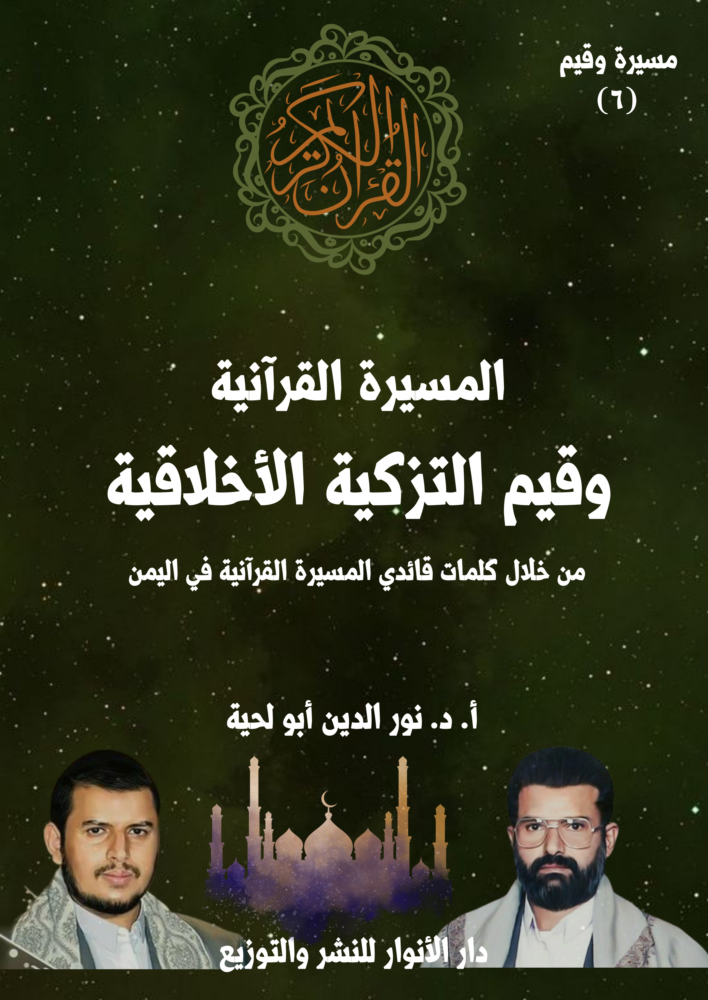

الكتاب: المسيرة القرآنية وقيم التزكية الأخلاقية
الوصف: من خلال كلمات قائدي المسيرة القرآنية باليمن
السلسلة: مسيرة وقيم
المؤلف: أ. د. نور الدين أبو لحية
الناشر: دار الأنوار للنشر والتوزيع
الطبعة: الأولى، 1445 هـ
عدد الصفحات: 635
ISBN: 978-620-4-72102-6
لمطالعة الكتاب من تطبيق مؤلفاتي المجاني وهو أحسن وأيسر: هنا

يهدف هذا الكتاب إلى محاولة التعرف على ما ذكره قائدا المسيرة القرآنية حول قيم التزكية الأخلاقية، باعتبارها من الأركان الكبرى التي تُبنى عليها الشخصية المسلمة، كما يبنى عليها المجتمع المسلم، والأمة المسلمة.
وقد قسّمناه إلى سبعة فصول، تناولنا فيها أمهات الأخلاق الكبرى، ومظاهرها، ومنابعها، وكيفية تهذيب النفس من سيئها، وكيفية تحليته بفاضلها، وقدمنا لذلك بفصل حول [المسيرة القرآنية وأسس الأخلاق]، حتى نتعرف من خلاله على نظرة قائدي المسيرة القرآنية للأخلاق ومصادرها، وكيفية ربطها بالدين من جوانبه المختلفة.
ثم تناولنا في الفصل الثاني [المسيرة القرآنية والتنزه عن الاستعلاء]، وما يرتبط به من العجب والغرور والكبر، وما يرتبط بالتنزه عنه من التواضع واللين.
ثم تناولنا في الفصل الثالث [المسيرة القرآنية والتنزه عن الظلم]، وما يرتبط به من أنواع العدوان المختلفة.
ثم تناولنا في الفصل الرابع [المسيرة القرآنية والتنزه عن الفواحش]، وما يرتبط بها من أنواع الرذائل والانحرافات والشذوذ.
ثم تناولنا في الفصل الخامس [المسيرة القرآنية والتنزه عن الترف] ، وما يرتبط به من التبذير والكسب الحرام، وما يرتبط بالتنزه عنه من الاعتدال والاقتصاد والتوازن.
ثم تناولنا في الفصل السادس [المسيرة القرآنية وحفظ اللسان] ، وما يرتبط به من آداب الكلام، والمجالات الصحيحة التي يمكن أن يستعمل فيها.
ثم تناولنا في الفصل السابع [المسيرة القرآنية والبر والإحسان] ، وما يرتبط بها من التعاون والتكافل والصلة ونحوها.
يهدف هذا الكتاب إلى محاولة التعرف على ما ذكره قائدا المسيرة القرآنية حول قيم التزكية الأخلاقية، باعتبارها من الأركان الكبرى التي تُبنى عليها الشخصية المسلمة، كما يبنى عليها المجتمع المسلم، والأمة المسلمة.
وهما في العادة يذكران هذه القيم بجانب الحديث عن قيم التزكية الروحية، أو باعتبارها تابعة لها، أو ثمرة من ثمارها، أو تجل من تجلياتها، ولذلك يختلط كلامهما عنها بكلامهما عن التزكية الروحية.
وهو منهج قرآني؛ فالقرآن الكريم يعتبر الأخلاق الحسنة أحسن دليل على مدى صلة صاحبها بربه سبحانه وتعالى؛ فمن عرف ربه، وتواصل معه، رزقه الله من الأدب والأخلاق، ما يكون دليلا على ذلك التواصل.
ومن الأمثلة على ذلك الثمار الأخلاقية التي يحصّلها من يقرأ سورة الفاتحة، فالتدبر بصدق في قوله تعالى: ﴿بِسْمِ الله الرَّحْمَنِ الرَّحِيمِ الْحَمْدُ لله رَبِّ الْعَالَمِينَ الرَّحْمَنِ الرَّحِيمِ مَالِكِ يَوْمِ الدِّينِ﴾ [الفاتحة: 1 ـ 4] ـ كما يثمر في المتدبر معرفة بربه، والتواصل الروحي معه ـ يثمر كذلك الكثير من الأخلاق الطيبة؛ وأولها أن يقتدي بربه في الرحمة الشاملة الواسعة، وأن تكون كل تصرفاته وسلوكاته منطلقة منها؛ وهذا ما يجعله سليم القلب، بعيدا عن الأحقاد وكل الأمراض النفسية.
وقيم التزكية الأخلاقية (6)
وهكذا إن حمد ربه؛ فإنه سيعلم أن كل نعمة من النعم بما فيها نعمة الهداية فضل إلهي عليه، وذلك ما يجعله متواضعا في نفسه، ومتواضعا مع الخلق؛ فلا يستعلي عليهم، ولا يستكبر، بل يسعى لأن يتحلى بكل الأخلاق العالية التي تجعله محمودا منهم، ليقتدي بربه في ذلك..
وهكذا، عندما نطالع أوصاف المؤمنين في القرآن الكريم نجد هذا الارتباط الدال على الصلة العميقة بين القيم الروحية والقيم الأخلاقية، ومن الأمثلة على ذلك ما ورد في صفات عباد الرحمن، حيث بدأ الله تعالى هذه الأوصاف بقوله: ﴿وَعِبَادُ الرَّحْمَنِ الَّذِينَ يَمْشُونَ عَلَى الْأَرْضِ هَوْنًا وَإِذَا خَاطَبَهُمُ الْجَاهِلُونَ قَالُوا سَلَامًا وَالَّذِينَ يَبِيتُونَ لِرَبِّهِمْ سُجَّدًا وَقِيَامًا﴾ [الفرقان: 63 ـ 64]، حيث نلاحظ الارتباط بين التواضع والسلام وقيام الليل.
وهكذا في قوله تعالى: ﴿وَالَّذِينَ يَقُولُونَ رَبَّنَا اصْرِفْ عَنَّا عَذَابَ جَهَنَّمَ إِنَّ عَذَابَهَا كَانَ غَرَامًا إِنَّهَا سَاءَتْ مُسْتَقَرًّا وَمُقَامًا وَالَّذِينَ إِذَا أَنْفَقُوا لَمْ يُسْرِفُوا وَلَمْ يَقْتُرُوا وَكَانَ بَيْنَ ذَلِكَ قَوَامًا﴾ [الفرقان: 65 ـ 67]، حيث نلاحظ الارتباط بين الدعاء والخشية والإنفاق باعتدال.
وهكذا في قوله تعالى: ﴿وَالَّذِينَ لَا يَدْعُونَ مَعَ اللَّهِ إِلَهًا آخَرَ وَلَا يَقْتُلُونَ النَّفْسَ الَّتِي حَرَّمَ اللَّهُ إِلَّا بِالْحَقِّ وَلَا يَزْنُونَ وَمَنْ يَفْعَلْ ذَلِكَ يَلْقَ أَثَامًا﴾ [الفرقان: 68]، حيث نلاحظ الارتباط بين التوحيد والتنزه عن القتل والفواحش.
وهكذا في قوله تعالى: ﴿وَالَّذِينَ لَا يَشْهَدُونَ الزُّورَ وَإِذَا مَرُّوا بِاللَّغْوِ مَرُّوا كِرَامًا وَالَّذِينَ إِذَا ذُكِّرُوا بِآيَاتِ رَبِّهِمْ لَمْ يَخِرُّوا عَلَيْهَا صُمًّا وَعُمْيَانًا وَالَّذِينَ يَقُولُونَ رَبَّنَا هَبْ لَنَا مِنْ أَزْوَاجِنَا وَذُرِّيَّاتِنَا قُرَّةَ أَعْيُنٍ وَاجْعَلْنَا لِلْمُتَّقِينَ إِمَامًا﴾ [الفرقان: 72 ـ 74]، حيث نلاحظ الارتباط بين التنزه عن شهادة الزور، واللغو مع التذكر والدعاء.
وهكذا يمكننا أن نقرأ القرآن الكريم كله من هذه الزاوية؛ ولذلك كان أكثر الناس
وقيم التزكية الأخلاقية (7)
اهتماما بالتزكية الروحية، هو أطهرهم أخلاقا، وأنبلهم نفسا، وأعظمهم أدبا.
وقد أشار السيد عبد الملك إلى هذه المعاني عند حديثه عن علاج العجب والغرور والكبر، حيث ذكر دور التزكية الروحية في تهذيب النفس من هذه الرذائل، وتحليته ببديلها من الفضائل، فقال: (الإنسان المؤمن هو يعترف بالنعمة لله، بالفضل لله عليه؛ وبالتالي مهما حصل عليه من نعم، مهما منحه الله من مواهب، وقدرات، وطاقات، وإبداعات، أو إمكانات مكّنه بها؛ إنما هو يزداد انشدادا إلى الله، إحساسا في وجدانه ومشاعره بالفضل من الله عليه وبالنعمة عليه، يزداد محبة لله، يزداد توجها نحو الله، اعترافا بالجميل لصاحب الجميل وهو الله سبحانه وتعالى لا يتجه إلى نفسه لتعظم نفسه عنده، وأنه وكأنه هو المصدر الأساس لتلك المواهب، أو لتلك القدرات، أو لتلك الطاقات، أو لتلك الإمكانات التي حصل عليها، لا يحصل هذا أبدا، الإنسان المعجب بنفسه هو ناكر للجميل، هو كافر بالنعمة، هو جاحد للفضل من ذي الفضل وهو الله سبحانه وتعالى ولهذا نسي الله، غفل عن الله، تنكّر لمن أسدى إليه تلك النعم، ومنّ عليه بها، ونظر وكأنها من ذاته، وكأن المصدر هو هو، وليس الله سبحانه وتعالى؛ فعظمت نفسه وكبرت نفسه، وهذه حالة سلبية جدّا)(1)
وهكذا، نجده يربط كل القيم الأخلاقية بالقيم الروحية، لأن نفس القيم الروحية قيم أخلاقية، والفرق بينهما لا يعدو في الوجهة؛ فالقيم الروحية هي التخلق مع الله، والقيم الأخلاقية هي التخلق مع الخلق، ولا يمكن أن يتحلى أحد مع ربه بما تقتضيه الأخلاق الفاضلة، ثم يتعامل مع خلقه بغير ذلك.
بناء على هذا قسّمنا الكتاب إلى سبعة فصول، تناولنا فيها أمهات الأخلاق الكبرى،
__________ (1) المرجع السابق.المسيرة القرآنية وقيم التزكية الأخلاقية (8)
ومظاهرها، ومنابعها، وكيفية تهذيب النفس من سيئها، وكيفية تحليته بفاضلها، وقدمنا لذلك بفصل حول [المسيرة القرآنية وأسس الأخلاق]، حتى نتعرف من خلاله على نظرة قائدي المسيرة القرآنية للأخلاق ومصادرها، وكيفية ربطها بالدين من جوانبه المختلفة.
ثم تناولنا في الفصل الثاني [المسيرة القرآنية والتنزه عن الاستعلاء]، وما يرتبط به من العجب والغرور والكبر، وما يرتبط بالتنزه عنه من التواضع واللين.
ثم تناولنا في الفصل الثالث [المسيرة القرآنية والتنزه عن الظلم]، وما يرتبط به من أنواع العدوان المختلفة.
ثم تناولنا في الفصل الرابع [المسيرة القرآنية والتنزه عن الفواحش]، وما يرتبط بها من أنواع الرذائل والانحرافات والشذوذ.
ثم تناولنا في الفصل الخامس [المسيرة القرآنية والتنزه عن الترف]، وما يرتبط به من التبذير والكسب الحرام، وما يرتبط بالتنزه عنه من الاعتدال والاقتصاد والتوازن.
ثم تناولنا في الفصل السادس [المسيرة القرآنية وحفظ اللسان]، وما يرتبط به من آداب الكلام، والمجالات الصحيحة التي يمكن أن يستعمل فيها.
ثم تناولنا في الفصل السابع [المسيرة القرآنية والبر والإحسان]، وما يرتبط بها من التعاون والتكافل والصلة ونحوها.
أولا ـ المسيرة القرآنية.. وأسس الأخلاق
الركن الأول من أركان التزكية الأخلاقية، والتي لا تتم بطريقة صحيحة من دونها هي قيامها ـ كما يذكر قائدا المسيرة القرآنية ـ على المنهج الإسلامي الخالص، والمؤسس على مصدره الأعظم القرآن الكريم.
ذلك أنه لا يمكن لأي منظومة فكرية أن تؤسس للقيم الأخلاقية أو تدفع إليها بعيدا عن الرؤية الإيمانية التي تميز بين الحق والباطل، والخير والشر، والطيب والخبيث.
ولهذا نرى تهافت الفلسفة المادية في هذا الجانب كتهافتها في غيره، ذلك أن الذي يختصر الإنسان في كيانه البيولوجي لا يستطيع أن يفسر أي قيمة من القيم الخلقية، ولا يستطيع كذلك أن يوفر لأتباعه أي حافز يدفعهم للسلوك الأخلاقي، وخاصة إن كان يحمل معاني التضحية والإيثار والبذل.
وكيف يمكن ذلك لمن يرى الحياة الدنيا فرصته الوحيدة؛ فلذلك يسرع لاستعمال كل وسيلة لنيل ملذاتها وشهواتها قبل أن يطبق عليه العدم ـ كما يتصور ـ ولا يمكن لمثل هذا أن يؤدي أي وظيفة أو خدمة للبشرية تكون على حساب مصالحه، وإن فعل ذلك قوّض جميع فكره ومذهبه الذي يؤمن به.
ومن التعبيرات التي قد تختصر لنا تصور المعايير التي يستند إليها الملاحدة في تحديدهم للأخلاق ما ورد في المناظرة المشهورة، والتي سُئل فيها الفيزيائي الشهير الملحد [لورنس كراوس] عن موقفه من زنا المحارم، فردّ قائلا: (ليس من الواضح بالنسبة إليّ أنه خطأ)(1)
__________ (1) انظر هذه النصوص ومصادرها في مقال بعنوان: هل يمكن بناء منظومة أخلاقية أساسها الإلحاد، إسماعيل عرفة، موقع ميدان.المسيرة القرآنية وقيم التزكية الأخلاقية (10)
ومثله [ريتشارد دوكنز] الذي صرّح في تغريدة له على موقع تويتر بأن الإجهاض فعل أخلاقي ومشروع طالما ليس هناك ألم، وبرّر ذلك قائلا: (لأن الجنين في بطن أمّه هو أقل إنسانية من أي خنزير بالغ)
أما الملحد الأسترالي وأستاذ الفلسفة الأخلاقية [بيتر سنجر]، فقد صرح بأن ممارسة البشر للجنس مع الحيوانات والبهائم طالما لا تتضمّن أذيّة من أي نوع للحيوان هو أمر طبيعي ومقبول في إطار حميمية العلاقة بين الحيوانات والإنسان، وبالنسبة إليه: (فلا خطأ في ذلك على الإطلاق، بل إنه أمر محمود طالما يؤدي إلى استمتاع الطرفين: الحيوان والإنسان)
هذه التعابير كلها تدل على المعايير التي يستند إليها الملاحدة في تفسير الأخلاق وتحديدها، وهو كونها ذاتية لا موضوعية، فليس هناك شيء اسمه أخلاق عندهم، وما نراه من أخلاق في تصرفاتهم، لا ينطلق من كونهم ملاحدة، وإنما من تأثير البيئة التي يعيشون فيها أو غيرها، أما لو ترك الأمر للملحد وعقله المجرد؛ فإن كل شيء بالنسبة له مباح، أو كما عبر [فرانك توريك] بقوله: (لا أقول بأن الملاحدة لا يعرفون الأخلاق، وإنما أقول إنهم لا يمكنهم تبرير الأخلاق.. نعم يمكنهم التصرّف بخُلق ويمكنهم الحكم على بعض الأفعال بأنها أخلاقية أو لاأخلاقية، لكنهم لا يستطيعون توفير قاعدة موضوعية لأحكامهم الأخلاقية.. وأيا ما كان الأمر: الهولوكوست، الاغتصاب، ذبح الأطفال، أو أكل الأطفال، فلا يوجد لدى الملحدين معيار موضوعي للحكم على أي منهم)
ولا يصعب على أي عاقل أن يعرف سبب خلو الإلحاد من الرؤية الأخلاقية، ذلك أن الإلحاد لا يؤمن إلا بالحس والمادة وما ينشأ عنهما، وبما أن الأخلاق أمور معنوية، ويصعب عليه تفسيرها وفق رؤيته المادية، ولذلك ينكرها.
وقيم التزكية الأخلاقية (11)
وقد عبر الفيلسوف الأميركي اللاأدري [توماس نيجل] في كتابه [العقل والكون: لماذا يكاد يكون التصوّر المادّي الدارويني خطأ قطعا؟] عن هذا المعنى بذكره (أن هناك ثلاثة عناصر تعجز الرؤية الكونية المادّية أن تقدّم تفسيرا لها، وهي: الوعي، والإدراك، والقيم الأخلاقية)
وبناء على هذا، كانت القوانين الوضعية التي تحاول ضبط أخلاق المجتمع ضعيفة هزيلة لا يمكنها الإحاطة بالكثير من الأخلاق السيئة، والتي تؤدي إلى دمار كبير في المجتمع، بخلاف فهي تنص مثلا (1) على أن الجريمة هي (كل عمل يضر بالأمن العام، أو نظام الحكم القائم)، والتشريع الانساني لا يجد أساسا غير هذا لاعتبار عمل ما جريمة.
وقد دفع هذا الأساس القانون الجديد الى إقرار أن جريمة (الزنا) ليست بجريمة، إلا إذا تمت جبرا أو إكراها لأحد الطرفين، فالجريمة بهذا الاعتبار هي الجبر والاكراه الذي سبق (الزنا)، وليس الزنا في حد ذاته.
مع أن جريمة (الزنا) تفشي فسادا كبيرا في المجتمع، فهي تخلق مشكلات الأطفال (غير الشرعيين)، وتضعف روابط الزواج، وهي تصدر عن عقلية تفضل اللذات السطحية في الحياة، وتربي عقلا خائنا، وتخلق السرقة واللصوص، وتروج الاغتيالات والانتحار والخطف؛ ومن ثم تفسد المجتمع كله، ولكن القانون ـ رغم ذلك ـ لا يستطيع تحريمها، فهو لا يجد أساسا لتحريم (الزنا) الذي تم بالرضا المتبادل.
ومثل ذلك الخمر التي لم يستطع القانون أن يجرمها، لأنه يؤمن بأن الأكل والشرب حق من الحقوق الطبيعية للإنسان، وهو حر في اقتناء كل ما يريد أن يأكله ويشربه؛ وليس
__________ (1) انظر: الإسلام يتحدى، وحيد الدين خان، ص162، وما بعدها.المسيرة القرآنية وقيم التزكية الأخلاقية (12)
للقانون أن يتدخل في حقوق الطبيعية، ومن ثم لم يكن شرب الخمر والسكر الذي يتبعه جريمة في الواقع، الا اذا اعتدى شارب الخمر على أحد المواطنين في هذه الحالة من السكر؛ أو خرج الى الشارع وهو سكران؛ فالجريمة ليست هي حالة السكر، بل الاعتداء على الآخرين في تلك الحالة.
مع أن الخمر تضر بالصحة، وتبدد أموال الناس، وتؤدي بمدمنيها الى كوارث اقتصادية محققة، وتضعف الشعور الأخلاقي، حتى أن الانسان يتحول إلى حيوان رويدا رويدا، والخمر خير مساعد للمجرمين، فهي تشل الإحساسات اللطيفة، حتى يستطيع الإنسان اقتراف أية جريمة من السرقة والقتل، وهدر العصمة، لكن القانون الانساني رغم هذه المعايب الشنيعة لن يتمكن من تحريم الخمر، لأنه لا يجد جوابا يسوغ تدخله في حق من حقوق الانسان الطبيعية.
ولذلك لن نجد حلا لهذه المشكلة إلا في قانون الله، لأن قانونه يبين رضا حاكم الكون؛ فإن كون أي قانون قانون الله يحمل معه أولوية تنفيذه، ولا يحتاج بعد ذلك دليلا آخر.. وهكذا يسد القانون الإلهي فجوة عميقة، نتمكن بعدها من إحالة أي عمل الى دائرة القانون.
ولهذا لا يجد المؤمنون مشكلة في مصدر الأخلاق، وهل هي الطبيعة أو العقل أو البيئة أو الحاكم، بل إن الأخلاق عندهم تعين وتحدد من طرف الخالق الذي آمنوا به؛ فهو أعلم بما يصلح لهم.
ولهذا يرى المؤمنون أن هناك ارتباطا وثيقا بين إثبات القيم المطلقة ووجود الخالق المطلق سبحانه، فمعرفة الخالق تقودنا إلى الأخلاق، وكذلك إثبات وجود الأخلاق والقيم المطلقة يقودنا حتماً إلى إثبات وجود الخالق المطلق سبحانه، بل حتى مسألة الشر التي كثيراً
وقيم التزكية الأخلاقية (13)
ما يستدل بها الملاحدة لإنكار وجود الخالق يمكن الاستدلال بها بشكل معاكس على إثبات وجوده سبحانه.
وهذا ما أشار إليه [ويليام لان كريغ] في مناظرته مع [سام هريس]، حيث قال: (لاحظوا أن الشر في الحقيقة يثبت وجود الرب، لأن الرب لو لم يكن موجوداً، فإن القيم والواجبات الأخلاقية الموضوعية لن تكون موجودة! وإذا وجد الشر، فذلك يقتضي أن القيم والواجبات الأخلاقية موجودة، وبالتحديد لأن بعض الأشياء شريرة. إذاً فالشر يثبت وجود الرب فعلياً، لأنه بغير الرب لن يوجد الشر والخير كما هما الآن)(1)
وإذا ثبت لدينا وجود الخالق المطلق فيجب علينا عبادته بغض النظر عن الأمور الأخرى كمسألة المثوبة والعقوبة الأخروية، لأن الخالق سبحانه يُعبد لكونه مستحقاً للعبادة، وليس كما يظن بعض الملاحدة بأنه يُعبد فقط من أجل الدخول إلى الجنة واجتناب النار.
وفي ذلك يتحدث [ويليام لان كريغ] رداً على قول [سام هريس] بأن هدف الإيمان بالله عند أصحاب الأديان هو تجنب نار جهنم، حيث يقول: (وبكل أمانة إن هذا يبين ببساطة الفهم القاصر عند سام هاريس للمسيحية (وللأديان عموماً).. أنت لا تؤمن بوجود الرب لمجرد تجنب دخول الجحيم، فالإيمان بالله ليس نوعاً من التأمين ضد الحريق. أنت تؤمن بالرب لأن الرب، بكونه الخير المطلق، هو الخليق بالتعبد والمحبة فهو الخير نفسه، الذي يطلب لذاته لا لشيء آخر. وهكذا فتحقيق وجود الإنسان سيوجد في العلاقة مع الرب. والله حقيق بالعبادة بسبب كينونته وقيمته الأخلاقية. ولا يتعلق الأمر بتاتاً باجتناب
__________ (1) الإلحاد بين قصورين، ص68.المسيرة القرآنية وقيم التزكية الأخلاقية (14)
النار، ولا بتعزيز رفاهيتك الخاصة)(1)
وحول مهاجمة الملاحدة للأديان لكونها تؤسس لسلوكيات غير أخلاقية بحسب زعمهم، يقول ويليام لان كريغ رداً على سام هريس: (لاحظوا أن د.هاريس ليس لديه أساس أخلاقي ليقول بأن المعتقدات المسيحية (الدينية) بغيضة أخلاقياً، لأنه يفتقد إلى الأساس الذي يبني عليه حكمه هذا. لو كان الإلحاد صحيحاً، فما هو الأساس الموضوعي للجزم بأن نظرة ما بغيضة وأخرى ليست كذلك؟ لأنه لا يوجد ببساط أي أساس لأحكام كهذه)(2)
وقد تناول الشيخ الشهيد مرتضى المطهري مسألة الارتباط بين الأخلاق ووجود الخالق في كتابه فلسفة الأخلاق تحت عنوان (معرفة الله هي أساس الأخلاق) بقوله: (يقول البعض أن للأخلاق أساساً ومرتكزاً، فكما أن (أول الدين معرفته) حيث تشكل معرفة الله سبحانه الحجر الأساسي للدين، فكذا معرفة الله تشكل الحجر الأساسي للإنسانية، ولا معنى للإنسانية ولا للأخلاق من دون معرفة الله تعالى. أي لا معنى لأي شيء معنوي إذا لم يرتبط برأس المعنويات ومنبعها)(3).
ويقول تحت عنوان (ذات الله تعالى هي أساس الفضائل الخلقية): (على أساس أي منطق يمكننا أن نبني الأخلاق؟. أيمكننا أن نجد للأخلاق منطقاً استدلالياً بعيداً عن طريق معرفة الله؟ كلا، إن الخلفية والرصيد لجميع هذه المفاهيم هي معرفة الله. وإن فقد الإيمان أصبحت الأخلاق كقطعة نقود لا رصيد لها. قد يكون البعض غير ملتفت إلى هذا
__________ (1) المرجع السابق، ص66. (2) المرجع السابق، ص69. (3) فلسفة الأخلاق المطبوع ضمن كتاب سلوك وأخلاق الإسلام، ص154.المسيرة القرآنية وقيم التزكية الأخلاقية (15)
الأمر ولكنه لا يكون مبنياً على أساس محكم.)(1)
ويبين الشهيد المطهري ذلك بذكر شاهد على كلامه بذكر ما فعله الفرنسيون، حيث أنهم أول من نشر الإعلان العالمي لحقوق الإنسان، ولكن لم يكن لهذا الإعلان أي أثر في حرب الاستعمار الفرنسي على شعب الجزائر(2).
وعندما نقارن الرؤية الإيمانية لمصدر الأخلاق بنفس الرؤية عند الملاحدة، نجد الفرق الكبير بينهما؛ ذلك أننا لو أننا خولنا هذا الامتياز للإدارة الحاكمة ـ كما تنص بعض النظريات الإلحادية ـ فليس في ذلك أي أساس نظري وعلمي يجيز لها ذلك الامتياز، ثم ان هذا التحويل من ناحية أخرى لا يجدي نفعا؛ فإن اطلاق أيدي الحكام ليصدروا أي شيء لتنفيذه بوسيلة القوة أمر لا تطيقه ولا تحتمله الجماهير.
ولو أن هذا الأمر خول لرجال المجتمع ـ كما تقول نظريات أخرى ـ فإننا نجدهم أكثر جهالة وحمقا، لأن المجتمع ـ أي مجتمع ـ اذا نظرنا اليه ككل، لا يتمتع بالعلم والعقل والتجربة، وهي أمور لابد منها عند التشريع، فهذا العمل يتطلب مهارة فائقة وعلما وخبرة، وهو مالا تستطيع العامة من الجماهير الحصول عليه؛ كما أنها، وان أرادت، لن تجد الوقت الكافي لدراسة المشكلات المختلفة وفهمها.
وللخروج من هذه المشكلة توصل بعضهم الى حل وسط، وهو أن يقوم البالغون من أفراد المجتمع بانتخاب ممثلين لهم، وهؤلاء بدورهم يصدرون التشريعات المرتبطة بهذا باسم الشعب، ومن الممكن أن ندرك حماقة هذا الحل الوسط، حين نجد أن حزبا سياسيا لا يتمتع الا بأغلبية51 بالمائة من مقاعد البرلمان يحكم على حزب الأقلية، الذي يمثل 49 بالمائة
__________ (1) المرجع السابق، ص159. (2) راجع المرجع السابق، ص159.المسيرة القرآنية وقيم التزكية الأخلاقية (16)
من أفراد المجتمع البالغين.
وليت الأمر توقف عند هذا الحد، بل إن هذا الحل يحتوي على فراغ كبير جدا تنفذ منه (أقلية) لتحكم على أغلبية السكان.
وبناء على هذا كله، فإن الدين وحده من يستجيب لهذا التحدي الخطير، الذي قد يدمر سعادة البشرية كلها، لأنه يرى أن مصدر التشريع هو (الله) وحده، خالق الأرض والكون؛ فالذي أحكم قوانين الطبيعة هو وحده الذي يليق أن يضع دستور حضارة الإنسان ومعيشته، وليس هناك من أحد غيره سبحانه، يمكن تحويله هذا الحق.
بناء على هذا سنذكر هنا ما ذكره قائدا المسيرة القرآنية حول الأسس التي تقوم عليها الأخلاق في الإسلام، وما يميزها عن غيرها من الأسس المنحرفة عنه.
الأساس الأول الذي تقوم عليه الأخلاق في الإسلام ـ كما يذكر قائدا المسيرة القرآنية ـ هو كونها مستمدة من الله، ذلك أنه أعلم بعباده، وبالأخلاق التي تصلحهم، ولذلك ضمن هديه المتمثل في القرآن الكريم أو فيما ورد عن رسول الله صلى الله عليه وآله وسلم أو ورثته الهداة كل ما يحتاجه البشر من القيم الأخلاقية التي تغنيهم عن غيرها.
وقد تحدث السيد عبد الملك عن هذا المعنى في محال مختلفة، ومنها ما ذكره عند الحديث عن الغفلة والتيه الذي تقع فيه البشرية بسبب بعدها عن مصادر هدايتها، حيث قدّم لذلك بقوله: (الكثير من المجتمعات والشعوب والأمم تعتمد في مسيرة حياتها في التزاماتها العملية، وفي برامجها العملية، وفي نظامها الذي تعتمد عليه لنظم أمرها وحياتها، على ما يأتيها من توجيهات وتعليمات وخطط وأوامر من جهات، من شخصيات، من قادة،
وقيم التزكية الأخلاقية (17)
من زعماء، من ملوك، من أمراء.. بحسب اختلاف هذا الجانب لدى شعب إلى آخر، وما بين أمة إلى أخرى، هذا هو الواقع الذي عليه البشر، والكثير من أولئك الذين يحتكم إليهم البشر، ويطيعهم الناس، ويلتزمون بتعليماتهم وتوجيهاتهم وأوامرهم من القادة والزعماء والملوك والأمراء والسلاطين، أو الجهات التي لها هذه السلطة بين قومها، أو شعبها، أو أمتها)(1)
ثم ذكر افتقار تلك الجهات إلى الخصائص التي تمكنها من التوجيه السليم، فقال: (الكثير منهم لا ينطلقون فيما ينطلقون فيه، أو فيما يقدمونه إلى أممهم أو شعوبهم من منطلق الرحمة، وعلى أساس الحكمة، وبهدف الخير وإرادة الخير لشعوبهم وأقوامهم، قد ينطلقون من موقع التسلط، ومن موقع تعزيز النفوذ والقدرة والأطماع.. إلخ)(2)
ثم ذكر في مقابل ذلك المصدر الإلهي، ومنطلقاته، فقال: (أمّا ما يأتينا من الله سبحانه وتعالى فهو يختلف كليا، الله سبحانه وتعالى هو ربنا الرحيم، العظيم، الكريم، وله الكمال المطلق، هو جلّ شأنه على كل شيء قدير، وبكل شيء عليم، وهو أرحم الراحمين، وأحكم الحاكمين.. وهكذا عندما نأتي إلى بقية أسمائه الحسنى)(3)
ثم ذكر قابلية الفطر السليمة للتوجيهات في حال كونها من الله تعالى، وأسباب ذلك، فقال: (الواقع بالنسبة لنا نحن، للإنسان كإنسان، للبشر كبشر، في تفاعلهم مع ما يأتي إليهم من توجيهات، أو أوامر، أو الزامات في الواقع العملي، ما يأتيهم من خطاب أو نداء أن تفاعلهم يكون من خلال جانبين: الأول باعتبار المصدر (مصدر ما وصل إليهم)، فقد
__________ (1) خطر الغفلة وضرورة اليقظة لتأمين المستقبل الدائم، المحاضرة الرمضانية الثالثة 3 ـ 9 ـ 1440 هـ، الموافق لـ: 8 ـ 5 ـ 2019م. (2) المرجع السابق. (3) المرجع السابق.المسيرة القرآنية وقيم التزكية الأخلاقية (18)
يتفاعلون مع ما وصل إليهم من توجيهات أو أوامر أو نداء باعتبار أنه أتى من جهة يعظّمونها أو يقدسونها، ينظرون إليها بإكبار على أنها جهة تمتلك الحكمة، تمتلك المعرفة، تمتلك العلم، تمتلك القدرة، يرجون من جانبها خيرا، أو يخافون من جانبها شرا، وقد يكون أيضا تفاعلهم باعتبار مضمون ما وصل إليهم، وما أتى إليهم، وما قدّم إليهم، باعتبار أنه يلامس حياتهم وشؤونهم التي هي محط اهتمام عندهم، وهذا عندما يلامس ما يأتي إليهم واقعهم على مستوى الرغبات والاحتياجات، أو على مستوى الانفعالات، أو على مستوى المخاطر والتهديدات، فما وصل إليهم من هذا القبيل يتفاعلون معه، ينشدون إليه، ولا يتجاهلونه)(1)
ثم ذكر النواحي الكثيرة التي تدعو إلى اختيار العقلاء للتوجيهات من الله تعالى بدل غيره، وأولها كونها من الله تعالى نفسه، فقال: (عندما نتأمل فيما أتانا من الله سبحانه وتعالى من توجيهات وأوامر، إذا جئنا لنحسب أهمية ذلك بحساب المصدر: وهو الله جلّ شأنه فهو على أعلى درجة من الأهمية، أعلى درجة من الأهمية، هل هناك أهم من الله سبحانه وتعالى، أعظم من الله!؟ كل الاعتبارات التي قد تجعلنا نتفاعل مع شيء وصل إلينا من طرف، أو من جهة، بحسب اعتبارات معينة أنه من ملك، أو من أمير، أو من رئيس، أو من قائد، أو من زعيم، أو من حكيم، أو من عالم، أو من رحيم، أو من تاجر، أو من ثري.. أو من أي طرف، بأي اعتبار قد يشدنا إلى التفاعل مع ذلك الطرف؛ وبالتالي مع ما يأتينا من جانبه، كل تلك الاعتبارات لا تساوي شيئا أمام الله سبحانه وتعالى رب السموات والأرض، ملك السموات والأرض، رب العالمين، الذي بيده الخير كله، بيده ملكوت كل
__________ (1) المرجع السابق.المسيرة القرآنية وقيم التزكية الأخلاقية (19)
شيء)(1)
ثم ذكر حاجة العباد إلى ربهم، وفي كل الأحوال، ودورها في الالتزام بتوجيهاته، فقال: (بحساب ما نرجوه: هل هناك شيء نرجوه من الآخرين بأعظم مما نرجوه من الله، وهو الذي خلقنا، وبيده حياتنا، بيده موتنا، إليه مصيرنا، كل أمرنا بيده، يتدخل ـ وهو القادر جلّ شأنه ـ في كل شيء أراد أن يتدخل فيه من واقع حياتنا، يملك منا ما لا نملكه من أنفسنا، يملك لنا ويملك منا في الخير والرشد أو الضر ما لا نملكه نحن بأنفسنا، ولا يملكه أحد سواه لنا أو علينا، هو الذي له الدنيا والآخرة، وله العالم كله، وله الأرض ومن عليها، وهو الذي بيده ملكوت كل شيء، فعلى مستوى ما نرجوه، وعلى مستوى ما نخافه، وعلى مستوى التعظيم.. على مستوى كل الاعتبارات، ليس هناك ما ينبغي أن يشدنا إلى الآخرين بأكثر من الله سبحانه وتعالى فما أعظم غفلتنا، وما أسوأ تجاهلنا لما يأتينا من عند الله سبحانه وتعالى)(2)
ثم تحدث عن التوجيهات الإلهية نفسها، مقارنة بغيرها من التوجيهات، فقال: (ودعوته جلّ شأنه هي دعوة حق، هي دعوة خير، هي دعوة رشاد، هي دعوة فلاح؛ لأنه الغني عنا، عندما يأمرنا بشيء أو ينهانا عن شيء فلم يأمرنا بشيء لأنه بحاجة إليه، ولم ينهنا عن شيء لأن فيه ضرا عليه، هو الغني جلّ شأنه لا تنفعه طاعتنا ولا يحتاج إليها، ولا تضره معصيتنا ولا تمثل بالنسبة له مشكلة، العائد هو يتعلق بنا في الطاعة لمصلحتنا، وخيرا لنا، ومنفعة لنا في الدنيا وفي الآخرة كذلك، أيضا فيما ينهانا عنه)(3)
__________ (1) المرجع السابق. (2) المرجع السابق. (3) المرجع السابق.المسيرة القرآنية وقيم التزكية الأخلاقية (20)
ثم ذكر ما ورد في القرآن الكريم مما يدل على ذلك، فقال: (لهذا عندما نأتي إلى دعوة الله وهو جلّ شأنه قال في عنوان عام: ﴿وَاللَّهُ يَدْعُو إِلَى الْجَنَّةِ وَالْمَغْفِرَةِ بِإِذْنِهِ﴾ [البقرة: 221]، ﴿وَاللَّهُ يَدْعُو إِلَى دَارِ السَّلَامِ﴾ [يونس: 25]، ﴿يَدْعُوكُمْ لِيَغْفِرَ لَكُمْ مِنْ ذُنُوبِكُمْ وَيُؤَخِّرَكُمْ إِلَى أَجَلٍ مُسَمًّى﴾ [إبراهيم: 10]، على المستوى التفصيلي فيما يدعونا إليه حينما يقول جلّ شأنه: ﴿وَمَنْ يَتَّقِ اللَّهَ يَجْعَلْ لَهُ مَخْرَجًا وَيَرْزُقْهُ مِنْ حَيْثُ لَا يَحْتَسِبُ﴾ [الطلاق: 2 ـ 3]، على المستوى الشخصي كم هناك من وعود في القرآن الكريم: ﴿وَمَنْ يُطِعِ اللَّهَ وَرَسُولَهُ يُدْخِلْهُ جَنَّاتٍ تَجْرِي مِنْ تَحْتِهَا الْأَنْهَارُ﴾ [الفتح: 17](1)
ثم ذكر المصالح والفوائد المترتبة على الطاعة، وكونها خاصة بمن يطبقها، فقال: (أنت أنت المستفيد عندما تستجيب لله، عندما تطيع الله سبحانه وتعالى عندما تلتف إلى توجيهاته وأوامره، عندما تنتهي عن نواهيه، على المستوى العام كجماعة، أو كأمة، أو كشعب، أو كمجتمع، في كل المجالات، في كل جوانب وشؤون الحياة، ونحن نحتاج إلى الله في كل شيء، هو القائل جلّ شأنه: ﴿إِنْ تَنْصُرُوا اللَّهَ يَنْصُرْكُمْ﴾ [محمد: 7]، تكونون أنتم من تستفيدون، من تنتصرون، من تعتزون، ﴿وَلِلَّهِ الْعِزَّةُ وَلِرَسُولِهِ وَلِلْمُؤْمِنِينَ﴾ [المنافقون: 8]، وهكذا عندما نأتي إلى سائر التوجيهات الإلهية: ﴿وَلَوْ أَنَّ أَهْلَ الْقُرَى آمَنُوا وَاتَّقَوْا لَفَتَحْنَا عَلَيْهِمْ بَرَكَاتٍ مِنَ السَّمَاءِ وَالْأَرْضِ وَلَكِنْ كَذَّبُوا فَأَخَذْنَاهُمْ بِمَا كَانُوا يَكْسِبُونَ﴾ [الأعراف: 96]، النتيجة لو أنهم آمنوا واتقوا لكانت النتيجة نتيجة خير، ونتيجة عظيمة، لمصلحتهم هم، ﴿لَفَتَحْنَا عَلَيْهِمْ بَرَكَاتٍ مِنَ السَّمَاءِ وَالْأَرْضِ﴾ [الأعراف: 96]، بركات واسعة في أرزاقهم، في حياتهم، في شؤونهم، في كل جوانب الخير، وكلما هو خير فيما يتصل بشؤونهم على نحو
__________ (1) المرجع السابق.المسيرة القرآنية وقيم التزكية الأخلاقية (21)
واسع ووافر، النتيجة عندما كذّبوا، والتكذيب هو يتجه إلى الواقع العملي، وليس فقط الى الجحود، الجحود جانب، شكل من أشكال التكذيب؛ لأنه يترتب عليه نتائج عملية سلبية، وعندما يكون أيضا في الواقع العملي من الأساس ولهذا قال: ﴿فَأَخَذْنَاهُمْ بِمَا كَانُوا﴾ [الأعراف: 96] ماذا؟ ﴿يَكْسِبُونَ﴾؛ لأن المسألة كانت في الواقع العملي، فعندما يتجه إلى الواقع العملي النتيجة تساوي نتيجة الجحود: سواء كذّبت بالجحود، أو كذّبت في الواقع العملي بعدم اعتبارك لما وصل إليك من الله من توجيهات وهداية)(1)
ثم ذكر المسارات التي وضع الله تعالى فيها الإنسان، فقال: (الإنسان بين حالة من حالتين: إمّا أن يؤسس مسيرة حياته على أساس الارتباط بهدى الله وتوجيهاته، والاهتداء بهديه، والالتزام بتعليماته، مسيرة إيمانية على أساس من إيمانه بالله سبحانه وتعالى ويتحقق لهم بذلك الخير والتقوى، يقيه الله سبحانه وتعالى: الشرور، العذاب، الخزي، يفلح وينجو ويفوز في الدنيا والآخرة.. وإمّا أن ينطلق في هذه الحياة على أساس هوى نفسه وأهواء الآخرين، وينسى الله، لا يحسب حساب الله، ولا يحسب حساب تقوى الله، ويعيش حالة من الانفلات وراء مزاج نفسه، وأهواء نفسه، ورغبات نفسه، وانفعالات نفسه)(2)
ثم ذكر عدم جدوى الإيمان في حال عدم التزام صاحبه بمقتضياته، فقال: (قد يكون منتميا ـ في واقع الحال ـ للإيمان، وهذه الحالة التي نحن عليها كمسلمين، وقد نغفل وقد ننسى؛ وبالتالي لا نستحضر مقتضى إيماننا في واقعنا العملي في كثير من الحالات، وأمام كثير من المواقف، وهنا مكمن الخطورة؛ ولهذا يذكّرنا الله سبحانه وتعالى في قوله جلّ شأنه: ﴿يَا أَيُّهَا الَّذِينَ آمَنُوا اتَّقُوا اللَّهَ وَلْتَنْظُرْ نَفْسٌ مَا قَدَّمَتْ لِغَدٍ وَاتَّقُوا اللَّهَ إِنَّ اللَّهَ خَبِيرٌ بِمَا تَعْمَلُونَ وَلَا
__________ (1) المرجع السابق. (2) المرجع السابق.المسيرة القرآنية وقيم التزكية الأخلاقية (22)
تَكُونُوا كَالَّذِينَ نَسُوا اللَّهَ فَأَنْسَاهُمْ أَنْفُسَهُمْ أُولَئِكَ هُمُ الْفَاسِقُونَ﴾ [الحشر: 18 ـ 19]، (يا أيّها الّذين آمنوا) كما قلنا تأتي الكثير من التوجيهات للذين آمنوا، لنا كمجتمع مسلم نحسب أنفسنا من الذين آمنوا، ﴿يَا أَيُّهَا الَّذِينَ آمَنُوا اتَّقُوا اللَّهَ﴾ [الحشر: 18]، فمجرد الانتماء الإيماني لا يكفي، إنما هو أساس نبني عليه في مسيرتنا العملية، في التزاماتنا العملية، لنتحرك في واقع الحياة في أعمالنا وفي التزاماتنا وفي مواقفنا على أساس تعليمات الله سبحانه وتعالى فنقي أنفسنا من عذابه وسخطه)(1)
ثم ذكر آثار عدم الالتزام بتوجيهات الله تعالى، فقال: (المسألة بالنسبة للإنسان إذا هو أعرض وتكبر واغتر وطغى ولم يبال بتوجيهات الله سبحانه وتعالى ورمى بها عرض الحائط، ولم يلتفت إليها، ولم يبال بها؛ ليست سهلة لا تنتهي المسألة. |لا| الإنسان يجعل نفسه في موقع المؤاخذة الإلهية، إن الله هو ملك السموات والأرض، ملك الناس، عزيز ذو انتقام، لا يفلت الإنسان من قبضته، ولا يخرج من سلطانه لو بلغ به طغيانه ما بلغ، أو لامبالاته وتجاهله وغروره وغفلته ما بلغت، كل ذلك لا ينقذه أبدا من سطوة الله وجبروته وعذابه وعقابه، على العكس كلما طغى الإنسان، واغتر، وتجاهل، ولم يبال، واتجه وفق أهواء نفسه؛ هو يحمّل نفسه الوزر، ويسبب لنفسه العذاب والمؤاخذة من الله سبحانه وتعالى على المستوى الشخصي وعلى المستوى الجماعي، مجتمع معين، أمة معينة، شعب معين، على مستوى أي مجتمع، على مستوى قرية)(2)
ثم ذكر ما ورد في القرآن الكريم مما يدل على ذلك، فقال: (فالله جلّ شأنه يقول في كتابه الكريم: ﴿وَكَأَيِّنْ مِنْ قَرْيَةٍ عَتَتْ عَنْ أَمْرِ رَبِّهَا وَرُسُلِهِ﴾ [الطلاق: 8]، عتت وتجاوزت
__________ (1) المرجع السابق. (2) المرجع السابق.المسيرة القرآنية وقيم التزكية الأخلاقية (23)
وتعدّت، ولم تبال بأوامر الله سبحانه وتعالى وبهديه وبتوجيهاته وتعليماته، فماذا كانت النتيجة؟ ﴿فَحَاسَبْنَاهَا حِسَابًا شَدِيدًا وَعَذَّبْنَاهَا عَذَابًا نُكْرًا فَذَاقَتْ وَبَالَ أَمْرِهَا وَكَانَ عَاقِبَةُ أَمْرِهَا خُسْرًا أَعَدَّ اللَّهُ لَهُمْ عَذَابًا شَدِيدًا فَاتَّقُوا اللَّهَ يَا أُولِي الْأَلْبَابِ الَّذِينَ آمَنُوا قَدْ أَنْزَلَ اللَّهُ إِلَيْكُمْ ذِكْرًا﴾ [الطلاق: 8 ـ 10]، فالإنسان بحاجة إلى أن يدرك أنه إن عصى الله، أنه إن تعنت وغفل ولم يبال ولم يعد يكترث لتوجيهات الله سبحانه وتعالى أنه يظلم نفسه، أنه يسبب لنفسه الخسارة، أنه يوقع نفسه في عذاب الله سبحانه وتعالى)(1)
ثم ذكر قوله تعالى: ﴿يَا أَيُّهَا الَّذِينَ آمَنُوا اتَّقُوا اللَّهَ وَلْتَنْظُرْ نَفْسٌ مَا قَدَّمَتْ لِغَدٍ﴾ [الحشر: 18]، وعلق على الآية الكريمة بقوله: (أنت فيما تعمل اليوم من أعمال، من تصرفات، قد لا تبالي بها، وقد تستهين بها، أنت تقدّم لنفسك يوم القيامة: إما تقدّم الخير، وإما تقدّم الشر، ما تعمله ستجده يوم القيامة معدا لك بشكل جزاء، جزاء تجازى عليه، فلتنظر ولتفكر ولتتأمل بجدية، لا يعيش الإنسان حالة الغرور والغفلة، هي أخطر شيء على الإنسان، واللامبالاة، والاتجاه في هذه الحياة وفق هوى النفس من دون انتباه، هذا تنبيه مهم، إنذار وتذكير مهم: ﴿وَلْتَنْظُرْ نَفْسٌ مَا قَدَّمَتْ لِغَدٍ﴾ [الحشر: 18]، إن لم تقدّم لنفسك العمل الذي تنجو به، تفوز به، تسلم به من عذاب الله، يمثل وقاية لك من عذاب الله سبحانه وتعالى فالنتيجة هي الهلاك، لن يكفيك ولن ينفعك مجرد الانتماء الإيماني؛ لأن هذا التنبيه هو لمن؟ للذين آمنوا، لا يكفي أن ينتمي الإنسان إلى الإيمان، ثم لا يعمل ما فيه الوقاية له من عذاب الله سبحانه وتعالى)(2)
ثم ذكر قوله تعالى: ﴿وَاتَّقُوا اللَّهَ إِنَّ اللَّهَ خَبِيرٌ بِمَا تَعْمَلُونَ وَلَا تَكُونُوا كَالَّذِينَ نَسُوا اللَّهَ
__________ (1) المرجع السابق. (2) المرجع السابق.المسيرة القرآنية وقيم التزكية الأخلاقية (24)
فَأَنْسَاهُمْ أَنْفُسَهُمْ أُولَئِكَ هُمُ الْفَاسِقُونَ﴾ [الحشر: 18 ـ 19]، ودلالتها على خطر الغفلة عن تعاليم الله تعالى، فقال: (أخطر شيء على الإنسان، أخطر شيء على الإطلاق هو النسيان لله، النسيان لله ليس فقط الغفلة عن ذكر اسم الله، يعني: أنك لم تعد كثير التسبيح، وكثير الاستغفار، وكثير الدعاء، وكثير الالتفات إلى القرآن، أخطر شيء في حالة النسيان ليست النسيان للذكر الذي هو عبارة عن أذكار معينة وتسبيح واستغفار ودعاء، أخطر من ذلك النسيان لله في مقام العمل، في واقع الحياة، تجاه المسؤوليات، تجاه أوامر الله ونواهيه وتوجيهاته)(1)
ثم ذكر معنى الغفلة، وعلاقتها بمعرفة الله تعالى، والتعامل الصحيح معه، فقال: (عندما تغفل عن الله سبحانه وتعالى لا تحسب حساب الله فيما أنت تعمله، وفيما أنت تتركه تجاه توجيهاته، تجاه هديه، تجاه المسؤوليات التي حمّلك الله إياها في واقع حياتك، في مواقفك، في ولاءاتك، في عداواتك، في مسيرة حياتك، في مجالات هذه الحياة، النسيان لله في موقع العمل، في موقع المسؤولية، في واقع الحياة هو الأخطر، وذلك هو جانب من جوانب النسيان والغفلة عن الله سبحانه وتعالى)(2)
ثم ذكر دلالات الآية الكريمة على ذلك، فقال: (لا تكونوا كالذين نسوا الله فانطلقوا في مواقفهم بعيدا عن الله، وبعيدا عن أوامره وتوجيهاته وهديه ونهجه، لا تكونوا كالذين نسوا الله في مواقفهم، في أعمالهم، في تحركاتهم في هذه الحياة، لم يحسبوا حساب الله، هنا الخطر)(3)
__________ (1) المرجع السابق. (2) المرجع السابق. (3) المرجع السابق.المسيرة القرآنية وقيم التزكية الأخلاقية (25)
ثم ذكر هذا النوع من الغفلة، والذي يقع فيه أكثر البشر، فقال: (هنا وقع الكثير من الناس فانطلقوا لحسابات أخرى ودوافع أخرى، وهذا الذي عليه الكثير وللأسف الشديد حتى في واقع مجتمعنا المسلم، الكثير من الناس ينطلقون بدوافع مادية وإغراءات، أو بدافع المخاوف، أو العصبيات.. الأهواء هي العنوان الواسع الذي يتحرك على أساسه الكثير من الناس، بعيدا عن الله سبحانه وتعالى وهنا الخطر الكبير)(1)
تحدث السيد عبد الملك عن علاقة الرقابة الإلهية بالتزكية الأخلاقية، فقال: (الإنسان يتحرك في واقعه العملي على أساس ثلاثة اعتبارات مهمة ومؤثرة في كل أعماله وتصرفاته وسلوكياته)(2)
ثم ذكر أولها، وهو الدوافع، فقال: (الإنسان ـ دائما ـ حينما يعمل عملا، أو يقول قولا، أو يتحرك تحركا، أو يتصرف تصرفا، سبق ذلك دافع في نفسه، هذا الدافع قد يكون دافعا غريزيا (بالغريزة)، قد يكون دافعا إنسانيا (بضميره الإنساني، وفطرته الإنسانية)، قد يكون دافعا كذلك إيمانيا (منطلقا من حالة إيمانية)، بغض النظر عن صحة هذا التصرف
__________ (1) المرجع السابق. (2) الرقابة الإلهية، المحاضرة الرمضانية التاسعة 14 ـ 9 ـ 1438 هـ، الموافق لـ: 9 ـ 6 ـ 2017م.المسيرة القرآنية وقيم التزكية الأخلاقية (26)
من عدمها، لكن كدافع، هذه قد تكون أبرز الدوافع: [الدوافع الغريزية، الدوافع الإيمانية، الدوافع الإنسانية](1)
ثم ذكر العامل الثاني، وهو القدرة، فقال: (إذا امتلك الإنسان القدرة مع الدافع، القدرة على تصرف معين، أو على فعل وعمل معين؛ فيفعل، وإلا قد يكون لدى للإنسان دافع لأعمال كثيرة أو تصرفات، ولكنه لا يمتلك القدرة المباشرة أو القدرة اللازمة، التي هي: عبارة عن إمكانات معينة، أو ما شاكل ذلك، والقدرة هي أمر لازم للفعل وللتصرف)(2)
ثم ذكر العامل الثالث، وهو النتائج المترتبة على العمل، فقال: (الإنسان يحسب حساب النتائج المترتبة على [فعل معين، أو تصرف معين، أو كلام معين]، وهذه النتائج في حسابات الإنسان، قد يلحظ فيها الجانب الإيجابي فيما يتحقق له من وراء هذا التصرف أو هذا المسعى أو هذا الكلام، وفيما يرضي (أو يلبي) من خلاله رغبة نفسية، أو نتائج تتحقق له ومطالب ورغبات، أو يحسب حساب الجانب السلبي للتصرف أو للفعل أو للكلام و..الخ)(3)
ثم ذكر تأثير النتائج في تحفيز الإنسان للعمل، أو كبحه عنه، فقال: (هذه النتيجة السلبية والسيئة، التي هي انعكاس لعمله أو لكلامه قد يحسب حسابها في أن لا يفعل، أو في أن يفعل، أو في أن يفعل ويلحظ اعتبارات معينة واحتياطات معينة، ولكن الإنسان يحسب حساب النتائج، قد تكون هذه النتائج السلبية التي حسب حسابها: ما يمس به في
__________ (1) المرجع السابق. (2) المرجع السابق. (3) المرجع السابق.المسيرة القرآنية وقيم التزكية الأخلاقية (27)
واقعه الاعتباري والمعنوي بما يمس بشخصيته، باحترامه، بكرامته، بعرضه، بشرفه، بأهميته، بقيمته المعنوية.. أو ما يمس به في حياته، أو في شأنه المادي [في نفسه أو في ممتلكاته، أو غير ذلك..](1)
ثم ذكر تأثير هذه العوامل الثلاثة في كل تصرفات الإنسان، وسلوكاته، فقال: (فالإنسان بهذه الثلاثة الاعتبارات: [الدافع، وكذلك القدرة، وكذلك النتائج] يتحرك، ولهذه العوامل الثلاثة تأثير مؤكد على تصرفاته وعلى أعماله)(2)
ثم ذكر ارتباط هذه العوامل، وعلاقتها بالعمل، بمرتبة تأثيرها في النفس، فقال: (نحن في واقع هذه الحياة نتفاوت في مدى تعاملنا المسؤول، وتصرفنا الواعي، وانضباطنا، يعني يكون الإنسان في واقعه العملي، في كلامه، في تصرفاته، في أعماله واعيا ومسؤولا، ويتعامل بحساب صحيح للأمور، وباعتبارات.. نتفاوت، يعني الدافع في مستواه وفي طبيعته له علاقة بهذا، القدرة لها علاقة، حتى القدرة على الانضباط والتعاطي بمسؤولية، وحساباتنا للنتائج تختلف من شخص إلى آخر ومن هنا إلى هناك)(3)
ثم ذكر علاقة ذلك بما نراه من اختلاف الناس في مدى انضباطهم، فقال: (ينتج عن ذلك التفاوت في الواقع العملي والسلوكي بين إنسان على درجة عالية من المسؤولية في كلامه، في تصرفاته، في أعماله.. وبين إنسان على درجة لا بأس بها من المسؤولية في تصرفاته، وفي أعماله.. وبين إنسان منفلت إلى حد ما، وغير منضبط، ومستهتر في كلامه، في مسؤولياته، وهكذا)(4)
__________ (1) المرجع السابق. (2) المرجع السابق. (3) المرجع السابق. (4) المرجع السابق.المسيرة القرآنية وقيم التزكية الأخلاقية (28)
ثم ذكر علاقة العوامل الثلاثة بالوعي والمشاعر والاهتمامات، فقال: (الثلاثة العوامل نفسها، مثلا الدافع النفسي: له أيضا ارتباط كبير بما يحكمك كإنسان في مشاعرك، في وعيك، في قيمك، في أخلاقك، في اهتمامات في هذه الحياة.. وكذلك حساباتك للنتائج لها أيضا ارتباط بمدى وعيك، مدى فهمك، مدى اهتماماتك، مدى إدراكك، مستوى أخلاقك، الرصيد الذي تمتلكه في نفسك: الرصيد الإنساني، الرصيد المعرفي، الرصيد القيمي والأخلاقي.. لها تأثير كبير جدّا في الاعتبارات والعوامل الثلاثة المؤثرة)(1)
ثم تحدث عن الرقابة الإلهية، وتأثيرها في كل تلك العوامل، فقال: (هناك موضوع في غاية الأهمية، يؤثر في كل هذه الاعتبارات بكلها، ويساعد إلى حد كبير جدّا على استقامة الإنسان وتحركه المسؤول في هذه الحياة وتحركه الواعي في هذه الحياة بما يترتب على ذلك من نتائج إيجابية ومهمة لهذا الإنسان، وبالذات نحن كمسلمين، أنت كإنسان مسلم، هذه المسألة في غاية الأهمية، لها أهميتها القصوى في الاستقامة، في ما تأمله كإنسان مسلم من أن تتوفق لتقوى الله سبحانه وتعالى ولمرضاة الله سبحانه وتعالى للفوز بما وعد سبحانه وتعالى وللوصول إلى ما وعد به سبحانه وتعالى وللنجاة من عذابه، وسخطه، وانتقامه في الدنيا والآخرة، الموضوع هذا هو موضوع الرقابة الإلهية ومدى الاستشعار للرقابة الإلهية)(2)
ثم ذكر ما ورد في القرآن الكريم من الاهتمام بالدعوة للرقابة الإلهية، بسبب أثرها الإصلاحي الكبير، فقال: (هذا موضوع في غاية الأهمية، أعطاه القرآن الكريم مساحة واسعة، وتحدث عنه بحديث مؤثر ومتنوع، ويرتبط به في تدبير الله سبحانه وتعالى مع هذا الإنسان، وفيما خلق عليه هذا الإنسان، وفيما رتب عليه شئون هذا الإنسان في الدنيا
__________ (1) المرجع السابق. (2) المرجع السابق.المسيرة القرآنية وقيم التزكية الأخلاقية (29)
والآخرة، يرتبط به تدابير مهمة وإجراءات مهمة من جانب الله سبحانه وتعالى من أهم ما يجب أن تعيه كإنسان: أنك في هذه الحياة لست وحدك، ولا يجوز لك ولا ينبغي لك أبدا أن تنطلق في ميدان الحياة، وفي واقع الحياة غافلا عن أهم مسألة، عن مصدر وجودك من أين؟ وعن معادك إلى أين؟)(1)
ثم قارن بين من يتحرك بناء على الرقابة الإلهية، وبين من يتحرك انطلاقا من اعتبارات أخرى، وبدأ بنموذج من يتحركون انطلاقا من الحرص على الجاه والسمعة، فقال: (مثلا: البعض منا سيحسب حساب واقعه ومحيطه الذي ينعكس عليه في هذه الحياة ويرتبط به في هذه الحياة، إذا هو مثلا شخصية اعتبارية ومهمة، وذو طموح، ويحرص على قيمته المعنوية؛ فسيكون له انتباه في جميع تصرفاته لكن في حدود أن لا تظهر أمام الآخرين، أن لا يرى الآخرون منه ما يمس بقيمته المعنوية، لماذا؟ لأنه: إما شخصية سياسية، أو وجاهة اجتماعية، أو إنسان حساس على قيمته المعنوية: يعني إنسان يحرص على أن يكون طيب السمعة ومقبولا لدى الرأي العام ومحترما لدى الآخرين، هناك الكثير جدّا من البشر، وهذه فطرة: يعني هذا في أصله أمر طبيعي جدّا؛ لأنه فطرة فطر الله الإنسان عليها، وإذا وجه الإنسان هذه الفطرة توجيها صحيحا يستفيد منها بشكل كبير، إذا أدخلها ضمن حسابات أكثر صحة وسلامة من الحسابات غير الدقيقة أو الحسابات المحدودة)(2)
ثم ذكر نموذجا ثانيا لمن يعتبرون في تصرفاتهم وسلوكاتهم المخاوف النفسية والأمنية، فقال: (البعض من الناس قد يكون انضباطه في هذه الحياة، والتزامه في هذه الحياة، وتعاطيه المسؤول في هذه الحياة في حدود المخاوف النفسية، والمخاوف الأمنية، و.. يعني
__________ (1) المرجع السابق. (2) المرجع السابق.المسيرة القرآنية وقيم التزكية الأخلاقية (30)
(عبد عصا) بعض من الناس عبد عصا، سينضبط بقدر ما يخاف الأشياء التي يتوقع أن يطاله سوط عليها، عقوبات عليها قد تسبب له أن يسجن، أو يقتل، أو يعاقب بأي عقاب معين، أو يطاله بسببها إجراءات ومضايقات في هذه الحياة ومعاناة في هذه الحياة، أو يخسر بسببها من ممتلكاته، فيمثل هذا زاجرا له وعاملا يدفعه إلى أن ينضبط بالقدر الذي لا يعرضه لهذه الإجراءات من الجهات التي يحسب أنه قد يطاله ذلك منها، دولة مثلا (هو في بلد، في دولة) أو جهات معينة لها سطوة، لها نفوذ، لها حضور يمكن أن تطاله بشيء؛ فيبقى في حدود ما يخاف وفي حدود وما يتوقع منضبطا وملتزما، الأشياء التي قد يتوقع أن لا تدركها تلك الجهات أو لا تطلع عليها، لن يبالي سيتصرف وبدون أي حرج طالما أنه إما لا يخاف من تلك الجهات شيئا نتيجة لأعماله وإما أنها قد لا تدرك ولا تعرف بما فعل وتصرف، فتتفاوت حالة الالتزام لدى الناس في هذه الحياة)(1)
ثم ذكر الفرق بين هذه المنطلقات والاعتبارات، والمنطلقات التي ينطلق منها المسلم نتيجة معرفته بالله ورقابته، فقال: (أنت كإنسان مسلم، يربيك القرآن الكريم ويعلمك الله سبحانه وتعالى أن تنطلق من منطلقات أكبر وأكثر أهمية وأكثر واقعية ولها تأثير عليك وتأثير كبير جدّا عليك، أنت لست في هذه الحياة لوحدك، ولست حتى ملك نفسك (اعرف هذه)، الذي أتى بك إلى هذا الوجود، الذي خلقك وفطرك وأتى بك لهدف، وجودك في هذه الحياة هو وجود هادف، له هدف، له غاية، وله اعتبار هو الله سبحانه وتعالى أنت عبد لله، أنت ملك لله سبحانه وتعالى وهو عندما خلقك وفطرك وأوجدك ووهبك الحياة ووهبك ما وهبك وما زودك به من إمكانات وقدرات ذاتية [كالسمع، والبصر، والفؤاد، والقدرة
__________ (1) المرجع السابق.المسيرة القرآنية وقيم التزكية الأخلاقية (31)
الجسمية، والبدنية، والذهنية، والمعنوية، والطاقة]، والقدرة على الفعل في حدود ما منحك وأعطاك، وفي حدود ما هيأ وسخر لك ككائن في هذا العالم، كإنسان، ما سخر لك في السموات والأرض من نعم، وخيرات، وعطايا، ومواهب، وقدرات، وإمكانات متنوعة تلبي جوانب كثيرة من حياتك، وتغطي كل احتياجاتك الإنسانية، ثم تستفيد منها، وتتقلب فيها، وتنتفع بها بأشكال كثيرة جدّا جدّا من أشكال الانتفاع وجوانب الانتفاع.. الله سبحانه وتعالى هو رقيب عليك، هو حاضر، هو شاهد عليك في هذا العالم وفي هذا الوجود)(1)
ثم رد على دعاة الحرية، الذين يعزلون الله تعالى عن خلقه، فقال: (ليست المسألة أنه خلقك وفطرك ككائن متميز في هذا الوجود بين مختلف المخلوقات والأصناف والدواب، ثم أعطاك أنت ميزة فيما بينها: أن حملك المسئولية الكبرى في هذا العالم، أن سخر لك السموات والأرض وما في السموات وما في الأرض، أن أعطاك من القدرة الذهنية، والبدنية، والإمكانات، والقدرات الإبداعية ما يخوّلك القدرة على التصرف في كثير مما خلق في هذا العالم، ثم يتركك في ميدان هذه الحياة لتتصرف كما يحلو لك، وأنت المخلوق الذي لتصرفاته تأثيرات ونتائج وانعكاسات شاملة على مستوى ما في البر والبحر، الله جل شأنه قال في كتابه الكريم: ﴿ظَهَرَ الْفَسَادُ فِي الْبَرِّ وَالْبَحْرِ بِمَا كَسَبَتْ أَيْدِي النَّاسِ﴾ [الروم: 41] أيدي الناس؛ فليست المسالة أن الله سيتركك في هذه الحياة تتصرف كما يحلو لك، وتعمل ما ترغب به، ولا تبالي بأي شيء، وتعمل ما تشاء وتريد..|لا|)(2)
ثم دعا إلى النظر في أنواع الرعاية الإلهية التي أحيط بها الإنسان، والاعتبار بها، فقال: (لاحظ مسألتك ـ كإنسان ـ حساسة جدّا في إطار التدبير الإلهي وملك الله سبحانه وتعالى
__________ (1) المرجع السابق. (2) المرجع السابق.المسيرة القرآنية وقيم التزكية الأخلاقية (32)
يعني لو أن الله فعل ذلك: يخلقك كإنسان، أعطاك ميزة في هذا العالم وهبات عجيبة جدّا، وقدرات على التصرف في محيطك العالمي [فيما في السموات وما في الأرض، وفيما بين السماء والأرض]، ومنحك قدرة واسعة، وإمكانات عجيبة، وتسخيرا واسعا ﴿سَخَّرَ لَكُمْ مَا فِي السَّمَاوَاتِ وَمَا فِي الْأَرْضِ﴾ [لقمان: 20] هذا التسخير كله، هذه الرعاية الواسعة جدّا جدّا، هذا التمكين العجيب لك كإنسان، هذه السعة العجيبة في حياتك وفي شئون حياتك وفي مجالات حياتك، ثم لا يكون من ورائها شيء هادف، ولا ترتبط بها مسئولية، ولا يرتبط بها ضوابط، ولا إجراءات، ولا حساب، ولا جزاء)(1)
ثم ذكر انتفاء ذلك مع حكمة الله تعالى وعدله وعظمته، فقال: (لكانت هذه المسألة تمس بالله: تمس به في حكمته، لاعتبر غير حكيم، كيف يخلق هذا العالم العجيب الكبير بكل ما فيه من أصناف لا تحصى ولا تعد، ويقدم هذا العالم بكل ما فيه، مسخرا ونافعا ومفيدا لهذا الكائن (الإنسان)، أنت مستفيد من كل ما في هذا العالم، ما في الأرض وهو أصناف كثيرة جدّا، أصناف عجيبة جدّا ﴿وَإِنْ تَعُدُّوا نِعْمَةَ اللَّهِ لَا تُحْصُوهَا﴾ [النحل: 18] لهذه الدرجة، لا تقدر أنت كإنسان، الله وحده فقط من يحصي ومن يقدر أن يعلم بعديد كل ما يمكن أن تنتفع به وأن تستفيد منه، أما أنت كإنسان فأنت لا تحيط ولا تحصي مقدار هبات الله لك، وعطايا الله لك، مقدرا كل الأشياء التي فيها منفعة لك في هذا الوجود وفي هذا العالم، حتى أن هناك أشياء كثيرة خفية عنك، أنت تستفيد منها وتنتفع بها في الوقت الذي لا تدري ولا تعرف ولا تدرك.. ويوما إثر يوم يكتشف البشر بما خولهم الله من قدرات وطاقات واكتشافات علمية، يكتشفون أشياء كثيرة في هذا العالم ينتفعون بها، وأحيانا
__________ (1) المرجع السابق.المسيرة القرآنية وقيم التزكية الأخلاقية (33)
يكتشفون مقدار المنفعة في نعمة معينة، حتى على مستوى غذائنا: نأكل رغيف الخبز، ندرك كمعلومة أولية أن هذا يلبي احتياجاتنا الجسدية، يوفر لنا طاقة جسمية وقدرات جسمية ويسد الجوع عندنا كحاجة غريزية.. لكن يأتي هذا العلم الحديث ليكتشف كم أودع الله في حبة القمح من عناصر غذائية، من عجائب، من منافع لجسمك.. ثم يأتي علماء التغذية ويأتي الخبراء وبعد دراسات واكتشافات ليقدموا لك قائمة طويلة عريضة من هذه المنافع)(1)
ثم ذكر انتفاء العبثية عن أفعال الله تعالى، فقال: (فإذا فيما أودع لنا الله في هذا العالم من منافع عجيبة، ومن قدرات، وإمكانات، وعطايا، ومواهب، ومنافع.. أمور لا نقدر على إحصائها؛ هل يمكن أن يكون ذلك عبثا، لا لشيء!؟ لكي تتصرف كما يحلو لك!! لكي تتحرك في هذه الحياة بدون أي مسؤولية! |لا|.. لو كان الأمر كذلك لكانت المسألة تمس بحكمة الله؛ ولهذا يقول: ﴿أَفَحَسِبْتُمْ أَنَّمَا خَلَقْنَاكُمْ عَبَثًا وَأَنَّكُمْ إِلَيْنَا لَا تُرْجَعُونَ فَتَعَالَى اللَّهُ الْمَلِكُ الْحَقُّ﴾ [المؤمنون: 115 ـ 116] تعالى الله الملك الحق، لا يليق به أن يخلقك ثم يميزك في خلقك، ميزك في خلقك كإنسان، وهو القائل: ﴿لَقَدْ خَلَقْنَا الْإِنْسَانَ فِي أَحْسَنِ تَقْوِيمٍ﴾ [التين: 4] أحسن تقويم، وأحسن خلقة، وأحسن تركيب: هي خلقة الإنسان، خلق الإنسان في أحسن تقويم ثم جعله متميزا عن سائر المخلوقات في سعة مجالات حياته، سعة شؤون حياته، ثم في البيان والإعراب والقدرة على النطق والحديث والتعبير والسعة في ذلك لتتسع مع اتساع حياته وشؤون حياته والمنافع له في هذا الكون، هذه الأرض بكل ما فيها والسماوات بما سخر فيها لهذا الإنسان، وما أودع في هذا العالم ينتفع به الإنسان مما قد أدرك
__________ (1) المرجع السابق.المسيرة القرآنية وقيم التزكية الأخلاقية (34)
ومما لم يدرك.. مما قد لمسه ومما لم يلاحظه ولم يدركه ولم يصل إليه علمه بعد، ليس عبثا. الله حاضر على هذا الخلق وهذا الكون وهذا العالم وهذا الإنسان وهو قد حملك مسؤولية كبيرة)(1)
ثم استدل بقوله تعالى: ﴿إِنَّا عَرَضْنَا الْأَمَانَةَ عَلَى السَّمَاوَاتِ وَالْأَرْضِ وَالْجِبَالِ فَأَبَيْنَ أَنْ يَحْمِلْنَهَا وَأَشْفَقْنَ مِنْهَا وَحَمَلَهَا الْإِنْسَانُ إِنَّهُ كَانَ ظَلُومًا جَهُولًا﴾ [الأحزاب: 72] على عظم مسؤولية الإنسان على تصرفاته وسلوكاته، فقال: (مسؤولية كبيرة بهذا القدر من المستوى.. الله خولك ومكنك لأن تكون مسؤولا في هذه الحياة بما ليست السماوات مسؤولة عنه ولا الجبال مسؤولة عنه ولا الأرض مسؤولة عنه. أي جبل، قد تذهب ـ أنت كشخص ـ إلى جبل معين فكيف تكون أنت عند هذا الجبل؟ جزءا صغيرا، أو كائنا بسيطا في أسفل هذا الجبل أو في أعلاه أو وأنت تصعد فيه، قد لا تساوي في وزنك صخرة واحدة من صخور هذا الجبل، أما على مستوى الأرض بكلها، والجبال بكلها، والسماوات بكلها فكيف!؟ ولكن الله منحك من المدارك، من الهبات، من القدرة: النفسية، الذهنية، المعرفية، من الوسائل ما تكون به أقدر على المسؤولية، وما تكون به مسؤوليتك أكبر من الجبال بكلها، من الأرض بكلها في بحرها وبرها، من السماوات، مسؤول أعطي ملكة المسؤولية، قوة المسؤولية، مدارك هذه المسؤولية، كل الخصائص اللازمة لتحمل هذه المسؤولية، والله حاضر، شاهد، رقيب عليك، ليس بغافل عنك أبدا، أحاطك على الدوام برقابته الدائمة عليك، كيف ستتصرف؟ كيف ستعمل، وأنت المخلوق العجيب في مخلوقاته، والمخلوق الأكبر مسؤولية في هذا العالم بما سخر لك وفي طبيعة الاستخلاف لك، أنت خليفته في هذه
__________ (1) المرجع السابق.المسيرة القرآنية وقيم التزكية الأخلاقية (35)
الأرض ﴿إِنِّي جَاعِلٌ فِي الْأَرْضِ خَلِيفَةً﴾ [البقرة: 30] كيف يغفل عنك؟؟ يسخّر لك ما في السماوات وما في الأرض، يعمل لك كل شيء، يخلقك بهذا الإبداع وهذا الإتقان ثم يغفل عنك ويتركك. |لا| أحاطك برقابته الدائمة)(1)
ثم ذكر ما ورد في القرآن الكريم من دعوة البشر إلى استحضار الرقابة الإلهية، لأهميتها الكبرى في تعديل السلوك، فقال: (يجب أن تستشعر أن الله لا يغفل عنك ولا لحظة واحدة، لا في ليل، ولا في نهار، ولا في أي واقع أنت فيه، ولا في أي مكان أنت فيه.. أنت في كل لحظة تحت رقابته الدائمة، يراك، ويعلم بك، ويسمعك، ولا يخفى عنه شيء من شأنك، ولا يشغله شيء عن ذلك.. تدبيره لكل شؤون السماوات والأرض عمله الدائم جلّ شأنه خلقه المتكرر وما يقوم به وهو الحي القيوم في السماوات وفي الأرض، لا يشغله أي شيء من ذلك من إدارة هذا العالم وهذا الكون بكله وبكل ما فيه، لا يشغله شأن أبدا عن الرقابة الدائمة عليك؛ فهو يراك على الدوام، يعلم بك على الدوام، يسمعك دائما وأبدا، ورقابته شاملة)(2)
ثم استدل لذلك بقوله تعالى: ﴿إِنَّ اللَّهَ لَا يَخْفَى عَلَيْهِ شَيْءٌ فِي الْأَرْضِ وَلَا فِي السَّمَاءِ هُوَ الَّذِي يُصَوِّرُكُمْ فِي الْأَرْحَامِ كَيْفَ يَشَاءُ لَا إِلَهَ إِلَّا هُوَ الْعَزِيزُ الْحَكِيمُ﴾ [آل عمران: 5 ـ 6]، وعلق على الآيتين الكريمتين بقوله: (﴿إِنَّ اللَّهَ لَا يَخْفَى عَلَيْهِ شَيْءٌ فِي الْأَرْضِ وَلَا فِي السَّمَاءِ﴾ لا أنت ولا غيرك ولا في كل ما في هذا العالم ﴿هُوَ الَّذِي يُصَوِّرُكُمْ فِي الْأَرْحَامِ كَيْفَ يَشَاءُ﴾ هو الذي كان يعلم بك وأنت في رحم أمك، في تلك الظلمات، في ذلك المكان الخفي، فصورك هناك، كان يراك وأنت هناك، ويراك وهو يصورك، فلم تكن هناك مخفيا عليه ولا
__________ (1) المرجع السابق. (2) المرجع السابق.المسيرة القرآنية وقيم التزكية الأخلاقية (36)
مختفيا عنه أبدا ﴿هُوَ الَّذِي يُصَوِّرُكُمْ فِي الْأَرْحَامِ كَيْفَ يَشَاءُ﴾ يمنح كل كائن بشري الصورة التي يقرر أن تكون صورة له؛ فيخرج إلى هذه الحياة له ملامحه، له شكله، له صورته المتميز بها عن كل الناس من حوله، وشخصيته المتميزة عن كل الناس من حوله، الذي صورك وأنت هناك مختفيا في ذلك المكان الخفي، وأعطاك الصورة التي تميزك عن غيرك من البشر، عن كل الناس من حولك؛ هو يراك فيما بقي من حياتك ﴿هُوَ الَّذِي يُصَوِّرُكُمْ فِي الْأَرْحَامِ كَيْفَ يَشَاءُ لَا إِلَهَ إِلَّا هُوَ الْعَزِيزُ الْحَكِيمُ﴾)(1)
ثم استدل بقوله تعالى: ﴿يَعْلَمُ خَائِنَةَ الْأَعْيُنِ وَمَا تُخْفِي الصُّدُورُ﴾ [غافر: 19]، وعلق على الآية الكريمة بقوله: (رقابة مباشرة منه، ولا يخفى عليه حتى خيانة اللحظة التي لحظت بها بطرفك (بعينك) فنظرت بها نظرة الحرام، ونظرة الشهوة الحرام، إلى حيث لا يحل لك، هو علم بك في تلك اللحظة، يوم حدت بنظرك، يوم حدت بطرف عينك، لن يخفى عليه ذلك ﴿وَمَا تُخْفِي الصُّدُورُ﴾ وما أنت تخفيه في أعماق نفسك وفي داخل قلبك وصدرك، وقد خفي على الناس من حولك، قد تكون في مجلس، وقد تكون في مجمع، وقد تكون حاضرا لدى الآخرين وكلهم يراك، سيعلمون ما تقول عندما تنطق ويسمعونك، وسيدركون تصرفاتك إذا شاهدوها بأم أعينهم، لكن قد تخفي في نفسك، وفي صدرك، وفي أعماق قلبك أشياء أخرى، كل منهم لا يدي ما وراء هذا القفص الصدري بعظمه ولحمه وجلده وما عليه يغطي على الناس كل شيء، لكن الله رقيب عليك في ذلك، ينفذ بعلمه ورؤيته وإدراكه جلّ شأنه إلى أعماق نفسك وخفايا نفسك؛ فهو واضح أمام الله، وليس خفيا عنه أبدا)(2)
ثم استدل بقوله تعالى: ﴿وَلَقَدْ خَلَقْنَا الْإِنْسَانَ وَنَعْلَمُ مَا تُوَسْوِسُ بِهِ نَفْسُهُ﴾ [ق: 16]،
__________ (1) المرجع السابق. (2) المرجع السابق.المسيرة القرآنية وقيم التزكية الأخلاقية (37)
وعلق على الآية الكريمة بقوله: (ونعلم ما توسوس به نفسك، في اللحظات التي أنت توسوس، ونفسك فيها توسوس، وتختلج في نفسك الإهمامة بعمل السوء، والتوجه والرغبة والميل نحو ما هو معصية لله سبحانه وتعالى في تلك اللحظات التي لازالت فيها الإرادة تتحرك في أعماق نفسك نحو العمل، الله يعلم بك، قبل أن تعمل، وقبل أن تقول، قبل أن تتكلم، وقبل أن تتصرف هو يعلم، يعلم ما يدور بخلدك، ماتهم به في نفسك، ما توسوس به وتفكر فيه ويعتمل في داخل نفسك لتفعله قبل أن تفعله، فاحسب حساب الله في تلك اللحظات، إذا أنت لوحدك، أو أنت أختي المؤمنة لوحدك، وأنت تفكر، وأنت توسوس، وفي نفسك وفي خيالك تعتمل الأفكار والوساوس والرغبات نحو فعل معين أو تصرف معين، احسب (أو احسبي) حساب الله، إنه يعلم، إنه يرقب، إنه ليس غافلا عنك في تلك اللحظة، أو في تلك الحالة)(1)
ثم ذكر نماذج مما يخفيه الإنسان في نفسه، وعلم الله به، فقال: (أيضا فيما يحمله الإنسان من حقد بغير حق على آخرين، أو من محبة لباطل أو مبطلين، أو فيما يخفيه ـ في نفسه أيضا ـ من إرادة وتوجهات سيئة، هناك عقائد سيئة قد يخفيها الإنسان، أو سوء ظن مثلا قد يخفيه الإنسان ويتشبث به الإنسان ويعتمد عليه الإنسان تجاه الآخرين، هناك أعمال نفسية، أعمال قلبية، مستودعها خفايا النفس، وأعماق القلب، وفي داخل الوجدان والمشاعر، لا يراها الناس ولا يدركها الناس.. قد تمر بإنسان وقلبك ممتلئ حقدا عليه، قد تظهر له بشاشة الوجه، وتخفي في نفسك الحقد الشديد عليه، وقد يكون حقدا بغير حق وبدون مسوغ حق، لكن الله يعلم ما في قلبك من الحقد، وما قد ينتج عن ذلك الحقد من تصرفات.. وهكذا
__________ (1) المرجع السابق.المسيرة القرآنية وقيم التزكية الأخلاقية (38)
أشياء قلبية، أشياء نفسية هي مخفية عن الناس، لها تأثير في واقعك العملي، وفي تصرفاتك، وفي أعمالك، وفي أقوالك، لكن الله يعلمها)(1)
ثم استدل بقوله تعالى: ﴿وَنَعْلَمُ مَا تُوَسْوِسُ بِهِ نَفْسُهُ وَنَحْنُ أَقْرَبُ إِلَيْهِ مِنْ حَبْلِ الْوَرِيدِ﴾ [ق: 16]، وعلق على الآية الكريمة بقوله: (الله أقرب إليك حتى من حبل الوريد الذي في عنقك، هو قريب منك لدرجة أنه مطلع بشكل مباشر على الخفايا في نفسك، وعلى ما توسوس به وما يدور به التفكير في نفسك من الداخل، فاحسب حساب الله ولا تظن أنه غافل عنك، هو يقول جل شأنه ﴿وَلَا تَعْمَلُونَ مِنْ عَمَلٍ إِلَّا كُنَّا عَلَيْكُمْ شُهُودًا إِذْ تُفِيضُونَ فِيهِ﴾ [يونس: 61] على المستوى الفردي على المستوى الشخصي الله دائم الرقابة عليك دائم الشهود والحضور عليك ولك، وفيما تعمل، وفيما تفكر، وفيما تتصرف.. وكذلك على المستوى الجماعي، ما تعمله أنت لوحدك، وما تعمله مع الآخرين، وما يعمله الجميع، الله شاهد على ذلك، غير غافل وغير غائب. |لا| ليس غافلا وليس غائبا)(2)
ثم استدل بقوله تعالى: ﴿وَمَا تَكُونُ فِي شَأْنٍ وَمَا تَتْلُو مِنْهُ مِنْ قُرْآنٍ وَلَا تَعْمَلُونَ مِنْ عَمَلٍ إِلَّا كُنَّا عَلَيْكُمْ شُهُودًا إِذْ تُفِيضُونَ فِيهِ وَمَا يَعْزُبُ عَنْ رَبِّكَ مِنْ مِثْقَالِ ذَرَّةٍ فِي الْأَرْضِ وَلَا فِي السَّمَاءِ وَلَا أَصْغَرَ مِنْ ذَلِكَ وَلَا أَكْبَرَ إِلَّا فِي كِتَابٍ مُبِينٍ﴾ [يونس: 61]، وعلق على الآية الكريمة بقوله: (﴿وَلَا تَعْمَلُونَ مِنْ عَمَلٍ﴾ أي عمل، مهما كان هذا العمل قليلا أو كثيرا، كبيرا أم صغيرا، وفي أي ظرف، وفي أي مكان، وفي أي واقع، ولو كان مستورا، ولو كان داخل غرف مغلقة، ولو كان في قصور، أو في وديان، أو في أي مكان ﴿إِلَّا كُنَّا عَلَيْكُمْ شُهُودًا﴾؛ فالله حاضر على الدوام، لا يغيب أبدا، لا يغيب نهائيا ﴿إِذْ تُفِيضُونَ فِيهِ﴾، ﴿وَمَا
__________ (1) المرجع السابق. (2) المرجع السابق.المسيرة القرآنية وقيم التزكية الأخلاقية (39)
يَعْزُبُ عَنْ رَبِّكَ مِنْ مِثْقَالِ ذَرَّةٍ فِي الْأَرْضِ﴾ لا يغيب عنه أبدا، ولا حتى مثقال الذرة، هو شاهد على كل مخلوقاته على الدوام، هي واضحة أمامه في كل جزئية منها على المستوى العام، وفي كل الجزئيات والتفاصيل، شهوده شهود دائم، وعلمه دائم، وهو يراها ويسمعها دائما، لا ليل ولا ظلمة تستر منه، ولا جدران ولا حائط يخفي عنه، ولا أي شيء، ولا هناك قدرات، ولا يمكن تمويه [تعمل لك تمويها عن الباري سبحانه وتعالى] لا ﴿وَمَا يَعْزُبُ عَنْ رَبِّكَ مِنْ مِثْقَالِ ذَرَّةٍ فِي الْأَرْضِ وَلَا فِي السَّمَاءِ وَلَا أَصْغَرَ مِنْ ذَلِكَ وَلَا أَكْبَرَ إِلَّا فِي كِتَابٍ مُبِينٍ﴾ أيضا كله موثق، وعلم ثابت، ليس علما عارضا إلى سنة كذا كذا ثم نسي. لا، علم ثابت لا يفقد، لا يغيب، لا ينسى أبدا)(1)
ثم استدل بقوله تعالى: ﴿أَلَمْ تَرَ أَنَّ اللَّهَ يَعْلَمُ مَا فِي السَّمَاوَاتِ وَمَا فِي الْأَرْضِ مَا يَكُونُ مِنْ نَجْوَى ثَلَاثَةٍ إِلَّا هُوَ رَابِعُهُمْ وَلَا خَمْسَةٍ إِلَّا هُوَ سَادِسُهُمْ وَلَا أَدْنَى مِنْ ذَلِكَ وَلَا أَكْثَرَ إِلَّا هُوَ مَعَهُمْ أَيْنَ مَا كَانُوا ثُمَّ يُنَبِّئُهُمْ بِمَا عَمِلُوا يَوْمَ الْقِيَامَةِ إِنَّ اللَّهَ بِكُلِّ شَيْءٍ عَلِيمٌ﴾ [المجادلة: 7]، وعلق على الآية الكريمة بقوله: (علم شامل، علم محيط، كل ما في الأرض، وكل ما يحدث على الأرض، وكل ما يجري على الأرض، تحت علمه، وضمن علمه، أحاط به علما، كذلك ما في السماوات بكلها ﴿مَا يَكُونُ مِنْ نَجْوَى ثَلَاثَةٍ إِلَّا هُوَ رَابِعُهُمْ﴾ الجلسات والاجتماعات، كلها هو حاضر فيها، والكثير لا يحسبون حسابه، يطمئنون أنهم أصبحوا لوحدهم؛ فيتحدثون بما يرغبون بالحديث به، وأنهم إما في مجلس مغلق أو في مكان منعزل أو في ظروف خارج إطار الرقابة من الآخرين والمعرفة من الآخرين، أو اللقاءات الإلكترونية في هذا الزمن عبر مواقع التواصل الاجتماعي، التراسل بالجوالات والتناجي بها، أو أي وسيلة من
__________ (1) المرجع السابق.المسيرة القرآنية وقيم التزكية الأخلاقية (40)
الوسائل المتاحة للبشرية من وسائل المناجاة، والتواصل السري، والتخابر الذي هو خارج إطار الآخرين وإدراك الآخرين هناك من هو حاضر في هذه المسألة بكلها، سواء أنتم في جلسة مغلقة، في داخل غرفة، في داخل مجلس، أو من خلال مواقع التواصل الاجتماعي: جلسة إلكترونية، جلسة في مواقع التواصل الاجتماعي، أو في الجوالات والرسائل، أو أي وسيلة، أو الواتس آب، أو أي وسيلة من الوسائل.. هناك من هو شاهد على هذا بكله، احسبوا حسابه، حاضر في كل ذلك، ﴿مَا يَكُونُ مِنْ نَجْوَى ثَلَاثَةٍ إِلَّا هُوَ رَابِعُهُمْ وَلَا خَمْسَةٍ إِلَّا هُوَ سَادِسُهُمْ وَلَا أَدْنَى مِنْ ذَلِكَ﴾ أنتم اثنان، أو رجل وامرأة، شاب وشابة، أو شابان، أو امرأتان، أو أي كان.. أدنى من ذلك أو أكثر، أي عدد كان ﴿إِلَّا هُوَ مَعَهُمْ أَيْنَ مَا كَانُوا﴾ أين ما كانوا: في أي مدينة، في أي قرية، في أي بلد، ومن أي مكان إلى أي مكان، ليس معناه أنك إذا قمت تتواصل عبر وسيلة التواصل الاجتماعي إلى مكان بعيد أنه أدركك لكن لم يدرك الذي هناك. |لا|، يعلم بالجميع، أين ما كانوا، وفي أي ظرف كانوا)(1)
ثم ذكر أن الأمر لا يتوقف عند حد العلم، فقال: (ولا تنتهي المسألة عند هذا الاعتبار، علم، وحسب، ووثّق، وأثبت عليكم ذلك بشهوده، وملائكته، والتوثيق وانتهت المسألة. |لا|، ﴿ثُمَّ يُنَبِّئُهُمْ بِمَا عَمِلُوا يَوْمَ الْقِيَامَةِ﴾ هنا الخطورة في المسألة، أن كل هذه الإجراءات الرقابية، بدءا من الرقابة المباشرة لله سبحانه وتعالى: التي تصل إلى ما توسوس به نفسك وتختزنه في صدرك وفي أعماق قلبك ومشاعرك، إلى الملائكة، الذين يرقبونك ويرصدونك على الدوام وخصصوا لذلك، كل إنسان معه ملائكة مخصصين معه، إلى العملية التوثيقية التي توثّق بها كل تصرفاتك، وهذه إجراءات مؤكدة، ﴿كَاتِبِينَ﴾ يؤكدها
__________ (1) المرجع السابق.المسيرة القرآنية وقيم التزكية الأخلاقية (41)
تأكيدا، كل هذه الإجراءات لماذا لماذا؟ لأنك يوم القيامة ستأتي، وستبعث من جديد، ثم ستسأل وتحاسب على كل ما قد أحصي عليك، جمعوا لك كل تلك التصرفات، كل تلك الأعمال، كل تلك الأقوال، وثقت، جهّز لك ملف كامل، يوم القيامة ستأتي إلى مقام الحساب ستحاسب، ثم يحدد مصيرك على ضوء ذلك، وستجازى بناء على ذلك، فاحسب حساب نفسك من الآن، ﴿ثُمَّ يُنَبِّئُهُمْ بِمَا عَمِلُوا يَوْمَ الْقِيَامَةِ إِنَّ اللَّهَ بِكُلِّ شَيْءٍ عَلِيمٌ﴾)(1)
تحدث السيد عبد الملك عن علاقة الرقابة الإلهية بالحياء من الله تعالى ودوره في تعديل السلوك، وقد قدّم لذلك بقوله: (الله أحاطك ـ كإنسان ـ برقابة مباشرة منه، منه جلّ شأنه وهنا ما أحوجنا كمسلمين أن نرسخ في أنفسنا الحياء من الله (الحياء من الله))(2)
ثم ذكر فطرية هذا الحياء، ودلائله الواقعية، فقال: (الإنسان في قيمته المعنوية قد يتحرج من الناس بحسب اعتبارات معينة، مثلا: إذا هناك إنسان مهم عندك، إنسان تحترمه، إنسان تجله لمقامه، لكماله، أو لقيمته المعنوية: له شأن، له اعتبار.. قد تستحي منه، قد تكون أكثر حرجا من أن يطلع على بعض تصرفاتك السيئة، أو تصرفاتك المسفّة التي تفقدك قيمتك واحترامك واعتبارك، قد تستحي من ذلك الشخص، أو من جهة معينة أو طرف معين، لأهميته وقيمته وكماله ومدى احترامك له [كلما كنت تحترمه أكثر كل ما استحييت أن يتعرف على خفاياك، أو تصرفاتك السيئة أكثر].. أيضا بحسب المخاوف، الإنسان ـ مثلا ـ قد يخاف من أن يطلع من يمكن أن يعاقبه على ذلك التصرف؛ لأنه مثلا يعلم أنه إن اطلع
__________ (1) المرجع السابق. (2) المرجع السابق.المسيرة القرآنية وقيم التزكية الأخلاقية (42)
عاقبه ويقدر على أن يعاقبه على ذلك، فقد يكون هذا دافعا له إلى أن ينتبه لتصرفه)(1)
ثم ذكر دور الحياء من الله تعالى في السلوك، فقال: (نحن بحساب الحياء من ربنا العظيم الله، ملك السماوات والأرض بكماله وجلاله وعظمته، كماله العظيم، إذا أنت قد تستحي من شخصية معينه؛ لأنه مثلا: شخصية علمية باعتباره عالما كبيرا، أما هذا فهو الله العليم بكل شيء، من لا يمكن أن تدخل في أي مقارنات في الحديث عن علمه المحيط بكل شيء، أيّ علم لدى الآخرين لا يساوي شيئا بالنسبة لعلم الله تعالى، وهكذا في قدرته، في ملكه، في كل ما يعبر عن الكمال والجلال والعظمة والأهمية والاعتبار المعنوي؛ لا يمكن أن يقارن أحد بالله جلّ شأنه.. ألا نستحي منه؟ ألا نخجل منه؟ وهو المطلع والرقيب علينا في كل ما نعمل، وفي كل تصرف، وفي كل اللحظات، وفي كل الأوقات، وفي كل الأماكن)(2)
ثم تحدث عن دور استشعار رعاية الله تعالى والحاجة الدائمة إليه في تعديل السلوك، فقال: (بحساب نعمه ورعايته: هو المنعم علينا في كل النعم من لحظة خلقنا ومن قبل ما يخلقنا، نعمه كانت قائمة في هذا الوجود الذي هيأه لك قبل أن يأتي بك إليه، أنعم عليك حتى قبل الوجود بما هيأ لك في هذا الوجود، وهيأ الشيء العظيم، وأنعم النعم العظيمة الكبيرة الشاملة، هذا المنعم: الكريم، الرحيم، العظيم، الذي وهبك الحياة، الذي كل النعم منه: كل ما بك من نعمة، وكل ما وصلك في هذا العالم من خير، وكل ما يصل إليك في كل لحظة إنما هو منه، ولو حتى وصل عبر آخرين إنما هو منه)(3)
ثم ذكر قوله تعالى: ﴿وَمَا بِكُمْ مِنْ نِعْمَةٍ فَمِنَ اللَّهِ ثُمَّ إِذَا مَسَّكُمُ الضُّرُّ فَإِلَيْهِ تَجْأَرُونَ﴾
__________ (1) المرجع السابق. (2) المرجع السابق. (3) المرجع السابق.المسيرة القرآنية وقيم التزكية الأخلاقية (43)
[النحل: 53]، وعلق على الآية الكريمة بقوله: (﴿وَمَا بِكُمْ مِنْ نِعْمَةٍ فَمِنَ اللَّهِ﴾ ثم هو هو، الذي أنت دائما كلما نابتك شدة، وكلما طالك كرب، وكلما تعرضت لأخطار، وكلما ضغطت عليك ضغوط هذه الحياة ومحنها وأوجاعها، هو وحده الذي ترى فيه الملاذ: الذي تلوذ به، الذي تلتجئ إليه، الذي تضرع إليه ﴿ثُمَّ إِذَا مَسَّكُمُ الضُّرُّ فَإِلَيْهِ تَجْأَرُونَ﴾.. ﴿وَمَا بِكُمْ مِنْ نِعْمَةٍ فَمِنَ اللَّهِ﴾ كل ما أنت متقلب به في هذه الحياة من نعم، من واقعك الشخصي إلى كل ما في هذا الوجود، حتى من الشمس، وحتى النجوم والقمر، وحتى من خيرات الأرض، مما في السماوات ومما في الأرض، وحتى ما تنعم به شخصيا، كل الخير الواصل في هذا العالم إليك، وما في جسدك من سمع وبصر ونعم، كل هذا الخير هو منه ﴿وَمَا بِكُمْ مِنْ نِعْمَةٍ فَمِنَ اللَّهِ﴾)(1)
ثم تحدث عن دور استشعار الحاجة الدائمة إلى الله، وفي كل الظروف في تعديل السلوك، فقال: (ثم كذلك عند المحن، عند الآلام، عند الأوجاع، عند التحديات، عند الأخطار، عند الهموم، إلى من تلجأ؟ إليه [يا الله]، إذا أنت مرضت وأحسست بالأوجاع التي تهدد حياتك تضرع إليه، إذا ضغطك الفقر والعناء في هذه الحياة تضرع إليه، إذا انتابتك المخاوف والتهديدات تضرع إليه، تلجأ إليه، لماذا تسيء إليه؟ لماذا لا تستحي منه؟ لماذا تتجرأ على معصيته، أو على التجاهل له؟ قد تفكر بالآخرين، قد تحسب للآخرين ألف حساب، وتحرص على أن لا يطلعوا منك على كثير من التصرفات، ومن هم!؟، من هم هؤلاء الذين أنت تتحرج، وتنتبه، حتى لا يعرفوا ما عملت أو تصرفت أو أخطأت أو تجاوزت، تبالغ في التحرج منهم وفي التخفي فيما قد تتجاوز به أو تسيء به عنهم ومنهم، ثم
__________ (1) المرجع السابق.المسيرة القرآنية وقيم التزكية الأخلاقية (44)
لا تحسب حساب الله، ثم تستهتر بالله، ثم لا تبالي بالله، وأنت ذلك المخلوق السخيف الذي بالى بالآخرين وحسب حساب الآخرين، إلاّ الله لم تحسب حسابه، ما أسوأك! ما أحقرك! ما أسوأ تنكرك لنعمه، لكماله، لعظمته، لرعايته!)(1)
ثم تحدث عن دور اللجوء الفطري إلى الله عند كل حاجة، وتأثيره في تعديل السلوك، فقال: (إذا انتابتك الأوجاع، وكأنك لم تسئ إليه أبدا، حتى بدون استذكار لما قد أسأت به في الماضي إليه، تأتي وكأنك ذلك الذي لم يسئ قط؛ فتقول: يا الله اعمل لي كذا وافعل لي كذا، يا الله اشفني، يا الله ارزقني، يا الله أعني، يا الله ادفع عني، يا الله منّ علي، يا الله هب لي.. وقد تغضب قد تستاء؛ لأنه لم يعجل لك بالاستجابة، وكأنك ذلك الذي لم يسئ قط إلى الله، وليس كأنك ذلك: قليل الحياء، كثير التجاهل لله، كثير الغفلة عن الله، كثير اللامبالاة، أو تكاد أن تكون دائم اللامبالاة بحق الله سبحانه وتعالى)(2)
ثم دعا إلى الاعتبار بكل هذا للحياء من الله تعالى، واستشعار رقابته، فقال: (فلنحسب حساب الله، هذا الذي يفرضه علينا إيماننا أن نحسب حسابه، حساب الحياء منه، الحياء منه في كماله وعظمته وجلاله، والحياء منه كمنعم كريم، كل الخير وصل إلينا منه، وكل ما بنا من نعمة فمنه، وإليه نلجأ وإليه نعود وإليه نضرع عند كل النوائب والشدائد وعند كل الكروب والمحن وفي كل الاحتياجات، احتياجاتك منه، واحسب حساب هذه المسألة، كل احتياجاتك منه: حياتك بيده، موتك بيده، رزقك بيده، مصيرك إليه، هو الذي يكتب لك ويقدر لك ما شاء وأراد في هذه الحياة، أنت تتقلب في هذا الوجود في قبضته وتحت سيطرته وتحت سلطانه، لماذا لا تحسب هذا الحساب؟ كيف تغفل عن هذه المسألة مع
__________ (1) المرجع السابق. (2) المرجع السابق.المسيرة القرآنية وقيم التزكية الأخلاقية (45)
كل ما لها من الأهمية والاعتبار!)(1)
تحدث السيد عبد الملك عن دور استشعار رقابة الملائكة بتعديل السلوك الخلقي، فقال: (ثم مع ذلك، مع رقابته المباشرة والدائمة التي تنفذ إلى واقعك بكله وإلى خفايا نفسك وإلى داخل صدرك، أرفق إجراءات كثيرة رقابية، رقابة ملائكته أيضا، وهذه من الأشياء التي ينساها الكثير من الناس نسيانا تاما نسيانا تاما، ويغفلون عنها غفلة عجيبة. ما من إنسان منا في هذه الحياة إلا وقد أوكل الله جلّ شأنه به ملائكة من ملائكته، يبقون معه على الدوام، ويراقبون كل تصرفاته على الدوام؛ ليكونوا أيضا هم شهودا عليه، وليوثقوا: عملية توثيقية لكل تصرفاته، لكل أعماله، لكل أقواله، كلها موثقة (إجراءات توثيقية))(2)
ثم قرّب هذه الرقابة والتوثيق بما نراه في الواقع في المؤتمرات الصحفية، ونحوها، فقال: (كل إنسان منا محاط، ليس فقط ذلك الذي يظهر أمام الميكرفونات ليقيم مثلا مؤتمرا صحفيا، فالكل يوثق، هناك عدد كبير من الكاميرات التي تصوره، والميكرفونات التي تنقل صوته؛ ليوثقوا موقفه الذي سيعلنه أمام العالم. |لا|، كل إنسان هو في مؤتمر صحفي منعقد على طول، على طول (طول حياته)، منذ بداية التكليف والمسؤولية، منذ أن تدخل مرحلة التكليف، أصبحت في حالة رصد دائم، أحاطك الله بملائكة موكلين بك، مهمتهم الدائمة ـ طول وجودك، وما دمت في موقع المسؤولية ـ توثيق كل تصرفاتك وأعمالك، يقول الله سبحانه وتعالى: ﴿إِذْ يَتَلَقَّى الْمُتَلَقِّيَانِ عَنِ الْيَمِينِ وَعَنِ الشِّمَالِ قَعِيدٌ﴾ [ق: 17] أنا الآن أتحدث معكم، عن يميني وعن شمالي ملكان موكلان بي، كل منهما ـ حتى في هذه اللحظة ـ يؤدي
__________ (1) المرجع السابق. (2) المرجع السابق.المسيرة القرآنية وقيم التزكية الأخلاقية (46)
دوره في توثيق ما أقول، كل منا، أين ما كان، في أي مكان، وفي أي لحظة، وفي أي ظرف هو ﴿عَنِ الْيَمِينِ وَعَنِ الشِّمَالِ قَعِيدٌ﴾ ملازم على طول، لا يفارقك نهائيا، ولا يغيب عنك لحظة، ومهمته هي هذه: مهمة التوثيق الدقيق، والرصد الشديد)(1)
ثم تحدث عن قوله تعالى: ﴿مَا يَلْفِظُ مِنْ قَوْلٍ إِلَّا لَدَيْهِ رَقِيبٌ عَتِيدٌ﴾ [ق: 18]، فقال: (﴿مَا يَلْفِظُ مِنْ قَوْلٍ﴾، تخيل؛ إلى هذه الدرجة، ما تتكلم من كلمة واحدة، ﴿مَا يَلْفِظُ مِنْ قَوْلٍ إِلَّا لَدَيْهِ رَقِيبٌ عَتِيدٌ﴾ هذه الرقابة دائمة على كل لفظ تقوله وتتلفظ به وتنطق به، ما هناك غفلة عنك، بحيث تتصور أنه يمكن أنهم غفلوا عنك يوما من الأيام، أو لحظة من اللحظات، أو أمام كلمة أو جملة من الكلام قلتها فلم ينتبهوا لها بخصوص تلك الكلمة، لا، ولا يحتاجون منك إلى أن تعيد الكلمة، أو أن يستفسروا منك [ها يا أخي لم ننتبه، عفوا، ما هي الكلمة التي كنت قلتها؟ أعد من فضلك الجملة لنسجلها] |لا|، لا يفوت شيء أبدا ﴿مَا يَلْفِظُ مِنْ قَوْلٍ إِلَّا لَدَيْهِ رَقِيبٌ عَتِيدٌ﴾ أنت مرصود لهذه الدرجة، وأنت محاط بهذه الرقابة الشديدة والمستمرة التي لا تنفك عنك، على طول على طول)(2)
ثم استدل بقوله تعالى: ﴿وَإِنَّ عَلَيْكُمْ لَحَافِظِينَ كِرَامًا كَاتِبِينَ يَعْلَمُونَ مَا تَفْعَلُونَ﴾ [الانفطار: 10 ـ 12]، وعلق على الآية الكريمة بقوله: (عليكم حافظين: حفظة، يحفظونكم ويحفظون ما تعملونه، يوثقونه عليكم (عملية توثيقية)، وليس فقط استذكارا يستذكرونه، فما حفظوه حفظ وما غفلوا عنه نسي. |لا|، عملية توثيقية يقومون بها ﴿كَاتِبِينَ﴾ و﴿كِرَامًا﴾ لا يمكن أن يزايدوا عليك، ولا يمكن أن ينقصوا من عملك الصالح شيئا ولا أن يزيدوا في عملك السيئ شيئا. |لا|، يتعاملون بكل مسؤولية، وليس عندهم أي
__________ (1) المرجع السابق. (2) المرجع السابق.المسيرة القرآنية وقيم التزكية الأخلاقية (47)
اعتبارات يمكن أن تؤثر عليهم تأثيرا سيئا في عملهم، عمل بكل أمانة، وبكل مسؤولية، وبكل اهتمام، ولا يمكن أن يغفلوا لأي اعتبار من الاعتبارات [أنه أكل وجبة دسمة وبخّر وغفل ورقد، لم يعد يعرف ماذا عملت] |لا| [والا شغله النوم عنك، ولا أي اعتبار من الاعتبارات الأخرى]، كل منهم يؤدي الفترة التي عليه أن يؤديها بكل يقظة، وبكل انتباه، وبكل إدراك ﴿يَعْلَمُونَ مَا تَفْعَلُونَ﴾، يعلمون ما تفعلون، لا يغيب عنهم شيء، ولا يغفلون عن شيء؛ فيؤدون مهمتهم على أتم ما يكون، وتوثيقا تاما، شاملا، محيطا، كاملا، لم ينقص منه قول واحد ولا تصرف واحد، إحاطة، تجميع: يجمعون كل عملك، كل تصرفاتك، كل أقوالك، كلها تجمع، ويوم القيامة، يقول الله: ﴿وَجَاءَتْ كُلُّ نَفْسٍ مَعَهَا سَائِقٌ وَشَهِيدٌ﴾ شهادة أيضا: يؤدون شهادتهم عليك، وتأتي هذه الرقابة وهذا الرصد من الله ومن ملائكته، رقابة شاملة على المستوى الشخصي، على المستوى الجماعي، على مستوى ما تعمل وعلى مستوى ما تقول)(1)
ثم ذكر أغراض هذه التوثيقات، وارتباطها بمصير الإنسان، فقال: (نأتي إلى العملية التوثيقية هذه: العملية التوثيقية هذه كل إنسان يجهز له ملف، سواء عبرنا عنه: كتابا، مثل ما في آيات أخرى كثيرة، أو صحيفة ﴿وَإِذَا الصُّحُفُ نُشِرَتْ﴾ [التكوير: 10] هذا الكتاب وهذا الملف بالتأكيد أنه: وثقت فيه كل أعمالك وتصرفاتك وبشكل دقيق وتام وعملية توثيقية قد تكون أشبه ما تكون بعملية التوثيق بالفيديو (الصوت والصورة))(2)
ثم ذكر ما يدل على ذلك من القرآن الكريم، فقال: (هناك من الآيات ما يدل على ذلك، الله سبحانه وتعالى قال في سورة النجم: ﴿وَأَنْ لَيْسَ لِلْإِنْسَانِ إِلَّا مَا سَعَى وَأَنَّ سَعْيَهُ
__________ (1) المرجع السابق. (2) المرجع السابق.المسيرة القرآنية وقيم التزكية الأخلاقية (48)
سَوْفَ يُرَى ثُمَّ يُجْزَاهُ الْجَزَاءَ الْأَوْفَى﴾ [النجم: 39 ـ 41] سوف يرى: يعني يوم القيامة ما تحتاج المسألة أنك تقرأ العبارات [وفعل يوم كذا كذا وكذا، وتصرف كذا، وفي لحظة كذا واتجه إلى كذا..] وكلام طويل عريض.. قد ترى نفسك بالصوت والصورة، تشاهد نفسك وأنت تعمل ذلك العمل المخزي الذي حرصت على أن يكون في جو مكتوم ومستور، وقد تفضح بذلك أمام الملأ وأمام الناس، أمام مشهد البشرية بكلها من: أنبياء، ومرسلين، وصديقين، وصالحين، وطالحين، ومؤمنين، وكافرين، وأمام الجميع.. ما الذي عملت، وتخزى على نفسك)(1)
ثم ذكر ما ورد في القرآن الكريم عن استلام الإنسان لملفه الذي يحوي كل أعماله، وتأثير استشعار ذلك في تعديل السلوك، فقال: (من أهم محطات يوم القيامة ومشاهد يوم القيامة: هي اللحظة التي سيستلم الإنسان فيها ملفه، كتابه الذي وثقت فيه كل أعماله، قال الله سبحانه وتعالى في كتابه الكريم عن يوم القيامة: ﴿يَوْمَئِذٍ تُعْرَضُونَ لَا تَخْفَى مِنْكُمْ خَافِيَةٌ﴾ [الحاقة: 18] فلا أحد آنذاك يستطيع أن يختفي، مع كثرة الجمع، ولا يمكن أن يخفي ـ أيضا ـ شيئا مما قد عمل.. ﴿فَأَمَّا مَنْ أُوتِيَ كِتَابَهُ بِيَمِينِهِ فَيَقُولُ هَاؤُمُ اقْرَءُوا كِتَابِيَهْ﴾ [الحاقة: 19] عند عملية توزيع الكتب والصحف والملفات هذه، الإنسان إما أن يتناول هذا الكتاب ويعطى هذا الكتاب بيمينه، يعطيه الملائكة: تفضل استلم بيمينك، ويمد يمينه ليستلم هذا الملف، وإما أن يعطى هذا الكتاب بشماله ومن وراء ظهره أيضا: إما أن يأتي من يتولى هذه المهمة يوم القيامة من ملائكة الله ليعطيك كتابك وصحيفة عملك من أمامك، يأتي إليك ويقبل عليك من أمامك، فيعطيك وتتناوله باليمين، وإما أن يأتي إليك من خلفك (من وراء
__________ (1) المرجع السابق.المسيرة القرآنية وقيم التزكية الأخلاقية (49)
ظهرك)، وتتناوله بيدك الشمال.. فعندما يأتيك هذا الموكل من الملائكة من أمامك ويعطيك كتابك بيمينك فتلك علامة إيجابية، جعلها الله علامة إيجابية: علامة اليمن، علامة الخير، علامة الفوز، علامة البركة؛ لأن لك من العمل ما يشرفك، تلقى الله أبيض الوجه، وعندك من الأعمال المشرفة، والمقبولة، والصالحة، فيقول: ﴿هَاؤُمُ اقْرَءُوا كِتَابِيَهْ﴾ تبتهج وترتاح، لقد تضمن هذا الملف: الأعمال الصالحة، الأعمال المشرفة، الأعمال التي ابتهجت بها، أدركت قيمتها، رأيت ثمرتها، أعمالا ليس فيها ما يخزيك ويشينك. لا، فابتهجت وارتحت وسعدت واستبشرت، وذهبت إلى الآخرين في ساحة الحشر من الزملاء، من الأصحاب، من الناس ﴿هَاؤُمُ اقْرَءُوا كِتَابِيَهْ﴾)(1)
ثم ذكر معنى هذه العبارة، ودور استذكاره، فقال: (هاؤم: تساوي عبارة هالكم، تفضلوا، شوفوا كتابي، اطلعوا عليه، ما فيه من أعمال صالحة تبيض وجهي، أنا اليوم مبتهج بكل تلك الأعمال التي عملتها وفعلتها وقلتها وتصرفت بها)(2)
ثم ذكر سر تلك الفرحة، فقال: (وهذا كله لماذا؟ كيف توفقت لهذه الأعمال؟ كيف كان كتابي يحوي هذه الأعمال: الشريفة، العظيمة، المشرفة؟ ﴿إِنِّي ظَنَنْتُ أَنِّي مُلَاقٍ حِسَابِيَهْ﴾ [الحاقة: 20] لأني في الدنيا حسبت حساب: أنني سأحاسب على كل ما عملت، ولأني حسبت هذا الحساب؛ كنت مسؤولا في تصرفاتي، ومنتبها؛ فحرصت على أن أعمل الأعمال الصالحة والمسؤولة، وأن أتوب وأنيب وأقلع عن الأعمال السيئة ﴿فَهُوَ فِي عِيشَةٍ رَاضِيَةٍ فِي جَنَّةٍ عَالِيَةٍ قُطُوفُهَا دَانِيَةٌ﴾ [الحاقة: 21 ـ 23] فاز، وكان مصيره ومآبه إلى هذا المآب ﴿كُلُوا وَاشْرَبُوا هَنِيئًا
__________ (1) المرجع السابق. (2) المرجع السابق.المسيرة القرآنية وقيم التزكية الأخلاقية (50)
بِمَا أَسْلَفْتُمْ فِي الْأَيَّامِ الْخَالِيَةِ﴾ [الحاقة: 24](1)
ثم ذكر في المقابل حال من أوتي كتابه بشماله، فقال: (﴿وَأَمَّا مَنْ أُوتِيَ كِتَابَهُ بِشِمَالِهِ﴾ [الحاقة: 25]، ومن وراء ظهره، في آية أخرى كذلك: ﴿وَأَمَّا مَنْ أُوتِيَ كِتَابَهُ وَرَاءَ ظَهْرِهِ﴾ [الانشقاق: 10] هذا كيف سيكون موقفه؟ يستاء، رأى كثيرا من الأعمال والمواقف السيئة، والحماقات، والتصرفات الغبية، واللامسؤولة، والمدنّسة، التي انجر إليها بهوى نفسه، وطمع نفسه، ورغبات نفسه، وشهوات نفسه، وغضبه، وطيشه، وتعامله اللامسؤول، كيف سيقول، كيف سيتصرف؟ سيصيح قائلا: ﴿يَا لَيْتَنِي لَمْ أُوتَ كِتَابِيَهْ وَلَمْ أَدْرِ مَا حِسَابِيَهْ يَا لَيْتَهَا كَانَتِ الْقَاضِيَةَ﴾ [الحاقة: 25 ـ 27] يصيح، يندم، يشعر بالهلاك، قال في آية أخرى: ﴿فَسَوْفَ يَدْعُو ثُبُورًا﴾ [الانشقاق: 11] يصيح: واهلاكاه، اليوم هلاكي، اليوم ورطتي، أعمال سيئة، ليتني لم أطّلع عليها، ليتني لم أقرأها ولم أدر بها ولم أعرف بها، وأشياء كثيرة قد نسي الكثير منها؛ لأنه كان مستهترا ولامباليا، ولا يهتم بأعماله وتصرفاته: ينسى الكثير، ويغفل عن الكثير، ولا ينتبه للكثير، ولا يسائل نفسه في الدنيا ويحاسب نفسه؛ ليخلّص نفسه هنا؛ فيتوب، وينيب، ويقلع. |لا| لقد ورط نفسه)(2)
ثم استدل بقوله تعالى: ﴿وَوُضِعَ الْكِتَابُ فَتَرَى الْمُجْرِمِينَ مُشْفِقِينَ مِمَّا فِيهِ وَيَقُولُونَ يَا وَيْلَتَنَا مَالِ هَذَا الْكِتَابِ لَا يُغَادِرُ صَغِيرَةً وَلَا كَبِيرَةً إِلَّا أَحْصَاهَا﴾ [الكهف: 49]، وعلق على الآية الكريمة بقوله: (يصيحون من هذه المسألة، يصيحون من الدقة العجيبة والإحاطة الكاملة بكل ما قد عملوا، يصيح الإنسان، ويستغرب حين يرى أشياء كان يتهاون بها، كان لا يحسب حسابها، كان يعتبرها أشياء عادية، أو لا يبالي بالآخرين، يعملها بكل جرأة، وإذا
__________ (1) المرجع السابق. (2) المرجع السابق.المسيرة القرآنية وقيم التزكية الأخلاقية (51)
بها قد حسبت، وسيحاسب عليها، ويجازى عليها ﴿يَا وَيْلَتَنَا مَالِ هَذَا الْكِتَابِ لَا يُغَادِرُ صَغِيرَةً وَلَا كَبِيرَةً إِلَّا أَحْصَاهَا﴾ [الكهف: 49]، ﴿فَمَنْ يَعْمَلْ مِثْقَالَ ذَرَّةٍ خَيْرًا يَرَهُ وَمَنْ يَعْمَلْ مِثْقَالَ ذَرَّةٍ شَرًّا يَرَهُ﴾ [الزلزلة: 7 ـ 8] مسألة مهمة)(1)
ثم ذكر ما أسندت به هذه العملية التوثيقية من شهود، فقال: (مع هذه العملية التوثيقية، مع شهادة الملائكة، مع شهادة الشهود من البشر، هناك عملية توثيقية عجيبة أخرى: الإنسان، أعضاؤه، جوارحه، ستشهد عليه، وفيها كأن الله جلّ شأنه ضمن خلقها جعل فيها وسيلة توثيقية، (آلية معينة للتوثيق)، فأنت في الوقت الذي تعمل ما تعمل، يتوثق من حينه ما تعمل، مثلا: بصرك، ألا نرى اليوم الكاميرات: الكاميرات يمكن أن تنظر منها فترى، في الوقت الذي هي فيه آلة رؤية، يمكن أن تعمل فيها تسجيلا، أن تجعلها في حالة تسجيل، قد تكون أبصارنا هذه: في الوقت الذي نرى بها هناك أيضا عملية تسجيل لما نراه، عملية تسجيل لرؤيتنا، لإدراكنا، لما نراه وندركه، وما ننظر فيه، سمعنا كذلك: عملية سمع وعملية تسجيل، بقية جوارحنا وأعضائنا فيها عملية توثيق)(2)
ثم ذكر ما ورد في القرآن الكريم مما يشير إلى ذلك، فقال: (الله جل شأنه بعد الحساب، عبر الصحف، وعبر الملائكة، وعبر الشهود من البشر، يبقى الإنسان يجادل؛ لأن المسألة خطيرة جدّا، أمامه جهنم، أمامه الخسارة الأبدية والرهيبة والعذاب الشديد، وخائف جدّا، خوف ورعب شديد، ﴿إِذِ الْقُلُوبُ لَدَى الْحَنَاجِرِ كَاظِمِينَ﴾ [غافر: 18] من شدة خوفهم تطلع قلوبهم إلى الحناجر، يصل قلبك إلى حنجرتك من شدة الخوف، إذا الإنسان غير موفق ـ والعياذ بالله ـ خوف؛ فيبقى يجادل، ويتشبث بجداله وإنكاره وجحوده
__________ (1) المرجع السابق. (2) المرجع السابق.المسيرة القرآنية وقيم التزكية الأخلاقية (52)
ومكابرته، حتى مرحلة معينة، تبدأ أعضاؤك بالشهادة عليك، فتشهد أنت على نفسك، فلا يمكنك حينها المكابرة ولا الجدال.. ﴿الْيَوْمَ نَخْتِمُ عَلَى أَفْوَاهِهِمْ﴾ [يس: 65] أنت مع ذلك الجدال، والمناكرة، ﴿يَوْمَ تَأْتِي كُلُّ نَفْسٍ تُجَادِلُ عَنْ نَفْسِهَا﴾ [النحل: 111] بعدها يختم على فمك، وتمنع من الكلام ولا تستطيع النطق [اسكت، اسمع، هناك شهود عليك] [من؟ من هذه المرة؟] ﴿الْيَوْمَ نَخْتِمُ عَلَى أَفْوَاهِهِمْ وَتُكَلِّمُنَا أَيْدِيهِمْ﴾ [يس: 65] تبدأ يداك بالتكلم وتؤدي شهادتها عليك، قد تقول: [أنا ما عملت كذا، ولم أفعل كذا، ووالله لم ألمس كذا، ولم أقرب كذا، ولم أفعل كذا..]، فتشهد عليك يداك بما عملت بهما وتصرفت بهما من تصرف، وأصابعك، وكل ما حصل من تصرفات عبر هذه الجوارح، ﴿وَتَشْهَدُ أَرْجُلُهُمْ﴾ [يس: 65] ثم الرجلان تشهدان، كل منهما تؤدي شهادتها بما عملت بها، ﴿وَتَشْهَدُ أَرْجُلُهُمْ بِمَا كَانُوا يَكْسِبُونَ﴾ [يس: 65](1)
ثم استدل بقوله تعالى: ﴿وَيَوْمَ يُحْشَرُ أَعْدَاءُ اللَّهِ إِلَى النَّارِ فَهُمْ يُوزَعُونَ حَتَّى إِذَا مَا جَاءُوهَا شَهِدَ عَلَيْهِمْ سَمْعُهُمْ وَأَبْصَارُهُمْ وَجُلُودُهُمْ بِمَا كَانُوا يَعْمَلُونَ وَقَالُوا لِجُلُودِهِمْ لِمَ شَهِدْتُمْ عَلَيْنَا قَالُوا أَنْطَقَنَا اللَّهُ الَّذِي أَنْطَقَ كُلَّ شَيْءٍ وَهُوَ خَلَقَكُمْ أَوَّلَ مَرَّةٍ وَإِلَيْهِ تُرْجَعُونَ وَمَا كُنْتُمْ تَسْتَتِرُونَ أَنْ يَشْهَدَ عَلَيْكُمْ سَمْعُكُمْ وَلَا أَبْصَارُكُمْ وَلَا جُلُودُكُمْ وَلَكِنْ ظَنَنْتُمْ أَنَّ اللَّهَ لَا يَعْلَمُ كَثِيرًا مِمَّا تَعْمَلُونَ وَذَلِكُمْ ظَنُّكُمُ الَّذِي ظَنَنْتُمْ بِرَبِّكُمْ أَرْدَاكُمْ فَأَصْبَحْتُمْ مِنَ الْخَاسِرِينَ﴾ [فصلت: 19 ـ 23]، وعلق على الآيات الكريمة بقوله: (يندهش الإنسان، يندهش باتت جوارحه تشهد عليه، ورأى الشواهد والأدلة من نفسه على نفسه، ومن جسده على نفسه، ومن جوارحه بما عملت، يحتار، يندهش، يصاب بالذهول، يستغرب، بل يدخل في خصام
__________ (1) المرجع السابق.المسيرة القرآنية وقيم التزكية الأخلاقية (53)
مع نفسه ﴿وَقَالُوا لِجُلُودِهِمْ﴾ قالوا لجلودهم: يتخاصم مع جلده، تصل إلى هذه الدرجة، ﴿لِمَ شَهِدْتُمْ عَلَيْنَا﴾ كيف يا جلدي شهدت علي؟ ﴿وَقَالُوا لِجُلُودِهِمْ لِمَ شَهِدْتُمْ عَلَيْنَا﴾ يجيبك جلدك، تجيبهم جلودهم، ﴿قَالُوا﴾ الجلود نطقت، وأجابت، وردت عليهم، وخاصمتهم، ﴿قَالُوا أَنْطَقَنَا اللَّهُ الَّذِي أَنْطَقَ كُلَّ شَيْءٍ﴾ هو الذي يمنح كل شيء القدرة على النطق، فينطق حين منحه القدرة على أن ينطق ﴿قَالُوا أَنْطَقَنَا اللَّهُ الَّذِي أَنْطَقَ كُلَّ شَيْءٍ وَهُوَ خَلَقَكُمْ أَوَّلَ مَرَّةٍ﴾ هو الذي خلقكم وأنطقكم، أنطقنا نفس الشيء، مثل ما منحكم القدرة على النطق، منحنا ـ كجلود ـ القدرة على النطق ﴿وَهُوَ خَلَقَكُمْ أَوَّلَ مَرَّةٍ وَإِلَيْهِ تُرْجَعُونَ﴾ أمور ما كان الإنسان يحسب حسابها، لا يحسب حساب أن يشهد عليه سمعه، ولا أن يشهد عليه بصره، ولا أن يشهد عليه جلده، ويخاصمه جلده ويثبت عليه الإدانات جلده، ما كان يحسب حساب هذه الأمور؛ لأنه لم يكن يحسب حساب ما هو أهم منها، والذي هو رقابة الله، ﴿وَمَا كُنْتُمْ تَسْتَتِرُونَ أَنْ يَشْهَدَ عَلَيْكُمْ سَمْعُكُمْ﴾ ما كنت تستتر من سمعك كي لا يشهد عليك، وأين ستستتر من سمعك؟ ﴿وَلَا أَبْصَارُكُمْ وَلَا جُلُودُكُمْ﴾ ما كنت تستتر من جلدك، فتتركه هناك، وتختفي عنه هناك، لتفعل ما تريد أن تفعل، وهل سيمكن ذلك؟ لكن هناك ما هو أقرب من ذلك، وأشد رقابة من ذلك: ﴿وَلَكِنْ ظَنَنْتُمْ أَنَّ اللَّهَ لَا يَعْلَمُ كَثِيرًا مِمَّا تَعْمَلُونَ﴾ هذه الآفة: الغفلة عن رقابة الله، اللامبالاة بالله، التجاهل لله، النسيان لله، ﴿وَذَلِكُمْ ظَنُّكُمُ الَّذِي ظَنَنْتُمْ بِرَبِّكُمْ أَرْدَاكُمْ﴾ أهلككم، وصلتم إلى الهلاك، في الحياة لم تعودوا مبالين، بل مستهترين، ما رغب به وعنده قدرة أن يعمله عمله، ما رغب به من تصرف وامتلك القدرة عليه فعله، لا يبالي، لا يستحي، لا يحسب حساب الله، وإذا حسب حسابات معينة، حاول أن يتداركها، وأن يعمل احتياطاته تجاهها ويكتفي بذلك، ثم لا
وقيم التزكية الأخلاقية (54)
يحسب حساب الله، ﴿أَرْدَاكُمْ فَأَصْبَحْتُمْ مِنَ الْخَاسِرِينَ﴾ الخسران الرهيب)(1)
الأساس الثالث الذي تقوم عليه الأخلاق في الإسلام ـ كما يذكر قائدا المسيرة القرآنية ـ هو ارتباطها بالتحصن بالله من كل الوساوس التي يوحي بها شياطين الإنس والجن.
وقد تحدث قائدا المسيرة القرآنية عن ذلك في محال كثيرة، ومن الأمثلة عنه ما ذكره السيد عبد الملك عند حديثه عن الوساوس ودورها في الانحراف بالإنسان، وكيفية مواجهتها، وذلك من خلال سورة الناس، وقد قدّم لذلك بقوله: (نتحدث اليوم على ضوء سورة من السور القرآنية المهمة، هي سورة الناس، والموضوع الرئيسي لسورة الناس هو التنبيه إلى خطورة الوساوس والمسوسين، وإلى طريق النجاة من شر ذلك)(2)
ثم ذكر أهمية الموضوع، وتعلقه بجميع حياة الإنسان، فقال: (هذا الموضوع قد يبدو عند الكثير من الناس موضوعا عاديا، وموضوعا من المواضيع الهامشية، لا يلتفت إليه بمستوى ما يمثله من خطورة ومن أهمية، ولكن من خلال التأمل في هذه السورة المباركة وما فيها من الآيات، ينتبه الإنسان إلى أهمية هذه المسألة، وإلى ضرورة أن يتعامل مع هذا الموضوع بجد، وانتباه كبير، ويقظة عالية)(3)
ثم أورد السورة الكريمة، وهي قوله تعالى: ﴿بِسْمِ اللَّهِ الرَّحْمَنِ الرَّحِيمِ قُلْ أَعُوذُ بِرَبِّ النَّاسِ مَلِكِ النَّاسِ إِلَهِ النَّاسِ مِنْ شَرِّ الْوَسْوَاسِ الْخَنَّاسِ الَّذِي يُوَسْوِسُ فِي صُدُورِ النَّاسِ
__________ (1) المرجع السابق. (2) في ظلال سورة الناس.. حول خطر الوساوس والوسواس، المحاضرة الرمضانية التاسعة 8 ـ 9 ـ 1441 هـ، الموافق لـ: 1 ـ 5 ـ 2020م. (3) المرجع السابق.المسيرة القرآنية وقيم التزكية الأخلاقية (55)
مِنَ الْجِنَّةِ وَالنَّاسِ﴾ [الناس: 1 ـ 6]
ثم ذكر أهمية توجيه الخطاب في السورة لرسول الله صلى الله عليه وآله وسلم، ودلالاته، فقال: (يتوجه الخطاب في هذه السورة المباركة إلى من؟ إلى رسول الله صلى الله عليه وآله وسلم، ثم إلى كل شخص إلى كل فرد من أبناء هذه الأمة من المسلمين، ﴿قُلْ﴾، عندما وجّه الخطاب إلى الرسول صلى الله عليه وآله وسلم فهذا بحد ذاته تنبيه كبير لنا جميعا، أنّ الكل مستهدف بهذا الخطر وبهذا الشر، الكل بلا استثناء)(1)
ثم ذكر خطورة الوساوس، وأنها شر قابل للتنقل بين الجميع، فقال: (الوساوس هي شر قابل للانتقال بين كل أبناء المجتمع، وبين مختلف فئات المجتمع، بين الرجال والنساء، بين العلماء، والمثقفين، والأكاديميين، والتربويين، والخطباء.. وبين كل فئات المجتمع، وبين عامة الناس، الكل مستهدف بهذا الخطر؛ ولذلك لا بدّ من الانتباه لدى الجميع، لا بدّ أن تدرك أنك أيا كنت في أي موقع، بأي صفة، لو كنت تعتبر نفسك إنسانا مثقفا، أو إنسانا عالما، أو إنسانا مؤمنا تقيا متدينا، أو إنسانا واعيا..إلخ. وبأيّ صفة أنت في موقع من مواقع المسؤولية، أنت قائد، أنت عسكري، أنت أمني، أنت مسؤول، أنت مشرف، أنت.. بأي صفة وفي أي موقع أنت، أنت مستهدف، وأنت معرض لهذا الخطر، ومعرض لهذا الشر؛ ولذلك يجب أن نلتفت جميعا ـ الكل ـ إلى هذا الخطر وإلى هذا الشر للحيطة والانتباه)(2)
ثم ذكر ما ورد في القرآن الكريم من الاستعاذات، والدعوة للاستعانة بها لدفع الوساوس، فقال: (الاستعاذة من الشيطان أتت في القرآن الكريم: ﴿رَبِّ أَعُوذُ بِكَ مِنْ هَمَزَاتِ الشَّيَاطِينِ﴾ [المؤمنون: 97]، الاستعاذة بالله من أمور أخرى، ﴿أَعُوذُ بِاللَّهِ أَنْ أَكُونَ مِنَ الْجَاهِلِينَ﴾ [البقرة: 67]، في دعاء موسى عليه السّلام، في استغاثة مريم: ﴿إِنِّي أَعُوذُ بِالرَّحْمَنِ
__________ (1) المرجع السابق. (2) المرجع السابق.المسيرة القرآنية وقيم التزكية الأخلاقية (56)
مِنْكَ إِنْ كُنْتَ تَقِيًّا﴾ [مريم: 18](1)
ثم ذكر تميز الاستعاذة الواردة في سورة الناس عن غيرها، فقال: (تكررت الاستعاذة في القرآن الكريم، ولكنها أتت هنا على نحو عجيب، تعبّر عن التجاء كبير إلى الله سبحانه وتعالى، من حيث أنه الرب، ومن حيث أنه الملك، ومن حيث أنه الإله، ﴿قُلْ أَعُوذُ بِرَبِّ النَّاسِ مَلِكِ النَّاسِ إِلَهِ النَّاسِ﴾ [الناس: 1 ـ 3]، استعاذة بهذه الصيغة العجيبة التي تدل على أهمية وخطورة هذا الشر إلى حد كبير، إلى حد رهيب)(2)
ثم ذكر دلالات الاستعاذة بتلك الأسماء الحسنى، وأولها الرب، فقال: (نحن نلتجئ إلى الله سبحانه وتعالى، ونستجير به، نلتجئ إليه ليدفع عنا هذا الشر، ليدفع عنا هذا الخطر، نلتجئ إليه جلّ شأنه باعتباره الرب، والرب يعني أنه: (الخالق، الرازق، المالك)، مجموع هذه الصفات الثلاث، فهو جلّ شأنه الذي يرجى من حيث أنه ربنا المربي لنا، المنعم علينا، المالك لنا، الخالق لنا، هو الذي نرجوه ونلتجئ إليه من هذا الجانب وبهذا الاعتبار ليدفع عنا هذا الشر، وهو من يمتلك القدرة، وهو الرب (الخالق، المالك، الرازق) من له القدرة على أن يصرف عنا هذا الشر، وأن يدفع عنا هذا الخطر)(3)
ثم ذكر دلالة الاستعاذة بالله باعتباره ملكا، فقال: (ونحن نلتجئ إليه سبحانه وتعالى من حيث أنه الملك، ﴿مَلِكِ النَّاسِ﴾ [الناس: 2] في الآية المباركة، هو ملك السماوات والأرض، الملك في كل هذا العالم وكل هذا الكون، من له الأمر والنهي والتصرف، وهو المقتدر المدبر لشؤون هذا الخلق، فهو من يملك القدرة على أن يدفع عنا هذا الخطر، وهذا
__________ (1) المرجع السابق. (2) المرجع السابق. (3) المرجع السابق.المسيرة القرآنية وقيم التزكية الأخلاقية (57)
الشر)(1)
ثم ذكر دلالة الاستعاذة بالله باعتباره إلها، فقال: (ونحن نلتجئ إليه من حيث أنه الإله؛ إلهنا، إله الناس جلّ شأنه، ﴿إِلَهِ النَّاسِ﴾ [الناس: 3]، فهو جلّ شأنه الذي يأله إليه كل مكروب، ويفزع إليه ويلوذ به كل مغموم، وهو جلّ شأنه من يعتبر الالتجاء إليه عبادة له، وقربة إليه، ووسيلة لنيل حمايته، لنيل رحمته، لنيل فضله، لأن يمنّ علينا ويرحمنا ويدفع عنا هذا الخطر، فهي قربة إلى الله ووسيلة مؤمل منها ويرجى من خلالها رحمة الله سبحانه وتعالى، ودفعه عنا لهذا الشر ولهذا الخطر)(2)
ثم ذكر ضرورة الوعي لتحقق الاستعاذة تأثيرها في النفس، فقال: (فهذه الاستعاذة وهذا الالتجاء الذي ينبغي أن يكون بوعي، وأن يكون من أعماق قلوبنا، من واقع الشعور بالحاجة إلى الله سبحانه وتعالى، الحاجة الكبيرة لدفع هذا الخطر الكبير، وهذا الشر الكبير، هذه مسألة مهمة جدّا، وهذا الالتجاء الذي ينبغي أن ينطلق من شعور بالعبودية لله، وشعور بالحاجة إلى الله سبحانه وتعالى، ومن واقع الشعور بهذه العلاقة فيما بيننا وبين الله، هذه العلاقة من حيث أننا عبيده وهو ربنا، ومن حيث أننا في مملكته وهو ملكنا، ومن حيث أننا أيضا في موقع العبودية له وهو إلهنا، من واقع هذه العلاقة عندما نلتجئ ونحن نحمل هذا الشعور الذي يعي طبيعة هذه العلاقة في كل هذه الجوانب الثلاث: من حيث أنه الرب، أنه الملك، أنه الإله)(3)
ثم ذكر ضرورة الالتجاء العملي لتحقق الاستعاذة تأثيرها، فقال: (ثم أيضا الالتجاء
__________ (1) المرجع السابق. (2) المرجع السابق. (3) المرجع السابق.المسيرة القرآنية وقيم التزكية الأخلاقية (58)
العملي، مع الالتجاء بالدعاء، الالتجاء بالاستجارة والاستعاذة من أعماق القلب بوعي وشعور بأهمية هذه المسألة، بوعي وشعور بطبيعة هذه العلاقة مع الله سبحانه وتعالى)(1)
ثم ذكر معنى الالتجاء العملي، فقال: (الالتجاء العملي الذي هو الارتباط بمصادر الهداية الإلهية، الارتباط بهدى الله سبحانه وتعالى؛ حتى تكون أفكارنا، وحتى تكون نظرتنا إلى الأمور من واقع ما قدّم إلينا من هدى الله سبحانه وتعالى، بما يساعدنا على سلامة التفكير، وهذه من أهم الأمور التي يحتاج إليها الإنسان؛ لأن سلامة التفكير سيترتب عليها سلامة التأثيرات والدوافع النفسية، ثم سلامة التصرف والفعل، إذا ضمنّا سلامة التفكير، وضمنا سلامة ما يدور في أذهاننا، وما نفكّر به، وكان شيئا سليما وصحيحا وإيجابيا؛ ستكون تفاعلاتنا النفسية الداخلية إيجابية، وما يترتب على ذلك في واقعنا العملي في تصرفاتنا، وأعمالنا، ومواقفنا.. إلى غير ذلك. سيكون أيضا إيجابيا وسليما وصحيحا)(2)
ثم ذكر المجالات التي يرتبط بها الالتجاء العملي، فقال: (هذا يدلّنا على أهمية أن نعي مفهوم الالتجاء إلى الله سبحانه وتعالى بشقيه: بالتضرع من الوجدان، بالخشوع، بالالتجاء، بالدعاء، وأيضا على المستوى العملي من خلال الارتباط بمصادر الهداية الإلهية، التي نستقي منها هدى الله سبحانه وتعالى، ونستفيد منها سلامة التفكير)(3)
ثم تحدث عن الوساوس وخطورتها، ودلالة قوله تعالى: ﴿مِنْ شَرِّ الْوَسْوَاسِ الْخَنَّاسِ﴾ [الناس: 4] على ذلك، فقال: (الوساوس شرها كبير على الناس، وضرها كبير على الناس، الباطل يأتينا عن طريق وساوس، المفاهيم الظلامية تأتينا عن طريق وساوس
__________ (1) المرجع السابق. (2) المرجع السابق. (3) المرجع السابق.المسيرة القرآنية وقيم التزكية الأخلاقية (59)
وموسوسين، تأتينا أيضا الأوهام التي تؤثّر علينا في علاقاتنا عن طريق وساوس، ما يؤثّر على الناس حتى في علاقاتهم، ما يزرع الشحناء فيما بينهم، والعداوة فيما بينهم، ما يؤثّر على الإنسان في كثير من الأمور، منبع التأثيرات السيئة على الإنسان تكون من الوساوس والموسوسين، هذا المصدر الأساسي لها؛ ولذلك تمثل هذه المسألة خطورة كبيرة على الإنسان، وتكون خطورتها أيضا فاعلة ومؤثّرة بشكل مباشر على الإنسان إذا لم يكن متنبها، ولا متيقظا، ولا متذكّرا، إذا كان غافلا، إذا كان لا يعير هذه المسألة أي اهتمام، فالخطر يتعاظم ويكبر على الإنسان)(1)
ثم ذكر الأشكال التي ترد بها الوساوس إلى الإنسان، فقال: (الوساوس تأتي إلى الإنسان بشكل خواطر، وأفكار، وهواجس، وقد تأتي إليك من الجنّة كما قال، أو من الناس.. وعلى ضوء قوله تعالى: ﴿وَالنَّاسِ﴾ الوساوس تأتي بشكل خواطر، بشكل أفكار، على حسب التعبير المحلي [تطانين]، قد تصل إليك هذه [التطانين] من الجنّة أو من الناس، سمعت من شخص كلاما، تفاعلت بهذا الكلام، ثم قمت على ضوء ما سمعته منه بالتفكير فيه، وتبدأ الخواطر حول ذلك الكلام التي تدور في نفسك وفي ذهنك، وأنت تفكر فيها، وتتأثر بها، وتتفاعل معها)(2)
ثم ذكر علاقة الوساوس بالدوافع والرغبات والمخاوف والانفعالات، فقال: (عادة ما تكون الوساوس ملامسة للدوافع في نفس الإنسان، يعني: تلامس جوانب حسّاسة في الإنسان، قد تلامس هذه الوساوس فيك جانب الرغبة: جوانب ترغب بها، وقد تلامس هذه الوساوس المخاوف في نفسك، تأتي لتلامس في نفسك جانب المخاوف، فترفع سقف
__________ (1) المرجع السابق. (2) المرجع السابق.المسيرة القرآنية وقيم التزكية الأخلاقية (60)
المخاوف، ويكون لذلك تأثيرات عملية، قد تأتي لتلامس في نفسك مشاعر الغضب؛ فتذكي فيك نيران الغضب، وتشعلها، وتؤججها، حتى تدفعك إلى تبني مواقف معينة، أو تصرفات معينة، أو سلوكيات معينة)(1)
ثم ذكر التزيينات التي قد تظهر بها الوساوس، فقال: (الوساوس تشكّل خطورة كبيرة على الإنسان أنها قد تكون في غلاف معين، هي خفية، لا ينظر الإنسان إليها أحيانا، ولا يظن أنها فكرة سلبية، قد يرى فيها فكرة إيجابية، قد يظن في تلك الخاطرة أنها فهم واستنباط عبقري، وأنه إنسان فهمان استطاع أن ينتبه، وأن يدرك أن الموضوع هو كذا وكذا، وأن ذلك الشخص أراد كذا وكذا، وأن ذلك الموضوع يدل على كذا وكذا.. بحسب مجالات الحياة، الوساوس تأتي لتدخل إلى كل شؤون حياة الناس، إلى كل مجالات الحياة، فتكون فكرة مزيفة لها قالب إيجابي، لها غطاء محبب إلى الإنسان، ومن ثم يتفاعل معها الإنسان، ويتأثر بها الإنسان، بل قد يفرح بها، البعض قد يفرح ببعض الوساوس، ويظنها استنتاجا ـ كما قلنا ـ عبقريا وعميقا، وأنه من شطارته، من ذكائه، من فهمه؛ انتبه وعرف المقصود؛ وبالتالي يبني على ذلك مواقف)(2)
ثم ذكر نماذج عن تأثيرات الوساوس في العلاقات، فقال: (كم يحصل من هذا القبيل في العلاقة فيما بين الناس، يدخل سوء الظن على مستوى الأسرة: ما بين الزوج وزوجته، ما بين الأب وأبنائه، ما بين الأخ وأخيه.. على مستوى الأصدقاء، على مستوى الأمة المؤمنة، كم تدخل هذه الوساوس، حتى في الموقع القيادي، ما بين القادة، ما بين الذين هم في مواقع المسؤولية، كم تلعب الوساوس فيما بينهم من دور سلبي، وتأثير سيئ على علاقتهم، على
__________ (1) المرجع السابق. (2) المرجع السابق.المسيرة القرآنية وقيم التزكية الأخلاقية (61)
تعاونهم، على تفاهمهم، وتترك تأثيرها السيء، وتفعل فعلتها الشنيعة جدّا، التي تؤثر عليهم حتى في العمل الصالح، تعيقهم)(1)
ثم ذكر نماذج عن تأثيرات الوساوس في المواقف، فقال: (كم للوساوس من تأثيرات على الناس في مواقفهم العامة، الكثير من الناس يتأثر بهذه الوساوس فيقتنع بباطل، ويقف موقف باطل، يخذل الحق، تتشوش عنده الفكرة تجاه كثير من القضايا المهمة؛ فينطلق الانطلاقة الخاطئة، أو يخذل الحق)(2)
ثم ذكر الآثار الكثيرة للوساوس، وفي جميع الشؤون، فقال: (كم لها من تأثيرات واسعة في شؤون حياة الناس، كم لها من ضحايا، كم أزّمت من مشاكل، كم حوّلت الكثير من النزاعات البسيطة على أبسط القضايا فيما بين أبناء المجتمع، تحوّلها إلى مشكلة كبيرة جدّا، مشكلة خلاف: خلاف على قطعة أرض، خلاف على معاملة في بيع وشراء، خلاف على كلام معين: كلمة، زادت كلمة.. كم تركت من تأثيرات سلبية سفكت فيها الدماء، قطعت فيها الصّلات والعلاقات، قطعت فيها الرحامة والقرابات، كم لها من تأثيرات سيئة جدّا في واقع الناس، على مستوى المواقف: مواقف الحق ومواقف الباطل، البعض من الناس قد يتجه في موقف الباطل متأثرا بالوساوس، والبعض قد يقعد عن موقف الحق متأثرا بالوساوس)(3)
ثم ذكر دور الوساوس في الصد عن الحق، فقال: (الوساوس تأتي أحيانا لصد الإنسان عن الحق، عن الحق كموقف، عن الحق كثقافة، عن الحق كفكر، كعقيدة، عن الحق
__________ (1) المرجع السابق. (2) المرجع السابق. (3) المرجع السابق.المسيرة القرآنية وقيم التزكية الأخلاقية (62)
كسلوك، عن الحق كعمل، وأحيانا لصدك من البداية عن ذلك، وأحيانا قد تأتي فيما بعد، قد تسير في طريق الحق، وهذا يحدث للكثير، قد تسير في طريق الحق، ويكون لك رصيد وافر من العمل، وتكون لك المواقف البارزة والمشهورة، وقد لا تكون، فتسير بشكل طبيعي، إلى مرحلة معينة تواجه مشاكل معينة، قضايا معينة، ظروفا معينة، فتأتي الوساوس في تلك الحالة، فتترك تأثيرها السيئ على نفسك لدرجة أن تجمّدك، أن توقفك عن مواصلة المسير، عن مواصلة العمل مهما كانت أهمية هذا العمل، مهما كان عظيما، ومهما كان قربة إلى الله سبحانه وتعالى، ومهما كان موقعه على مستوى المسؤولية، قد يكون من أهم المسؤوليات التي حمّلنا الله إياها، والتي تقع على عاتقنا، لا فكاك لنا منها يوم القيامة إلّا بالقيام بها، فتقعد، وتتخاذل، وتجمد، وتتنصل عن المسؤولية، ثم تغرق في كل تفكيرك، في كل نظرتك، في كل اهتماماتك النفسية، في إطار تلك الوساوس، تتعاظم تلك الوساوس وتكبر، وتبقى في الكثير من الأوقات وفي الكثير من الأحيان، في أوقات فراغك، في جلستك، قبل نومك.. في أوقات كثيرة، وأنت تتفاعل مع هذه الوساوس، تعيدها في ذهنك وتتفاعل معها، فإذا بها تكبر وتتوسع، والوساوس من البلاءات القابلة للتوسع والتعاظم، تنمو ويأتي المزيد والمزيد من الأوهام، والمزيد والمزيد من سوء الظن، تسوء نظرتك إلى إخوتك المؤمنين، أو إلى إخوتك في القرابة، أو إلى محيطك الاجتماعي، أو إلى ذلك الطرف الذي وقعت لك معه مشكلة، وحدثت لك معه مشكلة معينة، تكبر المشكلة بأكثر من حجمها أضعافا وأضعافا وأضعافا، يكبر عندك التفاعل، يكبر عندك الموقف، ليكاد البعض أن يغرق في وسوسته، لم يعد له أي اهتمام آخر، ولا أي التفات إلى أمور أخرى، يبدأ يحلل من جديد، يستنتج عن كثير من المواقف ويعطيها التفسيرات المقلوبة، والتفسيرات الخاطئة، الكثير من الكلمات،
وقيم التزكية الأخلاقية (63)
الكثير من التصرفات، ثم يدخل في حسابات مغلوطة وخاطئة وهكذا)(1)
ثم ذكر علاقة الوساوس بالرغبات والانفعالات، فقال: (الوساوس تفعل فعلتها عندما أحيانا تأتي في ظرف حسّاس لدى الإنسان، إمّا وهو في حالة غضب؛ فتذكي نيران الغضب، وتشعلها، وتؤججها، وتكبر المشكلة في نفس الإنسان، إمّا وهو في حالة خوف؛ وتؤثّر وترفع عنده مستوى المخاوف، مستوى القلق، مستوى الاضطراب، مستوى التفاعل مع قضية ما، فيعظم خوفه ذلك، ويزداد قلقه وتوتره وانشداده إلى مستويات كبيرة جدّا، قد تلامس الرغبات، قد تأتي الوساوس لتلامس فيك الرغبات، رغبات معينة، شهوات معينة، فتحرك فيك هذه الرغبة، وتثيرها فيك أكثر وأكثر، فتكبر رغبتك، وقد تكون رغبة نحو ما هو معصية، نحو فعلة تمثّل جريمة، أو تمثّل ذنبا، تعظم هذه الرغبة تعظم حتى تنقاد إليها وأنت منجذب بشدة، هكذا تأتي الوساوس من جوانب كثيرة جدّا، ولهذا تمثّل هي التأثير على الإنسان؛ لأنها تدخل من موقع التفكير، لتلامس المشاعر والانفعالات الداخلية في الإنسان، لتولد العمل، لتنتج العمل، لتنتج التصرف، ليترتب عليها الموقف، تأتي خطورتها البالغة من هذا الجانب)(2)
ثم ذكر المغالطات التي يقع فيها الإنسان حين لا يفرق بين الوسوسة والتفكير الإيجابي، فقال: (قد يكون البعض من الناس في الحالة التي هو في حالة وسوسة، يتصور أنه في حالة تفكير إيجابية، وأنه يستند في ذلك التفكير إلى معطيات معينة، ولكن الأمر مختلف عن ذلك، المسألة وسوسة، الوساوس قد تأتي أيضا بخيالات وأماني للإنسان، تبلغ به المراتب العليا في الأمور، وتخرج به عن الواقع، وتخرج به عن الأمور الواقعية، وعن الأمور
__________ (1) المرجع السابق. (2) المرجع السابق.المسيرة القرآنية وقيم التزكية الأخلاقية (64)
العملية، فيستغرق الكثير من وقته)(1)
ثم ذكر تأثير الوسوسة في إبعاد الإنسان عن واقعه، والتعامل السليم معه، فقال: (قد يكون البعض وهو في موقع مسؤولية يصرف كثيرا من تفكيره وكثيرا من وقته في أشياء خيالية، أشياء غير عملية، غير واقعية، ولربما مع الضغط النفسي ومع الظروف الحياتية والعملية يتحول الإنسان غير واقعي، وهذا أيضا في غير الجوانب العامة والمسؤوليات العامة، حتى على مستوى الواقع الأسري، على مستوى الواقع الشخصي، على مستوى الهموم المعيشية، يتخيل الإنسان ويدخل في خيالات خارج الواقع، لن تصل به إلى نتيجة عملية، وهي خيالات ليست واقعية، ولكن لها تأثير سلبي على الإنسان، من حيث استغراق الوقت، من حيث الاختلال في طبيعة التفكير، ومن حيث أنك تخسر سلامة التفكير، ومن حيث أيضا الانشداد إلى الأماني غير الواقعية، على حساب الاهتمامات العملية، وقد تورث الإنسان الكسل أو الإحباط، لما يتعلق بأمور غير واقعية ويصعب تحقيقها في الواقع، هكذا تأتي الوساوس في أشكال كثيرة جدّا)(2)
ثم ذكر تأثير الوساوس في الحالة النفسية، فقال: (قد تأتي الوساوس أيضا كصدمة نفسية للإنسان، يعني قد يكون الإنسان مثلا في تمسكه بالحق وطريق الحق، في استقامته على طاعة الله سبحانه وتعالى على نحو جيد، وبتوفيق من الله وبالتجائه إلى الله سبحانه وتعالى، فتأتي الوساوس التي تهدف إلى إقلاقه، إلى إحزانه، إلى إتعابه نفسيا)(3)
ثم استدل لذلك بما ورد في القرآن الكريم، فقال: (لاحظوا عندما قال الله سبحانه
__________ (1) المرجع السابق. (2) المرجع السابق. (3) المرجع السابق.المسيرة القرآنية وقيم التزكية الأخلاقية (65)
وتعالى في القرآن الكريم: ﴿إِنَّمَا النَّجْوَى مِنَ الشَّيْطَانِ لِيَحْزُنَ الَّذِينَ آمَنُوا وَلَيْسَ بِضَارِّهِمْ شَيْئًا إِلَّا بِإِذْنِ اللَّهِ﴾ [المجادلة: 10]، ﴿لِيَحْزُنَ الَّذِينَ آمَنُوا﴾، قصة نبي الله أيوب الذي شكى في آخر المطاف إلى الله سبحانه وتعالى قائلا: ﴿أَنِّي مَسَّنِيَ الشَّيْطَانُ بِنُصْبٍ وَعَذَابٍ﴾ [ص: 41]، حالة من هذا القبيل الذي قد تكون عملية استهداف نفسي، استهداف نفسك بالأحزان الشديدة، مثلا قد يكون لدى الإنسان ابن شهيد، ابنه استشهد، أو هي أم استشهد ابنها، أو أخ استشهد أخوه، فقد تأتي إثارة الأشجان والأحزان إلى مستوى غير طبيعي، يخرج عن مستوى الاحتساب، عن مستوى القربة إلى الله سبحانه وتعالى، الأمل في فضل الله، عن الحد الطبيعي، فتصل الحالة نفسها إلى المستوى غير الطبيعي الذي يؤثر على الإنسان، يؤثر على نفسه، يؤثر على صحته، يؤثر على تفكيره، يؤثر على عمله، يؤثر على صبره)(1)
ثم ذكر الوساوس التي قد تعتري الإنسان في أثناء عمله الصالح، لتفسده وتشوشه عليه، فقال: (قد تكون اهتمامات الإنسان العملية أحيانا، البعض مثلا اهتمامه بأن يؤدي وضوءه بشكل صحيح، ويؤدي صلاته بشكل تام، أو يعمل عملا معينا بشكل صحيح، تأتي الوساوس التي تشوش عليه وتقلقه عن مدى نجاحه في ذلك، فيأتي الشك، ويأتي القلق، ويأتي الاضطراب، [لربما أنا ما أتممت هذا العمل بشكل صحيح، لربما عليّ إعادته من جديد]، وهكذا مرة بعد مرة، فيثير لدى الإنسان الاضطراب في العمل الذي هو عمل صالح، والذي هو من أعمال القرب إلى الله سبحانه وتعالى، يحول في نهاية المطاف ذلك العمل إلى عمل صعب، وإلى عمل شاق، وإلى عمل مشوب بهذه الحالة من الاضطراب والقلق والتوتر)(2)
__________ (1) المرجع السابق. (2) المرجع السابق.المسيرة القرآنية وقيم التزكية الأخلاقية (66)
ثم ذكر تأثير الوساوس في بث اليأس والقنوط، فقال: (الوساوس قد تستهدف فيك جانب الرجاء، والرجاء هو جانب إيماني يجب أن يتعادل مع الخوف، علينا أن نخاف الله، وعلينا أن نرجو الله، فتأتي هذه الوساوس إلى البعض، لربما أنا غير مقبول مهما عملت، لربما أنا لا يجديني شيء ولا ينفعني شيء، لربما أنا هالك على كل حال، لربما هذه المحن والمتاعب التي تحدث لي في حياتي مؤشر على أني مسلوب التوفيق، وهكذا حتى يعيش الإنسان في نفسه سوء الظن بالله سبحانه وتعالى، ويشعر بالإحباط أمام الأعمال الصالحة، ولا يستشعر حسن الظن بالله سبحانه وتعالى الذي يجب أن يتوازن مع الخوف، يجب علينا أن نخاف، وأن نرجو الله سبحانه وتعالى)(1)
ثم ذكر شمولية الوساوس لكل الشؤون، فقال: (وهكذا يعتبر مجال الوساوس واسعا، وتأثيراتها كبيرة، بدءا من الأفكار والمفاهيم الظلامية في شؤون الدين، في نظرتنا للحياة، تجاه المواقف، فيما يتعلق بالمواقف كم يأتي من تثبيط عن طريق الوساوس، وهكذا مجال خطير جدّا، وعادة ما تحمل طابعا أو قالبا مقبولا لدى الإنسان، فهي تأتي خفية، مغطاة بقوالب أخرى وأغطية أخرى.. ﴿مِنْ شَرِّ الْوَسْوَاسِ الْخَنَّاسِ﴾ [الناس: 4]، (الخنّاس)؛ لأنه يأتي متخفيا، قد تأتي لك فكرة بقالب معين)(2)
ثم تحدث عن منطقة تأثير الوساوس، والتي يشير إليها قوله تعالى: ﴿الَّذِي يُوَسْوِسُ فِي صُدُورِ النَّاسِ﴾ [الناس: 5]، وقد علق على الآية الكريمة بقوله: (لأن منطقة التأثير في الإنسان هي هنا في صدره، هذه المنطقة التي هي منطقة التأثير، منطقة الدوافع، منطقة الرغبات، منطقة المخاوف، منطقة الانفعالات، منطقة الغضب، فتأتي عملية الوسوسة
__________ (1) المرجع السابق. (2) المرجع السابق.المسيرة القرآنية وقيم التزكية الأخلاقية (67)
لتؤثّر عليها، لتحركك في الواقع العملي في الاتجاه الخاطئ، ولتؤثر عليك في الواقع العملي في الاتجاه الخاطئ، فهي المنطقة التي يؤثر فيها الوسواس، وهي المنطقة التي نحتاج إلى العناية بها من خلال هدى الله سبحانه وتعالى)(1)
ثم تحدث عن مصادر الوساوس، وبدأ بالوسوسة الصادرة من الجن، التي يشير إليها قوله تعالى: ﴿مِنَ الْجِنَّةِ﴾ [الناس: 6]، فقال: (قد يكون الموسوس من الجنّة، من شياطين الجن، وطبعا هو عملهم الرئيسي، العمل الأساسي والرئيسي لشياطين الجن هو الوسوسة، هم لا يملكون التأثير علينا بأي وسيلة أخرى، لا يملكون أن يجبرونا على فعل عمل معين، على فعل ما، أو تصرف ما، أو موقف ما، أو أن يمنعونا من عمل ما؛ إنما يؤثرون بواسطة الوسوسة، قد تكون مستغرقا حسب تصورك في التفكير، وأنت على فراشك جالس، أو مضطجع حتى، في أي حال من أحوال الإنسان، في تلك اللحظة التي تعتبر نفسك فيها مستغرقا في التفكير، وأنت تتفاعل، أنت منشد إلى قضية معينة، أو موضوع معين، أو أنت تعيش ظروفا معينة، شياطين الجن هم يرصدون الواقع البشري، يعني: قد يدرك شيطان الجن أنك في تلك اللحظة لديك مشكلة معينة، وأنها تمثّل مدخلا له ليوسوس لك فيها، أو يراك متجها إلى عمل معين، عمل مهم، يأتي ليحاول أن يصدك عنه، أو أن يشوش عليك أدائك فيه، وهكذا هم يرصدون الواقع البشري، وهم يدركون استغلال الظروف والفرص الحساسة، مثلا يأتي إليك وأنت في حالة انفعال وغضب وتفكر في تلك الحالة، ويأتي ليوسوس لك لتفهم الأمور بفهم مبالغ فيه، أو بفهم مختلف، تندفع إلى مواقف وتصرفات زائدة، باطلة، تشطط عن الحق)(2)
__________ (1) المرجع السابق. (2) المرجع السابق.المسيرة القرآنية وقيم التزكية الأخلاقية (68)
ثم تحدث عن كيفية تجنب وساوس الجن والاستعاذة منها، فقال: (الجنّ قد يأتي وأنت لا تشعر به، وحتى قد تكون أنت تظن أنك تفكر وأن كل تلك الهواجس التي تطلع في بالك إنما هي من بنات أفكارك، إنما هي من أفكارك أنت، وتتفاعل مع ذلك، ومشكلة البعض أيضا أنهم ينقطعون عن الارتباط بمصادر الهداية، يعني: لا يستمع إلى هدى الله، لا يلتجئ في أي موضوع أو قضية معينة إلى هدى الله، ويجلس يعتمد على التطانين، على هذه الوساوس، يجلس يوسوس، ويظن نفسه أنه يفكر تفكيرا سليما، والحالة الأكيدة أنه يوسوس وسوسة سيئة، وليست عملية تفكير سليم؛ ولأنه يظن نفسه فهمان، شاطرا، ذكيا، يعتبر أنه لم يعد بحاجة إلى أحد، إنما سيعتمد على تلك الوسوسة التي يظنها تفكيرا سليما، وهؤلاء يتأثرون سلبا، والبعض قد يكون في موقع مسؤولية، والبعض قد يكون في عمل مهم، ولكن لانقطاعه عن الالتجاء إلى الله، لعدم انتباهه لخطورة الوساوس، لعدم ارتباطه بمصادر الهداية، يتأثر بالوساوس؛ يبني عليها المواقف الخاطئة، مواقف يتحمل بها الأوزار والذنوب، مسألة خطيرة جدّا)(1)
ثم ذكر تدخل شياطين الجن في القرارات المرتبطة بالمعاصي، فقال: (قد يندفع الإنسان إلى معصية من المعاصي كان يظن أنه لوحده، وأنه انطلق بقرار شخصي.. صحيح أن القرار كقرار هو قرارك أنت، لكنك خضعت لتأثير شيطاني، كان إلى جانبك جني من شياطين الجن، وقد أوصل إليك ووسوس لك بتلك الهواجس التي حركت فيك الرغبات، أو الانفعالات، أو الغضب.. أيا كان ما حركه فيك، فانطلقت على أساسه ومتأثرا به)(2)
ثم تحدث عن وساوس الإنس، والجهات التي تمثلها، فقال: (﴿مِنَ الْجِنَّةِ وَالنَّاسِ﴾
__________ (1) المرجع السابق. (2) المرجع السابق.المسيرة القرآنية وقيم التزكية الأخلاقية (69)
[الناس: 6]، (والنّاس) بهذه العبارة العامة والناس، قد يكون هذا واحدا من الناس، يعني: ليست المسألة فئة محصورة معينة، قد يكون هو قرينك، قد يكون هو زميلك، قد يكون هو صاحبك الذي تعتمد عليه، ووسوس لك ولو في قضية معينة، أو حادثة معينة، قد يكون هو تلقى وسوسة ووسوس لك بها، فأتت الوسوسة بشكل غير مباشر، يعني: من خلال الزميل، من خلال القرين، من خلال الصديق الحميم العزيز، الذي تثق به، تتأثر بما يقوله، تتفاعل معه، تقبل منه، وتصلك عبره فتتفاعل.. قد يكون هو شخصا إعلاميا، اليوم الوسواس الخناس هناك قنوات فضائية، هناك مواقع التواصل الاجتماعي، هناك الذي سيوسوس لك من خلال رسائل الجوال، أو يوسوس لك أنت ـ إذا كانت امرأة ـ عن طريق الجوال)(1)
ثم ذكر تأثيرات هذه الوساوس بوسائلها وأساليبها الكثيرة، فقال: (وساوس تأتي بوسائل وأساليب كثيرة، تحرك الدوافع السلبية في الإنسان: دوافع الشر، دوافع المعصية، دوافع الفساد، دوافع الانحراف، تصد الإنسان عن عمل الحق، عن فعل الخير، عن العمل الصالح، عن العمل المهم، تثبط الإنسان عن مسؤولية من أهم المسؤوليات.. إلخ. تؤثر، تأثيرها السيئ على الإنسان)(2)
ثم ذكر ظهور الموسوسين في بعض الأحيان في صورة لائقة تغري بالاستماع لهم، فقال: (قد يكون هذا الموسوس بصفة محترمة، بصفة عالم وهو من علماء السوء، ممن يصدك عن سبيل الله، قد يكون خطيبا على منبر المسجد، ولكنه من خطباء الضلال، من خطباء السوء الذي يلبّس ويضلل ويلبس الحق بالباطل، ويصدك عن طريق الحق، قد يكون بصفة
__________ (1) المرجع السابق. (2) المرجع السابق.المسيرة القرآنية وقيم التزكية الأخلاقية (70)
أخرى، قائدا، قد يكون بصفة مسؤول.. قد يكون بأي صفة من الصفات، ولذلك أنت تستجير بالله من كل الموسوسين من الناس، أيا كان من كل الناس)(1)
ثم ذكر كيفية تجنب الوسوسة، وتمييز الأفكار الصحيحة عن الوساوس، فقال: (كيف نحرص على أن نفرز ونميز ما بين الوساوس وما بين الأفكار الصحيحة؟ هذه من أهم المسائل، أولا الله يعلمنا أن نلتجئ إليه هذا الالتجاء الكبير.. ثانيا الالتجاء العملي الذي أشرنا إليه، وهو الارتباط بمصادر الهداية، إذا عاد الإنسان إلى القرآن الكريم، وما يأمر به الله في القرآن الكريم، وما يرشد إليه في القرآن الكريم، في كل الأمور، في كل القضايا، وفرض ووطن نفسه وفرض عليها أن تقتنع بذلك، وأن تشطب ما عدا ذلك، وألّا تلتفت إلى ما عدا ذلك، فهذا سيفيد الإنسان، هذا سيمثل الحل المهم للإنسان، قد لا تكون عندك المعرفة الكافية بهدى الله سبحانه وتعالى، ممكن أن يهديك الله إلى الهداة من عباده، فتستفيد منهم، وتستفيد مما يذكرونك به من خلال هدى الله سبحانه وتعالى، فيفيدك ذلك)(2)
الأساس الرابع الذي تقوم عليه الأخلاق في الإسلام ـ كما يذكر قائدا المسيرة القرآنية ـ هو ارتباطها بالاستقامة، لأنها تمثل السير على صراط الله المستقيم، كما تمثل البناء السوي للشخصية الإنسانية، وسنذكر نماذج مما ذكره السيد عبد الملك من الحديث عن هذا المعنى من خلال العناوين التالية:
__________ (1) المرجع السابق. (2) المرجع السابق.المسيرة القرآنية وقيم التزكية الأخلاقية (71)
تحدث السيد عبد الملك عن مظاهر الانحراف وعوامله في محال مختلفة، ومن ذلك ما ذكره في بعض حديثه عنها، حيث قدّم لها ببيان أهمية الاستقامة وضرورتها، فقال: (الاستقامة في مسيرة هذه الحياة على أساس العبودية لله سبحانه وتعالى ﴿رَبُّنَا اللَّهُ﴾، ووفق هديه وأمره، ﴿فَاسْتَقِمْ كَمَا أُمِرْتَ وَمَنْ تَابَ مَعَكَ﴾ [هود: 112]، هي ما ينبغي السعي لتحقيقه والحرص عليه، وهي خيار المؤمنين الفائزين، المعبّر عن الانتماء الإيماني الواعي والصادق، وهي نعمة عظيمة، إذا وفّق الإنسان لذلك، فهو توفيق كبير، ونعمة عظيمة أنعم الله بها عليه؛ لأنها يترتب عليها الخير، والعزة، والشرف في الدنيا، والفوز العظيم في الآخرة)(1)
ثم ذكر أن الاستقامة هي الحصن الذي يحمي الإنسان ويحرره، فقال: (الاستقامة هي الطريق الذي يحقق للإنسان كرامته الإنسانية، فيعيش متحررا، كريما، عزيزا، ليس عبدا للشيطان، ليس عبدا للطاغوت، ليس عبدا لأولياء الشيطان، ليس عبدا لهوى النفس، الذي يعبّد الإنسان للشيطان، ينطلق الإنسان في طريق الاستقامة وهو عبد لله سبحانه وتعالى، ووفق هدي الله الرحيم، العظيم، الكريم، يحظى بصلة إيمانية مع الله سبحانه وتعالى، يحبه الله، ويحيطه برعايته الواسعة، وتوفيقاته الكبيرة)(2)
ثم ذكر فضل الله تعالى على عباده بتوضيح الصراط المستقيم، فقال: (والله سبحانه وتعالى هو أرحم الراحمين، وأكرم الأكرمين، وذو الفضل الواسع العظيم، يريد لكل عباده الخير، يبتدئهم بالنعمة، ويمنّ عليهم بالإرشاد إلى ما فيه الخير لهم في الدنيا والآخرة، إلى ما فيه نجاتهم، وفلاحهم، وصلاحهم، واستقامة حياتهم في الدنيا والآخرة، يعد الذين
__________ (1) الإنسان بين عوامل الانحراف وعوامل الاستقامة، المحاضرة الرمضانية الرابعة عشرة 14 ـ 9 ـ 1443 هـ، الموافق لـ: 15 ـ 4 ـ 2022م. (2) المرجع السابق.المسيرة القرآنية وقيم التزكية الأخلاقية (72)
يستجيبون له بالحياة الطيّبة، والفوز العظيم، وبرضوانه، وجنته، والسّلامة من عذابه)(1)
ثم ذكر ما ورد في القرآن الكريم عن البصيرة التي يهبها الله تعالى لعباده، فقال: (وهو سبحانه وتعالى كما يبتدئ عباده بالخير، والرحمة، والنعمة، والفضل، ويقدّم لهم ما فيه الإرشاد لهم إلى نجاتهم، عندما يستجيبون له، هو يزيدهم هداية، يزيدهم نورا، ﴿إِنْ تَتَّقُوا اللَّهَ يَجْعَلْ لَكُمْ فُرْقَانًا﴾ [الأنفال: 29]، ﴿وَالَّذِينَ اهْتَدَوْا زَادَهُمْ هُدًى﴾ [محمد: 17](2)
ثم ذكر فضل الله تعالى على عباده بتزكيتهم في حال استعدادهم لذلك، فقال: (وهو سبحانه وتعالى يزكي أنفسهم عندما يستجيبون له، فيمنّ عليهم برعايته الواسعة، التي جزء كبير منها يتعلق بزيادة الصلاح، والتقوى، والنور، والهداية، والسمو، والارتقاء الإيماني والإنساني والأخلاقي)(3)
ثم ذكر الاختبارات التي يتعرض لها الإنسان في حياته، والغرض منها، فقال: (وهو سبحانه وتعالى يختبر عباده في هذه الحياة، لكنه يريد لهم الفوز، يريد لهم السعادة، يريد لهم أن تتحقق لهم النتائج العظيمة؛ لأنه غني عنهم، وغني عن أعمالهم، وعن عبادتهم، فهو سبحانه وتعالى لا يجعل اختباره وسيلة من أجل إبعادهم وإقصائهم عن النتائج العظيمة لاستقامتهم، أو أنه يسعى لعرقلتهم؛ حتى لا يواصلوا المسير الذي يوصلهم إلى رضوانه، إلى جنته)(4)
ثم ذكر علاقة الاختبارات بالتكليف، وتأييد الله تعالى للمستقيمين للنجاح في اختباراتهم، فقال: (الاختبار يأتي في هذه الحياة كجزء أساسي من تكليف الإنسان،
__________ (1) المرجع السابق. (2) المرجع السابق. (3) المرجع السابق. (4) المرجع السابق.المسيرة القرآنية وقيم التزكية الأخلاقية (73)
ومسؤولياته، وظروف حياته، والإنسان المستقيم يحظى بمعونة من الله سبحانه وتعالى، ويستفيد من ارتقائه الإيماني والأخلاقي في مواجهة الاختبارات، فتكون النتيجة بالنسبة له نتيجة إيجابية، يزداد نورا، يزداد توفيقا، يحظى برعاية أكبر من الله سبحانه وتعالى)(1)
ثم ذكر في مقابل ذلك السقوط الذي يتعرض له المنحرفون عن منهج الاستقامة، فقال: (أمّا إذا كان معوجا، ويتعاظم الخبث في نفسه، وهو يحتفظ به، لا ينطلق انطلاقة الاستقامة الصحيحة، السليمة، المبنية على الاستجابة، المبنية على الإنابة إلى الله سبحانه وتعالى، على مراجعة النفس، على تصحيح الخطأ، بل يستمر في حالة من الاعوجاج، والاحتفاظ بما يسبب له خبث النفس، بما له تأثير سيئ عليه؛ فهو عند الاختبار يسقط، عند الاختبار يعوج، ويزيغ عن خط الاستقامة، وينحرف)(2)
ثم ذكر ما دل عليه التاريخ والواقع من ذلك السقوط، فقال: (البعض حتى في صدر الإسلام، كانوا بعد إسلامهم على يد رسول الله صلى الله عليه وآله وسلم، فيما بعد يرتدون عن الإسلام، البعض يرتدون إلى الكفر، والبعض أيضا لا يرتدون إلى الكفر، لكنهم يرتدون إلى النفاق، والبعض ينحرفون على المستوى السلوكي، والأخلاقي، والعملي)(3)
ثم ذكر ما ورد في القرآن الكريم من الإشارة إلى هذا، فقال: (وهذه حالة معروفة تحدّث عنها القرآن الكريم كثيرا، وهو يفرز المجتمع المسلم آنذاك، ويبيّن الحالات المختلفة، ويبيّن الاختبار الذي يكشف الحالة القائمة، الحالة الواقعية، كما قال الله تعالى: ﴿مَا كَانَ اللَّهُ لِيَذَرَ الْمُؤْمِنِينَ عَلَى مَا أَنْتُمْ عَلَيْهِ حَتَّى يَمِيزَ الْخَبِيثَ مِنَ الطَّيِّبِ﴾ [آل عمران: 179](4)
__________ (1) المرجع السابق. (2) المرجع السابق. (3) المرجع السابق. (4) المرجع السابق.المسيرة القرآنية وقيم التزكية الأخلاقية (74)
ثم ذكر العوامل المساعدة على الحماية من الانحراف، فقال: (إذا كان الإنسان معرّضا لحالة الاعوجاج، للانحراف عن خط الاستقامة، فهو بحاجة إلى أن يكون: متنبها لهذه المسألة.. حريصا على الأخذ بأسباب التوفيق.. حريصا على الالتجاء إلى الله سبحانه وتعالى ليثبّته.. والأخذ بالأسباب، التي تساعده على الثبات، على الاستمرارية، على أن يصل ما أمر الله به أن يوصل، على أن يستقيم، يستقيم على المنطلق الإيماني العظيم، القائم على قول: ﴿رَبُّنَا اللَّهُ﴾)(1)
ثم ذكر أهمية الاهتمام والوعي في الحماية من الانحراف، وتحقيق الاستقامة، فقال: (هذه المسألة إذا كانت محط اهتمام لدى الإنسان، فهي مسألة مهمة جدّا، هذا من أول المتطلبات اللازمة التي تساعد على الاستقامة: إدراك الإنسان لأهمية المسألة، ومحاذرته للانحراف، للزيغ، للاعوجاج عن خط الاستقامة)(2)
ثم ذكر ما يساعد على ذلك الوعي، وهو إدراك ثمار الاستقامة، وعواقب الانحراف، فقال: (طريق الاستقامة طريق عظيم، فيه خير الدنيا والآخرة، فيه الشرف والكرامة، ولذلك يقول الله عنه في القرآن الكريم: ﴿ذَلِكَ فَضْلُ اللَّهِ﴾ [الجمعة: 4]، عندما يقدّم المواصفات الإيمانية الراقية، التي يجب أن نتحلى بها، أن نلتزم بها، أن نسير في مسيرة حياتنا على أساسها، يقول في نهاية المطاف: ﴿ذَلِكَ فَضْلُ اللَّهِ يُؤْتِيهِ مَنْ يَشَاءُ﴾ [الجمعة: 4]، فضل عظيم، شرف كبير، ﴿صِرَاطَ الَّذِينَ أَنْعَمْتَ عَلَيْهِمْ﴾ [الفاتحة: 7]، فهي نعمة كبيرة، وهي شرف كبير، ويحتاج الإنسان إلى أن يستشعر هذه المسألة؛ ليدرك قيمة أن يكون في طريق الحق، في موقف الحق، أن يكون منطلقا وفق أمر الله، وفق هدي الله سبحانه وتعالى،
__________ (1) المرجع السابق. (2) المرجع السابق.المسيرة القرآنية وقيم التزكية الأخلاقية (75)
ومستقيما على أساس ذلك)(1)
ثم ذكر المؤيدات الإلهية للسائرين في طريق الاستقامة، فقال: (مثلما يمنح الله سبحانه وتعالى الهداية، والرعاية، والتوفيق، والسداد، ففي طريق الحق ما يساعد الإنسان على الاستقامة، من حيث الأثر التربوي، والعطاء التربوي، الذي يزيد الإنسان زكاء، وطهرا، وصلاحا، ورغبة في طريق الحق، ومحبة، وعشقا لموقف الحق، ولصالح الأعمال، ولحميد الصفات، وهذه مسألة مهمة جدّا، تساعد الإنسان على مواصلة السير، ومواجهة التحديات، والتحمل أيضا والثبات تجاه المؤثرات، التي عادة ما تكون مؤثرات سلبية)(2)
ثم ذكر ما ورد في القرآن الكريم مما يشير إلى ذلك، فقال: (الله يقول: ﴿وَمَا كَانَ اللَّهُ لِيُضِيعَ إِيمَانَكُمْ﴾ [البقرة: 143]، الله سبحانه وتعالى يريد لكم الفوز، ولا يريد أن يضيع إيمانكم، أن يضيع جهادكم، أن يضيع عملكم الصالح، بل هو سبحانه وتعالى من يقدّم لكم ما يحافظ على عملكم، على إيمانكم، عليكم في حالة الاستقامة والاستمرارية، وهو القائل: ﴿وَالَّذِينَ اهْتَدَوْا زَادَهُمْ هُدًى﴾ [محمد: 17]؛ إنما هذا يتطلب منا أن ننطلق الانطلاقة السليمة، وأن نرجع إلى الله سبحانه وتعالى على الدوام)(3)
ثم تحدث عن حالة الانحراف، ومظاهرها، وكيف تبدأ، فقال: (تبدأ حالة الانحراف ـ في الأعم الأغلب ـ بشكل اعوجاج عملي، اعوجاج في العمل، إمّا على المستوى السلوكي، أو على مستوى الموقف، تصرفات الإنسان التي يخالف بها أوامر الله، توجيهات الله سبحانه وتعالى)(4)
__________ (1) المرجع السابق. (2) المرجع السابق. (3) المرجع السابق. (4) المرجع السابق.المسيرة القرآنية وقيم التزكية الأخلاقية (76)
ثم ذكر أول مظاهر ذلك الاعوجاج العملي، وهو المعاصي المباشرة، فقال: (يعصي الله من المعاصي التي نهى عنها، من المعاصي والذنوب والجرائم، ويستمر على ذلك، لا يتوب إلى الله، لا ينيب إلى الله، لا يرجع إلى الله، يتحول ذلك إلى سلوك يستمر عليه، تمثل هذه الحالة أثرا سيئا على الإنسان، على نفسيته، على مشاعره، وتبعده عن التوفيق الإلهي، ويكون لها الآثار السيئة، التي تصل به ـ في نهاية المطاف ـ إلى الاعوجاج بشكل كامل، أو إلى الانحراف بشكل كامل، قد يواجه حالة اختبار كبير)(1)
ثم ذكر المظهر الثاني، وهو التفريط في الطاعات، أو أدائها بطريقة لا تتناسب مع مقاصدها، فقال: (أو ما يتعلق بأداء الإنسان لمسؤولياته، إذا لم يؤدّها وفق هدي الله، وفق توجيهات الله سبحانه وتعالى.. وكان يشوب أداءه العملي الكثير من التصرفات المزاجية، والتي تخالف توجيهات الله، وتعليمات الله، فيدخل في العمل نفسه التصرفات السيئة، الإساءات، ما قد يكون ظلما، ما قد يكون خطأ، ما قد يكون تفريطا، تفريطا في أداء المسؤولية.. أشياء كثيرة يمكن أن تمثل تأثيرا سيئا على عمله، وعلى قبول عمله، مبعثها مزاجه الشخصي، هوى نفسه، عدم اهتمامه وعدم حرصه على أن يؤدّي عمله بشكل صحيح، وبشكل سليم)(2)
ثم ذكر الإصرار، ودوره الخطير في تثبيت الاعوجاج، فقال: (الإنسان ـ مثلا ـ قد ينحرف في إدائه العملي، قد يخطئ في أدائه العملي، ثم يتعمد الاستمرار على ذلك)(3)
ثم ذكر التبرير، ودوره الخطير في تثبيت الاعوجاج، فقال: (وقد تأتي منه التصرفات
__________ (1) المرجع السابق. (2) المرجع السابق. (3) المرجع السابق.المسيرة القرآنية وقيم التزكية الأخلاقية (77)
السيئة في واقعه العملي، المخالفة لأمر الله، لهدي الله، التي لا تتطابق مع هدي الله سبحانه وتعالى وأمره، ثم يأتي فيما بعد ذلك إلى التبرير، إلى تبرير انحرافاته، إلى تبرير مخالفاته، وإلى التنظير لها فيما بعد؛ ليجعل لها إطارها ومستندها الفكري، ولكنه على أساس التحريف، على أساس ضلال يقدّمه، ليس على أساس حق يدعم موقفه؛ إنما يستند في موقفه الباطل إلى باطل، في تصرفه الخاطئ يستند إلى تزييف للحقائق)(1)
ثم ذكر انتشار هذا خصوصا بين من يزعمون أنهم مثقفون، فقال: (وهذا يحصل من الكثير من الناس، بالذات من يكونون مثقفين وينحرفون، ثم يريدون أن يبرروا انحرافاتهم، يأتي ليلفق لها تلفيقا ثقافيا، وتنظيرا ثقافيا، فيراكم من سلبياته، يراكم من حالة الانحراف التي يجعلها حالة عملية، وحالة فكرية ينظّر لها، يبرر لها، وقد يصل إلى درجة الافتراء على الله سبحانه وتعالى، وهذه حالة خطيرة جدّا)(2)
ثم تحدث عن تطور الاعوجاج العملي إلى اعوجاج في الموقف، فقال: (الإنسان قد يخالف، قد يعاند، قد تصدر منه تصرفات سيئة في الواقع العملي، فيما يتعلق إمّا ـ كما قلنا ـ بإدائه وطريقة أدائه لمسؤولياته، لا يؤديها وفق هدي الله، في أسلوبه، في سلوكه، في القيم التي وجّه الله إليها في القرآن الكريم، التي يكون العمل بها صالحا، ويحقق ثمرته المرجوة، وثمرته المطلوبة، أو غير ذلك، يترافق مع ذلك أعمال سيئة من الأعمال السيئة الواضحة المنحرفة، ثم بعد ذلك، بعد أن يكون قد انحرف، أصرّ على ذلك، سلب التوفيق، يتحول من حالة الاعوجاج عن خط الاستقامة، عن الطريق الصحيح، عن العمل الصحيح، عن الموقف الصحيح، إلى اتخاذ المواقف السلبية، فيتحرك في الساحة يصد عن سبيل الله سبحانه
__________ (1) المرجع السابق. (2) المرجع السابق.المسيرة القرآنية وقيم التزكية الأخلاقية (78)
وتعالى، يتبنى المواقف السلبية من الحق بكله، من طريق الحق بكله، يتحول دوره إلى دور صاد عن سبيل الله سبحانه وتعالى، دور يخدم أعداء الحق، يخدم أعداء الإيمان، وأعداء التقوى، أعداء المنهج الحق، يسير فيما يسايرهم فيه، فيما يؤيّد البعض من مواقفهم، أو كل مواقفهم)(1)
ثم ذكر دلالة الواقع على ذلك، فقال: (وهذه حالة تحصل للكثير من الناس، ينطلق، ولكنه في انطلاقته هناك الكثير من الشوائب، والسلبيات، والتصرفات السيئة، ثم في الأخير قد ينحرف، وبعد انحرافه واعوجاجه يتبنى المواقف السلبية، المواقف الصادة، المواقف المثبّطة، المواقف المسيئة، المواقف المخذّلة، فهو لذلك يترك اتجاهه في طريق الحق أصلا، ثم يتجه الاتجاه السلبي، الاتجاه السيئ، الاتجاه المناوئ، إما في طريق النفاق مباشرة، أو في طريق الذين في قلوبهم مرض، كما يسميهم القرآن الكريم، وهذا يحصل للكثير من الناس)(2)
ثم ذكر دور الاستمرار على الانحراف في الخذلان، فقال: (البعض تبقى الحالة لديه حالة انحراف، لكنها حالة خطيرة، تسلبه التوفيق، يبتعد بها عن الاتجاه العملي الصحيح، يعبّد نفسه لهوى النفس، وفي الأخير يخسر، يخسر اتجاهه العملي الصحيح)(3)
ثم ذكر العوامل المساعدة على الانحراف، وأولها هوى النفس، فقال: (هوى النفس عنوان يشمل الكثير من التفاصيل، وهو عنوان مهم جدّا، القرآن ركّز على هذا الموضوع، تحدث عن هوى النفس كثيرا، عن مخاطره، عن آثاره السيئة، والله جلّ شأنه قال لنبيه داوود
__________ (1) المرجع السابق. (2) المرجع السابق. (3) المرجع السابق.المسيرة القرآنية وقيم التزكية الأخلاقية (79)
عليه السلام؛ ليكون ذلك ذكرى لكل إنسان مؤمن: ﴿وَلَا تَتَّبِعِ الْهَوَى فَيُضِلَّكَ عَنْ سَبِيلِ اللَّهِ﴾ [ص: 26]، الإنسان إذا اتّبع هوى نفسه، مال به عن سبيل الله، عن طريق الحق، عن منهج الحق، وزاغ به عن ذلك، مسألة خطيرة جدّا)(1)
ثم ذكر بعض ثمار هوى النفس، وأولها حب الجاه، فقال: (من التفاصيل التي تندرج في إطار هوى النفس الأطماع المعنوية.. هذا يأتي عند التمكين، عند النصر تتحرك الأطماع المعنوية لدى البعض، فيصبح طامعا في أن يحصل على المناصب الكبيرة، وأن يكون له سمعته الكبيرة، وأن يكون له نفوذه الكبير، وتأثيره الكبير، ومقامه الكبير في أوساط الناس، فيكون له صفة معينة، ومنصب معين، فيكون له أيضا موقع مهم جدّا، ونفوذ، وتأثير، وتصبح هذه المسألة بالنسبة له مسألة أساسية، إلى درجة أنه لو لم يحصل عليها؛ فسيترك طريق الحق بكله، تدخل هي فتكون هي هدفه الرئيسي)(2)
ثم ذكر بعض مظاهر لهذا الانحراف، فقال: (قد يكون انطلق في البداية بنية خالصة من أجل الله سبحانه وتعالى، يبتغي مرضاة الله، عاشقا لموقف الحق، لطريق الحق، ولكن يحصل الانحراف في داخل نفسه، على مستوى الهدف، على مستوى مبتغاه، وعلى مستوى وجهته التي يتحرك من أجلها، فبدلا من أن يبقى الهدف هو: مرضاة الله سبحانه وتعالى، والمنزلة العالية عند الله جلّ شأنه، والمقام الكبير عند الله سبحانه وتعالى، يتحول الموقع، والمنصب، والسمعة، والهالة، هي المسألة المهمة، وحتى اللقب، وحتى الصفة، تتحول هي المسألة المهمة، التي يبني عليها توجهه، موقفه، رضاه، إذا لم يحصل عليها، سيتحول إلى إنسان ساخط، حاقد، متذمر، معقد، يتخذ موقفه من الحق وأهل الحق، يقعد، يقعد،
__________ (1) المرجع السابق. (2) المرجع السابق.المسيرة القرآنية وقيم التزكية الأخلاقية (80)
ويتخاذل، ويتنصّل عن المسؤولية؛ لأن الموضوع المهم الذي أصبح بالنسبة له هو الأساس في أن يواصل مسيره، في أن يتحرك، في أن ينطلق، هو ذلك المبتغى، هو ذلك الموقع، هو ذلك المنصب، هي تلك السمعة والهالة، هو ذلك اللقب حتى)(1)
ثم ذكر مظهرا آخر من مظاهر هذا الانحراف، فقال: (البعض على مستوى الرتبة، إذا كان لا يحصل على رتبة معينة، أو موقع معين، فهو سيتراجع عن طريق الحق، وسيتغير، ويغيّر موقفه بشكل تام، ويتنصّل عن مسؤولياته، ثم لا يرغب في طريق الحق أصلا، اختزل كل آماله، كل اهتماماته في ذلك، وانفصل في آماله عن الله سبحانه وتعالى، وعمّا عند الله، ﴿وَمَا عِنْدَ اللَّهِ خَيْرٌ وَأَبْقَى﴾ [الشورى: 36](2)
ثم ذكر بعض مظاهر الانحراف التي تحصل حال التمكين، فقال: (في حالات التمكين تبرز الأطماع المادية.. البعض قد تبرز لديه الأطماع بكلها: المعنوية، والمادية، يريد المنصب، يريد السمعة، يريد اللقب، يريد الموقع، يريد النفوذ، يريد المال، فإذا اجتمعت، اجتمعت الآفات معها، الآفات النفسية، وابتعد كثيرا عن روحيته الإيمانية، عن إخلاصه لله سبحانه وتعالى، عن توجهه الصادق، وبات المحرّك له، المؤثّر حتى على أدائه، على أعماله، على اهتماماته، هو تلك الأطماع، وتلك الأهواء، وتلك الرغبات)(3)
ثم ذكر واقعية هذا المظهر من مظاهر الانحراف، وخطورته، فقال: (وهذه حالة خطيرة جدّا، وتحصل للكثير من الناس، ينطلق في بداية الأمر انطلاقة نظيفة، صافية، حتى البعض ينطلق في ظروف صعبة جدّا، ظروف الغالب فيها المخاوف أكثر من الأطماع، لا
__________ (1) المرجع السابق. (2) المرجع السابق. (3) المرجع السابق.المسيرة القرآنية وقيم التزكية الأخلاقية (81)
وجود فيها ـ أصلا ـ للأطماع، في بعض المراحل ليس هناك ما تطمع فيه، هناك ما يخاف الكثير منه، هناك المخاوف، هناك الأخطار، هناك التحديات، وقد يتجاوز البعض هذه الحالة، وتلك المراحل، يتجاوزها بنجاح، ولكنه عندما يصل إلى مرحلة التمكين، فتأتي السمعة، تأتي المناصب، تأتي المواقع، يأتي النفوذ، تأتي الألقاب، يسقط أمام هذا الامتحان، ولا يتحمل، ولا يتماسك، تتغير نفسيته، وأهدافه، وتوجهاته، واهتماماته، لتتحول بكلها نحو ذلك؛ فيصبح صنمه الكبير هو المنصب، هو السمعة، هو الموقع، هو النفوذ، هو اللقب، هو الصفة تلك، الصفة التي يوصف بها في موقعه ومنصبه، هذه حالة خطيرة جدّا، على الإنسان أن يتنبّه منها)(1)
ثم تحدث عن خطورة المطامع المادية، ونتائجها، فقال: (الأطماع المادية خطيرة على الإنسان، إذا أصبح الإنسان يحمل التوجه المادي، منشدا إلى الإمكانات المادية، يريد الكثير من الأموال، يريد الحياة المرفهة بأي ثمن، بأي ثمن، فهو سيندفع من وراء ذلك ليجعل كل اهتمامه، كل آماله، كل انطلاقته مبنية على الحصول على ذلك، فإذا حصل على ذلك؛ كان راضيا، ومتفاعلا، وإيجابيا، ومنطلقا، وإذا لم يحصل على ذلك؛ تغيّرت نفسيته، إلى إنسان متذمر، وحاقد، وساخط، وغاضب، ومنفعل، ومستاء جدّا، ثم يتبنّى المواقف السلبية، ثم يبحث عن كل العناوين التي يجعل منها ذريعة للإساءة، ذريعة لإطلاق المواقف السلبية، للصد عن سبيل الله سبحانه وتعالى، للتخريب، للتثبيط، لخلخلة الصف من الداخل، والموضوع الرئيسي هو في واقع الحال، مهما كثرة العناوين التي يطلقها، والكلمات، والأشياء التي يجعل منها ذريعة لإساءاته، ومواقفه الساخطة، يكون الموضوع في أساسه هو الدافع
__________ (1) المرجع السابق.المسيرة القرآنية وقيم التزكية الأخلاقية (82)
المادي، هو الطمع، هو الهوى)(1)
ثم ذكر دور المطامع المادية في الوصول بصاحبها إلى حد الوقوع في الجرائم الكبرى، فقال: (كما يدفع البعض أيضا للخيانة، للخيانة في المال، في الحق العام، في المال الذي ليس خاصا به، يتعلق بمسؤولياته، أو إلى الظلم في أن يحصل على أموال محرّمة عن طريق فيها ظلم لعباد الله، فيها أخذ للحرام، لحقوق الناس، فتمثل حالة اعوجاج خطير جدّا عن خط الاستقامة، يسبب للإنسان سخط الله، وغضب الله، وعذاب الله، ويحبط الإنسان كل ما قد سبق منه من الأعمال الصالحة، ثم لا يوفق فيما بقي، والذي سيخسره هو الكثير؛ لأن الإنسان لو حاز الدنيا بحذافيرها، لو ملك الأرض بكل ما فيها، أو كان له ما يعادل الأرض ذهبا لافتدى به يوم القيامة من سوء العذاب، من عذاب الله الشديد، لو أن لهم ما في الأرض ومثله معه لافتدوا به)(2)
ثم ذكر حقارة المكاسب المادية بجنب ما وعد الله تعالى به عباده، فقال: (الذي ستحصل عليه وأنت ستعوج عن طريق الحق، وأنت ستخالف قيمك، ومبادئك، واتجاهك الصحيح، شيء تافه، شيء لا يساوي شيئا أبدا في مقابل ما خسرته، خسرت الجنة، خسرت السعادة الأبدية خسرت سمو نفسك، كرامة نفسك، قيم إيمانك، شرفك في موقف الحق؛ لأن الطمع دناءة، الطمع انحطاط، هو يحط من مرتبة الإنسان، من كرامته، خطير على النفس، وهو خطير جدّا على شرف الإنسان، وعلى كرامته)(3)
ثم ذكر تبرير المنحرفين لمطامعهم المادية، فقال: (فالحالة حالة الأطماع المادية هي من
__________ (1) المرجع السابق. (2) المرجع السابق. (3) المرجع السابق.المسيرة القرآنية وقيم التزكية الأخلاقية (83)
ضمن هوى النفس، والإنسان عندما ينطلق فيها ينطلق أحيانا بنظرة الاستحقاق، يعتبر نفسه مستحقا لأن تلبّى كل طلباته المادية، وأن تتوفر له كل رغباته المادية؛ لأنه قد وقف موقف الحق، فيريد ثمنه من الناس، أو من حقوق الناس، أو من الحق العام، فتفتتح شهية الطمع والجشع إلى أقصى حد، ويحمل معها هذه النظرة (نظرة الاستحقاق)، أنه أصبح يحق له أن يحصل على كذا وكذا وكذا، وأصبح يتمنن، يتمنن بموقفه)(1)
ثم ذكر ما ورد في القرآن الكريم مما يشير إلى ذلك، وهو قوله تعالى: ﴿يَمُنُّونَ عَلَيْكَ أَنْ أَسْلَمُوا قُلْ لَا تَمُنُّوا عَلَيَّ إِسْلَامَكُمْ بَلِ اللَّهُ يَمُنُّ عَلَيْكُمْ أَنْ هَدَاكُمْ لِلْإِيمَانِ﴾ [الحجرات: 17]، وقال: (يصبح الإنسان كثير التمنن: [أنا وقفت في موقف كذا، وأنا فعلت كذا، فلماذا لا تعطوني كذا!؟]، يصبح أمامه هناك قائمة طويلة من المطالب الشخصية، والرغبات الشخصية، التي يرى لزاما على الآخرين أن يوفّروها له، وأن يؤدوها إليه وفق ما يرغب به، وبأسرع وقت، وألّا يتأخروا عن ذلك، حالة خطيرة جدّا حالة الطمع)(2)
ثم ذكر من عوامل الانحراف الكبرى الأنانية والاستعلاء وما ينتج عنها، فقال: (من العوامل المؤثرة جدّا بشكل سلبي فظيع على توجه الإنسان وعلى استقامته، هي: حالة الغرور، والعجب، والتمحور حول الذات)(3)
ثم ذكر بعض مظاهر ذلك، فقال: (البعض مثلا ينطلق، وقد يكون حتى في مراحل السبق، ينطلق من مراحل مبكرة، هذا بتوفيق الله عليه، ونعمة كبيرة من الله عليه، ويقّدّم الأعمال، ويتحرك، سيحظى من خلال ذلك بتوفيق من الله سبحانه وتعالى، وبشرف التوجه
__________ (1) المرجع السابق. (2) المرجع السابق. (3) المرجع السابق.المسيرة القرآنية وقيم التزكية الأخلاقية (84)
في طريق الحق، الإنسان يحصل على ذلك عادة.. في مراحل معينة تأتيه حالة الغرور؛ نتيجة الغفلة عن الله، لم يعد يحسب ما يوفّق له أنه منّة من الله، يعتبره توفيقا من الله، ونعمة من الله، أصبح يعتبر ذلك عائدا إلى عبقريته الشخصية، إلى أنه ـ في نظر نفسه ـ إنسان مهم جدّا، موهوب وعبقري، وأنّ كل نجاح يحققه يعود إلى ذاته، إلى عبقريته الشخصية، وينسى الله، وينسى الفضل لله، وينسى المنّة لله سبحانه وتعالى؛ فتعظم نفسه عنده، تعظم شيئا فشيئا فشيئا، حتى يرى نفسه عظيما جدّا، ويرى نفسه إنسانا عبقريا، بعيدا عن التقصير، بعيدا عن القصور، ويرى لنفسه منزلة عالية جدّا، وشأنا عظيما، يفترض من خلاله من الناس أن يتعاملوا معه وفق ذلك: أن يعظّموه دائما، أن يقدّسوه دائما، أن يخضعوا له في كل ما يشاء ويريد ويبتغي، أن يلبوا له كل طلب، أن يتعاملوا معه بخضوع وخشوع، يتناسب مع المقام الذي افترضه لنفسه)(1)
ثم ذكر آثار ذلك الغرور والعجب في السلوك الاجتماعي، فقال: (يصحب ذلك ـ عادة ـ سوء تعامل من جانبه مع الناس، يفقد التواضع، لم يعد يتعامل مع الناس بتواضع، تكثر جرأته في الإساءة إلى الناس؛ لأنه يرى نفسه شيئا عظيما، ويرى الناس لا شيء من حوله، فهو جريء بالإساءة إليهم، وفي نفس الوقت يفترض منهم غاية الاحترام له، منتهى الاحترام له، ويفترض من جانبه أن ليس عليه أن يعاملهم أصلا بأي احترام، ولا بأي تقدير.. فتنعكس حالة الغرور في معاملته مع الناس، في أسلوبه في التعامل، وفي أدائه للمسؤولية، لم يعد يؤدي المسؤولية بأخلاقها، بقيمها، بتواضع، باهتمام، بحرص، بإخلاص، بصدق، بجد، ينطلق من منطلق شخصي في كل الأمور، بمعنى: المحور عنده
__________ (1) المرجع السابق.المسيرة القرآنية وقيم التزكية الأخلاقية (85)
هو ذاته، المعيار عنده هو نفسه وشخصه، يتعامل مع الناس بناء على ذلك، كيف هم تجاهه، حتى في أدائه للمسؤولية، هو يؤدّي المسؤولية مثلا الأعمال التي قد يتصور أنها ذات شهرة يعمل على أساسها، الأعمال التي قد لا تكون ذات شهرة مهما كانت مهمة لا يرغب فيها، الناس الذين يتملقون له، ويبالغون في الثناء عليه؛ يحبهم جدّا، يرتاح لهم جدّا، يعتبرهم الناس الجيدين، ويكره الآخرين حتى بمجرد أن ينصحوه، إذا نصح من جانبهم بنصيحة، أو نبهوه على جوانب قصور، أو خطأ، ولو كان بشكل أخوي، وبشكل مؤدب، وبشكل محترم، فالنصيحة تستفزه غاية الاستفزاز، يتعقد من ذلك جدّا)(1)
ثم ذكر الآثار الكبرى للغرور والعجب، فقال: (ثم التمحور حول الذات يجعل الإنسان يشخصن كل شيء، يشخصن كل ما يأتي من الناس إليه، يعتبر الموضوع موضوعا شخصيا، موقفا شخصيا، عقدة شخصية، وينظر إلى الأمور في الواقع العملي من هذا المنظور)(2)
ثم ذكر آثار هذه الحالة على العلاقة مع الله، ومع الخلق، فقال: (وهذه حالة خطيرة؛ لأنها تبعد الإنسان عن الله، تجعله يتنكر لنعم الله عليه، وفي نهاية المطاف لها آثارها السيئة، التي تجعل الإنسان يخسر العمل الصالح، يخسر حتى ما يمكن أن يعطيه الله من مودة في قلوب المؤمنين، من منزلة في قلوب عباد الله، ولا يصل إلى آماله؛ إنما يعذّب نفسه بالعقد النفسية التي تتراكم، ويتعبه كل شيء، كل شيء يمثل إشكالية معه، كلمة نصح، تقوم القيامة بسببها، ملاحظة، يقوم ولا يقعد تجاهها، إشكاليات في الواقع العملي، يشخصن كل شيء ويفسر كل شيء بتفسير شخصي، ويبقى دائما منشغلا بذاته، بشخصه، يخوض المعارك
__________ (1) المرجع السابق. (2) المرجع السابق.المسيرة القرآنية وقيم التزكية الأخلاقية (86)
الكثيرة على المستوى الكلامي وعلى المستوى العملي على هذا الأساس، وهذه حالة خطيرة جدّا، والتربية الإيمانية هي تجعل الإنسان بعيدا عن ذلك، وسنأتي إلى التنبيه عن هذه المسألة)(1)
ثم ذكر من عوامل الانحراف المتفرعة عن هوى النفس الطغيان، فقال: (ويأتي في مرحلة التمكين، البعض مثلا في المراحل الصعبة، في الظروف والتحديات الكبيرة، كان يتحرك في سبيل الله وفي طريق الحق، لكن عندما تأتي مرحلة التمكين يطغى، يطغى، يتجاوز الحد، يظلم، يتكبر على عباد الله، لا يبقى ملتزما وفق هدي الله، وفق أمر الله، ﴿فَاسْتَقِمْ كَمَا أُمِرْتَ وَمَنْ تَابَ مَعَكَ وَلَا تَطْغَوْا﴾ [هود: 112]، قد يظلم إذا غضب، إذا انفعل، إذا ساءه شيء، يتعامل مع ما يسوؤه، أو مع ما يغضبه، بطريقة فيها تجاوز للحق، تجاوز للعدل، وهذه حالة خطيرة جدّا على الإنسان، وهي ـ كما قلنا ـ تأتي في حالة التمكين، البعض يطغى إذا تمكّن، ولهذا عندما قال الله: ﴿فَاسْتَقِمْ كَمَا أُمِرْتَ وَمَنْ تَابَ مَعَكَ وَلَا تَطْغَوْا﴾ [هود: 112]؛ لأن الطغيان حالة خطيرة، حالة خطيرة)(2)
ثم ذكر بعض مظاهر الطغيان، فقال: (عندما يصبح الإنسان متمكنا، وبمجرد أن يغضب من شيء، أو يسوؤه شيء، أو ينفعل من شيء، تأتي ردة الفعل منه وهي زائدة، يتجاوز بها الحق، يتجاوز بها العدل، هي ليست وفق الحق، ولا وفق العدل؛ وإنما هي وفق ما يلبي رغبته، ما يرضي نفسه، ما يبرّد به غضبه، ما ينسجم مع مستوى انفعاله، يقيس الأمور بمستوى غضبه، بمستوى انفعاله)(3)
__________ (1) المرجع السابق. (2) المرجع السابق. (3) المرجع السابق.المسيرة القرآنية وقيم التزكية الأخلاقية (87)
ثم ذكر تعرض أصحاب المسؤوليات لهذا العامل من عوامل الانحراف، فقال: (من أخطر من يتعرضون لهذه المسألة من هم في موقع المسؤولية، عندما تكون مسؤولا في أي موقع من مواقع المسؤولية، مسؤول أمني، مسؤول لك نفوذ، لك تأثير، أو لك وجاهة، أو لديك إمكانية، في أي مستوى من المستويات، من مستوى تأثير على مستوى مجموعة، إلى مستوى مسؤول أمني، أو مسؤول عسكري، أو مسؤول في أي موقع من مواقع المسؤولية، بأي صفة من صفات المسؤولية، عندما يكون الإنسان في موقع المسؤولية، في موقع نفوذ، في موقع تمكّن، عليه أن يحذر من أن يتعامل مع الأمور من منطلق غضبه، من مستوى انفعاله، بمستوى مشاعره الساخطة، الغاضبة، المنفعلة، المستاءة، إذا قاس الأمور بمستوى استيائه، بمستوى غضبه، بمستوى انفعاله؛ يطغى، يظلم، يسيء، يكون سلوكه سلوك المتكبرين، وقد يصل إلى أن يظلم ظلما خطيرا جدّا، سواء الظلم بالكلام، أو الظلم بالمواقف، أو الظلم بالإجراءات، سواء في محيطك العملي، أو خارج محيطك العملي، وهذه حالة تخرج الإنسان عن خط الاستقامة، وتسبب له سخط الله سبحانه وتعالى)(1)
ثم ذكر ازدياد هذه الحالة عند الانفعال، فقال: (والحالة خطيرة جدّا عند الغضب، عند الانفعال، البعض إذا غضب، إذا انفعل وهو في موقع مسؤولية، بسرعة تصبح عباراته عبارات المتكبرين، سلوكه سلوك المتكبرين، أسلوبه أسلوب المتكبرين؛ لأنه ينظر إلى الأمور من موقع صفته وموقعه، والمكانة الوهمية التي ينظر إلى نفسه من خلالها، ولا يتعامل مع الأمور وفق العدل، وفق الحق، كما هي، ويحرص على ذلك، ويتحرى ذلك، هذه مسألة خطيرة جدّا)(2)
__________ (1) المرجع السابق. (2) المرجع السابق.المسيرة القرآنية وقيم التزكية الأخلاقية (88)
ثم ذكر قوله تعالى: ﴿وَلَا تَطْغَوْا إِنَّهُ بِمَا تَعْمَلُونَ بَصِيرٌ وَلَا تَرْكَنُوا إِلَى الَّذِينَ ظَلَمُوا﴾ [هود: 112 ـ 113]، ذكر دلالته على ذلك، فقال: (لا تميلوا إليهم ولو الميل اليسير؛ لأن ذلك أيضا يطغيكم، البعض يتعلم من الذين ظلموا، يتعلم منهم أسلوب إدارة الدولة، أسلوب التعامل مع الناس، بدلا من أن يعود إلى منهج الله الحق، ليلتزم به، يقول لك: [أحنا دولة، هكذا يجب أن نتعامل، أن نقول، أن نفعل]، فيطغى، هذه حالة خطيرة جدّا)(1)
ثم ذكر من عوامل الانحراف المتفرعة عن هوى النفس الفساد بأشكاله المختلفة، فقال: (مما يتفرع عن هوى النفس، من عوامل الانحراف والاعوجاج عن خط الاستقامة والزيغ عنه: الفساد الأخلاقي، والفساد المالي)(2)
ثم تحدث عن الفساد الأخلاقي، فقال: (الفساد الأخلاقي هو: رذيلة، وهو ـ في نفس الوقت ـ جريمة، ومعصية، وهو من أخطر الأشياء آثارا سيئة على نفسية الإنسان، تخبث به النفس، الفساد الأخلاقي تخبث به النفس بكل أشكاله، الفساد الأخلاقي بكل أشكاله تخبث به النفس، تنحط به النفس؛ وبالتالي تتغير نفسية الإنسان، فتتحول إلى نفسية خبيثة، لم تعد تنسجم مع القيم الإيمانية، مع الاتجاه الحق، مع العمل الصالح كما كانت سابقا، وتصبح ميالة إلى الأشياء السيئة؛ فيخبث الإنسان، ويخبث كلامه، يخبث لسانه، تخبث تعبيراته، يخبث ويسوء سلوكه، وتتغير اهتماماته، ويفرّط في مسؤولياته، فهي مسألة خطيرة جدّا على الإنسان ويجب الحذر منها)(3)
ثم تحدث عن الفساد المالي، فقال: (الفساد المالي ـ كذلك ـ هو: خيانة، وهو معصية،
__________ (1) المرجع السابق. (2) المرجع السابق. (3) المرجع السابق.المسيرة القرآنية وقيم التزكية الأخلاقية (89)
وهو رذيلة، وهو إساءة، وله تأثيراته السيئة، وهو ظلم، والله يقول: ﴿يَا أَيُّهَا الَّذِينَ آمَنُوا لَا تَخُونُوا اللَّهَ وَالرَّسُولَ وَتَخُونُوا أَمَانَاتِكُمْ وَأَنْتُمْ تَعْلَمُونَ﴾ [الأنفال: 27]، هذه مسألة خطيرة جدّا على الإنسان، يجب الحذر منها، وهي تعود أيضا إلى هوى النفس)(1)
ثم ذكر من عوامل الانحراف المتفرعة عن هوى النفس المشاكل والخلافات، فقال: (في إطار انطلاقة الإنسان في موقف الحق، وفي طريق الاستقامة على أساس أمر الله وهدي الله، قد يواجه الإنسان المصاعب، المشاكل، التحديات، الخلافات أحيانا، في إطار أداء المسؤولية، في الأداء الجماعي، الناس ينطلقون في الأداء الجماعي ليؤدوا مسؤولياتهم الجماعية، أحيانا يحصل تباين في وجهات النظر، أو اختلاف في وجهات النظر، أو إشكالات في الواقع العملي، مثل هذه الحالة يجب معالجتها بروح عملية، مع التزام التقوى؛ لأنها تحصل في كل واقع عمل، وفي كل ميدان عمل، قد يحصل أحيانا إما تباين في وجهات النظر، أو اختلاف في الآراء، أو إشكالات في الأداء العملي، أو جوانب قصور أحيانا في الأداء العملي، لا يجوز أن تتحول إلى حالة نزاع، ثم عقد شخصية، ثم مواقف شخصية، الحالة هذه حالة خطيرة جدّا)(2)
ثم ذكر بعض الأسباب التي تعمق الإشكالات، وتعقد حلها، فقال: (البعض من الناس مثلا قد يشخصن أي إشكال عملي، أو نقاش عملي، وكأنه موقف منه شخصيا، مجرد مثلا عدم تقبل لرأيه، يعتبر المسألة موقفا منه، وقد يكون الموضوع عائدا إلى أن رأيه ليس صوابا، أو على الأقل لم يفهم، أو لم يقتنع به على أنه الصواب، يعني: تبقى المسألة موقفا من
__________ (1) المرجع السابق. (2) المرجع السابق.المسيرة القرآنية وقيم التزكية الأخلاقية (90)
رأيه ذلك مثلا)(1)
ثم ذكر دور العقد النفسية في تضخيم الإشكالات، وتعقيد حلها، فقال: (يحصل في الواقع العملي أن يحصل إشكالات معينة، أو عراقيل معينة، أو تأخر أمور معينة، أو انعدام أمور معينة، إذا تحولت المسألة إلى عقد شخصية لدى الإنسان، تتراكم لدى البعض، فتتحول ـ في نهاية المطاف ـ إلى عائق نفسي عن الاستمرار في العمل؛ فيتنصل الإنسان عن مسؤولياته، ويتغير تماما، البعض قد يتحول إلى حالة سلبية، إلى حالة سلبية، يصد عن سبيل الله، يثبط، يخذّل، يخلخل الصف من الداخل، يحاول أن يعمم إشكاليته على نطاق واسع، في نشر حالة العقد، حالة السخط، حالة التذمر، ثم يكبّرها، ثم يعظّمها، ثم يحولها هي الإسلام، وهي الحق، وهي الجهاد، وهي كل شيء، على حساب كل شيء، على حساب المسؤوليات الأساسية، المواقف المهمة، التحديات الكبيرة، الظروف القائمة، الأعمال العظيمة، كل شيء ينسى، يستغرق كل ذهنه، كل تفكيره، كل اهتمامه، كل كلامه في إطار مشكلته تلك، يبقى دائما يتحدث عنها، يتذمر بشأنها، يبني عليها المواقف، والتوصيفات، يطلق من خلالها الاتهامات، يبقى ناقما، لا شغل له إلا إشكاليته تلك، التي استغرق فيها بتفكيره، واستغرق فيها بكلامه، باهتمامه، بأسلوبه، الذي وظّف فيه كل جهده من أجلها، هذه حالة خطيرة جدّا، ينبغي أن يحذر الإنسان منها؛ لأنه أي شيء يمكن أن يؤثر عليك في أن تواصل مسيرتك على أساس عبوديتك لله، طاعتك لله، انطلاقتك في موقفك الحق، فهو خطير، ليس هناك شيء يستحق أن يتحول إلى عائق يعيقك عن أن تصل ما أمر الله به أن يوصل)(2)
__________ (1) المرجع السابق. (2) المرجع السابق.المسيرة القرآنية وقيم التزكية الأخلاقية (91)
تحدث السيد عبد الملك عن علاقة الاستقامة بالإيمان عند حديثه عن قوله تعالى: ﴿إِنَّ الَّذِينَ قَالُوا رَبُّنَا اللَّهُ ثُمَّ اسْتَقَامُوا تَتَنَزَّلُ عَلَيْهِمُ الْمَلَائِكَةُ أَلَّا تَخَافُوا وَلَا تَحْزَنُوا وَأَبْشِرُوا بِالْجَنَّةِ الَّتِي كُنْتُمْ تُوعَدُونَ نَحْنُ أَوْلِيَاؤُكُمْ فِي الْحَيَاةِ الدُّنْيَا وَفِي الْآخِرَةِ وَلَكُمْ فِيهَا مَا تَشْتَهِي أَنْفُسُكُمْ وَلَكُمْ فِيهَا مَا تَدَّعُونَ نُزُلًا مِنْ غَفُورٍ رَحِيمٍ﴾ [فصلت: 30 ـ 32]، حيث قدّم لذلك بقوله: (الاستقامة عنوان أساسي من أهم العناوين، والجميع مأمور بها في القرآن الكريم، يتوجه الأمر للجميع بأن يستقيموا: الأنبياء، والمؤمنون، والمجتمع البشري بكله، ويترتب عليها ما وعد الله به عباده المؤمنين في عاجل الدنيا وفي آجل الآخرة)(1)
ثم ذكر ما ورد في القرآن الكريم من الحث على الاستقامة، فقال: (ولذلك أتى في القرآن الكريم الأمر من الله سبحانه وتعالى لخاتم أنبيائه وسيّد رسله محمد صلى الله عليه وآله وسلم بالاستقامة، في قول الله تعالى: ﴿فَاسْتَقِمْ كَمَا أُمِرْتَ وَمَنْ تَابَ مَعَكَ وَلَا تَطْغَوْا إِنَّهُ بِمَا تَعْمَلُونَ بَصِيرٌ وَلَا تَرْكَنُوا إِلَى الَّذِينَ ظَلَمُوا فَتَمَسَّكُمُ النَّارُ وَمَا لَكُمْ مِنْ دُونِ اللَّهِ مِنْ أَوْلِيَاءَ ثُمَّ لَا تُنْصَرُونَ﴾ [هود: 112 ـ 113].. أيضا ورد في القرآن الكريم فيما أخبر الله به من أمره لنبيه موسى عليه السلام، ولأخيه نبي الله هارون عليهما السلام، بعدما دعوا الله على فرعون وقوم فرعون، قال تعالى: ﴿قَالَ قَدْ أُجِيبَتْ دَعْوَتُكُمَا فَاسْتَقِيمَا وَلَا تَتَّبِعَانِّ سَبِيلَ الَّذِينَ لَا يَعْلَمُونَ﴾ [يونس: 89].. ثم أيضا يأتي الأمر للمجتمع البشري، للناس جميعا بأن يستقيموا، في قول الله سبحانه وتعالى مخاطبا لنبيه صلى الله عليه وآله وسلم، فيما يعلّمه أن يبلّغه وأن يخاطب به الجميع: ﴿قُلْ إِنَّمَا أَنَا بَشَرٌ مِثْلُكُمْ يُوحَى إِلَيَّ أَنَّمَا إِلَهُكُمْ إِلَهٌ وَاحِدٌ فَاسْتَقِيمُوا إِلَيْهِ وَاسْتَغْفِرُوهُ وَوَيْلٌ لِلْمُشْرِكِينَ﴾ [فصلت: 6](2)
__________ (1) الاستقامة.. مفهومها – أساسها – مكاسبها، المحاضرة الرمضانية الثالثة عشرة الخميس 13 ـ 9 ـ 1443 هـ، الموافق لـ: 14 ـ 4 ـ 2022م. (2) المرجع السابق.المسيرة القرآنية وقيم التزكية الأخلاقية (92)
ثم ذكر ما ورد في القرآن الكريم من الحديث عن الأساس الذي تقوم عليه الاستقامة، فقال: (الاستقامة لابدّ أن تقوم على الأساس العظيم والأساس المهم في قوله تعالى: ﴿إِنَّ الَّذِينَ قَالُوا رَبُّنَا اللَّهُ﴾ [الأحقاف: 13]، وفي قوله تعالى مخاطبا لنبيه: ﴿قُلْ إِنَّمَا أَنَا بَشَرٌ مِثْلُكُمْ يُوحَى إِلَيَّ أَنَّمَا إِلَهُكُمْ إِلَهٌ وَاحِدٌ فَاسْتَقِيمُوا إِلَيْهِ﴾ [فصلت: 6]، هذا أساسها الذي تقوم عليه)(1)
ثم تحدث عن دلالة قوله تعالى: ﴿قَالُوا رَبُّنَا اللَّهُ﴾ [الأحقاف: 13] على هذا الأساس، فقال: (﴿رَبُّنَا اللَّهُ﴾ الذي نعبده، الذي نتولاه، الذي نعبّد أنفسنا له، فنضبط مسيرة حياتنا ضمن وعلى أساس توجيهاته وتعليماته، وضمن ما يأتينا من خلال هديه سبحانه وتعالى.. ﴿رَبُّنَا اللَّهُ﴾ الذي نعبده، فنمتثل أوامره، ونطيعه فيما يأمرنا به، وننتهي عما نهانا عنه.. ﴿رَبُّنَا اللَّهُ﴾ الذي نثق به، نعتمد عليه، نتوكل عليه، نخشاه ولا نخشى غيره، نخاف من عقابه، نرغب فيما وعدنا به.. ﴿رَبُّنَا اللَّهُ﴾ سبحانه وتعالى الذي نسير في حياتنا على أساس هديه، ووفق أمره، هذه المقولة لها هذا المعنى، لها هذا المدلول، لا تعني فقط مجرد الإقرار بأننا عبيد لله سبحانه وتعالى، ثم لا نسير في حياتنا بناء على ذلك، لا نلتزم في مسيرة حياتنا، في أعمالنا، في مواقفنا، في تصرفاتنا، في ولاءاتنا، في عدائنا، بناء على ذلك)(2)
ثم تحدث عن أصناف البشر، وموقفهم من هذا الأساس العظيم الممثل للعبودية، وبدأ بالمنحرفين عن قولهم ﴿رَبُّنَا اللَّهُ﴾، فقال: (إذا جئنا لتصنيف الواقع البشري تجاه هذه المسألة، فسنجد الناس على أصناف: صنف منهم ممن يقولون: ﴿رَبُّنَا اللَّهُ﴾، وهم كثير، ولكنهم يتجهون في واقع حياتهم بعيدا عن ذلك، لا يستقيمون وفق ما يعنيه قولهم ﴿رَبُّنَا
__________ (1) المرجع السابق. (2) المرجع السابق.المسيرة القرآنية وقيم التزكية الأخلاقية (93)
اللَّهُ﴾، لا يستقيمون على هذا الأساس، ﴿رَبُّنَا اللَّهُ﴾ فنطيعه، فنتولاه، فنكون من حزبه، من أوليائه، من جنوده، ﴿رَبُّنَا اللَّهُ﴾ فنتقبل هديه، نستجيب له فيما يأمرنا به، فيما يدعونا إليه، فهم لا يستقيمون فيما يعنيه قولهم ﴿رَبُّنَا اللَّهُ﴾، لا يستقيمون وفق ذلك، لا يسيرون في حياتهم على أساس ذلك.. يقولون: ﴿رَبُّنَا اللَّهُ﴾، ثم يتجهون في واقع حياتهم، في أعمالهم، في مواقفهم، في تصرفاتهم، في ولاءاتهم، في عداواتهم، بعيدا عن هدي الله، بعيدا عن أمر الله، بعيدا عن تعليمات الله، ولا يهمهم مسألة حلال من حرام، ولا حق من باطل، والذي يحكمهم ويؤثّر عليهم في مسيرة حياتهم، في اهتماماتهم، في أعمالهم، في مواقفهم، في تصرفاتهم، في ولاءاتهم.. وغير ذلك، الذي يحكمهم ويؤثّر عليهم هو هوى أنفسهم، أهواؤهم، أو أيضا أهواء غيرهم، يتجهون مع الآخرين فيما يهواه الآخرون، على غير بيّنة من أمرهم، ولا هدى من ربهم، والكثير من الناس هم هكذا: يتحركون بعيدا عمّا يعنيه قولهم ﴿رَبُّنَا اللَّهُ﴾، فالكثير يقولون: ﴿رَبُّنَا اللَّهُ﴾، لكنهم لا يستقيمون وفق ما يعنيه ذلك، وهذه مسألة واضحة في شأن الكثير، وفي واقع الكثير من الناس)(1)
ثم ذكر من يرددون هذه المقولة، لكنهم لا يعطونها حقها من الاستقامة الكاملة، فقال: (هناك من الناس أيضا من يقولون: ﴿رَبُّنَا اللَّهُ﴾، وينطلقون عمليا على أساس هذه المقولة، على أساس قولهم هذا، وقد تكون انطلاقتهم يشوبها الكثير، ليست استقامة خالصة متكاملة وفق هدي الله، وفق أمر الله، وفق تعليمات الله، وفق هدي الله وكتابه، تشوب انطلاقتهم الكثير من الشوائب المؤثرة سلبا)(2)
ثم ذكر الاختبارات التي يوضع فيها هذا الصنف، حتى يميز تمييزا كاملا، فقال:
__________ (1) المرجع السابق. (2) المرجع السابق.المسيرة القرآنية وقيم التزكية الأخلاقية (94)
(وقد تكبر هذه الشوائب في مرحلة من المراحل، عندما يواجهون اختبارا معينا، فينحرفون، فهم يستقيمون لبعض الوقت، إلى بعض المراحل، وقد يتجاوزون مراحل معينة، ولكن لمّا كانت استقامتهم فيها البعض من الاعوجاج، فيها البعض من المؤثرات السلبية، ولم تتكامل بمعالجة تلك الشوائب وتنقيتها، كان لها تأثيرها عليهم في مرحلة من المراحل، يأتي فيها الاختبار من الله سبحانه وتعالى الذي يفرز الناس، ويكون له أهميته الكبيرة، في أن يتبين من هو الذي ينطلق الانطلاقة المتكاملة، ويستجيب لله سبحانه وتعالى الاستجابة التامة، التي يتنقى بها، يتطهر بها من تلك الشوائب، والترسبات الخطيرة السلبية، التي تؤثر على نفسية الإنسان، فلا يستقيم إلى نهاية المطاف، إلى نهاية المشوار، وهذه حالة واقعية، وكثيرة أيضا)(1)
ثم ذكر الذين يسقطون في الاختبار نهائيا إلى درجة التحول إلى منحرفين بعد أن كانوا مستقيمين، فقال: (كثير من الناس، ممن ينطلقون، ويتفاعلون، ويستجيبون، إلى مرحلة معينة، ثم يتغيرون وينحرفون، ويخرجون عن خط الاستقامة، فيتغيرون بشكل تام، ويتجهون اتجاها آخر، حصلت هذه على مرّ التاريخ، ولها نماذجها الكثيرة على مرّ التاريخ، وتحصل في كل زمن، وتحصل في كل مرحلة، في كل مسيرة للحق، يحصل أنّ البعض لا يستقيمون، وأنّ البعض ينحرفون في نهاية المطاف، ويخرجون عن خط الاستقامة، سنتحدث ـ إن شاء الله ـ عن هذا على نحو من التفصيل)(2)
ثم ذكر الصادقين في مقولتهم ﴿رَبُّنَا اللَّهُ﴾، وأدائهم لحقها من الاستقامة، فقال: (البعض يقولون: ﴿رَبُّنَا اللَّهُ﴾، يعون ما تفيده هذه العبارة المهمة، ما تفيده مقولتهم هذه، فهم يقولونها عن وعي، وبإيمان راسخ، ثم ينطلقون على أساسها في مسيرة حياتهم،
__________ (1) المرجع السابق. (2) المرجع السابق.المسيرة القرآنية وقيم التزكية الأخلاقية (95)
فيستقيمون على الصراط المستقيم، يستجيبون لله سبحانه وتعالى، يتجهون بوعي، بصدق، باهتمام، باستجابة متكاملة وفق هدي الله سبحانه وتعالى، فيأخذون بأسباب التوفيق من الله سبحانه وتعالى، ويستمرون مهما واجهوه في طريقهم من المخاوف، والتحديات، والأخطار، فهي لا تثنيهم)(1)
ثم ذكر ثبات هؤلاء في وجه كل التحديات التي تريد أن تنحرف بهم، فقال: (ففي قولهم: ﴿رَبُّنَا اللَّهُ﴾ ما يثبّتهم عند كل المخاوف، أمام كل الأخطار، أمام كل التحديات.. وأيضا عند الرغبات، عند الأهواء، في مواجهة الأهواء، في مواجهة الشهوات، سواء على المستوى المعنوي، أو على المستوى المادي، ما يواجهه الإنسان من طموحات، من رغبات، من أهواء، تتعلق بالجانب المعنوي، أو تتعلق بالجانب المادي.. حتى في مراحل التمكين عندما يمكّنهم الله، يمكّن لهم في أرضه، في مراحل النصر والتأييد لا تتغير نفسياتهم، ولا تتغير اهتماماتهم، ولا تتغير توجهاتهم، هم على ما هم عليه من قبل ذلك في إقبالهم إلى الله سبحانه وتعالى، في ثبات توجهاتهم الصحيحة والسليمة، واهتماماتهم الصحيحة والسليمة، لا يتغيرون.. ولا يتغيرون أيضا تجاه المشاكل والتعقيدات التي قد يواجهونها وهم في الطريق، وهم يواصلون العمل، كم يواجه الإنسان من التعقيدات، من المشاكل، من العوائق، لكن ذلك لا يؤثر عليهم)(2)
ثم ذكر سبب ذلك الثبات، فقال: (انطلاقتهم الصادقة الواعية على أساس قولهم: ﴿رَبُّنَا اللَّهُ﴾، التي استشعروا منها بشكل تام عبوديتهم المطلقة لله سبحانه وتعالى؛ وبالتالي إذعانهم التام لأمر الله، استجابتهم الكاملة لتوجيهات الله، ولتعليمات الله سبحانه وتعالى،
__________ (1) المرجع السابق. (2) المرجع السابق.المسيرة القرآنية وقيم التزكية الأخلاقية (96)
ولذلك فهم يواصلون، لا يتغيرون، لا يخرجون عن خط الاستقامة، ولا يتغيرون عن نهج الاستقامة مهما كانت المؤثرات، مهما تنوعت المؤثرات السلبية، التي تصرف الكثير من غيرهم)(1)
ثم ذكر نماذج عن التحديات التي يقفون في وجهها رغم سقوط غيرهم فيها، فقال: (المخاوف، والتحديات، والأخطار، والصعوبات، تصرف البعض؛ الإغراءات، والأطماع، والأهواء، تصرف البعض الآخر، البعض من الناس قد يتجاوزون مرحلة الصعوبات والمخاوف والتحديات والأخطار، ولكنهم يسقطون في امتحان الأهواء، في امتحان التمكين، في امتحان الرغبات، عندما تصبح المسألة هناك ذات أهمية بالنسبة لذوي الهوى (هوى النفس)، فيما يتهيّأ لهم من المناصب، من المقامات، من الإمكانات المادية.. من غير ذلك، البعض يسقط، لا يتحمل تجاه ذلك، يصبح المنصب بالنسبة له أهم من كل شيء، يصبح هو المسألة الرئيسية الأساسية التي سيبني عليها حتى مسألة أن يواصل وأن يستمر، أو أن يتوقف.. فالذين يواصلون على أساس ما تعنيه العقيدة المهمة والمبدأ العظيم: ﴿رَبُّنَا اللَّهُ﴾، ينطلقون فلا يتغيرون مهما كانت المؤثرات، هم الذين يصلون ـ في نهاية المطاف ـ لتحقيق ما وعد الله به، والفوز بما وعد الله به سبحانه وتعالى في الدنيا وفي الآخرة، وفي الآخرة: الفوز العظيم، ﴿تَتَنَزَّلُ عَلَيْهِمُ الْمَلَائِكَةُ أَلَّا تَخَافُوا وَلَا تَحْزَنُوا﴾ [فصلت: 30](2)
ثم ذكر استمداد الاستقامة الحقيقية الثابتة من منابع الهداية الصافية، وثمارها، فقال: (طريق الاستقامة وفق هدي الله وفق تعليمات الله، وفق توجيهات الله، هي طريق عظيمة، وجذّابة، وهي الخيار الصحيح الذي يتحرك الإنسان في مسيرة حياته على أساسه، فيها كل
__________ (1) المرجع السابق. (2) المرجع السابق.المسيرة القرآنية وقيم التزكية الأخلاقية (97)
ما ينشدّ إليه الإنسان بفطرته: الحياة الطيّبة، الحياة الكريمة، الحياة بعزة وشرف، الحياة التي تحظى من خلالها بكرامتك الإنسانية الحقيقية، الحياة التي تستثمر فيها كل جهدك، وكل طاقاتك، وكل قدراتك فيما فيه الخير الحقيقي لك، وتؤمّن به مستقبلك الأبدي عند الله سبحانه وتعالى في الآخرة.. وفيها أيضا ما يساعد الإنسان على أن يواصل، على أن يثبت، على أن يستقيم، على ألّا ينحرف)(1)
ثم ذكر نماذج من ثمار الاستقامة في مناحيها المختلفة، وأولها توثيق الصلة بالله، فقال: (أول ما في هذه الطريق، هو: الصلة الوثيقة بالله سبحانه وتعالى، فأنت عندما تؤمن وتعي بمدلول قوله تعالى: ﴿الَّذِينَ قَالُوا رَبُّنَا اللَّهُ﴾ [الأحقاف: 13]، فتقول: ﴿رَبُّنَا اللَّهُ﴾ مؤمنا بذلك، مستوعبا لما يعنيه ذلك، ومرسّخا لما يعنيه ذلك في وجدانك، في نفسك، كعقيدة، ومبدأ، وشعور إيماني راسخ، وتنطلق على هذا الأساس، وفق هديه سبحانه وتعالى، وفق توجيهاته، وفق تعليماته، فقولك ﴿رَبُّنَا اللَّهُ﴾، الذي يجعلك متّجها إلى الله تعالى، تعتمد عليه، تخشاه وترجوه، وترغب فيما عنده، تثق به كل الثقة، وتتحرك على أساس وعيك وإيمانك وشعورك بعبوديتك المطلقة له سبحانه وتعالى، فهذه الصلة بالله سبحانه وتعالى (الصلة الإيمانية) لها أثرها الكبير عليك في مواجهة كل المؤثرات السلبية، في مواجهة المخاوف، والرغبات، والإشكالات، والتعقيدات، فلا يصرفك شيء منها عن الاستمرار في مواصلة السير على هذا الطريق، على الصراط المستقيم، الموصل إلى الغاية العظيمة)(2)
ثم ذكر ثمار الاستقامة المتعلق بتزكية النفس، فقال: (مبادئها عظيمة، ومكاسبها كبيرة، مكاسبها الفوز العظيم، ومنهجها التربوي يزكي النفوس، فيزكي نفسك من
__________ (1) المرجع السابق. (2) المرجع السابق.المسيرة القرآنية وقيم التزكية الأخلاقية (98)
الشوائب، التي تؤثر على البعض؛ لأن البعض يحتفظ ببعض من الشوائب السلبية التي تؤثر على النفس، يحتفظ بشيء من الغرور، أو الكبر، أو الطمع، أو الإيثار لهوى النفس.. أو أيّ من العوامل السلبية التي تبقى حالة من الاعوجاج في نفسه، يكبر هذا الاعوجاج في مرحلة من المراحل، فينحرف به عن الصراط المستقيم، ويؤثّر عليه)(1)
ثم ذكر العوامل المساعدة على الاستقامة، وأولها الوعي بكونها نعمة، فقال: (طريق الاستقامة التي فيها ما يساعد الإنسان على الثبات، وعلى الاستمرارية، من أهم ما يساعده على ذلك، هو: إدراكه ووعيه وإيمانه بأن الله أنعم عليه بعظيم النعمة عندما وفّقه لذلك، عندما وفّقه أن يسير على الصراط المستقيم، أن تكون مسيرة حياته وفق تعليمات الله، ووفق هدي الله سبحانه وتعالى)(2)
ثم ذكر ما ورد في القرآن الكريم مما يدل على ذلك، فقال: (إنها النعمة العظيمة، التي قدّمها القرآن الكريم على أنها أعظم نعمة أنعم الله بها على الإنسان، حتى صارت هي العنوان العظيم لنعمة الله سبحانه وتعالى، في حديثه عمّا أنعم به على صفوة عباده من الأنبياء والمرسلين، والصالحين من عباد الله، ﴿صِرَاطَ الَّذِينَ أَنْعَمْتَ عَلَيْهِمْ﴾ [الفاتحة: 7]، ﴿فَأُولَئِكَ مَعَ الَّذِينَ أَنْعَمَ اللَّهُ عَلَيْهِمْ مِنَ النَّبِيِّينَ وَالصِّدِّيقِينَ وَالشُّهَدَاءِ وَالصَّالِحِينَ﴾ [النساء: 69](3)
ثم ذكر قيمة هذه النعمة، فقال: (أن تكون في مسيرة حياتك في طريق الحق، في موقف الحق، متحررا من العبودية لغير الله سبحانه وتعالى، لا تعبّد نفسك إلّا لله، تسير وفق هديه، وفق تعليماته، وفق توجيهاته جلّ شأنه، هي نعمة عظيمة جدّا.. أن تقف دائما موقف
__________ (1) المرجع السابق. (2) المرجع السابق. (3) المرجع السابق.المسيرة القرآنية وقيم التزكية الأخلاقية (99)
الحق، يوم يقف الآخرون موقف الباطل، المواقف التي تخزيهم، المواقف السيئة التي فيها الخزي لهم في الدنيا والآخرة، وتبعاتها عليهم كبيرة في الدنيا وفي الآخرة، في الآخرة إلى حد رهيب جهنم والعياذ بالله، فأن تتوفق لأن تقف موقف الحق هي نعمة عظيمة جدّا، كما قال الله سبحانه وتعالى، يذكر عن نبيه موسى عليه السلام، الذي استشعر أهمية هذه النعمة: ﴿رَبِّ بِمَا أَنْعَمْتَ عَلَيَّ فَلَنْ أَكُونَ ظَهِيرًا لِلْمُجْرِمِينَ﴾ [القصص: 17]، نعمة عظيمة.. وعي الإنسان بأنه عندما يسير في طريق الاستقامة، وينطلق في مسيرة حياته على أساس عبوديته لله سبحانه وتعالى، فيتقبّل هدي الله، ويتحرك على أساس ذلك في أعماله، في مواقفه، في مسيرة حياته، أنها نعمة عظيمة، نعمة عظيمة، عليه أن يشكر الله عليها، وأن ينظر إليها على الدوام على أنها نعمة، أن يستشعر هذا على طول الطريق، فلا ينظر إليها وكأنها حمل ينوء به، يثقله، يحاول التخلص منه، فينحرف عنها بكل بساطة، وبكل سهولة)(1)
ثم ذكر ما ورد في القرآن الكريم عن الثمار التي ينالها المستقيمون، فقال: (ثمرات هذا الطريق فيما وعد الله به سبحانه وتعالى عباده المؤمنين، المتقين، الذين استقاموا، ما وعدهم الله به من النصر، ما وعدهم الله به من العزة، ما وعدهم الله به من التمكين، ما وعدهم الله به من الخير الواسع في الدنيا وفي الآخرة، ﴿وَأَلَّوِ اسْتَقَامُوا عَلَى الطَّرِيقَةِ لَأَسْقَيْنَاهُمْ مَاءً غَدَقًا﴾ [الجن: 16]، حتى في هذا الجانب: في جانب السعة في الرزق، في الفرج، فيما يعانيه الناس من الجدب، ﴿وَأَلَّوِ اسْتَقَامُوا عَلَى الطَّرِيقَةِ لَأَسْقَيْنَاهُمْ مَاءً غَدَقًا﴾ [الجن: 16](2)
ثم ذكر ارتباط ثمار الاستقامة بكمالها، فقال: (الاستقامة التي هي متكاملة، في أعمال
__________ (1) المرجع السابق. (2) المرجع السابق.المسيرة القرآنية وقيم التزكية الأخلاقية (100)
الإنسان، في تصرفاته، في مواقفه، هي الاستقامة المطلوبة، التي لها هذه الثمرة العظيمة، يصل الإنسان من خلالها إلى ما وعد الله به، ﴿تَتَنَزَّلُ عَلَيْهِمُ الْمَلَائِكَةُ أَلَّا تَخَافُوا وَلَا تَحْزَنُوا﴾ [فصلت: 30]، تتنزل عليهم الملائكة في أهم موقف، في أهم موطن يحتاج الإنسان فيه إلى من يطمئنه، إلى ما يبشّره في مقام يوم القيامة، الذي هو من أهم المواطن، من أهم المواقف، من أهم المواقف، فتأتيه الملائكة في ذلك المقام، الذي تبلغ الحالة بالنسبة لبعض البشر من الفزع، والهلع، والخوف، إلى مستوى رهيب جدّا، ﴿إِذِ الْقُلُوبُ لَدَى الْحَنَاجِرِ كَاظِمِينَ﴾ [غافر: 18]، تطلع قلوبهم تصل إلى حناجرهم من شدة الفزع والخوف.. أمّا الذين استقاموا، ففي تلك الحالة تتنزل عليهم الملائكة وتطمئنهم وتبشّرهم، وتكون إلى جانبهم، وتتحدث إليهم بما يطمئنهم، وما فيه البشارة لهم، ﴿إِنَّ الَّذِينَ قَالُوا رَبُّنَا اللَّهُ ثُمَّ اسْتَقَامُوا تَتَنَزَّلُ عَلَيْهِمُ الْمَلَائِكَةُ أَلَّا تَخَافُوا﴾، لا تخافوا من أهوال هذا اليوم، اطمئنوا، فأنتم سينجيكم الله سبحانه وتعالى من أهوال هذا اليوم.. ﴿أَلَّا تَخَافُوا وَلَا تَحْزَنُوا وَأَبْشِرُوا بِالْجَنَّةِ الَّتِي كُنْتُمْ تُوعَدُونَ﴾ [فصلت: 30]، البشارة العظيمة، يقولون: أنتم الآن على مقربة من تحقق هذا الوعد الإلهي، الجنة التي وعدكم الله بها في الدنيا، الآن ستصلون إليها، ها هو يوم القيامة، والذي ستنتقلون منه إليها)(1)
ثم ذكر قوله تعالى: ﴿وَأَبْشِرُوا بِالْجَنَّةِ الَّتِي كُنْتُمْ تُوعَدُونَ نَحْنُ أَوْلِيَاؤُكُمْ فِي الْحَيَاةِ الدُّنْيَا﴾ [فصلت: 30 ـ 31]، ودلالاتها على ثمار الاستقامة، فقال: (في الحياة الدنيا كنا إلى جانبكم، كنا نعينكم بمقدار ما يأمر الله به، بمقدار ما يوجّه الله به، كنا إلى جانبكم في المواقف الصعبة، في التحديات الكبيرة، نثبتكم عند أمر الله سبحانه وتعالى حينما يأمرنا بأن نثبتكم،
__________ (1) المرجع السابق.المسيرة القرآنية وقيم التزكية الأخلاقية (101)
بما نستطيع أن نمنحكم إياه من الشعور المعنوي، والطمأنينة.. وغير ذلك، ضمن المساحة التي يهيئ الله فيها من جانبهم ما يعين به الإنسان، ما يسدد به الإنسان، ما يلهم به الإنسان، ما يوفّق به الإنسان، وهي دائرة واسعة قد نجهل الكثير منها)(1)
ثم ذكر قوله تعالى: ﴿نَحْنُ أَوْلِيَاؤُكُمْ فِي الْحَيَاةِ الدُّنْيَا وَفِي الْآخِرَةِ﴾ [فصلت: 31]، ودلالاتها على ثمار الاستقامة، فقال: (وفي الآخرة ها هم يتواجدون إلى جانبهم، من ضمن ذلك هذه البشارة، هذه الطمأنة، هذا الحضور، هذه المرافقة لهم في مواطن يوم القيامة، والطمأنة المستمرة لهم، حتى يصلوا إلى جنة الله سبحانه وتعالى.. ﴿نَحْنُ أَوْلِيَاؤُكُمْ فِي الْحَيَاةِ الدُّنْيَا وَفِي الْآخِرَةِ وَلَكُمْ فِيهَا مَا تَشْتَهِي أَنْفُسُكُمْ وَلَكُمْ فِيهَا مَا تَدَّعُونَ نُزُلًا مِنْ غَفُورٍ رَحِيمٍ﴾ [فصلت: 31 ـ 32]، فيقدمون لهم هذه العناوين التي فيها البشارة الكبيرة لهم، أنهم سيصلون إلى الجنة، الجنة بنعيمها العظيم، بنعيمها الواسع جدّا، ﴿مَا تَشْتَهِي أَنْفُسُكُمْ﴾، كل ما يشتهيه الإنسان، ويرغب به مما يمثل حاجة له ورغبة له، ﴿وَلَكُمْ فِيهَا مَا تَدَّعُونَ﴾، ما تريدونه يأتيكم، ما تطلبونه يوفّر لكم، كل شيء، أرقى نعيم، أرقى نعيم، وأرقى حياة، وأطيب حياة، فلا ينقص عليكم شيء مما ترغبون به)(2)
ثم ذكر ما ورد في قوله تعالى: ﴿فَلَا خَوْفٌ عَلَيْهِمْ وَلَا هُمْ يَحْزَنُونَ أُولَئِكَ أَصْحَابُ الْجَنَّةِ خَالِدِينَ فِيهَا جَزَاءً بِمَا كَانُوا يَعْمَلُونَ﴾ [الأحقاف: 13 ـ 14] من البشارات الخاصة بالمستقيمين، فقال: (تأتي البشارات أيضا في وعد الله الحق، عندما قال سبحانه وتعالى أيضا: ﴿فَلَا خَوْفٌ عَلَيْهِمْ وَلَا هُمْ يَحْزَنُونَ أُولَئِكَ أَصْحَابُ الْجَنَّةِ خَالِدِينَ فِيهَا جَزَاءً بِمَا كَانُوا يَعْمَلُونَ﴾، فالله سبحانه وتعالى يقدّم ما يطمئنهم، ما يطمئنهم، ما يبشّرهم بالفوز العظيم،
__________ (1) المرجع السابق. (2) المرجع السابق.المسيرة القرآنية وقيم التزكية الأخلاقية (102)
فلا خوف عليهم، ليس هناك ما تخافه عليهم من أهوال يوم القيامة، ولا من أخطارها، وحتى في الدنيا هم في مواقف الفوز، في المواقف التي هي لمصلحتهم دائما، لخيرهم في الدنيا، ولعواقبهم العظيمة، عواقبهم الطيبة في الآخرة، عاقبتهم الحسنة في الآخرة، فهم الفائزون في كل الأحوال)(1)
تحدث السيد عبد الملك عن العوامل التي تساعد على الاستقامة، وذلك بعد حديثه عن عوامل الانحراف، حيث قدّم لذلك بأول عامل منها، وهو الالتجاء إلى الله سبحانه وتعالى، فقال: (هذه مسألة مهمة جدّا، على الإنسان أن يكون من أهم ما يطلبه من الله: أن يوفّقه، أن يثبّته)(2)
ثم ذكر ما ورد في القرآن الكريم من الحديث عن ذلك، فقال: (من أهم الأدعية في القرآن الكريم: دعاء الراسخين في العلم، لاحظوا، وصفهم الله بالراسخين في العلم، الذين لديهم الوعي، البصيرة، المعرفة الراسخة، المعرفة العميقة، المعرفة بالحق، المعرفة بالهدى إلى درجة عالية وراسخة ومتمكّنة، ليسوا هامشيين في معلوماتهم وبصيرتهم، على درجة راسخة، متمكّنة، ثابتة، من الوعي والبصيرة، مع ذلك هم لا يغترون بأنفسهم، ولا يتّكلون في ذلك على أنفسهم، لا يزال لديهم حالة الخوف من الزيغ، ولذلك علّمنا الله دعاءهم في القرآن الكريم: ﴿رَبَّنَا لَا تُزِغْ قُلُوبَنَا بَعْدَ إِذْ هَدَيْتَنَا وَهَبْ لَنَا مِنْ لَدُنْكَ رَحْمَةً إِنَّكَ أَنْتَ الْوَهَّابُ﴾ [آل عمران: 8](3)
__________ (1) المرجع السابق. (2) الإنسان بين عوامل الانحراف وعوامل الاستقامة، المحاضرة الرمضانية الرابعة عشرة 14 ـ 9 ـ 1443 هـ، الموافق لـ: 15 ـ 4 ـ 2022م. (3) المرجع السابق.المسيرة القرآنية وقيم التزكية الأخلاقية (103)
ثم ذكر أهمية هذا الدعاء، فقال: (هذا من أهم الأدعية، وإذا دعوت به، فادع الله به من واقع الشعور بالحاجة، من واقع الادراك لأهمية هذه المسألة، من واقع الحذر من هذا الخطر، خطر الزيغ؛ لأنه يحصل للكثير من الناس، يحصل لهم أن يزيغوا، فحتى لا تزيغ كما زاغوا التجئ إلى الله)(1)
ثم ذكر دعاء قرآنيا، فقال: (من ضمن الأدعية أيضا: ﴿رَبَّنَا وَلَا تُحَمِّلْنَا مَا لَا طَاقَةَ لَنَا بِهِ﴾ [البقرة: 286]، ربّ لا تحملنا حتى في الاختبارات العملية، حتى في المواقف التي نواجهها، ما لا طاقة لنا به، فيكون لذلك تأثير علينا في التزامنا، في عملنا، في اهتمامنا)(2)
ثم ذكر ما ورد في سنة رسول الله صلى الله عليه وآله وسلم من الأدعية المرتبطة بذلك، فقال: (دعاء بحسن الخاتمة أيضا والتوفيق وحسن الخاتمة، وألّا يكلك الله إلى نفسك: (اللهم لا تكلني إلى نفسي، ولا إلى غيرك طرفة عين أبدا)، من الأدعية المأثورة عن النبي صلى الله عليه وآله وسلم أنه كان يدعو الله ألّا يكله إلى نفسه، أنت هنا تطلب من الله أن يمنحك هو الرعاية الدائمة، أن يحفظ لك إيمانك، ثباتك على موقف الحق؛ حتى لا تتغير بأي بشيء من المؤثرات التي تغيّر الآخرين)(3)
ثم ذكر من العوامل التي تساعد على الاستقامة ترسيخ العبودية لله، فقال: (من أهم الأمور التي يجب أن تكون محط اهتمام الإنسان ترسيخ حالة العبودية لله تعالى.. ترسّخ دائما في نفسك أنك عبد لله، أن ترسخ دائما في نفسك ما يعنيه قولك: ﴿رَبُّنَا اللَّهُ﴾؛ لأن الإنسان إذا لم يرسّخ هذه الحالة بشكل مستمر، ينسى أنه عبد لله سبحانه وتعالى، فيتحول إلى طاغية، إلى طاغية، هذه حالة خطيرة جدّا)(4)
__________ (1) المرجع السابق. (2) المرجع السابق. (3) المرجع السابق. (4) المرجع السابق.المسيرة القرآنية وقيم التزكية الأخلاقية (104)
ثم ذكر من العوامل التي تساعد على الاستقامة التسليم لأمر الله، فقال: (التسليم لأمر الله: هذا مقتضى العبودية لله، أن تكون مسلّما لأمره، حتى في الأشياء التي لا تطابق هوى نفسك، لا تنسجم مع رغباتك، لا تكون رغباتك وأهواء نفسك هي معيارك في التعامل مع الأمور)(1)
ثم ذكر من العوامل التي تساعد على الاستقامة الإخلاص، فقال: (وأن تسعى دائما لابتغاء مرضاة الله: يكون هدفك الرئيسي، ليس المنصب، ليس المقام، ليست السمعة، ليس المال، ليست الأهواء، هي ما تبتغيه، وتقدم ما تعمله في سبيل الله من أجله؛ لأنه لم يعد في سبيل الله، أصبح في سبيل النفس، من أجل هوى النفس، فابتغ مرضاة الله على الدوام)(2)
ثم ذكر من العوامل التي تساعد على الاستقامة التجرد من كل حول وقوة، فقال: (وأن تعتبر المنة لله عليك في كل نجاح: أن تنظر إلى نفسك أنه لولا توفيق الله لك، لولا منّة الله عليك، لما تمكنت من أي نجاح، في أي عمل تنجح في أدائه، أو في أي موقف تتوفق لأن تقفه من مواقف الحق، تذكر هذه نعمة من الله عليك)(3)
ثم ذكر ما ورد في القرآن الكريم عن هذا العامل، فقال: (الله سبحانه وتعالى وصف فيما وصف به عباده المؤمنين، المتقين، المجاهدين، المستقيمين، بقوله تعالى: ﴿الْحَامِدُونَ﴾، ﴿التَّائِبُونَ الْعَابِدُونَ الْحَامِدُونَ﴾ [التوبة: 112]، هم يحمدون الله على الدوام، ويعتقدون أن الفضل لله، والمنة لله، والحمد لله، هو الذي يثنى عليه، عند كل نجاح، تجاه كل نجاح، تجاه كل ما منّ به عليهم، كل ما منّ به عليهم يعتبرون الفضل فيه له، وهذه مسألة مهمة جدّا)(4)
__________ (1) المرجع السابق. (2) المرجع السابق. (3) المرجع السابق. (4) المرجع السابق.المسيرة القرآنية وقيم التزكية الأخلاقية (105)
ثم ذكر من العوامل التي تساعد على الاستقامة الصلة الوثيقة بهدى الله تعالى، مع الأخذ بأسباب الهداية، فقال: (البعض أيضا يتأثرون بالدعايات، بالشبهات، بالتشكيكات، بالحملات الدعائية، بالحملات التضليلية، مع قصور في وعيهم، مع عدم استيعابهم لما يفنّد تلك الشبهات؛ فبالتالي يتأثرون من ذلك، ويكون سببا لاعوجاجهم.. وأيضا في هدى الله سبحانه وتعالى ما يزودنا بالوعي، والبصيرة، والمعرفة، والفهم الصحيح من جانب؛ فلا نتأثر بأي دعايات، ولا بأي حملات تضليلية، ولا بأي شبهات، وفيه ما له الأثر النفسي التربوي، وفيه ما فيه البصيرة في العمل، فله أهميته كعامل رئيسي من العوامل الأساسية في الثبات على الحق، حتى في العشق للحق، في القناعة بالحق، في الاطمئنان إلى الحق الذي أنت عليه؛ وبالتالي في قوة الموقف وقوة الثبات، ومع الأخذ بأسباب الهداية الله يزيد من هدايته، ﴿وَالَّذِينَ اهْتَدَوْا زَادَهُمْ هُدًى﴾ [محمد: 17](1)
ثم ذكر من العوامل التي تساعد على الاستقامة البذل والعطاء، فقال: (عندما تحمل روحية معطاءة، فأنت تعطي، أنت تفكر بما تقدم، وما تعمل، وما تعطي، وما تنفق، وتتخلص من الروح الجشعة الطامعة، هذا أيضا مما يساعد على الاستقامة، ولهذا قال الله في مسألة الإنفاق: ﴿وَتَثْبِيتًا مِنْ أَنْفُسِهِمْ﴾ [البقرة: 265]؛ لأن له أثره العظيم في مسألة الثبات، والتثبيت للنفس على الحق)(2)
ثم ذكر من العوامل التي تساعد على الاستقامة الحفاظ على الإخلاص، فقال: (مما ينبغي أيضا العناية به من العوامل المساعدة على الاستقامة: الحفاظ على الإخلاص لله.. الإنسان قد ينطلق في مراحل معينة بإخلاص لله، همه رضوان الله، وهمه أن يتقبل الله منه
__________ (1) المرجع السابق. (2) المرجع السابق.المسيرة القرآنية وقيم التزكية الأخلاقية (106)
عمله، إلى مراحل معينة، ثم يتأثر إخلاصه، كما أشرنا سابقا في الآفات والعوامل السلبية، التي تنحرف بالإنسان، يتجه إلى اهتمامات أخرى، رغبات، أو تمحور حول الذات، أو أيا من ذلك، ولذلك يحتاج الإخلاص لله إلى حماية، إلى محافظة، إلى استمرارية، أن يبقى دائما في كل المراحل همك هو مرضاة الله تعالى، أن يرضى عنك، أن يتقبل منك عملك، ما تريده، تريده منه، تريد الخير، تريده منه، تريد العزة، تريدها منه هو سبحانه وتعالى، هو الذي يعطي العزة، بيده الخير كله، فلا تتوجه آمالك ورغباتك إلى الناس من خلال ما تعمل، هذا له تأثيره السيئ جدّا.. والحفاظ على الإخلاص لله، والذوبان في طاعته، والحذر من تغير الوجهة، تبقى وجهتك نحو الله، ﴿رَبُّنَا اللَّهُ﴾، اتجاهي إليه، إذا تغيّرت الوجهة، أصبحت منصبا، مطمعا، مكانة، رغبات معينة، مواقع معينة.. بأي عنوان، فهذه حالة خطيرة قد تنحرف بك)(1)
ثم ذكر من العوامل التي تساعد على الاستقامة تزكية النفس، فقال: (أن يسعى الإنسان بشكل مستمر للارتقاء لأن يزداد إيمانا، أن يزداد وعيا، أن يزداد زكاء، لا يجمد عند مستوى معين، الجمود عند مستوى معين ترى فيه أنك لم تعد بحاجة إلى المزيد من الوعي، ولا إلى المزيد من الهدى، أصبحت في نظرك واعيا بما فيه الكفاية، وإذا أراد الآخرون أن يذكّروك، فهذا بالنسبة لك أمر لا حاجة له، وإنما هو مزيد من الإزعاج، فتعتبر هذا إزعاجا لك؛ لأنك لست بحاجة إلى ذلك، لا تتفاعل، لا تبادر، لا تحرص أنت على أن تسمع المزيد من هدى الله، من الذكرى، أن تستفيد أكثر، أن تتجه إلى واقعك العملي والسلوكي لتصلحه أكثر، فالإنسان إذا لم يتجه نحو الارتقاء، وجمد عند مستوى معين، تبدأ حالة الجمود هذه
__________ (1) المرجع السابق.المسيرة القرآنية وقيم التزكية الأخلاقية (107)
بالتأثير السلبي عليه، ثم يزداد التأثير السيئ عليه شيئا فشيئا حتى يتغير؛ لأنه ينحدر، يتجه نحو الأسفل، بدلا من الصعود، نحو الهبوط، في مستوى وعيه، في مستوى إيمانه، في مستوى التزامه، في مستوى تفاعله.. في غير ذلك، وهي حالة خطيرة جدّا)(1)
ثم ذكر من العوامل التي تساعد على الاستقامة محاسبة النفس، فقال: (الإنسان ينظر إلى واقع نفسه، يقيّم عمله، يحاول أن يكتشف جوانب القصور لديه، ويحاول أن يقيّم ما يعمل، بروح نصوحة، روحية متجهة بكل رغبة إلى أن يكتشف كل جوانب القصور لديه ليعالجها، هذه مسألة مهمة، ﴿وَلْتَنْظُرْ نَفْسٌ مَا قَدَّمَتْ لِغَدٍ﴾ [الحشر: 18]، هذا هو مستقبلك، عملك يترتب عليه مصيرك، يترتب عليه علاقتك بالله سبحانه وتعالى، فلتكن حريصا على ذلك أنت)(2)
ثم ذكر من العوامل التي تساعد على الاستقامة الحذر من خطوات الشيطان، فقال: (أن يكون الإنسان حذرا من الشيطان، ومن خطوات الشيطان؛ لأن التكتيك والأسلوب الذي يعتمد عليه الشيطان هو الخطوات، الذي يستدرجك نحوها شيئا فشيئا، حتى يوقعك في العظائم، في الكبائر، في المزالق الخطرة جدّا، فالإنسان إذا عرف أن ذلك من أساليب الشيطان، فلا يسهّل لنفسه، لا يستهتر ويتهاون شيئا فشيئا، فهذه مسألة خطيرة جدّا)(3)
ثم ذكر انحراف الشيطان عن الاستقامة، وسببه، فقال: (الشيطان (إبليس) نفسه هو أول مثال للانحراف عن خط الاستقامة، أول من انحرف عن خط الاستقامة، كان في صفوف الملائكة، وكان يعبد الله سبحانه وتعالى، ولكنه كان يحمل غشا في نفسه، يحتفظ
__________ (1) المرجع السابق. (2) المرجع السابق. (3) المرجع السابق.المسيرة القرآنية وقيم التزكية الأخلاقية (108)
بغش في نفسه، كانت تتعاظم عنده نفسه مع كل ما يعمل، كلما عمل أكثر؛ عظمت نفسه في نفسه، ولم يعظم الله في نفسه، لم ير التوفيق لله في ذلك، تعاظمه في نفسه جعله متكبرا، وحين أتاه الاختبار؛ سقط في الاختبار سقوطا رهيبا جدّا، وخطيرا جدّا، فالشيطان يستخدم أسلوب الاستدراج للإنسان من خلال خطوات)(1)
ثم ذكر من العوامل التي تساعد على الاستقامة الوعي بالاختبار والفتنة، فقال:(من المسائل المهمة: أن يفهم الإنسان مسألة الاختبار والفتنة.. أنت في هذه الحياة، وفي ميدان العمل، في ميدان اختبار، تختبر في مدى انتمائك، مصداقيتك، ثباتك، فالمسألة مسألة مهمة، أنت ستختبر مثلا تجاه كل الأمور، كيف أنت في حال الرضا، كيف أنت في حال السخط، كيف أنت تجاه الرغبات، كيف أنت تجاه الأهواء، تأتي اختبارات، الإنسان إذا كان ملتجئا إلى الله، ومتنبها، ومستعينا بالله، يجتاز تلك الاختبارات بنجاح، وبتوفيق عظيم من الله سبحانه وتعالى)(2)
ثم ذكر من العوامل التي تساعد على الاستقامة الصبر، فقال: (الصبر شيء أساسي جدّا للاستقامة، لمواصلة المشوار، لمواصلة الطريق، للالتزام المستمر، يحتاج الإنسان إلى الصبر في كل الحالات، الصبر في حالات الغضب، الصبر في حالات الرضا، في حالات.. أمام الشهوات والرغبات والإغراءات، والصبر أيضا أمام المخاوف والتحديات والأخطار وضغوطها، في كل الأحوال يحتاج الإنسان إلى الصبر)(3)
ثم ذكر ما ورد في القرآن الكريم من الحث على الصبر وبيان فضله، فقال: (ولهذا يأتي
__________ (1) المرجع السابق. (2) المرجع السابق. (3) المرجع السابق.المسيرة القرآنية وقيم التزكية الأخلاقية (109)
في القرآن الحث المتكرر على الصبر: ﴿وَاصْبِرُوا إِنَّ اللَّهَ مَعَ الصَّابِرِينَ﴾ [الأنفال: 46]، ﴿وَاللَّهُ يُحِبُّ الصَّابِرِينَ﴾ [آل عمران: 146]، ﴿إِنَّمَا يُوَفَّى الصَّابِرُونَ أَجْرَهُمْ بِغَيْرِ حِسَابٍ﴾ [الزمر: 10]، الصبر شيء أساسي لابدّ منه، ويستعين الإنسان بالله في ذلك، ﴿وَاصْبِرْ وَمَا صَبْرُكَ إِلَّا بِاللَّهِ﴾ [النحل: 127]، ﴿رَبَّنَا أَفْرِغْ عَلَيْنَا صَبْرًا﴾ [الأعراف: 126](1)
ثم ذكر من العوامل التي تساعد على الاستقامة استشعار التقصير، فقال: (أن يستشعر على الدوام أنه مهما عمل، مهما قدّم، لا يزال مقصّرا بجانب حق الله عليه، وبجانب الواقع نفسه، مستوى أداء المسؤولية، لا يزال الإنسان قاصرا مهما بلغ، مهما أدّى، مهما عمل، وأنّ الفضل لله عليه في ذلك؛ وبالتالي إذا وفّق، يعتبر الفضل لله سبحانه وتعالى فيما وفّقه إليه، ويعتبر نفسه مقصّرا، يرجو من الله أن يغفر له تجاه تقصيره)(2)
ثم ذكر ما ورد في القرآن الكريم من الدلالة على ذلك، والحث عليه، فقال: (هنا درس عظيم جدّا، درس كبير فيما وجّه الله به نبيه، وسيّد رسله محمدا صلى الله عليه وآله وسلم، رسول الله محمد أمره الله بالاستغفار كثيرا، وتكرر ذلك في القرآن الكريم، ومن ضمن ذلك قوله له: ﴿إِذَا جَاءَ نَصْرُ اللَّهِ وَالْفَتْحُ وَرَأَيْتَ النَّاسَ يَدْخُلُونَ فِي دِينِ اللَّهِ أَفْوَاجًا فَسَبِّحْ بِحَمْدِ رَبِّكَ وَاسْتَغْفِرْهُ إِنَّهُ كَانَ تَوَّابًا﴾ [النصر: 1 ـ 3]، في ذروة الإنجاز، في قمة الإنجاز: النصر، والفتح، ودخول الناس في دين الله أفواجا، قال له: سبّح بحمد ربك واستغفره، سبح بحمده، لا تسبح بحمد نفسك)(3)
ثم ذكر حال المنحرفين عند إنجاز أي عمل، فقال: (الإنسان عندما ينجز عملا
__________ (1) المرجع السابق. (2) المرجع السابق. (3) المرجع السابق.المسيرة القرآنية وقيم التزكية الأخلاقية (110)
معينا، أو يحقق نتائج معينة، أكثر الناس في مثل تلك الحالة يسبحون بحمد أنفسهم، على مستوى الاستغراق في التفكير، يجلس يفكر عن نفسه، أنه إنسان ناجح، أنه إنسان عظيم، أنه إنسان مهم، أنه.. معجب بنفسه، هواجسه، تفكيره حول ذلك، مشاعره حول ذلك، ويفكر كيف الآخرون؟ هل سيثنون عليه الثناءات الكبيرة؟ هل سيطبلون له، ويمجّدونه، ويعظّمونه على ذلك، أم أنهم مقصّرون في ذلك، أو غير مهتمين بذلك، فهذا يعود إلى حسدهم، أو حقدهم.. أو غير ذلك!؟)(1)
ثم ذكر الموقف الصحيح عند إنجاز أي عمل، فقال: (الإنسان عند كل إنجاز، وعند كل نجاح، وعند كل موقف عظيم يقفه؛ ليحذر من الاستغراق في التسبيح بحمد بنفسه، بل يتجه إلى الله، يعتبر الفضل لله عليه، المنّة لله عليه، أنّ صاحب التوفيق الحقيقي هو الله، هو الذي وفّقه، لولا توفيقه، لكان لا شيء، لما نجح بشيء، لما أنجز شيئا؛ وبالتالي يتوجه نحو الله، يستغرق على مستوى التفكير في ذلك، وعلى مستوى الذكر، يسبح الله ويحمده، ويطلب من الله المغفرة على ما لا يزال لديه من جوانب والقصور والتقصير)(2)
ثم ذكر دور ذلك في الحماية من العجب والغرور وتضخم الأنا، فقال: (هذه المشاعر الإيمانية الراقية العظيمة، تحمي الإنسان من الغرور، تحميه من العجب، تحميه من الكبر، تحميه من التمحور حول الذات، وهي من أهم الأمور، من أهم الأمور التي يحتاج إليها الإنسان، ومسألة مهمة يغفل عنها الكثير من الناس، هذا فيما يتعلق بالإنسان على المستوى الشخصي)(3)
__________ (1) المرجع السابق. (2) المرجع السابق. (3) المرجع السابق.المسيرة القرآنية وقيم التزكية الأخلاقية (111)
ثم تحدث عن تأثير الاستقامة على المستوى الجماعي، فقال: (على المستوى الجماعي: أمة معينة تنطلق على أساس الاستقامة في العبودية لله، ووفق هديه وأمره، كما أمر، لابدّ أن يسود فيما بينها التواصي بالحق، والتواصي بالصبر، هذه مسألة مهمة جدّا، مما يساعد على الاستقامة، وأن يتعوّد الناس فيما بينهم على التواصي بالحق، وعلى عدم الغضب منه.. للأسف الشديد، للأسف الشديد، الكثير من الناس يغضبه أن يوصى بالحق، أن ينصح بالحق، حتى مع التزام الآداب، حتى مع التزام الكلام الطبيعي، حتى بدون استفزاز، بمجرد أن ينصح، أو يوصى بالحق، وبالذات من هم في مواقع مسؤولية، من أصبحوا تطلق عليهم ألقاب وأسماء في مواقع مسؤولية معينة، يصبحون هم الأكثر غضبا، انفعالا، استياء، عقدا ممن يوصيهم بالحق، أو ينصحهم بالحق، مهما كان أدبه، مهما كان احترامه، مهما كانت عباراته عبارات فيها التذكير بالله سبحانه وتعالى، ليست جارحة، لكنها ناصحة، فالكثير يغضبون من ذلك)(1)
ثم حذر من الانفعال نتيجة التواصي بالحق، فقال: (يجب يجب ويجب ـ لو نقولها مائة مرة لكان قليلا ـ أن يتخلّص الإنسان من مثل هذه العقدة: عقدة الغضب، الانفعال، الاستياء ممن يوصيه بالحق، ممن ينصحه بالحق، ممن ينبهه على جوانب معينة من القصور، ومن هم في مواقع المسؤولية، مهما بلغت مراتبهم، مسمياتهم، مواقعهم، فهم أكثر حاجة إلى أن يوصوا بالحق، وأن يقبلوا بالتواصي بالحق، وأن يبتعدوا عن الأنفة والكبر تجاه ذلك، هذه حالة سيئة جدّا، استياء الإنسان وغضبه الشديد عندما يوصى بالحق، نفسية سيئة جدّا، لا يجوز أن تبقى لدى الإنسان نهائيا)(2)
__________ (1) المرجع السابق. (2) المرجع السابق.المسيرة القرآنية وقيم التزكية الأخلاقية (112)
ثم ذكر من العوامل التي تساعد على الاستقامة التناصح، فقال: (التناصح كذلك مسألة مهمة جدّا، التناصح وفق آدابه، بالتذكير الأخوي، بتجنب الكلام الجارح، والكلام المسيء، والأسلوب الاستفزازي؛ لأن الأسلوب الاستفزازي يفهم منه التوبيخ، الإهانة، أكثر مما يفهم منه النصيحة، أكثر مما يفهم منه التواصي بالحق)(1)
ثم ذكر من العوامل التي تساعد على الاستقامة التعاون على البر والتقوى، فقال: (على المستوى الجماعي مما يفيد ويساعد الناس على التزام الاستقامة في طريق الحق، وفق هدي الله سبحانه وتعالى، ووفق أمره، هو: أن يتعاونوا، يتعاونوا على البر، على ما فيه بر وهو بر، وعلى ما هو تقوى، هذا يساعدهم، التعاون فيه بركة، وثمرته عظيمة)(2)
__________ (1) المرجع السابق. (2) المرجع السابق.المسيرة القرآنية وقيم التزكية الأخلاقية (113)
ثانيا ـ المسيرة القرآنية.. والتنزه عن الاستعلاء
الركن الثاني من أركان التزكية الأخلاقية، والتي لا تتم بطريقة صحيحة من دونها هي اهتمامها ـ كما يذكر قائدا المسيرة القرآنية ـ بتهذيب النفس عن كل أمراض الاستعلاء والكبر والعجب والغرور، وغيرها، لأنه لا يمكن أن تحلّ القيم المرتبطة بالتواضع والعبودية من دون ذلك التهذيب.
ولذلك نرى في القرآن الكريم الآيات الكريمة الكثيرة التي تحذر من كل مظاهر الاستعلاء، وأولها العجب بالنفس أو بكل ما يرتبط بالإنسان من العلاقات، كما قال تعالى في بيان كون العجب سببا في الهزيمة: ﴿لَقَدْ نَصَرَكُمُ الله فِي مَوَاطِنَ كَثِيرَةٍ وَيَوْمَ حُنَيْنٍ إِذْ أَعْجَبَتْكُمْ كَثْرَتُكُمْ فَلَمْ تُغْنِ عَنْكُمْ شَيْئًا وَضَاقَتْ عَلَيْكُمُ الْأَرْضُ بِمَا رَحُبَتْ ثُمَّ وَلَّيْتُمْ مُدْبِرِينَ﴾ [التوبة: 25]
فهذه الآية الكريمة تذكر أن العجب كان سببا في الهزيمة، لا في الانتصار، لجيش كامل، على الرغم من أن رسول الله صلى الله عليه وآله وسلم كان معهم، لكنهم لم يلتفتوا إليه، ولا إلى المدد الإلهي، ولا إلى أخذ الحيطة والحذر، وإنما اكتفوا بالنظر إلى الكثرة التي أُعجبوا بها، فكانت سببا في هزيمتهم.
وهكذا أخبر الله تعالى عن إعجاب يهود بني النضير بحصونهم، وثقتهم فيها، وهو ما جعلهم يتبجحون، ويستكبرون، ويتصورون أنهم لا يمكن أبدا أن يُغلبوا أو يُهزموا.. لكن الله تعالى أتاهم من حيث لم يحتسبوا، فأُخرجوا من تلك الحصون، بل صاروا يدمرون بيوتهم التي كانوا يتباهون بها بأيديهم، قال تعالى: ﴿هُوَ الَّذِي أَخْرَجَ الَّذِينَ كَفَرُوا مِنْ أَهْلِ الْكِتَابِ مِنْ دِيَارِهِمْ لِأَوَّلِ الْحَشْرِ مَا ظَنَنْتُمْ أَنْ يَخْرُجُوا وَظَنوا أَنهُمْ مَانِعَتُهُمْ حُصُونُهُمْ مِنَ الله
وقيم التزكية الأخلاقية (114)
فَأَتَاهُمُ الله مِنْ حَيْثُ لَمْ يَحْتَسِبُوا وَقَذَفَ فِي قُلُوبِهِمُ الرُّعْبَ يُخْرِبُونَ بُيُوتَهُمْ بِأَيْدِيهِمْ وَأَيْدِي الْمُؤْمِنِينَ فَاعْتَبِرُوا يَا أُولِي الْأَبْصَارِ﴾ [الحشر: 2]
وهكذا أخبر الله تعالى عن الخاسرين الذين لم يكتشفوا خسارتهم إلا بعد فوات الأوان، ذلك أن إعجابهم بأنفسهم وأعمالهم جعلهم منشغلين بالنظر إليها والفرح بها عن التحقق من مدى موافقتها للشريعة، ومدى توجههم بها لربهم، قال تعالى: ﴿قُلْ هَلْ نُنَبِّئُكُمْ بِالْأَخْسَرِينَ أَعْمَالًا الَّذِينَ ضَلَّ سَعْيُهُمْ فِي الْحَيَاةِ الدُّنْيَا وَهُمْ يَحْسَبُونَ أَنهُمْ يُحْسِنُونَ صُنْعًا﴾ [الكهف: 103، 104]
فالآيات الكريمة تذكر أن العجب سبب في الهلاك والخسارة، وكيف لا يكون كذلك، وهو الحائل الأكبر بين الإنسان والتوبة.. وهل يمكن أن يتوب من يثق في أعماله، ويرى أنه منزه معصوم.. كل أعماله صالحة؟
وكيف لا يكون كذلك.. وهو الحائل الأكبر بين الإنسان ومراجعة نفسه، وتصحيح أخطائه ومواقفه، والبحث عن الحقيقة والصراط المستقيم؟.. وهل كان سبب بقاء المشركين على شركهم، والضالين على ضلالهم إلا بسبب إعجابهم بأنفسهم، وفرحهم بما تركه لهم آباؤهم وأجدادهم، كما قال تعالى: ﴿فَلَمَّا جَاءَتْهُمْ رُسُلُهُمْ بِالْبَيِّنَاتِ فَرِحُوا بِمَا عِنْدَهُمْ مِنَ الْعِلْمِ وَحَاقَ بِهِمْ مَا كَانُوا بِهِ يَسْتَهْزِئُونَ﴾ [غافر: 83]
وكيف لا يكون كذلك، وهو الحائل بين الإنسان والاستفادة من غيره، وتجاربهم، وخبراتهم، وهل يمكن أن يستفيد من آراء غيره من امتلأ عجبا برأيه؟
وكيف لا يكون كذلك.. وهو السبب الأكبر في إحباط الأعمال، وقد قال الله تعالى: ﴿يَا أَيُّهَا الَّذِينَ آمَنُوا لَا تُبْطِلُوا صَدَقَاتِكُمْ بِالْمَن وَالْأَذَى﴾ [البقرة: 264]، فهل يمكن أن يمن الإنسان بصدقاته وأعماله ما لم يكن معجبا بها؟
وقيم التزكية الأخلاقية (115)
وكيف لا يكون كذلك.. وهو المدد الأكبر لنهر الكبر والإعراض والاستبداد والطغيان.. فكل هؤلاء معجبون بأنفسهم.. ولولا إعجاب فرعون بنفسه لما قال: ﴿أَنَا رَبُّكُمُ الْأَعْلَى﴾ [النازعات: 24]، ولما قال: ﴿مَا عَلِمْتُ لَكُمْ مِنْ إِلَهٍ غَيْرِي﴾ [القصص: 38]
وهذه المقولة ليست مقولة فرعون وحده، بل هي مقولة كل معجب بنفسه، مغتر بما آتاه الله من الطاقات والمواهب والمكاسب.. وبدل أن يتواضع بها لله، راح يتبجح بها ويستكبر.
وأخطر العلل الناتجة عن العجب الكبر، والذي قد يحول صاحبه عدوا لله ورسله وأوليائه والصالحين من عباده؛ فيمارس المتكبر عليهم كل ألوان العتو والجبروت ليتحدى الله بذلك.
وقد أشار القرآن الكريم إلى هذا الصنف من المستكبرين، وهم الذين بلغ بهم الداء حده الأقصى، وأخبر أنهم أبعد الناس عن رضوان الله وجنته.. وهل يمكن أن يرضى الله عمن يتحداه؟.. وهل يمكن أن يتيح الجنان لمن لم يعرف قدره، وعبوديته؟.. وهل يمكن أن يستقر بالجنة حال، وفيها مستكبر واحد؟
وقد ضرب الله تعالى على ذلك الكثير من الأمثلة ليعتبر بها المعتبرون، ومنها ذلك الذي أدرك بذوقه اللغوي إعجاز القرآن الكريم، واستحالة أن يأتي به رسول الله صلى الله عليه وآله وسلم، وبعد أن فكر وقدر، وكاد يسلم لله، قام كبره ليحول بينه وبين ذلك، قال تعالى: ﴿ثُمَّ أَدْبَرَ وَاسْتَكْبَرَ فَقَالَ إِنْ هَذَا إِلَّا سِحْرٌ يُؤْثَرُ إِنْ هَذَا إِلَّا قَوْلُ الْبَشَرِ﴾ [المدثر: 23 ـ 25]
والآية الكريمة تشير إلى العلاقة بين الكبر وذلك الموقف؛ فبمجرد أن حضر الكبر غطى على العقل، وأصبح صاحبه لا يرى الأشياء بصورتها الحقيقية.. ولهذا تحول الإعجاز القرآني في ذهنه إلى مجرد سحر.
وقيم التزكية الأخلاقية (116)
والسبب في ذلك هو أنه بعد أن أعمل عقله، وأدرك إعجاز القرآن راح يصرخ في باطنه في ربه: لم اخترت محمدا.. ولم تخترني.. ثم راح يتحداه بالكفر به وبنبيه.
وقد أشار القرآن الكريم إلى هذا المعنى عند حديثه عن هذا الرجل نفسه، وموقفه من الإيمان، في قوله تعالى: ﴿وَقَالُوا لَوْلَا نُزِّلَ هَذَا الْقُرْآنُ عَلَى رَجُلٍ مِنَ الْقَرْيَتَيْنِ عَظِيمٍ﴾ [الزخرف: 31]، فقد كان ذلك الرجل أحدهما.. ولذلك لم يرض قسمة الله تعالى، ولم يسلم لها، لأنه اعتبر الله غير محق في اختياره، كما رد الله تعالى عليهم ذلك بقوله: ﴿أَهُمْ يَقْسِمُونَ رَحْمَتَ رَبِّكَ نَحْنُ قَسَمْنَا بَيْنَهُمْ مَعِيشَتَهُمْ فِي الْحَيَاةِ الدُّنْيَا وَرَفَعْنَا بَعْضَهُمْ فَوْقَ بَعْضٍ دَرَجَاتٍ لِيَتَّخِذَ بَعْضُهُمْ بَعْضًا سُخْرِيًّا وَرَحْمَتُ رَبِّكَ خَيْرٌ مِمَّا يَجْمَعُونَ﴾ [الزخرف: 32]
ونفس الموقف حصل لإبليس عندما استكبر عن السجود لآدم عليه السلام، فقد كان استكباره في الحقيقة على الله، وكأنه أراد أن يغيظ الله لعدم اختياره له ليكون المسجود له، فلهذا رفض السجود، لأنه صنف نفسه من العالين من غير أن ينتظر تصنيف الله له بذلك، قال تعالى: ﴿قَالَ يَا إِبْلِيسُ مَا مَنَعَكَ أَنْ تَسْجُدَ لِمَا خَلَقْتُ بِيَدَيَّ أَسْتَكْبَرْتَ أَمْ كُنْتَ مِنَ الْعَالِينَ﴾ [ص: 75]، حينها ازداد كبر إبليس عنفوانا، فقال ـ غافلا أنه يخاطب ربه ـ: ﴿أَنَا خَيْرٌ مِنْهُ خَلَقْتَنِي مِنْ نَارٍ وَخَلَقْتَهُ مِنْ طِينٍ﴾ [ص: 76]
ولهذا كان الكبر علامة على استحواذ النفس الأمارة على الإنسان، بحيث تغطي كل مداركه العقلية؛ فلا يرى شيئا إلا نفسه.. حتى ربه يعزله ويحجبه إذا شعر أنه يحول بينه وبين رؤية نفسه.
ولهذا كان الجزاء الوفاق المرتبط بالمتكبر هو اللعن والبعد عن الله؛ فالله عزيز، ولا يرضى أن يقترب أو يقرب من أبعد نفسه عنه، ولهذا رد على إبليس، فقال: ﴿فَاخْرُجْ مِنْهَا فَإِنكَ رَجِيمٌ وَإِن عَلَيْكَ لَعْنَتِي إِلَى يَوْمِ الدِّينِ﴾ [ص: 77، 78]
وقيم التزكية الأخلاقية (117)
ونفس الخطاب يوجه لكل المستكبرين الذين ﴿إِذَا قِيلَ لَهُمُ اسْجُدُوا لِلرَّحْمَنِ قَالُوا وَمَا الرَّحْمَنُ أَنَسْجُدُ لِمَا تَأْمُرُنَا وَزَادَهُمْ نُفُورًا﴾ [الفرقان: 60]، أولئك الذين يحرمون أنفسهم من الإذعان لآيات الله، وكيف يذعنون لها، وهم ممتلئون بأنفسهم، ومحجوبون برؤيتها، قال تعالى: ﴿سَأَصْرِفُ عَنْ آيَاتِيَ الَّذِينَ يَتَكَبَّرُونَ فِي الْأَرْضِ بِغَيْرِ الْحَقِّ وَإِنْ يَرَوْا كُلَّ آيَةٍ لَا يُؤْمِنُوا بِهَا وَإِنْ يَرَوْا سَبِيلَ الرُّشْدِ لَا يَتَّخِذُوهُ سَبِيلًا وَإِنْ يَرَوْا سَبِيلَ الْغَيِّ يَتَّخِذُوهُ سَبِيلًا ذَلِكَ بِأَنهُمْ كَذَّبُوا بِآيَاتِنَا وَكَانُوا عَنْهَا غَافِلِينَ﴾ [الأعراف: 146]
وختم الآية الكريمة بالغفلة، دليل على أن الغفلة بنت من بنات الكبرياء، وثمرة من ثمراتها.. ذلك أن المستكبر ـ نتيجة انشغاله بنفسه ـ صار غافلا عن ربه.. ولو أنه أعطى ربه بعض الأهمية التي يوليها لنفسه لما غفل عنه.. ولهذا كان كل غافل يحمل بذور الكبرياء من حيث لا يشعر.
بناء على هذا سنذكر هنا ما ذكره السيد عبد الملك حول الاستعلاء، وما يرتبط به من القيم والأخلاق، وذلك من خلال العناوين التالية:
من المعاني التي ذكرها السيد عبد الملك في حديثه عن الاستعلاء، حديثه عن حقيقة الكبر ومظاهره، ومن الأمثلة على ذلك قوله: (التكبر هو حالة خطيرة جدّا، والتعريف له، كما في الحديث النبوي عن رسول الله صلى الله عليه وآله وسلم: (الكبر بطر الحقّ، وغمط النّاس))(1)
ثم ذكر دلالات الحديث على حقيقة الكبر، فقال: (عندما ترفض الحق، تأنف من تقبّل الحق، أو إعطاء الحق؛ لأنك ترى نفسك فوق ذلك، إمّا بشكل عام، أو تجاه بعض من
__________ (1) الكبر.. حقيقته ومظاهره ومساوئه وعواقبه، المحاضرة الرمضانية الرابعة عشرة الخميس 15 ـ 9 ـ 1444 هـ، الموافق لـ: 6 ـ 4 ـ 2023م.المسيرة القرآنية وقيم التزكية الأخلاقية (118)
أمور الحق، من أمور الدين، من أمور مما في تعليمات الله وتوجيهات الله سبحانه وتعالى؛ أمّا (الغمط للناس) فهو احتقارهم وازدراؤهم، ليس هناك ما يبرر للإنسان أن يحتقر أي أحد من الناس، فالمتكبر هو يرى نفسه أعلى شأنا، وأهم من أن يقبل بشيء من الحق، إمّا بشكل عام، أو أشياء معينة من الحق، أو أن يعطي ذلك الحق على نفسه، أو يكون في تعامله مع الناس وفي نظرته إليهم يحتقرهم، ويزدريهم، فاحتقاره لهم، وازدراؤه لهم، وما يبنى عليه من طريقة في التعامل معهم، هو يعود الى الكبر والعياذ بالله)(1)
ثم ذكر ما ورد في القرآن الكريم عن حقيقة الكبر التي أشار إليها الحديث، فقال: (من أهم ما ورد في القرآن الكريم، مما يبين خطورة التكبر هو: موقف الإنسان من هدى الله سبحانه وتعالى، عندما لا يقبل بهدى الله، هي على كل حال حالة تكبر؛ لأن حق الله عليك في أن تقبل هديه، أنت عبده، أنت مربوب له، هو خالقك، هو ربك، هو إلهك، فعندما لا تقبل بآياته، لا تقبل بتعليماته، ترفضها، تذكّر بها، ثم تستكبر، تصرّ على ما أنت عليه ولا تقبل بها، الحالة هذه هي حالة تكبر، ولهذا يقول الله في القرآن الكريم عمّن هذا حاله: ﴿وَإِذَا تُتْلَى عَلَيْهِ آيَاتُنَا وَلَّى مُسْتَكْبِرًا كَأَنْ لَمْ يَسْمَعْهَا كَأَنَّ فِي أُذُنَيْهِ وَقْرًا فَبَشِّرْهُ بِعَذَابٍ أَلِيمٍ﴾ [لقمان: 7](2)
ثم ذكر بعض مظاهر ذلك التكبر الذي تشير إليه الآية الكريمة، فقال: (عندما تذكّر بآيات الله تجاه أي شيء من الأمور.. إمّا شيء لتفعله، أنت غافل عنه، أو أنت مقصر فيه.. أو لتقبله، تذكّر بشيء من الحق، من خلال آيات الله تتلى عليك؛ لتقبل بذلك الحق.. أو لتقلع عن شيء من المعاصي، أو الذنوب، أو الأعمال السيئة، فتذكّر بآيات الله، وتتلى عليك
__________ (1) المرجع السابق. (2) المرجع السابق.المسيرة القرآنية وقيم التزكية الأخلاقية (119)
آيات الله؛ لإقناعك بذلك، لتنبيهك تجاه ذلك، لتذكيرك من خلالها تجاه ذلك، فلم تقبل، ولم تبال، ولم تتأثر، واتجهت اتجاه الإعراض والرفض والعناد، فهذه الحالة هي حالة تكبر؛ لأن حق الله العظيم عليك، وهو ربك العظيم، إلهك المنعم عليك، الخالق لك، هو ملك السماوات والأرض: أن تقبل توجيهاته، تقبل تعليماته، أن تتجه وفق أوامره، أن تنتهي عمّا نهاك عنه، فكيف إذا ذكّرت بآياته، بكلماته، بتوجيهاته، فلا تقبل!؟ حالة خطيرة، تتعامل كما ورد في الآية المباركة: ﴿كَأَنْ لَمْ يَسْمَعْهَا﴾ [الجاثية: 8]، كأنك لم تسمع تلك الآية التي ذكّرت بها، فيما ورد فيها، فيما يدعوك الله من خلالها إليه، فيما ينهاك عنه، فأنت ذلك الذي لم تقبل، ولم تتأثر، وبقيت مصرّا على ما أنت عليه، إمّا من فعل محرم، أو من ترك لما أمر الله به، فهذه الحالة حالة خطيرة من حالات التكبر تجاه آيات الله سبحانه وتعالى، وتجاه قبول الحق من الله سبحانه وتعالى، أو إعطاء الحق الذي عليك، وهي حالة خطيرة جدّا)(1)
ثم ذكر ما ورد في القرآن الكريم عن بعض مظاهر التكبر المرتبطة بالتعامل، فقال: (من مظاهر التكبر: التكبر الذي في سلوك الإنسان، في تعامله، في حركته في الحياة، في طريقة تعامله مع الناس، أو في سلوكه العام، الذي يظهر فيه ـ من أسلوبه وطريقته ـ ما يعبّر عن حالة الازدراء للناس، أو التعالي على الحق، فهو ذلك الذي يتعامل بطريقة سلبية مع الناس، مثلما ورد في التحذير في القرآن الكريم: ﴿وَلَا تُصَعِّرْ خَدَّكَ لِلنَّاسِ وَلَا تَمْشِ فِي الْأَرْضِ مَرَحًا إِنَّ اللَّهَ لَا يُحِبُّ كُلَّ مُخْتَالٍ فَخُورٍ﴾ [لقمان: 18]، لا تصعر خدك للناس، لا تشح بوجهك معرضا عنهم إلى الأعلى تكبّرا عليهم، ازدراء لهم، هذا من مظاهر السلوك الذي يعبّر عن التكبر، عندما لا تقبل على من تتخاطب معه، لا تلتفت إليه، لا تنظر إليه، أو هو يتخاطب معك،
__________ (1) المرجع السابق.المسيرة القرآنية وقيم التزكية الأخلاقية (120)
وأنت ذلك الذي ـ لازدرائك ـ له لا تتنازل إلى درجة أن تقبل عليه، أن تصغي له، أن تلتفت إليه، فهي حالة من حالة التكبر، وكم هناك من السلوكيات، التي من المتعارف على أنها تعبّر عن حالة التكبر والازدراء للآخرين، في طريقة تخاطب الإنسان مع الآخرين، في صوته، في عباراته، هناك عبارات تعبّر عن حالة تكبّر، وعن حالة ازدراء لمن تتخاطب معه، أو احتقار، وهي حالة خطيرة جدّا على الإنسان)(1)
ثم ذكر ما ورد في القرآن الكريم عن التكبر المرتبط بكيفية المشي، وما يشير إليه من مظاهر التكبر، فقال: (حتى حركتك لا تكون حركة المتكبر المتبختر، المغرور، في سورة الإسراء يقول: ﴿وَلَا تَمْشِ فِي الْأَرْضِ مَرَحًا إِنَّكَ لَنْ تَخْرِقَ الْأَرْضَ وَلَنْ تَبْلُغَ الْجِبَالَ طُولًا﴾ [الإسراء: 37]، أنت إنسان صغير، كائن بسيط، عندما تقارن نفسك عند جبل، ما هو حجمك؟ كيف أنت؟ فاعرف قدرك، عجزك، ضعفك..إلخ)(2)
ثم ذكر بعض المظاهر الواقعية التي ينطبق عليها ما ورد الآية الكريمة، فقال: (البعض من الناس ـ مثلا ـ في حركة السير، لا يلتزم بقواعد السير التي يعرفها، لا يقف في الأماكن التي عليه أن يقف فيها، ويقف في الأماكن التي لا ينبغي أن يقف فيها، يتجاوز الإشارة، يتجاوز قواعد السير، التي من المتعارف عليها في المرور، لتنظيم إجراءات السير في المدن والأماكن المزدحمة؛ لأنه يرى نفسه فوق أن يلتزم مع الآخرين بذلك، هذه حالة من حالات التكبر، من حالات المرح في حركته، ﴿وَلَا تَمْشِ فِي الْأَرْضِ مَرَحًا﴾ [لقمان: 18](3)
ثم ذكر المنبع النفسي لهذا السلوك، فقال: (لأنه يرى نفسه مختلفا عن الآخرين، ليس
__________ (1) المرجع السابق. (2) المرجع السابق. (3) المرجع السابق.المسيرة القرآنية وقيم التزكية الأخلاقية (121)
عليه التزام بما على الآخرين أن يلتزموا به!، مع ما يسببه ذلك من إشكالات في واقع الناس، قد تسبب لحوادث، قد يكون لها ضحايا، قد ينتج عن ذلك تأثيرات سيئة، البعض تكون حتى مستوى السرعة بالنسبة له تعبّر عن هذه الحالة السلبية، فالإنسان ينبغي أن يحذر من كل مظاهر التكبر: في سلوكياته، في أعماله، في تصرفاته، في طريقته في التعامل مع الناس، أن يحذر من كل مظاهر التكبر، هي حالة خطيرة جدّا)(1)
ثم ذكر ما ورد في القرآن الكريم عن المؤمنين، وتنزههم عن كل مظاهر الكبر، فقال: (فيما يتعلق بالجانب الإيماني، الإيمان بآيات الله: ﴿إِنَّمَا يُؤْمِنُ بِآيَاتِنَا الَّذِينَ إِذَا ذُكِّرُوا بِهَا خَرُّوا سُجَّدًا وَسَبَّحُوا بِحَمْدِ رَبِّهِمْ وَهُمْ لَا يَسْتَكْبِرُونَ﴾ [السجدة: 15]، كل هذه الحالات الثلاث: ﴿خَرُّوا سُجَّدًا﴾ [السجدة: 15]، ﴿وَسَبَّحُوا بِحَمْدِ رَبِّهِمْ﴾ [السجدة: 15]، ﴿وَهُمْ لَا يَسْتَكْبِرُونَ﴾ [السجدة: 15]، كلها تجعل الإنسان بعيدا عن حالة الكبر، عندما يكون الإنسان خاضعا لله سبحانه وتعالى بشكل تام، مسلّما لأمر الله وتوجيهات الله في كل شيء، موطّنا نفسه على الطاعة لله سبحانه وتعالى، ليس عنده استثناءات، وشروط، واعتبارات معينة، هو يعبّد نفسه لله سبحانه وتعالى بشكل تام، ويتقبل من الله سبحانه وتعالى أوامره وتوجيهاته، بدون قيود، بدون أنفة، بدون أن يستكبر تجاه أي شيء)(2)
ثم ذكر دور العبودية والخضوع لله في الحماية من الكبر، فقال: (فالخضوع التام لله سبحانه وتعالى يبعد الإنسان عن حالة الكبر، التسبيح لله، والتحميد لله، والتقديس لله سبحانه وتعالى، له أهميته الكبيرة في إبعادك عن حالة التكبر؛ لأن المتكبر عظمت عنده نفسه، يسبّح بحمد نفسه، هو دائما يسبّح بحمد نفسه، ويتعاظم نفسه، وإذا حقق نجاحا معينا، أو
__________ (1) المرجع السابق. (2) المرجع السابق.المسيرة القرآنية وقيم التزكية الأخلاقية (122)
أعطاه الله شيئا معينا، عظمت عنده نفسه أكثر، بدلا من أن يعظم الله في نفسه، تعظم نفسه عند نفسه، سواء فيما أعطاه الله على المستوى المعنوي في نفسه، أو المادي، أو المكانة، أو الموقع، أو فيما تحقق له من نجاحات، أو فيما أنجزه من أعمال، أو مهام، أو غير ذلك، تعظم عنده نفسه؛ أمّا الإنسان المؤمن، فهو المسبّح بحمد ربه، بحمد الله سبحانه وتعالى، الذي يعظم الله عنده، وفي نفسه، وكلما منّ الله عليه بنعمة، أو توفيق، أو حقق الله على يديه أي إنجاز، أو أعطاه الله سبحانه وتعالى، فهو يسبّح بحمد ربه، يعظم الله في نفسه أكثر وأكثر، وليست نفسه هي التي تكبر عند نفسه وفي باله)(1)
ثم ذكر قوله تعالى: ﴿إِنَّمَا يُؤْمِنُ بِآيَاتِنَا الَّذِينَ إِذَا ذُكِّرُوا بِهَا خَرُّوا سُجَّدًا وَسَبَّحُوا بِحَمْدِ رَبِّهِمْ وَهُمْ لَا يَسْتَكْبِرُونَ﴾ [السجدة: 15]، وبين سبب تنزههم عن الكبر، فقال: (هم بعيدون تماما عن التكبر، لا يستكبرون أبدا تجاه أي شيء من الحق، ولا تجاه أي التزام إيماني، في أي عمل، في أي موقف، فيما عليهم أن يعملوه، ليس هناك أعمال معينة يأنف من أن يعملها، هي رضا لله، وأمره الله بها، هي ضمن التزاماته الإيمانية، لكنه يرى نفسه أعلى من أن يقبل بذلك، ويرى نفسه أنه لو قبل ذلك الحق، أو عمل ذلك العمل، فإنه يهبط بمستوى نفسه، عن مكانته التي يفترضها لنفسه، ﴿وَهُمْ لَا يَسْتَكْبِرُونَ﴾؛ فلذلك يتقبلون الحق، يتجهون في طريق الحق، بدون أي تكبر ولا أنفة، لا من عمل معين، لا من شخص معين، ولا من مقام معين، ولا موقف معين، عندهم تسليم تام لأمر الله سبحانه وتعالى، هذا هو حال أولياء الله جلّ شأنه)(2)
ثم ذكر ما ورد في القرآن الكريم عن تواضع وعبودية الأنبياء والملائكة عليهم
__________ (1) المرجع السابق. (2) المرجع السابق.المسيرة القرآنية وقيم التزكية الأخلاقية (123)
السلام، فقال: (الله يقول حتى عن ملائكته وعن أنبيائه ورسله: ﴿لَنْ يَسْتَنْكِفَ الْمَسِيحُ أَنْ يَكُونَ عَبْدًا لِلَّهِ وَلَا الْمَلَائِكَةُ الْمُقَرَّبُونَ﴾ [النساء: 172]، ملائكة الله المقربون، هم يعبّدون أنفسهم بشكل تام لله سبحانه وتعالى، ﴿وَمَنْ يَسْتَنْكِفْ عَنْ عِبَادَتِهِ وَيَسْتَكْبِرْ فَسَيَحْشُرُهُمْ إِلَيْهِ جَمِيعًا﴾ [النساء: 172]، الحشر إلى الله، ثم الحساب، ثم الجزاء)(1)
ثم ذكر أنه ليس هناك أي مبرر للكبر، فقال: (حالة التكبر هي حالة خطيرة جدّا على الإنسان، تجاه الحق، تجاه الناس، في النظرة إليهم، في التعامل معهم، وليس هناك أي شيء يبرر لك أن تتكبر على الناس، أو أن تحتقرهم وتزدريهم، وتتعامل معهم بناء على ذلك، أو أن تأنف في قبول أي شيء من الحق، أو أي شيء من آيات الله تذكّر به، ليس هناك ما يبرر لك ذلك)(2)
ثم ذكر أن مواقف العزة التي يبديها المؤمنون من أعداء الله تعالى ليست من الكبر، فقال: (الموقف من أعداء الله ـ فيما هم عليه ـ من المجرمين الظالمين السيئين، ليس من التكبر المحرم، هو موقف حق، فيما هم عليه، الحكم عليهم، والموقف منهم: مما هم عليه من ظلم، من سوء، من طغيان، من إجرام، من صد عن سبيل الله، من جرائم، الموقف منهم هو موقف حق، ليس موقف تكبر، ولذلك هو خارج عن هذا السياق)(3)
ثم ذكر أن الترفع عن السفهاء واللاغين، وغيرهم من المنحرفين ليس من الكبر، فقال: (الترفّع عن مجالسة السفهاء السيئين، أصحاب اللغو، والكلام السيء، والأعمال السيئة، والرذائل، والمفاسد في السلوك والتعامل، أيضا هو من قوله سبحانه وتعالى: ﴿وَإِذَا
__________ (1) المرجع السابق. (2) المرجع السابق. (3) المرجع السابق.المسيرة القرآنية وقيم التزكية الأخلاقية (124)
مَرُّوا بِاللَّغْوِ مَرُّوا كِرَامًا﴾ [الفرقان: 72]، لا ينزل إلى مستوى السفهاء، في كلامهم السيء، في سلوكياتهم السيئة والمسيئة، هذا موضوع آخر أيضا، ليس من قبيل التكبر)(1)
وهكذا تحدث في محل آخر عن مظاهر أخرى للكبر، وذلك عند الحديث عن قوله تعالى: ﴿وَلَا تَمْشِ فِي الْأَرْضِ مَرَحًا إِنَّكَ لَنْ تَخْرِقَ الْأَرْضَ وَلَنْ تَبْلُغَ الْجِبَالَ طُولًا﴾ [الإسراء: 37]، حيث قال: (الآية المباركة ضمن التوجيهات الإلهية في سورة الإسراء، وقد تقدّم الكثير من الآيات تناولت جوانب كثيرة في مختلف شؤون حياة الإنسان، وهذا التوجيه الإلهي المهم الذي ينهى الله فيه عن التحرك والسلوك المعبّر عن حالة الكبر والغرور، ﴿وَلَا تَمْشِ فِي الْأَرْضِ مَرَحًا﴾، مشية المتكبر المغرور)(2)
ثم ذكر ما ورد في القرآن الكريم عن خطورة الكبر وتوابعه، فقال: (السلوك والتحرك والتصرفات التي تعبّر عن حالة الكبر والغرور محرمة في الإسلام والنهي عنها متكرر في القرآن الكريم، والكبر هو من المساوئ والرذائل الخطيرة جدّا، وأول ما عصي الله به ـ كما في الروايات ـ هو الكبر، في معصية إبليس التي أطاحت بكل ما له من مقام ومكان في العبادة بين أوساط الملائكة، وتحوّل بسبب ذلك إلى ملعون ومطرود من رحمة الله، ورمز للشر والجريمة والرذائل والنقائص)(3)
ثم ذكر دعوة الله تعالى لعباده عن التنزه عن الكبر، وعن كل مظاهره، فقال: (الله سبحانه وتعالى يريد لنا كمسلمين وكمجتمع مسلم، ولكل منا كفرد مسلم أن يكون منزها من هذه الرذيلة، من هذه الصفة السيئة جدّا، من هذا الخلق الذميم الذي هو الكبر، والذي
__________ (1) المرجع السابق. (2) ﴿وَلَا تَمْشِ فِي الْأَرْضِ مَرَحًا﴾ [لقمان: 18] الكبر.. منشؤه ومساوئه وعلاجه، المحاضرة الرمضانية الثانية والعشرون 23 ـ 9 ـ 1440 هـ، الموافق لـ: 28 ـ 5 ـ 2019ممحاضرات. (3) المرجع السابق.المسيرة القرآنية وقيم التزكية الأخلاقية (125)
يظهر أثره في مواقف الإنسان وتصرفاته في هذه الحياة في جوانب متعددة)(1)
ثم ذكر نماذج عن بعض مظاهره، والمرتبطة خصوصا بالموقف السلبي من الحق، فقال: (الإنسان المتكبر لا يتقبل الحق في كثير من الأمور، يكون بعيدا عن الإنصاف، بعيدا عن التفاهم، يظهر في سلوكه التغطرس والتعالي على الآخرين، وعدم الاحترام للآخرين، وعدم التقدير للآخرين، والتباهي بنفسه، وصولا إلى مشيته، حتى طريقته في المشي، تظهر حالة التبختر سواء وهو يتحرك ويظهر تبختره وتعاليه، ويظهر عليه هذا التباهي بنفسه، والكبر بنفسه، أو في حركته في هذا الزمن في السيارة أو في الطائرة.. أو في وسيلة من الوسائل التي تستخدم، التي قد تكون معبرة عن لا مبالاته بالآخرين، وعن تكبره على الآخرين، وعن غطرسته على الآخرين)(2)
ثم ذكر السلبيات الكثيرة التي تنجر عن التكبر، فقال: (الكبر صفة سلبية جدّا، ينشأ عنها سلوكيات وتصرفات سيئة في مجالات كثيرة من مجالات الحياة، ولهذا أتى التحريم له والنهي عنه كثيرا، والتأكيد على ذلك كثيرا في الشريعة الإسلامية وفي القرآن الكريم)(3)
ثم ذكر نماذج عن السلبيات الكثيرة التي تبرز عن تكبر المسؤولين، فقال: (الإنسان عندما يصل إلى موقع من مواقع المسؤولية وهو متكبر تكون الطامة أكبر، تكون السلبيات أكثر عندما يصل إلى موقع قرار، أو موقع سلطة، أو موقع له فيه تأثير، وله فيه نفوذ، يؤثر هذا حتى في قراراته، حتى في مواقفه، حتى في سياساته وأفكاره وتوجهاته، يؤثّر عليه الكبر في ذلك؛ فيتصرف تصرفات ظالمة خاطئة، تتسم بالطغيان، ويكون لها أثر سلبي حتى في
__________ (1) المرجع السابق. (2) المرجع السابق. (3) المرجع السابق.المسيرة القرآنية وقيم التزكية الأخلاقية (126)
تعامله مع المواقف، مع القضايا، فهي صفة خطيرة على الإنسان في أي موقع من مواقع المسؤولية، وفي كل مجال من مجالات الحياة، وعلى كل إنسان، ولكن عندما يكون في موقع المسؤولية تكون المسألة أخطر وأسوأ، ونتائجها في الواقع أسوأ بكثير)(1)
ثم ذكر الدلائل الواقعية على ذلك، فقال: (وهذا ما حصل كثيرا في واقع البشر، في واقع البشر كثير من الزعماء الطغاة هم في واقع الحال أيضا يتصفون بصفة التكبر، وأثّرت عليهم هذه الصفة في قراراتهم، في أعمالهم، في تصرفاتهم، في لا مبالاتهم بالناس، وبحياة الناس، وبأمور الناس، وبشؤون الناس)(2)
ثم دعا إلى الورع الشديد عنه، وعن كل ما قد يؤدي إليه، فقال: (فالإنسان المسلم يجب أن يكون حذرا من هذه الحالة ومن هذه الصفة الذميمة جدّا، ومن السلوكيات المعبّرة عنها، والتي هي متولدة عنها، يعني: حتى لو لم يكن الإنسان قد بلغ إلى درجة أن ينطبع بهذا الطابع ويتصف بهذه الصفة، حتى السلوكيات هذه يجب أن يحذرها حتى لا يتحول ـ في نهاية المطاف ـ إلى متكبر؛ لأنها سلوك، ثم يتجذر وراء هذا السلوك حالة نفسية لدى الإنسان، وهذه خطيرة على الإنسان)(3)
من المعاني التي ذكرها السيد عبد الملك في حديثه عن الاستعلاء، حديثه عن منشأ الكبر، وعلاقته بالعجب والغرور، حيث قال: (التكبر هو يتولد ـ في كثير من الحالات، أو في كل حالاته ـ عن العجب والغرور، الإنسان الذي يعجب بنفسه: إما لوهم، يتوهم نفسه
__________ (1) المرجع السابق. (2) المرجع السابق. (3) المرجع السابق.المسيرة القرآنية وقيم التزكية الأخلاقية (127)
أنه صاحب كمال معين، يعتبر نفسه أنه صاحب كمال معين؛ وبالتالي يصاب بالعجب يعجب بنفسه ويغتر بنفسه، وينظر إلى نفسه بأنه أصبح إما ذكيا، أو عالما، أو أنه أصبح فاهما، ويحمل معارف، ويحمل علوما.. أو أي صفات أخرى أعجب بنفسه لأجلها، أي صفات أخرى)(1)
ثم ذكر نماذج عن أسباب العجب والغرور، فقال: (تختلف الحالة بحسب فئات الناس ومشاربهم وتوجهاتهم في الحياة، البعض قد يكون مغرورا ومعجبا بنفسه فيما يتعلق بالذكاء والفهم والتفكير والمعرفة، البعض |لا| قد يكون معجبا بنفسه فيما يتعلق بالشجاعة.. يعني صفات نفسية معنوية، فالبعض بصفات معنوية ونفسية معينة يعجب بنفسه، والبعض قد يكون سبب العجب بنفسه الواقع الذي يعيشه أنه ثري، أنه يمتلك أموالا طائلة، سلطة، أو أن له وجاهة، أو أنه يجمع بين الأمرين: ثروة ووجاهة في المجتمع، وقابلية وتأثير في المجتمع، البعض قد يكون لموقع ديني، عالم ديني، شخصية دينية، إمام مسجد، خطيب جامع، ويرى لنفسه الاحترام من الآخرين، التقدير من الآخرين ويشار إليه بالبنان، فيشعر بالعجب تجاه نفسه، ويرتاح لنفسه كثيرا، ويعتبر نفسه إنسانا مهما وعظيما، وينشأ عن هذا حالة نفسية سلبية جدّا، البعض قد يكون لموقعه مثلا كقائد أمني، أو قائد عسكري.. أو أي موقع من مواقع المسؤولية، عادة ما يكون هؤلاء الناس من لهم مكانة وأهمية في المجتمع، ونفوذ وتأثير في المجتمع، أو قابلية بين أوساط الناس، أو احترام ومكانة، هم الأقرب إلى أن يصابوا بحالة العجب، الأكثر من غيرهم، والأقرب من غيرهم
__________ (1) ﴿وَلَا تَمْشِ فِي الْأَرْضِ مَرَحًا﴾ [لقمان: 18] الكبر.. منشؤه ومساوئه وعلاجه، المحاضرة الرمضانية الثانية والعشرون 23 ـ 9 ـ 1440 هـ، الموافق لـ: 28 ـ 5 ـ 2019ممحاضرات.المسيرة القرآنية وقيم التزكية الأخلاقية (128)
عرضة لهذا الداء الخطير جدّا، لهذا المرض الخبيث، ولهذه الحالة السيئة جدّا)(1)
ثم تحدّث عن دور حمد الله في علاج هذه الآفات، فقال: (الله سبحانه وتعالى يعلّمنا في تربيته لنا، من واقع توجيهاته وتزكيته لنا، أن نستشعر نعمته علينا في كل نعمة من نعمه، في كل مجال من مجالات النعم، وأن ننطلق على أساس قاعدة مهمة هي: التحميد لله سبحانه وتعالى نحن أمة نتعلم أن نقول: (الحمد لله)، أن نكون حامدين لله سبحانه وتعالى)(2)
ثم ذكر سبب أداء الحمد لذلك الدور الوقائي والعلاجي الكبير، فقال: (وهذا مبدأ عظيم ومهم، إذا استوعبناه جيدا، يحمينا من حالة العجب والغرور، (الحمد لله): كل خير، كل ما يحمد عليه، كل ما يمدح عليه من الخير والفضل والكمال فهو من الله ولله سبحانه وتعالى نحن كبشر نحن مصدر النقص والعجز والضعف، نحن لا نملك لأنفسنا لا نفعا ولا ضرا ولا رشدا، ونحن في واقعنا النفسي في واقع العجز، وواقع الوهن، وواقع الضعف، وواقع العدم، كلما نحصل عليه إنما هو نعمة من الله، عطاء من الله، وفضل من الله سبحانه وتعالى فالذي يحمد عليه ويثنى عليه به هو الله؛ لأنه صاحب الفضل، أنت من دون الله لا شيء، أنت عاجز، أنت ضعيف، أنت مفلس، إنّ كل ما يمكن أن تحصل عليه من مواهب أو قدرات، أو ما تحصل عليه أيضا من صفات حميدة، إنما هي فضل من الله عليك، إنما هي نعمة من الله عليك، إنما كانت من الله نعمة أنعم بها عليك، فما نحصل عليه على المستوى المعنوي والنفسي والداخلي في الإنسان: ذكاء، فهم، شجاعة، سخاء.. أي صفة حميدة، أو أي جانب معنوي يحصل عليه الإنسان في واقعه الداخلي، أو ما تكسبه وتحصل عليه في الواقع من نعمة مادية: كمال، أو نعمة وجاهة وقابلية في أوساط الناس، كل هذا
__________ (1) المرجع السابق. (2) المرجع السابق.المسيرة القرآنية وقيم التزكية الأخلاقية (129)
يعتبر نعمة أنعم الله بها عليك، ويمكن أن يسلبك هذه النعمة وتبقى لا شيء)(1)
ثم ذكر ما ورد في القرآن الكريم عن سليمان عليه السلام، وسبب تخليه عن كل عجب وكبرياء وغرور، وعلاقة حمد الله تعالى بذلك، فقال: (النماذج التي قدّمها لنا القرآن الكريم على مستوى الإمكانات، عندما قدم لنا نموذجا عظيما هو نبي الله سليمان عليه السّلام.. مكّنه الله تمكينا كبيرا، وملّكه ملكا عظيما، ومنحه قدرات وإمكانات عجيبة جدّا، ملكا لا ينبغي لأحد من بعده، وتلك القدرات العجيبة التي سخّرت له، لدرجة أنّ الله سخّر له الرياح، سخّر له من يمتلكون مواهب وقدرات عجيبة جدّا، كانوا وزراء في دولته
__________ (1) المرجع السابق. (2) المرجع السابق.المسيرة القرآنية وقيم التزكية الأخلاقية (130)
وأعوانا له)(1)
ثم ذكر نموذجا على ما آتاه الله تعالى من الإمكانات مما ورد ذكره في القرآن الكريم، فقال: (من بينهم ما حكاه القرآن الكريم عمّن عنده علم من الكتاب، وهو من رجال دولته ومن أعوانه، في قصة عرش بلقيس عندما قال نبي الله سليمان عليه السّلام للملأ حوله: ﴿أَيُّكُمْ يَأْتِينِي بِعَرْشِهَا قَبْلَ أَنْ يَأْتُونِي مُسْلِمِينَ قَالَ عِفْرِيتٌ مِنَ الْجِنِّ أَنَا آتِيكَ بِهِ قَبْلَ أَنْ تَقُومَ مِنْ مَقَامِكَ وَإِنِّي عَلَيْهِ لَقَوِيٌّ أَمِينٌ قَالَ الَّذِي عِنْدَهُ عِلْمٌ مِنَ الْكِتَابِ أَنَا آتِيكَ بِهِ قَبْلَ أَنْ يَرْتَدَّ إِلَيْكَ طَرْفُكَ﴾ [النمل: 38 ـ 40]، العفريت الذي من الجن قدّم عرضا وهو أنه مستعد أن يبادر هو فيأتي بعرش ملكة سبأ، وخلال فترة وجيزة: قبل نهاية الدوام، (قبل أن تقوم من مقامك): قبل أن ينتهي الدوام الذي يجلس فيه نبي الله سليمان عليه السّلام في مقر العمل، وقد يكون هذا خلال ساعات مثلا والله أعلم، أما الذي عنده علم من الكتاب فاستعد أن يأتي به خلال لحظات، قال: ﴿قَبْلَ أَنْ يَرْتَدَّ إِلَيْكَ طَرْفُكَ﴾ [النمل: 40]، الطرف هو هذا (طرف العين)، وارتداده في حركة رمش العين، خلال لحظات، ﴿فَلَمَّا رَآهُ مُسْتَقِرًّا عِنْدَهُ﴾ [النمل: 40]، خلال لحظات أتى بالعرش من مأرب في سبأ إلى فلسطين خلال لحظات، يعني: قطع مسافة قد تكون ـ والله أعلم ـ ألفي كيلو متر، أو ما يقارب ذلك، أو أقل من ذلك، أو أكثر من ذلك، لا نعرف بالدقة، لكن مسافة بعيدة جدّا، وخلال لحظات أتى بعرشها، ﴿فَلَمَّا رَآهُ مُسْتَقِرًّا عِنْدَهُ﴾ [النمل: 40]، قدرات عجيبة، إمكانات عجيبة، أصبحت في إطار نبي الله سليمان، وتحت أمره، وقدرته، وسيطرته، وتوجيهاته، قدرات خارقة جدّا وعجيبة، إلى اليوم لم يحصل عليها البشر، ولم يصل إلى مستواها البشر)(2)
__________ (1) المرجع السابق. (2) المرجع السابق.المسيرة القرآنية وقيم التزكية الأخلاقية (131)
ثم تساءل عن مشاعر سليمان عليه السلام حين رأى تلك الإمكانات الهائلة التي أتاحه الله تعالى له، فقال: (فماذا كانت مشاعره عندما رأى نفسه أصبح يمتلك قدرات كهذه، إمكانات كهذه، وأصبح مسيطرا على (جن، وإنس، وطير، وحيوانات)، ويمتلك ملكا لا ينبغي لأحد من بعده، والرياح مسخرة لنقله مع جنوده، ﴿رُخَاءً حَيْثُ أَصَابَ﴾ [ص: 36]: حيث يريد؟.. في ظل هذا الجو من الإمكانات الهائلة، والقدرات الكبيرة، والتمكين العظيم، والتسخير العجيب، كيف كانت مشاعر نبي الله سليمان عليه السّلام هل امتلئ بالغرور والعجب والتكبر أم كيف؟)(1)
ثم ذكر ما ورد في القرآن الكريم عن مشاعر سليمان عليه السلام حينها، فقال: (يحكي القرآن الكريم لنا في تلك اللحظة التي بلغت فيها قدراته وإمكاناته التي مكّنه الله بها الذروة، المستوى الخارق: ﴿قَالَ هَذَا مِنْ فَضْلِ رَبِّي لِيَبْلُوَنِي أَأَشْكُرُ أَمْ أَكْفُرُ﴾ [النمل: 40]، لاحظوا كيف كان منشدا إلى الله، لم يقل: [أصبحت عظيما، أصبحت مهما، أصبحت أمتلك إمكانات وقدرات عظيمة، أصبحت مسيطرا على الجن والإنس والطير]، ثم ينسى الله ويتعاظم نفسه، ثم يتصرف في واقع الحياة في قراراته وأعماله وتصرفاته من هذا المنطلق، كيف يعمل اليوم الزعماء المتكبرون المتغطرسون أليست تعاني منهم البشرية من طغيانهم، وعنجهيتهم وكبرهم، والبشرية ضحية لكبرهم وطغيانهم؟)(2)
ثم ذكر دلالة موقفه ذلك، والعبرة منه، فقال: (أمّا نبي الله سليمان عليه السّلام فعلى العكس من ذلك، قال: (قال هذا من فضل ربّي): نعمة من الله أنعم بها عليّ، الفضل له في ذلك، الحمد له في ذلك، (ليبلوني): ليختبرني بهذه النعمة العظيمة، (أأشكر أم أكفر): وكان
__________ (1) المرجع السابق. (2) المرجع السابق.المسيرة القرآنية وقيم التزكية الأخلاقية (132)
شاكرا، واتجه ليكون شاكرا، فلذلك حالة العجب هي نكران للنعم، نكران لفضل الله على الإنسان، وفي نفس الوقت تبعد الإنسان عن الشكر، الشكر حتى في تقدير النعمة على المستوى النفسي والمشاعر، وفي الواقع العملي كذلك تصرفات الإنسان تتأثر بحالته النفسية إلى حد كبير)(1)
ثم ذكر نموذجا مغايرا لهذا، وهو ما ذكره القرآن الكريم عن نموذج المغتر المعجب المتكبر، فقال: (النموذج المختلف الآخر: قارون، قارون بما مكّنه الله من إمكانات كبيرة، وصلت إمكاناته المادية إلى مستوى عجيب، ﴿وَآتَيْنَاهُ مِنَ الْكُنُوزِ مَا إِنَّ مَفَاتِحَهُ لَتَنُوءُ بِالْعُصْبَةِ أُولِي الْقُوَّةِ﴾ [القصص: 76]، العصبة: الجماعة من الناس، أولي القوّة: الأقوياء، يعني: لو اجتمع مجموعة من الناس من أقويائهم لشق عليهم وصعب عليهم حمل مفاتيح كنوزه من كثرة المفاتيح، ترى كم كانت هذه الكنوز، إذا كانت مفاتيحه لهذه الكثرة وبهذا الثقل، لأثقلت مجموعة من الناس من أولي القوة! قارون اغتر بهذه النعمة، بهذه الإمكانات، ونظر نظرة مختلفة، لم يعتبر ذلك نعمة من الله عليه، لم يعتبر الفضل عليه فيما عنده لله سبحانه وتعالى بل اعتبر ذلك فضلا لنفسه فأعجب بنفسه واغتر بنفسه؛ وبالتالي تكبر، وعندما نصحه قومه: ﴿وَابْتَغِ فِيمَا آتَاكَ اللَّهُ الدَّارَ الْآخِرَةَ وَلَا تَنْسَ نَصِيبَكَ مِنَ الدُّنْيَا وَأَحْسِنْ كَمَا أَحْسَنَ اللَّهُ إِلَيْكَ وَلَا تَبْغِ الْفَسَادَ فِي الْأَرْضِ﴾ [القصص: 77]، في الأخير ماذا قال لهم تجاه نصائحهم كلها؟ ﴿قَالَ إِنَّمَا أُوتِيتُهُ عَلَى عِلْمٍ عِنْدِي﴾ [القصص: 78] أنا ذكي، وأنا شاطر، وأنا عبقري، وعندي معرفة، استطعت من خلالها أن أكتسب هذه الثروة الهائلة، فحالة العجب حالة سلبية جدّا يتولد عنها الكبر، ويتنكر الإنسان فيها لله ولفضله عليه، ويتجه بدلا من
__________ (1) المرجع السابق.المسيرة القرآنية وقيم التزكية الأخلاقية (133)
أن يكون منشدا إلى الله، منشدا إلى ذاته، معجبا بنفسه، مغرورا بنفسه، وهذه حالة سلبية جدّا وخطيرة للغاية، وتسبب مقتا من الله، يكون الإنسان ممقوتا عند الله، ومكروها عند الله سبحانه وتعالى)(1)
ثم ذكر ما ورد في القرآن الكريم من التحذير من كل مظاهر الاستعلاء من العجب والغرور والكبر وغيرها، فقال: (تكرر في القرآن الكريم التأكيد على أن من يعاني من هذه الحالة: من العجب بالنفس، والاختيال، والغرور بالنفس، ممقوت عند الله، مكروه عند الله سبحانه وتعالى أتى في سورة النساء قول الله سبحانه وتعالى: ﴿إِنَّ اللَّهَ لَا يُحِبُّ مَنْ كَانَ مُخْتَالًا فَخُورًا﴾ [النساء: 36]، (لا يحبّ من كان مختالا فخورا): هو ممقوت عند الله، ومكروه عند الله، يكرهه الله، وليس له أي قيمة عند الله، أي قيمة نهائيا، بل إن الله يكرهه ويمقته ويسخط عليه، أتى أيضا في سورة لقمان كذلك: ﴿وَلَا تُصَعِّرْ خَدَّكَ لِلنَّاسِ وَلَا تَمْشِ فِي الْأَرْضِ مَرَحًا إِنَّ اللَّهَ لَا يُحِبُّ كُلَّ مُخْتَالٍ فَخُورٍ﴾ [لقمان: 18]، (إنّ اللّه لا يحبّ كلّ مختال فخور)، أتى في سورة الحديد أيضا: ﴿وَاللَّهُ لَا يُحِبُّ كُلَّ مُخْتَالٍ فَخُورٍ﴾ [الحديد: 23]، فهذا ـ حسب تعبيرنا المحلي ـ المنخّط ممقوت عند الله، مكروه عند الله، لا قيمة له عند الله، والإنسان المؤمن حقا هو من يسعى لأن يكون محبوبا عند الله، وأن يكون له مكانته عند الله وقدره عند الله، هذا هو المهم، أهم من الناس)(2)
ثم ذكر الوهم الذي يقع فيه المتكبر والمعجب باعتقاده ذلك، فقال: (المعجب بنفسه والمتكبر يتوهم أيضا أنه بتكبره وتصرفاته المطبوعة بطابع الكبر التي فيها نخيط على حسب تعبيرنا المحلي، أنه يصبح له أهمية بنظر الناس، وأنه يلفت انتباههم إليه وينظرون إليه أنه
__________ (1) المرجع السابق. (2) المرجع السابق.المسيرة القرآنية وقيم التزكية الأخلاقية (134)
كبير عندما ينخط ويتضخم على الناس، والأمر ليس كذلك، يعني: هو مفلس حتى في هذه النقطة، الناس عادة يكرهون المتكبر، يستاؤون منه، ينفرون منه، يعني: هو لا يحظى عندما يتصور أنه سيحظى في نظر الناس بالنظرة بالإكبار إليه، وأنه أصبح شيئا ضخما، وشيئا مهما، وشيئا عظيما. |لا| الناس لا يكرهون شيئا مثلما يكرهون المتكبر، مثلما يمقتون المتكبر، بل تنزل مكانته، قيمته لديهم)(1)
ثم ذكر الفطرة السلمية لجمهور الناس، وميلها إلى المتواضع، فقال: (جمهور الناس بفطرتهم يحبون المتواضع، ويجلون المتواضع، وينظرون بالاحترام إلى الإنسان المتواضع، قد يكون القلة من الناس من ينظرون بالإكبار إلى المتكبر، من في نفوسهم هم جذور للكبر، البعض يعني منخطين، لكن ما أتيحت لهم فرصة لكي يتضيخموا وينخطوا، فهم يعجبون بالمنخطين، لو حصل لهم فرصة لنخطوا مثلهم، أما جمهور الناس بفطرتهم هم يمقتون ويكرهون ويحتقرون المتكبر، وهذه حالة سلبية، بمعنى: أنّ المتكبر لا يحقق هدفه بلفت نظر الناس إليه بأن ينظروا إليه بإكبار، إنما يستاؤون منه، والكثير من الناس ينفرون منه، إنما ـ كما يقال في المثل ـ الطيور على أشكالها تقع، المنخطون والمتكبرون من يعجبون به؛ لأن البعض لو أتيح لهم لفعلوا كفعلهم)(2)
ثم ذكر أن كل سلوك ناشئ عن الكبر أو دال عليه ممقوت، وينبغي الحذر الشديد منه، فقال: (فلذلك ممقوت كل سلوك يعبر عن التكبر ويعتاد عليه أهل الكبر، مذموم، وينبغي الحذر منه، والتجنب له، والحذر من حالة العجب، وأن يدرك الإنسان إذا منّ الله عليه بنعمة: نعمة معنوية، أو نعمة مادية، أو إمكانات معينة، أو مكانة معينة، أنّ الفضل لله،
__________ (1) المرجع السابق. (2) المرجع السابق.المسيرة القرآنية وقيم التزكية الأخلاقية (135)
أن ينشد إلى الله، وأن يحمد الله سبحانه وتعالى إذا وفقه الله لتحقيق أي إنجاز مهما كان هذا الإنجاز)(1)
ثم ذكر نموذجا قرآنيا للصالحين الذين تخلوا عن كل استعلاء وكبر، فقال: (قدّم القرآن نموذجا راقيا وعجيبا في هذا الجانب هو: ذو القرنين، ذو القرنين: ملك صالح مكّنه الله تمكينا عظيما، قال الله: ﴿إِنَّا مَكَّنَّا لَهُ فِي الْأَرْضِ﴾ [الكهف: 84]: تمكين كبير من الله، ﴿وَآتَيْنَاهُ مِنْ كُلِّ شَيْءٍ سَبَبًا﴾ [الكهف: 84]: أعطاه الله قدرات عجيبة وواسعة، قال عنها: ﴿مِنْ كُلِّ شَيْءٍ سَبَبًا﴾ [الكهف: 84]: قدرات واسعة)(2)
ثم ذكر ما ذكره القرآن الكريم عن بعض المنجزات الكبرى التي قام بها ذو القرنين، فقال: (ذو القرنين هذا عندما صنع إنجازا عظيما وكبيرا ومهما، هو السد الحديدي، الردم الحديدي الذي عمله كحاجز ليحمي به مجتمعا من المجتمعات كان يعاني من هجمات سنوية من جانب يأجوج ومأجوج، فعمل سدا حديديا من قطع الحديد التي أوقد النار عليها، ثم أفرغ عليها القطر، فأصبح ردما حديديا متماسكا، وعجزت يأجوج مأجوج عن اختراقه، وعن كسره، وعن خرقه، وعن الصعود أو التسلق من خلاله)(3)
ثم ذكر ما ذكره القرآن الكريم عن موقفه حين قام بهذا الإنجاز العظيم، فقال: (هذا الإنجاز العملاق الذي حمى به مجتمعا من المجتمعات، لم يركّز حتى أن يكتب عليه: [هذا الإنجاز العظيم من ذي القرنين، والفضل له، وهذا من محامده وإنجازاته..وإلخ]. ماذا قال ذو القرنين بعد إنجاز أو بعد تحقيق هذا الإنجاز الكبير؟ ﴿قَالَ هَذَا رَحْمَةٌ مِنْ رَبِّي﴾ [الكهف:
__________ (1) المرجع السابق. (2) المرجع السابق. (3) المرجع السابق.المسيرة القرآنية وقيم التزكية الأخلاقية (136)
98](1)
ثم ذكر الموقف المقابل لهذا، فقال: (البعض لإنجاز بسيط، أو عمل بسيط يتحقق على يديه بتوفيق من الله، ينسى الله، ينسى الله، ويرى الفضل فيما تحقق لنفسه هو، ثم يصبح حتى مستاء من الآخرين أنهم لم يقدّروا له ذلك الإنجاز، ومغرورا بنفسه، وهذه الحالة خطيرة على الإنسان في كل مجال من مجالات الحياة)(2)
ثم ذكر نماذج عن العجب والغرور الذي قد يعرض لمن يعملون في المجال العسكري، فقال: (في المجال العسكري، في موقف حق، إذا أنت مجاهد في سبيل الله سبحانه وتعالى وفقك الله لإنجازات عسكرية معينة؛ فاعرف واعلم وتيقن أنّ ذلك إنما كان بتوفيق من الله، لا تنظر إلى نفسك أنك أنت أصبحت شجاعا، ومخططا عسكريا، وبارعا، وأنك وأنك وأنك.. فتتمحور حول ذاتك وتنسى الله، ثم تصاب بالغرور، ثم تتكبر في سلوكك، وفي تعاملك مع الناس، هذه حالة خطرة جدّا)(3)
ثم ذكر نماذج عن العجب والغرور الذي قد يعرض لمن يعملون في المجال الأمني، فقال: (في الجانب الأمني، إذا وفقك الله لإنجازات أمنية، وأعمال مهمة، واكتشاف خلايا، وتثبيت للأمن والاستقرار، وبناء للعمل الأمني، هذا بتوفيق من الله سبحانه وتعالى لا تأتي لتغتر بنفسك، وتعجب بنفسك، وتعتبر نفسك أنك أنت وأنت وأنت وأنت.. وتنسى الله، تنسى أنه من وفقك، أنه من مكّنك، أنه من هيأ لك، أنك في نفسك أنت مصدر العجز والضعف والتلاشي)(4)
__________ (1) المرجع السابق. (2) المرجع السابق. (3) المرجع السابق. (4) المرجع السابق.المسيرة القرآنية وقيم التزكية الأخلاقية (137)
ثم ذكر أن هذا قد يعرض في كل مجالات الحياة، فقال: (وهكذا في الجانب الاقتصادي، في الجانب الإداري، في الجانب الاجتماعي، في الجانب الثقافي.. في كل مجال من مجالات الحياة، يجب أن يحترس الإنسان من العجب؛ لأنه يتولد عنه الكبر والسلوكيات المتغطرسة التي ينعدم فيها الاحترام للناس تطاولا عليهم، يتعطل عندك الاحترام للناس، لماذا؟ ترى نفسك أنك أصبحت بمستوى تحترم ولا تحترم، ترى نفسك هكذا أنك أصبحت، على الآخرين فقط أن يحترموك، وأن يقدّروك، أما أنت فليس عليك أن تحترم الآخرين، لماذا؟ لأنك في نفسك أصبحت شيئا عظيما ومهما، كما يقولون: شخصية متورّمة، التورم في الذات، هذه حالة سلبية جدّا جدّا)(1)
ثم ذكر الموقف السليم للإنسان المؤمن، فقال: (الإنسان المؤمن حقا كلما منّ الله عليه بقدرات، بمواهب، أو إمكانات، أو وفقه لتحقيق إنجازات؛ يزداد محبة لله، وإقبالا إلى الله، يرى كل ذلك فضلا من الله عليه، والحالة هي حالة أن يتوجه بالشكر نحو الله سبحانه وتعالى وأن يقول: هذا فضل من الله، هذه نعمة من الله، عليّ أن أشكر، ﴿لِيَبْلُوَنِي﴾ [النمل: 40]، كما قال نبي الله سليمان، ﴿أَأَشْكُرُ أَمْ أَكْفُرُ﴾ [النمل: 40]، فيزداد محبة لله وتواضعا مع عباد الله)(2)
ثم ذكر بعض السلوكات الواقعية الدالة على العجب والكبر، فقال: (البعض بمجرد أن يمتلك سيارة موديلا حديثا، أو طقما عسكريا أو أمنيا خلاص إذا أصبح خلف المقود والسيارة من موديل حديث جديدة ضخمة، والبترول متوفر، سيتحرك بشكل عنيف جدّا، بشكل لم يقتضه الواقع، إنما كان يعبّر به عن البطر، عن الغرور، عن التكبر بهذه الوسيلة،
__________ (1) المرجع السابق. (2) المرجع السابق.المسيرة القرآنية وقيم التزكية الأخلاقية (138)
قد يمر من السوق فيتحرك في داخل السوق بين أوساط الناس بسرعة هائلة يصيب البعض، أو يجعل الناس يهربون من أمامه بشكل مخجل ومؤلم ومؤسف، هذه الحالة من السلوكيات حالة مقيتة، اللامبالاة بالناس، عدم الاحترام للناس، عدم التقدير للناس، السلوكيات هذه سلبية جدّا، يتوقف في الطريق في الشارع العام؛ لأنه يريد أن يتحدث إلى شخص آخر، فيقطع الطريق أمام المارة، ويبقى من خلفه عدد كبير من السيارات ينتظرون لحضرته أن يكمل حديثه مع من يتحدث إليه، ويقطع عليهم الطريق، وهو يرتكب بذلك جريمة، كان بإمكانه أن لا يقطع الطريق على المارة، وإذا كان يريد أن يتحدث مع شخص آخر فلينعزل، وليخرج من الطريق ليجنب من الطريق ويفتح الطريق للمارة، ويذهب ليتحدث مع ذلك الشخص، مما يعبّر عن حالة التكبر والغرور والحالة الممقوتة: عدم المبالاة بالناس، وعدم الاحترام للناس، أن لا تبالي بهم، تتصرف مثل هذه التصرفات، حتى في حركتك، في السرعة المفرطة، أو في قطع الطريق العام على المارة، أو في المرور من مناطق سكنية بطريقة لا تبالي بها، قد تصيب البعض، قد تدهس البعض بسيارتك وأنت مسرع في منطقة آهلة بالسكان، أو سوق، أو مدينة، ولكن هذه الحالة من عدم الاكتراث بالناس هي حالة خطيرة جدّا، هي حالة تكبر)(1)
ثم ذكر الموقف المقابل لذلك، وهو موقف المؤمن، فقال: (الإنسان المؤمن حقا لا يعيش حالة التكبر لا في الغرور بنفسه، ولا في الاحتقار للناس، يحترم الناس، يحترم كرامة الناس، فلذلك في كل السلوكيات، في التخاطب، في توجيه الكلام نحو الآخرين، الإنسان المتكبر والمغرور قد يحتقر الآخرين، ويتكلم عليهم بأي كلام جارح، أو فيه تعبير عن حالة
__________ (1) المرجع السابق.المسيرة القرآنية وقيم التزكية الأخلاقية (139)
الاحتقار، أو الإساءة والانتقاص بغير حق، بغير حق، إنما لا مبالاة بهم.. وهكذا كل هذه السلوكيات في التخاطب، أو في حركتك في الحياة بكل أشكالها، بكل أسلوب في التعامل)(1)
ثم ذكر ما ورد في القرآن الكريم عن بعض مظاهر الكبر، فقال: (حتى في الإقبال بالوجه والإعراض به: ﴿وَلَا تُصَعِّرْ خَدَّكَ لِلنَّاسِ﴾ [لقمان: 18]، لا تشح بوجهك هكذا عنهم وحضرتك لا تتنازل حتى في أن تنظر إليهم، فترفع رأسك إلى الأعلى، كل هذه السلوكيات سيئة جدّا، الله يقول: ﴿إِنَّكَ لَنْ تَخْرِقَ الْأَرْضَ وَلَنْ تَبْلُغَ الْجِبَالَ طُولًا﴾ [الإسراء: 37]، اعرف قدرك، اعرف صغرك وما أنت في هذه الأرض، هل تستطيع أن تخرقها لو ضربتها برجلك فتخرق الأرض إلى عمقها الأسفل، تخرج رجلك من تحت الأرض من كبرك وعظمتك وقدرتك، ﴿وَلَنْ تَبْلُغَ الْجِبَالَ طُولًا﴾ [الإسراء: 37]: مهما تعاليت، مهما رفعت رأسك نحو الأعلى وأشحت بوجهك وتعاظمت نفسك، ما أنت في هذه الحياة! إذا رفعت رأسك مهما رفعته قد يرتفع سنتيمترات بسيطة جدّا لو قد باينتزع رأسك وهو يرتفع نحو الأعلى، وأنت تشيح بوجهك عن الآخرين، سنتيمترات بسيطة، قد تكون عند جبل من الجبال، لو تذهب إلى جبل النبي شعيب في صنعاء، أو أي جبل من الجبال في أي محافظة من المحافظات، قد تكون لا ترى بالعين المجردة من مسافة معينة من صغرك، يحتاجون إلى ناظور لأجل يشاهدوك، صغير جدّا، أنت في هذا الكون أنت على هذه الأرض أنت صغير جدّا، الأرض بكلها صغيرة أمام سائر ملكوت الله سبحانه وتعالى أمام غيرها من الأجرام والكتل السماوية التي بعضها أكبر من الأرض بمليون مرة، وأنت ما أنت، اعرف قدرك، خلقت
__________ (1) المرجع السابق.المسيرة القرآنية وقيم التزكية الأخلاقية (140)
من نطفة، إذا أنعم الله عليك بما كرّمك به فالفضل له، لا تمتلك ذاتيا لا القدرة، ولا الفضل، ولا الموهبة، إنما بما أعطاك الله، وأنعم به عليك، ذكّر نفسك بكل هذه الحقائق: ﴿لَنْ تَخْرِقَ الْأَرْضَ وَلَنْ تَبْلُغَ الْجِبَالَ طُولًا﴾ [الإسراء: 37]، اعرف قدرك)(1)
وهكذا تحدث في محل آخر عن جذور الكبر، فقال: (التكبر عادة ما يكون فرعا عن حالة الغرور والعجب، عندما يغتر الإنسان بنفسه، فيما وهبه الله سبحانه وتعالى إياه، أو فيما تصوّر أنه فيه، وليس بمستوى ما تصور، أو ظن، أو توقّع، فسواء كان في نفسه، أو فيما مكّنه الله فيه من إمكانات معنوية، أو مادية، أو موقع، أو جاه، أو سلطة، أو ما تحقق على يديه من مهام معينة، أو أعمال معينة، فأصبح معجبا بنفسه، يرى أن ذلك يعود إليه هو، ومغرورا، مغرورا بنفسه، يتصور أنه أصبح شيئا مهما وكبيرا وهذا يعود إليه، بدلا من أن يعظم الله في نفسه، فهذه الحالة حالة خطيرة، حالة رهيبة)(2)
ثم ذكر ما ورد في القرآن الكريم مما يشير إلى ذلك، فقال: (ولهذا عندما قال الله جلّ شأنه: ﴿إِنَّ اللَّهَ لَا يُحِبُّ كُلَّ مُخْتَالٍ فَخُورٍ﴾ [لقمان: 18]، مختال: مغرور بنفسه، معجب بنفسه، هو ممقوت عند الله سبحانه وتعالى؛ لأنه لم ير النعمة لله، نظر إلى نفسه هو، ولم ير النعمة لله، فيتوجه إلى الله بالحمد والشكر، بل اغتر بنفسه، وكأنه هو منشأ ما تحقق له، وأساس ما تحقق لنفسه، إن كان تحقق شيء، وإلا فقد يكون ما تصوره عن نفسه وهما وخيالا، أو شيئا ليس بمستوى ما تصوره)(3)
ثم ذكر ما ورد في القرآن الكريم من النهي عن الفخر والاختيال، فقال: (قال أيضا
__________ (1) المرجع السابق. (2) الكبر.. حقيقته ومظاهره ومساوئه وعواقبه، المحاضرة الرمضانية الرابعة عشرة الخميس 15 ـ 9 ـ 1444 هـ، الموافق لـ: 6 ـ 4 ـ 2023م. (3) المرجع السابق.المسيرة القرآنية وقيم التزكية الأخلاقية (141)
في القرآن الكريم: ﴿وَاللَّهُ لَا يُحِبُّ كُلَّ مُخْتَالٍ فَخُورٍ﴾ [الحديد: 23]، ﴿إِنَّ اللَّهَ لَا يُحِبُّ مَنْ كَانَ مُخْتَالًا فَخُورًا﴾ [النساء: 36]، في ثلاث موارد في القرآن الكريم، يؤكد على هذا، (فخور): كثير الافتخار بنفسه، دائما يتحدث عن نفسه: [أنا وأنا، وفعلت كذا، وعملت كذا]، يعظّم نفسه، يمجّد نفسه، يتحدث عن نفسه، يضخّم نفسه)(1)
ثم ذكر الحال الصحيح الذي يقفه المؤمن، فقال: (الحالة الصحيحة بالنسبة للإنسان المؤمن: أنه عندما يمنّ الله عليه بشيء من التوفيق، أو النعم المعنوية، أو المادية، هو يرى الفضل لله، المنّة لله، الحمد والثناء لله سبحانه وتعالى، ويعظم الله في نفسه، ويتجه إلى الله بالشكر.. ويدرك أن ما أعطاه الله يترتب عليه مسؤوليات والتزامات في الواقع، ثم مع ذلك، هو ذلك الذي يوطّن نفسه على أن يقبل الحق، وأن يعطي الحق، وأن يكون منصفا، وألّا يتكبر على أحد، ألّا يزدري، أو يحتقر أحدا من الناس، لا في نفسه (شعوره تجاه الآخرين)، ولا في طريقته في التعامل معهم.. ويتجنب السلوكيات والتصرفات والأعمال المعبرة عن حالة التكبر: حالة المرح، البطر، الغرور، الخارجة عن حد الوقار والتواضع، يكون حذرا من ذلك، حتى في تعامله وفي سلوكه.. ثم هو ذلك الذي يعتبر نفسه مهما عمل، ومهما بلغ، ومهما تحقق على يديه، لا يزال مقصرا وقاصرا وناقصا، ولا يزال عنده نقص، ولا يزال عنده تقصير)(2)
ثم ذكر أن هذه المواقف هي المعبرة عن الإيمان والمؤمنين، فقال: (هذا هو الشعور الإيماني، وهي الحالة الواقعية، الصحيحة للإنسان، في الحديث النبوي: (كلّ بني آدم طفّ الصّاع)، كلهم عندهم نقص، مهما بلغوا، مهما عملوا، كل إنسان مهما بلغ، مهما عمل، يبقى
__________ (1) المرجع السابق. (2) المرجع السابق.المسيرة القرآنية وقيم التزكية الأخلاقية (142)
عنده نقص، يبقى عنده تقصير، لن يصل إلى مرحلة أصبح ينظر إلى نفسه أنه لم يعد عنده تقصير، وأصبح مغرورا بنفسه، متكبرا)(1)
ثم ذكر خطورة الكبر وضرورة المسارعة لعلاجه، فقال: (فحالة التكبر خطيرة جدّا، ومفاسدها رهيبة جدّا، والإنسان المؤمن مهما عمل، هو يرى عظيم حق الله عليه كبيرا جدّا، وما عمله لا يساوي شيئا في مقابل حق الله العظيم عليه، إضافة إلى أنه لا يزال لديه نقص وتقصير)(2)
ثم ذكر ما ورد في القرآن الكريم عن علاج هذه الحالات، بذكر النماذج الإيمانية الراقية، فقال: (قدّم الله لنا في القرآن الكريم الدرس العظيم عن أنبيائه وأوليائه، في مشاعرهم بالتقصير، مهما عملوا ومهما أنجزوا، فالله يقول لنبيه وسيد رسله محمد صلى الله عليه وآله وسلم: ﴿إِذَا جَاءَ نَصْرُ اللَّهِ وَالْفَتْحُ وَرَأَيْتَ النَّاسَ يَدْخُلُونَ فِي دِينِ اللَّهِ أَفْوَاجًا فَسَبِّحْ بِحَمْدِ رَبِّكَ وَاسْتَغْفِرْهُ إِنَّهُ كَانَ تَوَّابًا﴾ [النصر: 1 ـ 3](3)
ثم ذكر دلالات السورة الكريمة على علاج الكبر وجذوره، فقال: (في ذروة الإنجاز، الإنجاز الكبير، الإنجاز العظيم، الذي لا يماثله إنجاز، إنجاز الهداية للناس إلى دين الله، إخراجهم من الظلمات إلى النور، إنقاذهم وهم على شفا حفرة من النار، الانتقال بهم ـ على ما كانوا عليه: من سوء، وشرك، وكفر، وباطل، ومداني، الأخلاق ـ إلى شرف الإسلام، إلى نعمة أخلاقه، وعلوّ وسموّ الإنسانية الحقيقية، التي يرتقي بالإنسان إليها، إلى آخر ما تقول عنه وتعبّر عنه عن مستوى ذلك الإنجاز، والنصر العظيم، واقتلاع جذور
__________ (1) المرجع السابق. (2) المرجع السابق. (3) المرجع السابق.المسيرة القرآنية وقيم التزكية الأخلاقية (143)
الشرك والكفر، والإطاحة بالطغيان، إنجازات كبرى جدّا، إنجازات في غاية الأهمية، فالمقام تجاه ذلك الإنجاز الكبير ما هو؟ ﴿فَسَبِّحْ بِحَمْدِ رَبِّكَ﴾ [النصر: 3]، لا تستغرق في ذهنيتك بالتسبيح بحمد نفسك، بالثناء على نفسك، [أنا صاحب الإنجاز، أنا فعلت، أنا عملت، أنا أنا أنا..إلخ.]، اعرف الفضل لصاحبه، لله سبحانه وتعالى، المنّة له، ﴿وَاسْتَغْفِرْهُ﴾ [النصر: 3]؛ لأنك لا زلت مقصرا، ولا زال للتقصير من جانبك تأثيرات في مستوى الإنجاز، أو في تأخير الإنجاز، أو في غير ذلك)(1)
ثم دعا إلى الاعتبار بهذا الموقف، فقال: (هذا هو رسول الله صلى الله عليه وآله وسلم الذي بلغ إلى ذروة الكمال البشري، وحقق أهم الإنجازات الحقيقية في التاريخ البشري بكله، فما هو حالك أنت!؟)(2)
ثم دعا إلى النظر إلى حقيقة الإنسان، وكيف نشأ، للتخلص من الكبر، فقال: (قد لا يكون لدى الإنسان شيء، قد يكون فقط وهم، استعظم نفسه بناء على وهم، وهو في غاية النقص والتقصير، الإنسان عليه أن يتواضع، أن يتذكر في خلقه وتكوينه أنه من نطفة، أن يتذكر في مسيرة حياته ما هو عليه من العجز والضعف، في كل أحواله، وأن يدرك أيضا ما هو عليه ـ على مستوى المقام الأخلاقي والكمال ـ من النقص والتقصير، وكذلك في مجال العمل، ما هو فيه من النقص والتقصير، وأن يتواضع في تعامله مع الناس، وأن يكون عنده توطين لنفسه لتقبّل الحق دون أنفة من أي أحد، هذه مسألة في غاية الأهمية)(3)
وهكذا تحدث في محل آخر عن جذور الكبر، والتي قد تظهر بين المسلمين، فقال:
__________ (1) المرجع السابق. (2) المرجع السابق. (3) المرجع السابق.المسيرة القرآنية وقيم التزكية الأخلاقية (144)
(على مستوى الساحة الإيمانية، يجب الحذر والانتباه من التكبر، الإنسان الذي ينشأ في بيئة إيمانية، يعيش في مجتمع مؤمن، عليه أن يكون حذرا من التكبر؛ لأنه حالة إذا طرأت في نفس الإنسان، وفي واقعه، وفي سلوكه، تمثل ضربة قاضية لإيمانه، كما تحدثنا عن واقع إبليس، كان في ظل بيئة إيمانية، بين أوساط الملائكة، وفي واقع عبادة، يمارس عبادة معينة)(1)
ثم ذكر الغرور، ودوره في الاستعلاء والكبر، فقال: (فحالة التكبر يمكن أن تطرأ للإنسان حتى لو كان في بيئة إيمانية، في بيئة جهادية، في بيئة صالحة، عندما يبدأ الغرور يتسلل إلى مشاعره، إلى نفسه، إلى وجدانه، وتنمو بذراته الخطيرة في أعماق قلبه، ثم تبدأ تعظم عنده نفسه، كلما عمل عملا صالحا، أو توفق لشيء، لم تزدد حالته الإيمانية انشدادا نحو الله بقدر ما كبرت عنده نفسه، حتى تتحول نفسه إلى صنم في داخله، يتوجه كل اهتمامه، تتوجه كل عباداته، كل أعماله، نحو التضخم، ونحو التمحور حول الذات، نحو التعظيم للنفس، يزداد شعوره كلما عمل أكثر، وكلما أنجز أكثر، هي حالة خطيرة جدّا)(2)
ثم ذكر دور الغرور والعجب في الإعراض عن الحق، فقال: (هي تسبب للإنسان الانحراف، حتى لو قد استمر في العمل لمراحل طويلة، أو عمل أعمالا ذات أهمية كبيرة، يمكن أن ينحرف بعد ذلك انحرافا تاما تمثل عائقا خطيرا جدّا عن تقبّل الهدى، فالإنسان إذا نمت فيه حالة الغرور والعجب بالنفس، لم يعد يتقبل النصح، لم يعد يتقبل التذكير، لم يعد يرى في أحد أنه في مستوى أن يذكّره، يصبح عنده موقف حتى ممن يذكّره، وقد يحتقر من يذكّره، أو يحمل عنه ـ فورا ـ نظرة سلبية، أنه لا يدرك أهميته وعظمته، أو أنه ينتقص منه،
__________ (1) الكبر (2).. أساس شقاء البشرية والضربة القاضية للحالة الإيمانية، المحاضرة الرمضانية الخامسة عشرة الجمعة 16 ـ 9 ـ 1444 هـ، الموافق لـ: 7 ـ 4 ـ 2023م. (2) المرجع السابق.المسيرة القرآنية وقيم التزكية الأخلاقية (145)
أو غير ذلك، وقد لا يسمح للآخرين أن يذكّروه، قد يصل إلى هذه الدرجة، ألّا يقبل منهم حتى أن يذكّروه أصلا، ويتكون حاجز بينه وبين التذكر بآيات الله، الاهتداء بآيات الله، الانتفاع بآيات الله سبحانه وتعالى)(1)
ثم ذكر ما ورد في القرآن الكريم مما يشير إلى ذلك، فقال: (ولهذا حينما قال الله جلّ شأنه عمّن يؤمنون حقيقة الإيمان بآياته: ﴿إِنَّمَا يُؤْمِنُ بِآيَاتِنَا الَّذِينَ إِذَا ذُكِّرُوا بِهَا خَرُّوا سُجَّدًا وَسَبَّحُوا﴾ [السجدة: 15]، من يحملون مشاعر الخضوع التام لله سبحانه وتعالى، والاستسلام التام، والتسليم التام لأمره جلّ شأنه، ليس عندهم أي أنفة من أي شيء من أوامر الله وتوجيهاته، عندهم انقياد تام، وطاعة تامة لله سبحانه وتعالى، ليس هناك في الواقع أي شيء يمكن أن يؤثر عليهم، فينشئ فيهم حالة التكبر والأنفة، ﴿وَسَبَّحُوا بِحَمْدِ رَبِّهِمْ وَهُمْ لَا يَسْتَكْبِرُونَ﴾ [السجدة: 15]، لن يستكبر تجاه أي عمل هو رضا لله سبحانه وتعالى، أي مهمة عملية هي رضا لله جلّ شأنه، ليست الحالة العملية مفصلة عنده بمعايير نفسية، وأهداف نفسية، ومقاسات نفسية، ترضي عنده حالة الغرور، حالة التكبر، عنده انقياد تام لأمر الله، وحرص كبير على رضا الله سبحانه وتعالى)(2)
وهكذا تحدث في محل آخر عن البديل الإيماني للكبر، وهو العزة الإيمانية، فقال: (والله سبحانه وتعالى فتح الباب لعباده المستضعفين ـ كبديل عن الحالة التكبر ـ أن يمنحهم عزة الإيمان، وعزة الإيمان هي نعمة كبيرة جدّا؛ لأنها ليست قائمة على حالة الغرور، ولا على حالة الطغيان، ولا على حالة الممارسات الإجرامية، ليست مبنية على عقدة وهمية يعيشها الإنسان في نفسه، ثم يبني عليها تعاملات سيئة مع الناس، فيها ظلم، فيها عناد، فيها رفض
__________ (1) المرجع السابق. (2) المرجع السابق.المسيرة القرآنية وقيم التزكية الأخلاقية (146)
للحق، فيها تعنت تجاه عباد الله، وطغيان في التعامل معهم، عزة الإيمان يبنى عليها سلوك نقي، سليم من شوائب الطغيان، والإجرام، والظلم، والتصرفات السيئة)(1)
ثم ذكر ما ورد في القرآن الكريم عن العزة الإيمانية، فقال: (الإنسان المؤمن، المؤمنون كما قال الله عنهم: ﴿أَعِزَّةٍ عَلَى الْكَافِرِينَ﴾ [المائدة: 54]، تبرز عزتهم، وشموخهم، وقوتهم، في مدى ثباتهم على الحق، في مدى مواجهتهم للطغيان، في مدى تحررهم من هيمنة المستكبرين، يبرز شموخهم، ومكانتهم، وعزتهم، في ثباتهم على نهج الله سبحانه وتعالى، في قيمهم الراقية والأصيلة، في احترامهم لإنسانية الناس، وتكريمهم للناس، واهتمامهم بأمر الناس، واهتمامهم بأمر المستضعفين، فهم: ﴿أَعِزَّةٍ عَلَى الْكَافِرِينَ﴾، وهم: ﴿رُحَمَاءُ بَيْنَهُمْ﴾ [الفتح: 29]، وهم في تعاملهم يلتزمون الحق والعدل، فيتميزون بتلك الميزة الراقية جدّا؛ لعزة الإيمان، البعيدة عن التسلط، بالطغيان، والظلم، والفساد، والإساءة، والممارسات المشينة، وممارسات الغرور والإجرام)(2)
ثم ذكر ما يدل من القرآن الكريم على ذلك، فقال: (ولهذا يقول الله سبحانه وتعالى: ﴿وَلِلَّهِ الْعِزَّةُ وَلِرَسُولِهِ وَلِلْمُؤْمِنِينَ﴾ [المنافقون: 8]، عزة الإيمان لن تدفع بك إلى العناد أمام حق، إلى رفض لحق، إلى ممارسة لظلم، إلى تصرف هو طغيان، لن تجعلك متكبرا أبدا، الفارق بينها وبين التكبر فارق كبير جدّا، والله سبحانه وتعالى يمنح عباده المستضعفين، عندما لا يرتبطون بالمستكبرين، ولا يتجهون اتجاه المستكبرين، أن يرعاهم بعظيم رعايته، كما قال الله جلّ شأنه ﴿وَنُرِيدُ أَنْ نَمُنَّ عَلَى الَّذِينَ اسْتُضْعِفُوا فِي الْأَرْضِ وَنَجْعَلَهُمْ أَئِمَّةً وَنَجْعَلَهُمُ
__________ (1) الكبر (2).. أساس شقاء البشرية والضربة القاضية للحالة الإيمانية، المحاضرة الرمضانية الخامسة عشرة الجمعة 16 ـ 9 ـ 1444 هـ، الموافق لـ: 7 ـ 4 ـ 2023م. (2) المرجع السابق.المسيرة القرآنية وقيم التزكية الأخلاقية (147)
الْوَارِثِينَ وَنُمَكِّنَ لَهُمْ فِي الْأَرْضِ﴾ [القصص: 5 ـ 6]، يعطيهم الله التمكين، يمكّن لهم، ينقذهم من استكبار المستكبرين، من ظلم المستكبرين، من طغيان المستكبرين، ويمنحهم عزة الإيمان، ويمكّن لهم؛ ليقيموا العدل، ليجسدوا القيم الإلهية، يقول سبحانه وتعالى: ﴿وَأَوْرَثْنَا الْقَوْمَ الَّذِينَ كَانُوا يُسْتَضْعَفُونَ مَشَارِقَ الْأَرْضِ وَمَغَارِبَهَا الَّتِي بَارَكْنَا فِيهَا﴾ [الأعراف: 137](1)
ثم ذكر ما يدل على ذلك من التاريخ، فقال: (بل إلى درجة أن المستضعفين ـ على مر التاريخ ـ هم من قامت على أكتافهم الرسالة الإلهية، عندما اتجهوا بإيمان، ولم يرتبطوا بالمستكبرين، ولم يتجهوا اتجاه الاستكبار، كان البديل عن ذلك: أن يتحقق على أيديهم الأمور العظيمة، تنهض رسالة الله في الأرض، يتوفقون لأن يتحركون هم لإعلاء كلمة الله في الأرض، أن يكونوا هم من يحققون الإنجازات المهمة في واقع المجتمع البشري، ذات القيمة الأخلاقية والإنسانية، أن يعتقوا المجتمعات من هيمنة المستكبرين وظلمهم، ثم تأتي الرعاية الإلهية من المراحل التي هم فيها في غاية الاستضعاف، لتغير واقعهم، ثم تغير الواقع بهم من حولهم إلى حد كبير)(2)
ثم ذكر نموذجا على ذلك بما حصل في صدر الإسلام، فقال: (وهكذا حصل في صدر الإسلام، عندما تحرك رسول الله صلى الله عليه وآله وسلم، وتحرك معه قلّة من المستضعفين، وتحرك لمواجهته بقية المستكبرين، امبراطوريات ودول كبرى، المستكبرون في الجزيرة العربية، المستكبرون حتى من قومه، واجهوه وحاربوه، حاربوا الرسالة الإلهية، لكنه انتصر، وأولئك القلّة المستضعفون، الذين تحركوا معه، تغير واقعهم هم حتى أصبحوا هم سادة
__________ (1) المرجع السابق. (2) المرجع السابق.المسيرة القرآنية وقيم التزكية الأخلاقية (148)
العالم، أصبحوا هم القوة الأبرز في الساحة العالمية، بعد سنوات معدودة، بعد مراحل معينة، تغير واقعهم تماما، وتغير الواقع من حولهم، ولهذا يقول الله: ﴿وَاذْكُرُوا إِذْ أَنْتُمْ قَلِيلٌ مُسْتَضْعَفُونَ فِي الْأَرْضِ تَخَافُونَ أَنْ يَتَخَطَّفَكُمُ النَّاسُ فَآوَاكُمْ وَأَيَّدَكُمْ بِنَصْرِهِ وَرَزَقَكُمْ مِنَ الطَّيِّبَاتِ لَعَلَّكُمْ تَشْكُرُونَ﴾ [الأنفال: 26](1)
ثم ذكر العلاج والبديل عن الكبر، فقال: (ولذلك فالتوجه الصحيح هو: العبودية لله، الذوبان في طاعة الله، وأنت بذلك تكرم، تعتّز، تشرف، يمنحك الله الود في قلوب عباده، ﴿إِنَّ الَّذِينَ آمَنُوا وَعَمِلُوا الصَّالِحَاتِ سَيَجْعَلُ لَهُمُ الرَّحْمَنُ وُدًّا﴾ [مريم: 96]، يمنحك الله عزة الإيمان، بدلا من أن تتورط في عقدة الكبر، والممارسات التي فيها تكبر، وكلما ذبت في عبادة الله سبحانه وتعالى؛ كلما أعزك الله أكثر، كلما رفع قدرك هو سبحانه وتعالى، كلما أعلى شأنك، كلما جعل لك ـ هو ـ الود في قلوب عباده، كلما أعزك بعزة الإيمان، لكن كلما اتجه الإنسان هو، يريد أن يفرض لنفسه في أوساط الناس، عن طريق ممارسات التكبر، ومظاهر التكبر، وسلوك التكبر، وتصرفات التكبر، هيمنة، مساحة معينة، نفوذا معينا، أهمية في النفوس؛ كلما مقتوه، كلما استاؤوا منه، كلما صغر في أنفسهم وفي أعينهم، كلما احتقروه في نفوسهم، تختلف الحالة اختلافا تاما)(2)
من المعاني التي ذكرها السيد عبد الملك في حديثه عن الاستعلاء، حديثه عن ثماره ومفاسده، وقد قدّم لذلك بقوله: (الكبر هو من أعظم الذنوب، ومن أخطرها، ومن أكثرها
__________ (1) المرجع السابق. (2) المرجع السابق.المسيرة القرآنية وقيم التزكية الأخلاقية (149)
تأثيرا سيئا على الإنسان، أو على أي مخلوق كان من الكائنات المكلفة كالجن)(1)
ثم ذكر الثمار الكثيرة التي ينتجها، فقال: (الكبر يتفرّع عنه الكثير من المفاسد الكبيرة والرهيبة، والذنوب العظيمة الفظيعة؛ ولذلك كان هو أول معصية عصي الله بها، وكان هو ذنب إبليس، الذي تورط به، وسبّب لنفسه من خلاله أن يخسر مكانته، وإيمانه، ومستقبله عند الله سبحانه وتعالى، الله جلّ شأنه يقول في القرآن الكريم: ﴿وَإِذْ قُلْنَا لِلْمَلَائِكَةِ اسْجُدُوا لِآدَمَ فَسَجَدُوا إِلَّا إِبْلِيسَ أَبَى وَاسْتَكْبَرَ وَكَانَ مِنَ الْكَافِرِينَ﴾ [البقرة: 34]، فعصيانه كان تكبرا، كان من منطلق التكبر)(2)
ثم ذكر بعض المفاسد الكبرى الناتجة عن الكبر، وأولها الكفر والصد عن سبيل الله، فقال: (المفاسد الرهيبة لمعصية الكبر خطيرة جدّا.. وفي مقدّمتها الكفر: في كثير من الحالات، حالات الكثير من الأمم، من الملأ، من الشخصيات، كان الدافع لهم إلى الكفر هو تكبرهم.. أيضا من المفاسد الرهيبة جدّا للكبر هي: الصدّ عن سبيل الله سبحانه وتعالى، فكثير من الذين يتحركون في الصدّ عن سبيل الله سبحانه وتعالى، الدافع لهم إلى ذلك هو الكبر، جدالهم في آيات الله، عملهم على التصدي لأولياء الله، وصد الناس عن اتّباع هدي الله ونهج الله، والتّمسك بالحق، دافعهم إلى ذلك بشكل أساسي هو الكبر)(3)
ثم ذكر من ثمار الكبر ومفاسده الظلم، فقال: (من المفاسد الرهيبة للتكبر الظلم.. كثير من الظالمين، وكثيرة هي أسباب الظلم، التي تعود إلى الكبر)(4)
ثم ذكر نماذج عن مفاسده الأخرى الكثيرة، فقال: (وهكذا مفاسد أخرى تتفرع عن
__________ (1) الكبر.. حقيقته ومظاهره ومساوئه وعواقبه، المحاضرة الرمضانية الرابعة عشرة الخميس 15 ـ 9 ـ 1444 هـ، الموافق لـ: 6 ـ 4 ـ 2023م. (2) المرجع السابق. (3) المرجع السابق. (4) المرجع السابق.المسيرة القرآنية وقيم التزكية الأخلاقية (150)
ذلك الذنب، فإذا كان ما يتفرع عنه هو الكفر، هو الصد عن سبيل الله سبحانه وتعالى، هو الظلم، هو الأنفة من اتّباع الحق، فكيف لا يكون ذنبا عظيما؟ وهذه فروعه، فروعه من الموبقات الكبيرة جدّا)(1)
ثم ذكر ما دل عليه القرآن الكريم والواقع من تصدر المستكبرين لكل المفاسد والمظالم، فقال: (في كل التاريخ، وفي التصدي للرسالة الإلهية، كان الذي يتصدّر الموقف هم المستكبرون، كان الذي يبرز في الواجهة، ويتصدر الموقف، ويحرّك الآخرين، في التكذيب برسالة الله، والكفر برسل الله، والمحاربة لأنبياء الله، والسعي لإبعاد الناس عن نهج الله وعن دين الله، هم المستكبرون)(2)
ثم ذكر ما ورد في القرآن الكريم من الحديث عن مواقف المستكبرين من الرسل عليهم السلام، فقال: (ولذلك تكرر في القرآن الكريم، وهو يعرض ما عرضه عن الأمم الماضية، وعن موقفها من الرسل والأنبياء، ومن دعوة الله ورسالته، فيقول: ﴿قَالَ الْمَلَأُ الَّذِينَ اسْتَكْبَرُوا مِنْ قَوْمِهِ﴾ [الأعراف: 88]، ثم يذكر موقفهم في التكذيب، في الصد عن سبيل الله، في الدفع بالناس إلى المحاربة لرسالة الله، فهم كانوا يتصدرون الواجهة، ويبّين أن الدافع لهم هو الاستكبار (حالة التكبر)، يقولون: ﴿إِنْ أَنْتُمْ إِلَّا بَشَرٌ مِثْلُنَا﴾ [إبراهيم: 10]، يعني: كيف نؤمن بكم، كيف نقبل باتّباعكم، وأنتم بشر مثلنا؟ ﴿قَالَ الْمَلَأُ الَّذِينَ اسْتَكْبَرُوا مِنْ قَوْمِهِ﴾ [الأعراف: 88]، كل هذا يعبرّ عن حالة التكبر)(3)
ثم ذكر نماذج عن المتكبرين الذين ورد ذكرهم في القرآن الكريم، فقال: (من النماذج
__________ (1) المرجع السابق. (2) المرجع السابق. (3) المرجع السابق.المسيرة القرآنية وقيم التزكية الأخلاقية (151)
ـ أيضا ـ السيئة للاستكبار والتكبر: هو فرعون، فرعون، وهامان، وملأه، الملأ من قوم فرعون. قوم فرعون كان لهم قصة طويلة وكبيرة، تكرر الحديث عنها في القرآن الكريم، وبيّن في كثير مما ذكره عنهم أن السبب الأساسي والرئيسي ـ إلى حد كبير ـ هو التكبر، ﴿أَنُؤْمِنُ لِبَشَرَيْنِ مِثْلِنَا وَقَوْمُهُمَا لَنَا عَابِدُونَ﴾ [المؤمنون: 47]، هكذا)(1)
وهكذا تحدث السيد عبد الملك عن عواقب الكبر، وآثاره، فقال: (من عواقب التكبر وآثاره السيئة: الخذلان وسلب التوفيق، الإنسان إذا أصبح متكبرا تجاه الحق، يأنف من قبول الحق، في أي قضية، في أي موضوع، أو يأنف من تقبّل الحق، وإعطاء الحق على نفسه، أو يأنف من السير في طريق الحق؛ لكي لا يتّبع أهل الحق، لأنه يرى نفسه أعلى شأنا من ذلك، هذه الحالة خطيرة جدّا، تؤدي إلى أن يخذل الإنسان والعياذ بالله)(2)
ثم ذكر دلالة قوله تعالى: ﴿سَأَصْرِفُ عَنْ آيَاتِيَ الَّذِينَ يَتَكَبَّرُونَ فِي الْأَرْضِ بِغَيْرِ الْحَقِّ وَإِنْ يَرَوْا كُلَّ آيَةٍ لَا يُؤْمِنُوا بِهَا وَإِنْ يَرَوْا سَبِيلَ الرُّشْدِ لَا يَتَّخِذُوهُ سَبِيلًا وَإِنْ يَرَوْا سَبِيلَ الْغَيِّ يَتَّخِذُوهُ سَبِيلًا ذَلِكَ بِأَنَّهُمْ كَذَّبُوا بِآيَاتِنَا وَكَانُوا عَنْهَا غَافِلِينَ﴾ [الأعراف: 146] على ذلك، فقال: (فهم يعاندون، يدفعهم إلى ذلك التكبر والعياذ بالله، حالة رهيبة جدّا.. فالحالة التي يكون الإنسان فيها يعيش حالة الكبر، يكون ذلك عائقا حقيقيا بينه وبين الاهتداء بهدى الله، وبين السير في طريق الحق)(3)
ثم ذكر أن عواقب الكبر خطيرة حتى لو كانت في ظاهرها بسيطة محدودة، فقال: (حتى لو كانت بنسبة معينة، مستويات ونسبة الكبر خطيرة على الإنسان، خطيرة جدّا، حتى
__________ (1) المرجع السابق. (2) الكبر.. حقيقته ومظاهره ومساوئه وعواقبه، المحاضرة الرمضانية الرابعة عشرة الخميس 15 ـ 9 ـ 1444 هـ، الموافق لـ: 6 ـ 4 ـ 2023م. (3) المرجع السابق.المسيرة القرآنية وقيم التزكية الأخلاقية (152)
مثقال حبة خردل من الكبر، قد تؤثر عليك تجاه موقف معين، تجاه قضية معينة، تجاه مقام معين، تجاه التزام إيماني معين، قد تؤثر على الإنسان، ولهذا ورد في الحديث عن رسول الله صلى الله عليه وآله وسلم: أنّه (لا يدخل الجنّة من في قلبه مثقال حبّة خردل من كبر)؛ لأن تلك النسبة ستؤثر عليك، في مقام معين، أو موقف معين، أو قضية معينة، الكبر حالة خطيرة جدّا على الإنسان، هذا معروف في واقع الحياة، البعض من الناس ينحرف في مرحلة معينة عن طريق الحق، نتيجة الكبر، عرض له الكبر، أصبح يرى نفسه أعلى شأنا في أن يقبل الحق في موضوع معين، أو قضية معينة، ثم يسبب ذلك إلى الانحراف والعياذ بالله)(1)
وبعد أن تحدث عن جذور الكبر، وما ورد في القرآن الكريم بشأنها، مما ذكرناه سابقا، تحدث عن عواقب الكبر، فقال: (أمّا عاقبة التكبر والمتكبرين، ففي الدنيا الذل والهوان، الإنسان المتكبر لابدّ أن يعاقب بالذل، لابد أن يخزيه الله سبحانه وتعالى، في عاجل الدنيا هناك عقوبات لإذلالهم، بأن يعيشوا حالة الذل والهوان والخزي.. وأمّا في الآخرة فجهنم، ﴿قِيلَ ادْخُلُوا أَبْوَابَ جَهَنَّمَ خَالِدِينَ فِيهَا فَبِئْسَ مَثْوَى الْمُتَكَبِّرِينَ﴾ [الزمر: 72](2)
ثم دعا إلى الاعتبار بما حصل لإبليس، فقال: (لو لم يكن للإنسان في مسألة التكبر إلّا أخذ العبرة مما حصل لإبليس، وأنت إنسان، لا تفعل كما فعل إبليس، لا تتجه في الاتجاه الذي اتجه فيه إبليس، لا ترتكب ذنب إبليس، لا تفعل كمثله، أبعد نفسك، عن التكبر، أبعد نفسك عن الغرور والعجب، الذي يوصلك إلى التكبر، كن إنسانا واقعيا، تعرف واقع نفسك، تعرف عجزك، تعرف ضعفك، تعرف نقصك، تعرف جوانب التقصير لديك، أو
__________ (1) المرجع السابق. (2) المرجع السابق.المسيرة القرآنية وقيم التزكية الأخلاقية (153)
من جانبك)(1)
ثم ذكر من مفاسد الكبر حيلولته بين الإنسان والارتقاء، فقال: (لو لم يكن من مفاسد التكبر إلّا أنه عائق بين الإنسان وبين الارتقاء في درجات الإيمان والكمال، لكان كافيا، فما بالك وفيه الفظائع الكبيرة جدّا، من المفاسد الرهيبة، الموبقة، المهلكة والعياذ بالله، الكبر داء خطير جدّا، وكل ممارسات الإنسان المعبرة عن التكبر هي خطيرة جدّا، وهي مما يحبط أعماله الصالحة والعياذ بالله)(2)
وهكذا تحدث في محل آخر عن عواقب الكبر وآثاره، فقال: (مما يبين لنا خطورة هذا الذنب، ويكشف لنا عن مدى سوئه، وعن مدى عواقبه وآثاره السيئة: هو أنه ذنب إبليس، وسبب ورطته، وسبب خسارته الرهيبة جدّا، بالرغم من أنه كان في أجواء يعيش فيها حالة العبادة لله سبحانه وتعالى، وفي أجواء مؤثرة على المستوى الإيماني، في رفقة الملائكة في السماء، وأمضى في ذلك الحال الآلاف من السنين، في أجواء العبادة، في أجواء الذكر لله سبحانه وتعالى، في أجواء التقرب إلى الله جلّ شأنه، وبرفقة صفوة خلق الله (الملائكة) الأبرار، الأخيار، الذين كل توجههم هو عبادة لله سبحانه وتعالى، كل أوقاتهم هي في العبادة لله سبحانه وتعالى، فمع ذلك الوضع الذي هو فيه، عندما نشأت في نفسه حالة انحراف، فبدلا من أن يعظم الله في نفسه، بدأت تعظم عنده نفسه، ويشعر بالغرور تجاه نفسه، فوصل إلى حال خطير جدّا، عندما أتى الاختبار في الواقع العملي كشفه)(3)
ثم ذكر ما تشير إليه عاقبة إبليس، فقال: (إذا كانت حالة التكبر قد تحصل لدى
__________ (1) المرجع السابق. (2) المرجع السابق. (3) الكبر (2).. أساس شقاء البشرية والضربة القاضية للحالة الإيمانية، المحاضرة الرمضانية الخامسة عشرة الجمعة 16 ـ 9 ـ 1444 هـ، الموافق لـ: 7 ـ 4 ـ 2023م.المسيرة القرآنية وقيم التزكية الأخلاقية (154)
الإنسان، حتى لو كان في بيئة إيمانية، وفي أجواء إيمانية، وفي مسار حياته، في واقع عملي إيماني، وإذا حصلت، تدمر كل شيء، تدمر إيمانه، يخسر بها توجهه وعبادته، تؤثر على نفسيته تأثيرا بالغا، فإبليس خسر عبادته، خسر مقامه، خسر كل شيء، وخسر مستقبله عند الله سبحانه وتعالى، وأيضا ساءت نفسه أكثر وأكثر)(1)
ثم ذكر الذنوب الكبرى، وعواقبها الخطيرة، فقال: (بعض الذنوب خطيرة جدّا، إذا حصلت من الإنسان، تضرب روحيته الإيمانية ضربة قاضية، وتفسد نفسيته إلى حد كبير، وتغيره، تغيره تغييرا خطيرا جدّا، فيتحول تحولا تاما، من واقع إيماني، إلى واقع مختلف، والتكبر هو من تلك الذنوب، التي لها هذا الأثر السيء جدّا على نفسية الإنسان، ولذلك يقول الله سبحانه وتعالى في قصة إبليس: ﴿فَسَجَدَ الْمَلَائِكَةُ كُلُّهُمْ أَجْمَعُونَ إِلَّا إِبْلِيسَ اسْتَكْبَرَ وَكَانَ مِنَ الْكَافِرِينَ﴾ [ص: 73 ـ 74](2)
ثم ذكر أن الكفر من عواقب الكبر وأسبابه، فقال: (إذا كان الكفر بكله، بسوئه، وهو في مرتبة العصيان: من أعلى مراتب العصيان، من أسوأ ما يعصي الإنسان به الله، عندما تعصي الله سبحانه وتعالى بالكفر، فأنت بلغت أبلغ درجات المعصية، فالإنسان عندما يعصي الله بالكفر، إذا كان الكفر بكله قد يكون ناتجا عن التكبر، فرعا عن التكبر، فهذا يبين خطورة ذنب التكبر)(3)
وهكذا تحدث عن الكبر وآثاره على العلاقات الأخوية الإيمانية، فقال: (حالة التكبر إذا طرأت في واقع الإنسان ـ وهو ينتمي الى الساحة الإيمانية ـ تؤثر على علاقته الأخوية
__________ (1) المرجع السابق. (2) المرجع السابق. (3) المرجع السابق.المسيرة القرآنية وقيم التزكية الأخلاقية (155)
الإيمانية بالآخرين؛ لأنه من حين تبدأ فيه حالة العجب والغرور، تتكون عنده حواجز ما بينه وبين الآخرين على الفور، ولهذا يقول أمير المؤمنين عليّ عليه السّلام عن العجب: (أوحش الوحشة العجب)، يبدأ الإنسان يشعر بهذه الحواجز ما بينه وبين الآخرين، وتبدأ نظرته تتجه نحو نفسه، التي تتضخم أكثر وأكثر، نحو ذاته، يتمحور حول ذاته، كلما تمحور حول ذاته أكثر، كلما تكونت تلك الحواجز بينه وبين الآخرين، ثم يصبح المعيار عنده في علاقته معهم: مدى إرضائهم لغروره، مدى تفاعلهم مع حالة التكبر وعقدة الكبر في نفسه، ما مدى الاحترام له، ما مدى التعظيم له، ما مدى تعاملهم معه على أساس التضخيم له، يصبح هذا هو الموضوع الأهم، لم يعد ذائبا في الله، متجها نحو الأعمال الصالحة التي ترضي الله، يهمه منهم إيمانهم، اتجاههم نحو الله سبحانه وتعالى، صلاحهم، استقامتهم على منهج الله، ينظر إلى كيف هم تجاهه، الموضوع الأساسي دائما، والموضوع الأهم على الإطلاق، وليس كيف هم تجاه الله، كيف إقبالهم إلى الله، كيف توجههم الإيماني، وهي حالة خطيرة جدّا)(1)
ثم ذكر أضرار الكبر وجذوره على الإخلاص والإيمان، فقال: (ثم هي تضرب إخلاصك لله، روحيتك الإيمانية، تغيّر نظرتك تجاه الأعمال، قد يكون هناك أعمال في غاية الأهمية، لكنها ليست ذات شهرة، ذات سمعة، ليست ترضي حالة الغرور لديك، حالة التكبر عندك، فلا تعطيها أي أهمية ولا أي قيمة، أنت تريد من تلك الأعمال التي لها سمعة، لها شهرة، الصيت لها: أنه من كان فيها له أهمية؛ لأن حالة الغرور، حالة العجب، حالة التكبر، والأهداف الشخصية، طغت على اهتمامك، على نفسيتك)(2)
__________ (1) المرجع السابق. (2) المرجع السابق.المسيرة القرآنية وقيم التزكية الأخلاقية (156)
ثم ذكر من مفاسد الكبر التعامل المنحرف، فقال: (تكون جريئا في الإساءة إلى الآخرين في التعامل معهم، تبرز حالة التكبر عندك كسلوك، في تعاملك معهم، الله يقول عن المؤمنين: ﴿أَذِلَّةٍ عَلَى الْمُؤْمِنِينَ﴾ [المائدة: 54]، (أذلّة)، هذا هو تعبير ليس وراءه أي تعبير آخر عن مدى التواضع، عن مدى التواضع الكبير، فحالة الإنسان المؤمن تجاه بقية إخوته المؤمنين، تجاه الناس المستضعفين، هي حالة تواضع تام، لكنّ الإنسان إذا طرأت له حالة التكبر، تتغير نفسيته، ويتغير أسلوبه في التعامل، يحمل مشاعر الاحتقار للناس، مشاعر الازدراء لهم، ومن ثم يبرز تكبره عليهم كسلوك، في التعامل، في التخاطب، في الكلمات، في طريقة التعامل، وهي حالة خطيرة جدّا، ثم هي تؤثر على واقع الإنسان)(1)
ثم ذكر الموقف الإيماني العاصم من الوقوع في الكبر، وهو التطلع لرضوان الله تعالى وتكريمه، فقال: (حالة الإنسان المؤمن هو يتربى ـ إذا تربى تربية إيمانية صحيحة ـ يتربى على الخضوع لله سبحانه وتعالى، يحرص دائما على أن يكون له مكانة عند الله سبحانه وتعالى، طموحاته متجهة في المقام الأول: أن يحظى برضوان الله، بالتكريم الإلهي، الذي له أهمية فوق كل شيء، هو التكريم الحقيقي، هي الكرامة الحقيقية)(2)
ثم ذكر ما ورد في القرآن الكريم مما يربي على ذلك، فقال: (ولهذا يركز القرآن في مساحة واسعة حول هذه النقطة، عندما يقول الله سبحانه وتعالى: ﴿وَالسَّابِقُونَ السَّابِقُونَ أُولَئِكَ الْمُقَرَّبُونَ﴾ [الواقعة: 10 ـ 11]، تقريبهم هذا معناه أنهم يحظون بتكريم واسع، تظهر هذه الحالة من التكريم في أشياء كثيرة: فيما يعطيه الله لهم يوم القيامة، فيما ينعم به عليهم، فيما يهيئ لهم، فيما يعطيهم، تظهر مظاهر هذا التكريم يوم القيامة، في معاملة الملائكة معهم:
__________ (1) المرجع السابق. (2) المرجع السابق.المسيرة القرآنية وقيم التزكية الأخلاقية (157)
﴿وَالْمَلَائِكَةُ يَدْخُلُونَ عَلَيْهِمْ مِنْ كُلِّ بَابٍ سَلَامٌ عَلَيْكُمْ بِمَا صَبَرْتُمْ فَنِعْمَ عُقْبَى الدَّارِ﴾ [الرعد: 23 ـ 24]، ﴿يَوْمَ نَحْشُرُ الْمُتَّقِينَ إِلَى الرَّحْمَنِ وَفْدًا﴾ [مريم: 85]، مظاهر التكريم كبيرة جدّا عند الله سبحانه وتعالى، وعظيمة، وراقية للغاية، راقية جدّا)(1)
ثم ذكر ما ورد في القرآن الكريم عن الثمار التي يجنيها المتكبرون، فقال: (بينما حالة التكبر هي حالة سلبية جدّا وسيئة، ومعروف ما حصل لإبليس، تحول إلى صاغر، ﴿مِنَ الصَّاغِرِينَ﴾ [يوسف: 32]، مذموما، مدحورا، ملعونا، رجسا، خبيثا، لا يحظى بالاحترام عند أحد، لا عند الملائكة، ولا عند الجن، ولا عند الإنس)(2)
ثم قارن بين المتواضعين من المؤمنين والمتكبرين، فقال: (المتكبرون تنطبع في نفوس الناس عنهم انطباعات سلبية، يمقتون تصرفاتهم، يمقتون أساليبهم، لهذا آثار سيئة عليهم؛ أمّا الإنسان المؤمن فهو في تربيته الإيمانية ينشد التكريم الإلهي، والمكانة عند الله سبحانه وتعالى، ولهذا يقول الله جلّ شأنه: ﴿إِنَّ الَّذِينَ آمَنُوا وَعَمِلُوا الصَّالِحَاتِ وَأَخْبَتُوا إِلَى رَبِّهِمْ أُولَئِكَ أَصْحَابُ الْجَنَّةِ هُمْ فِيهَا خَالِدُونَ﴾ [هود: 23]، (وأخبتوا إلى ربّهم)، اتجاههم نحو الله قائم على فهم معنى العبودية لله، والخضوع التام لله سبحانه وتعالى، والتواضع التام مع عباده، مسيرة حياتهم سليمة من التكبر، ومظاهر التكبر، ومظاهر الغرور، ومظاهر الطغيان، طريقتهم في التعامل مع عباد الله قائمة على أساس الرحمة، والإنسانية، والتكريم للناس؛ لأنهم لا يحملون مشاعر الازدراء للناس، ولا الاحتقار للناس، وهذه مسألة مهمة جدّا)(3)
__________ (1) المرجع السابق. (2) المرجع السابق. (3) المرجع السابق.المسيرة القرآنية وقيم التزكية الأخلاقية (158)
و من المعاني التي ذكرها السيد عبد الملك في حديثه عن الاستعلاء، حديثه عن علاقة الكبر بالطغيان، في محال مختلفة، ومن الأمثلة على ذلك ما ذكره عن دور الكبر في كل الجرائم التي حصلت طيلة التاريخ البشري، فقال: (كما اتضح لنا أنه سبب وعامل من الأسباب الرئيسية، والعوامل السيئة، التي دفعت الكثير من الأمم بشكل جماعي، والأقوام، ووجاهات وشخصيات، وتكتلات، وكيانات، ورموزا من الطغاة، وشخصيات كانت بارزة في التاريخ، في موقعها، فيما يتعلق بدورها، فيما يتعلق بإمكاناتها، دفع بهم ذلك الذنب إلى التكذيب لرسالة الله، إلى المحاربة لرسل الله، إلى المعاداة لأولياء الله، إلى الصد عن سبيل الله، وتلك هي من أكبر الجرائم، ومن أفظع الذنوب، ومن أسوأ المعاصي، تفرعت عن التكبر)(1)
ثم ذكر ما ورد في القرآن الكريم مما يشير إلى ذلك، فقال: (هناك الكثير من الأمم، والكثير من الطغاة، الذين برزوا في التاريخ، وكان لهم موقف سيء جدّا في المحاربة للرسالة الإلهية والرسل والأنبياء، وكان السبب هو ذلك: ﴿قَالَ الْمَلَأُ الَّذِينَ اسْتَكْبَرُوا﴾ [الأعراف: 88]، يقول عنهم: ﴿اسْتِكْبَارًا فِي الْأَرْضِ وَمَكْرَ السَّيِّئِ وَلَا يَحِيقُ الْمَكْرُ السَّيِّئُ إِلَّا بِأَهْلِهِ فَهَلْ يَنْظُرُونَ إِلَّا سُنَّتَ الْأَوَّلِينَ فَلَنْ تَجِدَ لِسُنَّتِ اللَّهِ تَبْدِيلًا وَلَنْ تَجِدَ لِسُنَّتِ اللَّهِ تَحْوِيلًا﴾ [فاطر: 43](2)
ثم ذكر ما يقوم المتكبرون به من الظلم والمفاسد، فقال: (ما يتفرع عن التكبر من
__________ (1) المرجع السابق. (2) المرجع السابق.المسيرة القرآنية وقيم التزكية الأخلاقية (159)
المفاسد الرهيبة، مثل: الصد عن سبيل الله، والظلم لعباد الله، الظلم هو من أبرز نتائج التكبر، الطغاة الظالمون هم مستكبرون، هم متكبرون، وبشاعة ظلمهم وإجرامهم بحق عباد الله، ناشئة عن مستوى تكبرهم، كلما كانوا أكثر تكبرا، كانوا أكثر ظلما لعباد الله)(1)
ثم ذكر ما ذكره القرآن الكريم عن العامل الذي جعلهم يقفون هذه المواقف، فقال: (عامل من عوامل الطغيان والحقد، الإنسان المتكبر يمكن أن يقدم حتى على قتل نبي من أنبياء الله، أن يحارب رسول الله، أن يعادي أولياء الله، أن يكون جريئا على ظلم عباد الله، بأبشع أنواع الظلم؛ لأنه يحتقرهم، ولا يبالي بهم، ويعيش عقدة التكبر والعياذ بالله، ولهذا يقول الله سبحانه وتعالى عن بني إسرائيل: ﴿أَفَكُلَّمَا جَاءَكُمْ رَسُولٌ بِمَا لَا تَهْوَى أَنْفُسُكُمُ اسْتَكْبَرْتُمْ فَفَرِيقًا كَذَّبْتُمْ وَفَرِيقًا تَقْتُلُونَ﴾ [البقرة: 87]، رسل من عند الله، يأتون إليهم؛ لهدايتهم، لنجاتهم، لإصلاحهم، للتوجه بهم نحو الله سبحانه وتعالى، نحو الخير في الدنيا والآخرة، نحو النجاة من عذاب الله سبحانه وتعالى، بكل ما يمتاز به رسل الله، من الخير، من الكمال الأخلاقي والإيماني، من الرحمة، من الإنسانية، من الجاذبية، في سلوكهم، في أعمالهم، من الكمال المذهل، الكمال الإنساني الراقي جدّا، يعني: ليس فيهم ما ينفّر منهم، أو يبرر التعقد عليهم، أو المعارضة لهم، لا في أنفسهم، ولا في رسالتهم، التي يأتون بها من الله، وهي خير للناس وإنقاذ للناس، فما الذي كان يحصل؟)(2)
ثم ذكر دلالات قوله تعالى: ﴿أَفَكُلَّمَا جَاءَكُمْ رَسُولٌ بِمَا لَا تَهْوَى أَنْفُسُكُمُ اسْتَكْبَرْتُمْ﴾ [البقرة: 87] على ذلك، فقال: (يحكي عن بني إسرائيل، يستكبرون؛ لأنهم أتوا بما لا تهواه أنفسهم، بما لا يتناسب مع طموحاتهم ورغباتهم الشخصية، فحينها يستكبرون، ونتيجة
__________ (1) المرجع السابق. (2) المرجع السابق.المسيرة القرآنية وقيم التزكية الأخلاقية (160)
لاستكبارهم ماذا يحصل؟ ﴿فَفَرِيقًا كَذَّبْتُمْ وَفَرِيقًا تَقْتُلُونَ﴾ [البقرة: 87](1)
ثم ذكر ما تشير إليه الآية الكريمة عن الجرائم الناشئة عن الكبر، فقال: (هكذا ينشأ ويتفرع عن ذنب التكبر مثل تلك الجرائم التكذيب لرسالة الله.. التكذيب بآيات الله.. المعارضة للحق.. الصد عن سبيل الله.. القتل حتى لرسل الله وأنبيائه)(2)
ثم ذكر دلالة التاريخ والواقع على ذلك، وعلى كون التكبر من الذنوب التي قد لا تقتصر على الأفراد، بل تتحول إلى ظواهر اجتماعية، فقال: (على مدى التاريخ تشكلت كيانات، وجماعات، وأقوام، واتجهت بشكل جماعي اتجاه الاستكبار، فالاستكبار والتكبر من الذنوب التي يمكن أن تكون جماعية، أن يتحرك فيها جماعات، كيانات، دول، زعامات ومعها أتباعها، ويمكن أن يكون حالة فردية، حالة شخصية، مثل ما تحدث القرآن أيضا عن بعض الأشخاص، الذين بلغوا مبلغا سيئا في تكبرهم وعتوهم، كحديثه عن فرعون، عن هامان، عن قارون، كأشخاص، يلتف حولهم أيضا آخرون من المستكبرين)(3)
ثم ذكر تحول المستضعفين إلى مستكبرين نتيجة ارتباطهم بالمستكبرين، فقال: (وأيضا تمتد سيئة التكبر، ويمتد ذلك الذنب الكبير والخطير جدّا إلى واقع الضعفاء، الذين يرتبطون بالمستكبرين، هو في نفسه ضعيف، من حيث الإمكانات، من حيث النفوذ، من حيث التأثير، من حيث واقعه، ولكنه يحمل مشاعر التكبر، ولذلك يرتبط بالمستكبرين، ويميل نحوهم، وينجذب نحوهم، ويتفاعل معهم، أو أن عقدة الضعف أثّرت عليه، إلى درجة أن يتجه في صفهم، حتى وهو يحمل الشعور بالضعف)(4)
__________ (1) المرجع السابق. (2) المرجع السابق. (3) المرجع السابق. (4) المرجع السابق.المسيرة القرآنية وقيم التزكية الأخلاقية (161)
ثم ذكر المستكبرين الذين لم يوضعوا في محل اختبار لكبرهم، ولكن ذلك لا يعني عدم كبرهم، فقال: (البعض أيضا ـ مثلا ـ من الفقراء، البعض من الناس العاديين، حتى لو لم يكن في واقعه ما يغريه للتكبر، لا في إمكاناته، ولا في منصبه، ولا في اعتبارات معينة، أو إمكانات معينة، ولكنه يحمل عقدة التكبر، ولو تمكّن، أو حصل على مقام معين، لكان من أسوأ المتكبرين والطواغيت، ولطغى طغيانا رهيبا، ولكنه في واقعه مكبّل، لا يستطيع أن يتحرك وأن يبرز حالة التكبر)(1)
ثم ذكر أدلة كبر هذا النوع من المستضعفين، فقال: (وعقدة الكبر التي في نفسه، تظهر منه في تكذيبه بآيات الله، في صده عن هدى الله، في موقفه وعناده الشديد تجاه الحق، الذي يظهر فيه الأنفة، ويظهر في الاستكبار من تقبّل الحق، ومن الإيمان بآيات الله سبحانه وتعالى والتقبّل لهدى الله جلّ شأنه)(2)
ثم ذكر ما ورد في القرآن الكريم عن الطغاة المستكبرين، أو عن الصلة بين الطغيان والاستكبار، فقال: (عندما يتحدث القرآن الكريم عن فرعون، عن هامان، عن قوم فرعون، عن الأمم والأقوام الماضية، يقدم العنوان الأبرز لموقفهم، وهو الاستكبار: ﴿فَأَمَّا عَادٌ فَاسْتَكْبَرُوا فِي الْأَرْضِ بِغَيْرِ الْحَقِّ وَقَالُوا مَنْ أَشَدُّ مِنَّا قُوَّةً﴾ [فصلت: 15]، ﴿وَقَارُونَ وَفِرْعَوْنَ وَهَامَانَ وَلَقَدْ جَاءَهُمْ مُوسَى بِالْبَيِّنَاتِ فَاسْتَكْبَرُوا فِي الْأَرْضِ وَمَا كَانُوا سَابِقِينَ﴾ [العنكبوت: 39]، وهكذا، عندما تحدث عن بقية الأقوام يقول: ﴿قَالَ الْمَلَأُ الَّذِينَ اسْتَكْبَرُوا﴾ [الأعراف: 88]، فتبرز حالة وعنوان الكبر في موقفهم)(3)
__________ (1) المرجع السابق. (2) المرجع السابق. (3) المرجع السابق.المسيرة القرآنية وقيم التزكية الأخلاقية (162)
ثم ذكر ما ورد في القرآن الكريم عن حال الطغاة المستكبرين في الآخرة، فقال: (ويبرز هذا العنوان أيضا في الآخرة، في سياق العذاب لهم، إلى درجة أنه يتحول إلى عنوان أساسي، في تصنيفهم، وفي الحديث عن عذابهم، وعن أحوالهم في العذاب)(1)
ثم ذكر نموذجا قرآنيا على ذلك، وهو ما وصف الله تعالى به القيامة من أنها خافضة رافعة، فقال: (يوم القيامة، يقول الله سبحانه وتعالى عن يوم القيامة: ﴿خَافِضَةٌ رَافِعَةٌ﴾ [الواقعة: 3]، القيامة والمتغيرات التي تأتي فيها من أهم ما فيها: أنها خافضة، خافضة لمن؟ للمستكبرين، المستكبرين في هذه الدنيا، الذين انحرفوا عن نهج الله، الذين تكبروا تجاه آيات الله، لم يستجيبوا لله سبحانه وتعالى، صدوا عن سبيل الله، في يوم القيامة تخفضهم تلك المتغيرات الرهيبة، لا وزن لهم، لا قيمة لهم، لا أهمية لهم، يحشرون وهم في حالة من الضعف، والعجز، والاستسلام، والذل، والهوان، والتندم، والتحسر، تنتهي حالتهم تلك، التي كانت في الدنيا)(2)
ثم ذكر قوله تعالى عن بعض أحداث القيامة: ﴿وَبَرَزُوا لِلَّهِ جَمِيعًا فَقَالَ الضُّعَفَاءُ لِلَّذِينَ اسْتَكْبَرُوا إِنَّا كُنَّا لَكُمْ تَبَعًا فَهَلْ أَنْتُمْ مُغْنُونَ عَنَّا مِنْ عَذَابِ اللَّهِ مِنْ شَيْءٍ﴾ [إبراهيم: 21]، وعلق على الآية الكريمة بقوله: (يبرز عنوان الاستكبار، وحال الذين انبهروا من مستكبرين في الدنيا، فارتبطوا بهم، وانضموا إلى صفهم، واتجهوا في اتجاههم، فكانوا يوم القيامة في غاية الخسران)(3)
ثم ذكر ما ورد في القرآن الكريم من الحديث الكثير عنهم، وفي المحال المختلفة،
__________ (1) المرجع السابق. (2) المرجع السابق. (3) المرجع السابق.المسيرة القرآنية وقيم التزكية الأخلاقية (163)
فقال: (في حالة العذاب في النار والعياذ بالله: ﴿وَإِذْ يَتَحَاجُّونَ فِي النَّارِ فَيَقُولُ الضُّعَفَاءُ لِلَّذِينَ اسْتَكْبَرُوا إِنَّا كُنَّا لَكُمْ تَبَعًا فَهَلْ أَنْتُمْ مُغْنُونَ عَنَّا نَصِيبًا مِنَ النَّارِ قَالَ الَّذِينَ اسْتَكْبَرُوا إِنَّا كُلٌّ فِيهَا إِنَّ اللَّهَ قَدْ حَكَمَ بَيْنَ الْعِبَادِ﴾ [غافر: 47 ـ 48]، فيبرز هذا العنوان في حال أهل النار: بين مستكبرين، وضعفاء ارتبطوا بهم، كعنوان بارز جدّا.. يقول أيضا عن يوم القيامة: ﴿فَالْيَوْمَ تُجْزَوْنَ عَذَابَ الْهُونِ بِمَا كُنْتُمْ تَسْتَكْبِرُونَ فِي الْأَرْضِ بِغَيْرِ الْحَقِّ﴾ [الأحقاف: 20]، وفعلا حالة الإهانة في يوم القيامة حالة رهيبة، في واقعهم، مقارنة بما كانوا عليه في الدنيا، في حالة الاستكبار والطغيان، حالة رهيبة جدّا)(1)
ثم ذكر حضور الطغيان في كل العصور، بما فيها عصرنا، فقال: (ولذلك عندما نتأمل أن هذا العنوان حاضر على مستوى الماضي، وهو أيضا على مستوى الحاضر بارز جدّا، كيانات الطاغوت، والظلم، والعدوان، والإجرام، والصد عن سبيل الله، والمحاربة لرسالة الله، والسعي للانحراف بالناس عن المبادئ الإلهية، والقيم الإلهية، هي كيانات مستكبرة في عصرنا وفي حاضرنا، الدور الذي يتحرك فيه الأمريكيون والإسرائيليون وقوى الكفر والطاغوت هو استكباريّ، هم مستكبرون، هم جبهة استكبار، تسعى للسيطرة على كل المستضعفين، والاستضعاف للمجتمع البشري، والهيمنة عليه، والاستغلال له، والاستعباد له، والانحراف به عن منهج الله سبحانه وتعالى)(2)
ثم ذكر الكيانات المستكبرة في عصرنا، وآثامها الكبيرة في حق البشرية، فقال: (إذا تأملنا في عصرنا، في واقعنا، في زماننا، من الذي يتولى بشكل أساسي السعي بالانحراف بالناس عن رسالة الله، عن الاتّباع لرسل الله وأنبيائه، عن مبادئ الحق، عن قيم الخير، عن
__________ (1) المرجع السابق. (2) المرجع السابق.المسيرة القرآنية وقيم التزكية الأخلاقية (164)
مكارم الأخلاق، عن القيم الفطرية الإنسانية الراقية، التي تميز الإنسان عن بقية الحيوانات؟ هي تلك الكيانات المستكبرة)(1)
ثم تساءل عن سبب كل مظاهر الشقاء التي تعيشها البشرية، وأجاب بأنهم المستكبرون، فقال: (من الذي يباشر الظلم للمجتمعات البشرية، القتل للمجتمعات البشرية، النهب لثروات الشعوب، الاعتداء على الشعوب؟ هي تلك الكيانات المستكبرة الظالمة.. من الذي يسعى لضرب ـ حتى ـ حالة العفة في أوساط الشعوب، وضرب البنية الاجتماعية للشعوب، والسعي لتفكيكها وبعثرتها، من خلال نشر الفساد الأخلاقي، بشكل غير مسبوق في الأزمنة الماضية؟ هي تلك الكيانات المستكبرة، التي تنشر الفحشاء، تنشر المنكر، تروّج للفساد، أتوا حتى بعنوان (المثلية) لنشر الفساد بشكل غير مسبوق في أرجاء العالم، ولتوفير الحماية له، والدعم له بكل أشكال الدعم، ومحاولة أن يتحول المنكر إلى حالة مقبولة في أوساط الشعوب، هي تلك الكيانات المستكبرة، من المتسبب في بؤس معظم البشرية، في معاناة أكثر المجتمعات، في مختلف القارات على وجه الأرض، من الجوع، من الفقر، من المعاناة الشديدة؟ هي تلك الكيانات المستكبرة، التي تسرق ثروات الشعوب، وخيرات المجتمع البشري، وتسعى للاستحواذ عليها والاستئثار بها. أكبر المفاسد، أكبر المظالم، حالة الطغيان، أكبر الجرائم، أكبر الانحرافات، تأتي من تلك الكيانات المستكبرة في عصرنا)(2)
ثم ذكر أن المستكبرين هم السبب في كل المآسي البشرية، وفي كل العصور، فقال: (هكذا هو في الأزمنة الماضية، تبرز كيانات مستكبرة، يبرز طغاة، ظالمون، مستكبرون،
__________ (1) المرجع السابق. (2) المرجع السابق.المسيرة القرآنية وقيم التزكية الأخلاقية (165)
مجرمون، فيؤدّون ذلك الدور السيئ في واقع البشر؛ من واقع استكبارهم في الأرض، وسعيهم لمحاربة رسالة الله، في قيمها، في مبادئها، في شرعها ونظامها، الذي يحقق للمجتمع البشري الارتقاء في الإنسانية، وأيضا يحقق لهم العدل والخير)(1)
من المعاني التي ذكرها السيد عبد الملك في حديثه عن الدعوة للتنزه عن الاستعلاء، حديثه عن علاقة التواضع بالعبودية، وصفات المتواضعين، وذلك عند حديثه عن قوله تعالى: ﴿وَعِبَادُ الرَّحْمَنِ الَّذِينَ يَمْشُونَ عَلَى الْأَرْضِ هَوْنًا وَإِذَا خَاطَبَهُمُ الْجَاهِلُونَ قَالُوا سَلَامًا﴾ [الفرقان: 63]، وقد قدم لها بقوله: (في هذه الآيات المباركة في سورة الفرقان يقدّم القرآن الكريم مجموعة من المواصفات المهمة والالتزامات لهذه الفئة المؤمنة، الراقية، التي تجسدت في واقع حياتها، وتجلت في سلوكياتها وأعمالها وتصرفاتها أخلاق هذا الدين، تعاليم هذا الدين، توجيهات الله سبحانه وتعالى، وهذا دور أساسي للإنسان المسلم، لصلاح حياته، ولصلاح حياة المجتمع الإسلامي بكله، وليكون واقعا جذّابا أمام بقية البشر، ليعرفوا من خلاله قيمة هذا الدين، وأثر هذا الدين في نفسية الإنسان، في سلوكه، في تصرفاته، في أعماله، في التزاماته في الحياة)(2)
ثم ذكر سر وصف الله تعالى المؤمنين في هذه الآيات الكريمة بقوله: ﴿وَعِبَادُ الرَّحْمَنِ﴾ [الفرقان: 63]، فقال: (يتحدث القرآن دائما عن الفئة المؤمنة الصادقة، ويصفهم بتعبيرات متعددة، وكلها تنطبق عليهم باعتبار معين، فهم المؤمنون، مثلما تقدّم، ﴿قَدْ أَفْلَحَ
__________ (1) المرجع السابق. (2) مع عباد الرحمن في سورة الفرقان.. النموذج الراقي في السلوك الأخلاقي، المحاضرة الرمضانية العشرون 25 ـ 9 ـ 1439 هـ، الموافق لـ: 9 ـ 6 ـ 2018م.المسيرة القرآنية وقيم التزكية الأخلاقية (166)
الْمُؤْمِنُونَ الَّذِينَ هُمْ فِي صَلَاتِهِمْ خَاشِعُونَ﴾ [المؤمنون: 1 ـ 2] إلى آخر الآيات. وهذا باعتبار الإيمان، وهم المتقون، مثلما يأتي الحديث عنهم كثيرا تحت هذا العنوان وبهذه الصفة؛ لأن التقوى هي ثمرة الإيمان، وهي لازمة للإيمان، وهي ـ في نفس الوقت ـ صفة مهمة وعظيمة وجذّابة، ونتاج مهم للإيمان، أثرها على حياة الإنسان، ولصالح الإنسان في الدنيا والآخرة، وهنا يتحدث عنهم بهذه الصفة العظيمة والمميزة: ﴿وَعِبَادُ الرَّحْمَنِ﴾ [الفرقان: 63]، أولياؤه المختصون بتعبيد أنفسهم له، الذين التزموا بهديه وتعليماته، يتصفون بمواصفات معينة)(1)
ثم ذكر المنهج القرآني في عرض القيم من خلال النماذج والأمثلة، فقال: (كما قلنا في كل عرض قرآني يقدّم نماذج رئيسية من الأعمال تدل على ما وراءها، ويلزم من الالتزام بها تحقيق بقية الصفات، لكن لإبراز أهمية الصفات في عرض معين، مثلا: في سورة (المؤمنون) يقدّم عرضا لصفات رئيسية؛ ليبرزها، وهي تدل على ما وراءها، ولا تتحقق إلا ويكتمل معها بقية الصفات، في أول سورة البقرة يعرض ـ كذلك ـ نماذج رئيسية معينة من الصفات المهمة جدّا، وأحيانا في كل عرض له أيضا سياق، له دلالة بارزة بأكثر من السياق الآخر، تجد في صفات المتقين في أول سورة البقرة أن السّمة البارزة هي طبيعة علاقتهم بالقرآن الكريم، بهدى الله، بالكتاب الإلهي، وهي صفات إيمانية وصفات تقوى، وفي سورة (المؤمنون) صفات تعبّر بشكل رئيسي جدّا عن الحالة الإيمانية التي يعيشونها، نجد هنا في هذه المواصفات ما يعبّر عن تعبيد أنفسهم لله سبحانه وتعالى، فيما هم عليه من هذا الشعور وهذا الإحساس الذي تجلى وظهر في سلوكهم، وفي أعمالهم، وفي تصرفاتهم)(2)
ثم ذكر أول صفات عباد الرحمن الوارد في قوله تعالى: ﴿وَعِبَادُ الرَّحْمَنِ الَّذِينَ يَمْشُونَ
__________ (1) المرجع السابق. (2) المرجع السابق.المسيرة القرآنية وقيم التزكية الأخلاقية (167)
عَلَى الْأَرْضِ هَوْنًا﴾ [الفرقان: 63]، وعلق عليه بقوله: (هذا الجانب من صفات المؤمنين، من صفات المتقين، من صفات عباد الله الأولياء الأتقياء، هو جانب رئيسي جدّا، وهو يتصل بحركتهم في الحياة أنها سليمة من كل أشكال التكبر والخيلاء)(1)
ثم ذكر أهمية هذه الصفة، فقال: (وهذا جانب مهم، يحتاج المجتمع المسلم إلى هذه التربية، هو في أمسّ الحاجة إلى هذه التربية، في حركتنا في الحياة، ونحن نذهب، ونحن نجيء، ونحن نمشي، ونحن نتحرك بين أوساط الناس، بين أوساط المجتمع، كيف ينبغي أن تكون حركتك هذه؟ حتى هذا الجانب السلوكي يركّز عليه القرآن الكريم تركيزا كبيرا، كل حركات الإنسان هي تعبير عن نفسيته، كل حركات الإنسان، سلوكك يعبّر عن نفسيتك، إذا كانت هذه النفسية نفسية صالحة، زكية، تكون تصرفاتك وأعمالك زكية، صالحة، إذا كانت نفسك مدنّسة وتجذّر فيها الخبث واللؤم يمتد ذلك إلى واقعك السلوكي، إلى تصرفاتك، إلى أعمالك والعياذ بالله)(2)
ثم ذكر ما ورد في القرآن الكريم من الدعوة إلى ضبط الحالة النفسية، فقال: (والله سبحانه وتعالى في هذه السورة سورة الفرقان، وفي سور أخرى، مثلما ورد في سورة الإسراء، ومثلما ورد ـ أيضا ـ في سورة لقمان، ومثلما ورد في سور أخرى من القرآن الكريم، سور متعددة، ركّز على ضبط الحالة النفسية أولا)(3)
ثم ذكر معنى ضبط الحالة النفسية، فقال: (أن تكون مشاعرك أنت ـ كإنسان ـ نقية، نظيفة، سليمة من مشاعر التكبر، والغرور، والعجب بالنفس، والخيلاء)(4)
__________ (1) المرجع السابق. (2) المرجع السابق. (3) المرجع السابق. (4) المرجع السابق.المسيرة القرآنية وقيم التزكية الأخلاقية (168)
ثم ذكر ما ورد في القرآن الكريم من الدعوة لهذا، فقال: (وهذا يتجه إلى معالجته كثير من النصوص القرآنية التي تعلّم الإنسان حقيقته: أنك مخلوق ضعيف، عاجز، جاهل، وأنك تحتاج ـ دائما ـ إلى رعاية الله، إلى لطف الله، إلى توفيق الله وهداية الله، وأنه لا حول لك ولا قوة إلا بالله، وأنه لا توفيق لك إلا بالله، الذي عندك هو العجز، مخلوق عاجز، لا حول لك ولا قوة إلا بالله، ولا قدرة لك إلا بقدر ما يعطيك الله من القدرة، وما يهيئه لك، وما يمكّنك فيه، وأنك جاهل، أخرجك من بطن أمك لا تعلم شيئا على الإطلاق، ﴿وَاللَّهُ أَخْرَجَكُمْ مِنْ بُطُونِ أُمَّهَاتِكُمْ لَا تَعْلَمُونَ شَيْئًا﴾ [النحل: 78]، ثم لا تكسب من المعرفة في هذه الحياة ـ وبالذات المعارف الحقيقية ـ إلا بقدر ما يهيئ لك، ينعم عليك، يمكّنك، وإلا فقد تبقى جاهلا، إما جهلا بسيطا، يعني: جهل مباشر بالأمور، ما عندك معرفة أصلا، وإما جهلا مركبا)(1)
ثم ذكر خطورة الجهل المركب، فقال: (والجهل المركّب أخطر من الجهل البسيط؛ لأن الجهل المركّب هو جهل بالشيء، وجهل بأنك تجهل به، فأنت تتصور أنك تعرفه من خلال معلومات مغلوطة ونظرة مغلوطة، تتصور الشيء على خلاف ما هو عليه، عندك عقيدة في مسألة معينة أنها كذا وكذا وكذا، وليست كذلك، فهاهنا جهلان: جهل بأصل الشيء، وجهل ـ أيضا ـ بأنك تجهل؛ لأنك تتصور أنك تعرف، وهذا جهل الطبقة المثقفة والجهل لدى بعض العلماء يعني، والجهل لدى المثقفين، هو الجهل المركّب)(2)
ثم ذكر قول الشاعر:
قال حمار الحكيم يوما:... لو أنصف الدهر كنت أركب
__________ (1) المرجع السابق. (2) المرجع السابق.المسيرة القرآنية وقيم التزكية الأخلاقية (169)
لأني جاهل بسيط...وصاحبي جاهل مركّب
وعلق عليه بقوله: (فالإنسان عندما يكون جاهلا وجاهلا بجهله، مشكلة هذه، يتعصب بنظرة مغلوطة ولفهم مغلوط عن الأمور.. لا تغلط في معرفة حقيقة نفسك، هذا أكبر الجهل)(1)
ثم ذكر خطورة الجهل بالنفس، وآثاره، فقال: (إذا أنت لا تعرف نفسك، ولا تعرف حقيقتك، ولا تعرف أصل خلقك وفطرتك، وعندك نظرة مغلوطة تجاه نفسك، خرجت بك عن الطور الإنساني، عن التواضع الإنساني، تصور نفسك مخلوقا رهيبا، جبارا، عظيما، وتشعر بالخيلاء، والكبر، والفخر، والغرور، والعجب بالنفس، وتنسى الله، تنسى نعمته، تنسى فضله، تنسى أنك إن حصلت واكتسبت، أو توفّر لك شيء من الصفات الحميدة، أو من المواصفات الكمالية البشرية، فإنما كان بتوفيق الله، إنما كان بعطاء الله، إنما كان بفضل الله سبحانه وتعالى، فتتجه إلى الله شاكرا حامدا، تأمل منه المزيد من فضله، سواء النعم المعنوية: إذا أعطاك الله ذكاء، إذا أعطاك الله معرفة، إذا أعطاك الله أي شيء معنوي، وهو جانب مهم جدّا، أو الأمور المادية: إذا مكّنك الله، نعم مادية معينة، ثروة، مال، إمكانات معينة، أو وجاهة في أوساط الناس، وهي تعود إلى الجانب المعنوي، تدرك نعمة الله عليك، وأنك ـ في أصلك ـ أنت العجز، أنت الضعف، أنت الجهل، أنت اللاشيء، إنما بالله سبحانه وتعالى، وبما أعطاك الله، لا تغتر بنفسك، لا تتكبر، لا تتكبر، لا تشعر بأنك بت الأكبر من الآخرين، الأعلى فوق الآخرين، الأعظم من الآخرين، الأهم من الآخرين، ثم تتجه نظرتك نحو الآخرين بالاحتقار، والاستخفاف، والاستهانة بهم، تفتخر على ذلك الإنسان لماذا؟ لأنك
__________ (1) المرجع السابق.المسيرة القرآنية وقيم التزكية الأخلاقية (170)
أثرى منه، هو فقير، وأنت غني، هذه جريمة خطيرة جدّا، غناك، أو ثروتك لا تمثّل قيمة لك في الاعتبارات الإلهية، يمكن أن يكون ذلك الفقير أعلى منزلة عند الله منك، أرقى رتبة عند الله منك، أعظم شأنا عند الله منك، وأن يكون مستقره في الجنة أعظم منك، إن لم تكن إلى النار والعياذ بالله)(1)
ثم تحدث عن المغرورين المتكبرين بأنسابهم، فقال: (لا تفتخر بنسبك على الآخرين، بأي نسب تنتمي إليه، ربما ذاك الذي ترى في نسبه أنه أدنى من نسبك يكون هو عند الله سبحانه وتعالى أعلى منزلة، وأقرب إلى الله سبحانه وتعالى، وأقرب إلى أنبيائه وأوليائه، وربما يكون مستقره في الجنة خير منك، إن لم تكن في النار، وربما يمتلك من الرصيد الأخلاقي والقيمي والمعرفي بأكثر مما تمتلك أنت، فلا ينفعك نسبك بشيء، وأنت مفلس في علاقتك بالله سبحانه وتعالى، ولا تمتلك ذلك الرصيد الأخلاقي والقيمي والمعرفي والعملي، (قيمة كلّ امرئ ما يحسنه) قال الإمام علي عليه السلام، لن تكون قيمتك في نسبك، ولن تكون قيمتك في ثروتك، ولن تكون قيمتك بأي من هذه الاعتبارات)(2)
ثم ذكر المغرورين والمتكبرين بمناصبهم، فقال: (إذا أنت تفتخر على الآخر باعتبار منصبك: أن لديك منصبا معينا، إما منصب في الدولة: [أنت وزير، أنت رئيس، أنت مسؤول، أنت مدير، أنت بأي صفة، أنت ضابط، أنت في أي موقع من مواقع المسؤولية]، لا تتكبر على الآخرين؛ لأن الذي أنت فيه هو عبارة عن مسؤولية تكون فيها خادما لأولئك الآخرين، هذا هو حقيقة دورك، المسؤوليات كلها في هذه الحياة نكون فيها في موقع الخدمة، نقدّم الخدمة للآخرين، وليس للاستعلاء والتكبر والغطرسة عليهم، حتى المقام الديني لا
__________ (1) المرجع السابق. (2) المرجع السابق.المسيرة القرآنية وقيم التزكية الأخلاقية (171)
يسمح الله ولا يأذن الله أن يكون وسيلة للتكبر على الآخرين، أو الغرور والعجب: أنت إمام مسجد، أنت خطيب، أنت إنسان معروف بالتدين والالتزام، أنت بصفة عالم ديني، أنت بصفة.. بأي صفة أنت، المقام الديني هو مقام خضوع لله، وتواضع لعباده، وإحسان إلى عباده، وتقدير لقيمة الناس.. أعظم الناس دينا هو الأكثر إدراكا لقيمة المجتمع الإنساني، لقيمة هذا الإنسان، هو الأكثر احتراما للناس، أكثر اهتماما بأمر الناس، الأحرص على صلاح الناس، وعلى عزة الناس، وعلى كرامتهم)(1)
ثم دعا إلى التأسي برسول الله صلى الله عليه وآله وسلم، فقال: (في المقامات الدينية، أرقى مقام، أعظم مقام، أعلى مقام، هو مقام من، وهو المستوى الذي وصل إليه من؟ رسول الله محمد صلى الله عليه وآله وسلم هذا أعلى مقام: رسول الله محمد بن عبد الله، مقام الرسالة الذي هو أعلى مقام في المسؤوليات الدينية والمقامات الدينية، وهو خاتم المرسلين، وسيد المرسلين، ثم هو في أعلى مقام في هذا السلم: سلّم الرسالة، سلّم الكمال، في موقعه في الرسالة وفي موقعه الإيماني، أعلى مقام وصل إليه البشر في مكارم أخلاقه، في سموه كإنسان، في ما يمتلك من قيم وأخلاق، في رصيده العملي وتأثيره في الساحة، وتأثيره الإيجابي، هو رسول الله صلى الله عليه وآله وسلم في منزلته عند الله، في كمالاته: أذكى إنسان هو رسول الله محمد، أعظم إنسان في شجاعته، في قوته، في كرمه، في كمال نفسه، في كل عناصر السمو، وكل مكارم الأخلاق، وكل حميد الصفات، هو رسول الله محمد صلى الله عليه وآله وسلم، كيف قال الله له؟ ﴿وَاخْفِضْ جَنَاحَكَ لِلْمُؤْمِنِينَ﴾ [الحجر: 88]، اخفض جناحك، كن متواضعا لهم، كل ليّن الجانب إليهم، هو في نفسه كيف كان؟ يقول الله: ﴿فَبِمَا رَحْمَةٍ مِنَ اللَّهِ لِنْتَ لَهُمْ وَلَوْ كُنْتَ فَظًّا غَلِيظَ الْقَلْبِ لَانْفَضُّوا مِنْ حَوْلِكَ﴾ [آل عمران: 159]،
__________ (1) المرجع السابق.المسيرة القرآنية وقيم التزكية الأخلاقية (172)
لانفضّوا من حولك، ﴿فَاعْفُ عَنْهُمْ وَاسْتَغْفِرْ لَهُمْ وَشَاوِرْهُمْ فِي الْأَمْرِ﴾ [آل عمران: 159]، ما معنى إذا أنت مثلا بصفة عالم، أو متدين، تأتي إلى الآخرين مترفعا عليهم، متعاظما عليهم، متساميا فوقهم، تسيء إليهم، تحتقرهم، تعتبر الناس لا شيء أمامك. |لا|)(1)
ثم ذكر ما ورد في القرآن الكريم عن سلوك رسول الله صلى الله عليه وآله وسلم، فقال: (كيف كانت الروحية والسلوك لدى رسول الله صلى الله عليه وآله وسلم تجاه الناس؟ ﴿لَقَدْ جَاءَكُمْ رَسُولٌ مِنْ أَنْفُسِكُمْ عَزِيزٌ عَلَيْهِ مَا عَنِتُّمْ حَرِيصٌ عَلَيْكُمْ بِالْمُؤْمِنِينَ رَءُوفٌ رَحِيمٌ﴾ [التوبة: 128]، الرأفة، الرحمة، الحنان، التواضع، يعز عليه ويؤلمه أن يلحق بكم العنت، أن تلحق بكم المشقة، أن يلحق بكم الضرر)(2)
ثم دعا إلى نسبة النعم إلى الله تعالى، وتذكر ذلك لنفي حالة الغرور والكبر، فقال: (فأيّ مقام أنت فيه، وأيّ نعمة أعطاك الله سبحانه وتعالى، لا ينبغي أن يكون أثرها في نفسك حالة من الكبرياء والغرور والعجب بالنفس، أحرص أولا أن تدرك إنما هي نعمة من الله، وأن ذلك كان بفضل من الله سبحانه وتعالى، وإلا فأنت العجز، وأنت الضعف، وأنت الجهل، وأنت اللاشيء، بدون الله أنت لا شيء)(3)
ثم دعا إلى تذكر المسؤوليات المرتبطة بالنعم، فقال: (ثم لتعي جيدا أن كل ما أعطاك الله يترتب عليه مسؤوليات: أعطاك ذكاء، هذا يترتب عليه مسؤولية؛ أعطاك مالا، هذا يترتب عليه مسؤولية؛ أعطاك وجاهه، هذا يترتب عليه مسؤولية؛ أعطاك كذا.. كل نعم الله سبحانه وتعالى هي نعم يترتب عليها مسؤوليات، ليست عبثية، ما أعطاك هكذا من دون
__________ (1) المرجع السابق. (2) المرجع السابق. (3) المرجع السابق.المسيرة القرآنية وقيم التزكية الأخلاقية (173)
شيء، بل لتكون مسؤولا بما أعطاك، كيف تتحرك بما أعطاك فيما فيه مصلحة لك، فيما فيه خير لك، وفيما فيه مصلحة للأمة من حولك، للمؤمنين من حولك، وتتجه بما أعطاك لتفعّله بشكل صحيح، وفي الاتجاه الصحيح، وليس في معصية الله، وليس في التكبر على عباد الله، هذه مسألة مهمة جدّا، بل في غاية الأهمية)(1)
ثم دعا إلى البحث عن عيوب النفس لإصلاحها، فقال: (ثم أن تدرك ـ أيضا ـ نقاط ضعفك، جوانب القصور لديك؛ لأن البعض لم يعد يلتفت ـ مثلا ـ إلى أنه مهما كان، مهما امتلك، مهما بلغ، مهما تحقق له، لا يزال لدى الإنسان دائما ودائما ودائما نقاط ضعف، جوانب قصور، جوانب خلل، جوانب تقصير، ليعرف حقيقة نفسه، ومقدار نفسه، فلا يتكبر على الآخرين)(2)
ثم دعا إلى التخلق بالأخلاق الكريمة في كل المحال، فقال: (ثم في حركتك، حتى في مشيك في الأرض: أسلوب التعامل مع الآخرين والحركة بين الآخرين كيف تكون معبّرة عن كريم أخلاقك، عن صفاتك الطيبة والحسنة، لا تتكبر على الآخرين، مثلا: الآن زمن السيارات، أولا ـ قبل أن ندخل في مسألة السيارات ـ أسلوبك في المشي: لا تتعاظم)(3)
ثم ذكر نموذجا قرآنيا على ذلك، وهو طريقة التعامل في الخطاب، فقال: (أسلوبك في التخاطب والتعامل مع الآخرين: لا تتعالى عليهم، ﴿وَلَا تُصَعِّرْ خَدَّكَ لِلنَّاسِ﴾ [لقمان: 18]، إذا أحد بيتحدث معك، ويتكلم معك، ويتبادل الحديث معك، تجي أنت تشيح بوجهك عنه هكذا وتلقّي له خدك، أقبل إليه، من يتخاطب معك، من يتحدث معك أقبل
__________ (1) المرجع السابق. (2) المرجع السابق. (3) المرجع السابق.المسيرة القرآنية وقيم التزكية الأخلاقية (174)
إليه، التفت إليه، هذا نهى الله سبحانه وتعالى في سورة لقمان: ﴿وَلَا تُصَعِّرْ خَدَّكَ لِلنَّاسِ﴾ [لقمان: 18]، الخد: شق الوجه (هذا خد وهذا خد)، لا تصعره، لا تمل هكذا وتشيح بوجهك عنه، حضرتك مسؤول، أو تاجر، أو.. متضيخم، يعني: بتقدر أيش قد أنت، ما عاد تتنازل، بن تعتبر الذي يتحدث إليك إنسان مسكين، وأنت عسر وضخم، إما أنك وإما أنك، تفتخر بمقام، أو بمنصب، أو بأي شيء، فلا تلتفت إليه، وهو يتحدث معك)(1)
ثم ذكر نموذجا آخر على ذلك بطريقة المشي، فقال: (أسلوبك في الحركة، في المشي: لا تجنّح، تحاول تفتح يديك وتطلع صدرك زيادة وترفع رأسك إلى الأعلى إلى حد ما عاد تبصر القاع وأنت متضيخم، خليك يا أخي، ناظر إلى الأرض، أنت من هذه الأرض، وأنت في هذه الأرض، لا تتحول إلى إنسان في أسلوبه وفي حركته وتتبختر في مشيك، حالة من التبختر والخيلاء تعبّر فيها عن أنك شيء عجيب في هذه الدنيا. لا، هذا غير لائق أبدا، امش بتواضع بشكل طبيعي)(2)
ثم ذكر معنى المشي هونا، فقال: (يعني: بسكينة ووقار، وبشكل سليم من أشكال التكبر والخيلاء والغرور، ونجد في قول الله سبحانه وتعالى في سورة الإسراء: ﴿وَلَا تَمْشِ فِي الْأَرْضِ مَرَحًا إِنَّكَ لَنْ تَخْرِقَ الْأَرْضَ﴾ [الإسراء: 37]، لا تتعيسر يعني وتتضيخم وتتكبر، أنت ما أنت خازق للدنيا هذه، أيش با تجي عليه لو تدعس بقوة لأمكن أن تكتسر رجلك والدنيا سليمة، اعرف حقيقتك، اعرف قدرك أنك إنسان مسكين وقدراتك محدودة، ﴿وَلَنْ تَبْلُغَ الْجِبَالَ طُولًا﴾ [الإسراء: 37]، ما يكون حجمك مثل حجم الجبل، تتضيخم وتتعيسر، أحيانا بعض الجبال بيجي عرضها فيه السكان عندنا في اليمن، يقول لك: [جبل رازح،
__________ (1) المرجع السابق. (2) المرجع السابق.المسيرة القرآنية وقيم التزكية الأخلاقية (175)
جبل كذا، جبل..] 150 ألف نسمة ساكنين في جبل واحد ما قد غطوه، عاد فيه مساحات فراغ، وكل إنسان كيف بيكون عرض الجبل؟ صغير جدّا، الإنسان واهم ومغرور عندما يتعاظم نفسه، ينسى حقيقته أنه كائن ضعيف، محدود الحال في كل شيء: في طاقته، في قوته، في إدراكه، في فهمه، في كل ما فيه، ربما البعض إذا مرض عرف حقيقة نفسه، أو في ظروف معينة، أو أجواء معينة)(1)
ثم ذكر قوله تعالى: ﴿وَاقْصِدْ فِي مَشْيِكَ وَاغْضُضْ مِنْ صَوْتِكَ إِنَّ أَنْكَرَ الْأَصْوَاتِ لَصَوْتُ الْحَمِيرِ﴾ [لقمان: 19]، وعلق عليه بقوله: (كذلك هذه: ﴿وَاقْصِدْ فِي مَشْيِكَ﴾: امش بقصد، بعدل، بما يقتضيه الحال، بما يتناسب، وليس بحالة غرور وحالة استكبار)(2)
ثم ذكر حاجة الجميع إلى هذه التوجيهات، فقال: (ولهذا الجميع معنيون، يعني لاحظوا، كل الناس بحاجة إلى هذه التوجيهات: في أي عمل، في أي مستوى، في أي دور أنت في الحياة، أيضا الذين يتحركون في الأعمال الأمنية، الذين لهم انتساب في العمل العسكري، وعادة بيكونوا قد جفوا شوية (نشفوا)، معنيون ـ أيضا ـ بذلك، المسؤول ذي بيقّدر أن قد هي حالة روتينية للمسؤولين، يتعيس. |لا|، الكل بحاجة إلى هذه التوجيه: (التواضع)، ﴿الَّذِينَ يَمْشُونَ عَلَى الْأَرْضِ هَوْنًا﴾ [الفرقان: 63]، فحركتهم، معاملتهم متزنة بالسكينة، بالوقار، خالية من أشكال: التكبر، والخيلاء، والغرور، والاحتقار للناس، وعدم المبالاة بالناس..الخ)(3)
ثم ذكر التواضع في طريقة الحديث، وهو الوارد في قوله تعالى: ﴿وَاغْضُضْ مِنْ
__________ (1) المرجع السابق. (2) المرجع السابق. (3) المرجع السابق.المسيرة القرآنية وقيم التزكية الأخلاقية (176)
صَوْتِكَ﴾ [لقمان: 19]، فقال: (حتى في الصوت، حتى في نبرة الصوت وأنت تتبادل الحديث مع الآخرين، تتحدث إلى شخص، تناقش معه موضوعا معينا، لا تجي ترفع صوتك عليه بحالة من الاستفزاز، وفعلا يكون هذا الأسلوب مستفزا، إذا أنت بتتحدث مع واحد وقام يرفع صوته عليك، ويتكلم بصوت مرتفع، ويهزئك، والا يعاشلك، والا.. هذا الإنسان يستفزك عادة، صوتك يبقى طبيعي يعني، وكذلك مثلما الحركة، الصوت بما يقتضيه المقام والحال)(1)
ثم ذكر موقف المتواضعين من المخالفين لهم، والوارد في قوله تعالى: ﴿وَإِذَا خَاطَبَهُمُ الْجَاهِلُونَ قَالُوا سَلَامًا﴾ [الفرقان: 63]، فقال: (أسلوبهم في التخاطب مع الآخرين والحديث مع الآخرين، مثلا: الجهلة من الناس غير متزنين في كلامهم، في تعبيراتهم، قد يتكلم معك بالكلام المستفز، بجهالته، بانعدام أخلاقه، بانعدام وعيه، قد يتخاطب معك بكلام مستفز، بكلام سلبي، بكلام مسيء، بكلام جارح، فهم يترفعون عن الدخول في المهاترات، ما هو مشغول أنه يدخل في مهاترات مع كل من هب ودب، ومن لقيه، والا هبا له كلمة، بدّلها بعشر، والا أساء إليه بكلام جارح، بدله بأجرح..وهكذا. |لا|، هم يتصفون بحالة من: التحمل، والانضباط، وكظم الغيظ، والعفو، والترفع بكرامة عن الدخول في مهاترات وسباب وأشياء سيئة، ما هو با يتجه إلى من تكلم بإساءة إليه بالسب مثلا، فيبادله بالسب)(2)
وهكذا تحدث السيد عبد الملك في محل آخر عن الكثير من التطبيقات المعاصرة المرتبطة بهذه المعاني، وذلك عند حديثه عن الآيات الكريمة في وصف عباد الرحمن، وقد
__________ (1) المرجع السابق. (2) المرجع السابق.المسيرة القرآنية وقيم التزكية الأخلاقية (177)
قدم لها بقوله: (هذه الآيات المباركة في سورة الفرقان، التي تقدّم لنا النموذج المتميز الذي يسعى الإسلام في هديه وقرآنه، وفي قدوته رسول الله صلى الله عليه وآله وسلم إلى صناعته في المجتمع الإسلامي، كيف تكون أنت كمسلم، كيف تكوني أنت أختي المسلمة كمسلمة في السلوكيات، في الأعمال، في الروحية)(1)
ثم دعا إلى الاستفادة من هذه الآيات الكريمة في التهذيب والتربية، فقال: (اليوم مجتمعنا الإسلامي بشكل عام، نحن، كل فرد منا يحتاج إلى الاستفادة من هذه الآيات المباركة، ليسعى ويعمل ويبذل جهده لأن تنطبق على واقعه، حتى يكون بتوفيق الله سبحانه وتعالى، وباعتماده على الله، وباستعانته بالله، ومن خلال اهتدائه بكتاب الله.. واحدا من تلك الفئة الناجية والفائزة والمفلحة في هذه الحياة، من المؤمنين، من المتقين، من عباد الرحمن الفائزين بخير ما وعد)(2)
ثم ذكر قوله تعالى: ﴿الَّذِينَ يَمْشُونَ عَلَى الْأَرْضِ هَوْنًا﴾ [الفرقان: 63]، وعلق عليه ببعض المصاديق المعاصرة، فقال: (من الملاحظ أهمية هذه الآية المباركة، وحاجة الناس إليها، خصوصا في هذا الزمن: زمن السيارات، زمن الازدحام المروري، زمن الحوادث المرورية، زمن مشكلة المخالفات المرورية في المدن، وما ينتج عنها من حوادث مأساوية تودي بحياة الكثير من الناس، اليوم حياة الآلاف من الناس تهدر، والكثير منهم يكونون ضحية لكثير من الحوادث المأساوية المرورية، وأكبر سبب فيها، وأول عامل رئيسي، هو: انعدام التحلي بالمسؤولية في حركة الكثير من الناس، فهو: إمّا مستهتر ولا يبالي، وإمّا يتحرك
__________ (1) مع عباد الرحمن في سورة الفرقان.. الاتزان في الحركة والاستغلال الأمثل للنعمة، المحاضرة الرمضانية الحادية والعشرون 26 ـ 9 ـ 1439 هـ، الموافق لـ: 10 ـ 6 ـ 2018م. (2) المرجع السابق.المسيرة القرآنية وقيم التزكية الأخلاقية (178)
ـ مثلا ـ وهو يقود سيارته ويمارس هواية السرعة، البعض عنده هذه الهواية: السرعة الجنونية، السرعة غير الطبيعية، البعض أيضا، مثلا: في المدن، في التقاطعات والشوارع المختلفة، يأتي بدافع التكبر، وعدم الانضباط، والنفسية المستهترة بالآخرين، فلا يلتزم بالضوابط المرورية، والإرشادات المرورية التي تنظّم حركة السير، ويتفادى الناس بها الحوادث المأساوية، حوادث الصدام والاصطدام بين السيارات، وهكذا تحصل الكثير من الحوادث)(1)
ثم ذكر المنابع النفسية التي تجعل المؤمن منضبطا ومتزنا، فقال: (الإنسان المؤمن نفسيته نفسية متزنة، وهو يعيش حالة الإحساس بالمسؤولية في كل شؤون الحياة: في كل تصرفاته، في كل أعماله، ونفسيته وقورة، متزنة، ليس متسرعا في كل أموره، ليس مستهترا بحياة الناس. |لا|، عنده حرص على حياة الناس من حوله، وعلى ممتلكاتهم، لا يسعى للإضرار بالناس بغير حق، وفي نفس الوقت نفسيته متزنة)(2)
ثم قارن بين حال المؤمن المتزن، وغيره بمثال واقعي، فقال: (البعض ـ مثلا لاحظوا ـ في شهر رمضان المبارك، لشدة حرصه ألّا يتأخر عن الإفطار ثانية أو دقيقة، يتهور بشكل رهيب جدّا، إذا كان قد تأخر في آخر النهار، وهو يظن أن أذان المغرب سيكون قبل أن يصل إلى المنزل مثلا، يتهور بشكل جنوني جدّا، يصل ويفطر أول ما يدخل وقت الأذان (أول ما يؤذن). |لا|، النفسية المؤمنة نفسية متزنة، وقورة، هادئة، ليست هلوعة، هذا التوازن وهذا الاستقرار النفسي هو واحد من أهم ثمار الإيمان، هذه السكينة النفسية)(3)
__________ (1) المرجع السابق. (2) المرجع السابق. (3) المرجع السابق.المسيرة القرآنية وقيم التزكية الأخلاقية (179)
ثم ذكر الأخطار والعواقب الكثيرة المنجرة وراء التسرع والتهور وعدم الاتزان، فقال: (الإنسان المتهور، غير المتزن في الحياة، الذي قد يتسرع جدّا، ويسبب حوادث كبيرة في واقع الحياة، هو فاقد لهذا الاتزان، وهذه السكينة النفسية، وهو يعيش تلك الحالة من التهور، من انعدام الاستقرار النفسي، من الانزعاج الشديد، والتسرع الشديد، والانفعال الشديد، والاندفاع اللامسؤول في كل الأمور؛ لا يعيش حالة السكينة، ولا الوقار، ولا الاتزان، ولا التماسك النفسي الذي هو واحد من أهم الثمار الإيمانية)(1)
ثم تحدث عن دور الإيمان في تحقيق التماسك النفسي، فقال: (من أهم ما تجنيه من ثمار الإيمان هو التماسك النفسي، في كل الظروف، في كل الأحوال، عند الخير وعند الشر، في أي واقع أنت فيه تعيش حالة التماسك النفسي، السيطرة على النفس، السيطرة على الأعصاب، وتحظى في ذلك برعاية من الله الذي تلتجئ إليه على الدوام، تلتمس توفيقه على الدوام، تستعين به في كل أمرك وشأنك وشؤون حياتك)(2)
ثم ذكر ثمار تطبيق قوله تعالى: ﴿الَّذِينَ يَمْشُونَ عَلَى الْأَرْضِ هَوْنًا﴾ [الفرقان: 63] على الواقع في حال طبقها المجتمع، فقال: (فلو أخذ مجتمعنا المسلم بهذه الآية المباركة، لكان من أحسن المجتمعات استقرارا، وأقلّها حوادث، بالنسبة لحوادث السير، الحوادث المرورية، مشاكل الازدحام في المدن؛ لأن حالة الانتظام ستساعد على معالجة الكثير من المشاكل، أيضا الألفة؛ لأن هذه الحالة من العنجهية واللامبالاة والغطرسة في أثناء قيادة السيارة تؤدي إلى استفزاز لمشاعر الناس، الناس يستفزون من إنسان يجي يعربد بسيارته، ولا يحترم أحدا، ولا يبالي بأحد، أو يمر من أماكن مزدحمة بطريقة عبثية، ومستفزة، ومظاهر اللامبالاة
__________ (1) المرجع السابق. (2) المرجع السابق.المسيرة القرآنية وقيم التزكية الأخلاقية (180)
بالناس، هذا كان قد صدمه، وهذا كان قد أعماه، وهذا ما بلا نكع في الاتجاه، وهذا ذهب إلى الاتجاه الآخر.. استفزاز كبير، ومقت لدى الناس، يصبح الإنسان ممقوتا، مكروها، لا يحظى بالاحترام)(1)
ثم ذكر أسباب التآلف الاجتماعي، فقال: (التواضع، حسن التصرف، الالتفات إلى واقع الناس، الاهتمام بالناس، الحرص على الناس، يساعد على إيجاد بيئة من المحبة، من المودة، من الاحترام المتبادل، من التقدير، من تفادي الكثير من المشاكل، والمشاحنات، والبغضاء، والعداوات.. وإلى آخره)(2)
ثم ذكر نموذجا آخر لما دلت عليه الآية الكريمة، وهو الانضباط في حركة المرور، فقال: (وأيضا يدخل ضمن هذه السكينة والوقار في حركة الإنسان، ليس فقط، مثلا: عندما ننظر إلى قضية السرعة الجنونية الزائدة، أو حركة السير التي تنبئ عن لا مبالاة بالناس، واستهتار بهم، واستهتار بحياتهم، استهتار بممتلكاتهم، الحالة الأخرى، هناك حالة سلبية أخرى، غير مسألة السرعة الزائدة، غير مسألة مظاهر التكبر في السرعة، وهي الإضرار بالناس، بطريقة مختلفة، مثل: الوقوف حيث لا ينبغي أن تقف، حيث ستقطع على الناس حركة السير مثلا، البعض يتصرف بهذه الطريقة: يتوقف بسيارته في مكان مهم، الناس بحاجة للعبور منه بشكل مستمر، إذا توقفت فيه أنت توقف حركة السير، وأنت تقطع على الناس طريقهم)(3)
ثم دعا إلى الوعي بكل هذه المعاني والقيم، فقال: (هذا الوعي في مجتمعنا الإسلامي
__________ (1) المرجع السابق. (2) المرجع السابق. (3) المرجع السابق.المسيرة القرآنية وقيم التزكية الأخلاقية (181)
الذي يربينا في كل مجالات الحياة، في كل مسارات الحياة، في حركتنا في الحياة، بحيث نطبع واقعنا بكله بطابع الأخلاق، بمكارم الأخلاق، بالصفات الحسنة، بالآداب الحميدة والجميلة والعظيمة، نحتاج إليه كمجتمع مسلم، نحتاج إليه، في أمسّ الحاجة إليه، ونحن أولى من كل الشعوب، أولى من كل الأمم، في الأرض قاطبة، في الأرض كافة، بهذه الآداب، بهذه الصفات الحميدة، بهذا الانضباط وهذا الالتزام في حركتنا في الحياة، هذه مسألة مهمة جدّا، وأن تعالج ـ أيضا ـ بصفة أخلاقية، وباعتبارها من مكارم الأخلاق التي يدعو إليها ديننا)(1)
ثم ذكر الدلالات الكثيرة لقوله تعالى: ﴿الَّذِينَ يَمْشُونَ عَلَى الْأَرْضِ هَوْنًا﴾ [الفرقان: 63]، فقال: (السكينة، الوقار، الاحترام للناس، الالتفات إلى الناس وعدم الإضرار بهم، الخلو من كل حالات: التكبر، الخيلاء، اللامبالاة بالناس حالة خطيرة تستفز الناس؛ لأنها تنبئ عن عدم احترام للناس، عن عدم تقدير للناس، وبالتالي التكبر على الناس، يعني: أنت تحتقرهم، أنت تستهين بهم، أنت تستخف بهم، أنت لا تبالي لا بمشاعرهم، لا بحياتهم، لا بأذيتهم والإضرار بهم، طبيعي عندك، حالة غير إيجابية نهائيا، حالة سلبية، حالة لا تنبئ عن واقع إيماني في الحالة النفسية)(2)
ثم دعا الجميع إلى تحمل مسؤولياتهم، وخصوصا أصحاب الشأن منهم، فقال: (فلذلك مطلوب اليوم من كل فئات المجتمع: المسؤولين، الأمنيين، العسكريين، الشخصيات والوجاهات الاجتماعية، كل الناس الذين يعتبرون أنفسهم أصحاب شأن وأصحاب أهمية، عليهم أن يكونوا هم القدوة للمجتمع في التواضع، في الاتزان، في أن
__________ (1) المرجع السابق. (2) المرجع السابق.المسيرة القرآنية وقيم التزكية الأخلاقية (182)
يكون مشيهم على الأرض هونا، بسكينة، بوقار، أن لا يمشوا بمرح، أن لا يمشوا بتكبر، أن لا يستخفوا بالناس، ولا بمشاعرهم، ولا بممتلكاتهم)(1)
ثم تحدث عن خلق من أخلاق عباد الرحمن، والدال على تواضعهم، وهو الوارد في قوله تعالى: ﴿وَإِذَا خَاطَبَهُمُ الْجَاهِلُونَ قَالُوا سَلَامًا﴾ [الفرقان: 63]، فقال: (هذا مما يساعد على الاستقرار وسلامة البيئة الداخلية للمجتمع المسلم، يقلل من كثير من المشاكل، ما أكثر المشاكل التي كان وراءها كلمة زادت وكلمة نقصت، يأتي سفيه، يأتي إنسان جاهل، غير متزن، لا يتحدث عن أخلاق، عن معرفة، عن وعي، عن رشد، الحالة التي لا يتحدث فيها الإنسان عن رشد، عن فهم، عن أخلاق، هي جهالة، فيسيء إلى هذا، أو يجرح مشاعر هذا، يتكلم إلى ذاك، البعض من الناس قد يستفز بشكل سريع، فيبادل بموقف أو بكلمة أكثر إساءة، وهكذا ـ كما يقولون ـ كلمة زادت وكلمة نقصت ومشكلة، فترى هذا اقتتل مع ذاك، وهذا دخل في اشتباك مع ذاك، وهكذا تحصل مشاكل كثيرة)(2)
ثم ذكر خصائص البيئة الإيمانية، فقال: (البيئة الإيمانية هي بيئة ترفع، بيئة كرامة، بيئة عدم انزلاق إلى أبسط وأتفه الأشياء، بيئة يتحلى الناس فيها بالمسؤولية، يحرصون على سلامة الوضع الداخلي، والتركيز على قضايا كبيرة، على هموم كبيرة، على تحديات كبيرة، على مشاكل كبيرة)(3)
ثم دعا الذين عندهم رغبة في المشاكل إلى الذهاب إلى حيث المحال الحقيقية لها، فقال: (البعض من الناس ذي عنده رغبة في المشاكل (مشكلاني)، بإمكانه يتمشكل في
__________ (1) المرجع السابق. (2) المرجع السابق. (3) المرجع السابق.المسيرة القرآنية وقيم التزكية الأخلاقية (183)
محلها، يعني: مشاكل حيث ينبغي أن يتمشكل، يذهب إلى حيث يكون للموقف قيمته، إلى حيث يكون لما يحاول أن يبرز نفسه به من قوة، أو فتوة، أو شجاعة، أو بطولة، أو اعتبار ذاتي، أو..الخ. إلى الميدان الذي موقفك فيه موقف مشرف في محله، تدافع عن المظلومين، تقف ضد الطغاة والظالمين والمجرمين والمستكبرين، تتصدى للمعتدين المجرمين من قتلة الأطفال والنساء، والغزاة المحتلين، هناك المكان المناسب، الذي تبرز فيه: شجاعتك، فتوتك، بطولتك، قوتك، بسالتك)(1)
__________ (1) المرجع السابق.المسيرة القرآنية وقيم التزكية الأخلاقية (184)
ثالثا ـ المسيرة القرآنية.. والتنزه عن الظلم
الركن الثالث من أركان التزكية الأخلاقية، والتي لا تتم بطريقة صحيحة من دونها هي اهتمامها ـ كما يذكر قائدا المسيرة القرآنية ـ بتهذيب النفس عن الظلم والعدوان، وما يرتبط بهما من جرائم كالجرائم الجنائية وغيرها، لأن هذه الصفات تتناقض تماما مع كل صفات المؤمنين والمسلمين والمتقين، والذين وصفهم الله تعالى بالسلام والرحمة واللين وكل قيم اللطف والأدب.
ومن الأمثلة على ذلك قوله تعالى في ذكر السبب الأكبر للظلم، وهو وضع الأمور في غير موضعها: ﴿فَبَدَّلَ الَّذِينَ ظَلَمُوا قَوْلًا غَيْرَ الَّذِي قِيلَ لَهُمْ فَأَنْزَلْنَا عَلَى الَّذِينَ ظَلَمُوا رِجْزًا مِنَ السَّمَاءِ بِمَا كَانُوا يَفْسُقُونَ﴾ [البقرة: 59]، فالآية الكريمة تشير إلى أن أول صفات الظالمين هي التبديل المبني على الأهواء والأمزجة، لا على الحقائق، ولذلك فإن المعجب بنفسه ظالم لها، ذلك أنه يعطيها فوق حقها، ويصورها بغير صورتها، وذلك ما يحول بينه وبين السعي إلى إكمالها وتهذيبها وتربيتها.
ومثل ذلك المستكبر؛ فهو يبدل مراتب الخلق، ويتلاعب بها، ويضع نفسه في المرتبة الأعلى، ويطلب من غيره أن ينحني ويذل له، بمجرد اعتباره لنفسه كذلك.
ومثل ذلك المغرور الذي يتوهم أنه من يصنع الحقائق، ويضع معايير القيم.. لا الله تعالى خالق الخلق، ومدبر الأمر، ومنظم شؤون الكون.
وهكذا، فإن كل مثالب النفس الأمارة ناتجة عن الظلم، ونابعة منه.. لذلك كان
وقيم التزكية الأخلاقية (185)
الظلم أساسا من أسس الشر، ومنبعا من منابع الرذيلة، ولا يمكن أن تتطهر النفس إلا بعد أن تتخلص منه كليا.. فكل ذرة ظلم يمكنها أن تحطم كل القيم التي اكتسبها الإنسان.
ولذلك شرط الله تعالى النجاة باتقاء الظلم، فقال: ﴿الَّذِينَ آمَنُوا وَلَمْ يَلْبِسُوا إِيمَانَهُمْ بِظُلْمٍ أُولَئِكَ لَهُمُ الْأَمْنُ وَهُمْ مُهْتَدُونَ﴾ [الأنعام: 82]، فالظلم في الآية الكريمة يشمل كل تبديل للأوضاع على ما هي عليه في الواقع، سواء كان ذلك التبديل في عالم الحقائق، أو في عالم القيم.. ولذلك فإن الأمن الحقيقي لا يناله إلا من وضع الأمور في مواضعها الصحيحة، وفق ما هي في الواقع، لا وفق ما تملي عليه الأهواء.
وهكذا أشار الله تعالى إلى ذلك في قوله: ﴿بَلِ اتَّبَعَ الَّذِينَ ظَلَمُوا أَهْوَاءَهُمْ بِغَيْرِ عِلْمٍ فَمَنْ يَهْدِي مَنْ أَضَلَّ اللَّهُ وَمَا لَهُمْ مِنْ نَاصِرِينَ﴾ [الروم: 29]
ولذلك كان الظلم هو أداة الضلالة، فلا يضل السبيل إلا من ظلم الحقائق؛ فوضعها في غير مواضعها، وظلم نفسه، فأنزلها غير منزلتها، وظلم الخلق؛ فتعامل معهم بغير ما أمر أن يتعامل به.
ولذلك يذكر القرآن الكريم أن أول عاقبة للظالم [خسارة نفسه]، كما قال تعالى عن بني إسرائيل الذي أنعم الله عليهم أصناف النعم الحسية والمعنوية، وبدل أن يضعوا تلك النعم في مواضعها المناسبة لها، راحوا يغيرون ويبدلون، وهم يتوهمون أنهم يخادعون الله، قال تعالى: ﴿وَظَلَّلْنَا عَلَيْكُمُ الْغَمَامَ وَأَنْزَلْنَا عَلَيْكُمُ الْمَنَّ وَالسَّلْوَى كُلُوا مِنْ طَيِّبَاتِ مَا رَزَقْنَاكُمْ وَمَا ظَلَمُونَا وَلَكِنْ كَانُوا أَنْفُسَهُمْ يَظْلِمُونَ﴾ [البقرة: 57]
وقال عن ظلمهم للشريعة السمحة التي كلفهم الله بها، لكنهم راحوا يبدلون ويغيرون حتى حولوها إلى شريعة ممتلئة بكل أنواع الحرج الذي تنافى مع الفطرة السليمة، قال تعالى: ﴿وَعَلَى الَّذِينَ هَادُوا حَرَّمْنَا مَا قَصَصْنَا عَلَيْكَ مِنْ قَبْلُ وَمَا ظَلَمْنَاهُمْ وَلَكِنْ كَانُوا
وقيم التزكية الأخلاقية (186)
أَنْفُسَهُمْ يَظْلِمُونَ﴾ [النحل: 118]
وهكذا أخبر أن الظالمين الذين يشوهون الحقائق والقيم لا يشوهون في الحقيقة إلا أنفسهم، ذلك أن الحقائق والقيم ثابتة لا يمكن أن يؤثر فيها أحد، وكيف يؤثر فيها، وهي مستندة لله تعالى، مرتبطة به، قال تعالى: ﴿سَاءَ مَثَلًا الْقَوْمُ الَّذِينَ كَذَّبُوا بِآيَاتِنَا وَأَنْفُسَهُمْ كَانُوا يَظْلِمُونَ﴾ [الأعراف: 177]، وقال: ﴿إِنَّ اللَّهَ لَا يَظْلِمُ النَّاسَ شَيْئًا وَلَكِنَّ النَّاسَ أَنْفُسَهُمْ يَظْلِمُونَ﴾ [يونس: 44]
ولهذا، فإن أول ما يعاقب به الظالم حرمانه من معرفة الحقائق والتسليم لها، ذلك أن إدمانه على تبديل الأشياء عن مواضعها، يجعله لا يثق في شيء، حتى في عينيه، ذلك أنه يتوهم أنهما ربما تكونان قد سحرتا، قال تعالى مخبرا عن قوم رسول الله صلى الله عليه وآله وسلم وكيف جرهم الظلم إلى نكران كل تلك الآيات التي كانوا يرونها بأعينهم: ﴿نَحْنُ أَعْلَمُ بِمَا يَسْتَمِعُونَ بِهِ إِذْ يَسْتَمِعُونَ إِلَيْكَ وَإِذْ هُمْ نَجْوَى إِذْ يَقُولُ الظَّالِمُونَ إِنْ تَتَّبِعُونَ إِلَّا رَجُلًا مَسْحُورًا انْظُرْ كَيْفَ ضَرَبُوا لَكَ الْأَمْثَالَ فَضَلُّوا فَلَا يَسْتَطِيعُونَ سَبِيلًا﴾ [الإسراء: 47، 48]، وقال: ﴿وَقَالُوا مَالِ هَذَا الرَّسُولِ يَأْكُلُ الطَّعَامَ وَيَمْشِي فِي الْأَسْوَاقِ لَوْلَا أُنْزِلَ إِلَيْهِ مَلَكٌ فَيَكُونَ مَعَهُ نَذِيرًا أَوْ يُلْقَى إِلَيْهِ كَنْزٌ أَوْ تَكُونُ لَهُ جَنَّةٌ يَأْكُلُ مِنْهَا وَقَالَ الظَّالِمُونَ إِنْ تَتَّبِعُونَ إِلَّا رَجُلًا مَسْحُورًا انْظُرْ كَيْفَ ضَرَبُوا لَكَ الْأَمْثَالَ فَضَلُّوا فَلَا يَسْتَطِيعُونَ سَبِيلًا﴾ [الفرقان: 7 ـ 9]
وهكذا؛ فإن الظالم يحجب عن رؤية آيات الله الواضحة في الأرض والسماء، وفي كل شيء، كما قال تعالى: ﴿أَوَلَمْ يَرَوْا أَنَّ اللَّهَ الَّذِي خَلَقَ السَّمَاوَاتِ وَالْأَرْضَ قَادِرٌ عَلَى أَنْ يَخْلُقَ مِثْلَهُمْ وَجَعَلَ لَهُمْ أَجَلًا لَا رَيْبَ فِيهِ فَأَبَى الظَّالِمُونَ إِلَّا كُفُورًا﴾ [الإسراء: 99]
وأخبر الله تعالى أن من عواقب الظلم وثماره الضلال المبين الواضح، حيث قال ـ متحدثا عن المشركين وغفلتهم عن أبسط الحقائق بسبب ظلمهم ـ: ﴿هَذَا خَلْقُ اللَّهِ فَأَرُونِي
وقيم التزكية الأخلاقية (187)
مَاذَا خَلَقَ الَّذِينَ مِنْ دُونِهِ بَلِ الظَّالِمُونَ فِي ضَلَالٍ مُبِينٍ﴾ [لقمان: 11]، وقال: ﴿قُلْ أَرَأَيْتُمْ شُرَكَاءَكُمُ الَّذِينَ تَدْعُونَ مِنْ دُونِ اللَّهِ أَرُونِي مَاذَا خَلَقُوا مِنَ الْأَرْضِ أَمْ لَهُمْ شِرْكٌ فِي السَّمَاوَاتِ أَمْ آتَيْنَاهُمْ كِتَابًا فَهُمْ عَلَى بَيِّنَتٍ مِنْهُ بَلْ إِنْ يَعِدُ الظَّالِمُونَ بَعْضُهُمْ بَعْضًا إِلَّا غُرُورًا﴾ [فاطر: 40]، وقال: ﴿أَسْمِعْ بِهِمْ وَأَبْصِرْ يَوْمَ يَأْتُونَنَا لَكِنِ الظَّالِمُونَ الْيَوْمَ فِي ضَلَالٍ مُبِينٍ﴾ [مريم: 38]
ولذلك؛ فإن سبب الجحود ليس العلم ولا البرهان ولا اختلاف وجهات النظر ولا نسبية المعرفة، بل هو الظلم الذي يجعل النفس تأبى أن تتلقى الحقائق من مصادرها، لأنها تريد أن تضع لها مصادر من عندها، قال تعالى: ﴿وَمَا كُنْتَ تَتْلُو مِنْ قَبْلِهِ مِنْ كِتَابٍ وَلَا تَخُطُّهُ بِيَمِينِكَ إِذًا لَارْتَابَ الْمُبْطِلُونَ بَلْ هُوَ آيَاتٌ بَيِّنَاتٌ فِي صُدُورِ الَّذِينَ أُوتُوا الْعِلْمَ وَمَا يَجْحَدُ بِآيَاتِنَا إِلَّا الظَّالِمُونَ﴾ [العنكبوت: 48، 49]
ولهذا؛ فإن كل أنواع الكفر والضلال والشرك والإلحاد ليست سوى ثمرة من ثمار الظلم، قال تعالى: ﴿يَا أَيُّهَا الَّذِينَ آمَنُوا أَنْفِقُوا مِمَّا رَزَقْنَاكُمْ مِنْ قَبْلِ أَنْ يَأْتِيَ يَوْمٌ لَا بَيْعٌ فِيهِ وَلَا خُلَّةٌ وَلَا شَفَاعَةٌ وَالْكَافِرُونَ هُمُ الظَّالِمُونَ﴾ [البقرة: 254]
وأخبر الله تعالى عن أن الانحراف العظيم الذي وقع فيه بنو إسرائيل لم يكن إلا بسبب ظلمهم، وتركهم لهارون عليه السلام، ولجوئهم إلى السامري، ونسيانهم لتعاليم أنبيائهم، قال تعالى: ﴿وَإِذْ وَاعَدْنَا مُوسَى أَرْبَعِينَ لَيْلَةً ثُمَّ اتَّخَذْتُمُ الْعِجْلَ مِنْ بَعْدِهِ وَأَنْتُمْ ظَالِمُونَ﴾ [البقرة: 51]
ولهذا، يذكر القرآن الكريم أن كل التحريفات التي وقعت للأديان، كانت بسبب الظلم، قال تعالى: ﴿فَمَنِ افْتَرَى عَلَى اللَّهِ الْكَذِبَ مِنْ بَعْدِ ذَلِكَ فَأُولَئِكَ هُمُ الظَّالِمُونَ﴾ [آل عمران: 94]، وقال: ﴿وَمَنْ أَظْلَمُ مِمَّنِ افْتَرَى عَلَى اللَّهِ كَذِبًا أَوْ كَذَّبَ بِآيَاتِهِ إِنَّهُ لَا يُفْلِحُ الظَّالِمُونَ﴾ [الأنعام: 21]
وقيم التزكية الأخلاقية (188)
ولهذ اعتبر الافتراء الأعظم، وهو الشرك، نوعا من أنواع الظلم، فقال: ﴿وَإِذْ قَالَ لُقْمَانُ لِابْنِهِ وَهُوَ يَعِظُهُ يَابُنَيَّ لَا تُشْرِكْ بِاللَّهِ إِنَّ الشِّرْكَ لَظُلْمٌ عَظِيمٌ﴾ [لقمان: 13]
وقد أخبر القرآن الكريم أن الظلم المرتبط بالتحريف لا يتوقف على الحجاب أو الافتراء بل ينتقل إلى البغي والعدوان.. ولذلك كان البغي هو الوسيلة التي استعملها الشيطان لتوجيه الأديان وجهة شيطانية عبر محاربة الصالحين، وتمكين المفسدين.
وقد أشارت آيات كثيرة لذلك، منها قوله تعالى:: ﴿كَانَ النَّاسُ أُمَّةً وَاحِدَةً فَبَعَثَ اللَّهُ النَّبِيِّينَ مُبَشِّرِينَ وَمُنْذِرِينَ وَأَنْزَلَ مَعَهُمُ الْكِتَابَ بِالْحَقِّ لِيَحْكُمَ بَيْنَ النَّاسِ فِيمَا اخْتَلَفُوا فِيهِ وَمَا اخْتَلَفَ فِيهِ إِلَّا الَّذِينَ أُوتُوهُ مِنْ بَعْدِ مَا جَاءَتْهُمُ الْبَيِّنَاتُ بَغْيًا بَيْنَهُمْ فَهَدَى اللَّهُ الَّذِينَ آمَنُوا لِمَا اخْتَلَفُوا فِيهِ مِنَ الْحَقِّ بِإِذْنِهِ وَاللَّهُ يَهْدِي مَنْ يَشَاءُ إِلَى صِرَاطٍ مُسْتَقِيمٍ﴾ [البقرة: 213]، وقال: ﴿إِنَّ الدِّينَ عِنْدَ اللَّهِ الْإِسْلَامُ وَمَا اخْتَلَفَ الَّذِينَ أُوتُوا الْكِتَابَ إِلَّا مِنْ بَعْدِ مَا جَاءَهُمُ الْعِلْمُ بَغْيًا بَيْنَهُمْ وَمَنْ يَكْفُرْ بِآيَاتِ اللَّهِ فَإِنَّ اللَّهَ سَرِيعُ الْحِسَابِ﴾ [آل عمران: 19]
وهكذا نجد هذا المعنى في آيات كثيرة، تبين أسبابه وآثاره، وكيفية مواجهته؛ فالله تعالى يضرب المثل على أقرب الأمم زمانا بالأمة الإسلامية، وهي أمة بني إسرائيل؛ فيقول: ﴿وَلَقَدْ آتَيْنَا بَنِي إِسْرَائِيلَ الْكِتَابَ وَالْحُكْمَ وَالنُّبُوَّةَ وَرَزَقْنَاهُمْ مِنَ الطَّيِّبَاتِ وَفَضَّلْنَاهُمْ عَلَى الْعَالَمِينَ وَآتَيْنَاهُمْ بَيِّنَاتٍ مِنَ الْأَمْرِ فَمَا اخْتَلَفُوا إِلَّا مِنْ بَعْدِ مَا جَاءَهُمُ الْعِلْمُ بَغْيًا بَيْنَهُمْ إِنَّ رَبَّكَ يَقْضِي بَيْنَهُمْ يَوْمَ الْقِيَامَةِ فِيمَا كَانُوا فِيهِ يَخْتَلِفُونَ﴾ [الجاثية: 16، 17]
ثم بين كيف مواجهة ذلك البغي والتحريف الذي حصل، أو يحصل، فقال: ﴿ثُمَّ جَعَلْنَاكَ عَلَى شَرِيعَةٍ مِنَ الْأَمْرِ فَاتَّبِعْهَا وَلَا تَتَّبِعْ أَهْوَاءَ الَّذِينَ لَا يَعْلَمُونَ إِنَّهُمْ لَنْ يُغْنُوا عَنْكَ مِنَ اللَّهِ شَيْئًا وَإِنَّ الظَّالِمِينَ بَعْضُهُمْ أَوْلِيَاءُ بَعْضٍ وَاللَّهُ وَلِيُّ الْمُتَّقِينَ﴾ [الجاثية: 18، 19]، وهو تصريح من الله تعالى بأن الذي يخرج الأمة من مأزق البغي والضلال الذي يمكن أن تقع
وقيم التزكية الأخلاقية (189)
فيه هو اتباع البينات التي جاء بها الكتاب، والقيم الرفيعة التي دل عليها، بعيدا عن الأهواء.
بناء على كل هذه الجرائم التي يثمرها الظلم والبغي ورد في القرآن الكريم ذكر أصناف العقوبات المرتبطة به، والتي لا يُقصد منها تقرير الحقائق وذكرها فقط، وإنما تنبيه النفس إلى الحذر من الظلم، والابتعاد عنه، وعن مبادئه قبل تمكنيه ورسوخه ليتحول إلى منبع من منابع الشرور التي تسقي النفس الأمارة.
ولهذا يخبر الله تعالى عن عدم فلاح الظالمين، قال تعالى: ﴿قُلْ يَاقَوْمِ اعْمَلُوا عَلَى مَكَانَتِكُمْ إِنِّي عَامِلٌ فَسَوْفَ تَعْلَمُونَ مَنْ تَكُونُ لَهُ عَاقِبَةُ الدَّارِ إِنَّهُ لَا يُفْلِحُ الظَّالِمُونَ﴾ [الأنعام: 135]
وكيف يفلحون، وقد تولوا غير الله تعالى، ولذلك لم يعد لهم ولي ولا نصير، قال تعالى: ﴿وَالظَّالِمُونَ مَا لَهُمْ مِنْ وَلِيٍّ وَلَا نَصِيرٍ﴾ [الشورى: 8]
ويخبر القرآن الكريم أن عقوبات الظلمة لا تؤجل للآخرة، بل إنها تعجل لهم في الدنيا، قال تعالى: ﴿قُلْ أَرَأَيْتَكُمْ إِنْ أَتَاكُمْ عَذَابُ اللَّهِ بَغْتَةً أَوْ جَهْرَةً هَلْ يُهْلَكُ إِلَّا الْقَوْمُ الظَّالِمُونَ﴾ [الأنعام: 47]، وقال: ﴿فَقُطِعَ دَابِرُ الْقَوْمِ الَّذِينَ ظَلَمُوا وَالْحَمْدُ لِلَّهِ رَبِّ الْعَالَمِينَ﴾ [الأنعام: 45]
وأخبر عن هلاك القرى، والسبب في هلاكها، فقال: ﴿وَمَا كَانَ رَبُّكَ مُهْلِكَ الْقُرَى حَتَّى يَبْعَثَ فِي أُمِّهَا رَسُولًا يَتْلُو عَلَيْهِمْ آيَاتِنَا وَمَا كُنَّا مُهْلِكِي الْقُرَى إِلَّا وَأَهْلُهَا ظَالِمُونَ﴾ [القصص: 59]
وضرب الأمثلة على أنواع ذلك الهلاك، والذي يتناسب مع جرائمهم، فقال:﴿فَكُلًّا أَخَذْنَا بِذَنْبِهِ فَمِنْهُمْ مَنْ أَرْسَلْنَا عَلَيْهِ حَاصِبًا وَمِنْهُمْ مَنْ أَخَذَتْهُ الصَّيْحَةُ وَمِنْهُمْ مَنْ خَسَفْنَا بِهِ الْأَرْضَ وَمِنْهُمْ مَنْ أَغْرَقْنَا وَمَا كَانَ اللَّهُ لِيَظْلِمَهُمْ وَلَكِنْ كَانُوا أَنْفُسَهُمْ يَظْلِمُونَ﴾ [العنكبوت: 40]
وقيم التزكية الأخلاقية (190)
وأخبر الله تعالى أن القوة التي كان يتمتع بها الظلمة لم تجد عنهم شيئا، فمصير الظالم هو الهلاك مهما كانت قوته، قال تعالى:﴿أَوَلَمْ يَسِيرُوا فِي الْأَرْضِ فَيَنْظُرُوا كَيْفَ كَانَ عَاقِبَةُ الَّذِينَ مِنْ قَبْلِهِمْ كَانُوا أَشَدَّ مِنْهُمْ قُوَّةً وَأَثَارُوا الْأَرْضَ وَعَمَرُوهَا أَكْثَرَ مِمَّا عَمَرُوهَا وَجَاءَتْهُمْ رُسُلُهُمْ بِالْبَيِّنَاتِ فَمَا كَانَ اللَّهُ لِيَظْلِمَهُمْ وَلَكِنْ كَانُوا أَنْفُسَهُمْ يَظْلِمُونَ﴾ [الروم: 9]
وأخبر أن السبب في انحراف القرى من الأمن والطمأنينة والوحدة والاستقرار إلى الاضطراب والتفرق والخوف هو الظلم، قال تعالى:﴿وَضَرَبَ اللَّهُ مَثَلًا قَرْيَةً كَانَتْ آمِنَةً مُطْمَئِنَّةً يَأْتِيهَا رِزْقُهَا رَغَدًا مِنْ كُلِّ مَكَانٍ فَكَفَرَتْ بِأَنْعُمِ اللَّهِ فَأَذَاقَهَا اللَّهُ لِبَاسَ الْجُوعِ وَالْخَوْفِ بِمَا كَانُوا يَصْنَعُونَ وَلَقَدْ جَاءَهُمْ رَسُولٌ مِنْهُمْ فَكَذَّبُوهُ فَأَخَذَهُمُ الْعَذَابُ وَهُمْ ظَالِمُونَ﴾ [النحل: 112، 113]
وضرب مثالا على ذلك بقوم نوح عليه السلام، قال تعالى:﴿وَلَقَدْ أَرْسَلْنَا نُوحًا إِلَى قَوْمِهِ فَلَبِثَ فِيهِمْ أَلْفَ سَنَةٍ إِلَّا خَمْسِينَ عَامًا فَأَخَذَهُمُ الطُّوفَانُ وَهُمْ ظَالِمُونَ﴾ [العنكبوت: 14]، وقال: ﴿وَاصْنَعِ الْفُلْكَ بِأَعْيُنِنَا وَوَحْيِنَا وَلَا تُخَاطِبْنِي فِي الَّذِينَ ظَلَمُوا إِنَّهُمْ مُغْرَقُونَ﴾ [هود: 37]
وضرب مثالا عنه بقوم صالح، قال تعالى: ﴿فَلَمَّا جَاءَ أَمْرُنَا نَجَّيْنَا صَالِحًا وَالَّذِينَ آمَنُوا مَعَهُ بِرَحْمَةٍ مِنَّا وَمِنْ خِزْيِ يَوْمِئِذٍ إِنَّ رَبَّكَ هُوَ الْقَوِيُّ الْعَزِيزُ وَأَخَذَ الَّذِينَ ظَلَمُوا الصَّيْحَةُ فَأَصْبَحُوا فِي دِيَارِهِمْ جَاثِمِينَ﴾ [هود: 66، 67]
وضرب مثالا عنه بقوم شعيب، قال تعالى:﴿وَلَمَّا جَاءَ أَمْرُنَا نَجَّيْنَا شُعَيْبًا وَالَّذِينَ آمَنُوا مَعَهُ بِرَحْمَةٍ مِنَّا وَأَخَذَتِ الَّذِينَ ظَلَمُوا الصَّيْحَةُ فَأَصْبَحُوا فِي دِيَارِهِمْ جَاثِمِينَ كَأَنْ لَمْ يَغْنَوْا فِيهَا أَلَا بُعْدًا لِمَدْيَنَ كَمَا بَعِدَتْ ثَمُودُ﴾ [هود: 94، 95]
وضرب مثالا عنه ببني إسرائيل، قال تعالى:﴿وَإِذْ قِيلَ لَهُمُ اسْكُنُوا هَذِهِ الْقَرْيَةَ وَكُلُوا
وقيم التزكية الأخلاقية (191)
مِنْهَا حَيْثُ شِئْتُمْ وَقُولُوا حِطَّةٌ وَادْخُلُوا الْبَابَ سُجَّدًا نَغْفِرْ لَكُمْ خَطِيئَاتِكُمْ سَنَزِيدُ الْمُحْسِنِينَ فَبَدَّلَ الَّذِينَ ظَلَمُوا مِنْهُمْ قَوْلًا غَيْرَ الَّذِي قِيلَ لَهُمْ فَأَرْسَلْنَا عَلَيْهِمْ رِجْزًا مِنَ السَّمَاءِ بِمَا كَانُوا يَظْلِمُونَ﴾ [الأعراف: 161، 162]
وضرب مثالا عنه بأصحاب السبت، قال تعالى:﴿فَلَمَّا نَسُوا مَا ذُكِّرُوا بِهِ أَنْجَيْنَا الَّذِينَ يَنْهَوْنَ عَنِ السُّوءِ وَأَخَذْنَا الَّذِينَ ظَلَمُوا بِعَذَابٍ بَئِيسٍ بِمَا كَانُوا يَفْسُقُونَ﴾ [الأعراف: 165]
وأخبر الله تعالى أن عقوبات الظلمة لا تعجل لهم في الدنيا فقط، بل ما ينتظرهم في الآخرة أعظم.. وأول الآخرة لحظات الموت، قال تعالى واصفا كيفية قبض أرواح الظالمين: ﴿وَلَوْ تَرَى إِذِ الظَّالِمُونَ فِي غَمَرَاتِ الْمَوْتِ وَالْمَلَائِكَةُ بَاسِطُو أَيْدِيهِمْ أَخْرِجُوا أَنْفُسَكُمُ الْيَوْمَ تُجْزَوْنَ عَذَابَ الْهُونِ بِمَا كُنْتُمْ تَقُولُونَ عَلَى اللَّهِ غَيْرَ الْحَقِّ وَكُنْتُمْ عَنْ آيَاتِهِ تَسْتَكْبِرُونَ وَلَقَدْ جِئْتُمُونَا فُرَادَى كَمَا خَلَقْنَاكُمْ أَوَّلَ مَرَّةٍ وَتَرَكْتُمْ مَا خَوَّلْنَاكُمْ وَرَاءَ ظُهُورِكُمْ وَمَا نَرَى مَعَكُمْ شُفَعَاءَكُمُ الَّذِينَ زَعَمْتُمْ أَنَّهُمْ فِيكُمْ شُرَكَاءُ لَقَدْ تَقَطَّعَ بَيْنَكُمْ وَضَلَّ عَنْكُمْ مَا كُنْتُمْ تَزْعُمُونَ﴾ [الأنعام: 93، 94]
وأخبر أن تأخير العقاب لا يعني رفعه؛ فالله تعالى يمهل ولا يهمل، ولذلك فإن العقاب الذي يرونه في الآخرة لا يمكن تصوره، قال تعالى: ﴿وَلَا تَحْسَبَنَّ اللَّهَ غَافِلًا عَمَّا يَعْمَلُ الظَّالِمُونَ إِنَّمَا يُؤَخِّرُهُمْ لِيَوْمٍ تَشْخَصُ فِيهِ الْأَبْصَارُ مُهْطِعِينَ مُقْنِعِي رُءُوسِهِمْ لَا يَرْتَدُّ إِلَيْهِمْ طَرْفُهُمْ وَأَفْئِدَتُهُمْ هَوَاءٌ﴾ [إبراهيم:42، 43]
وقد وصف القرآن الكريم في آيات كثيرة بعض صور عقاب الظالمين، لتمتلئ النفس بالمخافة والخشية، ومنها قوله تعالى: ﴿وَإِذَا رَأَى الَّذِينَ ظَلَمُوا الْعَذَابَ فَلَا يُخَفَّفُ عَنْهُمْ وَلَا هُمْ يُنْظَرُونَ﴾ [النحل: 85]
وأخبر عن ذلك الذل الذي يغشى الظالمين المستكبرين، وأنواع التوبيخات التي
وقيم التزكية الأخلاقية (192)
يتعرضون لها، فقال: ﴿وَأَنْذِرِ النَّاسَ يَوْمَ يَأْتِيهِمُ الْعَذَابُ فَيَقُولُ الَّذِينَ ظَلَمُوا رَبَّنَا أَخِّرْنَا إِلَى أَجَلٍ قَرِيبٍ نُجِبْ دَعْوَتَكَ وَنَتَّبِعِ الرُّسُلَ أَوَلَمْ تَكُونُوا أَقْسَمْتُمْ مِنْ قَبْلُ مَا لَكُمْ مِنْ زَوَالٍ وَسَكَنْتُمْ فِي مَسَاكِنِ الَّذِينَ ظَلَمُوا أَنْفُسَهُمْ وَتَبَيَّنَ لَكُمْ كَيْفَ فَعَلْنَا بِهِمْ وَضَرَبْنَا لَكُمُ الْأَمْثَالَ﴾ [إبراهيم: 44، 45]
وأخبر عن الندامة التي يجدها الظلمة، فقال:﴿وَلَوْ أَنَّ لِكُلِّ نَفْسٍ ظَلَمَتْ مَا فِي الْأَرْضِ لَافْتَدَتْ بِهِ وَأَسَرُّوا النَّدَامَةَ لَمَّا رَأَوُا الْعَذَابَ وَقُضِيَ بَيْنَهُمْ بِالْقِسْطِ وَهُمْ لَا يُظْلَمُونَ﴾ [يونس: 54]
وغيرها من الآيات الكثيرة التي لا يمكن لمن تدبرها بصدق وإخلاص إلا أن يمتلئ قلبه بالمخافة من الظلم وثماره المرة الكثيرة التي يعقبها العقاب المهين الطويل، وكل ذلك يردع النفس، ويزكيها، ويزيل عنها كل الدوافع الداعية إلى الظلم بمراتبه المختلفة.
بناء على هذا نرى اهتمام قائدي المسيرة القرآنية بالحديث عن الظلم والتحذير منه، وفي محال كثيرة، ومن أمثلتها ما ذكره السيد عبد الملك في مجموعة محاضرات مهمة تناول فيها ما ذكره القرآن الكريم عن الظلم ومظاهره والوعيد المرتبط به، وقد ذكر في بعضها سبب اهتمامه بهذا، فقال: (سبق لنا بالأمس الحديث عن عظيم جرم الظلم، وعن موقعه في الذنوب والمعاصي؛ باعتباره من أكبرها، وأفظعها، وأشدها، وأعظمها سخطا عند الله سبحانه وتعالى، وعذابا وعقوبة، ونحن عندما نتحدث على ضوء الآيات المباركة، فعلى أمل ـ إن شاء الله ـ أن نستفيد نحن وإياكم من هذه الآيات المباركة، ونحن جميعا معنيون أن تكون نظرتنا إلى هذه القضايا، إلى هذه المواضيع التي يأتي الحديث عنها على ضوء الآيات المباركة من القرآن الكريم، أن تكون نظرتنا قرآنية، حتى إذا كانت فكرة الإنسان تجاه موضوع معين فكرة أخرى، عليه أن يصوّب فكرته، وأن يغيّر نظرته، ويمتلك الرؤية القرآنية، يمتلك ما
وقيم التزكية الأخلاقية (193)
قدمه القرآن الكريم، يرسّخ في نفسه ويقتنع بما قدمه القرآن الكريم)(1)
ثم ذكر الانحرافات التي يقع فيها من لا يستعين بالرؤية القرآنية، فقال: (في بعض الأمور تكون لدى الناس أفكار أخرى، ونظرة أخرى، في بعض الأمور تكون نظرة الناس لا بأس في الاتجاه الجيد، ولكنها ليست بالمستوى المطلوب تجاه ذلك الموضوع، أو تلك القضية، أو ذلك الحدث، أو ذلك الموقف)(2)
ثم دعا إلى العودة إلى المرجعية القرآنية في هذا الموضوع الخطير، فقال: ((ولذلك من الاهتداء بالقرآن الكريم أن ترسّخ في نفسك ما قدّمه القرآن الكريم، وأن يكون هو الفكرة لديك التي تعتمد عليها، وتوقن بها، وتؤمن بها، وتتقبلها، إذا كان لديك رأي آخر، أو فكرة ثانية، أو نظرة أخرى، أو تقدير مختلف أكبر أو أقل، فعدل موقفك، عدل فكرتك، عدل نظرتك؛ لأننا في الاهتداء بالقرآن الكريم لا بدّ أن نهتدي بمضمون هذا الكتاب، ما يهدي إليه، ما يقدّمه إلينا، ليست علاقتنا مع القرآن الكريم أن نأتي فنقول فقط: [هذا كتاب الله] وانتهى الأمر، لا تقف عند حد الإقرار بأنه من الله، حتى التصديق والإيمان بالآيات القرآنية لا يقف عند حد الإقرار بأنها من الله، أو الإقرار العام بأن هذا الكتاب حق، ثم أنت تكون لديك الكثير من الأفكار والرؤى المخالفة للقرآن، ثم تكون معتقدا أنّ أفكارك المخالفة للقرآن هي الحق، هنا أنت تكذّب، أنت تكون من المكذبين بآيات الله، عندما تمتلك أفكارا مخالفة تعتبرها هي الحق، وتعتبر ما خالفه غير الحق؛ فأنت تعتبر ـ ضمنا ـ تلك الآيات القرآنية فيما تهدي إليه، فيما تدعو إليه، فيما تقدمه، بأنها ليست بحق، وهذا الموضوع خطير
__________ (1) ﴿وَمَا اللَّهُ يُرِيدُ ظُلْمًا لِلْعَالَمِينَ (108)﴾ [آل عمران: 108] (2).. مع قائمة (الأظلم) التضليل باسم الدين، المحاضرة الرمضانية الرابعة عشرة 13 ـ 9 ـ 1441 هـ، الموافق لـ: 6 ـ 5 ـ 2020م. (2) المرجع السابق.المسيرة القرآنية وقيم التزكية الأخلاقية (194)
جدّا)(1)
ثم ذكر المجالات التي يجري فيها الحديث عن الظلم، فقال: (الظلم يعتبر من الجرائم الخطيرة جدّا على الإنسان، ومن المعاصي والذنوب الكبيرة التي تحبط بها الأعمال، والتي عليها وعيد شديد من الله سبحانه وتعالى في الدنيا والآخرة.. والحديث عن الظلم يشمل دائرة واسعة، هذه الدائرة يدخل فيها الظلم للنفس.. الظلم في المعاملة.. الظلم في المسؤولية ومن موقع المسؤولية.. المظالم العامة والكبرى.. ويدخل فيها أيضا الظلم بالإضلال للناس والافتراء على الله سبحانه وتعالى)(2)
ثم ذكر دوافع الحديث عن هذا الموضوع، فقال: (والحديث عن هذا الموضوع مهم، والانتباه لهذا الموضوع مهم، أولا: للإنسان نفسه؛ لكي يحذر من الظلم، لكي يحذر من التورط في هذه المعصية الكبيرة، وفي هذا الذنب العظيم، ولكي يتوب إلى الله وينيب، ويرجع إلى الله، ويتخلص من أي ظلم، أو مظلمة.. ثم أيضا مهم لنا؛ لكي نعرف مسؤولياتنا وواجباتنا في التصدي للظلم، وفي العمل على إقامة العدل، وفي العمل على منع الظلم؛ لأن هناك مسؤوليات، إن لم نقم بها، نكون قد شاركنا فيما يقع من ظلم والعياذ بالله)(3)
بناء على هذا سنذكر ما ذكره السيد عبد الملك حول هذه المعاني، وذلك من خلال العناوين التالية:
__________ (1) المرجع السابق. (2) المرجع السابق. (3) المرجع السابق.المسيرة القرآنية وقيم التزكية الأخلاقية (195)
من المعاني التي ذكرها السيد عبد الملك في حديثه عن الظلم حديثه عما ورد من الوعيد الإلهي بشأنه، وقد قدّم لذلك ببيان عدالة الله تعالى المطلقة، وتنزهه تعالى عن الظلم، وعدم قبوله به، فقال: (أول ما نتحدث عنه في ذلك هو أنّ الله سبحانه وتعالى وهو رب العالمين، وهو رب هذا الخلق بكله، وهو رب هذا الكون بأجمعه، وهو الخالق والفاطر جلّ شأنه للسماوات والأرض، هو القائم بالقسط في خلقه، وفعله، وتدبيره، وتشريعه، وفي جزائه أيضا، هو القائم بالقسط، الذي لا يريد الظلم، ولا يرضى بالظلم، ولا يقبل بالظلم، ويعاقب على الظلم، وهو سبحانه وتعالى القائل في كتابه الكريم: ﴿شَهِدَ اللَّهُ أَنَّهُ لَا إِلَهَ إِلَّا هُوَ﴾ [آل عمران: 18]، الشهادة بوحدانيته، أنه الإله الواحد، ﴿لَا إِلَهَ إِلَّا هُوَ وَالْمَلَائِكَةُ﴾ [آل عمران: 18]، يعني: أيضا شهدوا بأنه لا إله إلا الله وحده لا شريك له، ﴿وَأُولُو الْعِلْمِ﴾ [آل عمران: 18]، يعني: وهم كذلك شهدوا عن علم وبصيرة ويقين أنه لا إله إلا الله وحده لا شريك له، ﴿وَأُولُو الْعِلْمِ قَائِمًا بِالْقِسْطِ﴾ [آل عمران: 18]، فمع أنه الإله الواحد جلّ شأنه؛ فهو أيضا القائم بالقسط في خلقه، في تدبيره، في تشريعه، في الجزاء، هو القائم بالقسط في عباده، ﴿قَائِمًا بِالْقِسْطِ لَا إِلَهَ إِلَّا هُوَ الْعَزِيزُ الْحَكِيمُ﴾ [آل عمران: 18](1)
ثم ذكر ما ورد في القرآن الكريم مما يدل على تنزه الله تعالى عن الظلم، فقال: (هو أيضا القائل جلّ شأنه في كتابه الكريم عن جزائه: ﴿ذَلِكَ بِمَا قَدَّمَتْ أَيْدِيكُمْ وَأَنَّ اللَّهَ لَيْسَ بِظَلَّامٍ لِلْعَبِيدِ﴾ [الأنفال: 51]، فهو جلّ شأنه بريء من الظلم، و﴿لَيْسَ بِظَلَّامٍ﴾: لا يمارس الظلم في فعله، ولا في تدبيره، ولا في تشريعه، هو جلّ شأنه القائل أيضا في جزاء الإنسان: ﴿مَنْ عَمِلَ صَالِحًا فَلِنَفْسِهِ وَمَنْ أَسَاءَ فَعَلَيْهَا وَمَا رَبُّكَ بِظَلَّامٍ لِلْعَبِيدِ﴾ [فصلت: 46]، هو جلّ
__________ (1) ﴿وَمَا اللَّهُ يُرِيدُ ظُلْمًا لِلْعَالَمِينَ (108)﴾ [آل عمران: 108] (1)..نافذة ومدخل، المحاضرة الرمضانية الثالثة عشرة 12 ـ 9 ـ 1441 هـ، الموافق لـ: 5 ـ 5 ـ 2020م.المسيرة القرآنية وقيم التزكية الأخلاقية (196)
شأنه القائل: ﴿إِنَّ اللَّهَ لَا يَظْلِمُ مِثْقَالَ ذَرَّةٍ﴾ [النساء: 40]، ولا حتى بهذا المقدار: ولا بمقدار مثقال ذرة، فهو في جزائه في عباده يوفيهم بالعدل وبالقسط، ﴿وَإِنْ تَكُ حَسَنَةً يُضَاعِفْهَا وَيُؤْتِ مِنْ لَدُنْهُ أَجْرًا عَظِيمًا﴾ [النساء: 40](1)
ثم ذكر ما ورد في القرآن الكريم عن عدم قبول الله تعالى بالظلم، فقال: (هو أيضا لا يريد لعباده الظلم، ولا يريد لهم أن يظلموا، ولا يريد منهم أن يظلموا بعضهم بعضا؛ ولهذا هو جلّ شأنه القائل: ﴿وَمَا اللَّهُ يُرِيدُ ظُلْمًا لِلْعِبَادِ﴾ [غافر: 31]، ﴿وَمَا اللَّهُ يُرِيدُ ظُلْمًا لِلْعَالَمِينَ﴾ [آل عمران: 108]، فهو لا يريده)(2)
ثم ذكر الظلم الكبير الموجود في الواقع، والذي يعني المعارضة التامة لله، فقال: (وبالتالي في هذا العالم وفي واقعنا نحن البشر، واقعنا الممتلئ بالظلم، الدنيا اليوم ملئت ظلما وجورا، وأكثر ما تعاني منه البشرية هو الظلم، وأصبح الظلم هو من أكبر المشاكل التي تعاني منها المجتمعات البشرية في شتى الأقطار وفي معظم البلدان، فعندما نعرف أنّ الله سبحانه وتعالى في تشريعه وفي تدبيره لا يريد الظلم، ولا يقبل بالظلم، نأتي إلى ما هناك من إجراءات من قبل الله سبحانه وتعالى تجاه هذا الموضوع)(3)
ثم ذكر أول الإجراءات، وهو ما ورد في القرآن الكريم من الوعيد الشديد على الظلم، فقال: (نجد في القرآن الكريم الوعيد الشديد على الظلم، الله حرّم الظلم، وتوعّد عليه بالوعيد الشديد، وبالعقوبات الشديدة، وبالعذاب الشديد على مستوى الآخرة، وعلى مستوى الدنيا، نجد في الوعيد قول الله سبحانه وتعالى في القرآن الكريم: ﴿أَلَا لَعْنَةُ اللَّهِ عَلَى
__________ (1) المرجع السابق. (2) المرجع السابق. (3) المرجع السابق.المسيرة القرآنية وقيم التزكية الأخلاقية (197)
الظَّالِمِينَ﴾ [هود: 18](1)
ثم ذكر الوعيد الخطير الذي نصت عليه الآية الكريمة، وهو اللعن، وآثاره، فقال: (اللعنة من الله سبحانه وتعالى هي الطرد من رحمته، الإنسان إذا طرد من رحمة الله سبحانه وتعالى، معناه: أصبح إنسانا شريرا مخذولا، لا يحظى من الله بأي رحمة، بأي توفيق، بأي هداية، ويستوجب عذاب الله سبحانه وتعالى، ويكون تدبير الله له في هذه الدنيا فيما يدبره بشأنه، وما يعده له في الآخرة، هو ما فيه هلاكه، ما فيه شقاؤه، ما فيه عذابه)(2)
ثم ذكر نموذجا عن اللعن وآثاره، جعله الله تعالى عبرة للمعتبرين، وهو الشيطان، فقال: (لاحظوا على سبيل المثال: الشيطان، إبليس عندما لعنه الله سبحانه وتعالى، عندما طرده من السماء ولعنه، قطع عنه رحمته، فلا يتوفق أبدا، لا يهتدي أبدا، لا يصلح أبدا، يتمادى في جرمه، في طغيانه، في فساده، في ضلاله، يزداد ضلالا، يزداد شقاء، يزداد خسرانا، يتحمل المزيد والمزيد من الأوزار)(3)
ثم ذكر خطورة الوعيد باللعنة، ومعناها، فقال: (فاللعنة من الله قضية خطيرة جدّا على الإنسان، الإنسان إذا لعن من الله، معناه: طرد من ساحة الرحمة الإلهية، معناه: خرج من ألطاف الله وتوفيقه وهدايته إلى دائرة السخط الإلهي، والعقوبة الإلهية، وهذه حالة خطيرة جدّا، يجب أن يحذر منها الإنسان جدّا)(4)
ثم ذكر ارتباط الظلم باللعنة، فقال: (فمن نتائج الظلم، الإنسان إذا ظلم، وأصر على ظلمه، وتمادى في ظلمه، لم يخرج مما هو فيه من مظلمة، وينيب إلى الله سبحانه وتعالى،
__________ (1) المرجع السابق. (2) المرجع السابق. (3) المرجع السابق. (4) المرجع السابق.المسيرة القرآنية وقيم التزكية الأخلاقية (198)
ويتخلص من المظالم، فالقضية خطيرة جدّا، يدخل في إطار هذه اللعنة من الله سبحانه وتعالى بكل ما يترتب عليها من نتائج رهيبة جدّا في الدنيا، وعذاب عظيم في الآخرة)(1)
ثم ذكر ما ورد في القرآن الكريم من الوعيد بجهنم للظالمين، والوارد في قوله تعالى: ﴿إِنَّا أَعْتَدْنَا لِلظَّالِمِينَ نَارًا أَحَاطَ بِهِمْ سُرَادِقُهَا﴾ [الكهف: 29]، فقال: (الله جلّ شأنه يقول في القرآن الكريم: ﴿إِنَّا﴾: الله جلّ شأنه، عظيم الشأن، بقدرته، بجبروته، بقوته، بعزته، بانتقامه، ﴿إِنَّا أَعْتَدْنَا لِلظَّالِمِينَ نَارًا أَحَاطَ بِهِمْ سُرَادِقُهَا﴾، السجن الأبدي الذي سينقل إليه كل الظالمين، ثم لا يخرجون منه أبدا، النار، نار جهنم والعياذ بالله، حيث سيسجنهم الله فيها للأبد، سجنا مؤبّدا، ليس له نهاية، مليارات السنين قليلة في الحساب، ﴿أَحَاطَ بِهِمْ سُرَادِقُهَا﴾ [الكهف: 29]، لا يمكنهم أن يتخلصوا أبدا، قد أحيط بهم بالسرادق، سرادق: يشمل أشياء كثيرة في نار جهنم، يشمل أسوار جهنم، يشمل كذلك جدران قد تكون أو أماكن ضيقة في جهنم، توابيت في جهنم.. أشياء كثيرة يدخلون إليها في جهنم، ثم لا يتخلصون منها والعياذ بالله، ﴿أَحَاطَ بِهِمْ سُرَادِقُهَا﴾، يعني: لا خلاص لهم منها، لا فرار لهم منها، لا ملاذ لهم منها، لا مناص لهم، لا إمكانية للهروب منها أبدا)(2)
ثم ذكر آيات كريمة أخرى ورد فيها الوعيد بالنار، فقال: (منها قوله تعالى في وعيد الظالمين: ﴿إِنَّ الظَّالِمِينَ لَهُمْ عَذَابٌ أَلِيمٌ﴾ [إبراهيم: 22]، وعيد قاطع وواضح وصريح بعذاب الله الأليم جدّا، يقول الله جلّ شأنه في القرآن الكريم عن يوم القيامة في ساحة الحساب: ﴿يَوْمَ لَا يَنْفَعُ الظَّالِمِينَ مَعْذِرَتُهُمْ وَلَهُمُ اللَّعْنَةُ وَلَهُمْ سُوءُ الدَّارِ﴾ [غافر: 52]، لا تنفعهم التبريرات والأعذار والتلفيقات التي يحاولون أن يبرروا بها الظلم الذي ارتكبوه، لا ينفعهم
__________ (1) المرجع السابق. (2) المرجع السابق.المسيرة القرآنية وقيم التزكية الأخلاقية (199)
ذلك أبدا، ﴿وَلَهُمُ اللَّعْنَةُ﴾: فطردوا من رحمة الله نهائيا، ولا يحظون بذرة من رحمة الله سبحانه وتعالى، ﴿وَلَهُمْ سُوءُ الدَّارِ﴾: وهو جهنم والعياذ بالله)(1)
ثم ذكر قوله تعالى: ﴿تَرَى الظَّالِمِينَ مُشْفِقِينَ مِمَّا كَسَبُوا وَهُوَ وَاقِعٌ بِهِمْ وَالَّذِينَ آمَنُوا وَعَمِلُوا الصَّالِحَاتِ فِي رَوْضَاتِ الْجَنَّاتِ لَهُمْ مَا يَشَاءُونَ عِنْدَ رَبِّهِمْ ذَلِكَ هُوَ الْفَضْلُ الْكَبِيرُ﴾ [الشورى: 22]، وذكر معناها ودلالاتها، فقال: (يقول الله جلّ شأنه: ﴿تَرَى الظَّالِمِينَ﴾، يعني: في يوم القيامة وهم في وضعية رهيبة جدّا، وقد جيء بجهنم، وسينتقلون إليها، ﴿مُشْفِقِينَ مِمَّا كَسَبُوا﴾، أدركوا عظيم وزرهم، وكبير جرمهم، وشناعة أعمالهم، فأصبحوا في حالة من الخوف والذعر الشديد، ﴿مُشْفِقِينَ مِمَّا كَسَبُوا﴾؛ لأنهم أدركوا ما هي النتائج الحتمية التي سيذهبون إليها، ﴿وَهُوَ وَاقِعٌ بِهِمْ﴾، لا يستطيعون دفعه، ولا التخلص منه أبدا، من كان منهم يحتمي بالجيوش لا تنفعه جيوشه، من كان منهم يحتمي بالمال لا ينفعه ماله، من كان منهم يستند إلى سطوته وجبروته وقوته، تلاشى ذلك، من كان منهم في الدنيا يستند إلى ضعف من يظلمه، فهناك لا يمكنه أن يستند إلى ضعف ذلك؛ لأنه أصبح هو في دائرة الضعف والعجز والاستسلام التام)(2)
ثم ذكر قوله تعالى: ﴿وَلَا تَحْسَبَنَّ اللَّهَ غَافِلًا عَمَّا يَعْمَلُ الظَّالِمُونَ إِنَّمَا يُؤَخِّرُهُمْ لِيَوْمٍ تَشْخَصُ فِيهِ الْأَبْصَارُ﴾ [إبراهيم: 42]، وعلق على الآية الكريمة بقوله: (قد يستغرب الإنسان ويتساءل أمام كثير من المظالم، عندما يرى الطغاة، عندما يرى الظالمين المستكبرين المجرمين وهم يرتكبون أبشع الجرائم، وأكبر المظالم، فيتعجب كيف لا يعاجلهم الله بعقوبة نهائية، وضربة قاضية! الله ليس غافلا عن أعمالهم، وتصرفاتهم، وظلمهم، وجرائمهم، ﴿إِنَّمَا
__________ (1) المرجع السابق. (2) المرجع السابق.المسيرة القرآنية وقيم التزكية الأخلاقية (200)
يُؤَخِّرُهُمْ لِيَوْمٍ تَشْخَصُ فِيهِ الْأَبْصَارُ﴾، الله سبحانه وتعالى يجعل جزءا من العقوبات في الدنيا، لكنّ الجزاء الكبير، والكبير الحقيقي، والجزاء الوافي هو في الآخرة، ﴿يُؤَخِّرُهُمْ لِيَوْمٍ﴾، يعني: ليوم القيامة، ليوم عظيم، ليوم رهيب، ﴿تَشْخَصُ فِيهِ الْأَبْصَارُ﴾، أولئك الذين كانوا في الدنيا يفتحون أعينهم، على حسب التعبير المحلي [يبهررون] على عباد الله بكل كبر وغطرسة، في ذلك اليوم أبصارهم شاخصة، وهم في حالة من الرعب الشديد، والخوف العظيم، ﴿مُهْطِعِينَ مُقْنِعِي رُءُوسِهِمْ﴾، فهم في حالة من الذل، قد مدوا أعناقهم، ورفعوا رؤوسهم، أعناقهم منحنية، ورؤوسهم مرتفعة هكذا في حالة من الذل والرهبة الشديدة جدّا، ﴿لَا يَرْتَدُّ إِلَيْهِمْ طَرْفُهُمْ﴾، من شدة الخوف والرعب، طرف العين لا يرتد، لا يتحرك، لا يرجع، في حالة منبهرين، وخائفين، ومفجوعين، ومرعوبين، وفي حالة من الإذلال الشديد جدّا، انتقاما منهم كما ظلموا وطغوا وتكبروا في هذه الدنيا، ﴿وَأَفْئِدَتُهُمْ هَوَاءٌ﴾، أفئدتهم: واقعهم الداخلي في نفوسهم، في قلوبهم فراغ، ليس عندهم ذرة من الروح المعنوية، ولا من الاطمئنان أبدا، خوف شديد جدّا هم فيه)(1)
ثم ذكر قوله تعالى: ﴿وَأَنْذِرِ النَّاسَ يَوْمَ يَأْتِيهِمُ الْعَذَابُ فَيَقُولُ الَّذِينَ ظَلَمُوا رَبَّنَا أَخِّرْنَا إِلَى أَجَلٍ قَرِيبٍ نُجِبْ دَعْوَتَكَ وَنَتَّبِعِ الرُّسُلَ أَوَلَمْ تَكُونُوا أَقْسَمْتُمْ مِنْ قَبْلُ مَا لَكُمْ مِنْ زَوَالٍ﴾ [إبراهيم: 44]، وعلق عليه بقوله: (الكثير من الظالمين يصل بهم الطغيان والكبر إلى أن يطمئنوا اطمئنانا تاما في هذه الحياة، وكأنه لا حساب، ولا عقاب، ولا جزاء، وكأنهم سيفعلون كل ما يفعلون من دون أن يدفعوا ثمن ذلك، من دون أن يعاقبوا على ذلك، ﴿وَسَكَنْتُمْ فِي مَسَاكِنِ الَّذِينَ ظَلَمُوا أَنْفُسَهُمْ وَتَبَيَّنَ لَكُمْ كَيْفَ فَعَلْنَا بِهِمْ وَضَرَبْنَا لَكُمُ الْأَمْثَالَ﴾، في الدنيا
__________ (1) المرجع السابق.المسيرة القرآنية وقيم التزكية الأخلاقية (201)
هناك الكثير من العبر عمّن ظلموا، عمّن طغوا، وعمّن تكبروا، وكيف عاقبهم الله في هذه الدنيا؛ ثم انتهت سطوتهم، انتهت حياتهم، انتهت إمكاناتهم، تلاشت قوتهم، فلماذا لا تؤخذ العبرة من ذلك: ممن يطغى، ممن يظلم، ممن يتكبر؟)(1)
ثم ذكر قوله تعالى عن يقوم القيامة: ﴿وَلَوْ أَنَّ لِلَّذِينَ ظَلَمُوا مَا فِي الْأَرْضِ جَمِيعًا وَمِثْلَهُ مَعَهُ لَافْتَدَوْا بِهِ مِنْ سُوءِ الْعَذَابِ يَوْمَ الْقِيَامَةِ﴾ [الزمر: 47]، وعلق عليه بقوله: (هذا يبين على مستوى الخوف الشديد جدّا، وعلى سوء الحساب، وشدة العذاب الرهيب جدّا، لدرجة أنه لو كان للظالم ما في الأرض، ونحن عندما نتخيل ـ على سبيل التخيل حتى ـ كم في الأرض من إمكانات.. من أشياء يطمع فيها الناس، كل ما في الأرض من ممتلكات، كل ما في الأرض من أموال، كل ما في الأرض من مدّخرات ونفائس وأشياء غالية لدى الإنسان، مهمة لدى الإنسان، ليس هذا فحسب، بل ﴿وَمِثْلَهُ مَعَهُ﴾: ويكون أيضا مثله معه يضاف إليه، ﴿لَافْتَدَوْا بِهِ﴾: لقدموه فدية لو أمكن أن يفتدوا به ﴿مِنْ سُوءِ الْعَذَابِ يَوْمَ الْقِيَامَةِ﴾ لأنه عذاب شديد جدّا، عذاب رهيب جدّا)(2)
ثم تأسف على التفريط في الوعي بالوعيد الخطير المرتبط بهذه الآية الكريمة، فقال: (وللأسف الكثير من الناس قد يظلم من أجل شيء تافه، شيء تافه، أنت في يوم القيامة لو أمكنك أن تفتدي بكل ما في الأرض جميعا، وبمثله معه، لافتديت به؛ فكيف تظلم من أجل شيء تافه تحصل عليه من هذه الدنيا!؟ وأكثر المظالم، نسبة كبيرة جدّا من المظالم تكون ـ وهي وراء سعي الإنسان ـ تكون نتاجا لسعي الإنسان للحصول على شيء من هذه الدنيا، الذي يذهب في صف الطغاة والظالمين والمجرمين، يقاتل معهم ويناصرهم؛ من أجل أن يحصل
__________ (1) المرجع السابق. (2) المرجع السابق.المسيرة القرآنية وقيم التزكية الأخلاقية (202)
على شيء معين، كم انطلق في صف العدوان، كم التحق بالسعودي والإماراتي من أجل الحصول على قليل تافه من المال؟ ثم كم حصل من ظلم نتيجة ذلك؟.. كثير من الناس من موقعه في المسؤولية قد يظلم؛ من أجل أن يحصل على شيء من الدنيا، كثير من الناس في معاملاته قد يظلم؛ من أجل أن يحصل على شيء من الدنيا، قد يظلم البعض حتى قريبه؛ من أجل أن يحصل على شيء من هذه الدنيا.. يوم القيامة لو كان للإنسان ما في الأرض بكله ومثله معه لافتدى به، ﴿وَبَدَا لَهُمْ مِنَ اللَّهِ مَا لَمْ يَكُونُوا يَحْتَسِبُونَ﴾، ظهر لهم من عذاب الله وبأسه وجبروته ما لم يكونوا يتوقعونه، ما لم يكن في حساباتهم، ولا في تقديراتهم، أمور رهيبة جدّا)(1)
ثم لخص ما ورد في الآيات الكريمة السابقة من أصناف الوعيد الشديد للظالمين، فقال: (فهذا الوعيد في الآخرة: جهنم، العذاب الشديد، العذاب الدائم، أمر رهيب جدّا، هذه الحسرة، هذا الذل، هذا الندم، هذا الخوف للظالمين في يوم القيامة، الاحتراق الدائم في نار جهنم، الإذلال الدائم في النار والعياذ بالله! السجن في جهنم والعياذ بالله! أمر رهيب جدّا يستدعي من الإنسان أن يكون حذرا؛ حتى لا يكون ظالما، ولا يكون مساهما في ظلم عباد الله)(2)
ثم تحدث عما ورد في القرآن الكريم من الوعيد المرتبط بالدنيا، والذي ذكر الله تعالى نماذج عنه مما حصل للأمم السابقة، فقال: (الله سبحانه وتعالى أيضا ذكر لنا في القرآن الكريم كيف أهلك الكثير من الأمم والقرى نتيجة لظلمهم، ذكر لنا في القرآن الكريم عن قوم نوح، عن ثمود، عن عاد قبل ثمود.. عن أقوام متعددة، وكيف أهلكهم، تحدث لنا في
__________ (1) المرجع السابق. (2) المرجع السابق.المسيرة القرآنية وقيم التزكية الأخلاقية (203)
القرآن الكريم عن قرى، عن أمم ـ على وجه الإجمال ـ كيف هلكت)(1)
ثم ذكر نماذج من ذلك، فقال: (قال عن قوم نوح: ﴿فَأَخَذَهُمُ الطُّوفَانُ وَهُمْ ظَالِمُونَ﴾ [العنكبوت: 14]، قال عن فرعون وقوم فرعون: ﴿وَأَغْرَقْنَا آلَ فِرْعَوْنَ وَكُلٌّ كَانُوا ظَالِمِينَ﴾ [الأنفال: 54]، قال جلّ شأنه: ﴿وَكَمْ قَصَمْنَا مِنْ قَرْيَةٍ كَانَتْ ظَالِمَةً﴾ [الأنبياء: 11]، عبارة: (وكم) يفيد التكثير، يعني: كثيرا من القرى حصل لها ذلك، أهلكها الله سبحانه وتعالى، وعاجلها بالعقوبة في الدنيا بأنواع من العقوبات المدمرة، عقوبات رهيبة جدّا)(2)
ثم ذكر قوله تعالى: ﴿وَكَمْ قَصَمْنَا مِنْ قَرْيَةٍ كَانَتْ ظَالِمَةً وَأَنْشَأْنَا بَعْدَهَا قَوْمًا آخَرِينَ فَلَمَّا أَحَسُّوا بَأْسَنَا إِذَا هُمْ مِنْهَا يَرْكُضُونَ لَا تَرْكُضُوا وَارْجِعُوا إِلَى مَا أُتْرِفْتُمْ فِيهِ وَمَسَاكِنِكُمْ لَعَلَّكُمْ تُسْأَلُونَ قَالُوا يَا وَيْلَنَا إِنَّا كُنَّا ظَالِمِينَ فَمَا زَالَتْ تِلْكَ دَعْوَاهُمْ حَتَّى جَعَلْنَاهُمْ حَصِيدًا خَامِدِينَ﴾ [الأنبياء: 11 ـ 15]، وعلق عليه بقوله: (﴿وَكَمْ قَصَمْنَا مِنْ قَرْيَةٍ﴾، فيما تفيده مفردة (قصمنا) من ضربة قاضية وعذاب مهلك ومدمر، ﴿كَانَتْ ظَالِمَةً وَأَنْشَأْنَا بَعْدَهَا قَوْمًا آخَرِينَ فَلَمَّا أَحَسُّوا بَأْسَنَا إِذَا هُمْ مِنْهَا يَرْكُضُونَ لَا تَرْكُضُوا وَارْجِعُوا إِلَى مَا أُتْرِفْتُمْ فِيهِ وَمَسَاكِنِكُمْ﴾، عودوا إلى حياتكم السابقة، عودوا إلى ما كنتم فيه من الترف، عودوا إلى ما كنتم عليه من الانشغال بمتعة هذه الحياة، مع ما كنتم عليه من ظلم، ﴿لَعَلَّكُمْ تُسْأَلُونَ قَالُوا يَا وَيْلَنَا إِنَّا كُنَّا ظَالِمِينَ فَمَا زَالَتْ تِلْكَ دَعْوَاهُمْ حَتَّى جَعَلْنَاهُمْ حَصِيدًا خَامِدِينَ﴾، لم ينفعهم، أحسوا، شعروا، ﴿قَالُوا يَا وَيْلَنَا إِنَّا كُنَّا ظَالِمِينَ﴾، لكن هذا لم يفدهم أبدا، بل استمر الهلاك والعذاب حتى انتهوا، ﴿حَتَّى جَعَلْنَاهُمْ حَصِيدًا خَامِدِينَ﴾)(3)
__________ (1) المرجع السابق. (2) المرجع السابق. (3) المرجع السابق.المسيرة القرآنية وقيم التزكية الأخلاقية (204)
ثم ذكر سر كل هذا الوعيد، والغرض منه، فقال: (لماذا يذكر الله سبحانه وتعالى هذا لنا؟ ليذكرنا بأن هذا يمكن أن يحصل، ليس هذا فقط للماضين من البشر؛ وإنما أيضا لمن بعدهم، تحصل أن تنزل عقوبات إلهية، عقوبات من الله، عقوبات جماعية أحيانا، إذا أصبح الواقع في مجتمع معين واقعا منحرفا، واقعا فاسدا، واقعا يسوده الظلم والانحراف؛ يمكن أن تأتيه ـ بل لا شك ـ أن تأتيه العقوبات الإلهية في الدنيا)(1)
ثم ذكر قوله تعالى: ﴿فَكَأَيِّنْ مِنْ قَرْيَةٍ أَهْلَكْنَاهَا وَهِيَ ظَالِمَةٌ فَهِيَ خَاوِيَةٌ عَلَى عُرُوشِهَا وَبِئْرٍ مُعَطَّلَةٍ وَقَصْرٍ مَشِيدٍ﴾ [الحج: 45]، وعلق عليه بقوله: (تجد كثيرا من القرى التي قد انتهت الحياة فيها، بقيت آثارها، بقيت فيها الأطلال، بقيت خاوية على عروشها، البئر معطلة، قصر مشيد، ولكن ليس فيه من سكان، آثار فقط، أين هم؟ انتهوا، هلكوا، رحلوا، عوقبوا، فهذا على مستوى الوعيد والتحذير، التحذير لبقية المجتمعات البشرية)(2)
ثم تحدث عما ورد في القرآن الكريم من الوعيد المرتبط بأنواع المظالم والجرائم، فقال: (يأتي أيضا ضمن الوعيد الإلهي الوعيد على الظلم في القضايا التفصيلية: جرائم معينة، مظالم معينة، مثلا: القتل ظلما عليه وعيد في القرآن الكريم بالنار.. أخذ مال الحرام، ونهب حق الناس بغير حق، عليه وعيد بالنار.. جرائم كثيرة عليها وعيد بالنار في القرآن الكريم)(3)
ثم ذكر ما ورد في الشريعة الإلهية من العقوبات المرتبطة بالظالمين، فقال: (في القرآن الكريم وفي دين الله سبحانه وتعالى بشكل عام، حتى مع الأنبياء السابقين، شرع الله
__________ (1) المرجع السابق. (2) المرجع السابق. (3) المرجع السابق.المسيرة القرآنية وقيم التزكية الأخلاقية (205)
عقوبات، عقوبات على الظلم، عقوبات في الدنيا، عقوبات تنفذ ضد الظالمين، عقوبات مثلا على القتل ظلما، على السرقة، على النهب، على الربا.. أشياء كثيرة عليها عقوبات تنفذ)(1)
ثم ذكر المسؤوليات التي ذكرتها الشريعة بخصوص مواجهة الظالمين، فقال: (أيضا في التشريعات والتعليمات الإلهية ما يشرّع لنا، وما يقدم ضمن أهم مسؤولياتنا: العمل على منع الظلم، والعمل على إقامة العدل، وإقامة العدل هي من المسؤوليات المهمة في الدين الإلهي، من أهم المسؤوليات أن يعمل المؤمنون على إقامة العدل، وأن يعملوا على منع الظلم، وأن يحاربوا الطغاة والظالمين، وأن يعملوا على منع ظلمهم، والتصدي لظلمهم، وتشريعات من الله سبحانه وتعالى تساعد عباده على بناء واقعهم وإصلاحه؛ حتى يكون واقعا منيعا، عصيا على الظلم والظالمين، واقعا تنطلق فيه الأمة في القيام بمسؤولياتها لدفع الظلم، ولكن من واقع القوة، تشريعات وتعليمات تبني الأمة لتكون أمة قوية، تقدر على دفع الظلم، فاعلة في التصدي للظلم، ومقتدرة ـ مع التأييد الإلهي ـ على معاقبة الظالمين والطغاة، والتخلص من ظلمهم، ومنع ظلمهم)(2)
ثم ذكر ما ورد في القرآن الكريم من الحديث عن ذلك، فقال: (ولهذا يقول الله سبحانه وتعالى في القرآن الكريم: ﴿إِنَّ اللَّهَ يَأْمُرُ بِالْعَدْلِ وَالْإِحْسَانِ وَإِيتَاءِ ذِي الْقُرْبَى وَيَنْهَى عَنِ الْفَحْشَاءِ وَالْمُنْكَرِ وَالْبَغْيِ يَعِظُكُمْ لَعَلَّكُمْ تَذَكَّرُونَ﴾ [النحل: 90]، ويقول سبحانه وتعالى: ﴿وَإِذَا حَكَمْتُمْ بَيْنَ النَّاسِ أَنْ تَحْكُمُوا بِالْعَدْلِ﴾ [النساء: 58]، ويقول الله سبحانه وتعالى:
__________ (1) المرجع السابق. (2) المرجع السابق.المسيرة القرآنية وقيم التزكية الأخلاقية (206)
﴿وَإِذَا قُلْتُمْ فَاعْدِلُوا﴾ [الأنعام: 152]، حتى في القول، في الكلام، ﴿وَلَوْ كَانَ ذَا قُرْبَى﴾)(1)
ثم ذكر قوله تعالى: ﴿يَا أَيُّهَا الَّذِينَ آمَنُوا كُونُوا قَوَّامِينَ بِالْقِسْطِ﴾ [النساء: 135]، وعلق على الآية الكريمة بقوله: (وهذه الآية القرآنية العظيمة هي تأمر بهذا الأمر الإلهي المهم: تأمر المؤمنين أن يكونوا (قوّامين بالقسط)، بما تفيده مفردة (قوّامين) من عمل مستمر، وسعي مستمر، وبرنامج متكامل لإقامة القسط في الحياة، ﴿شُهَدَاءَ لِلَّهِ وَلَوْ عَلَى أَنْفُسِكُمْ﴾ [النساء: 135]، يكون الإنسان مستعدا أن ينصف من نفسه، حريصا على أن ينصف من نفسه، ﴿أَوِ الْوَالِدَيْنِ وَالْأَقْرَبِينَ﴾ [النساء: 135]، لا تحاب قريبك، لا تساعده على الظلم، اسع لإقامة العدل حتى ولو كان على نفسك أو أبيك أو قريبك، ﴿إِنْ يَكُنْ غَنِيًّا أَوْ فَقِيرًا فَاللَّهُ أَوْلَى بِهِمَا﴾ [النساء: 135]، فلا الغني يجامل لغناه، ولا الفقير يجامل لفقره، العدل على الجميع، ﴿فَلَا تَتَّبِعُوا الْهَوَى أَنْ تَعْدِلُوا وَإِنْ تَلْوُوا أَوْ تُعْرِضُوا فَإِنَّ اللَّهَ كَانَ بِمَا تَعْمَلُونَ خَبِيرًا﴾ [النساء: 135](2)
ثم ذكر اهتمام القرآن الكريم بالدعوة إلى العدل لتجنب الظلم، فقال: (فنجد على نحو عام تركيزا كبيرا على مسألة العدل، والسعي لإقامة العدل، والحذر من الظلم، والنظرة إلى الظلم كجرم خطير جدّا يحذر الإنسان من ممارسته، ويسعى ضمن عباد الله المؤمنين كمسؤولية جماعية، يتعاون فيها المؤمنون لإقامة القسط، ومنع الظلم، والتصدي للظلم)(3)
__________ (1) المرجع السابق. (2) المرجع السابق. (3) المرجع السابق.المسيرة القرآنية وقيم التزكية الأخلاقية (207)
بيان تطبيقها في الواقع المعاصر، وقد قدّم لذلك بقوله: (في القرآن الكريم حديث عن الظالمين، وحديث واسع، له مساحة واسعة في القرآن الكريم، ولكن ضمن هذه القائمة (قائمة الظالمين) قائمة داخلها هي قائمة الأظلم، وهذا يلفت نظرنا إلى مواضيع قد كانت ـ لربما ـ عند الكثير من الناس من المواضيع البسيطة، التي لا ينظرون إليها كما يقدّمها القرآن الكريم)(1)
ثم ذكر سر اهتمام القرآن الكريم بهذه الطائفة من الظالمين، فقال: (القرآن الكريم في آيات أخر يقول: ﴿وَمَنْ أَظْلَمُ﴾ [الصف: 7]، ﴿فَمَنْ أَظْلَمُ﴾ [الزمر: 32]، هؤلاء الذين يقدّمهم القرآن الكريم أنهم الأظلم، يعني: أنهم الأعظم ظلما، الأكبر ظلما؛ ولذلك ظلمهم فوق ظلم الآخرين، وأنّ تلك الجرائم التي عبّر القرآن الكريم عن مرتكبيها بالأظلم، هي أكبر الظلم، وأعظم الظلم، وأفظع الظلم، وهي جرائم يمكن أن يدخل فيها حتى الإنسان العادي، وقد يعتبر نفسه في موقف بسيط جدّا، وقد يعتبر تصرفه ذلك، أو كلامه ذلك، أو موقفه ذلك موقفا عاديا، فيما هو مصنف في القرآن الكريم في هذه القائمة: الأظلم، يعني: الأعظم ظلما، الأكبر ظلما، فالمسألة خطيرة جدّا)(2)
ثم ذكر ما ورد في القرآن الكريم من وصف جريمة افتراء الكذب على الله بكونها من هذا النوع من الجرائم، فقال: (يقول الله جلّ شأنه في القرآن الكريم: ﴿وَمَنْ أَظْلَمُ مِمَّنِ افْتَرَى عَلَى اللَّهِ كَذِبًا أَوْ كَذَّبَ بِآيَاتِهِ إِنَّهُ لَا يُفْلِحُ الظَّالِمُونَ﴾ [الأنعام: 21]، آيات كثيرة في ﴿وَمَنْ أَظْلَمُ﴾ [الصف: 7]، بل أكثر الآيات في ﴿وَمَنْ أَظْلَمُ﴾ [الصف: 7] اتجهت تجاه هذه الجريمة، وتجاه هذا
__________ (1) ﴿وَمَا اللَّهُ يُرِيدُ ظُلْمًا لِلْعَالَمِينَ (108)﴾ [آل عمران: 108] (2).. مع قائمة (الأظلم) التضليل باسم الدين، المحاضرة الرمضانية الرابعة عشرة 13 ـ 9 ـ 1441 هـ، الموافق لـ: 6 ـ 5 ـ 2020م. (2) المرجع السابق.المسيرة القرآنية وقيم التزكية الأخلاقية (208)
الظلم العظيم: افتراء الكذب على الله سبحانه وتعالى، أن تفتري على الله الكذب، ﴿وَمَنْ أَظْلَمُ مِمَّنِ افْتَرَى عَلَى اللَّهِ كَذِبًا أَوْ كَذَّبَ بِآيَاتِهِ﴾ [الأنعام: 21]، التكذيب بآيات الله سبحانه وتعالى يساوي هذا الجرم، هذا الظلم، ﴿إِنَّهُ لَا يُفْلِحُ الظَّالِمُونَ﴾ [القصص: 37](1)
ثم ذكر قوله تعالى: ﴿فَمَنْ أَظْلَمُ مِمَّنِ افْتَرَى عَلَى اللَّهِ كَذِبًا لِيُضِلَّ النَّاسَ بِغَيْرِ عِلْمٍ إِنَّ اللَّهَ لَا يَهْدِي الْقَوْمَ الظَّالِمِينَ﴾ [الأنعام: 144]، وعلق عليه بقوله: (وهنا كذلك حديث عن هذا الظلم، عن هذه الجريمة الشنيعة جدّا، التي هي من أظلم الظلم: الافتراء على الله كذبا، والهدف من ذلك: إضلال الناس، استخدام ذلك وسيلة لإضلال الناس، ﴿لِيُضِلَّ النَّاسَ بِغَيْرِ عِلْمٍ إِنَّ اللَّهَ لَا يَهْدِي الْقَوْمَ الظَّالِمِينَ﴾)(2)
ثم ذكر آية أخرى، فقال: (يقول الله سبحانه وتعالى: ﴿وَمَنْ أَظْلَمُ مِمَّنِ افْتَرَى عَلَى اللَّهِ كَذِبًا أُولَئِكَ يُعْرَضُونَ عَلَى رَبِّهِمْ﴾ [هود: 18]، يعني: في يوم القيامة، ﴿وَيَقُولُ الْأَشْهَادُ هَؤُلَاءِ الَّذِينَ كَذَبُوا عَلَى رَبِّهِمْ أَلَا لَعْنَةُ اللَّهِ عَلَى الظَّالِمِينَ﴾ [هود: 18](3)
ثم ذكر آية أخرى، فقال: (يقول الله سبحانه وتعالى في آية أخرى: ﴿فَمَنْ أَظْلَمُ مِمَّنْ كَذَبَ عَلَى اللَّهِ وَكَذَّبَ بِالصِّدْقِ إِذْ جَاءَهُ﴾ [الزمر: 32]، ولا يزال هناك آيات في القرآن الكريم تتحدث عن هذا الظلم الرهيب، الذي هو في مقدّمة الظلم، ومن أبشع أنواع الظلم، ومن أظلم الظلم)(4)
ثم ذكر ما تفيده هذه الآيات الكريمة، فقال: (من خلال التأمل في هذه الآيات المباركة، نجد أنّ هذا الظلم يقاس بمقياسين: من حيث جرمه، من حيث مستواه، من حيث
__________ (1) المرجع السابق. (2) المرجع السابق. (3) المرجع السابق. (4) المرجع السابق.المسيرة القرآنية وقيم التزكية الأخلاقية (209)
المستوى: هو من أظلم الظلم، ومن حيث أنه يبتني عليه ويتفرع عنه الكثير من الظلم، وهذا النوع من الظلم الذي يتفرع عنه الكثير الكثير من الظلم، يعتبر من أظلم الظلم، وفاعله من أظلم الناس، هو في مقدّمة الظالمين، من أسوئهم، من أظلمهم)(1)
ثم ذكر المصاديق الواقعية لهذا النوع من الظلم، فقال: (جريمة الافتراء على الله كذبا جريمة خطيرة جدّا، ومصاديقها في الواقع، وتطبيقاتها في الواقع العملي للناس كثيرة جدّا، وقد يغفل عنها الكثير من الناس، وعادة تأتي: إمّا لدعم باطل، أو للتخذيل عن حق، أو لتبرير جريمة، في هذه الأحوال يأتي الكثير من الناس إما ليقول عن ذلك الباطل إنه حق، ويحاول أن يبرره، ويحسبه على دين الله سبحانه وتعالى)(2)
ثم ذكر من يقعون في هذا النوع من الظلم، فقال: (في مقدّمة الذين يبررون ويفترون على الله كذبا: علماء السوء، والمثقفون، والخطباء، والمرشدون، الذين هم في صف الباطل، أو يدعمون باطلا، هذه النوعية من الناس، مع أنه حتى الإنسان العادي، حتى العامي من الناس قد يأتي ليبرر موقفا باطلا، ويقول إنه حق، وإنه يوافق دين الله سبحانه وتعالى، وإنه يرضي الله جلّ شأنه، وإنه الذي يتوافق مع الإسلام والحق، وهو بذلك يفتري على الله كذبا؛ لأن كل ما حسب على دين الله، فأنت تنسبه إلى الله، كل ما تنسبه إلى الحق، وتقصد به الحق عند الله، فأنت تنسبه إلى الله سبحانه وتعالى، وهذه الحالة تكثر في واقع الناس، أكثر ما يأتي من الباطل في الساحة يقدّم على أنه حق، هذه حالة حقيقية مؤكّدة، يعني: واقعية، تحصل كثيرا في واقع الناس، أكثر ما يقدّم في ساحة المسلمين حتى من مواقف، من تصرفات، من أعمال، تقدّم على أنها حق، ثم تنسب على أنها موافقة للدين، يأتي ليرتكب مثل هذا الذنب
__________ (1) المرجع السابق. (2) المرجع السابق.المسيرة القرآنية وقيم التزكية الأخلاقية (210)
العامي من الناس، يأتي بعض من علماء الدين، من الخطباء الذين يخطبون في المناسبات الدينية وباسم الدين من المرشدين، الكثير من الناس يأتي ليدعم باطلا على أنه حق، وأنه من الدين، وأنه يوافق دين الله سبحانه وتعالى)(1)
ثم ذكر ما يمارسه هذا الصنف من الناس لتحريف معاني القرآن الكريم لتنسجم مع خدمة الباطل، فقال: (أمّا علماء السوء، والعلماء المضلون والمبطلون، فسيأتي أيضا ليحرّف المعاني (معاني الآيات القرآنية)، ليقدّمها على غير مصاديقها، على غير حقائقها، على غير واقعها؛ ليدعم بها الباطل)(2)
ثم دعا إلى العودة إلى الواقع لتبين ذلك، فقال: (لو تتأمل اليوم في الساحة الإسلامية سترى كل دعاة الضلال، وكل قوى الباطل والشر، حتى القوى الموالية لأعداء الإسلام، الموالية لأمريكا، الموالية لإسرائيل، ومعها جيش كبير باسم علماء، وباسم خطباء دين، وعلى منابر المساجد، وفي القنوات والفضائيات والإذاعات، وتحت عنوان البرامج الدينية، يدعمونها في باطلها، يدعمونها في مواقفها، يساندها في خطواتها، يدعمون سياساتها، وهكذا بشكل يحسب على الدين، وباسم الدين، وتحت العناوين الدينية)(3)
ثم ذكر خطورة هذه الممارسات التي تنسب إلى الدين، لتسيء بذلك إلى الله تعالى وعدالته، فقال: (هنا افتراء الكذب على الله سبحانه وتعالى، والدعم للباطل تحت هذا العنوان الديني، وفي هذا إساءة عظيمة إلى الله، الله القائم بالقسط في عباده، الله الحق، الله العدل جلّ شأنه، يحسب عليه ما يبرر الظلم، ما يبرر الفساد، ما يبرر المنكر، ما يبرر
__________ (1) المرجع السابق. (2) المرجع السابق. (3) المرجع السابق.المسيرة القرآنية وقيم التزكية الأخلاقية (211)
الانحراف، هذا ظلم شنيع جدّا، فيه إساءة بالغة إلى الله سبحانه وتعالى، إساءة كبيرة إلى ربنا العظيم الملك القدوس، إساءة عظيمة إلى الله في عدله، إلى الله في رحمته، إلى الله جلّ شأنه وهو القائم بالقسط في عباده، إلى الله في قدسيته، إلى الله جلّ شأنه في ما تعنيه أسماؤه الحسنى، وفي هذا ظلم شديد، ظلم رهيب، ظلم ومجافاة للإنصاف، وتنكر للعدالة إلى حد كبير جدّا)(1)
ثم ذكر انتشار هذه الظاهرة بين الأديان المختلفة، فقال: (تكثر هذه الحالة، هي قائمة في واقع الناس: في النزاعات، في القضايا، في المشاكل، القوى التي تشتغل في الساحة الإسلامية هي توظّف ذلك، وتستخدم هذا الأسلوب بشكل كبير جدّا، وتحاول أن تدعم باطلها، وخارج الساحة الإسلامية كذلك، لدى اليهود، لدى النصارى.. لدى فئات كثيرة من البشر، هي تتحرك تحت هذا العنوان؛ فتكثر في واقع الناس مسألة افتراء الكذب على الله: لدعم باطل، لدعم ظلم، لتبرير جرائم)(2)
ثم ذكر من مصاديق الافتراء على الله تعالى الوقوف في وجه دعاة الحق، فقال: (وتأتي أيضا كذلك للتخذيل عن الحق، وللصد عن الحق، وهذه أيضا من الإساءة الكبيرة إلى الله سبحانه وتعالى، عندما يأتي من يتحرك بالحق في الساحة، يدعو الناس إلى الحق في الساحة، يأتي الكثير ليعارضه، وليثبط حتى عن الموقف الحق، التثبيط عن الموقف الحق باسم الدين نفسه، هذا من افتراء الكذب على الله سبحانه وتعالى، افتراء على الله كذبا)(3)
ثم ذكر الجرائم العظمى التي يقع فيها أمثال هؤلاء، فقال: (عندما تجد مثلا الموقف
__________ (1) المرجع السابق. (2) المرجع السابق. (3) المرجع السابق.المسيرة القرآنية وقيم التزكية الأخلاقية (212)
الحق الذي يدعو إليه القرآن الكريم، يأمر به الله سبحانه وتعالى في القرآن الكريم، يوجّه إليه الله سبحانه وتعالى في القرآن الكريم، فيه آيات بيّنات واضحات، مئات الآيات فيه (في القرآن الكريم)، وترى من يأتي ليشطبه بالكامل)(1)
ثم ذكر نماذج على ذلك، فقال: (ألم يأت من أبناء الأمة الإسلامية من يشطب الجهاد في سبيل الله بمفهومه القرآني الصحيح، يشطبه بالكامل، يلغيه نهائيا، يعطّله تعطيلا كاملا، وكأنه ليس من الإسلام، ويقدّم الإسلام منقوصا، إسلام بلا جهاد، ولا أمر بمعروف، ولا نهي عن منكر، ولا مباينة للطغاة والظالمين، ولا موقف من أعداء الإسلام، ولا إعانة للمسلمين ونصرة لهم في مشارق الأرض ومغاربها، ولا تضامن مع المسلمين في فلسطين، ولا تبني لقضايا الأمة الكبرى.. ولا أي شيء من هذه، كل هذه شطبت، وهي مدعومة في القرآن بمئات الآيات القرآنية المتنوعة: ما يحسب ذلك شرطا في الإيمان، ما يعتبره من فرائض الله الواجبة، ما يعتبره شرطا في دخول الجنة..إلخ)(2)
ثم ذكر الافتراء المتعلق برفع المسؤوليات المرتبطة بالأمة، ومنها وجوب إقامة العدل والقسط، فقال: (ألم يأت من يشطب المسؤولية على الأمة الإسلامية في العمل على إقامة العدل، وإقامة القسط والعدل في الحياة، ويشطب هذا من ضمن مسؤوليات الأمة، فلا يتحدث به في عظة، ولا كتاب، ولا تدريس، ولا تعليم، ولا إرشاد، وكأنه ليس من مسؤوليات الأمة الإسلامية نهائيا، إقامة القسط في الحياة، إقامة العدل في الحياة، شطب جانب المسؤولية، قدّم الدين طقوسا محدودة فقط، فيما يساعد على ماذا؟ على انتشار المظالم في داخل الأمة، على قيام الظلم، على هيمنة الطغاة والجبابرة وأعداء الأمة بكل ما يمثلونه
__________ (1) المرجع السابق. (2) المرجع السابق.المسيرة القرآنية وقيم التزكية الأخلاقية (213)
من خطورة على الأمة. أكبر دعم للباطل والظلم، أكبر سبب لانتشار الظلم، أكبر عامل في تمكّن الطغاة والظالمين والجبابرة، هو الافتراء على الله كذبا؛ ولهذا كان المفترون على الله كذبا هم أظلم عباد الله، أظلم الناس للناس، والأظلم في تضييع الحقائق المهمة والأسس المهمة)(1)
ثم ذكر المفهوم الحقيقي للدين الأصيل، والذي حاول المفترون تشويهه، فقال: (عندما تنظر إلى الدين الإسلامي كمنظومة متكاملة، فيه جانب رئيسي هو جانب المسؤولية: العمل على إقامة القسط، على إقامة العدل، على إقامة الحق، منهج الله سبحانه وتعالى هو منهج لإقامة العدل في الحياة؛ لأن العدل ـ قبل كل شيء ـ هو فكرة، هو رؤية، هو قاعدة، هو تشريع، العدل هو تشريع إلهي، تعليمات إلهية، نطبقها في واقع الحياة فيتحقق لنا العدل، تلك التعليمات الإلهية التي يقوم بها العدل في واقع الحياة عندما يشطب أكثرها، عندما يشطب أهمها، عندما يلغى أكثرها من قائمة الدين، من قائمة التعليم الديني، من قائمة الخطاب الديني، من قائمة الإرشاد الديني، ثم يأتي البديل عن ذلك ليحل محلها، وهو الطغيان، والظلم، والجبروت، والفساد، والمنكر، هذه كارثة، هذه مصيبة، هذا أمر رهيب جدّا)(2)
ثم ذكر التضليل الذي يُمارس من خلال الافتراء على الله تعالى، فقال: (نجد أيضا أن الافتراء على الله كذبا هو الوسيلة التي تستخدم لإضلال الناس، الإضلال عن نهج الحق، عن نهج العدل، وهذا ينسف البنيان الأساس الذي يقوم عليه العدل في واقع الحياة، ويعتبر كذلك ظلما لما يسببه للضالين، الذين يتبعون أولئك الذين أضلوهم، ما يسبب لهم من
__________ (1) المرجع السابق. (2) المرجع السابق.المسيرة القرآنية وقيم التزكية الأخلاقية (214)
خسران وضياع في الدنيا والآخرة، يعتبر ظلما، فهو ظلم من جوانب كثيرة)(1)
ثم ذكر المظاهر المختلفة التي يختفي فيها هذا النوع من الظلم، فقال: (الظلم يأتي في الجانب الإيجابي: يعني عندما تدعم الباطل، وتقدم الباطل ليتبعه الناس، تدعو إلى الموقف الباطل، إلى الموقف الظالم ليتبعه الناس، تدعو إليه، تستقطب إليه، تدعمه. ويأتي أيضا بطريقة النفي: عندما تنفي ما هو حق، تسقط لدى الناس في ذهنيتهم تلك المسؤوليات التي لا بدّ منها في إقامة العدل، في إقامة القسط، تخذّل الناس عن أن يقفوا الموقف الحق ضد الظلم، ضد الباطل، هذا أيضا هو من الظلم)(2)
ثم ذكر أن هذا النوع من الظلم يدخل ضمن الافتراء على الله، فقال: (هو افتراء كذب على الله سبحانه وتعالى، أنت تفتري على الله كذبا، عندما تجعل القعود عن الموقف من الظالمين وموقف من ظلم كبير جدّا يجري، المظالم العامة والكبرى في واقع الأمة، عندما تأتي باسم أنك عالم دين، أو باسم أنك مرشد ترشد إلى الدين، فتخذل الناس حتى لا يقفوا في وجه ظلم من أكبر الظلم الذي يجري في عصرك، من أعظم الظلم، من أكبر المظالم، المظالم الكبرى القائمة في هذا الزمن، مظالم على شعوب بأكملها، مظالم دخلت فيها كل أنواع الظلم: الاستهداف للناس في إيمانهم، في حريتهم، في أخلاقهم، في قيمهم؛ الاستهداف للناس في حياتهم، في اقتصادهم؛ الاستهداف للناس في أمنهم واستقرارهم.. كل أنواع الظلم)(3)
ثم ذكر نماذج واقعية على ذلك، فقال: (هذا العدوان الكبير على شعبنا اليمني، الظلم
__________ (1) المرجع السابق. (2) المرجع السابق. (3) المرجع السابق.المسيرة القرآنية وقيم التزكية الأخلاقية (215)
على شعب فلسطين، نماذج من المظالم الكبرى والعامة التي هي قائمة في واقع الناس في الساحة)(1)
ثم ذكر أصناف المتورطين في هذا الظلم، فقال: (كم من المتورطين في هذا الظلم؛ إما لأنهم يسوغونه، يبررونه، يدعمونه، يدعون إليه، يشرعنونه، هؤلاء هم من الذين يفترون على الله الكذب، أو لأنهم ممن يقدمون له الدعم بطريقة أخرى، فهم يثبطون الناس عن اتخاذ أي موقف ضد هذا الظلم، ويشككون الناس في الموقف من هذا الظلم، ويحاولون أن يقعدوا الناس عن أي تحرك للتصدي لهذا الظلم، ثم يقدمون هذا القعود، وهذا الجمود، وهذا التنصل عن المسؤولية باسم الدين، يفترون على الله كذبا بذلك، فهم من أظلم الناس، من أظلم الناس؛ لأنهم يدعمون ظلما عظيما، ويبررونه، ويهيئون له البيئة ليستحكم، يهيئون له الظروف ليتمكن، يهيئون له الواقع ليسيطر، يجمّدون أمامه الساحة ليتمكن من السيطرة عليها؛ فهم من أظلم الناس، انظر إليهم هذه النظرة، انظر إليهم نظرة القرآن الكريم)(2)
ثم ذكر ما تؤدي إليه هذه المواقف وأمثالها من أنواع الظلم، فقال: (وعن هذا الطريق ينتشر الظلم، عن هذا الطريق يقتنع أكثر الناس: إما بالوقوف في صف الظلم، أو بالقعود والتمكين له، وعدم الوقوف في وجهه، عن هذا الطريق)(3)
ثم ذكر سر ارتباط الافتراء بالظلم، فقال: (ولذلك التمكين للظلم هو عن طريق الافتراء على الله كذبا، يتفرع الظلم عن هذه الطريقة، بهذا الأسلوب، فكان الافتراء على الله كذبا هو أكبر الظلم؛ لأنه الذي يتفرع عنه الظلم، وبواسطته وبطريقته ينتشر الظلم، ويعم
__________ (1) المرجع السابق. (2) المرجع السابق. (3) المرجع السابق.المسيرة القرآنية وقيم التزكية الأخلاقية (216)
الظلم، ويتمكن الظلم، عن طريقه وبواسطته تبقى مظالم كبيرة، تطول مظالم كبيرة، جرائم رهيبة جدّا، مظلمة شعب بأكمله، فيها كل أنواع الظلم، تستمر وتلقى الكثير من المناصرين، ويقعد الكثير عن التصدي لها، ويتخاذلون عن المسؤولية في مواجهتها؛ فتستمر وتتمكن أكثر فأكثر)(1)
ثم ذكر قوله تعالى: ﴿فَمَنْ أَظْلَمُ مِمَّنِ افْتَرَى عَلَى اللَّهِ كَذِبًا لِيُضِلَّ النَّاسَ بِغَيْرِ عِلْمٍ﴾ [الأنعام: 144]، وعلق عليه بقوله: (يتحول إلى وسيلة لإضلال الناس، اليوم من يتحركون في الساحة لإضلال الناس هم يفترون على الله الكذب، يزيفون الحقائق، يدعمون الباطل باسم الدين، ﴿فَمَنْ أَظْلَمُ مِمَّنْ كَذَبَ عَلَى اللَّهِ وَكَذَّبَ بِالصِّدْقِ إِذْ جَاءَهُ﴾ [الزمر: 32]، كذلك التكذيب بالصدق، بالموقف الحق، بما يقدم من الحق، إذا كذب به الإنسان، يعتبر هذا ظلما منافيا للإنصاف، ويعتبر هذا انحرافا يبنى عليه الكثير من الظلم)(2)
ثم تحدث عن نوع آخر من الذين وصفهم الله تعالى بأنهم أظلم الظالمين، فقال: (أيضا في هذا المستوى من الظلم، أكبر الظلم، الأظلم، قائمة الأظلم: الإعراض عن آيات الله تعالى، وعدم القبول بها، فيما يفيده معنى التكذيب بآيات الله)(3)
ثم ذكر نماذج مما ورد في القرآن الكريم من الحديث عن هذا الصنف، فقال: (الله جلّ شأنه يقول في القرآن الكريم: ﴿وَمَنْ أَظْلَمُ مِمَّنْ ذُكِّرَ بِآيَاتِ رَبِّهِ فَأَعْرَضَ عَنْهَا وَنَسِيَ مَا قَدَّمَتْ يَدَاهُ إِنَّا جَعَلْنَا عَلَى قُلُوبِهِمْ أَكِنَّةً أَنْ يَفْقَهُوهُ وَفِي آذَانِهِمْ وَقْرًا وَإِنْ تَدْعُهُمْ إِلَى الْهُدَى فَلَنْ يَهْتَدُوا إِذًا أَبَدًا﴾ [الكهف: 57]، يقول جلّ شأنه: ﴿وَمَنْ أَظْلَمُ مِمَّنْ ذُكِّرَ بِآيَاتِ رَبِّهِ ثُمَّ أَعْرَضَ عَنْهَا إِنَّا
__________ (1) المرجع السابق. (2) المرجع السابق. (3) المرجع السابق.المسيرة القرآنية وقيم التزكية الأخلاقية (217)
مِنَ الْمُجْرِمِينَ مُنْتَقِمُونَ﴾ [السجدة: 22]، يقول جلّ شأنه: ﴿فَمَنْ أَظْلَمُ مِمَّنْ كَذَّبَ بِآيَاتِ اللَّهِ وَصَدَفَ عَنْهَا سَنَجْزِي الَّذِينَ يَصْدِفُونَ عَنْ آيَاتِنَا سُوءَ الْعَذَابِ بِمَا كَانُوا يَصْدِفُونَ﴾ [الأنعام: 157](1)
ثم ذكر قوله تعالى: ﴿وَمَنْ أَظْلَمُ مِمَّنْ ذُكِّرَ بِآيَاتِ رَبِّهِ فَأَعْرَضَ عَنْهَا وَنَسِيَ مَا قَدَّمَتْ يَدَاهُ إِنَّا جَعَلْنَا عَلَى قُلُوبِهِمْ أَكِنَّةً أَنْ يَفْقَهُوهُ وَفِي آذَانِهِمْ وَقْرًا وَإِنْ تَدْعُهُمْ إِلَى الْهُدَى فَلَنْ يَهْتَدُوا إِذًا أَبَدًا﴾ [الكهف: 57]، وعلق على الآية الكريمة بقوله: (لا أظلم، هذا هو في قائمة الأظلم، مثل المفتري على الله كذبا، الذي يساويه في هذه القائمة: قائمة الأظلم، هو من يذكّر بآيات ربه، آيات الله سبحانه وتعالى الذي هو ربه، أنت عبد لله سبحانه وتعالى، هو خالقك، رازقك، المنعم عليك، المربي لك.. ﴿فَأَعْرَضَ عَنْهَا﴾: لم يقبل بها، لم يعمل بها، لم يلتزم بها، لم يستجب لها، تجاهلها، تركها، أهملها، وانطلق بناء على هوى نفسه أو أهواء الآخرين، هنا أنت تدخل في قائمة الأظلم)(2)
ثم ذكر سبب دخول هذا الصنف إلى قائمة الأظلم، فقال: (لأن منهج الله سبحانه وتعالى هو الذي يتحقق به العدل في هذه الحياة، ولأنك أسأت إلى من؟ أسأت إلى ربك، إلى الله سبحانه وتعالى المنعم عليك، هذه الإساءة هي ظلم كبير، هي حيف عن الإنصاف والعدل، هي تنكر لمن؟ لمن هو ربك وولي كل نعمة عليك، في مقابل أن تنطلق على أهواء مدعومة من الشيطان الرجيم، أو من شياطين الإنس، أو شياطين الجن، هذه الإساءة البالغة إلى الله سبحانه وتعالى، وهذا التنكر لآياته التي هي حق وعدل، وعلى ضوئها يترتب تحقيق العدل في هذه الحياة، وإقامة القسط في هذه الحياة؛ لأن العدل لن يتحقق إلا بمنهج الله
__________ (1) المرجع السابق. (2) المرجع السابق.المسيرة القرآنية وقيم التزكية الأخلاقية (218)
سبحانه وتعالى، بالتمسك بآياته، لا يمكن أن يتحقق العدل في واقع الحياة بدونه، هذا الإعراض هو ظلم، وهو إساءة بالغة إلى الله سبحانه وتعالى، تنكر كبير جدّا، وهو من أعظم الظلم، وهو الذي سيتفرع عنه الكثير من الانحرافات والمظالم في هذه الحياة، هل يمكن أن تعرض عن آيات ربك، ثم تسير في هذه الحياة قائما بالقسط، ملتزما بالعدل؟ لا يمكن، الخروج عنها هو خروج عن العدل، خروج عن الحق، خروج عن القسط)(1)
ثم ذكر الوعيد المرتبط بهذا، والذي يشير إليه قوله تعالى: ﴿إِنَّا جَعَلْنَا عَلَى قُلُوبِهِمْ أَكِنَّةً أَنْ يَفْقَهُوهُ وَفِي آذَانِهِمْ وَقْرًا وَإِنْ تَدْعُهُمْ إِلَى الْهُدَى فَلَنْ يَهْتَدُوا إِذًا أَبَدًا﴾ [الكهف: 57]، فقال: (من العقوبات على هذا النوع من الظلم من الجرائم هذه العقوبة: عقوبة الخذلان، أن يخذل الإنسان، أن يسلب التوفيق من الله سبحانه وتعالى؛ حتى لا يتأثر بآيات الله سبحانه وتعالى، كأن قلبه أصبح مغطى، ومغطى بغطاء لا ينفذ إليه ولا يصل إليه نور الحق والهداية، وكأن سمعه فيه الوقر: الصمم، كأنه لا يسمع، فهو يسمع، ولكنه لا يتأثر نهائيا بآيات الله سبحانه وتعالى ولا يتفاعل معها، وبذلك كأنه في حالة صمم، كأنه لم يسمعها أصلا، تكون النتيجة: ﴿وَإِنْ تَدْعُهُمْ إِلَى الْهُدَى فَلَنْ يَهْتَدُوا إِذًا أَبَدًا﴾، خذل، خذل والعياذ بالله)(2)
ثم ذكر في مقابل ذلك ما يقع فيه أصحاب هذا النوع من الظلم، فقال: (قد يتأثر ويتقبل من أي شخص آخر، من طاغية، من مجرم، من قرين سوء، من مضل، قد يتأثر ويتقبل منه؛ فيما هو رفض ماذا؟ رفض آيات ربه، ورفض ما هو من الله سبحانه وتعالى وأعرض عمّا هو من الله سبحانه وتعالى الذي هو ربه، ولي كل نعمة عليه، والخالق له، والرازق له، ﴿فَأَعْرَضَ عَنْهَا﴾؛ فهو ينطلق في واقع هذه الحياة بعيدا عن منهج الله، الذي
__________ (1) المرجع السابق. (2) المرجع السابق.المسيرة القرآنية وقيم التزكية الأخلاقية (219)
يضمن إقامة العدل وتحقيق العدل في الحياة، ﴿وَمَنْ أَظْلَمُ مِمَّنْ ذُكِّرَ بِآيَاتِ رَبِّهِ ثُمَّ أَعْرَضَ عَنْهَا إِنَّا مِنَ الْمُجْرِمِينَ مُنْتَقِمُونَ﴾ [السجدة: 22]؛ لأنه يصبح إنسانا مجرما، المعرض يصبح إنسانا مجرما، ولا بدّ أن يطاله العقاب الإلهي)(1)
ثم تحدث عن نوع آخر من الذين وصفهم الله تعالى بأنهم أظلم الظالمين، وهو الوارد في قوله تعالى: ﴿فَمَنْ أَظْلَمُ مِمَّنْ كَذَّبَ بِآيَاتِ اللَّهِ وَصَدَفَ عَنْهَا سَنَجْزِي الَّذِينَ يَصْدِفُونَ عَنْ آيَاتِنَا سُوءَ الْعَذَابِ بِمَا كَانُوا يَصْدِفُونَ﴾ [الأنعام: 157]، فقال: (التكذيب بآيات الله هو حالة منتشرة إلى حد كبير في واقع الناس، كما أشرنا سابقا الكثير من الناس لديهم أفكار وتصورات ومواقف مخالفة لكتاب الله، يعتبرونها هي الحق، ويعتبرون ما خالفها هو الباطل، والذي يخالفها هو القرآن، الإنسان يصبح له أحيانا مشكلة مع القرآن، هو يعتبر الموقف الذي يدعو إليه القرآن موقفا خاطئا، ويعتبر موقفه المخالف للقرآن هو الموقف الحق؛ فهو مكذب بآيات الله، في نفس الوقت كذب بها في مضمونها، والبعض قد يكون مكذبا حتى في النص والمضمون)(2)
ثم ذكر معنى قوله تعالى: ﴿وَصَدَفَ عَنْهَا﴾ [الأنعام: 157]، ودلالاتها الواقعية، فقال: (صدف عنها: أعرض وصد، فهو جمع بين الإعراض والصد، هو لا يتبع، ذكّر بآيات القرآن الكريم في قضية أو في موقف معين، والمفترض أن يستجيب للقرآن الكريم، أن يستجيب لتوجيهات الله وتعليمات الله سبحانه وتعالى، ولكنه لم يقبل، ولم يستجب، وأعرض عن ذلك، وصد عن ذلك الموقف، فهو يثبط عنه، ويخذل عنه، ويدعو إلى خلافه، هذه حالة الإعراض، هذه حالة الصدوف، أن تصدف عن آيات الله: أنت تركت ما دعت إليه في ذلك
__________ (1) المرجع السابق. (2) المرجع السابق.المسيرة القرآنية وقيم التزكية الأخلاقية (220)
الموقف، أو ذلك العمل، أو ذلك الالتزام، وفي نفس الوقت أنت تدعو إلى خلاف ذلك؛ فهذه حالة أنت تصدف فيها عن آيات الله)(1)
ثم ذكر الوعيد المرتبط بهؤلاء، والوارد في قوله تعالى: ﴿سَنَجْزِي الَّذِينَ يَصْدِفُونَ عَنْ آيَاتِنَا سُوءَ الْعَذَابِ﴾ [الأنعام: 157]، فقال: (لأنك في هذه الحالة من أكبر الظالمين، ومن أكبر المجرمين، ﴿سُوءَ الْعَذَابِ بِمَا كَانُوا يَصْدِفُونَ﴾، وما أكثر هذه النوعية من الناس الذين يصدفون عن آيات الله؛ لأنهم يدعون إلى خلاف ما تدعو إليه، ويثبطون الناس عمّا تدعو إليه تلك الآيات المباركة)(2)
ثم ذكر قوله تعالى: ﴿وَمَنْ أَظْلَمُ مِمَّنْ مَنَعَ مَسَاجِدَ اللَّهِ أَنْ يُذْكَرَ فِيهَا اسْمُهُ وَسَعَى فِي خَرَابِهَا أُولَئِكَ مَا كَانَ لَهُمْ أَنْ يَدْخُلُوهَا إِلَّا خَائِفِينَ لَهُمْ فِي الدُّنْيَا خِزْيٌ وَلَهُمْ فِي الْآخِرَةِ عَذَابٌ عَظِيمٌ﴾ [البقرة: 114]، وعلق عليه بقوله: (هذا الدور التخريبي لمساجد الله، سواء التخريب للبنيان، أو التخريب للدور (دور المسجد)، أن يفعّل كما يريده الله سبحانه وتعالى كمسجد لله، يكون محلا لعبادة الله، ولتقديم هدى الله سبحانه وتعالى، وللتحرك من خلاله فيما يدعو إليه الله سبحانه وتعالى، هذا الدور التخريبي من أكبر الذنوب، ومن أكبر المعاصي)(3)
ثم ذكر وجود هذا النوع من الظلم بين المسلمين، فقال: (وهو قائم إلى حد كبير الآن في الساحة الإسلامية، كثير من المساجد يمنع عنها ويمنع فيها دورها الذي أراده الله لها، وهي تنسب على أنها: مساجد الله، وفي نفس الوقت يأتي إما التعطيل لها عن هذا الدور، أو تفعيلها في دور آخر سلبي لخدمة الباطل، كما قال الله سبحانه وتعالى: ﴿وَالَّذِينَ اتَّخَذُوا
__________ (1) المرجع السابق. (2) المرجع السابق. (3) المرجع السابق.المسيرة القرآنية وقيم التزكية الأخلاقية (221)
مَسْجِدًا ضِرَارًا وَكُفْرًا وَتَفْرِيقًا بَيْنَ الْمُؤْمِنِينَ وَإِرْصَادًا لِمَنْ حَارَبَ اللَّهَ وَرَسُولَهُ مِنْ قَبْلُ﴾ [التوبة: 107]، المسجد الذي يتحول منبره إلى منبر للضلال، المسجد الذي يتحول منبره إلى منبر يقدم للناس ما يثبطهم عن المواقف الحق، يدعو إلى خلاف ما يدعو إليه القرآن الكريم، المسجد الذي من على منبره يفتري الخطيب على الله الكذب؛ ليضل الناس بغير علم، هذا دور تخريبي، يعتبر ما يقوم به ومن يقوم به يرتكب ظلما من أفظع الظلم ومن أبشع الظلم)(1)
ثم ذكر القاعدة المرتبطة بهذا النوع من الظلم، فقال: (بالمجمل نصل إلى قاعدة مهمة: العدل يحتاج إلى منهج، هذا المنهج هو منهج الله سبحانه وتعالى الذي يقوم على أساسه العدل، ويتحقق به القسط، عندما يأتي كل ما يخالف هذا المنهج إلى واقع الحياة، في مختلف المواقف، في مختلف القضايا، فيقدم طرحا مختلفا؛ هذا يعتبر من الافتراء كذب، الافتراء على الله كذبا، ويترك تأثيرا سلبيا يزيغ بالناس عن العدل، يزيغ بالناس عن الموقف الحق الذي فيه ما يواجه الظلم، وما يساعد على إقامة القسط)(2)
ثم ذكر سبب خطورة هذا النوع من الظلم، فقال: (والمسألة هذه خطيرة؛ لأنها تنزل إلى التفصيل العملي: إلى قضايا، إلى مواقف، إلى نزاعات، إلى أحداث، إلى قضايا كبيرة جدّا، فنجد هذه القائمة الأظلم يدخل فيها الكثير من الخطباء، من علماء السوء، من العلماء المتخاذلين عن نصرة الحق، الذين شطبوا المسؤولية، والجهاد، والعدل.. وما إلى ذلك، ونجد فيها الكثير من الناس من الذين يأتون على هذا النحو: إما يدعمون باطلا، وإما يخذلون عن موقف حق، يتورطون في هذا الظلم الرهيب؛ فيكونون من أظلم الناس، من أظلم
__________ (1) المرجع السابق. (2) المرجع السابق.المسيرة القرآنية وقيم التزكية الأخلاقية (222)
الناس)(1)
ثم ذكر سبب كون الإعراض عن آيات الله من أظلم الظلم، فقال: (كذلك الإعراض عن آيات الله، التحرك بعيدا عنها، وتركها هناك على جانب، وكأن الإنسان ليس معنيا باتباع القرآن، البعض ينطلق في هذه الحياة وكأنه ليس معنيا باتباع القرآن، ولا بالاهتداء بالقرآن، ولا بالتمسك بالقرآن، إذا غاب هذا المنهج الإلهي، لن يكون هناك عدل في الحياة، ولا إمكانية لإقامة القسط في الحياة بدون هذا المنهج الإلهي)(2)
من المعاني التي ذكرها السيد عبد الملك في حديثه عن الظلم حديثه في محاضرة خاصة عن الافتراء على الله تعالى، مع كونه قد ذكره في المحاضرة الخاصة بأظلم الظلم، وذلك لكثرة مصاديقه الواقعية.
وقد قدّم لذلك بذكر ما ورد في القرآن الكريم عن أظلم الظالمين، فقال: (في قائمة الأظلم ـ أظلم الناس، والأعظم ظلما من الناس ـ جاء الحديث في القرآن الكريم، وبأكثر من أي موضوع آخر، عن الذين يفترون على الله الكذب، ثم يضاف إلى هذه القائمة المعرضون عن آيات الله، الصادون عنها، الذين اتجاهاتهم في هذه الحياة متباينة مع هدى الله ومع القرآن الكريم، بعد أن يذكّروا ثم لا يتذكرون، ولا يتقبلون، ولا يهتدون، ولا يستجيبون، ويصرون على ما هم عليه من باطل، من مخالفة لهدى الله، من مخالفة للقرآن
__________ (1) المرجع السابق. (2) المرجع السابق.المسيرة القرآنية وقيم التزكية الأخلاقية (223)
الكريم، التكذيب بآيات الله، الاعتداء الروحي والثقافي على الناس)(1)
ثم ذكر مصاديق الافتراء على الله تعالى، فقال: (عنوان الافتراء على الله كذبا هو يشمل التزييف في العقائد الدينية، يشمل التزييف في الشرائع، يشمل التزييف في الحلال والحرام، يشمل التزييف للمفاهيم الدينية، كل عمليات الإضلال هي تدخل باسم الدين، هي تدخل تحت هذا العنوان)(2)
ثم ذكر الآثار الخطيرة لهذا النوع من الظلم في الواقع البشري، فقال: (وهذا ما وقع إلى حد كبير في واقع البشر، وألحق ضررا كبيرا بالبشرية، وكان لذلك تأثير سيئ جدّا في تحريف الرسالة الإلهية، حتى بعد الأنبياء السابقين، مثل: الرسالة الإلهية إلى موسى، الرسالة الإلهية إلى عيسى، ثم الرسالة السماوية الخاتمة إلى رسول الله محمد صلى الله عليه وآله وسلم، فنجد أنّ هذا النوع من الظلم الذي هو الافتراء على الله كذبا، هو من أفظع الظلم)(3)
ثم ذكر سبب كونه من أفظع الظلم، فقال: (من حيث أنه إساءة بالغة إلى الله سبحانه وتعالى، بقدر ما كانت هذه الإساءة كبيرة إلى الله في أن ينسب إليه ما ليس منه، ما هو باطل، ما هو زور، ما هو ضلال، ما يؤسس للظلم، ما ينتج عنه الظلم، ما يلحق بالناس بسببه الظلم، فكانت هذه إساءة بالغة إلى الله ربنا العظيم، وإلى رحمته، إلى حكمته، إلى عدله، إلى قدسيته، إلى ملكه، إلى ما تعنيه أسماؤه الحسنى، وتعبر عنه من كماله)(4)
ثم ذكر الأضرار الكثيرة التي تصيب البشرية نتيجة هذا الظلم، فقال: (من جانب
__________ (1) ﴿وَمَا اللَّهُ يُرِيدُ ظُلْمًا لِلْعَالَمِينَ (108)﴾ [آل عمران: 108] (3).. افتراء الكذب على الله أشد وأسوأ الظلم، المحاضرة الرمضانية الخامسة عشرة 14 ـ 9 ـ 1441 هـ، الموافق لـ: 7 ـ 5 ـ 2020م. (2) المرجع السابق. (3) المرجع السابق. (4) المرجع السابق.المسيرة القرآنية وقيم التزكية الأخلاقية (224)
آخر ألحقت الضرر الكبير بالبشر في واقعهم؛ لأنها أضاعت عليهم إلى حد كبير في كل حالة تزييف لعقيدة، أو لشريعة، أو لحكم من أحكام الله سبحانه وتعالى، أو في حلال، أو في حرام، أو في موقف، أو في مسؤولية، هناك إضاعة لحق، كلما حلّ باطل؛ هناك إضاعة لحق، ذلك الحق الذي أضيع في ذلك الموقف، أو في تلك المسؤولية، أو في ذلك الحلال، أو ذلك الحرام، أو في تلك العقيدة، أو في ذلك المفهوم، ذلك الحق الذي أضيع كان سيتحقق به عدل وخير للناس في واقع الحياة، لمّا حلّ محله باطل باسم أنه من الله، باسم أنه هو: إما الحلال، أو الحرام، أو أنه مما يمثل العقيدة الحقة، أو أنه ما يمثل المفهوم الديني الصحيح، أو أنه ما يمثل الموقف المطلوب، الموقف المشروع، أو أنه ما يمثل المسؤولية الحقيقية التي فرضها الله سبحانه وتعالى، هو ذلك الذي حلّ محل الحق يترتب عليه ظلم)(1)
ثم ذكر الجرائم الكبرى التي يحوي عليها هذا النوع من الظلم، فقال: (فهنا مشكلتان يعني: مشكلة عندما يقدّم شيء يفترى على الله سبحانه وتعالى وهو من الكذب، فإنه بذاته بنفسه ما قدّم يمثل مشكلة على الناس في واقع حياتهم، وله تأثيرات سيئة على الإنسان في نفسه وفي واقع حياته، إضافة إلى ذلك أنه يمثل إساءة إلى الله سبحانه وتعالى، إضافة إلى ذلك أنه أضيع بسببه حق، أو هدى، كان سيتحقق به ذلك الحق الذي لو كان هو الذي قدّم وعمل به يتحقق به الخير والعدل للناس.. فكانت هذه الثلاثة الجوانب من أهم العوامل التي تجعل هذا النوع من الظلم هو أظلم الظلم، وهو أكبر الظلم، وهو أسوأ الظلم)(2)
ثم ذكر أن مصاديق هذا النوع من الظلم يمكن أن تقع على أي إنسان، وفي أي محل، فقال: (يمكن أن يرتكب هذا الظلم أي إنسان، الإنسان العادي يمكن أن يتورط في جريمة
__________ (1) المرجع السابق. (2) المرجع السابق.المسيرة القرآنية وقيم التزكية الأخلاقية (225)
الافتراء على الله كذبا، الإنسان الذي هو في موقع مسؤولية يمكن أن يتورط في هذه الجريمة، الإنسان الذي قد يكون في موقع اجتماعي معين يمكن أن يتورط في هذه الجريمة)(1)
ثم ذكر أن أكثر من يتورط في هذا النوع من الظلم هم من يتصدرون باسم الدين، فقال: (لكن أكثر الناس تورطا في هذا النوع من الجرائم، هم من يتحركون ويتقدمون وينشطون في الساحة باسم علماء دين، وهم من علماء السوء؛ لأن علماء الدين ليسوا سواء، هناك من يتحدث باسم أنه من علماء الدين وهو من علماء السوء، ليس موثوقا، ليس مأمونا، هو من علماء السوء الذين قد يفترون على الله كذبا؛ وبالتالي هو الذي قد يتقدم تحت هذا العنوان ويقدّم من خلاله الكثير من المفاهيم، الكثير مما يقدّم في مواعظ، أو في كتب، أو في مؤلفات، أو يقدّم في فتاوى، ويقدم وفيه إضلال للناس، فيه الافتراء على الله كذبا؛ فيزيف شيئا في العقيدة، أو شيئا في الشريعة، أو شيئا من الحلال أو الحرام، أو في المواقف والمسؤوليات، وما أكثر ما يحدث في المواقف والمسؤوليات، وله ضرره أيضا البالغ جدّا)(2)
ثم ذكر الضلال الذي يتسبب فيه المفترون على الله تعالى، فقال: (معظم الضلال في واقع البشرية انتشر من خلال هذا العنوان: من خلال الافتراء على الله كذبا، بين معظم أتباع الديانات التي تحسب على أنها من الدين الإلهي، أو تدّعي لنفسها ذلك، والبعض لم يعد كذلك، البعض منها قد انحرف انحرافا كليا)(3)
ثم ذكر أن هذا التحريف شمل الإسلام أيضا، مثلما شمل سائر الأديان، فقال: (وحتى في ديننا الإسلامي كم هناك من الافتراء كذبا على الله سبحانه وتعالى، كم حصل
__________ (1) المرجع السابق. (2) المرجع السابق. (3) المرجع السابق.المسيرة القرآنية وقيم التزكية الأخلاقية (226)
من تزييف رهيب جدّا في العقائد، وفي الشرائع، وفي المواقف، وفي المسؤوليات، وفي المفاهيم الدينية، حصل بشكل رهيب جدّا، وترك تأثيراته السلبية جدّا على واقع المسلمين)(1)
ثم ذكر بعض مظاهر تلك التأثيرات السلبية، فقال: (لأن الإسلام لو بقي كاملا في واقعنا، وسليما في واقعنا العملي كأمة إسلامية، لكانت ثمرته في واقع حياتنا تختلف عن الواقع الذي نعيشه، لكنّا أمة موحّدة، متآخية، متعاونة، يسودها الحق، ويسودها العدل، ويسودها الخير، وتحارب المنكر، وتحارب المفاسد، ولكانت ثمرة هذا الدين في واقعنا في الحياة على المستوى الاقتصادي، على المستوى الاجتماعي.. وعلى كل المستويات على أرقى مستوى، لما عشنا هذا الواقع الذي تعيشه الأمة الإسلامية في كثير من أقطارها وما تعانيه)(2)
ثم ذكر أن سبب كل ما حصل للأمة الإسلامية من مآس هو بسبب هذا النوع من الظلم، فقال: (فكيف حصل ما حصل؟ معظمه هو عن هذا الطريق، وبهذه الطريقة، وبهذه الكيفية: وهو الافتراء على الله كذبا، الذي زيّفت به الكثير من حقائق الدين ومفاهيمه، وحلّ محلها ما يضر ولا ينفع، ما يفسد ولا يصلح، ما يشتت ويفرق ولا يجمع ولا يوحّد، حلّ محلها ما أسقط الأمة ولم ينهض بها)(3)
ثم ذكر من أنواع الافتراء على الله تعالى تعطيل المسؤوليات الكبرى، فقال: (هناك أيضا في هذا الجانب: التعطيل للمسؤوليات؛ لأن هناك: إمّا ما يساعد على ارتكاب مظالم، أو يبنى عليه مظالم ومفاسد معينة، وإمّا ما يعطل مسؤولية الأمة على النحو الذي يمكّن فيها
__________ (1) المرجع السابق. (2) المرجع السابق. (3) المرجع السابق.المسيرة القرآنية وقيم التزكية الأخلاقية (227)
الظالمين والجائرين والمجرمين، فيصبحون هم المتحكّمين في الساحة، ويصبح الواقع مهيأ لهم، يتمكنون فيرتكبون أبشع الجرائم، ويتمكنون فيلحقون بالأمة أبلغ الضرر في كل مجالات حياتها)(1)
ثم ذكر المقاصد الشرعية من المسؤوليات العامة، والضرر الحاصل بسبب تعطيلها، فقال: (فريضة الجهاد في سبيل الله سبحانه وتعالى هي فريضة من أهم ثمراتها دفع الظلم عن الناس، فريضة الأمر بالمعروف والنهي عن المنكر هي فريضة من أهم ثمراتها دفع الظلم عن الناس، فريضة التواصي بالحق والتواصي بالصبر هي فريضة من ثمارها دفع الظلم عن الناس، المسؤولية في إقامة العدل؛ لأن هناك منهجا لله سبحانه وتعالى يطبّق؛ ليتحقق من خلال تطبيقه إقامة العدل، أيضا هذه المسؤولية شطبت من قائمة الاهتمامات في واقع المسلمين، ومن قائمة الفرائض في واقع المسلمين، ولم يعد أكثر المسلمين يستشعر أنّ عليه مسؤولية في هذا الجانب، بل أصبح الكثير منهم مقتنعا أنّ هذا لا يعنيه، لا يعنيه شيئا، وأنه ليس عليه أن يسهم في هذا المجال بأي إسهام، ولم يعد في بال الكثير من المنتمين للإسلام أنّ هذا جزء أساسي من الإسلام في برنامجه، في فرائضه، في تشريعاته، في تعليماته، ويقوم به الإسلام على نحو صحيح، ويكتمل به الإسلام؛ ولذلك ترى الكثير تجاه الكثير من الأمور هذه لا يبالون أبدا، ولا يستشعرون المسؤولية فيها أبدا)(2)
ثم ذكر مخالفة كل هؤلاء لما ورد في القرآن الكريم، فقال: (وكأنّ الله سبحانه وتعالى لم يقل تلك الآيات التي قرأنا بعضا منها، مثل قوله تعالى: ﴿يَا أَيُّهَا الَّذِينَ آمَنُوا كُونُوا قَوَّامِينَ بِالْقِسْطِ﴾ [النساء: 135]، كأنّ هذه الآية لم تنزل في كتاب الله، ولم يأت بها القرآن أبدا، ﴿كُونُوا
__________ (1) المرجع السابق. (2) المرجع السابق.المسيرة القرآنية وقيم التزكية الأخلاقية (228)
قَوَّامِينَ بِالْقِسْطِ﴾، هذه مسؤولية من أهم مسؤولياتنا الدينية التي علينا أن نتعاون عليها، وأن تجتمع كلمتنا عليها، وأن نتحرك فيها، ويندرج تحتها الكثير من التفاصيل العملية، التي تحقق لنا أن نكون من ال﴿قَوَّامِينَ بِالْقِسْطِ شُهَدَاءَ لِلَّهِ﴾، في آية أخرى: ﴿كُونُوا قَوَّامِينَ لِلَّهِ شُهَدَاءَ بِالْقِسْطِ وَلَا يَجْرِمَنَّكُمْ شَنَآنُ قَوْمٍ عَلَى أَلَّا تَعْدِلُوا اعْدِلُوا هُوَ أَقْرَبُ لِلتَّقْوَى﴾ [المائدة: 8](1)
ثم ذكر ما ورد في القرآن الكريم من اعتبار إقامة القسط غاية رئيسية في الدين، فقال: (مسؤولية إقامة القسط هي مسؤولية جماعية، وهي من المسؤوليات الرئيسية في الرسالة الإلهية، الله نزّل الكتاب: والذي هو كتبه، اسم عام لكل كتبه، ومن الغاية الرئيسية لهذا الإنزال للكتب وللرسالة الإلهية هي: ﴿لِيَقُومَ النَّاسُ بِالْقِسْطِ﴾ [الحديد: 25]، من أهم الغايات لرسالة الله سبحانه وتعالى: العمل على إقامة القسط)(2)
ثم ذكر أثر تطبيق تلك التعليمات الإلهية في الواقع، فقال: (كلما اتجهت الأمة وسعت لإقامة القسط للقيام بالعدل، كلما تحرك الذين آمنوا ليكونوا قوّامين بالقسط، تلقائيا ينكمش الظلم، وتلقائيا يزاح الظلم عن واقع الحياة، وتلقائيا تصلح حياة الناس بهذا العدل الذي يتحقق في الواقع؛ لأن العدل لا يمكن أن يقوم من ذات نفسه، لا بدّ من إقامته، فمن الذي يتحمل هذه المسؤولية لإقامته؟ الذين آمنوا، ﴿يَا أَيُّهَا الَّذِينَ آمَنُوا﴾، هذا المجتمع المسلم الذي عليه أن يتعاون، أن تجتمع كلمته)(3)
ثم ذكر دور إقامة العدل في التخلص من الظلم، فقال: (أي مجتمع من المجتمعات
__________ (1) المرجع السابق. (2) المرجع السابق. (3) المرجع السابق.المسيرة القرآنية وقيم التزكية الأخلاقية (229)
الإسلامية يتعاون لإقامة القسط، فهو بقيامه بهذا الواجب العظيم، بهذه المسؤولية المهمة، هو ـ في نفس الوقت ـ يتصدى للظلم، يتخلص من الظلم، يبعد نفسه عن أن يكون مجتمعا مظلوما، ومساعدا على الظلم، ومشتركا في جريمة الظلمـ)(1)
ثم ذكر ما قام به المفترون على الله تعالى من تعطيل هذه الغايات القرآنية الكبرى، فقال: (في واقع الأمة الإسلامية عطّلت هذه المسؤوليات، أحيانا ساهمت فتاوى في تعطيلها، أحيانا ساهم التقديم الخاطئ للدين، والتقديم المنقوص للدين، ساهم في تعطيل هذه المسؤوليات؛ حتى غابت من ذهنية الناس، الكثير منهم إذا تذكّر الإسلام، لا يتذكر أنّ منه هذا الجانب، ولا يتذكر أنّ فيه هذه المسؤولية، وعنده تلك أركان الإسلام فحسب، وبعض التعليمات، وبعض الشرائع)(2)
ثم ذكر من مظاهر الافتراء على الله تعالى تبرير الطغيان باسم الدين، فقال: (في الافتراء على الله كذبا: فتاوى معينة أو عقائد معينة تدجّن الأمة للطغاة والظالمين، فتكون من الافتراء على الله كذبا، الذي هو من أفظع الظلم، وتمثل خدمة كبيرة للطغاة والظالمين، ولا نزال نسمع بمثل هذا النوع من الفتاوى، بمثل هذا النوع من العقائد يردد في أوساط الناس)(3)
ثم ذكر نموذجا على ذلك بالظلم الذي وقع لليمنيين، ودور علماء السوء في ذلك، فقال: (اليوم يبرر الظلم لشعبنا اليمني والعدوان عليه بفتاوى، يبرر بفتاوى، إلى درجة أنّ البعض أباح وأهدر دم أكثر من عشرين مليون، أربعة وعشرين مليون يمني، قال: [لا مانع
__________ (1) المرجع السابق. (2) المرجع السابق. (3) المرجع السابق.المسيرة القرآنية وقيم التزكية الأخلاقية (230)
أن يقتلوا بكلهم: نساء وأطفالا، كبارا وصغارا، لا مشكلة في ذلك]، وهو يتحدث باسم عالم دين، وعلماء آخرون في السعودية والبعض في مصر كذلك كانت لهم مواقف أهدروا فيها دماء الشعب اليمني، وأباحوا العدوان عليه، أباحوا استهدافه)(1)
ثم ذكر نموذجا على ذلك بالظلم الذي وقع للفلسطينيين، وباسم الدين، فقال: (ما يجري على الشعب الفلسطيني، يروّج له باسم الدين، ويروّج للعلاقة مع إسرائيل، والولاء لإسرائيل، والتحالف مع إسرائيل باسم الدين، ويروّج للمواقف المسيئة إلى الشعب الفلسطيني، والمنتقصة من مظلوميته، والمبررة للإسرائيلي، والمبررة للعلاقات مع الإسرائيلي، يروّج لذلك باسم الدين، وهكذا تأتي جرائم فظيعة جدّا، حتى الإسرائيلي نفسه هو يبرر احتلاله لفلسطين باسم الدين، ويفتري على الله كذبا في ذلك، جريمة الافتراء على الله كذبا هي من أفظع الجرائم التي تستغل لظلم الناس، ويترتب عليها الكثير من الظلم، وتتسع دائرة الظلم الناشئة والناتجة عن هذا الذنب العظيم وعن هذا الظلم العظيم)(2)
ثم ذكر أسباب الافتراء على الله تعالى، فقال: (مما يجعل الإنسان على هذا المستوى، متورطا في جرائم كبيرة للغاية بكل ما فيها هو عدة عوامل)(3)
ثم ذكر أولها، وهو الولاء للظلمة، واستدل لذلك بقوله تعالى: ﴿يَا أَيُّهَا الَّذِينَ آمَنُوا لَا تَتَّخِذُوا الْيَهُودَ وَالنَّصَارَى أَوْلِيَاءَ بَعْضُهُمْ أَوْلِيَاءُ بَعْضٍ وَمَنْ يَتَوَلَّهُمْ مِنْكُمْ فَإِنَّهُ مِنْهُمْ إِنَّ اللَّهَ لَا يَهْدِي الْقَوْمَ الظَّالِمِينَ﴾ [المائدة: 51]، وعلق على الآية الكريمة بقوله: (نجد هذه الآية المباركة التي حرم الله فيها تحريما قاطعا اتخاذ اليهود والنصارى أولياء، وذكر أنهم يوالون بعضهم
__________ (1) المرجع السابق. (2) المرجع السابق. (3) المرجع السابق.المسيرة القرآنية وقيم التزكية الأخلاقية (231)
البعض، ويتوحدون في مواقف ظالمة، ثم أكد هذا التحريم بقوله تعالى: ﴿وَمَنْ يَتَوَلَّهُمْ مِنْكُمْ فَإِنَّهُ مِنْهُمْ﴾، وختم هذه الآية المباركة بقوله تعالى: ﴿إِنَّ اللَّهَ لَا يَهْدِي الْقَوْمَ الظَّالِمِينَ﴾)(1)
ثم ذكر المتورطين في هذا النوع من الظلم، فقال: (هذا الجرم الفظيع، الشنيع، الكبير، الخطير، تورطت فيه حكومات وانضمة وزعماء بأكملهم، وتورط معهم الكثير من الناس الذين اتجهوا على نحو ما هم عليه)(2)
ثم ذكر نموذجا واقعيا على ذلك، فقال: (عندما تجد ما وقع فيه النظام السعودي، النظام الإماراتي، ومن يشبههم، ومن على شاكلتهم، ومن يواليهم ويتجه معهم من أبناء الأمة، وقعوا في هذا الذنب العظيم الفظيع، الله جلّ شأنه قال: ﴿وَمَنْ يَتَوَلَّهُمْ مِنْكُمْ﴾ [التوبة: 23]، يعني لا يزال يعتبر نفسه من الذين آمنوا، ولربما لا يزال يصلي، ولربما لا يزال يصوم شهر رمضان، ولربما لا يزال ينفق ويقدم الصدقات، لربما يعمل بعض الأعمال، لربما يتظاهر بالتدين، المهم أنه لا يزال يحسب نفسه من الذين آمنوا، ﴿وَمَنْ يَتَوَلَّهُمْ مِنْكُمْ﴾: هو لا يزال يحسب نفسه من الذين آمنوا، يعني: لم يعلن بعد ارتداده عن الإسلام، لا يزال يشهد الشهادتين، ولا يزال يصلي، ولا يزال يحسب نفسه من المسلمين، ﴿فَإِنَّهُ مِنْهُمْ﴾، يعني: فإنه وهو على نفس هذا الحال الذي لا يزال يحسب فيه نفسه من المسلمين، قد أصبح عند الله من أولئك الذين اتخذهم أولياء، حكمه عند الله حكمهم، يحشره الله يوم القيامة معهم، يعتبره الله سبحانه وتعالى شريكا لهم في كل جرائمهم وفي كل ظلمهم)(3)
ثم ذكر مشاركة هؤلاء لليهود في ظلمهم، فقال: (هذا الظلم العظيم؛ لأن ظلم
__________ (1) المرجع السابق. (2) المرجع السابق. (3) المرجع السابق.المسيرة القرآنية وقيم التزكية الأخلاقية (232)
اليهود ظلم رهيب جدّا، اليوم ظلم اليهود الصهاينة ـ لربما ـ هو في أعلى مستوى في الأرض، ظلم رهيب جدّا، وظلمهم يمتد إلى الواقع البشري في كل أنحاء العالم، من خلال نفوذهم، وسيطرتهم، وتأثيرهم في السياسات والمواقف العالمية، ومن خلال تأثيرهم في كبريات الدول، وتأثيرهم على قراراتها، ومواقفها، وسياساتها، وتوجهاتها، ومن خلال مؤامراتهم الشاملة التي تمتد إلى بقية ومختلف الشعوب والأمم، ظلمهم رهيب جدّا، من أفظع الأشياء، ومن أكبر الخسارة أن يورط الإنسان نفسه ليكون شريكا لهم في ظلمهم العالمي، ظلمهم هو ظلم عالمي)(1)
ثم ذكر مظاهر الولاء للأعداء، فقال: (عندما يتخذهم الإنسان أولياء: إما بأن تنسق مع الإسرائيلي بشكل مباشر، وإما أن تكون مع من يواليه، قد لا يحتاج الأمر لتحسب معه، وتحسب في صفهم، وتحسب في موقفهم، قد لا يستدعي ذلك أن تكون على تنسيق مباشر مع الإسرائيلي، لكن عندما تنسق أنت مع من ينسق مع الإسرائيلي، أنت تنسق مع السعودي، وهو ينسق مع الإسرائيلي، أنت تنسق مع الإماراتي، وهو ينسق مع الإسرائيلي، أنت مع طرف، هذا الطرف هو بنفسه متحالف مع أمريكا؛ في هذه الحالة أنت دخلت في صفهم، أنت دخلت في معيتهم، أنت صرت من جملتهم أنت أصبحت داخلا في هذه القاعدة القرآنية التي تقول: ﴿وَمَنْ يَتَوَلَّهُمْ مِنْكُمْ فَإِنَّهُ مِنْهُمْ﴾ [المائدة: 51]، فأصبحت بذلك شريكا لهم في ظلمهم، وظلمهم كبير، وظلمهم عظيم، ظلمهم عالمي، ظلمهم سحقوا فيه شعوبا بأكملها، ظلمهم يشمل الواقع البشري في كثير من أنحاء الأرض، في كل مجالات الحياة هم يظلمون الناس ظلما عاما وشاملا، يظلمون الناس اقتصاديا، يظلمون الناس
__________ (1) المرجع السابق.المسيرة القرآنية وقيم التزكية الأخلاقية (233)
عسكريا، وأمنيا، وسياسيا، وثقافيا.. ظلمهم شامل في كل مناحي الحياة)(1)
ثم ذكر تجاوز جرائم هؤلاء لجرائم القتلة، فقال: (قد يكون الإنسان في مجتمع من المجتمعات الإسلامية يعتبر نفسه أنه خفيف الظهر، لم يقتل في حياته أي أحد، ولم يباشر في حياته لارتكاب جرائم معينة في حق المجتمع مثلا، لكنه لا يدري أنه بولائه لأولئك، بدخوله ضمن هذا الاتجاه: اتجاه الولاء لأمريكا، الولاء لإسرائيل، اتخاذ اليهود والنصارى أولياء بشكل مباشر، أو الدخول مع من يواليهم، أنه أصبح ثقيل الوزر، فظيع الذنب، عظيم الحمل والوزر والذنب، وأنه أصبح من جملة أولئك الذين هم أظلم عباد الله، ويتحملون أوزارا رهيبة جدّا، وستكون حسرة هذا النوع من الناس يوم القيامة حسرة رهيبة؛ لأنه يتوقع أنه سيأتي يوم القيامة ويقول: [أنا لم أقتل في حياتي أحدا]، فإذا هو شريك في جرائم اليهود، في جرائم الإسرائيليين، لماذا صار شريكا معهم في جرائمهم؟ لأنه أيدهم، كيف أيدهم؟ إما أيدهم بشكل مباشر، أو كان مع من يؤيدهم، وقف في صفه، ناصره، ووقف ضد من يعترض عليه، فهذا أمر خطير جدّا)(2)
ثم ذكر سبب عدم الوعي بهذه المخاطر، فقال: (لأن معايير الناس لم تعد قرآنية؛ صارت تصنيفاتهم للأمور تصنيفات ضعيفة، وغير موفقة إلى حد كبير، أكثر الناس هم على هذا النحو: لا يدرك مثلا أن هناك بعض الأمور التي هي خطيرة جدّا، ويستبسطها للغاية، قد يعتبرها من أبسط الأمور، من أسهل الأشياء، قد لا يعتبرها من الذنوب أصلا، والذي يحدد لنا ما هي الذنوب هو الله، وهذا قرآنه، هذه آياته، هذه كلماته، عندما يقول: ﴿وَمَنْ يَتَوَلَّهُمْ مِنْكُمْ فَإِنَّهُ مِنْهُمْ﴾ [المائدة: 51]، ويختمها بقوله: ﴿إِنَّ اللَّهَ لَا يَهْدِي الْقَوْمَ الظَّالِمِينَ﴾
__________ (1) المرجع السابق. (2) المرجع السابق.المسيرة القرآنية وقيم التزكية الأخلاقية (234)
[الأحقاف: 10]، فهذا من أكبر الظلم)(1)
ثم حذر من كل أشكال الولاء والتأييد للأعداء، فقال: (يجب على الناس أن يحذروا من كل أشكال التأييد لأمريكا وإسرائيل، ومن كل أشكال التأييد لمن يوالي أمريكا وإسرائيل، هذه حالة خطرة جدّا، عندما تؤيد بالموقف، عندما تؤيد بالكلام، عندما تؤيد بالقتال، عندما تؤيد بالمال، عندما تؤيد بأي شكل من أشكال التأييد أمريكا أو إسرائيل، أو من يوالي أمريكا وإسرائيل؛ فأنت تدخل بلا شك ضمن هذا الوعيد الإلهي، وأنت دخلت تحت هذا التصنيف الذي هو تصنيف من الله سبحانه وتعالى، وهو أصدق القائلين، هو جلّ شأنه الذي قال: ﴿وَمَنْ يَتَوَلَّهُمْ مِنْكُمْ فَإِنَّهُ مِنْهُمْ﴾ [المائدة: 51]؛ وحينها تصبح شريكا لهم في ظلمهم، ظلم رهيب، ظلم لشعوب، ظلم لأمم، ظلم شامل في كل مجالات ومناحي الحياة، ظلم خطير جدّا، وستورط نفسك هذه الورطة الرهيبة جدّا؛ فتكون من الظالمين والعياذ بالله)(2)
ثم ذكر قوله تعالى في التحذير من الركون إلى الظالمين: ﴿وَلَا تَرْكَنُوا إِلَى الَّذِينَ ظَلَمُوا فَتَمَسَّكُمُ النَّارُ وَمَا لَكُمْ مِنْ دُونِ اللَّهِ مِنْ أَوْلِيَاءَ ثُمَّ لَا تُنْصَرُونَ﴾ [هود: 113]، وعلق عليه بقوله: (هذه الآية تحذر أيضا من الركون إلى الظالمين، وهذا يدخل الإنسان في هذا الوعيد الإلهي معهم، وهذه الأمور التي تربط الإنسان بالظالمين، وبظلمهم، وبجرائمهم، هي خطيرة جدّا، ينبغي على الإنسان أن يحذر منها، وأن يكون متنبها إلى خطورتها الكبيرة؛ لأنها قد تفوق المظالم المحدودة والشخصية، كونها اشتراكا في الظلم الجماعي)(3)
__________ (1) المرجع السابق. (2) المرجع السابق. (3) المرجع السابق.المسيرة القرآنية وقيم التزكية الأخلاقية (235)
ثم ذكر معنى الركون، فقال: (الآية القرآنية يحذر الله فيها وينهى عن الركون إلى الذين ظلموا، المفهوم العرفي لدى الناس أن الركون يعني الثقة، لا تثقوا فيهم، لا تطمئنوا إليهم، هذا المعنى العرفي السائد في أذهان الناس، فما هو الركون المقصود في الآية المباركة؟.. يقول المفسرون ويقول أصحاب اللغة: أن الركون ـ يعرفونه ـ هو الميل اليسير، أدنى ميل، القليل من الميل سيعتبر كافيا في أن يعذبك الله بالنار، أدنى، يعني: القليل من الميل إلى الظالمين يكفي في أن يحسبك الله معهم، ويعذبك معهم، قضية خطيرة جدّا، ولهذا يأتي في الإسلام البراءة منهم، المفاصلة، المباينة؛ لكي يكون الناس بعيدين عنهم، يأتي البرنامج الذي يتحرك الناس فيه لإقامة العدل؛ لكي يكونوا على نقيض تام مع الظالمين)(1)
ثم ذكر الوعيد المرتبط بهذا الميل، وإن كان يسيرا، فقال: (الله جلّ شأنه يحذر أنه إلى هذا المستوى، وهو: الميل اليسير، النتيجة ستكون هي ماذا؟ ﴿فَتَمَسَّكُمُ النَّارُ﴾ [هود: 113]، هذا وعيد بالنار، أيّ نار هذه؟، نار جهنم بلا شك، نار جهنم)(2)
ثم ذكر سبب هذا الوعيد، فقال: (لأن هذا الميل اليسير فيه تأييد لهم، وهذا مساعدة لهم على ظلمهم، وفيه تقاعس عن المسؤوليات، وتنصل عن المسؤوليات التي تساعد على إقامة العدل، وتمنع الظلم في هذه الحياة، ﴿وَمَا لَكُمْ مِنْ دُونِ اللَّهِ مِنْ أَوْلِيَاءَ ثُمَّ لَا تُنْصَرُونَ﴾ [هود: 113].. اليوم هل يمكن أن يشتبه أحد أو يشك في ظلم أمريكا، في ظلم إسرائيل، في ظلم من يوالي أمريكا وإسرائيل، ما يترتب على ذلك من مظالم رهيبة جدّا في الساحة الإسلامية؟ أمر واضح جدّا)(3)
__________ (1) المرجع السابق. (2) المرجع السابق. (3) المرجع السابق.المسيرة القرآنية وقيم التزكية الأخلاقية (236)
ثم ذكر ما ورد في القرآن الكريم من الوعيد على التنصل عن المسؤولية، وانعكاساته السيئة، فقال: (الله سبحانه وتعالى يحذر أيضا على مستوى التنصل عن المسؤوليات وما ينتج عنه، يقول جلّ شأنه: ﴿وَاتَّقُوا فِتْنَةً لَا تُصِيبَنَّ الَّذِينَ ظَلَمُوا مِنْكُمْ خَاصَّةً وَاعْلَمُوا أَنَّ اللَّهَ شَدِيدُ الْعِقَابِ﴾ [الأنفال: 25]، هذه الآية القرآنية هي تحذر من التنصل عن المسؤولية في إقامة العدل، في إقامة الحق)(1)
ثم ذكر سبب هذا الوعيد، فقال: (لأن الحالة التي يجلس الناس يتخاذلون فيها، يتنصلون عن مسؤولياتهم هذه المهمة فيها، حينها تأتي الفتن التي تعم الكل، تأتي المصائب التي تعم الكل، إذا أفسح المجال في الساحة الإسلامية، في أوساط المجتمع المسلم للذين ظلموا أن يفعلوا ما يريدون، والمجتمع يقعد، يتخاذل، يتنصل عن مسؤوليته، والناس لا ينهضون بواجباتهم في إقامة العدل والحق؛ حينها يجر أولئك المصائب على المجتمع بكله، فلا يسلم المجتمع من مصائبهم، من كوارثهم، من ظلمهم، مما يجرونه بظلمهم، سواء العقوبات من الله سبحانه وتعالى بشكل مباشر، أو التسليط الإلهي: إما لأولئك، أو لغيرهم. فتكون النكبات كبيرة للمجتمع المسلم؛ لأن نتائج التفريط في المسؤولية هي نتائج خطيرة للغاية)(2)
ثم استدل لذلك بما ورد في القرآن الكريم، فقال: (نجد مثلا أن الله سبحانه وتعالى قال في القرآن الكريم في واجب الجهاد: ﴿إِلَّا تَنْفِرُوا يُعَذِّبْكُمْ عَذَابًا أَلِيمًا وَيَسْتَبْدِلْ قَوْمًا غَيْرَكُمْ﴾ [التوبة: 39]، كيف حالة التفريط في المسؤولية؟ يمكن أن يترتب عليها العذاب من
__________ (1) المرجع السابق. (2) المرجع السابق.المسيرة القرآنية وقيم التزكية الأخلاقية (237)
الله سبحانه وتعالى، ولهذا وعيد صريح)(1)
ثم ذكر قوله تعالى في حق من يفر في المعركة: ﴿يَا أَيُّهَا الَّذِينَ آمَنُوا إِذَا لَقِيتُمُ الَّذِينَ كَفَرُوا زَحْفًا فَلَا تُوَلُّوهُمُ الْأَدْبَارَ وَمَنْ يُوَلِّهِمْ يَوْمَئِذٍ دُبُرَهُ إِلَّا مُتَحَرِّفًا لِقِتَالٍ أَوْ مُتَحَيِّزًا إِلَى فِئَةٍ فَقَدْ بَاءَ بِغَضَبٍ مِنَ اللَّهِ وَمَأْوَاهُ جَهَنَّمُ وَبِئْسَ الْمَصِيرُ﴾ [الأنفال: 15 ـ 16]، وعلق على الآيتين الكريمتين بقوله: (لأنه انهزم، فكانت هزيمته تلك بقدر ما هي تشوه الإسلام هي تمكّن العدو؛ فتعتبر مساعدة للعدو على تمكنه، ومساهمة معه، والعقوبة أصبحت هي ماذا؟ ﴿فَقَدْ بَاءَ بِغَضَبٍ مِنَ اللَّهِ وَمَأْوَاهُ جَهَنَّمُ وَبِئْسَ الْمَصِيرُ﴾، مع أنه قد تحرك ليجاهد، ونزل إلى الميدان ليجاهد، وتحرك في إطار النهوض بهذه المسؤولية، لكنه عندما فعل ذلك كانت عقوبته هي جهنم، يعني: أن جهنم هي الجزاء الذي يترتب على هذا التفريط في هذه المسؤوليات المهمة والعياذ بالله)(2)
ثم دعا إلى الاعتبار بهذا، فقال: (فالمجتمع المسلم لا بدّ أن يعي أن مسؤوليته هي العمل على إقامة العدل، وأن يكون لدينا وعي عن المظالم الكبرى، اليوم ظلم أمريكا وظلم إسرائيل كيف تضمن لنفسك أنك لست شريكا فيه؟ هذا من أكبر الظلم في الساحة اليوم في هذا العصر، في هذا الزمن من أكبر الظلم ظلم أمريكا، ظلم إسرائيل)(3)
من المعاني التي ذكرها السيد عبد الملك في حديثه عن الظلم حديثه في محاضرة خاصة عن الظلم وعلاقته بالمسؤولية على إقامة العدل والقيام بالقسط، وقد قدّم لذلك بقوله: (من
__________ (1) المرجع السابق. (2) المرجع السابق. (3) المرجع السابق.المسيرة القرآنية وقيم التزكية الأخلاقية (238)
أخطر المواقع التي عادة ما يكون الظلم منها ظلما كبيرا، وظلما تتسع دائرته لتشمل أحيانا مجتمعا معينا، أو تكثر على كثير من الأفراد، هو موقع المسؤولية العامة، في الدولة، في أي موقع من مواقع المسؤولية التي يتحمل الإنسان فيها مسؤولية تجاه الآخرين، وبأي مستوى: مستوى كبير، مستوى واسع، مستوى أقل، مستوى محدود، ولو في مجموعة واحدة)(1)
ثم ذكر حاجة موقع المسؤولية إلى الإيمان والتزكية، فقال: (موقع المسؤولية هو من المواقع الخطرة والحسّاسة التي تتطلب أن يكون الإنسان على درجة عالية من الإيمان وتقوى الله سبحانه وتعالى، والاستشعار للرقابة الإلهية، والاستشعار للقاء الله سبحانه وتعالى، وأنه سيحاسب، وسيجازى، وسيسأل عما عمل في مسؤوليته تلك)(2)
ثم ذكر ما ورد في القرآن الكريم من الحديث عن المسؤولية العامة للمجتمع المسلم، فقال: (المسؤولية العامة لمجتمعنا المسلم بشكل عام هي إقامة القسط، أن يكون مجتمعا قوّاما بالقسط، كما قال الله سبحانه وتعالى: ﴿يَا أَيُّهَا الَّذِينَ آمَنُوا كُونُوا قَوَّامِينَ بِالْقِسْطِ شُهَدَاءَ لِلَّهِ وَلَوْ عَلَى أَنْفُسِكُمْ أَوِ الْوَالِدَيْنِ وَالْأَقْرَبِينَ إِنْ يَكُنْ غَنِيًّا أَوْ فَقِيرًا فَاللَّهُ أَوْلَى بِهِمَا﴾ [النساء: 135](3)
ثم ذكر من يتحملون هذه المسؤولية، فقال: (مسؤولية يتعاون فيها الذين آمنوا، وتعظم وتكبر هذه المسؤولية على الذين يتبوؤون مواقع المسؤولية العامة، كل من يتحمل مسؤولية معينة، في أي مجال من المجالات: في موقع القرار، وموقع الإدارة، أو في مجال العمل الأمني، العمل العسكري، في القضاء، في الأعمال الاقتصادية، في المسؤوليات التعليمية.. في مختلف المسؤوليات، وفي أي موقع من مواقع المسؤولية، بل كلما كان موقع
__________ (1) ﴿وَمَا اللَّهُ يُرِيدُ ظُلْمًا لِلْعَالَمِينَ﴾ [آل عمران: 108] (4).. الظلم من موقع المسؤولية من أخطر الظلم، المحاضرة الرمضانية السادسة عشرة 15 ـ 9 ـ 1441 هـ، الموافق لـ: 8 ـ 5 ـ 2020م. (2) المرجع السابق. (3) المرجع السابق.المسيرة القرآنية وقيم التزكية الأخلاقية (239)
المسؤولية أكبر؛ كانت المسؤولية أمام الله سبحانه وتعالى أكبر وأعظم)(1)
ثم ذكر مع وقع للأمة في تاريخها الطويل من الظلم والجور بسبب إعراضها عن تحمل هذا النوع من المسؤولية، فقال: (من المؤسف جدّا أنّ أمتنا الإسلامية عانت عبر تاريخها من الظلم ومن الجور، وعلى يد حكوماتها المتعاقبة، على يد أمرائها وملوكها وقادتها عبر التاريخ، وكانت الحالات التي هي حالات مختلفة، انطلقت على أساس شريعة الله سبحانه وتعالى وتعليماته، ومنهج الإسلام في إقامة العدل، حالات استثنائية في التاريخ، أو في إطار محدود، أو جغرافيا محدودة؛ أمّا على المستوى العام، فتعاقبت الكثير من الدول الكبرى في العالم الإسلامي، أو الدول المتفرقة في كثير من أقطار العالم الإسلامي، ولم تنطلق من خلال رؤية الإسلام ومنهجه العظيم في إقامة العدل، وغابت هذه الرؤية وهذه المنهجية حتى عن المجتمع المسلم في كثير من الأقطار، وفي كثير من المراحل التاريخية المهمة؛ ولذلك ساهم هذا الأمر في ترويض المجتمع المسلم، وترسيخ تصور سلبي إلى المسؤولية العامة، وغياب المنهجية الإسلامية الحقيقية التي على ضوئها تتمكن الأمة من إقامة القسط، ومن إقامة العدل في الحياة)(2)
ثم ذكر احتواء الإسلام على منظومة متكاملة تكفل تحقيق العدالة، وفي جميع الجوانب، فقال: (لأن هناك منهجية للإسلام فيها مبادئ، فيها أسس، فيها قيم، فيها أخلاق، فيها تعليمات، هذه المنهجية إذا التزمت بها الأمة، إذا اعتمدت عليها الأمة، إذا قبلت بها الأمة، إذا تحركت على أساسها الأمة، إذا انطلقت من خلالها الأمة؛ تتمكن من
__________ (1) المرجع السابق. (2) المرجع السابق.المسيرة القرآنية وقيم التزكية الأخلاقية (240)
إقامة العدل في الحياة إلى حد كبير)(1)
ثم ذكر التحول الكبير الذي تحول إليه النظر إلى المسؤولية العامة، فقال: (مع تعاقب الزمن تغيّرت النظرة إلى المسؤولية العامة تغيرا كبيرا في الذهنية العامة، فأصبحت مغنما، في تصور الكثير من الناس أنه يرغب ويتمنى أن يصل إلى موقع من مواقع المسؤولية، أو أن يتربع في منصب معين)(2)
ثم ذكر السبب الذي حولها إلى هذه الصورة المخالفة للقرآن الكريم، فقال: (ليحظى بالمال، ليحظى بالثروة، ليتمتع بالسلطة باعتبارها موقعا للقوة، والسيطرة، والتغلب، والتحكم، وتنفيذ ما في النفس من رغبات وأهواء، أصبحت النظرة العامة إلى السلطة وإلى المنصب كمغنم، ومكسب شخصي، وموقع لتعزيز النفوذ أو تعزيز السيطرة للإنسان؛ لينفّذ رغباته، وليكون في موقع القوة والقدرة والثروة)(3)
ثم ذكر خطورة هذه النظرة السلبية للمسؤولية، فقال: (هذه النظرة السلبية جدّا إلى المنصب، إلى المسؤولية، إلى مواقع المسؤولية في أي مستوى كان، هي رهيبة جدّا، رهيبة وخطيرة للغاية، خطيرة للغاية)(4)
ثم دعا إلى العودة إلى الإسلام لتفادي الأخطار التي تسببها النظرة الخاطئة للمسؤولية، فقال: (لابدّ لأمتنا الإسلامية أن تسعى لفهم منهجية الإسلام في كيفية إقامة العدل في الحياة، وما تتطلبه هذه المسؤولية من مواصفات، من معايير، من أسس، من مبادئ، من قيم، وأن تنطلق على ضوئها لتصحح وضعيتها المؤسفة جدّا، وضعية المسلمين
__________ (1) المرجع السابق. (2) المرجع السابق. (3) المرجع السابق. (4) المرجع السابق.المسيرة القرآنية وقيم التزكية الأخلاقية (241)
اليوم مؤسفة جدّا، ظلم في الداخل، ظلم انتشر إلى حد كبير: ظلم في المجتمع، ظلم من الحكومات والانضمة، وظلم من الخارج، ظلم كبير من أعداء الأمة الإسلامية، من الأمريكيين والإسرائيليين ومن معهم، فتتراكم حالة الظلم، وتتنوع المظلومية، حتى يكاد العدل أن يغيب من واقع الحياة، ويعيش الناس الشعور بالمأساة، والشعور بالألم، وكثرة المظالم التي تتكرر وتحدث من هنا أو هناك)(1)
ثم ذكر ما في المنهج الإسلامي من أنواع التربية على تحمّل كل أنواع المسؤوليات، مع الشعور بتبعاتها والتكاليف المرتبطة بها، فقال: (في الإسلام نتعلم أنّ المسؤولية في أي مستوى كانت، من أدنى مستوى إلى أعلى مستوى، يعني: من وأنت مسؤول عن عمل في إطار مجموعة، أو في نطاق صغير، بل حتى في نطاق الأسرة، ما يتعلق بالوضع الأسري والمجتمعي وغير ذلك.. في أي مستوى من مستويات المسؤولية تحملت مسؤولية، يجب أن تنطلق من منطلقك الإيماني كمؤمن، وأن ترسّخ في نفسك وفي وجدانك أنّ هذه المسؤولية هي كاسمها مسؤولية، عمل تحملت فيه مسؤولية أمام الله سبحانه وتعالى، وأنّ الله سيحاسبك وسيجازيك، وأنه رقيب عليك، وعلى أعمالك، وعلى تصرفاتك، وأنك تحملت التزاما إضافيا في التزاماتك الإيمانية والدينية، فتتحرك لتؤدي هذا الالتزام الديني بما يرضي الله سبحانه وتعالى، وتحرص على هذا الأساس: أن تتجه إلى رضا الله سبحانه وتعالى، وأن يكون هو همك الأكبر: كيف تحصل على رضا الله، وكيف تقي نفسك في أدائك لهذه المسؤولية من سخط الله وغضبه وعذابه، وأن تدرك أنّ الله سبحانه وتعالى لن يتساهل معك ويهملك، ويترك لك المجال تفعل ما تشاء وتريد؛ لأنك أصبحت تحمل ذلك الاسم، أو في
__________ (1) المرجع السابق.المسيرة القرآنية وقيم التزكية الأخلاقية (242)
ذلك الموقع من مواقع المسؤولية، أنت مدير، أنت مسؤول، أنت مشرف، أنت وزير، أنت رئيس.. بأي مسمى وبأي عنوان، أنت خاضع لرقابة الله سبحانه وتعالى، وهو سيجازيك بما عملت، وأن ينطلق الإنسان المؤمن عندما يتحمل مسؤولية ما، أو يكون في موقع من مواقع المسؤولية، من المنطلقات الإيمانية، ويستفيد من كل النماذج التي قدّمها القرآن الكريم)(1)
ثم ذكر بعض ما ورد في القرآن الكريم من النماذج على تحمّل المسؤولية، فقال: (القرآن الكريم قدّم نماذج راقية جدّا، من أرقى النماذج التي قدّمها القرآن الكريم: نبي الله سليمان عليه السّلام، الذي كان على مستوى عظيم من التمكين الإلهي، الله مكّنه تمكينا عظيما، هو سأل الله أن يعطيه ملكا لا ينبغي لأحد من بعده، والله أعطاه ملكا عجيبا، ومكّنه تمكينا عجيبا، وقدّم في سورة النمل دروسا مهمة عن نبي الله سليمان عليه السّلام، كيف كانت روحيته الخاشعة لله، الخاضعة لله)(2)
ثم دعا إلى المقارنة بين ما ذكره الله تعالى عن سليمان عليه السلام، وبين من مُكّن في الأرض، ولو تمكينا بسيطا أقل بكثير مما مكّن الله به سليمان عليه السلام، فقال: (البعض من الناس قد يشعر بالطغيان، قد يشعر بالزهو، بالعجب بالنفس، قد يستشعر في نفسه القدرة؛ لأنه أصبح في منصب معين، أو موقع من مواقع المسؤولية معين، أصبح يقال له: مدير أو مسؤول، أو يقال له: مشرف، أو يقال له: رئيس، أو يقال له.. أي مسمى من هذه المسميات، ويرى نفسه محاطا في إطار مسؤوليته بظروف معينة، فتكبر نفسه لديه أكثر وأكثر، تكبر وتكبر وتكبر، يشعر يوما بعد يوم بالمزيد من الغرور، يعتبر نفسه صاحب الإنجازات،
__________ (1) المرجع السابق. (2) المرجع السابق.المسيرة القرآنية وقيم التزكية الأخلاقية (243)
يعتبر نفسه أنه في الموقع المهم.. وهكذا تعظم عنده حالة الغرور، وحالة الكبر، وحالة العجب، والآفات السلبية التي تدمّر إيمان الإنسان، وحتى إنسانية الإنسان؛ فيصبح ـ مع الوقت ـ يعيش حالة الطغيان، حالة الطغيان في نفسه، في مشاعره، في سلوكه، في طريقته في أداء المسؤولية، وهذه حالة خطيرة جدّا)(1)
ثم ذكر ما ذكره القرآن الكريم عن سليمان، وكيف كان نموذجا للمؤمن الذي يتحمل المسؤولية من غير أن تؤثر فيه أي تأثير سلبي، فقال: (نبي الله سليمان عليه السّلام الذي مكّنه الله تمكينا عجيبا، وسخّر له الجن والإنس والطير، وسخّر له الرياح، ومكّن له تمكينا عجيبا، لم يسبق له ـ ربما ـ مثيل في تاريخ البشرية، كيف كان خاشعا لله وخاضعا لله، وكان كل همه أن يكسب رضا الله، وأن يعمل العمل الصالح، وكان يدرك أن كل ما هو فيه من تمكين، قيمته في أن يعمل فيه بالعمل الصالح، وأن يسعى لمرضاة الله سبحانه وتعالى، فلم يشعر بالغرور، لم يشعر بالكبر، لم يشعر بالعجب النفسي، لم يخرج عن حالة الخشوع والخضوع لله سبحانه وتعالى، وسعى إلى العمل لإقامة العدل على أرقى مستوى، لدرجة ينبهر منها الإنسان غاية الانبهار)(2)
ثم ذكر ما ورد في القرآن الكريم عن قصة سليمان عليه السلام مع النملة، فقال: (يحكي القرآن الكريم قصته هو وجنوده، وهم يتحركون يقول الله سبحانه وتعالى: ﴿حَتَّى إِذَا أَتَوْا عَلَى وَادِ النَّمْلِ﴾ [النمل: 18]، واد فيه نمل، ﴿قَالَتْ نَمْلَةٌ يَا أَيُّهَا النَّمْلُ ادْخُلُوا مَسَاكِنَكُمْ لَا يَحْطِمَنَّكُمْ سُلَيْمَانُ وَجُنُودُهُ وَهُمْ لَا يَشْعُرُونَ فَتَبَسَّمَ ضَاحِكًا مِنْ قَوْلِهَا وَقَالَ رَبِّ أَوْزِعْنِي أَنْ أَشْكُرَ نِعْمَتَكَ الَّتِي أَنْعَمْتَ عَلَيَّ وَعَلَى وَالِدَيَّ وَأَنْ أَعْمَلَ صَالِحًا تَرْضَاهُ وَأَدْخِلْنِي بِرَحْمَتِكَ
__________ (1) المرجع السابق. (2) المرجع السابق.المسيرة القرآنية وقيم التزكية الأخلاقية (244)
فِي عِبَادِكَ الصَّالِحِينَ﴾ [النمل: 18 ـ 19]، هو وجنوده جنود بأعداد هائلة وكبيرة، وهم يتحركون، والله سبحانه وتعالى من عجيب تمكينه لنبيه سليمان عليه السّلام أن يسمع هذا النمل، وأن يعرف لغة تخاطبه، هذا من التمكين العجيب الذي وصل إليه في ملكه، ومنحه الله سبحانه وتعالى إياه، تمكينا عجيبا جدّا، فسمع النملة، كانت هذه النملة تنادي بقية النمل للدخول إلى مساكنهم؛ حتى لا يحطمهم جيش سليمان عليه السّلام بدون شعور، كان هذا هو الملفت: بدون انتباه، بدون تعمد، النملة ـ وهي النملة ـ كانت تأمن من نبي الله سليمان وجيشه أنه لا يمكن أن يتعمدوا ذلك النمل بالدهس عليه، وبالظلم له، فهم مطمئنون إلى عدله، حتى النمل اطمأنت إلى عدله، وإلى عدل جيشه، وأنهم لن يتعمدوا تعمدا، قد يحصل أن يدهسوا على هذا النمل، لكن بدون تعمد؛ أمّا وهم يشعرون لا يمكن)(1)
ثم ذكر دلالة القصة على عدالة سليمان عليه السلام، فقال: (هذه العدالة العجيبة في ملك نبي الله سليمان عليه السّلام، التي كان فيها النمل يطمئن إلى أنه لا يمكن أن يظلم عمدا، وأن يستهدف عمدا، درس مهم جدّا لعالمنا الإسلامي، لمجتمعنا الإسلامي، للذين آمنوا عندما يتحركون لإقامة العدل في أي مجتمع من المجتمعات الإسلامية، أن يروا هذه النماذج العظيمة جدّا، العالية، التي لا مثيل لها في إقامة العدل)(2)
ثم ذكر ما حكاه الله تعالى عن سليمان عليه السلام والهدهد، فقال: (في نفس الوقت يحكي الله سبحانه وتعالى قصته كيف تعامل مع الهدهد، ﴿وَتَفَقَّدَ الطَّيْرَ فَقَالَ مَا لِيَ لَا أَرَى الْهُدْهُدَ﴾ [النمل: 20]، يتفقد وهو يتابع للمسؤوليات، والقيام بالمسؤوليات، ومن يغيب عن عمله، عن دوره، كيف كان تعامله مع الهدهد؟ ﴿أَمْ كَانَ مِنَ الْغَائِبِينَ لَأُعَذِّبَنَّهُ عَذَابًا شَدِيدًا
__________ (1) المرجع السابق. (2) المرجع السابق.المسيرة القرآنية وقيم التزكية الأخلاقية (245)
أَوْ لَأَذْبَحَنَّهُ أَوْ لَيَأْتِيَنِّي بِسُلْطَانٍ مُبِينٍ﴾ [النمل: 20 ـ 21]، كان تعامله حازما في إطار أن يضبط المسؤوليات والأعمال والواجبات ـ وفي نفس الوقت ـ لا يخرج عن دائرة العدل، ليس بالمتسرع، حتى عندما أتى الهدهد وحكى عليه قصة مملكة سبأ وتلك المرأة، ﴿قَالَ سَنَنْظُرُ أَصَدَقْتَ أَمْ كُنْتَ مِنَ الْكَاذِبِينَ﴾ [النمل: 27]، يتحقق، يتبين، لا يستعجل باتخاذ الإجراءات، يحرص على أن تكون الإجراءات صحيحة، ومبنية على معلومات مؤكدة، ومعلومات صحيحة، نموذج عظيم، بقية الآيات في سورة النمل فيها دروس عجيبة جدّا عن نبي الله سليمان عليه السّلام)(1)
ثم ذكر ما ذكره القرآن الكريم عن نموذج ذي القرنين، وكيفية تحمله لمسؤولياته، فقال: (قدّم الله جلّ شأنه نموذجا آخر وهو ذو القرنين في سورة الكهف، مع التمكين العجيب له، وهو كذلك مكّن الله له تمكينا عجيبا، كيف كان تعامله، كيف كان اهتمامه بالناس، كيف كانت روحيته، كيف كانت قواعده في العمل: ﴿قَالَ أَمَّا مَنْ ظَلَمَ فَسَوْفَ نُعَذِّبُهُ ثُمَّ يُرَدُّ إِلَى رَبِّهِ فَيُعَذِّبُهُ عَذَابًا نُكْرًا وَأَمَّا مَنْ آمَنَ وَعَمِلَ صَالِحًا فَلَهُ جَزَاءً الْحُسْنَى وَسَنَقُولُ لَهُ مِنْ أَمْرِنَا يُسْرًا﴾ [الكهف: 87 ـ 88]، قاعدة في التعامل مع الناس، اهتمام كبير بأمرهم، سعي لدفع الظلم عنهم، في قصة أولئك القوم، وما كانوا يعانونه من يأجوج ومأجوج، كيف عمل ردما يحول بينهم وبين التمكن من الاقتحام إلى أولئك القوم وظلمهم)(2)
ثم ذكر موقفه بعد الانتهاء من أداء كل مسؤولياته، فقال: (في نهاية المطاف وبعد إنجاز ذلك المشروع العملاق، مشروعا عجيبا، ومشروعا عملاقا، كيف قال؟ هل قال:
__________ (1) المرجع السابق. (2) المرجع السابق.المسيرة القرآنية وقيم التزكية الأخلاقية (246)
[هذا إنجازي، أنا رجل عظيم، أنا كذا، أنا أنا أنا أنا..]، ويفتح مجالا للآخرين ليأتوا ليتحدثوا عنه باستمرار؟ أم أنه قال: ﴿هَذَا رَحْمَةٌ مِنْ رَبِّي فَإِذَا جَاءَ وَعْدُ رَبِّي جَعَلَهُ دَكَّاءَ وَكَانَ وَعْدُ رَبِّي حَقًّا﴾ [الكهف: 98]، حاول أن يشدهم إلى الله سبحانه وتعالى، وأن يقدّم ما مكّنه الله فيه، وما وفّقه له بأنه نعمة من الله، وهذه هي الحقيقة)(1)
ثم ذكر ما ورد في التاريخ والسيرة من النماذج الراقية على المسؤولية، فقال: (وهكذا قدّم القرآن الكريم نماذج راقية متعددة، وقدّم التاريخ الإسلامي نماذج عظيمة في سيرة الرسول صلى الله عليه وآله وسلم ما يكفي ويفي في سعيه لإقامة العدل، في سلوكه)(2)
ثم ذكر الإمام علي، وكيفية تحمله لمسؤولياته، فقال: (في سيرة الإمام علي عليه السّلام وهو الذي قال: (والله لو أعطيت الأقاليم السبعة بما تحت أفلاكها، على أن أعصي الله في نملة أسلبها جلب شعيرة ما فعلت)، هذه الدرجة العالية جدّا من العدالة، هذه الدرجة العالية جدّا من الإحساس بالمسؤولية، هو الذي قال وقد أشار إلى نعله، يعني: حذاءه البالي، أشار إليه وقال: (إنّ إمرتكم لا تساوي عندي هذا، إلّا أن أحيي حقا، وأميت باطلا)، ليس هناك أي نظرة شخصية، ولا حسابات شخصية، ولا مصالح شخصية، ولا مكاسب شخصية، ولا مقاصد شخصية من وراء تحمل المسؤولية، وتقلد المسؤولية، والعمل في إطار المسؤولية)(3)
ثم دعا إلى الاعتبار بما ورد في القرآن الكريم من قصة داود عليه السلام مع الخصمين، فقال: (ولذلك عندما نعود إلى النماذج، إلى منهج الإسلام، إلى الآيات القرآنية،
__________ (1) المرجع السابق. (2) المرجع السابق. (3) المرجع السابق.المسيرة القرآنية وقيم التزكية الأخلاقية (247)
ما فيها أيضا من تحذير ووعيد، الله سبحانه وتعالى حكى لنا في (سورة ص) قصة نبيه داوود عليه السّلام، عندما اختبره الله اختبارا قد يكون من وجهة نظرنا اختبارا بسيطا، وقد دخل عليه الخصمان وتشاجرا عنده، أحدهما يقول: أن معه تسع وتسعون نعجة، والآخر قال: معه نعجة واحدة، وهو يشتكي من أن صاحب التسعة والتسعين نعجة طلب منه أن يضع نعجته عنده ليكفلها، ليقوم بكفالتها، يعني قال: لا تشغل نفسك، أنت ليس لديك إلا نعجة واحدة، ضعها مع غنمي وسأكفلها لك، وهنا استعجل في الجواب، ﴿قَالَ لَقَدْ ظَلَمَكَ بِسُؤَالِ نَعْجَتِكَ إِلَى نِعَاجِهِ﴾ [ص: 24]، فماذا كانت النتيجة؟ أدرك ـ فيما بعد ـ أن هذا اختبار: ﴿وَظَنَّ دَاوُودُ أَنَّمَا فَتَنَّاهُ فَاسْتَغْفَرَ رَبَّهُ وَخَرَّ رَاكِعًا وَأَنَابَ فَغَفَرْنَا لَهُ ذَلِكَ وَإِنَّ لَهُ عِنْدَنَا لَزُلْفَى وَحُسْنَ مَآبٍ﴾ [ص: 24 ـ 25]، ثم يأتي ذلك التحذير العجيب؛ ليكون درسا لكل المؤمنين، لكل الذين آمنوا، لكل الذين يتحملون المسؤولية، ﴿يَا دَاوُودُ إِنَّا جَعَلْنَاكَ خَلِيفَةً فِي الْأَرْضِ فَاحْكُمْ بَيْنَ النَّاسِ بِالْحَقِّ وَلَا تَتَّبِعِ الْهَوَى فَيُضِلَّكَ عَنْ سَبِيلِ اللَّهِ إِنَّ الَّذِينَ يَضِلُّونَ عَنْ سَبِيلِ اللَّهِ لَهُمْ عَذَابٌ شَدِيدٌ بِمَا نَسُوا يَوْمَ الْحِسَابِ﴾ [ص: 26]، تحذير شديد وهو نبي؛ ليستفيد منه كل الناس، ليعرف كل الذين يتحملون المسؤولية أن الموضوع خطير، إذا كان هذا التحذير قد صدر إلى نبي من أنبياء الله، أن الله سبحانه وتعالى يحذره هذا التحذير الشديد؛ فليأخذوا العبرة، فليحذروا، فلينتبهوا)(1)
ثم دعا إلى استحضار كل هذه المعاني عند تحمل أي مسؤولية، فقال: (فلذلك عندما يكون الإنسان في أي موقع من مواقع المسؤولية عليه أن يستحضر الدوافع الإيمانية، وأن يحرص على أن يكون خاضعا لله، وأن يدرك أن التزاماته الإيمانية والدينية زادت أكثر من
__________ (1) المرجع السابق.المسيرة القرآنية وقيم التزكية الأخلاقية (248)
غيره، فهو في موقع الخطورة إن فرط، إن ظلم، إن تجاوز، إن طغى، والذين يمكنهم الله سبحانه وتعالى من عباده المستضعفين، وقد تحركوا ضد الظلم، ضد الطغيان، وسعوا إلى إقامة العدل، هم معنيون أيضا أن يكونوا مدركين لخطورة الغفلة عن مسؤولياتهم، عن منطلقاتهم الإيمانية التي انطلقوا منها ابتداء، وأن يكونوا مستحضرين لذلك على الدوام؛ لأن الغفلة حالة خطيرة على الإنسان)(1)
ثم ذكر الاختبارات الكثيرة التي يتعرض لها من يتحملون المسؤولية، حتى لو كانوا مستقيمين، فقال: (البعض من الناس قد ينطلق في البداية ويكون في سعيه، في اهتمامه، في نيته، أن يسعى إلى إقامة الحق، إلى إقامة العدل، ولكنه عندما يصل إلى موقع من مواقع المسؤولية، في أي مجال من المجالات، ثم يعيش تلك الظروف التي تأتي ـ عادة ـ والإنسان في موقع المسؤولية، الناس يمدحونه، والبعض ينظرون إليه بإكبار، وهو يرى نفسه أنه أصبح في جو المسؤولية في وضع مختلف عمّا كان عليه سابقا، فيأتي الغرور، ويأتي الشيطان، ويأتي العجب، وتأتي الأطماع، وتأتي الأهواء النفسية)(2)
ثم ذكر ما ورد في القرآن الكريم من التحذير من الانحراف عن الاستقامة في هذا الجانب وغيره، فقال: (نجد في القرآن الكريم تحذيرا عجيبا، يقول الله سبحانه وتعالى لنبيه محمد صلى الله عليه وآله وسلم ولكل المؤمنين: ﴿فَاسْتَقِمْ كَمَا أُمِرْتَ وَمَنْ تَابَ مَعَكَ وَلَا تَطْغَوْا إِنَّهُ بِمَا تَعْمَلُونَ بَصِيرٌ﴾ [هود: 112]، الاستقامة وفق أوامر الله، وفق توجيهات الله سبحانه وتعالى، هي ما ينبغي أن يحرص عليه الإنسان المسلم في كل مسيرة حياته، وفي أي واقع كان، وفي أي موقع من مواقع المسؤولية كان، أن يتمسك بأوامر الله وتوجيهات الله، وأن يستشعر دائما أنه عبد
__________ (1) المرجع السابق. (2) المرجع السابق.المسيرة القرآنية وقيم التزكية الأخلاقية (249)
لله، مأمور، عليه أن يخضع لأوامر الله سبحانه وتعالى، إذا أصبح الشعور عنده أنه مجرد آمر يصدر الأوامر، فهذا الشعور قد يعزز في نفسه الطغيان، أنه أصبح صاحب قرار، وصاحب أوامر، فقط يأمر ويصدر الأوامر، ليس في موقع أن يتلقى الأوامر، في أي مسؤولية أنت، أنت لا تزال عبدا لله سبحانه وتعالى)(1)
ثم دعا إلى تذكر ما ورد في الآية الكريمة من قوله تعالى: ﴿قُلْ إِنِّي أُمِرْتُ﴾، فقال: (عليك أن ترسخ في نفسك أنك مأمور، ﴿قُلْ إِنِّي أُمِرْتُ﴾، هذا ما كان يعلّم به حتى رسول الله صلى الله عليه وآله وسلم: ﴿قُلْ إِنِّي أُمِرْتُ﴾، لا تزال عبدا لله ومأمورا، وعليك أن تخضع لأوامر الله سبحانه وتعالى، وأن تطبقها، وأن تلتزم بها، وأن ترسخ في نفسك أنك متلق لتوجيهاته وتعليماته سبحانه وتعالى)(2)
ثم ذكر خطورة فقد هذا الشعور الإيماني، فقال: (من أخطر الأشياء على الإطلاق إذا فقد هذا الشعور الإيماني: أنه مأمور، واستبدله بشعور أنه آمر، وأنه الذي فقط يصدر الأوامر ويقول ولا يتلقى شيئا ولا يتقبل شيئا، هو الشعور الذي ينشأ عنه الطغيان، وينتج عنه الطغيان، حالة خطيرة للغاية)(3)
ثم ذكر سر ما ورد في ربط الأمر بالاستقامة بالنهي عن الطغيان في قوله تعالى: ﴿فَاسْتَقِمْ كَمَا أُمِرْتَ وَمَنْ تَابَ مَعَكَ وَلَا تَطْغَوْا﴾ [هود: 112]، فقال: (لأنه بعد التمكين، بعد أن يكون الإنسان في موقع المسؤولية، الكثير من الناس تحصل عندهم حالة الطغيان، يدخل هذا الاختبار، وهو اختبار مهم، واختبار كبير، واختبار خطير، فلا يسيطر على مشاعره، لا
__________ (1) المرجع السابق. (2) المرجع السابق. (3) المرجع السابق.المسيرة القرآنية وقيم التزكية الأخلاقية (250)
ينمّي إيمانه، لا يجعل من ذلك الموقع موقعا لعبادة الله سبحانه وتعالى، يجسد فيه قيم الدين، قيم الإيمان، وينمّي في نفسه القيم الإيمانية)(1)
ثم ذكر نماذج عن عوامل الطغيان التي تخرج صاحبها عن الاستقامة، فقال: (تأتي عوامل ودوافع الطغيان، يرى نفسه متمكنا، والبعض إذا أحس نفسه بأنه متمكن طغى، كان عجزه مثلا في مراحل ماضية، كانت ظروفه في مراحل ماضية تساعده على أن يبقى إنسانا عاديا، لكنه عندما تمكن، إما إمكانات مادية، أو إمكانات عسكرية، أو إمكانات أمنية.. أو إمكانات بأي شكل من الأشكال؛ حصل عنده الطغيان؛ فطغى وتجبر وتكبر، وتجاوز الحد، وخرج عن دائرة الانضباط والالتزام والامتثال لأوامر الله وتوجيهات الله سبحانه وتعالى)(2)
ثم ذكر نموذجا آخر على ذلك، فقال: (البعض بمستوى أن يكون آمرا على مجموعة قد يحصل عنده الطغيان، قد يشعر في نفسه بالزهو والكبر والغرور؛ وحينها يصدر منه الظلم في معاملاته، في سلوكه، في تصرفاته)(3)
ثم ذكر الحاجة إلى الإيمان والتزكية، وفي كل محال المسؤولية، فقال: (كلما كبرت المسؤولية كان الموضوع أخطر وأخطر وأخطر، وكان الإنسان أكثر حاجة إلى تعميق وترسيخ المشاعر الإيمانية، ومشاعر الخضوع لله، والامتثال لأوامر الله وتوجيهات الله سبحانه وتعالى، والحذر ـ في نفس الوقت ـ من البواعث النفسية، ومن الروح الانتقامية)(4)
ثم تحدث عن آثار العلاقات التي يعيشها المسؤول في شخصيته، فقال: (من أخطر
__________ (1) المرجع السابق. (2) المرجع السابق. (3) المرجع السابق. (4) المرجع السابق.المسيرة القرآنية وقيم التزكية الأخلاقية (251)
الأشياء على الإنسان، والإنسان في موقع المسؤولية يكون في ظرف حساس، البعض يمدحونه، يمجدونه، يثنون عليه؛ البعض يستفزونه بالكلام الجارح والمسيء والإساءة إليه، فهو مستفز من جهة، وهو من جهة أخرى يرى من يمجده، من يثني عليه، من يشجعه، من يعلي من شأنه.. في هذه الأحوال الإنسان في حالات خطيرة جدّا على المستوى النفسي، إذا لم يخضع نفسه لله سبحانه وتعالى، إذا لم يدرك أنه مسؤول عن كل تصرفاته وأعماله، فقد تتحرك البواعث النفسية، وتترسخ في نفسه الشخصنة، فيتمحور حول ذاته، يفكر في نفسه)(1)
ثم ذكر آثار التمحور حول الذات، فقال: (التمحور حول الذات من أخطر الآفات التي قد يعاني منها الإنسان، إما إنسان في موقع المسؤولية، أو إنسان يحظى بالشهرة، أو إنسان يعتبر نفسه أنه حقق إنجازات، عندما يتمحور حول ذاته، يبقى كل تفكيره حول نفسه، يستشعر أنه أصبح إنسانا مهما، إنسانا عظيما، إنسانا بمنزلة عالية، وتمحوره حول ذاته يجعله يحسب كل الحسابات من هذا المنطلق، في علاقته مع الآخرين، حتى في أدائه للمسؤولية، حتى في أعماله، يركز على نفسه، المعيار هو نفسه، أقرب الناس إليه أكثرهم مديحا له، وأكره الناس عنده أقولهم بمرّ الحق له، يأنف إذا نصح، يغضب إذا قيل له اتق الله، يستاء إذا أوصي بالحق، لا يتقبل أن يسمع نصيحة من أحد، أو ملاحظة من أحد، أو تنبيها من أحد، يعتبر نفسه في حالة وموقع لم يعد فيها بحاجة إلى أن ينصحه أحد، ولا أن يوصيه بالحق أحد، ولا أن يذكره أحد، ﴿وَإِذَا قِيلَ لَهُ اتَّقِ اللَّهَ أَخَذَتْهُ الْعِزَّةُ بِالْإِثْمِ﴾ [البقرة: 206]، يعتبر لنفسه الصلاحيات المنفلتة: أن يتصرف كيفما يشاء ويريد، في حالة الغضب إذا
__________ (1) المرجع السابق.المسيرة القرآنية وقيم التزكية الأخلاقية (252)
غضب يعطي نفسه الحق أن يعمل ما يشاء ويريد)(1)
ثم ذكر الانحراف الكبير الذي يقع فيه المتمحور حول ذاته، فقال: (حالة التمحور حول الذات حالة من أخطر الحالات على الإنسان في إيمانه، وفي إنسانيته، وفي واقعه الطبيعي، الإنسان يخرج عن الوضع الطبيعي، يعيش نفسية حساسة جدّا، يأتي سوء الظن، تأتي الأوهام، يتحول كل تفكيره حول نفسه، حول نفسه، حول نفسه، والموضوع الأهم هو بنفسه في نفسه، كل شيء يفكر فيها هي النفس، الموقع، (هل الآخرون يحترمونني، هل هم يفعلون لي، أو أنهم يتآمرون عليّ، أو أنهم يمكرون علىّ..)، تصبح الذات المتضخمة، والذات التي تملأ فكره ونفسه هي الموضوع الأهم، هي الصنم الكبير، الصنم الكبير التي أصبحت كل اتجاهاته نحوها في هذه الحياة)(2)
ثم ذكر الفرق بين المتمحور حول ذاته، وبين المؤمن، فقال: (الحالة الإيمانية تجعل الإنسان يذوب في الله، يذوب في الله سبحانه وتعالى، ذهنيته دائما منشدة إلى ما يرضي الله، إلى ما هو رضى لله سبحانه وتعالى، لا يعيش حالة الكبر، ولا حالة الغرور، ولا حالة العجب أبدا، همه العمل الصالح، همه أن يكون في عباد الله الصالحين، همه أن يكون مقبولا عند الله سبحانه وتعالى، وأن يرضى الله عنه، هذه هي النفسية الإيمانية، هي المشاعر الإيمانية التي يجب أن يحافظ عليها الإنسان، وأن يحرص عليها الإنسان، وألّا تذهب هذه المشاعر نتيجة أن الإنسان أصبح في موقع من مواقع المسؤولية)(3)
ثم ذكر دور الإيمان في تزكية نفس الإنسان، وإبعاده عن كل مظاهر الطغيان، فقال:
__________ (1) المرجع السابق. (2) المرجع السابق. (3) المرجع السابق.المسيرة القرآنية وقيم التزكية الأخلاقية (253)
(هذه المشاعر الإيمانية هي التي ستجعل الإنسان دائما خاشعا لله، ومتواضعا أمام عباد الله، يقبل النصيحة، يتفاهم، يتعاون على البر والتقوى، يحذر من المزالق والآفات الشيطانية، يحذر من الظلم، يحذر من التجبر، يحذر من الطغيان، يخشع لله، ويخضع لله، يتذكر إذا ذكّر، ينيب إلى الله سبحانه وتعالى إذا استفز في حالة غضب، أو انفعال.. أو أي من حالات الاستفزاز، يعود إلى الله سبحانه وتعالى، ينضبط، ينتبه، يحافظ على الأمانة في الإمكانات المادية، في المال العام، في المال الذي قد يكون في إطار مسؤولية معينة، لا يخون الأمانة، الله سبحانه وتعالى قال: ﴿يَا أَيُّهَا الَّذِينَ آمَنُوا لَا تَخُونُوا اللَّهَ وَالرَّسُولَ وَتَخُونُوا أَمَانَاتِكُمْ وَأَنْتُمْ تَعْلَمُونَ﴾ [الأنفال: 27]، لا يخون الأمانة، يعيش جو الخوف من الله، والاستشعار للمسؤولية أمام الله سبحانه وتعالى، ويتحول أداؤه في موقع المسؤولية إلى عمل إيماني، إلى عمل صالح، إلى عمل ضمن التزاماته الإيمانية والدينية التي يتقرب بها إلى الله سبحانه وتعالى)(1)
ثم ذكر ما ورد في القرآن الكريم من وصف المؤمنين الذين يتحملون المسؤوليات بصدق، فقال: (ينشدّ إلى قول الله سبحانه وتعالى: ﴿الَّذِينَ إِنْ مَكَّنَّاهُمْ فِي الْأَرْضِ أَقَامُوا الصَّلَاةَ وَآتَوُا الزَّكَاةَ وَأَمَرُوا بِالْمَعْرُوفِ وَنَهَوْا عَنِ الْمُنْكَرِ وَلِلَّهِ عَاقِبَةُ الْأُمُورِ﴾ [الحج: 41]، هنا كل ما كان الإنسان منشدا إلى هذه القيم، إلى هذه المبادئ، إلى هذه المعايير، مخلصا لله سبحانه وتعالى، لا ينتظر من الآخرين ثناء، ولا ينتظر من الآخرين جزاء، ولا شكورا، ولا مديحا في قيامه بمسؤولياته، في أدائه لواجباته، في أعماله الصالحة، بل كل همه أن يحظى برضى الله، كلما جسد الإنسان تلك القيم الإيمانية العظيمة؛ كلما كان نموذجا صالحا في أدائه لمسؤولياته وواجباته)(2)
__________ (1) المرجع السابق. (2) المرجع السابق.المسيرة القرآنية وقيم التزكية الأخلاقية (254)
ثم دعا إلى حرص الجميع إلى الاتصاف بهذه المواصفات، فقال: (هذا ما ينبغي التركيز عليه، وهذا ما ينبغي أن يكون الإنسان من خلال التركيز عليه بعيدا عن الظلم، بعيدا عن التكبر، بعيدا عن الغرور، إذا كنت في مسؤولية أمنية: مدير أمن، أو مديرا على مستوى معين، أو أي مسؤولية، في الجانب العسكري، في أي مجال من المجالات، في العمل الاقتصادي، في العمل القضائي.. ابق دائما خاضعا لله وركز على مسؤوليتك، وركز على العدل، وركز على تقديم النموذج، واحذر من الخيانة، احذر من الابتزاز المالي للناس، من أخذ أموالهم بغير حق، خيانة كبيرة، وزر عظيم، يتحول موقعك في المسؤولية إذا كان موقعا للطغيان، أو التكبر، أو التجبر على عباد الله، أو الخروج عن مبدأ الرحمة والعدل والإحسان والخير، يتحول ذلك إلى موقع لكسب الوزر، لكسب الإثم، لتحمل الأوزار الثقيلة من المظالم والجرائم، وتكون الحالة خطيرة على الإنسان جدّا)(1)
ثم ذكر صفات المؤمن في أي موقع أو عند تحمل أي مسؤولية، فقال: (الإنسان المؤمن مهما كان في أي موقع من مواقع المسؤولية لا يعيش حالة الغرور، حتى في سلوكياته، حتى في تعاملاته، حتى في تخاطبه مع الناس، يتخاطب بمسؤولية، يتخاطب باحترام، يتخاطب وهو يؤمن بكرامة الناس وكرامة المجتمع، لا يتساهل في إطلاق الإهانات وفي توجيه الكلمات القاسية بدون مبرر على الناس، ويحرص على التعامل بالعدل، والتعامل بمسؤولية، والتعامل بالتزام القيم الإيمانية، والتعامل بالرحمة، ويسعى إلى أن يستوعب مسؤوليته بشكل جيد؛ ليؤديها كما يرضي الله سبحانه وتعالى، وليكون بعيدا عن تحمل الآثام والأوزار والذنوب العظيمة)(2)
__________ (1) المرجع السابق. (2) المرجع السابق.المسيرة القرآنية وقيم التزكية الأخلاقية (255)
ثم ذكر خطورة الظلم، فقال: (الظلم ظلمات يوم القيامة، الظلم حالة خطيرة جدّا، الإنسان بالظلم يدخل نفسه في سخط الله، في غضب الله، إذا أصر على الظلم واستمر على الظلم يلعنه الله، ﴿أَلَا لَعْنَةُ اللَّهِ عَلَى الظَّالِمِينَ﴾ [هود: 18]، ينطبق عليه كل ذلك الوعيد الإلهي الذي توعد الله به الظالمين، قد يكون الإنسان نتيجة غروره وكبره، وأنه أصبح في موقع مسؤولية، وأنه أصبح معجبا بنفسه، ومستهترا ومحتقرا للآخرين، يستبسط ما يصدر منه من ظلم: إمّا بالكلام، أو الفعل، وقد يتساهل، وقد لا يبالى، لكن الله سبحانه وتعالى وهو على كل شيء قدير، وهو الجبار العظيم، وهو العلي الكبير، فوقك، وأكبر منك، ويحصي عليك ما تعمل، وتلك التصرفات التي قد تكون تصرفت بها وهي ظالمة، تلك الإساءات التي وجهتها وهي ظالمة، تلك الإجراءات التي اتخذتها وهي ظالمة، ومستهترا ومستهينا بذلك؛ لأنك تستبسط ذلك الطرف أو ذلك الشخص، أو لأنك مغرور أو متكبر، إن الله أحصاها عليك، وسيجازيك عليها، ولن تفلت من عقاب الله سبحانه وتعالى، إلا إذا أنت تخلصت من تلك المظلمة)(1)
ثم دعا إلى استشعار هذه المعاني دائما، فقال: (هذا ما يجب أن يستشعره الإنسان دائما، وما يجب أن يستشعره أكثر الذين كانوا مستضعفين في الأرض، ثم مكّنوا، ثم أتيح لهم فرصة أن يساهموا في خدمة المجتمع، أن يتحملوا المسؤوليات، أن يعملوا على إقامة القسط، فيتجهوا بكل جد إلى تحمل هذه المسؤولية كما ينبغي وفقا لمنهجية الإسلام، ووفقا لهذه الأخلاق، وفقا لهذه التعليمات الإلهية)(2)
ثم ختم كلمته بقوله: (أخيرا، على كل الذين هم في كل موقع من مواقع المسؤولية،
__________ (1) المرجع السابق. (2) المرجع السابق.المسيرة القرآنية وقيم التزكية الأخلاقية (256)
في أي مستوى من مستويات المسؤولية، أن يحذروا من التورط في الظلم، الظلم خطير على الإنسان، إذا وقعت في الظلم، وتحولت إلى إنسان ظلوم مستهترا مستهينا، دخلت في كل ذلك الوعيد الإلهي والعياذ بالله، وعلى الجميع أن يتعاونوا، على المجتمع، على كل الذين في مواقع المسؤولية، أن يسعى الجميع إلى إقامة العدل وإقامة القسط في الحياة)(1)
وهكذا تحدث في محل آخر عن الأمانة ورعاية العهد، وعلاقتهما بالمسؤولية، وذلك عند حديثه عن قوله تعالى في صفات عباده المؤمنين: ﴿وَالَّذِينَ هُمْ لِأَمَانَاتِهِمْ وَعَهْدِهِمْ رَاعُونَ﴾ [المعارج: 32]، فقال: (هذه الصفة من الصفات الإيمانية والإنسانية والجذّابة في واقع الحياة: الأمانة، ثم الأمانة، ثم الأمانة، أن يرعى الإنسان أمانته)(2)
ثم ذكر أن أداء الأمانة يشمل أمورا كثيرة، وأولها الأمانة المرتبطة بحفظ الودائع، فقال: (أولا: ما تؤتمن عليه من ودائع، الإنسان وضع عندك وديعة له ائتمنك عليها، سواء كانت بشكل وديعة، أو بأي شكل، كل ما تؤتمن عليه من أشياء مادية ـ مثلا ـ سلّمت إليك: مال، أغراض، أي شيء، وأصبح عندك أمانة، بأي شكل من الأشكال وديعة أو غير وديعة، فترعى هذه الأمانة، لا تخن في تلك الأمانة، لا تحاول أن تسرق منها شيئا، أو أن تخفي منها شيئا، أو أن تضيع منها شيئا، أو أن تتعمد التفريط فيها، فرعاية الأمانة مسألة مهمة جدّا)(3)
ثم ذكر شمول الأمانة لكل المسؤوليات، فقال: (الأمانة في الإسلام هي عنوان واسع، وهي من أوسع العناوين، لتشمل المسئولية بكلها في كل ما يؤتمن الإنسان عليه، كل ما تؤتمن عليه: أنت مؤتمن في منصب بأي شكل من الأشكال، بأي اختصاص كان هذا
__________ (1) المرجع السابق. (2) المرجع السابق. (3) المرجع السابق.المسيرة القرآنية وقيم التزكية الأخلاقية (257)
المنصب، أو هذا الموقع، أنت مؤتمن على مال، أنت مؤتمن في مهمة عملية، أنت مؤتمن على دور معين، أنت)(1)
ثم ذكر الأمانة المرتبطة بعلاقتنا مع الله تعالى، فقال: (الأمانة هذه أولا ما بيننا وبين الله فيما ائتمننا عليه، الله سبحانه وتعالى خلقك في هذه الحياة، وأماناته عندك أمانات كثيرة، كل ما خوّلك الله وأعطاك هو أمانة عندك، هل أنت ترعى هذه الأمانة؟ أعطاك الله ما أعطاك في نفسك، ما أعطاك في جوارحك، ما أعطاك في حواسك، هذه أمانة عندك، هل أنت ترعى هذه الأمانة، أو أنت تخون فيها، فتستخدمها فيما هو معصية لله سبحانه وتعالى)(2)
ثم ذكر أمانة الحواس والأعضاء والطاقات المختلفة، فقال: (البصر أمانة عندك تستخدمه في أشياء محددة، يخدمك في هذه الحياة في سعيك فيها، فيما يفيد دينك ودنياك ضمن ضوابط شرعية، أنت حينما تستخدمه في أشياء محرمة تخون هذه الأمانة، سمعك كذلك، لسانك والنطق كذلك، جوارحك وأعضاؤك، كل ما أعطاك الله: الطاقة الذهنية، البدنية، الذكاء، الفهم، كل ما أعطاك الله، ائتمنك فيه، وأذن لك في حدود الاستخدام ضمن ضوابط: هناك حلال، وهناك حرام، احترم حلال الله وحرامه، لا تتعد، لا تتجاوز)(3)
ثم ذكر الأمانة المرتبطة بالمسؤوليات العامة، فقال: (ثم في واقع هذه الحياة، المسئوليات بكل أشكالها وأنواعها أمانة، المسئوليات في الدولة: مسئولية أمنية، مسئولية
__________ (1) المرجع السابق. (2) المرجع السابق. (3) المرجع السابق.المسيرة القرآنية وقيم التزكية الأخلاقية (258)
إدارية، مسئولية خدمية، مسئولية بأي شكل من الأشكال، كل مواقع المسئولية هي أمانة، لا تخن فيها بأي شكل من أشكال الخيانة)(1)
ثم ذكر نماذج عن الخيانة، فقال: (الفساد المالي خيانة، العبث خيانة، الإهمال والتفريط خيانة، عدم القيام بالواجب الذي يتحتم عليك ولم تبذل فيه استطاعتك وفرطت في ذلك خيانة، وهكذا، استغلال السلطة في المنافع الشخصية، والإضرار بالآخرين، ومخادعة الشعب، والظلم للناس خيانة ومساس بالأمانة.. وهكذا في أي موقع من مواقع المسؤولية، ممارسة الظلم إذا أنت مسؤول أمني، أو في عمل أمني، ممارستك للظلم من خلال موقعك في المسؤولية خيانة ومساس بالأمانة، والمسؤوليات المالية، والمسؤوليات التي بيدك فيها أي شيء: إما صلاحيات معينة، أو إمكانات معينة، استخدامها خارج ذلك الإطار، وفيما يضر ويتعارض مع مسؤولياتك وواجباتك خيانة)(2)
ثم ذكر تعلق اختبار الأمانة بكل شيء، فقال: (جانب الأمانة نحتاج إليها في كل شيء: فيما أنت مستأجر فيه مثلا، فيما بيدك.. فرعاية الأمانة مسؤولية كبيرة جدّا، وعلى مجتمعنا المسلم أن يتثقف بها، الذي يبتاع ويشتري بحاجة إلى الأمانة، حتى في المعاملة لا يغش، لا يخدع الناس، لا يكذب عليهم في المعاملة، وإلا فهي خيانة، ولم يرع أمانته في ذلك، وما أؤتمن عليه في ذلك، إذا نقص، إذا بخس، إذا خادع بأي شكل من أشكال المخادعة في المعاملة خيانة، يرعى الإنسان أمانته في كل ما يؤتمن فيه، كل ما في يده وكل ما عليه من الأمانات، وهذه مسألة مهمة أن يتثقف الناس بها، وأن يركّزوا عليها، وأن يتربوا عليها)(3)
__________ (1) المرجع السابق. (2) المرجع السابق. (3) المرجع السابق.المسيرة القرآنية وقيم التزكية الأخلاقية (259)
ثم ذكر رعاية العهد، ومعناه، ولوازمه، فقال: (العهد: هو تأكيد للالتزام، أحيانا يكون بين الناس التزامات معينة، أو اتفاقات معينة، أو وعود معينة فيما بينهم والتزامات متبادلة يؤكّدونها بالعهد، والعهد مسألة مهمة جدّا والتفريط فيه خطير جدّا، ﴿وَكَانَ عَهْدُ اللَّهِ مَسْئُولًا﴾ [الأحزاب: 15] العهد معناه: أنك تجعل الله كفيلا عليك، وتحاول أن تعزز الثقة والاطمئنان لدى الآخر بهذه الطريقة، تقول له: [أنا أعاهدك بالله، أو لك عهد الله.. أو ما شاكل ذلك]، فأنت حينما تعاهد أنت تؤكّد التزامك فيما بينك وبين آخر من خلال أنك تكفّل الله عليك كشاهد وكفيل في أن تكون ملتزما بذلك الالتزام، فلا بدّ أن ترعى عهدك، وهذا مطلوب يعني، كيانات، أفراد، جهات، أشخاص..الخ. وأن يكون هذا في الحق، أما أن تعاهد على حرام ما يجوز لك ـ أصلا ـ تعاهد على فعل حرام، وإلا على نصرة باطل، ما يجوز لك أصلا، يحرم عليك هذا)(1)
من المعاني التي ذكرها السيد عبد الملك في حديثه عن الظلم حديثه في محاضرة خاصة عن الظلم وآثاره على المجتمع، وقد قدم لها بقوله: (الظلم جرمه عظيم على كل المستويات؛ إنما في كل مستوى معين قد يكون له جانب معين من الحرمة أكثر وأكد، ولكنه بكله، بكل أنواعه خطير جدّا، ومن كبائر الذنوب والمعاصي، ومما يسبب العقوبات العاجلة في الدنيا، والعقوبات الآجلة والعظيمة في الآخرة نعوذ بالله)(2)
ثم ذكر مظاهر الظلم الاجتماعي التي ورد ذكرها في القرآن الكريم، والتي سنذكرها
__________ (1) المرجع السابق. (2) ﴿وَمَا اللَّهُ يُرِيدُ ظُلْمًا لِلْعَالَمِينَ (108)﴾ [آل عمران: 108] (5).. الظلم في التعامل على المستوى الاجتماعي، المحاضرة الرمضانية السابعة عشرة 16 ـ 9 ـ 1441 هـ، الموافق لـ: 9 ـ 5 ـ 2020م.المسيرة القرآنية وقيم التزكية الأخلاقية (260)
هنا، مع العلم أننا نقلنا كلامه عن الظلم المرتبط بالكلام إلى الفصل الخاص بحفظ اللسان، لتناسبه معه.
أول مظاهر الظلم الاجتماعي ما أطلق عليه القرآن الكريم [التعاون على الإثم والعدوان]، وقد ذكر السيد عبد الملك معناه، فقال: (من أبرز مظاهر الظلم في المعاملة وفي الواقع الاجتماعي لدى الناس: هو الظلم الذي يتعاون عليه البعض، قد يكون على مستوى قبيلة تتعاون في موقف يعتبر ظلما، أو على مستوى مجموعة من الناس، أو على مستوى جهة معينة، هذا الظلم الذي يتعصب فيه البعض مع بعضهم، ويقف البعض مع بعضهم، يعتبر خطيرا جدّا، ويعتبر من الظواهر المنتشرة في المجتمع الإسلامي، كثيرا ما يحدث هذا النوع من الظلم)(1)
ثم ذكر ما ورد في القرآن الكريم والسنة المطهرة من التحذير من هذا النوع من التعاون، فقال: (عندما نعود إلى القرآن الكريم يأتي النهي والتحذير، وكذلك عن الرسول صلى الله عليه وآله وسلم، النهي والتحذير الشديد من التعاون على العدوان، على الظلم للناس، على موقف فيه ظلم، ولذلك يقول الله سبحانه وتعالى في كتابه الكريم: ﴿وَتَعَاوَنُوا عَلَى الْبِرِّ وَالتَّقْوَى وَلَا تَعَاوَنُوا عَلَى الْإِثْمِ وَالْعُدْوَانِ﴾ [المائدة: 2]، وهذا يشمل كل مستويات التعاون على الإثم أو على العدوان، التعاون على الإثم والعدوان على أي مستوى: دولة، تحالف، مجتمع، قبيلة، أسرة، مجموعة.. بأي مستوى يكون)(2)
ثم ذكر الآثار الخطيرة التي يسببها هذا النوع من التعاون، فقال: (التعاون على الإثم
__________ (1) المرجع السابق. (2) المرجع السابق.المسيرة القرآنية وقيم التزكية الأخلاقية (261)
والعدوان أمر خطير، ولهذا جاء النهي عنه؛ لأنه من عوامل تعزيز الظلم، ومن العوامل المؤثرة سلبا على واقع المجتمع: على أمنه، على استقراره، على ألفته، على تعاونه)(1)
ثم ذكر الفرق الكبير بين التعاون على البر والتقوى والتعاون على الإثم والعدوان، فقال: (الحالة الصحيحة هي التعاون على البر والتقوى، هذه حالة إيجابية، حالة عظيمة، حالة مفيدة، حالة مثمرة، وفيها رضا الله سبحانه وتعالى، ولها النتائج الإيجابية في واقع الحياة.. أمّا التعاون على الإثم والعدوان بدافع العصبية، أن تتعصب للظالم، أو في موقع ظلم، من أجل قبيلتك، أو من أجل أسرتك، أو من أجل أصحابك، أو من أجل حزبك، أو من أجل جماعتك، فهذا ما لا يجوز، هذا أمر خطير، وهو العصبية (عصبية الجاهلية) المنهي عنها، في الحديث عن الرسول صلى الله عليه وآله وسلم أنه سئل عن العصبية ما هي؟ قال: (أن تعين قومك على الظلم)، فإذا تعاونت في موقف هو ظلم، وتدعم ذلك الموقف الذي هو ظلم، وتدعم ذلك الشخص الذي هو في موقف ظلم، تدعمه على ظلمه، تعينه على ظلمه؛ فأنت ستكون شريكا في ذلك الظلم، وستتحمل الوزر والإثم عند الله سبحانه وتعالى)(2)
من مظاهر الظلم الاجتماعي التي ذكرها السيد عبد الملك ما أطلق عليه القرآن الكريم [التناجي بالإثم والعدوان]، حيث قال: (ولذلك في قضايا الناس: القضايا الكبيرة، والقضايا الصغيرة، والقضايا الاجتماعية، والقضايا التي تكون في إطار قبلي أو مجتمعي معين، من المنهي عنه التناجي بالإثم، والتناجي بالعدوان، والتعاون بكل أشكال التعاون: على الموقف الخطأ، على الموقف الظلم، على الموقف الباطل، على مساندة من هو في موقف
__________ (1) المرجع السابق. (2) المرجع السابق.المسيرة القرآنية وقيم التزكية الأخلاقية (262)
ظالم، لا ينبغي ذلك، ولا يجوز، ولا يليق أبدا، حتى على مستوى التناجي، التناجي بالإثم والعدوان)(1)
ثم ذكر ما ورد في القرآن الكريم من النهي الشديد عن ذلك، فقال: (الله يقول في القرآن الكريم: ﴿يَا أَيُّهَا الَّذِينَ آمَنُوا إِذَا تَنَاجَيْتُمْ فَلَا تَتَنَاجَوْا بِالْإِثْمِ وَالْعُدْوَانِ وَمَعْصِيَتِ الرَّسُولِ وَتَنَاجَوْا بِالْبِرِّ وَالتَّقْوَى﴾ [المجادلة: 9]، الناس في اجتماعاتهم، في مجالسهم، في مناقشتهم لقضايا معينة، أو لمواضيع معينة في أي مستوى كانت، أي مستوى كانت هذه القضايا: قضية لشخص معين، قضية لمجتمع معين، قضية لقبيلة معينة، قضية لأسرة معينة، وأيا كان هذا الموضوع: موضوعا يتعلق بالأمور المادية، أو النزاعات الشخصية.. أو بأي كانت، ﴿فَلَا تَتَنَاجَوْا بِالْإِثْمِ وَالْعُدْوَانِ وَمَعْصِيَتِ الرَّسُولِ﴾، التناجي بالإثم، والتناجي بالعدوان: الدعم لموقف خطأ، أو الاتفاق على موقف خطأ، موقف يخالف ما هو رضا لله سبحانه وتعالى، يخالف توجيهات الله سبحانه وتعالى، له تأثيرات سيئة، وله توجهات عملية خاطئة، فلا يجوز أبدا أن يتجه الناس إلى مثل هذا النوع من التناجي في مجالسهم، في اجتماعاتهم، في لقاءاتهم الخاصة، في مناقشتهم للقضايا المختلفة والمتنوعة، أن يحذروا من التناجي بالإثم والعدوان؛ لأن البعض قد يحصل عندهم دافع العصبية، أو دافع العقدة، يأتي حتى في المجال العملي، حتى في مجال العمل في سبيل الله سبحانه وتعالى، حتى في إطار الأعمال والمسؤوليات تحصل أحيانا عند البعض العقد، أو الإشكالات، أو القضايا المعينة، فقد يتعصب معهم البعض، وقد يتناجون بدافع هذه العقد على ما هو إثم، وما هو عدوان، وما فيه تأثير سيء، لا يجوز، يشق صف المؤمنين، له تأثيرات سلبية في الواقع العملي)(2)
__________ (1) المرجع السابق. (2) المرجع السابق.المسيرة القرآنية وقيم التزكية الأخلاقية (263)
ثم ذكر المخالفات الكثيرة التي يحويها هذا النوع من التناجي، فقال: (مثل هذا التناجي بالإثم، بالعدوان، بمخالفة توجيهات الله وتعليماته سبحانه وتعالى، بالأعمال السيئة، بالأعمال غير الصحيحة التي تتناقض مع توجيهات الله ومع تعليمات الله القائمة على الحق، والعدل، والأخوة الإيمانية، والألفة، والتفاهم، وصلاح ذات البين، ما يخالف هذه التوجيهات الإلهية والتعليمات الإلهية لا يجوز التعاون فيه، لا يجوز العصبية والتعاون عليه بدافع العقدة، أو بدافع العصبية، بدافع الصداقة الشخصية، بدافع الروابط، أيا كان شكل هذه الروابط، ونوع هذه الروابط؛ لأنه من قبيلتك، لأنه من أصحابك، لأنه من جماعتك، لأنه من حزبك، لأنه.. أيا كان شكل هذه الروابط، لا يجوز أبدا)(1)
ثم ذكر الموقف البديل للتعاون على الإثم والعدوان، وهو التعاون على البر والتقوى، وبين معناه، فقال: (الشيء الصحيح، الموقف الصحيح هو التعاون على البر والتقوى، ومن ذلك إذا كان هناك شخص مخطئ، أن يتعاون الجميع لإقناعه للتراجع عن خطئه، للضغط عليه للتراجع عن خطئه، وبالحد الأدنى إذا لم يتراجع عن خطئه، إذا لم يتراجع عن ظلمه، إذا لم يتراجع عن تصرفه السيء، بعد أن يثبت أنه ظلم، أو تصرف سيء، أو خطأ؛ فليجتنبوه، يتركوه، لا يتعاونوا معه على ما هو عليه من ظلم وعدوان، أو خطأ ومخالفة ومعصية، لا يقفوا معه على ذلك، هذا هو الموقف الصحيح، بدلا من التعاون، وبدلا من أن يشاع في واقع المجتمع الحديث الذي يزعزع الوضع الداخلي، الألفة فيما بين الناس، ما بين المجتمع المسلم، ما بين المؤمنين، من خلال إشاعة التذمر، والعقد، والكلام السلبي، والتناجي بالإثم، والتناجي بالعدوان، هذا ما يجب الحذر منه)(2)
__________ (1) المرجع السابق. (2) المرجع السابق.المسيرة القرآنية وقيم التزكية الأخلاقية (264)
من مظاهر الظلم الاجتماعي التي ذكرها السيد عبد الملك ما ورد ذكره في قوله تعالى: ﴿وَلَا تُجَادِلْ عَنِ الَّذِينَ يَخْتَانُونَ أَنْفُسَهُمْ إِنَّ اللَّهَ لَا يُحِبُّ مَنْ كَانَ خَوَّانًا أَثِيمًا﴾ [النساء: 107]، وقد قال السيد عبد الملك عنه: (من أشكال هذا التعاون على الظلم، والتعاون على الإثم، والتعاون على العدوان، ومما يدخل في إطار العصبية: الجدال والمدافعة عمّن له موقف ظلم، أو موقف معصية، فيقف الآخرون معه في موقفه، يجادلون عنه، يدافعون عنه، يحامون عنه، يؤيّدون موقفه)(1)
ثم ذكر بعض المظاهر الواقعية لذلك، فقال: (وهذا من الظواهر التي تحصل، على المستوى القبلي قد تقف قبيلة مع شخص؛ لأنه منها، وقد يكون موقفه موقفا ظالما، وموقفا خاطئا، والموقف الصحيح أن ترده عن ظلمه، وأن تدفعه إلى الحق، هذا هو الموقف الصحيح، وهذا يحصل عند بعض المجتمعات والقبائل التي تحرص على أن تكون مواقفها صحيحة وعادلة، ويحصل أيضا في كل الأطر العملية التي قد يرتبط فيها البعض مع بعضهم، أن يكون لهم هذا التوجه الصحيح: الدفع للظلم، الإجبار على الحق، الإلزام بالحق، الإنصاف، وهذا هو الموقف الصحيح)(2)
ثم ذكر ما ورد في القرآن الكريم بشأن النهي عن هذا النوع من الظلم، فقال: (الله سبحانه وتعالى قال في القرآن الكريم: ﴿وَلَا تُجَادِلْ عَنِ الَّذِينَ يَخْتَانُونَ أَنْفُسَهُمْ إِنَّ اللَّهَ لَا يُحِبُّ مَنْ كَانَ خَوَّانًا أَثِيمًا﴾ [النساء: 107](3)
__________ (1) المرجع السابق. (2) المرجع السابق. (3) المرجع السابق.المسيرة القرآنية وقيم التزكية الأخلاقية (265)
ثم ذكر بعض مصاديق الآية الكريمة، فقال: (قد يكون البعض في موقف جريمة، أو موقف معصية، أو موقف ظلم، فيأتي البعض ليجادلوا عنه، وليدافعوا عنه، وليبرروا موقفه، وليتشفعوا فيه، وليعملوا على المنع من اتخاذ الإجراءات بحقه، قد يكون ظالما في قضية من قضايا الناس، قد يكون مرتكبا لجريمة معينة، قد يكون من المحششين، انتشار ظاهرة الحشيش والمخدرات من أسوأ الظواهر، ولكن من أخطر الأشياء أن يتعاون الناس على دعم من يتورط في مثل هكذا جريمة، فإذا سجن، يهب البعض للمراجعة فيه، والدفاع عنه، والسعي لإخراجه، ونحن حذرنا من التعاون في مثل هذه الجريمة؛ باعتبارها من أخطر الأشياء تأثيرا سلبيا على واقع المجتمع؛ لأن البعض من أصحاب التجارة في الحشيش والمخدرات يحاول أن يعزز موقفه، ويوفر لنفسه الحماية من المجتمع، عن طريق أن يوزع بعض الأموال، وأن يكسب بها صداقة أشخاص معينين: هدية لذلك الشيخ، هدية لذلك المشرف، وعلاقة مع ذلك الشخص، اهتماما بتلك القرية، اهتماما بأولئك الناس، ويعزز هذه الروابط وينميها، ويعطيهم جزءا يسيرا مما يحصل عليه من دخل من هذه التجارة المحرمة؛ حتى يحبوه، حتى يتعصبوا معه، حتى يروا فيه شخصا يحقق لهم مصالح مادية معينة، فيربطهم بمصالحه بهذه الطريقة، عندما يسجن أو يطارد، يقفون إلى جانبه، يتعصبون معه، يراجعون فيه، يبذلون كل جهد في سبيل حمايته، والدفاع عنه، والعمل على إخراجه من السجن، ودفع العقوبة عنه، هذا من التعاون على الإثم والعدوان، وهذا من الاشتراك في الجرائم، هذا من الاشتراك في دعم الحرام، في تهديد الاقتصاد الإسلامي، في الإضرار بالمجتمع المسلم، فيما نال الناس من أضرار خطيرة ومن أضرار كبيرة)(1)
__________ (1) المرجع السابق.المسيرة القرآنية وقيم التزكية الأخلاقية (266)
ثم ذكر ما ورد في القرآن الكريم من الدفاع والتبرير عن المجرمين، فقال: (البعض من الناس قد يدافع الآخرون عنه ويبررون موقفه، والله ينهى هنا حتى عن دعمهم بالكلام، عن الجدال عنهم، فيقول: ﴿هَا أَنْتُمْ هَؤُلَاءِ جَادَلْتُمْ عَنْهُمْ فِي الْحَيَاةِ الدُّنْيَا فَمَنْ يُجَادِلُ اللَّهَ عَنْهُمْ يَوْمَ الْقِيَامَةِ أَمْ مَنْ يَكُونُ عَلَيْهِمْ وَكِيلًا﴾ [النساء: 109]، من سيقف إلى جانبهم يوم القيامة؟ الذي وقف إلى جانبهم في الدنيا سيكون شريكا معهم في جرمهم، وداخلا معهم في إثمهم، ومتورطا معهم في جرمهم، ويتحمل معهم من وزرهم، يوم القيامة هل سيجرؤ أحد على أن يدافع عنهم؟ |لا| سيكون موقف الكل موقفا خائفا، وموقف الانشغال بالنفس، ﴿يَوْمَ لَا تَمْلِكُ نَفْسٌ لِنَفْسٍ شَيْئًا وَالْأَمْرُ يَوْمَئِذٍ لِلَّهِ﴾ [الانفطار: 19]، لا أحد يتدخل لإنقاذ أحد من المجرمين في يوم القيامة، هذا تهديد ووعيد من الله سبحانه وتعالى.. البعض من قبيلة ما قد يقتل ظلما وعدوانا في قبيلة أخرى، فتقف معه قبيلته وتناصره، أو يقف معه أصحابه، أو تقف معه جماعته، أو يقف معه البعض، البعض من الناس قد يغتصب أرضا، أو ينهب حقا، أو يصادر ملكا بغير حق، ويقف البعض معه، هذه جريمة، اشتراك في الجرم، اشتراك في الإثم، معاونة على الظلم، معاونة على الإثم والعدوان، وهذا ما ورد النهي عنه)(1)
ثم ذكر الموقف الصحيح للمؤمنين المتقين تجاه أمثال هذه القضايا، فقال: (التوجه الصحيح للمجتمع، والتوجه الصحيح للجميع: هو التركيز على الحق والعدل والإنصاف؛ وبالتالي التعاون على ذلك، ورد المسيء عن إساءته، في الحديث عن رسول الله صلى الله عليه وآله وسلم: (لا تكونوا إمّعة، تقولوا إن أحسن الناس أحسنا، وإن أساؤوا أسأنا، ولكن وطّنوا أنفسكم أنه:
__________ (1) المرجع السابق.المسيرة القرآنية وقيم التزكية الأخلاقية (267)
إن أحسن الناس، أن تحسنوا، وإن أساؤوا، فلا تظلموا)، هكذا يكون لدى الناس هذا التوجه الإيجابي، التوجه للإنصاف، للحق، للخير، للعدل، حتى إذا حصل ظلم، لا يقابل بظلم أكبر، إذا حصلت مشكلة، لا تقابل بمشكلة أكبر)(1)
ثم ذكر ظاهرة الثأر العشوائي وخطورتها ومخالفتها الإسلام، فقال: (البعض قد يقتل منهم شخص ظلما وعدوانا، فيتجهون للثأر بطريقة عشوائية، ويحصل ظلم أو مفسدة كبيرة، أو خلل كبير، أو فتنة كبيرة، وهذا ما لا يجوز أبدا: أن يقابل الظلم بظلم أكبر، فالتعدي والتعاون على التعدي قد يطال الإنسان: إما في حياته (في نفسه)، أو يطال الإنسان في ممتلكاته وماله، أو في عرضه وسمعته.. كل أشكال هذا الإثم وهذا العدوان، كل أشكال هذا الظلم يجب الحذر من التعاون فيه، ويجب التعاون على البر والتقوى، ورد المسيء عن إساءته)(2)
من المعاني التي ذكرها السيد عبد الملك في حديثه عن الظلم حديثه عن الظلم المرتبط بالقتل، وفي محال مختلفة، وسنذكر ما ذكره من خلال العناوين التالية:
من ذلك ما ذكره عن كون القتل جريمة من الجرائم العظمى، وذلك عند حديثه عن قوله تعالى: ﴿وَلَا تَقْتُلُوا النَّفْسَ الَّتِي حَرَّمَ اللَّهُ إِلَّا بِالْحَقِّ وَمَنْ قُتِلَ مَظْلُومًا فَقَدْ جَعَلْنَا لِوَلِيِّهِ سُلْطَانًا فَلَا يُسْرِفْ فِي الْقَتْلِ إِنَّهُ كَانَ مَنْصُورًا﴾ [الإسراء: 33]، والتي علق عليها بقوله: (الآية
__________ (1) المرجع السابق. (2) المرجع السابق.المسيرة القرآنية وقيم التزكية الأخلاقية (268)
المباركة تتحدث عن حرمة قتل النفس البشرية التي حرم الله أن تقتل وأن يعتدى عليها إلا بالحق، فالأصل هو الحرمة لهذه النفس البشرية، تحريم قتلها، أعطاها الله عصمة الحياة، عصمة الدم، لا يجوز لأحد أن يهتك هذه الحرمة أبدا)(1)
ثم ذكر ما ورد في القرآن الكريم عن بداية هذا النوع من الظلم في تاريخ البشرية، فقال: (من أشنع الجرائم ومن أكبر المآسي في الواقع البشري هو القتل، وهذه المأساة تحدث كثيرا في كثير من الأمم والشعوب عبر الأجيال، وكانت بدايتها كما وثّقها القرآن الكريم في قصة ابني آدم، أول حادثة قتل، وأول جريمة قتل في قصة ابني آدم)(2)
ثم ذكر استمرار هذه الجريمة في تاريخ البشرية، فقال: (ثم من بعد ذلك استمرت في الواقع البشري، وتكثر في بعض الأقوام، في بعض الأمم، في بعض الكيانات التي تتجرد من الإنسانية، ومن القيم، ومن الأخلاق، ومن التعليمات الإلهية، والمأساة كبيرة في الواقع البشري نتيجة لهذه الجريمة التي هي أشنع جريمة تعاني منها البشرية، وبسببها صاحت الملائكة عندما أخبرها الله أنه سيستخلف البشر على الأرض: ﴿قَالُوا أَتَجْعَلُ فِيهَا مَنْ يُفْسِدُ فِيهَا وَيَسْفِكُ الدِّمَاءَ﴾ [البقرة: 30]، صاحت الملائكة من الإنسان، من فساده ومن سفكه للدماء)(3)
ثم ذكر اشتداد هذه الجريمة سوءا في عصرنا، فقال: (في عصرنا الراهن نلحظ كم نعاني كبشر من جرّاء ارتكاب هذه الجريمة من قبل كيانات ودول وجهات تمتلك قدرات للقتل الجماعي، والتدمير الهائل، والسفك للدماء بشكل كبير، بالذات كلما تطورت
__________ (1) جريمة القتل.. الأسباب والآثار والمعالجات، المحاضرة الرمضانية السادسة عشرة 16 ـ 9 ـ 1440 هـ، الموافق لـ: 21 ـ 5 ـ 2019م. (2) المرجع السابق. (3) المرجع السابق.المسيرة القرآنية وقيم التزكية الأخلاقية (269)
القدرات لدى البشر وامتلكها الطغاة والجائرون والظالمون، كلما كانت المأساة أكبر؛ ولأنهم يستهينون بالإنسان، ويستبيحون قتل البشرية لأتفه الأسباب، أو للمطامع والأهواء والنزوات والرغبات، من أجل المناصب، من أجل السلطة، من أجل المال.. من أجل عوامل واعتبارات كثيرة يقتل البعض، وكم يحصل في الواقع البشري من مآس، تحصل مآس كبيرة جدّا)(1)
ثم ذكر التحريم الشديد لهذه الجريمة، وأسبابه، فقال: (الله جلّ شأنه حرّم قتل النفس البشرية، أعطاها حق الحياة، والاعتداء على الإنسان في حياته يعتبر أكبر ظلم له؛ لأنه يفقد كل شيء إذا فقد حياته في هذه الدنيا، ومن هذه الحياة، فتكون المأساة كبيرة عليه وعلى أسرته، أقاربه، أصحابه، محيطه الاجتماعي، يمتد هذا الأثر في الواقع، وقد تكبر المأساة بقدر أيضا ما لهذا الإنسان البشري الذي تنتهك حرمة حياته ويسفك دمه من أثر ودور في هذه الحياة، في مراحل في التاريخ قتل البعض من الأقوام أنبياءهم بغير حق كما يؤكّد القرآن الكريم، في مراحل معينة قتل في الواقع البشري أعداد هائلة من البشر ظلما وعدوانا)(2)
ثم ذكر ما ورد في القرآن الكريم من النهي الشديد عن هذه الجريمة، فقال: (وعلى كل الحرمة لقتل النفس البشرية أتى التأكيد عليها في القرآن الكريم، وفي كتب الله السابقة، لدرجة أنّ الله جلّ شأنه جعل هذه الحرمة مشددة ومؤكد عليها بقوله تعالى: ﴿فَكَأَنَّمَا قَتَلَ النَّاسَ جَمِيعًا﴾ [المائدة: 32]، ﴿مَنْ قَتَلَ نَفْسًا بِغَيْرِ نَفْسٍ أَوْ فَسَادٍ فِي الْأَرْضِ فَكَأَنَّمَا قَتَلَ النَّاسَ جَمِيعًا﴾ [المائدة: 32](3)
__________ (1) المرجع السابق. (2) المرجع السابق. (3) المرجع السابق.المسيرة القرآنية وقيم التزكية الأخلاقية (270)
ثم ذكر أهمية ترسيخ معنى ما وردت به الآية الكريمة في الواقع، فقال: (عندما يترسخ في الواقع العام هذا المفهوم، ويدرك الجميع الخطورة الكبيرة على المستوى الإنساني والإيماني والديني لهذه الجريمة، هذا بحد ذاته سيمثل عاملا مهما في الحد منها، في التخفيف منها، في التقليل منها)(1)
ثم ذكر واقع التعامل مع هذه الجريمة، فقال: (الحالة الخطيرة في واقع الناس هي حالة اللامبالاة والاستهتار والتهاون، هذا التهاون الذي يدفع البعض للقتل لأبسط وأتفه الأشياء، أحيانا كلمة أغضبته من شخص فاعتدى عليه وقتله، في مقابل كلمة قالها، وكان بإمكانه أن يقابل الكلمة بكلمة، أو الإساءة بإساءة، أو السب بسب.. أو غير ذلك.. أحيانا طمع في شيء تافه قد يؤدي بالبعض إلى ارتكاب هذه الجريمة الشنيعة جدّا، أحيانا خلافات، يمكن أن تحل تلك الخلافات عن طريق الشرع، أو عن طريق الصلح، فيلجأ البعض إلى القتل والقتال في أتفه الأمور: نزاع على أرضية، نزاع على شيء ما من المختلف عليه بين الناس، وكم يحصل مما يؤثر حتى على السلم الاجتماعي)(2)
ثم ذكر مخالفة كل هذا للواقع الذي أراده الله تعالى من البشر، فقال: (والله أراد على مستوى الواقع البشري أن يكون واقعا قائما على الاستقرار والسلم، ثم على مستوى الأمة الإسلامية، أن يكون الواقع الذي يحكم الجميع هو الأخوّة الإيمانية: ﴿إِنَّمَا الْمُؤْمِنُونَ إِخْوَةٌ﴾ [الحجرات: 10]، وأن تعم حالة الاستقرار التي بها تعمر الحياة، ويترتب عليها آثار إيجابية وصالحة)(3)
__________ (1) المرجع السابق. (2) المرجع السابق. (3) المرجع السابق.المسيرة القرآنية وقيم التزكية الأخلاقية (271)
وهكذا، تحدث عن الوعيد المرتبط بالقتل في محال كثيرة، ومن ذلك ما ذكره عند حديثه عن الوصايا الواردة في آخر سورة الأنعام، وذلك عند حديثه عن قوله تعالى: ﴿وَلَا تَقْتُلُوا النَّفْسَ الَّتِي حَرَّمَ اللَّهُ إِلَّا بِالْحَقِّ ذَلِكُمْ وَصَّاكُمْ بِهِ لَعَلَّكُمْ تَعْقِلُونَ﴾ [الأنعام: 151]، وقد قدّم لذلك بقوله: (في قائمة المحرّمات ـ بداية الآية: ﴿قُلْ تَعَالَوْا أَتْلُ مَا حَرَّمَ رَبُّكُمْ عَلَيْكُمْ﴾ [الأنعام: 151] ـ في قائمة المحرّمات يأتي التأكيد على حرمة قتل النفس التي حرّم الله، إلّا بالحق.. والقتل عدوانا وظلما: هو من أكبر الجرائم وأشنعها، ومن أعظم كبائر الذنوب التي تسبب سخط الله سبحانه وتعالى، وتحبط كل أعمال الإنسان، وتسبب للإنسان سخطا كبيرا من الله، ويغضب الله عليه، ويلعنه، ويطرده من رحمته، ويجعل عذابه في الآخرة هو النار، هو جهنم، يعدّ له فيها العذاب العظيم والعياذ بالله)(1)
ثم ذكر تأثيرات جريمة القتل السلبية، ومن كل النواحي، فقال: (هذه الجريمة هي من أخطر الجرائم، التي يعاني منها المجتمع البشري منذ فجر التاريخ، منذ قصة ابني آدم، واستمرت المآسي في التاريخ البشري في المجتمعات على نحو كبير، وهي بسبب هذه الجريمة بشكل رئيسي، لها تأثير سلبي جدا على حياة الناس.. على أمنهم.. على استقرارهم.. وهي جناية كبيرة على الإنسان، تستهدفه في حياته، وبذلك فهي جناية تفقد الإنسان بقية الأشياء، أنت عندما تعتدي على إنسان في حياته؛ أنت تعتدي عليه اعتداء كبيرا، تفقده حياته؛ وبالتالي تفقده بقية الأشياء في هذه الحياة)(2)
ثم ذكر ما ورد في القرآن الكريم من الوعيد بشأن هذه الجريمة، فقال: (وتعتبر هذه
__________ (1) المرجع السابق. (2) المرجع السابق.المسيرة القرآنية وقيم التزكية الأخلاقية (272)
الجريمة من أشنع الجرائم التي ورد النهي عنها، والتحريم لها مؤكّدا في كتب الله سبحانه وتعالى، وآخرها القرآن الكريم، وسبق التأكيد على حرمة هذه الجريمة وشناعتها في الأمم الماضية، والأجيال الماضية، ومن ذلك ما حكاه الله سبحانه وتعالى في قوله جلّ شأنه: ﴿مِنْ أَجْلِ ذَلِكَ﴾ [المائدة: 32]، بعدما قصّ قصة ابني آدم، ﴿مِنْ أَجْلِ ذَلِكَ كَتَبْنَا عَلَى بَنِي إِسْرَائِيلَ أَنَّهُ مَنْ قَتَلَ نَفْسًا بِغَيْرِ نَفْسٍ أَوْ فَسَادٍ فِي الْأَرْضِ فَكَأَنَّمَا قَتَلَ النَّاسَ جَمِيعًا﴾ [المائدة: 32]، كأنه قتل كل المجتمع البشري، ﴿وَمَنْ أَحْيَاهَا فَكَأَنَّمَا أَحْيَا النَّاسَ جَمِيعًا وَلَقَدْ جَاءَتْهُمْ رُسُلُنَا بِالْبَيِّنَاتِ ثُمَّ إِنَّ كَثِيرًا مِنْهُمْ بَعْدَ ذَلِكَ فِي الْأَرْضِ لَمُسْرِفُونَ﴾ [المائدة: 32]، فيأتي التأكيد على مستوى حرمة هذه الجريمة، والتوضيح لمستوى بشاعتها وسوئها، إلى هذه الدرجة: ﴿فَكَأَنَّمَا قَتَلَ النَّاسَ جَمِيعًا﴾)(1)
ثم ذكر معنى الوعيد الإلهي الوارد في قوله تعالى: ﴿فَكَأَنَّمَا قَتَلَ النَّاسَ جَمِيعًا﴾، فقال: (عندما تقتل النفس التي حرّم الله، النفس البريئة، النفس المظلومة، فوزرك له هذا الحجم: كأنك قتلت المجتمع البشري بكله، هذا لم ينفع في بني إسرائيل، هذا التغليظ، هذه الحرمة الكبيرة، هذا التشنيع الكبير: أن يكون حجم الوزر في قتل النفس الواحدة، بمثابة قتل المجتمع البشري بكله ظلما، هذا لم ينفع في بني إسرائيل، ولم تنفع فيهم البينات التي أتتهم بها الرسل، واستمروا على إسرافهم في سفك الدماء بغير حق، وعبثهم في سفك الدماء، وإجرامهم في سفك الدماء ظلما وعدوانا)(2)
ثم ذكر الوعيد الوارد في قوله تعالى: ﴿وَمَنْ يَقْتُلْ مُؤْمِنًا مُتَعَمِّدًا فَجَزَاؤُهُ جَهَنَّمُ خَالِدًا فِيهَا وَغَضِبَ اللَّهُ عَلَيْهِ وَلَعَنَهُ وَأَعَدَّ لَهُ عَذَابًا عَظِيمًا﴾ [النساء: 93]، وعلق عليه بقوله: (يأتي في
__________ (1) المرجع السابق. (2) المرجع السابق.المسيرة القرآنية وقيم التزكية الأخلاقية (273)
القرآن الكريم أيضا في التأكيد والوعيد بشأن هذه الجريمة، والتأكيد على حرمتها، يقول الله سبحانه وتعالى: ﴿وَمَنْ يَقْتُلْ مُؤْمِنًا مُتَعَمِّدًا فَجَزَاؤُهُ جَهَنَّمُ خَالِدًا فِيهَا وَغَضِبَ اللَّهُ عَلَيْهِ وَلَعَنَهُ وَأَعَدَّ لَهُ عَذَابًا عَظِيمًا﴾ [النساء: 93]، وهذا وعيد شديد جدا، وعيد شديد، الجزاء هو جهنم، ﴿وَمَنْ يَقْتُلْ مُؤْمِنًا مُتَعَمِّدًا فَجَزَاؤُهُ جَهَنَّمُ﴾، نعوذ بالله، وهل هناك جزاء أشد من جهنم!؟ هذا بحد ذاته يكشف بشاعة هذه الجريمة، ويكشف عظم شناعتها وسوئها، أنّ جزاءها هو جهنم والعياذ بالله)(1)
ثم ذكر ما ورد في القرآن الكريم عن خلود القاتل في جهنم، فقال: (﴿جَهَنَّمَ خَالِدًا فِيهَا﴾، يخلد فيها للأبد، ويتعذّب فيها بلا نهاية، ويبقى متعذّبا أشد العذاب، وأعظم العذاب، الذي يتمنى معه أن يموت، فلا يموت، ويبقى يحترق بين لهب جهنم، ويتذوق أنواع عذابها الشديد جدا والعياذ بالله)(2)
ثم ذكر ما ورد القرآن الكريم عن غضب الله تعالى على القاتل، فقال: (﴿وَغَضِبَ اللَّهُ عَلَيْهِ﴾، وغضب الله أمر رهيب جدا، الإنسان عندما يسبب لنفسه غضب الله؛ فهو خاسر، خائب، هالك.. لم يعد في إطار محط رحمة الله ورعايته، وألطافه، تدبير الله له في هذه الحياة في كل شؤونه، سيكون بناء على غضب الله عليه.. ثم في الآخرة جهنم والعياذ بالله، تفوته الرحمة، تفوته الجنة، يفوته كل خير)(3)
ثم ذكر ما ورد القرآن الكريم عن لعنة الله تعالى على القاتل، فقال: (﴿﴿وَلَعَنَهُ﴾: طرده من رحمته نهائيا، يطرد من رحمة الله سبحانه وتعالى، وهذه حالة خطيرة جدا، الإنسان
__________ (1) المرجع السابق. (2) المرجع السابق. (3) المرجع السابق.المسيرة القرآنية وقيم التزكية الأخلاقية (274)
إذا طرد من رحمة الله؛ فقد الرعاية الإلهية في الهداية، والألطاف، والتوفيق، وأسباب الرحمة والخير، ولن يكون مصيره إلّا جهنم والعياذ بالله، ﴿وَأَعَدَّ لَهُ عَذَابًا عَظِيمًا﴾)(1)
ثم دعا إلى الوعي بخطورة جريمة القتل، فقال: (فهذه الجريمة هي جريمة بشعة جدا، ومن أخطر وأسوأ الجرائم، وهذا ما يجب أن يترسّخ لدى الإنسان؛ ليشكّل حاجزا عن التسرع، فيما يدفعه إلى ارتكاب مثل هذه الجريمة، أن يشكّل حاجزا يدفع الإنسان إلى التقوى، وإلى الورع، وإلى ضبط النفس في الحالات الحسّاسة والخطيرة، التي قد يتهور فيها الإنسان بلا مبرر)(2)
وهكذا تحدث في مناسبات مختلفة عن الدوافع التي تدفع إلى هذه الجريمة، ومن ذلك قوله في بعضها: (الدوافع التي تدفع الناس إلى ارتكاب مثل هذه الجريمة البشعة جدا، هي دوافع سيئة.. لن يصل الإنسان إلى ارتكاب جرم بهذا المستوى من البشاعة، والإثم، والسخط، الذي يسبب له سخط الله العظيم، والعذاب الأليم، إلّا بدافع سيء)(3)
ثم ذكر ما ورد في القرآن الكريم عن هذه الدوافع، وأولها الحسد، فقال: (القرآن الكريم تحدّث عن كثير من هذه الدوافع، وفي مقدّمتها الحسد، كما في قصة ابني آدم، كان الدافع لأحدهما أن يقتل أخاه حسده، حسده هو الذي دفعه إلى أن يعتدي على أخيه بغير حق، وأن يقتله؛ لأن الله تقبّل قربان أخيه، ولم يتقبل قربانه، هو لم يكن من المتقين؛ ولذلك لم يتقبّل الله قربانه، فثارت فيه ثائرة الحسد، والغيرة غير الصحيحة (غيرة الحسد)، ودفعته
__________ (1) مع الوصايا العشر من سورة الأنعام (13).. ﴿وَلَا تَقْتُلُوا النَّفْسَ الَّتِي حَرَّمَ اللَّهُ إِلَّا بِالْحَقِّ﴾ [الإسراء: 33]، المحاضرة الرمضانية الرابعة والعشرون الأحد 27 ـ 9 ـ 1442 هـ، الموافق لـ: 9 ـ 5 ـ 2021م. (2) المرجع السابق. (3) المرجع السابق.المسيرة القرآنية وقيم التزكية الأخلاقية (275)
إلى أن يعتدي على أخيه، وأن يقتله، وهو أخوه)(1)
ثم تحدث عن خطورة الحسد، وكونه منبعا لكل الجرائم، فقال: (الحسد داء خطير جدا، على الإنسان أن يكون حذرا منه، عندما تستثيرك غيرة الحسد تجاه إنسان على نجاح، أو على سمعة طيّبة، أو على مكانة محترمة، أو على نعمة أنعم الله بها عليه، أو على دور يقوم به، فحاول أن تخلّص نفسك من الحسد؛ لأنه ذنب عظيم، وداء سيء جدا، داء يفتك بروحيتك الإيمانية، بأخلاقك، ويؤثر فيك تأثيرا سيئا، يدنّس نفسك، ويؤثّر عليك فيدفعك إلى ارتكاب الجرائم بحقه، ليس لك أي مبرر أن تحسد إنسانا على نعمة أنعم الله بها عليه، سواء نعمة معنوية: سمعة طيّبة، مكانة محترمة، نجاحات عملية، أدوار مميزة، أو مكانة معتبرة، دور عملي معين.. أو نعمة مادية: فترى معه سيارة ضخمة، أو ترى معه منزلا جيدا، أو ترى معه ممتلكات، أو ترى معه خيرا أنعم الله به عليه)(2)
ثم ذكر استغلال الشيطان للحسد، لدفع صاحبه لكل الجرائم، فقال: (لا تحسده على ذلك، لا تثر فيك ثائرة الحسد، ثم تحقد عليه؛ لأن الله أنعم عليه بتلك النعمة، وتغضب عليه، وتتمنى له الشر، وقد يأتي الشيطان فيثير فيك هذه الثائرة؛ حتى يدفع بك إلى جريمة شنيعة جدا)(3)
ثم ذكر الموقف الصحيح البديل عن الحسد، فقال: (الإنسان عندما يحسد، هو في موقف غبيّ وخاطئ جدا، الله هو وليّ كل النعم، وإذا أردت الخير، فتوجه إليه، وابتغ أسباب فضله، أسباب رحمته، أسباب معونته، أردت النجاح؛ ارجع إلى الله سبحانه وتعالى،
__________ (1) المرجع السابق. (2) المرجع السابق. (3) المرجع السابق.المسيرة القرآنية وقيم التزكية الأخلاقية (276)
واتق الله، واعمل بأسباب توفيقه، أردت الخير؛ ارجع إلى الله سبحانه وتعالى، لا تتجه بحسد إلى شخص هنا أو هناك)(1)
ثم ذكر ما ورد في القرآن الكريم من التحذير من الحسد، والشرور المرتبطة به، فقال: (وهذه قضية خطيرة حتى في إطار العمل، في إطار المسؤولية، يكون الإنسان حذرا من حالة الحسد التي هي خطيرة جدا، تترك في نفس الإنسان حالة من العدوانية، ولهذا يقول الله سبحانه وتعالى وهو يعلّمنا أن نستجير به من شر خلقه، فيقول: ﴿وَمِنْ شَرِّ حَاسِدٍ إِذَا حَسَدَ﴾ [الفلق: 5]، في: ﴿قُلْ أَعُوذُ بِرَبِّ الْفَلَقِ مِنْ شَرِّ مَا خَلَقَ﴾ [الفلق: 1 ـ 2]، ثم يذكر البعض من الشرور، من ضمنها: شر الحاسدين، شر الحاسدين هو شر خطير جدا، وبلاؤهم، وآفتهم الأخلاقية، التي فتكت بإيمانهم، وفتكت بأخلاقهم، جعلتهم في واقع الحال على سخط حتى على الله، الذي أولى تلك النعم، الذي أعطى عبده تلك النعمة، فحسدوه عليها، فالإنسان عليه أن يتخلّص، إذا شعر في نفسه بغيرة الحسد على شخص ما، لنجاحه، لدوره العملي، لمكانته المعنوية المحترمة في المجتمع، أو في دور عملي معين.. أو في أي مستوى، عليه أن يتخلّص من ذلك، وأن يتوب إلى الله سبحانه وتعالى، وإلّا فهو يفتح للشيطان ثغرة خطيرة على نفسه)(2)
ثم ذكر من دوافع القتل الطمع، فقال: (من الدوافع الخطيرة جدا، وهي من أبرز الدوافع إلى ارتكاب هذه الجريمة: دافع الطمع، ودافع الطمع دافع خطير جدا وبارز، بارز في ارتكاب هذه الجريمة)(3)
__________ (1) المرجع السابق. (2) المرجع السابق. (3) المرجع السابق.المسيرة القرآنية وقيم التزكية الأخلاقية (277)
ثم ذكر المحال الكثيرة التي يبرز فيها هذا الدافع، فقال: (يأتي هذا الطمع على مستوى أحيانا دول.. كيانات.. انضمة.. زعامات.. قيادات.. جماعات.. يحرّكها الطمع، فتعتدي على مجتمع آخر، أو على شعب آخر؛ لأنها: تطمع بثرواته، تطمع بالاستيلاء عليه، تطمع بالسيطرة على مقدراته وإمكاناته)(1)
ثم ذكر مظاهر الطمع، فقال: (الطمع قد يكون: طمعا في منصب.. طمعا في سلطة.. طمعا في مال.. طمعا شاملا.. البعض عندهم طمع شامل في كل شيء: يطمع في السلطة، والثروة، والمال، والسيطرة، والتسلط)(2)
ثم ذكر الآثار التي يحدثها الطمع في نفس المتخلق به، فقال: (الطمع دافع خطير جدا، وأيا يكن: في أي جانب من الجوانب، أو طمعا شاملا، فهو خطير جدا، هو: حالة لا إنسانية، ولا إيمانية، ولا أخلاقية)(3)
ثم ذكر المعارف التي تعالج هذا الدافع، فقال: (الإنسان إذا كان يريد لنفسه الخير، فالخير عند الله أيضا، خير الدنيا والآخرة هو عند الله سبحانه وتعالى، وعلى مستوى المطامع والطموحات، أعظم ما يلبّي طموحات الإنسان، بل هو أكبر حتى من طموحات الإنسان)(4)
ثم ذكر بعض ما ورد في القرآن الكريم من ذلك، فقال: (هو: ما أعدّ الله لأوليائه وعباده المتقين في الجنة: أرقى نعيم مادي.. وأرقى نعيم معنوي.. يكون لك اعتبار، وقدر، وتكريم، ومكانة عالية، وشأن عظيم، ومكانة محترمة، وتكون إنسانا محترما مقدّرا، تكرمك
__________ (1) المرجع السابق. (2) المرجع السابق. (3) المرجع السابق. (4) المرجع السابق.المسيرة القرآنية وقيم التزكية الأخلاقية (278)
حتى ملائكة الله، وتحظى بأرقى نعيم)(1)
ثم ذكر خسارة الطامع لكل ذلك النعيم والتكريم، فقال: (وهذا يفوتك إذا هاج بك الطمع فظلمت، وبغيت، وتكبرت، واعتديت، وتجبرت، وقتلت ظلما.. أو اقتطعت مالا حراما بغير حق.. أو اكتسبت مأثما، وتحملت وزرا)(2)
ثم ذكر العواقب الأخرى التي ينالها الطامع، فقال: (هذا النعيم العظيم في الآخرة، الذي هو أرقى نعيم مادي، وأرقى نعيم على المستوى المعنوي، يفوتك، وتخسر، وعواقب ما تحصل عليه من هذه الدنيا: سواء سمعة معينة، أو سلطة معينة، أو مكانة معينة، عاقبته الزوال، يبقى وباله الكبير، يبقى إثمه، يبقى عذابه الدائم والأبدي)(3)
ثم ذكر الغبن الذي يقع فيه الطامعون في متاع الحياة الدنيا الفاني، فقال: (وافترض أنك وصلت إلى مكانة معينة، أو سمعة معينة، أو سلطة معينة، أو منصب معين، أو حصلت على ثروات معينة، أو إمكانات معينة، ستفنى، هي لفترة وجيزة محدودة، ثم يعقبها: خزي دائم.. ذل دائم.. هوان دائم.. عذاب دائم.. إهانة، عذاب مهين للأبد، على أشد مستوى الإهانة)(4)
ثم ذكر ما ورد في القرآن الكريم من التحذير من ذلك، فقال: (ولذلك يؤكّد الله في القرآن الكريم على هذه المسألة، فيقول جلّ شأنه: ﴿وَلَوْ أَنَّ لِلَّذِينَ ظَلَمُوا مَا فِي الْأَرْضِ جَمِيعًا وَمِثْلَهُ مَعَهُ﴾ [الزمر: 47]، لاحظ: ﴿مَا فِي الْأَرْضِ جَمِيعًا﴾، البعض مثلا قد يظلم الآخرين، وقد يرتكب مثل هذه الجريمة: جريمة قتل، من أجل: أن يحصل على أرضية مثلا،
__________ (1) المرجع السابق. (2) المرجع السابق. (3) المرجع السابق. (4) المرجع السابق.المسيرة القرآنية وقيم التزكية الأخلاقية (279)
أرض معينة، أو يقتطع مصب ماء، أو يقتطع مزرعة معينة، أو مسكنا معينا، أو شيئا معينا، وحتى لو كان أكبر من ذلك: يريد احتلال دولة، أو احتلال بلد، والسيطرة على شعبه وثرواته، أنت في يوم القيامة لو كانت لك الأرض بكلها، بكل ما فيها من ثروات ظاهرة وباطنة: بكل بترولها ونفطها.. وبكل مزارعها.. وبكل ما فيها من الممتلكات، والمباني، والمدن، والقصور، والمتاجر، والمصانع.. بكل ما في هذه الأرض من ثروة، ليس هذا فحسب، ومثل ذلك أيضا، ومثلها معها، بهذا المستوى من الثروة والإمكانات الهائلة جدا، ففي موقف الحساب، في موقف التحضير للجزاء، تتمنى أن يمكنك أن تحصل على مثل هذه الثروة بكلها، وأن تقدمها فدية، تفتدي نفسك بها من عذاب الله يوم القيامة)(1)
ثم ذكر قوله تعالى: ﴿وَلَوْ أَنَّ لِلَّذِينَ ظَلَمُوا مَا فِي الْأَرْضِ جَمِيعًا وَمِثْلَهُ مَعَهُ لَافْتَدَوْا بِهِ مِنْ سُوءِ الْعَذَابِ يَوْمَ الْقِيَامَةِ وَبَدَا لَهُمْ مِنَ اللَّهِ مَا لَمْ يَكُونُوا يَحْتَسِبُونَ﴾ [الزمر: 47]، وعلق عليه بقوله: (دعك من أرض محدودة، شوية لبنات، شويه أمتار، الأرض بكلها، ومثل ذلك معه، بكل ما فيها من ثروات هائلة، ومثلها معها، يمكن أن تتمنى أن تفتدي نفسك بها من عذاب الله يوم القيامة، ولكن ذلك لا يمكن أبدا، بل لو كانت الأرض بكلها ذهبا، كما في الآية الأخرى: ﴿ذَهَبًا﴾، هذه الكرة الأرضية، هذا الكوكب الأرضي بكله لو كان كتلة واحدة من الذهب، أو كان قطعا ذهبية بكله، بكله، لتمنيت أن تفتدي نفسك بذلك من عذاب الله يوم القيامة)(2)
ثم ذكر دور الطمع في الدفع إلى موالاة الباطل، فقال: (وترى الطمع هو الدافع للكثير من الناس في أن يقفوا في صف الباطل، حتى اليوم؛ الذي دفع الكثير إلى أن ينضموا
__________ (1) المرجع السابق. (2) المرجع السابق.المسيرة القرآنية وقيم التزكية الأخلاقية (280)
إلى صف العدوان على شعبهم وأمتهم: هو الطمع، الطمع.. البعض طمع في المال.. البعض طمع في المناصب والرتب.. فانضموا إلى صف العدوان، وخانوا الله، وخانوا أمتهم، وخانوا شعبهم، وانضموا إلى صف الطغاة الظالمين المستكبرين، الذين هم عملاء لأمريكا وإسرائيل، انضموا إلى صفهم، ليقتلوا معهم أبناء شعبهم، ليرتكبوا بحق شعبهم أبشع الجرائم من أجل أولئك، الدافع لهم إلى ذلك: هو الطمع، الكثير منهم)(1)
ثم ذكر من دوافع القتل الغضب، فقال: (من الدوافع التي تدفع البعض للقتل، وقد تكون القضية التي كانت محط نزاع مثلا قضية تافهة، أو قضية بسيطة، هو دافع الغضب، الغضب دافع خطير جدا، دافع خطير جدا، والبعض من الناس في حال الغضب ـ وبالذات إذا كان له قدرة معينة، أو إمكانية معينة، أو فيه جرأة ـ فهو لا يتورّع عندما يغضب أن يتورط في مثل هكذا جريمة، في حال غضبه)(2)
ثم ذكر التأثيرات الكبيرة التي يحدثها الغضب في الواقعين فيه، فقال: (حالة الغضب هي حالة خطيرة جدا على الإنسان، إذا فقد التقوى، وبالذات أنّ بعض الناس ممن يقال عنه: (مؤمن الرضا، كافر الغضب)، يعني: إذا كان في حالة راضية: ليس هناك ما يستفزه، ليس هناك ما يغضبه، ليس في حالة انفعال، فهو مؤمن، من أولياء الله: كلماته متزنة، تصرفاته متزنة، وأعماله صائبة، وفيه خير، وطيّب، ما شاء الله عليه، في لحظات الانفعال والغضب يتغير فيه كل شيء: تلك الكلمات الطيّبة، المحترمة، المسؤولة، الموزونة بميزان الأخلاق والتقوى، لم تعد موجودة؛ سيتكلم بأي كلام، مهما كان سيئا، مهما كان بذيئا، مهما كان جلفا، مهما كان مخالفا لمقتضى التقوى، ولمقتضى الأخلاق، ولمقتضى حتى القيم الإنسانية
__________ (1) المرجع السابق. (2) المرجع السابق.المسيرة القرآنية وقيم التزكية الأخلاقية (281)
والفطرية، وسيتصرف أي تصرف: قد يبطش، قد يضرب، قد يظلم، قد يعتدي حتى على قريبه، على أسرته، على زوجته، على أولاده، على أصدقائه، على الآخرين (الأبرياء)، وهذا التهور هو ينبئ عن فقدان اتزان في نفسية الإنسان، وسلوكياته، وأخلاقه، وقيمه)(1)
ثم ذكر الموقف السليم الذي يقفه المؤمنون حال الغضب، فقال: (الحالة الإيمانية، والاستقامة الأخلاقية، هي تصنع لدى الإنسان رشدا.. وحكمة.. وتوازنا.. في تصرفاته، وفي نظرته للأمور، وفي تصرفاته في كل الأحوال: في حالة الرضا، في حالة الغضب، في حالة الانفعال، في حالة الخوف، في حالة الرغبة، في كل الأحوال)(2)
ثم ذكر دور الإيمان والتربية في تهذيب نفس الإنسان، فقال: (الإيمان، والتربية الإيمانية، هي تصنع تربية رشيدة، تربية حكيمة، الإنسان لم يعد يتصرف فقط بمقتضى مزاجه، أصبحت تصرفاته لا تخضع لمزاجه، أصبحت تصرفاته تخضع لإيمانه.. لحكمته.. لرشده.. لفهمه الصحيح للأمور.. لمنطلقاته الإيمانية في التعامل مع الأمور.. أصبحت عنده منطلقات تحكم تصرفاته، تحكم أعماله، تحكم حتى عباراته، منطلقات إيمانية ومسؤولة، يحس دائما بالمسؤولية أمام الله: تجاه ما يفعل، تجاه ما يقول، تجاه ما يتصرف، وعنده، حكمة.. أولويات.. نظرة صحيحة للأمور.. يقيس بها تصرفاته، يضبط من خلالها: التصرفات، والأفعال، والأقوال، وهذه مسألة مهمة جدا)(3)
ثم ذكر الفرق بين المؤمن والمزاجي، فقال: (الإنسان إذا كان فاقدا للتوازن، يكون هكذا: (مؤمن الرضا، كافر الغضب)، لكنه عندما يبني مسيرة حياته في كل حالاته على
__________ (1) المرجع السابق. (2) المرجع السابق. (3) المرجع السابق.المسيرة القرآنية وقيم التزكية الأخلاقية (282)
أساس المنطلقات الإيمانية، والحكمة، والرشد، والتعليمات الإلهية، والتوجيهات الإلهية، ويعبّد نفسه لله، لا يعبّد نفسه للمزاج (للمزاج النفسي)، بل يعبّد نفسه لله سبحانه وتعالى؛ أما من هو عبد مزاجه الشخصي، فهو ضعيف، عدم الاتزان لا يعبّر عن القوة)(1)
ثم ذكر ما ورد عن رسول الله صلى الله عليه وآله وسلم في التحذير من الغضب، فقال: (ولهذا يقول الرسول صلى الله عليه وآله وسلم وهو يتحدث عن هذا الموضوع: (ليس الشديد بالشديد عند الصّرعة، إنما الشديد الذي يملك نفسه عند الغضب)، هنا إذا كنت متوازنا، مسيطرا على أعصابك، على انفعالاتك، على مشاعرك، هذا يعبر عن قوتك، عندما تكون شخصا متماسكا، متزنا، وتكون شخصا يسيطر على أعصابه، على مشاعره، هذا يعبر عن قوة حقيقية؛ أما الغضب غير الطبيعي، والانفعال غير الطبيعي، والانجرار وراء المزاج الشخصي، فهي حالة ضعف أمام حالة الانفعال، ولذلك يجب أن يحرص الإنسان أن يربي نفسه التربية الإيمانية، وأن يستعين بالله سبحانه وتعالى على ذلك، وأن يعبّد نفسه لله سبحانه وتعالى، وأن يحذر، فلا يكون عبدا لمزاجه الشخصي)(2)
ثم حذر من استفزاز الغاضب ليتجاوز كل الحدود في غضبه، فقال: (ثم في حالة الغضب، على الإنسان أن يحذر من العبارات المستفزة، وعلى الناس جميعا بشكل عام، على المؤمنين جميعا، في العلاقة فيما بينهم، في التعامل فيما بينهم، أن يحذروا من العبارات المستفزة، من أهم التعليمات القرآنية، يقول الله سبحانه وتعالى: ﴿وَقُلْ لِعِبَادِي يَقُولُوا الَّتِي هِيَ أَحْسَنُ إِنَّ الشَّيْطَانَ يَنْزَغُ بَيْنَهُمْ إِنَّ الشَّيْطَانَ كَانَ لِلْإِنْسَانِ عَدُوًّا مُبِينًا﴾ [الإسراء: 53]، الشيطان هو يستغل حالة الانفعال، وحالة الغضب، وحالة الاستفزاز، فينزغ الشر، يحرّك حالة الشر،
__________ (1) المرجع السابق. (2) المرجع السابق.المسيرة القرآنية وقيم التزكية الأخلاقية (283)
الحالة العدوانية، يحركها الشيطان، ويستغل فيها الكلام المستفز، العبارات المستفزة، العبارات الجارحة)(1)
ثم ذكر نموذجا على ذلك الاستفزاز الذي يزيد في آثار الغضب السلبية، فقال: (وبالذات أن بعضهم قد يطلق عبارات مستفزة جدا، عبارات فيها تحد مثلا، يتحدى الشخص الآخر، وهذه ليست طريقة صحيحة أبدا)(2)
ثم ذكر المحل الصحيح للتحدي، فقال: (أنت إذا أردت أن تتحدى، تحدى الأعداء، صب جام غضبك، وانفعالك، وقوتك، وسطوتك، وجبروتك، وأبرز شجاعتك، ورجولتك، وبطولتك، وجرأتك، وإقدامك، واستبسالك، وعنفوانك، أبرزه في محله الصحيح وحسب، يكفي، يكفيك ذلك، وفي ذلك ما يكفي ويفي، يعني: الميدان الذي تحرك فيه انفعالاتك في الاتجاه الصحيح، وقدراتك الكاملة، ورجولتك، وشجاعتك، واستبسالك، وقدرتك، وسطوتك، وجبروتك، وحسب التعبير المحلي [عسارتك]، هو ذلك الميدان، على أعداء الله، على الطغاة، الظالمين، المتسلطين، المتجبرين، المعتدين، الذين جهادهم فرض، الجهاد ضدهم فرض عليك، يكفيك ذلك، يكفيك ذلك، وهو ميدان سيستوعب منك كل حالة: الانفعال، والسطوة، والقدرة، والجبروت، والشجاعة، والجرأة، والعنفوان، لو كانت عضلاتك كيفما كانت، أو قوتك النفسية كيفما كانت، ذلك ميدان يستوعب ذلك منك بكله)(3)
ثم ذكر ما وصف الله تعالى به المؤمنين في علاقاتهم مع بعضهم، فقال: (لكن في
__________ (1) المرجع السابق. (2) المرجع السابق. (3) المرجع السابق.المسيرة القرآنية وقيم التزكية الأخلاقية (284)
الساحة الداخلية لا، الله سبحانه وتعالى يريد لمجتمعنا المسلم، المؤمن، أن يكون مجتمعا: تسوده الألفة، تسوده الأخوّة، يسوده العدل، تسوده الرحمة، أن يتواصى الناس فيه بالرحمة.. الله يقول: ﴿أَذِلَّةٍ عَلَى الْمُؤْمِنِينَ﴾ [المائدة: 54].. الله يقول: ﴿رُحَمَاءُ بَيْنَهُمْ﴾ [الفتح: 29].. الله يقول في صفات المتقين الذين يراعون أهمية هذه الأمور: ﴿وَإِذَا مَا غَضِبُوا هُمْ يَغْفِرُونَ﴾ [الشورى: 37]، بل يقول سبحانه وتعالى وهو يصف عباده المتقين، بعد أن قال جلّ شأنه: ﴿وَسَارِعُوا إِلَى مَغْفِرَةٍ مِنْ رَبِّكُمْ وَجَنَّةٍ عَرْضُهَا السَّمَاوَاتُ وَالْأَرْضُ أُعِدَّتْ لِلْمُتَّقِينَ﴾ [آل عمران: 133]، لا تحارب لي، وتقاتل لي على قطعة أرض صغيرة، الله يعرض لك جنة عرضها السماوات والأرض، ﴿أُعِدَّتْ لِلْمُتَّقِينَ الَّذِينَ يُنْفِقُونَ فِي السَّرَّاءِ وَالضَّرَّاءِ وَالْكَاظِمِينَ الْغَيْظَ وَالْعَافِينَ عَنِ النَّاسِ وَاللَّهُ يُحِبُّ الْمُحْسِنِينَ﴾ [آل عمران: 133 ـ 134](1)
ثم ذكر ما ورد في القرآن الكريم من وصف المؤمنين بكظم الغيظ، فقال: (نجد من أهم، ومن أبرز، ومن أعظم، صفاتهم الواردة في الآية المباركة، قوله سبحانه وتعالى: ﴿وَالْكَاظِمِينَ الْغَيْظَ﴾ [آل عمران: 134]، والغيظ: هو أعلى مستويات ومراتب الانفعال والغضب، الغيظ هو أعلاها، أعلى مستوى من الانفعال والغضب الشديد (الغيظ)، فيقول عن هؤلاء المتقين: ﴿وَالْكَاظِمِينَ الْغَيْظَ﴾ [آل عمران: 134]: يكظم غيظه، يسيطر على انفعاله، على مشاعره)(2)
ثم ذكر معنى كظم الغيظ، فقال: (فحتى يكظم غيظه: لا يخرج هذا الغيظ: لا بعبارات سيئة، وعبارات فاحشة، وعبارات جارحة، وعبارات قاسية.. ولا حتى بتصرفات
__________ (1) المرجع السابق. (2) المرجع السابق.المسيرة القرآنية وقيم التزكية الأخلاقية (285)
ظالمة، أو تصرفات متهورة)(1)
ثم ذكر عدم اكتفاء المؤمنين بكظم الغيظ، بل يضيفون إليه العفو، فقال: (﴿وَالْكَاظِمِينَ الْغَيْظَ﴾، فتعتبر هذه من أعظم صفاتهم، التي أحبهم الله عليها، ووعدهم بالجنة من أجلها.. ثم يقول بعد ذلك: ﴿وَالْعَافِينَ عَنِ النَّاسِ﴾، ليسوا انتقاميين، في كل إشكالية، في كل قضية، ومقاص في كل كلمة، وفي كل شيء: يريد أن يبدل، وأن يرد على الكلمة بعشر كلمات أقسى، وأسوأ، وأبشع، وأكثر استفزازا، يريد أن يرد على أي تصرف بسيط، بتصرف أقسى، وأسوأ، وأبشع. لا، لا يجوز ذلك)(2)
ثم ذكر ما يريده الله تعالى من المجتمع المسلم الصالح، فقال: (الله يريد المجتمع المسلم في داخله: أن يكون مجتمعا متآلفا: ﴿إِنَّمَا الْمُؤْمِنُونَ إِخْوَةٌ فَأَصْلِحُوا بَيْنَ أَخَوَيْكُمْ﴾ [الحجرات: 10].. الله سبحانه وتعالى يريد لهذا المجتمع أن يتواصى بالصبر، وأن يتواصى بالمرحمة: ﴿رُحَمَاءُ بَيْنَهُمْ﴾ [الفتح: 29]، ﴿وَتَوَاصَوْا بِالصَّبْرِ وَتَوَاصَوْا بِالْمَرْحَمَةِ﴾ [البلد: 17].. وأن يسود فيه العفو، والتفاهم، وصلاح ذات البين: ﴿فَاتَّقُوا اللَّهَ وَأَصْلِحُوا ذَاتَ بَيْنِكُمْ﴾ [الأنفال: 1](3)
وهكذا تحدث في محال مختلفة عن شركاء القتلة، وكونهم لا يقلون عن القتلة، ومن ذلك ما ذكره عند حديثه عن قوله تعالى في وصف عباد الرحمن: ﴿وَلَا يَقْتُلُونَ النَّفْسَ الَّتِي حَرَّمَ اللَّهُ إِلَّا بِالْحَقِّ﴾ [الفرقان: 68]، حيث قال: (هذه الجريمة من أكبر الجرائم على الإطلاق:
__________ (1) المرجع السابق. (2) المرجع السابق. (3) المرجع السابق.المسيرة القرآنية وقيم التزكية الأخلاقية (286)
قتل النفس المحرمة، قتل النفس المظلومة، البريئة بغير حق، هذه من أكبر الجرائم على الإطلاق)(1)
ثم ذكر سر اقتران الشرك مع هذه الجريمة في هذه الآية الكريمة، فقال: (ونجد هنا أنه قرن هذه الجريمة مباشرة وبعد ذكر أكبر جريمة يمكن أن يقدم عليها الإنسان وهي الشرك بالله سبحانه وتعالى، بعد الشرك بالله مباشرة يقرن بها ويأتي بعدها بهذه الجريمة: قتل النفس المظلومة المحرمة البريئة، يعتبر هذا من أكبر الجرائم على الإطلاق، والملائكة عليهم السلام، هم ضجوا من البشر من هذه المسألة، ﴿أَتَجْعَلُ فِيهَا مَنْ يُفْسِدُ فِيهَا وَيَسْفِكُ الدِّمَاءَ﴾ [البقرة: 30](2)
ثم ذكر الموقف البشري تجاه هذه الجريمة، فقال: (للأسف الشديد البشرية مفرّطة بشكل رهيب جدّا، ومستهترة تجاه حرمة النفس البشرية، اليوم على مستوى الأرض قاطبة كم يقتل، كم يزهق من الأرواح يوميا، كم تقتل من النفوس البريئة المظلومة يوميا على مستوى الأرض، وبالذات في عصر السيطرة الأمريكية والهيمنة الأمريكية والنفوذ الأمريكي والإسرائيلي، أقطاب الشر وقوى الطغيان والظلم والاستهتار بحياة البشرية، الذين يرعون في كثير من أقطار الأرض الكثير من الفتن والمؤامرات التي تفتك بالبشرية، وتزهق أرواح البشر المظلومين في شتى أقطار الأرض)(3)
ثم ذكر ما ورد في القرآن الكريم عن تحريم القتل في الكتب السابقة، فقال: (بنو إسرائيل الذين قال الله لهم في التوراة، وحكى لنا ما كتب عليهم في التوراة فيما ذكره لنا في
__________ (1) مع عباد الرحمن في سورة الفرقان.. ثلاث من مواصفاتهم البارزة، المحاضرة الرمضانية الثالثة والعشرون 28 ـ 9 ـ 1439 هـ، الموافق لـ: 12 ـ 6 ـ 2018م. (2) المرجع السابق. (3) المرجع السابق.المسيرة القرآنية وقيم التزكية الأخلاقية (287)
كتابه الكريم القرآن المجيد: ﴿مِنْ أَجْلِ ذَلِكَ كَتَبْنَا عَلَى بَنِي إِسْرَائِيلَ أَنَّهُ مَنْ قَتَلَ نَفْسًا بِغَيْرِ نَفْسٍ أَوْ فَسَادٍ فِي الْأَرْضِ فَكَأَنَّمَا قَتَلَ النَّاسَ جَمِيعًا وَمَنْ أَحْيَاهَا فَكَأَنَّمَا أَحْيَا النَّاسَ جَمِيعًا﴾ [المائدة: 32](1)
ثم ذكر سر تخصيص ذكر بني إسرائيل في هذا المحل، فقال: (كتب ذلك على بني إسرائيل ليردعهم، ليزجرهم عن رعاية القتل في الأرض، عن هذه المظلمة الكبيرة التي يسعون ـ دائما ـ إلى تعميمها في الأرض، إلى الفتك بالبشر والظلم لهم، هم أكثر الناس استهتارا بالحياة البشرية، ما يفعلونه بشكل مباشر، وما يفعلونه بشكل غير مباشر، وهو الأكثر، وهو الأوسع، وهو الأكبر، هم يرعون في مناطق كثيرة من العالم كثيرا من الفتن، يهندسون لها، يخططون لها، يهيئون لها الظروف الملائمة، ثم يحركونها؛ تؤدي إلى مشاكل كبيرة، إلى قتل الآلاف من الأبرياء والمظلومين، ما يفعلونه بشكل غير مباشر أكثر مما يفعلونه بشكل مباشر، ولهم أذرعتهم وأياديهم المرتبطة بهم، المتولية لهم، التي تؤدّي دورا رئيسيا في كثير من المجتمعات، مثلما هو الحال في مجتمعنا العربي لفعل ذلك)(2)
ثم ذكر ما حصل في اليمن من جرائم القتل، ودور بني إسرائيل والمنافقين فيها، فقال: (اليوم في العدوان على بلدنا اليمن، ألم يقتل، ويقتل بشكل مستمر كل يوم!؟ قتل ويقتل الآلاف من الأطفال والنساء، من الأطفال، أين هي الإنسانية، أين هو الوجدان الإنساني والإحساس الإنساني!؟ النساء كذلك، من الشباب آلاف مؤلفة قتلوا وهم في ريعان شبابهم، في عز شبابهم، في مقتبل عمرهم، من الشيوخ، من الكهول، من كل فئات المجتمع، يقتلون يوميا، هذه الاستباحة وهذا الاسترخاص للدم المسلم أين منشؤه؟ من
__________ (1) المرجع السابق. (2) المرجع السابق.المسيرة القرآنية وقيم التزكية الأخلاقية (288)
أتى به؟ بنو إسرائيل وحركة النفاق في هذه الأمة، وأولئك المعرضون عن هدي الله)(1)
ثم ذكر اهتمام القرآن الكريم بترسيخ خطر هذه الجريمة، فقال: (القرآن الكريم يرسخ كثقافة عامة وكعقيدة وكمبدأ حرمة النفس البشرية، وكرامة النفس البشرية، وفظاعة هذه الجريمة في المساس بحياة إنسان)(2)
ثم ذكر غياب هذه التعاليم القرآنية عن الكثير من المسلمين، وخصوصا على التكفيريين ومن يساندهم، فقال: (اليوم تغيب هذه الثقافة، أتى التكفيريون كبلاء آخر، ومشكلة كبيرة مرتبطة بطبيعة المؤامرات الأمريكية والإسرائيلية في داخل هذه الأمة؛ ليرخصوا أكثر وأكثر دم الإنسان المسلم، وحرمة النفس المسلمة البريئة، فأتوا ليفتحوا المجال للقتل العام: [أن اقتل بشكل عام، انفجر في السوق، تفجّر في السوق، أو فجّر، تفجّر في المسجد في المصلين، أو فجّر، تفجّر في المستشفى، أو فجّر، اقتحم مستشفى وافتك بأهله، اقتحم مكانا عاما اقتل الكبير والصغير]، ليش!؟ قال لك: [المذنب قد هو مذنب، والبريء با ندخله الجنة]، طيب إذا كانت المسألة هكذا، ويش عاد به مشكلة مع الكافرين إذا قتلوا المؤمنين؛ لأنهم عجّلوا بهم إلى الجنة)(3)
ثم رد على الذين يتبنون مثل هذا الفكر الإجرامي، فقال: (أين تلك الآيات القرآنية الأخرى التي تحرّم قتل الإنسان المؤمن، وقتل الإنسان البريء، وقتل الإنسان المظلوم، وقتل الإنسان المسالم، هناك سياج كبير في الشرع والأخلاق والإنسانية يحمي حياة هذا الإنسان، لكن ينتهك هذا السياج، يقتحم، على المستوى الديني: افتراء على الله، وأكاذيب،
__________ (1) المرجع السابق. (2) المرجع السابق. (3) المرجع السابق.المسيرة القرآنية وقيم التزكية الأخلاقية (289)
وفتاوى، تبرر استرخاص دم هذا الإنسان، وعلى المستوى الإنساني: تأتي عناوين سياسية، وتبريرات، ومدري ايش، وكلام سخيف جدّا يهوّن ويبسط ويحاولون أن يشرعنوا عملية قتل هذا الإنسان والفتك بحياته)(1)
ثم ذكر ما يقع فيه المعرضون عن القرآن الكريم من التهوين من هذه الجريمة، فقال: (عندما لا ينظر الناس إلى هذه الجريمة بمستوى فظاعتها التي حدثنا الله عنها، والتي نرى آثارها في واقع الحياة، ونعيشها كمأساة في واقع الحياة، الكثير من الناس يستبسط أن يؤيّد أولئك المجرمين والقتلة، اليوم حتى بعض المثقفين يؤيّد النظام السعودي في حربه على البلاد، التي قتل فيها آلاف الأطفال والنساء، مع أنّه: (من أعان على قتل امرئ مسلم ولو بشطر كلمة)، ولو بشطر كلمة يؤيد بها، يناصر بها أولئك القتلة، في الحديث عن النبي: (وجاء يوم القّيامة مكتوب بين عينيه آيس من رحمة الله)، آيس من رحمة الله، خلاص، ماشي رحمة له، خاسر، خائب، جهنمي)(2)
ثم ذكر كثرة الذين يمارسون القتل عبر تأييدهم للقتلة، فقال: (اليوم يغفل الكثير ـ بعض الإعلاميين، بعض المثقفين ـ أن تأييدهم للعدوان السعودي والأمريكي على بلدنا، معناه: أن يصبحوا شركاء في كل قطرة دم من دماء أبناء هذا الشعب المظلوم، من دماء أطفاله، من دماء نسائه، من دماء شبابه المظلومين، من دماء رجاله ونسائه، يصبحون شركاء في ذلك الدم)(3)
ثم ذكر ما ورد في القرآن الكريم عن شراكة المؤيدين للقاتل في القتل، فقال: (عاقر
__________ (1) المرجع السابق. (2) المرجع السابق. (3) المرجع السابق.المسيرة القرآنية وقيم التزكية الأخلاقية (290)
ناقة نبي الله صالح في ثمود كان واحدا، ﴿فَنَادَوْا صَاحِبَهُمْ فَتَعَاطَى فَعَقَرَ﴾ [القمر: 29]، واحد منهم عقر الناقة، الباقون أيّدوه، رضوا بفعله، ناصروه إعلاميا، كلاميا، واعتبروه مصيبا في فعلته، ووقفوا إلى جانبه، فماذا كانت النتيجة؟ عمهم الله بالعذاب، واعتبرهم مشتركين في الجرم، قال تعالى في آية أخرى: ﴿فَعَقَرُوا النَّاقَةَ﴾ [الأعراف: 77]، اعتبرهم جميعا شركاء في الجرم، كان الإمام علي عليه السلام يقول: (إنّما يعمّ النّاس الرّضا والسّخط)، يعم الناس، رضاهم بموقف معين شركاء فيه، أو سخطهم من موقف معين شركاء فيه، فإن كانوا في الحق فذاك، وإن كانوا في الباطل فذاك)(1)
ثم ذكر الخسارة التي يقع فيها المؤيدون للقتلة، فقال: (ما أفظع جريمة بعض المثقفين، المخدوعين، المنحرفين عن القرآن الكريم وهم يؤيّدون النظام السعودي والنظام الإماراتي، وكلاهما صريح وواضح في ولائه لأمريكا، في علاقته بإسرائيل، في ظلمه للشعب اليمني، في جرائمه اليومية التي يقتل فيها كل يوم أطفالا ونساء وأبرياء ومظلومين في شعبنا اليمني العزيز، أصبحوا خاسرين، وأصبحوا شركاء في كل تلك الجرائم، يوم القيامة يلقون الله مقلدين في أعناقهم هذا الوزر، وحاملين على ظهورهم هذه الأوزار الكبيرة، شركاء في كل هذه الدماء التي سالت بظلم وبغير حق، أم أنه حق!؟ قتل آلاف الأطفال والنساء في اليمن حق!؟ من يقول حق!؟)(2)
ثم ذكر ما يقوم به التكفيريون من الجرائم، والفتاوى التي ترخص لهم ذلك، فقال: (لاحظوا: التكفيريون أباحوا حتى قتل الأطفال، وحتى قتل النساء، ولديهم فتاوى بهذا، واسترخصوا الدم المسلم، وكفّروا الإنسان المسلم، يقول لك: [كافر، اقتله، اقتل طفله
__________ (1) المرجع السابق. (2) المرجع السابق.المسيرة القرآنية وقيم التزكية الأخلاقية (291)
ومرته وجهاله، اقتل الجميع، اقتلهم في السوق، واقتلهم في المسجد، واقتلهم..]، فكر منحرف عن القرآن الكريم، ومخالف للقرآن الكريم)(1)
ثم دعا إلى الاهتمام بترسيخ الوعي بخطورة هذه الجريمة، فقال: (لا بدّ أن يعمل كل العلماء الصالحين، وكل الأخيار في هذه الأمة، وكل المتنورين من أبناء المجتمع، على ترسيخ حرمة إزهاق النفس المحرمة، حرمة قتل الإنسان البريء، حرمة قتل النفس البشرية بغير حق، حتى تعود في الذهنية العامة للمسألة أهميتها، مستواها، حتى لا يتهاون الإنسان)(2)
ثم ذكر عواقب التهاون في هذه الجريمة، فقال: (لاحظوا هذا التهاون ماذا ينتج عنه، على مستوى المواقف العامة، مثل هذه: قضية شعب بأكمله تستباح حياته، اليوم كل الشعب اليمني في المحافظات هذه الحرة مستباح الدم، مهدر الدم، لاحظ يعني أكثر من 23 مليون مستباحين اليوم، هذه قضية كبيرة جدّا عند الله سبحانه وتعالى إذا استهان بها الأغبياء، والضالون، والمنحرفون، والطغاة، والمجرمون، قضية خطيرة جدّا، شعب بأكمله مستباح، شعوب أخرى مستباحة، التكفيري قد أباح قتلها عن بكرة أبيها، شعوب بأكملها، يقول لك: [هؤلاء كلهم كفّار، اقتلوهم عن بكرة أبيهم، يجوز قتل رجالهم ونسائهم وأطفالهم وشبابهم وشيوخهم، ويستحسن ـ إن أمكن ـ بالسكاكين، وإلا فبالقنابل العنقودية، وإلا بأي وسيلة من الوسائل](3)
ثم ذكر اتساع مظاهر هذه الجريمة إلى حدود كثيرة، فقال: (ثم تأتي المشكلة تنزل إلى الواقع، في داخل الشعوب نفسها كم تحصل من جرائم قتل؟ على المستوى العام شيء، وعلى
__________ (1) المرجع السابق. (2) المرجع السابق. (3) المرجع السابق.المسيرة القرآنية وقيم التزكية الأخلاقية (292)
المستوى الشخصي والفردي، أو المستوى ـ أحيانا ـ الجماعي، على مستوى قبيلة مع قبيلة، أو قوم مع قوم، أو منطقة مع منطقة، أو أسرة مع أسرة، أو بأي شكل من الأشكال، نأتي إلى هذه المشكلة فنراها في مستواها العام: الحكاية فيها مأساوية للغاية، تشن حروب كبيرة جدّا، ضحاياها بالآلاف؛ وكذلك على مستوى المجتمعات: مجتمع مع مجتمع، قبيلة مع قبيلة، منطقة مع منطقة، أسرة مع أسرة؛ إلى المستوى الشخصي شخص يتجرأ على قتل شخص بغير حق، جريمة خطيرة جدّا، يجب إعادة الوعي عن خطورة هذه الجريمة، ما يترتب عليها في هذه الدنيا من مآس ونكبات، وفعلا يعني جريمة القتل جرح عميق، أي أسرة يقتل ابنها، أو كبيرها، أو صغيرها، كم يترك ذلك من أسى، إضافة إلى مظلومية الإنسان المقتول بغير حق، كم من المؤمنين المظلومين يقتلون)(1)
ثم ذكر ما ورد في القرآن الكريم من الوعيد على القتل، فقال: (والله ماذا يقول عن قتل المؤمن؟ يقول الله تعالى: ﴿وَمَنْ يَقْتُلْ مُؤْمِنًا مُتَعَمِّدًا﴾ [النساء: 93]، تعمّد قتله، ﴿فَجَزَاؤُهُ جَهَنَّمُ﴾، مصيره إلى جهنم "والعياذ بالله"، ﴿خَالِدًا فِيهَا﴾، يعيش فيها أبد الأبد، يحترق بنارها، ﴿وَغَضِبَ اللَّهُ عَلَيْهِ﴾، سبّب لنفسه غضب الله في الدنيا والآخرة، ﴿وَلَعَنَهُ﴾، (لعنه): واللعن من الله: الطرد والإبعاد النهائي من الرحمة، وحالة مقت وخزي للإنسان، ﴿وَأَعَدَّ لَهُ عَذَابًا عَظِيمًا﴾، أعدّ له وهيأ له وجهّز له عذابا عظيما يتعذب به في الآخرة والعياذ بالله)(2)
وهكذا تحدث في مناسبات مختلفة عن معنى الاستثناء الوارد في النهي عن القتل،
__________ (1) المرجع السابق. (2) المرجع السابق.المسيرة القرآنية وقيم التزكية الأخلاقية (293)
ومن ذلك قوله: (والله جلّ شأنه عندما قال: ﴿إِلَّا بِالْحَقِّ﴾، يعني: يحرم القتل إلا بالحق، الحق الذي به يمكن القتل والقتال، أبرز عناوينه العامة هي ثلاثة عناوين: عنوان الحد، وعنوان الدفع، وعنوان القصاص)(1)
ثم ذكر الحق الأول، وهو الحدود الشرعية، فقال: (الحد، وهو خاص بذي الولاية المستندة إلى الشرع الإسلامي، وله ضوابطه، وله أحكامه، وله إجراءاته المنصوص عليها في الشريعة الإسلامية، وليس حالة يتصرف فيها الناس كيف ما يشاؤون ويرون، أو يتصرف فيها أي شخص بحسب ما يرى. |لا| هذه مسألة مضبوطة جدّا، يتولاها ذو الولاية المستندة إلى الشرع الإسلامي، ووفقا لأحكام الشريعة الإسلامية، ولعناوين معينة: مثلما يتعلق بالمرتد، بالديوث، بالساحر.. ونحوهم، يعني جهات معينة، ووفق ضوابط معينة، وأحكام معينة، وإجراءات محددة في الشريعة الإسلامية، ليست مسألة بمتناول أي شخص أن يتصرف فيها أبدا بحسب ما يرى أو يقرر)(2)
ثم ذكر الحق الثاني، وهو الدفع، فقال: (العنوان الآخر عنوان الدفع: وهو عنوان أساسي ومهم، ويشمل حالات فردية، وحالات عامة، وحالات جماعية، الدفع الذي فيه دفع للشر، أو للفساد، أو للمنكر الذي لا يندفع إلّا بالقتل، له حالات فردية، وله حالات جماعية)(3)
ثم ذكر الدفع المرتبط بالأفراد، فقال: (الحالة الفردية: إذا ابتلي الإنسان بمن يعتدي عليه بغير حق، ويحاول أن يقتله، ثم يرى أنه لا يستطيع أن يدفع ذلك عن نفسه إلا بالقتل،
__________ (1) جريمة القتل.. الأسباب والآثار والمعالجات، المحاضرة الرمضانية السادسة عشرة 16 ـ 9 ـ 1440 هـ، الموافق لـ: 21 ـ 5 ـ 2019م. (2) المرجع السابق. (3) المرجع السابق.المسيرة القرآنية وقيم التزكية الأخلاقية (294)
وإلا قتله ذلك الآخر، وبغير حق: لا يستند ذلك الآخر فيما يفعله به إلى حق أبدا، عدوانا، ظلما، تعمدا، فالإنسان في هذه الحالة له الحق أن يدفع عن نفسه)(1)
ثم ذكر مظاهر أخرى لهذا النوع من الدفع، فقال: (كذلك مثلا دفع الجريمة، مثلا: المرأة إذا تعرّضت لمحاولة الاغتصاب، ولم تستطع أن تدفع عن نفسها ذلك إلّا بالقتل، فلها الحق في أن تقتل من يسعى إلى اغتصابها ولا يندفع إلا بالقتل، ولم تجد وسيلة لدفعه إلّا بالقتل، كذلك من يحاول أن يغتصب مالك وممتلكاتك، ولا تقدر ولا تتمكن وليس هناك أي وسيلة أخرى يمكن أن تدفعه عن ذلك إلا بالقتل)(2)
ثم ذكر أن هذا لا يصدق في الأمور المتنازع عليها، فقال: (طبعا هذا في غير المتنازع عليه، مسألة شجار على أرض، أو على ممتلكات معينة، يمكن أن يبت فيها القضاء)(3)
ثم ذكر مصاديقه الحقيقية، فقال: (لكن مسألة نهّاب وممن يمارسون السطو أو قطع الطرقات، ولا تتمكن من الحفاظ على ممتلكاتك إلّا بذلك، لو تمكن الإنسان من الدفع بوسيلة أخرى، فعليه أن يستخدم الوسيلة الأخرى، والتي هي أقل من مستوى القتل، هذه كأمثلة، لو بغت مثلا فئة على فئة من أبناء الأمة وأعتدت عليها بغير حق، لها أيضا أن تدافع عن نفسها، ويدخل عنوان الجهاد في سبيل الله تحت عنوان الدفع، هو في الحقيقة لدفع الشر، لدفع الفساد، لدفع الخطر، لدفع الجريمة، لدفع المنكر)(4)
ثم ذكر ما ورد في القرآن الكريم من تشريع هذا النوع من الدفع، فقال: (ولهذا أتى في القرآن الكريم في سورة الحج وفي سورة البقرة تحت عنوان الدفع نفس العنوان الجهاد في
__________ (1) المرجع السابق. (2) المرجع السابق. (3) المرجع السابق. (4) المرجع السابق.المسيرة القرآنية وقيم التزكية الأخلاقية (295)
سبيل الله، في سورة البقرة أتى قول الله سبحانه وتعالى بعد قصة طالوت وجالوت: ﴿وَلَوْلَا دَفْعُ اللَّهِ النَّاسَ بَعْضَهُمْ بِبَعْضٍ لَفَسَدَتِ الْأَرْضُ﴾ [البقرة: 251]، وفي سورة الحج أتى قول الله سبحانه وتعالى: ﴿وَلَوْلَا دَفْعُ اللَّهِ النَّاسَ بَعْضَهُمْ بِبَعْضٍ لَهُدِّمَتْ صَوَامِعُ وَبِيَعٌ وَصَلَوَاتٌ وَمَسَاجِدُ يُذْكَرُ فِيهَا اسْمُ اللَّهِ كَثِيرًا وَلَيَنْصُرَنَّ اللَّهُ مَنْ يَنْصُرُهُ﴾ [الحج: 40]، وهذا أتى بعد قوله تعالى: ﴿أُذِنَ لِلَّذِينَ يُقَاتَلُونَ بِأَنَّهُمْ ظُلِمُوا وَإِنَّ اللَّهَ عَلَى نَصْرِهِمْ لَقَدِيرٌ الَّذِينَ أُخْرِجُوا مِنْ دِيَارِهِمْ بِغَيْرِ حَقٍّ إِلَّا أَنْ يَقُولُوا رَبُّنَا اللَّهُ﴾ [الحج: 39 ـ 40](1)
ثم ذكر حقيقة الجهاد وأغراضه، وعدم علاقتها بالظلم والعدوان، فقال: (فالجهاد في سبيل الله ليس عنوانا لعمل عدواني، يبتدأ الناس هكذا بغير مبرر. لا، هو يأتي تحت عنوان الدفع: الدفع للشر، الدفع للخطر، الدفع للطغاة، للمجرمين، للظالمين، للمعتدين، فهذه الحالات التي هي حالة الحد ووفق ضوابطه الشرعية، وإلى الجهات المختصة بهذه المسؤولية وفق أحكام الشريعة الإسلامية)(2)
ثم ذكر مصاديق أخرى للدفع، فقال: (وعنوان الدفع، منه: دفع المعتدين، دفع المجرمين، والظالمين، والأشرار، والطغاة، والمتسلطين، وهو كذلك له ضوابط في الشريعة الإسلامية، في القرآن الكريم، له أحكام محددة يجب أن يبقى محكوما بها وعلى أساسها)(3)
ثم ذكر الحق الثالث، وهو القصاص، فقال: (وكذلك العنوان الثالث الذي هو حالة القصاص: القصاص من القاتل ظلما عدوانا، تعمد أن يعتدي بظلم على شخص آخر وقتله وأزهق حياته، وهذه المسألة أيضا لها أحكامها المعروفة في الشريعة الإسلامية)(4)
__________ (1) المرجع السابق. (2) المرجع السابق. (3) المرجع السابق. (4) المرجع السابق.المسيرة القرآنية وقيم التزكية الأخلاقية (296)
ثم ذكر ما وضعه الله تعالى من الشرائع المرتبطة بالقتل، وأولها القصاص، وضوابطه الشرعية، فقال: (القتل بحق: هو القصاص من القاتل عمدا وظلما، يعني: إنسان قتل إنسانا متعمدا في قتله، وليس خطأ، بل ظالما له، هذه حالة القصاص بالحق)(1)
ثم ذكر أن هذا لا ينطبق على المدافعين عن أنفسهم، فقال: (هناك الدفاع عن النفس: شعب يدافع عن نفسه من جهة أخرى قررت العدوان عليه، وشنت حربا عليه، فهؤلاء المظلومون الذين يدافعون عن أنفسهم في مواجهة بغي وعدوان عليهم بغير حق، لهم مشروعية في أن يقتلوا وأن يقاتلوا، وهنا تأتي المسؤولية الإيمانية في الجهاد في سبيل الله، حينما يقول الله تعالى: ﴿إِنَّ اللَّهَ اشْتَرَى مِنَ الْمُؤْمِنِينَ أَنْفُسَهُمْ وَأَمْوَالَهُمْ بِأَنَّ لَهُمُ الْجَنَّةَ يُقَاتِلُونَ فِي سَبِيلِ اللَّهِ فَيَقْتُلُونَ وَيُقْتَلُونَ﴾ [التوبة: 111](2)
ثم ذكر حدود القتل الذي تشرعه الآية الكريمة، فقال: (المؤمنون هم يقتلون، يقتلون من؟ هل يقتلون الأبرياء!؟ يقتلون المساكين!؟ يعتدون على الناس بغير حق!؟ يستبيحون دماء الناس من أجل أن يسيطروا على سلطة، أو أن يحتلوا منطقة، أو أن يتغلبوا على أموال الناس وحقوقهم، أو أن يستعبدوا الناس ويظلموهم!؟ |لا|، الإنسان المؤمن حتى إذا قاتل هو يقاتل في قضية عادلة، قضية محقة، موقف محق، مثل هذه: الدفاع في مواجهة الطغاة والمجرمين والظالمين، الذين يتخذون هم القرار بالعدوان والحرب على الناس، ويتجهون للعدوان)(3)
ثم تحدث عن أحكام النزاع المجتمعي عند وقوع جريمة القتل، فقال: (نأتي إلى
__________ (1) المرجع السابق. (2) المرجع السابق. (3) المرجع السابق.المسيرة القرآنية وقيم التزكية الأخلاقية (297)
المستوى المجتمعي: من المهم جدّا أن يعزز الناس في أوساط المجتمع حرمة القتل بغير حق، حرمة القتل للأبرياء، حرمة القتل للنفس المحرمة، وعند النزاعات يمكن حل الكثير من النزاعات بالاحتكام إلى شرع الله ونهجه، وبالتصالح، لاحظوا، في المجتمعات كثيرا ما تنشب حروب، حرب بين قبيلة وأخرى، ليش؟ قال لك: [هناك نزاع على قطعة أرض، هناك نزاع على مصب مياه، هناك نزاع على محجر، هناك نزاع على مشكلة بين شخص من هذه القبيلة وشخص من تلك القبيلة]، لا يجوز أبدا أن يلجئوا إلى الاقتتال، لا يجوز، هذه كارثة، هذه مصيبة، هذه جريمة، يحتكمون إلى شرع الله، أو يدخل بينهم المصلحون ليعملوا على الإصلاح فيما بينهم، قبل أن تزهق روح واحدة، أو تسفك قطرة دم واحدة بينهم، ليتعلم الناس هذه الثقافة، ليلتزموا بهذه الأخلاق، ليلتزموا بهذه الالتزامات والضوابط الشرعية الدينية)(1)
وهكذا تحدث في مناسبات مختلفة عن ظاهرة الثأر، وخطورتها، ومن ذلك ما ذكره عند حديثه عن قوله تعالى: ﴿وَمَنْ قُتِلَ مَظْلُومًا فَقَدْ جَعَلْنَا لِوَلِيِّهِ سُلْطَانًا فَلَا يُسْرِفْ فِي الْقَتْلِ إِنَّهُ كَانَ مَنْصُورًا﴾ [الإسراء: 33]، حيث علق على الآية الكريمة بقوله: (الذي يقتل مظلوما، من قتله ظالما له بغير حق، جعل الله لوليه سلطانا، الولي قد يكون هم الورثة، قد تكون هي الجهة التي لها الحق الشرعي في متابعة الاقتصاص من القاتل، وهذا السلطان سلطان بالشرع، بالحكم الإلهي، ويدخل ضمنه أيضا المعونة الإلهية كما في آخر الآية: ﴿إِنَّهُ كَانَ مَنْصُورًا﴾ [الإسراء: 33]، تأكيد بأن الله سبحانه وتعالى سيعين المظلومين على أولئك
__________ (1) المرجع السابق.المسيرة القرآنية وقيم التزكية الأخلاقية (298)
الظالمين)(1)
ثم تحدث عن الثأر، وما ورد في القرآن الكريم بشأنه، فقال: (وهنا حديث مهم جدّا عن قضية هي من أسوأ ما يعانيه مجتمعنا اليمني العزيز وهي مشكلة الثأر، الآية المباركة تقول: ﴿فَلَا يُسْرِفْ فِي الْقَتْلِ إِنَّهُ كَانَ مَنْصُورًا﴾ [الإسراء: 33]، من العادات الجاهلية التي هي موروثة من العهد الجاهلي هي قتل غير القاتل ثأرا من القاتل، وهذه عادة سلبية جدّا، عندما تثأر فتقتل غير القاتل، البعض قد يقتل القاتل وغيره أيضا، فيشمل الآخرين من أقاربه، أو من قبيلته، أو من منطقته، أو من جماعته، وهذه قضية خطيرة)(2)
ثم ذكر بعض مظاهر هذه الجريمة، فقال: (البعض مثلا يريد أن يثأر بطريقة يعتبرها أكبر، مثلا: يريد أن يقتل شخصا مهما في تلك القبيلة بدلا من القاتل؛ ليؤلمهم أكثر، والبعض يتصور أنه قد فاته القاتل، فيريد أن يبادر بقتل أي شخص من أقاربه، أو من قبيلته، أو من منطقته بشكل عاجل؛ لأنه مستعجل للثأر من قاتل قريبه، أو قاتل أخيه، أو قاتل ابنه، فهو مستعجل على عملية الثأر، فيقتل ـ مع استعجاله ـ أي شخص من أقارب القاتل، أو من قبيلته ومنطقته أو جماعته.. أو غير ذلك من الروابط المعروفة، فيكون قد ارتكب جرما آخر، والآخرون كذلك يأتون للثأر من أقارب ذلك القاتل، أو من قبيلته، حتى تصل المسألة إلى مستوى جرائم كبيرة جدّا ما بين الأطراف، وتصل أحيانا أيضا إلى قتل نساء وأطفال، ثم يعم الخوف ما بين أوساط المجتمع ليشمل القبيلتين، أو يشمل مجتمعا بكله، والقضية واحدة، والمجرم واحد، ثم تعممت المشكلة وأصبحت مشكلة عامة، هذا هو سلوك
__________ (1) جريمة القتل.. الأسباب والآثار والمعالجات، المحاضرة الرمضانية السادسة عشرة 16 ـ 9 ـ 1440 هـ، الموافق لـ: 21 ـ 5 ـ 2019م. (2) المرجع السابق.المسيرة القرآنية وقيم التزكية الأخلاقية (299)
جاهلي، ليس من الإسلام في شيء)(1)
ثم ذكر الضوابط الشرعية في التعامل مع الجاني، فقال: (الإنسان إذا قتل قريب له: إما أخ، وإما ابن، وإما أب، وإما.. أي قريب، أو من منطقته، أو من قبيلته، أول ما عليه أن يتقيد به هو الضوابط الشرعية، أن لا يتجه إلى غير الجاني، أن لا يثأر من غيره أبدا، وخاصة في ظل ظروف يتهيأ فيها تفعيل القضاء والجهات المعنية في الدولة والأجهزة الأمنية هي المعنية أصلا أن تقوم بواجبها في الأساس، وتسعى إلى الحفاظ على الأمن والاستقرار في الساحة، ثم تتخذ إجراءاتها بقدر ما تستطيع، لكن حتى لو افترضنا وقصّرت تلك الجهات بمسؤولياتها وواجباتها، لا يجوز الثأر العشوائي، لا يجوز أبدا استهداف غير الجاني، الله يقول: ﴿وَلَا تَزِرُ وَازِرَةٌ وِزْرَ أُخْرَى﴾ [الزمر: 7]، تصبح كمثل الجاني، تصبح مجرما مثله، وهذه كارثة وتصرف أحمق)(2)
ثم ذكر الغبن الذي يقع فيه من يتحول من مظلوم إلى ظالم بسبب تسرعه، فقال: (تلحظ البعض مثلا في البداية يكون في الموقف الذي هو لصالحه، مظلوم، هو مظلوم، وقتل قريبه مظلوما، هو في هذه الوضعية القضية لصالحه عند الله سبحانه وتعالى وهو صاحب حق، في تلك الحالة هو صاحب حق، وبالاستناد إلى الشريعة الإسلامية، بالاستناد إلى هذا الحق، بالاستناد إلى معونة الله ووعده؛ لأن قول الله سبحانه وتعالى: ﴿إِنَّهُ كَانَ مَنْصُورًا﴾ [الإسراء: 33]، وعد من الله بالنصر، فبما أنك صاحب حق، وبما أنك صاحب مظلومية، إذا تقيدت بالضوابط الشرعية، والتزمت بالتصرف المشروع الحق، فثق بأن الله سينصرك، ثق بنصر الله، الله يقول: ﴿إِنَّهُ كَانَ مَنْصُورًا﴾ [الإسراء: 33]، لا تسرف في القتل بقتل غير القاتل،
__________ (1) المرجع السابق. (2) المرجع السابق.المسيرة القرآنية وقيم التزكية الأخلاقية (300)
بالاعتداء على غير الجاني، أو بإلحاق الضرر بمن هو بريء، هذا إسراف في القتل، أو أنك تسعى إلى قتل القاتل وقتل آخرين، تريد أن تقتل مدري كم (عدد معينا) مقابل المقتول من أقربائك أو من قبيلتك، وهذه القضية خطيرة جدّا، الإسراف في القتل، يتحول الوضع بالنسبة لك من صاحب حق، ومن صاحب مظلومية، ومن صاحب وعد وعده الله بالنصر: ﴿إِنَّهُ كَانَ مَنْصُورًا﴾ [الإسراء: 33]، إلى إنسان يتحمل الوزر، يتحمل الإثم، يتحمل الجريمة، يخسر، يدخل ضمن الوعيد والتهديد الإلهي بالعذاب في جهنم)(1)
ثم ذكر آثار هذا النوع من الجرائم في المجتمع، فقال: (لو نأتي إلى واقع مجتمعنا كم مشاكل حصلت ما بين قبيلة وأخرى، كم سفكت دماء ما بين قبيلة وأخرى، نتيجة للثأر بهذه الطريقة الجاهلية، وبهذا السلوك الجاهلي الذي ليس من الإيمان في شيء، كم انتشرت حالة الخوف، وأثّرت على حياة الناس في حركتهم في الحياة، في بيعهم، في شرائهم، في تنقلاتهم، نتيجة لهذا السلوك الجاهلي، وأول ما يجب محاربته بالوعي والإيمان والالتزام بالشريعة الإسلامية، وبالإجراءات وبالاتفاقيات التي يجب أن تساعد ـ كذلك ـ على حماية الناس من هذه الجريمة ابتداء، ثم في حالات الثأر الذي يأتي على النحو الجاهلي، وبالسلوك الجاهلي.. ﴿فَلَا يُسْرِفْ فِي الْقَتْلِ إِنَّهُ كَانَ مَنْصُورًا﴾ [الإسراء: 33]، البعض تؤثر فيهم العجلة (الاستعجال)، مستعجل أن يثأر؛ لأن القاتل اختفى، أو هرب.. أو غير ذلك، فيتصرف كيفما كان. |لا| ثق بنصر الله، الله قد وعد بالنصر: ﴿إِنَّهُ كَانَ مَنْصُورًا﴾ [الإسراء: 33]، إذا لم يسرف الإنسان في القتل، وتقيّد بالشرع الإلهي، والتزم بأحكام الله سبحانه وتعالى وتوجيهاته وتعليماته، فقد وعد بالنصر)(2)
__________ (1) المرجع السابق. (2) المرجع السابق.المسيرة القرآنية وقيم التزكية الأخلاقية (301)
ثم دعا إلى الاهتمام بمعالجة هذه الظاهرة، باستعمال الوسائل والسبل المختلفة، فقال: (نأمل أن يكون هناك أيضا اهتمام بمعالجة هذه الظاهرة السلبية، وهذه المشكلة الخطيرة جدّا المؤثرة في واقع الناس، من خلال التوعية، من خلال الوثيقة القبلية، من خلال الإجراءات الرسمية، من خلال اهتمامات واسعة لمعالجة هذه المشكلة والعمل على إنهائها؛ لأنها سلوك جاهلي، وسلوك مدمّر، وسلوك خطير جدّا)(1)
ثم دعا إلى استعمال الشجاعة في محالها الصحيحة، فقال: (الأمة تواجه تحديات، وتواجه مخاطر، لا ينبغي أن تستنزف في الصراعات الداخلية على أتفه الأسباب، وأن يقتل الناس على أبسط الأشياء، الأمة بحاجة إلى قوتها البشرية وطاقتها البشرية في الاتجاه الصحيح، في المواقف الصحيحة، والإنسان الذي يمتلك الشجاعة، يمتلك الجرأة، يمتلك القوة، يمكن أن يوفر شجاعته وأن يوظّف قدرته هذه وطاقته هذه في محلها الصحيح)(2)
__________ (1) المرجع السابق. (2) المرجع السابق.المسيرة القرآنية وقيم التزكية الأخلاقية (302)
رابعا ـ المسيرة القرآنية.. والتنزه عن الفواحش
الركن الرابع من أركان التزكية الأخلاقية، والتي لا تتم بطريقة صحيحة من دونها هي اهتمامها ـ كما يذكر قائدا المسيرة القرآنية ـ بتهذيب النفس عن الفواحش، ذلك أنها من أمهات الرذائل التي تحجب عن الحق، وكل القيم الطيبة المرتبطة به، ذلك أن الواقع فيها، والمدمن عليها، يختصر الحياة في تلك البهيمية التي يتصور أنها غاية الحياة ومنتهاها، ولذلك كانت السبب الأكبر في كل خراب يحل بالعمران، بل الجرثومة الكبرى التي تنبت كل أنواع الكفران، وتحطم جميع بنيان الإنسان.
وقد أشار الله تعالى إلى خطورة الفواحش، وكونها من الأركان الكبرى التي تقوم عليها المعاصي في قوله: ﴿إِنَّ اللَّهَ يَأْمُرُ بِالْعَدْلِ وَالْإِحْسَانِ وَإِيتَاءِ ذِي الْقُرْبَى وَيَنْهَى عَنِ الْفَحْشَاءِ وَالْمُنْكَرِ وَالْبَغْيِ يَعِظُكُمْ لَعَلَّكُمْ تَذَكَّرُونَ﴾ [النحل: 90]
فهذه الآية الكريمة من أمهات الآيات التي تحوي أصول التزكية، ومنابعها، وكيفية علاجها.. فقد ذكرت ثلاثة أنواع من أصول الذنوب، وهي الفحشاء والمنكر والبغي.
أما أولها، وهو [الفحشاء]؛ فإننا عندما ننظر إلى مواردها في القرآن الكريم نجد أنها مرتبطة بمنابع البهيمية في نفس الإنسان، وهي في أصلها منابع فطرية، ذلك أن الله تعالى أودع في الإنسان من الشهوة ما يحفظ به وجوده على هذه الأرض، فلولا شهوة الأكل لفني جسده، ولم يستطع أداء ما كلف به من وظيفة، وهكذا غيرها، والتي لولاها ما استمر نوعه.
لكن الانحراف هو استعمال هذه الشهوة في غير ما خلقت له، كما عبر تعالى عن انحراف قوم لوط حين خرجوا بالشهوة عن محلها الذي خلقت له، فقال: ﴿أَتَأْتُونَ الذُّكْرَانَ مِنَ الْعَالَمِينَ وَتَذَرُونَ مَا خَلَقَ لَكُمْ رَبُّكُمْ مِنْ أَزْوَاجِكُمْ بَلْ أَنْتُمْ قَوْمٌ عَادُونَ﴾ [الشعراء:166]
وقيم التزكية الأخلاقية (303)
وقال عن انحراف الزنا الذي يضع الشهوة في غير محلها: ﴿وَلا تَقْرَبُوا الزِّنَى إِنَّهُ كَانَ فَاحِشَةً وَسَاءَ سَبِيلاً﴾ [الاسراء:32]
وينبع من هذه الصفات كل الرذائل التي تحول الإنسان إلى بهيمة همها الأكل والشرب والشهوات، وتختصر الحياة في توفير البيئة المناسبة لها، وكأن الله تعالى لم يخلق الإنسان إلا لأجلها، أو خلقه بهيمة في أسطبل ليروي كل ما تحتاجه غرائزه من أصناف الشهوات.
وأما ثانيها، وهو [المنكر]؛ فيشير إلى كل ما ينكره العقل السليم، والفطرة النقية، والتي جاءت الشريعة بمقتضاها، وتنبع منه أكثر الرذائل الظاهرة والباطنة.. فالمعجب بنفسه أو المغرور أو المستكبر أو الحسود.. كل هؤلاء سبب ما وقعوا فيه عدم استعمالهم لعقولهم الاستعمال الصحيح؛ فلذلك توهموا أنهم على الحق، وغيرهم على الباطل.
وهكذا الذي يحاد الله ويعانده ويعارضه.. يخالف عقله الذي يلزمه بذلك، بناء على كونه الإله الذي يجب أن يطاع.. كما تدل على ذلك الفطرة السليمة.
وهكذا؛ فإن المنكر هو ذلك التغيير الذي يحصل للقوة العقلية التي أودعها الله في الإنسان، ليفكر التفكير السليم، ويقرر القرارات المناسبة، لكن ذلك التغيير الذي يتدخل فيه الشيطان والهوى، يحول من تلك القوة إلى قوة وهمية خادعة، تكذب على صاحبها، وتحرف له الحقائق، وتغير له معايير القيم.
وقد أطلق علماء السلوك على هذا النوع من المثالب ومنبعها بكونها صفات [شيطانية]، وهي الصفات التي ابتدأت بها شيطانية الشيطان، ومنها انطلقت، ولذلك أطلق الله هذا اللقب على الإنس كما أطلقه على شياطين الجن، فقال: ﴿وَإِذَا لَقُوا الَّذِينَ آمَنُوا قَالُوا آمَنَّا وَإِذَا خَلَوْا إِلَى شَيَاطِينِهِمْ قَالُوا إِنَّا مَعَكُمْ إِنَّمَا نَحْنُ مُسْتَهْزِئُونَ﴾ [البقرة:14]، وقال: ﴿إِنَّ
وقيم التزكية الأخلاقية (304)
الْمُبَذِّرِينَ كَانُوا إِخْوَانَ الشَّيَاطِينِ وَكَانَ الشَّيْطَانُ لِرَبِّهِ كَفُوراً﴾ [الاسراء:27]
وأما ثالثها، وهو [البغي]؛ فهو يجمع كل ما أطلق عليه علماء السلوك وصف [السبعية]، ويقصدون بها الانحرافات التي تحول الإنسان إلى حيوان متوحش مثل السباع..
مع أن أصل هذه الصفة فطري في الإنسان، ذلك أن الله تعالى أودع الإنسان من الغضب والحمية ما يدافع به عن وجوده على هذه الأرض، لأنه لولا هذه الحمية لافترسته السباع، ولما استطاع حفظ وجوده الذي تتعلق به وظيفته، كما عبر عن ذلك بعضهم، فقال في بيان الحاجة إلى هذه الغرائز: (فافتقر لأجل جلب الغذاء إلى جندين: باطن، وهو الشهوة. وظاهر، وهو اليد والأعضاء الجالبة للغذاء، فخلق في القلب من الشهوات ما احتاج إليه، وخلقت الأعضاء التي هي آلات الشهوات فافتقر لأجل دفع المهلكات إلى جندين: باطن، وهو الغضب الذي به يدفع المهلكات وينتقم من الأعداء. وظاهر، وهو اليد والرجل اللتين بهما يعمل بمقتضى الغضب، وكل ذلك بأمور خارجة؛ فالجوارح من البدن كالأسلحة وغيرها)(1)
ولذلك ينبع من انحراف هذه الصفة عن الموازين التي ضبطها الله بها، الكثير من الرذائل من الغضب والحقد والتهجم على الناس بالضرب والقتل واستهلاك الأموال، وغيرها.
وبذلك، فإنه بالنظر في الواقع إلى أصناف المجرمين والآثمين، نجد أنهم ينقسمون إلى ثلاثة أقسام:
أولهم الذين يمثلون الفحشاء، وهم الذين ينشرون الرذيلة، ويحولون الحياة إلى
__________ (1) إحياء علوم الدين: 3/6.المسيرة القرآنية وقيم التزكية الأخلاقية (305)
ماخور كبير من مواخيرها، إما باسم الحرية الشخصية، أو باسم الثقافة والفن، وغيرها.
وثانيهم الذين يمثلون المنكر، وهم الذين ينشرون الأفكار المنحرفة والمفاهيم الفاسدة في الدين والسياسة والثقافة والاقتصاد وكل جوانب الحياة.. وينجر عن عملهم تحريف الإنسان نفسه ليتحول عن صفاته الإنسانية إلى صفات الشيطان نفسه.
وثالثهم الذين يمثلون البغي والظلم والعدوان من اللصوص والمختلسين والمستعمرين والإرهابيين والمستبدين وقطاع الطرق والمرابين وغيرهم كثير.
وهذا لا يعني أن كل صنف من هذه الأصناف خال من غيره؛ فالأمر ليس كذلك، فكما أن الغذاء يحوي فيتامينات ومعادن وبرويتنات وغيرها من أصناف المغذيات.. فكذلك النفس الأمارة الآثمة، يمكنها أن تتحقق بجميع تلك الصفات، لأن بعضها يعين على بعض.. لكن شهرتها ببعض الصفات، نتيجة غلبتها عليها، مثلما تغلب بعض العناصر في الطعام على غيره، فيصنف على أساس ذلك.
بناء على هذا، فإن قوله تعالى: ﴿إِنَّ اللَّهَ يَأْمُرُ بِالْعَدْلِ وَالْإِحْسَانِ وَإِيتَاءِ ذِي الْقُرْبَى﴾ [النحل:90]، يشير إلى كيفية علاج تلك المثالب.. منها ما يرتبط بالإنسان نفسه، ومنها ما يرتبط بالمجتمع جميعا.
أما ما يرتبط بالإنسان نفسه؛ فإن تلك الرذائل ليست متولدة من خارج الإنسان، بل هي نابعة منه، فكلها متوفرة فيه.. لكن الذي حولها إلى انحرافات هو خروجها عن المقادير والحدود التي وضعت لها.. ولذلك كان العدل هو الذي يحولها إلى مسارها الصحيح، وكان الإحسان هو الذي يحولها إلى فضائل وأخلاق طيبة، وكان لإيتاء ذي القربى ما يساهم في تنميتها ونشرها وتوفير البيئة المناسبة لها.
أما ما يرتبط بالمجتمع والأمة؛ فإن كل المؤسسات التي دعت الشريعة إلى توفيرها
وقيم التزكية الأخلاقية (306)
لنشرها قيم الفضيلة، وردع قيم الرذيلة، يمكن تقسيمها إلى ثلاثة أقسام:
أولها مؤسسات القضاء والحسبة والدولة، والتي يمكنها عبر سن القوانين الصالحة أن تحمي المجتمع من كل أنواع الرذيلة، ولهذا كان توفيرها واجبا شرعيا، ولذلك ورد في الأثر: (إن الله يزع بالسلطان ما لا يزع بالقرآن)
وقد نص القرآن الكريم على هذا المعنى في قوله تعالى عند بيان حد الفاحشة: ﴿الزَّانِيَةُ وَالزَّانِي فَاجْلِدُوا كُلَّ وَاحِدٍ مِنْهُمَا مِائَةَ جَلْدَةٍ وَلَا تَأْخُذْكُمْ بِهِمَا رَأْفَةٌ فِي دِينِ اللَّهِ إِنْ كُنْتُمْ تُؤْمِنُونَ بِاللَّهِ وَالْيَوْمِ الْآخِرِ وَلْيَشْهَدْ عَذَابَهُمَا طَائِفَةٌ مِنَ الْمُؤْمِنِينَ﴾ [النور: 2]، فهذا الأمر الإلهي لا يمكن تطبيقه إلا في ظل دولة تؤمن بحاكمية الشريعة، ولهذا ربط الله تعالى بين عقوبة الزناة مع أمره بحضور جماهير الناس للعقوبة، حتى يكون ذلك وازعا تربويا لهم.
وهكذا ذكر الله تعالى علاج البغي، ودور مؤسسات الدولة العادلة فيه، فقال: ﴿وَلَكُمْ فِي الْقِصَاصِ حَيَاةٌ يَا أُولِي الْأَلْبَابِ لَعَلَّكُمْ تَتَّقُونَ﴾ [البقرة: 179]، ذلك أن إقامة القصاص على فرد واحد يحمي المجتمع من سريان مثل هذه الظاهرة فيه، وبذلك يحيا المجتمع جميعا بحمايته من أمثال هذه الجرائم.
وهكذا فرض قتال الباغين على الحق، حتى يعودوا إليه ويفيئوا، قال تعالى: ﴿وَإنْ طَائِفَتانِ مِنَ المُؤمِنِين اقْتَتَلُوْا فَأصْلِحُوا بَينَهُمَا فإنْ بَغتْ إِحْدَاهُمَا عَلَى الأُخْرَى فَقَاتِلُوا الَّتِي تَبْغي حَتى تَفِئ إِلى أمْرِ الله﴾ [الحجرات:9]
وهكذا يمكن لهذه المؤسسات أن تراقب الأفكار المنحرفة، أو قنوات الفتنة والضلالة وغيرها، لتصد شرورها عن المجتمع، باعتبارها محاربة لله ورسوله، كما قال تعالى: ﴿إِنَّمَا جَزَاءُ الَّذِينَ يُحَارِبُونَ اللَّهَ وَرَسُولَهُ وَيَسْعَوْنَ فِي الْأَرْضِ فَسَادًا أَنْ يُقَتَّلُوا أَوْ يُصَلَّبُوا أَوْ تُقَطَّعَ أَيْدِيهِمْ وَأَرْجُلُهُمْ مِنْ خِلَافٍ أَوْ يُنْفَوْا مِنَ الْأَرْضِ ذَلِكَ لَهُمْ خِزْيٌ فِي الدُّنْيَا وَلَهُمْ فِي
وقيم التزكية الأخلاقية (307)
الْآخِرَةِ عَذَابٌ عَظِيمٌ﴾ [المائدة: 33]
وثانيها مؤسسات الإحسان، وهي كل المؤسسات العلمية والتربوية والدينية وغيرها، والتي تعمق أنواع الفضائل، وتحمي المترددين عليها من كل أنواع الرذائل، كما قال تعالى: ﴿لَمَسْجِدٌ أُسِّسَ عَلَى التَّقْوَى مِنْ أَوَّلِ يَوْمٍ أَحَقُّ أَنْ تَقُومَ فِيهِ فِيهِ رِجَالٌ يُحِبُّونَ أَنْ يَتَطَهَّرُوا وَاللَّهُ يُحِبُّ الْمُطَّهِّرِينَ﴾ [التوبة: 108]؛ فالآية الكريمة تبين أن الغرض من المسجد هو إقامة التقوى والطهارة في المجتمع.
ولذلك حذر من المسجد الذي تبنيه الشياطين لتنشر الفرقة والخلاف والصراع، قال تعالى: ﴿وَالَّذِينَ اتَّخَذُوا مَسْجِدًا ضِرَارًا وَكُفْرًا وَتَفْرِيقًا بَيْنَ الْمُؤْمِنِينَ وَإِرْصَادًا لِمَنْ حَارَبَ اللَّهَ وَرَسُولَهُ مِنْ قَبْلُ وَلَيَحْلِفُنَّ إِنْ أَرَدْنَا إِلَّا الْحُسْنَى وَاللَّهُ يَشْهَدُ إِنَّهُمْ لَكَاذِبُونَ لَا تَقُمْ فِيهِ أَبَدًا﴾ [التوبة: 107، 108]
وثالثها مؤسسة الأسرة والعائلة، والتي كنى الله تعالى عنها بذي القربى، ذلك أنها من أهم المؤسسات التي تساهم في توجيه الإنسان وتربيته والحفاظ على فطرته السليمة، كما قال صلى الله عليه وآله وسلم: (كل مولود يولد على الفطرة فأبواه يهودانه، وينصرانه، ويمجسانه، كما تولد البهيمة بهيمة جمعاء، هل تحسون فيها من جدعاء)(1)
ولهذا ورد في القرآن الكريم التوجيهات الكثيرة المرتبطة بالأسرة، والأسس التي تقوم عليها، وكيفية حل الخلافات بين أفرادها، وكل ذلك لتوفير البيئة المناسبة لتحقيق التقوى.
ولهذا كله قدم الله تعالى الدعوة لتحقيق هذه المؤسسات على ذكره للمثالب ومنابعها، فقال: ﴿نَّ اللَّهَ يَأْمُرُ بِالْعَدْلِ وَالْإِحْسَانِ وَإِيتَاءِ ذِي الْقُرْبَى وَيَنْهَى عَنِ الْفَحْشَاءِ وَالْمُنْكَرِ وَالْبَغْيِ
__________ (1) البخاري (8: 159)ذالمسيرة القرآنية وقيم التزكية الأخلاقية (308)
يَعِظُكُمْ لَعَلَّكُمْ تَذَكَّرُونَ﴾ [النحل: 90]، ذلك أن الوقاية خير من العلاج.
وبناء على هذا وردت الأحاديث الكثيرة تخبر عن العواقب الخطيرة المرتبطة بهذه الذنوب جميعا، والانتكاسة التي تسببها للإنسان، ومنها ما أخبر عنه رسول الله صلى الله عليه وآله وسلم من كونها حجبا حائلة عن الإيمان، فقال: (من زنى وشرب الخمر نزع اللّه منه الإيمان كما يخلع الإنسان القميص من رأسه)(1)
وقال: (لا يزني الزّاني حين يزني وهو مؤمن، ولا يشرب الخمر حين يشربها وهو مؤمن، ولا يسرق السّارق حين يسرق وهو مؤمن، ولا ينتهب نهبة ذات شرف يرفع النّاس إليه أبصارهم فيها حين ينتهبها وهو مؤمن)(2)
ولا يقتصر ضرر الفواحش على ذلك فقط، بل إنها تخرب المجتمع، وتدمر كل أواصر علاقاته، وتصرفه عما تقتضيه الهمة العلية من شؤون الدين والدنيا، كما أشار إلى ذلك قوله صلى الله عليه وآله وسلم حين نزلت آية الملاعنة: (أيّما امرأة أدخلت على قوم رجلا ليس منهم فليست من اللّه في شيء، ولا يدخلها اللّه جنّته، وأيّما رجل جحد ولده وهو ينظر إليه احتجب اللّه عزّ وجلّ منه، وفضحه على رؤوس الأوّلين والآخرين يوم القيامة)(3)
ولهذا قرن رسول الله صلى الله عليه وآله وسلم بين الفواحش وبين الشرك والقتل والسرقة، فعن سلمة بن قيس قال: (إنّما هي أربع، فما أنا بأشحّ منّي عليهنّ يوم سمعتهنّ من رسول اللّه صلى الله عليه وآله وسلم، ألا لا تشركوا باللّه شيئا، ولا تقتلوا النّفس الّتي حرّم اللّه إلّا بالحقّ، ولا تزنوا ولا تسرقوا)(4)
وهي جميعا مترابطة يؤدي بعضها إلى بعض، فمن استحل الفاحشة استحل بعدها
__________ (1) المستدرك على الصحيحين (1/ 73)ذ (2) البخاري: 12: 50، ومسلم: 1: 31. (3) النسائي في السنن الكبرى (5/ 286)ذ (4) مسند أحمد (31/ 324)ذالمسيرة القرآنية وقيم التزكية الأخلاقية (309)
كل المنكرات، وصغرت في عينه، وتيسر عليه ارتكابها، لأنه حينها يصبح مثل البهيمة التي تبحث عن إرضاء غرائزها، من غير أي عقل أو حكمة تضبطها.
ولهذا ورد التنفير منها بكل الوسائل والأساليب، ومنها ما رتبه الله عليه من العقوبات القدرية مثلما نص على ذلك قوله صلى الله عليه وآله وسلم: (يا معشر المهاجرين خمس إذا ابتليتم بهنّ، وأعوذ باللّه أن تدركوهنّ: لم تظهر الفاحشة في قوم قطّ، حتّى يعلنوا بها إلّا فشا فيهم الطّاعون والأوجاع الّتي لم تكن مضت في أسلافهم الّذين مضوا، ولم ينقصوا المكيال والميزان، إلّا أخذوا بالسّنين وشدّة المؤونة، وجور السّلطان عليهم، ولم يمنعوا زكاة أموالهم إلّا منعوا القطر من السّماء، ولولا البهائم لم يمطروا، ولم ينقضوا عهد اللّه وعهد رسوله، إلّا سلّط اللّه عليهم عدوّا من غيرهم فأخذوا بعض ما في أيديهم، وما لم تحكم أئمّتهم بكتاب اللّه، ويتخيّروا ممّا أنزل اللّه، إلّا جعل اللّه بأسهم بينهم)(1)
ومنها تلك الحجب التي تحول بين الواقعين في الفواحش واستجابة الدعاء، فقد قال صلى الله عليه وآله وسلم: (تفتح أبواب السماء نصف الليل فينادي مناد هل من داع فيستجاب له؟ هل من سائل فيعطى؟ هل من مكروب فيفرج عنه؟ فلا يبقى مسلم يدعو دعوة إلا استجاب الله عز وجل له إلا زان أو زانية أو عشارا)(2)
ولذلك وضع الله لعباده الكثير من الشرائع التي تنفي سريان الفواحش في نفوسهم ومجتمعاتهم، ومنها ما عبر عنه رسول الله صلى الله عليه وآله وسلم بقوله: (يا معشر الشباب من استطاع منكم الباءة، فليتزوج، فإنه أغض للبصر، وأحصن للفرج، ومن لم يستطع فعليه بالصوم فإنه له
__________ (1) ابن ماجة، ص845. (2) لطبراني في الكبير (8391)ذالمسيرة القرآنية وقيم التزكية الأخلاقية (310)
وجاء)(1)
وقال:(ثلاثة حق على الله عونهم: المجاهد في سبيل الله، والمكاتب الذي يريد الأداء، والناكح الذي يريد العفاف)(2)
وهكذا نهى صلى الله عليه وآله وسلم عن عضل أي امرأة عن الزواج بمن تتحقق فيه شرائط الكفاءة، فقال: (إذا أتاكم من ترضون دينه وخلقه فأنكحوه إن لا تفعلوه تكن فتنة في الأرض وفساد كبير) (3).
وهكذا دعا إلى تيسير رسوم الزواج من المهر وغيره، ففي الحديث قال صلى الله عليه وآله وسلم:(أعظم النساء بركة أيسرهن صداقا)(4)، وقال صلى الله عليه وآله وسلم لرجل: (تزوَّجْ ولو بخاتَم من حديد)(5)
ومن الشرائع التي أمر الله بها، والتي لها دورها الكبير في التحصين من الفواحش ما نص عليه قوله تعالى مخاطبا الرجال: ﴿قُلْ لِلْمُؤْمِنِينَ يَغُضُّوا مِنْ أَبْصَارِهِمْ وَيَحْفَظُوا فُرُوجَهُمْ ذَلِكَ أَزْكَى لَهُمْ إِنَّ اللَّهَ خَبِيرٌ بِمَا يَصْنَعُونَ﴾ [النور: 30]
وقال مخاطبا النساء: ﴿وَقُلْ لِلْمُؤْمِنَاتِ يَغْضُضْنَ مِنْ أَبْصَارِهِنَّ وَيَحْفَظْنَ فُرُوجَهُنَّ وَلَا يُبْدِينَ زِينَتَهُنَّ إِلَّا مَا ظَهَرَ مِنْهَا وَلْيَضْرِبْنَ بِخُمُرِهِنَّ عَلَى جُيُوبِهِنَّ وَلَا يُبْدِينَ زِينَتَهُنَّ إِلَّا لِبُعُولَتِهِنَّ أَوْ آبَائِهِنَّ أَوْ آبَاءِ بُعُولَتِهِنَّ أَوْ أَبْنَائِهِنَّ أَوْ أَبْنَاءِ بُعُولَتِهِنَّ أَوْ إِخْوَانِهِنَّ أَوْ بَنِي إِخْوَانِهِنَّ أَوْ بَنِي أَخَوَاتِهِنَّ أَوْ نِسَائِهِنَّ أَوْ مَا مَلَكَتْ أَيْمَانُهُنَّ أَوِ التَّابِعِينَ غَيْرِ أُولِي الْإِرْبَةِ مِنَ الرِّجَالِ أَوِ الطِّفْلِ الَّذِينَ لَمْ يَظْهَرُوا عَلَى عَوْرَاتِ النِّسَاءِ وَلَا يَضْرِبْنَ بِأَرْجُلِهِنَّ لِيُعْلَمَ مَا يُخْفِينَ مِنْ زِينَتِهِنَّ
__________ (1) صحيح مسلم (4/ 128) ذ (2) سنن الترمذي (4/ 184) ذ (3) سنن سعيد بن منصور (1/ 190) ذ (4) أحمد (25119) ذ (5) مسند أحمد (1/ 223)ذالمسيرة القرآنية وقيم التزكية الأخلاقية (311)
وَتُوبُوا إِلَى اللَّهِ جَمِيعًا أَيُّهَ الْمُؤْمِنُونَ لَعَلَّكُمْ تُفْلِحُونَ﴾ [النور: 31]
وقبل ذلك كله وبعده أمر الله تعالى بحفظ الأعراض، وعدم إشاعة الفاحشة في المجتمع، كما قال تعالى: ﴿إِنَّ الَّذِينَ يُحِبُّونَ أَنْ تَشِيعَ الْفَاحِشَةُ فِي الَّذِينَ آمَنُوا لَهُمْ عَذَابٌ أَلِيمٌ فِي الدُّنْيَا وَالْآخِرَةِ وَاللَّهُ يَعْلَمُ وَأَنْتُمْ لَا تَعْلَمُونَ﴾ [النور: 19]
وورد النهي الشديد عن الحديث في الفضائح والمثالب ونشرها، حتى لا يؤدي ذلك إلى استساغتها في المجتمع، والتهوين من شأنها، قال تعالى: ﴿وَلَوْلَا فَضْلُ اللَّهِ عَلَيْكُمْ وَرَحْمَتُهُ فِي الدُّنْيَا وَالْآخِرَةِ لَمَسَّكُمْ فِي مَا أَفَضْتُمْ فِيهِ عَذَابٌ عَظِيمٌ إِذْ تَلَقَّوْنَهُ بِأَلْسِنَتِكُمْ وَتَقُولُونَ بِأَفْوَاهِكُمْ مَا لَيْسَ لَكُمْ بِهِ عِلْمٌ وَتَحْسَبُونَهُ هَيِّنًا وَهُوَ عِنْدَ اللَّهِ عَظِيمٌ وَلَوْلَا إِذْ سَمِعْتُمُوهُ قُلْتُمْ مَا يَكُونُ لَنَا أَنْ نَتَكَلَّمَ بِهَذَا سُبْحَانَكَ هَذَا بُهْتَانٌ عَظِيمٌ يَعِظُكُمُ اللَّهُ أَنْ تَعُودُوا لِمِثْلِهِ أَبَدًا إِنْ كُنْتُمْ مُؤْمِنِينَ﴾ [النور: 14 ـ 17]
ولم تكتف الشريعة الحكيمة بكل ذلك، بل راحت تدعو إلى غرس الغيرة في نفوس جميع أبناء المجتمع ليحموا أعراضهم من العبث بها.. ولهذا وردت الأحاديث ذامة للدياثة، ومخبرة عن العذاب الشديد الذي ينتظر الديوث، ففي الحديث قال صلى الله عليه وآله وسلم: (ثلاثة لا ينظر اللّه عزّ وجلّ إليهم يوم القيامة: العاقّ لوالديه، والمرأة المترجّلة، والدّيّوث.. وثلاثة لا يدخلون الجنّة: العاقّ لوالديه، والمدمن على الخمر، والمنّان بما أعطى)(1)
وفي مقابل ذلك مدحت الغيرة المنضبطة بالضوابط الشرعية، فقد وردت النصوص الكثيرة تبين فضل غيرة الرجل على أهله، وتبين في نفس الوقت خطورة موت القلب والدياثة التي تجعل الرجل لا يبالي بعرضه.
__________ (1) أحمد (2/134) (6180)ذالمسيرة القرآنية وقيم التزكية الأخلاقية (312)
وقد بين صلى الله عليه وآله وسلم أن هذه الغيرة الشرعية دليل كمال على رجولة الرجل، بل على إيمان المؤمن، بل اعتبر المؤمن متخلقا بالتخلق بهذا بوصف من أوصاف الله تعالى، قال صلى الله عليه وآله وسلم: (المؤمن يغار والله يغار ومن غيرة الله أن يأتي المؤمن شيئا حرم الله)(1)
وأخبر صلى الله عليه وآله وسلم عن نفسه وهو الأسوة الحسنة، والإنسان الكامل وخير أنموذج عن الرجولة الكاملة عندما قال له سعد بن عبادة: لو رأيت رجلا مع امرأتي لضربته بالسيف غير مصفح، فبلغ ذلك النبي صلى الله عليه وآله وسلم فقال:(أتعجبون من غيرة سعد لأنا أغير منه والله أغير مني)(2)
ولكن هذه الغيرة ـ مع هذا ـ لا ينبغي أن تشتط فتخرج إلى الحرام، بل يجب أن تنضبط كما تنضبط جميع سلوكات المسلم بالضوابط الشرعية، وقد جمع صلى الله عليه وآله وسلم تلك الضوابط في قوله صلى الله عليه وآله وسلم:(إن من الغيرة ما يحب الله عز وجل، ومنها ما يبغض الله، ومن الخيلاء ما يحب الله عز وجل ومنها ما يبغض الله عز وجل، فأما الغيرة التي يحب الله فالغيرة في الريبة، وأما الغيرة التي يبغض الله فالغيرة في غير ريبة، والاختيال الذي يحب الله عز وجل اختيال الرجل بنفسه عند القتال وعند الصدقة، والاختيال الذي يبغض الله عز وجل الخيلاء في الباطل)(3)
ولم تكتف الشريعة بكل ذلك، بل وضعت التشريعات المتشددة التي تحفظ أبناء المجتمع من الوقوع ضحايا الفواحش.. ومن ذلك الأمر بالحجاب، كما قال تعالى: ﴿يَاأَيُّهَا النَّبِيُّ قُلْ لِأَزْوَاجِكَ وَبَنَاتِكَ وَنِسَاءِ الْمُؤْمِنِينَ يُدْنِينَ عَلَيْهِنَّ مِنْ جَلَابِيبِهِنَّ ذَلِكَ أَدْنَى أَنْ يُعْرَفْنَ فَلَا يُؤْذَيْنَ وَكَانَ اللَّهُ غَفُورًا رَحِيمًا﴾ [الأحزاب: 59]
وقال ناهيا عن كل خضوع قد يطمع القلوب المريضة: ﴿يَا نِسَاءَ النَّبِيِّ لَسْتُنَّ كَأَحَدٍ
__________ (1) مسلم (2: 327)ذ (2) البخاري (6846)ذ (3) سنن النسائي (5/ 78)ذالمسيرة القرآنية وقيم التزكية الأخلاقية (313)
مِنَ النِّسَاءِ إِنِ اتَّقَيْتُنَّ فَلَا تَخْضَعْنَ بِالْقَوْلِ فَيَطْمَعَ الَّذِي فِي قَلْبِهِ مَرَضٌ وَقُلْنَ قَوْلًا مَعْرُوفً﴾ [الأحزاب: 32]
وقال ناهيا عن التبرج: ﴿وَقَرْنَ فِي بُيُوتِكُنَّ وَلَا تَبَرَّجْنَ تَبَرُّجَ الْجَاهِلِيَّةِ الْأُولَى﴾ [الأحزاب: 33]
بناء على هذا نرى اهتمام قائدي المسيرة القرآنية بالتحذير من الفواحش، بأنواعها المختلفة، وفي محال كثيرة، وقد ذكر السيد عبد الملك سبب اهتمامه بهذا، فقال: (كثيرا ما تحدثنا عن هذا الموضوع، بالذات في المحاضرات الرمضانية؛ لأن الأعداء في هذا العصر، أعداء الإسلام والمسلمين ـ الشيطان، واللوبي الصهيوني اليهودي، وأمريكا، وإسرائيل ـ يشتغلون في هذا المجال، في هذه المرحلة، بشكل كبير جدّا؛ لاستهداف المجتمعات البشرية بشكل عام، والمجتمعات الإسلامية، ويسعون إلى تمييع المجتمع، إلى إفساده، إلى تفريغه من قيمه، ويعملون عبر ذلك من خلال المنظمات)(1)
ثم ذكر دور المنظمات المختلفة في ذلك، فقال: (المنظمات البعض منها مهمته الأساسية: هو أن يهيئ لذلك، وأن يستهدف النساء، ويستهدف أبناء المجتمع، بهدف الإيقاع بهم في الجرائم، والإفساد لهم، طريقتهم في العمل، أساليبهم، برامجهم، طريقتهم في الاستقطاب، هي واضحة في هذا الاتجاه، وأنها بهدف الإيصال بالمجتمع، إلى الضياع، إلى الفاحشة، إلى الرذيلة، إلى الفساد؛ وبالتالي فساد المجتمع، وفساد حياته، والسيطرة عليه)(2)
ثم ذكر دور التذكير بذلك في الحد من آثار تلك المؤامرات، فقال: (فنكرر الحديث عن هذه المسألة، في معظم المحاضرات الرمضانية، على حسب الأعوام الماضية، وفي هذا
__________ (1) الفاحشة الشنيعة ونتائجها الفظيعة، المحاضرة الرمضانية الخامسة والعشرون الثلاثاء 27 ـ 9 ـ 1444 هـ، الموافق لـ: 18 ـ 4 ـ 2023م. (2) المرجع السابق.المسيرة القرآنية وقيم التزكية الأخلاقية (314)
العام؛ للفت النظر إلى هذه المسألة، وللتنبيه على قيمة الضوابط الشرعية، وأنها بحكمة الله، وبرحمة الله سبحانه وتعالى، وهو الخبير بعباده؛ لأن البعض يحاربونها، يحاربون الضوابط الشرعية، يسخرون منها، يشوهونها، ويسعون إلى أن تتحول العفة مشوّهة، يعملون في الاتجاه الشيطاني والعياذ بالله)(1)
ثم دعا إلى اهتمام الجميع به، فقال: (مثل هذا الموضوع يجب أن يحظى باهتمام الخطباء، أن يكون من ضمن الاهتمامات التربوية، والتثقيفية، والتعليمية)(2)
ثم ذكر ضرورة هذا الأمر حتى لو كان المجتمع مجتمعا محافظا تفاديا لأي خطر، فقال: (مجتمعنا ـ بحمد الله ـ مجتمع محافظ، لكن ليستمر في الحفاظ على واقعه، على عاداته الراقية جدّا، فيما يتعلق بالعفة، والشرف، والكرامة، وصون النفس، والحذر من غزو الأعداء، وأساليبهم في الاستهداف، والتي هي خطوات متدرجة، وعملية ترويض، وأساليب مخادعة؛ للإيقاع بالناس في الرذيلة، ونشر تلك الجرائم والعياذ بالله)(3)
بناء على هذا سنذكر ما ذكره السيد عبد الملك حول هذه المعاني، وذلك من خلال العناوين التالية:
من المعاني التي ذكرها السيد عبد الملك في حديثه عن الفواحش، ودعوته للتنزه عنها، حديثه عن أثر الفواحش في خسارة الإيمان، وما يرتبط به من الصلة بالله تعالى، وذلك عند حديثه عن قوله تعالى: ﴿وَلَا تَقْرَبُوا الزِّنَا إِنَّهُ كَانَ فَاحِشَةً وَسَاءَ سَبِيلًا﴾ [الإسراء: 32]،
__________ (1) المرجع السابق. (2) المرجع السابق. (3) المرجع السابق.المسيرة القرآنية وقيم التزكية الأخلاقية (315)
حيث قال: (من أقبح الجرائم وأشنع الذنوب والمعاصي: جريمة الزنى، وهي من الرذائل السيئة جدا، والله سبحانه وتعالى حرّم الزنى، ونهى عنه في كثير من الآيات المباركة القرآنية، وقرر إجراءات عقابية في الدنيا، أما في الآخرة فجهنم والعياذ بالله)(1)
ثم ذكر سر وصف الله تعالى للزنى بكونه فاحشة، فقال: (الله جلّ شأنه قال بشأن الزنى: ﴿إِنَّهُ كَانَ فَاحِشَةً﴾، فاحشة: جريمة شنيعة، وفعلة قبيحة من أشنع وأقبح الجرائم، هذا موقعه في سلم الجرائم، في قائمة الجرائم والرذائل: أنه من أشنعها، من أقبحها، من أسوئها)(2)
ثم ذكر سبب كونه أشنع الجرائم، فقال: (الزنى هو شنيع جدا وفظيع، وله تأثيرات سلبية مدمّرة في نفس الإنسان وفي واقع الحياة)(3)
ثم ذكر أول آثاره، وأخطرها، وهي تدمير علاقة مرتكبها مع ربه، فقال: (أول الآثار السيئة لهذا الجريمة الشنيعة القبيحة: أنه يؤثر على الإنسان في علاقته الإيمانية بالله سبحانه وتعالى هذه أول كارثة، الإنسان الذي يتورط في هذه الجريمة الشنيعة القبيحة لا يتورط فيها إلّا وقد خسر إيمانه، في الحديث عن الرسول صلى الله عليه وآله وسلم: (لا يزني الزاني حين يزني وهو مؤمن)، يكون قد فقد إيمانه بالكامل)(4)
ثم ذكر المخاطر المنجرة عن خسارة الإيمان، فقال: (وهذه قضية خطيرة جدا، أكبر خسارة يمكن أن يخسرها الإنسان هي علاقته الإيمانية بالله سبحانه وتعالى ليس هناك في واقع هذه الحياة شيء يستحق هذه التضحية، أن تضحي من أجله بماذا؟ بإيمانك، عندما
__________ (1) جريمة الزنى وآثارها المدمرة للإنسان والحياة، المحاضرة الرمضانية الخامسة عشرة 15 ـ 9 ـ 1440 هـ، الموافق لـ: 20 ـ 5 ـ 2019م. (2) المرجع السابق. (3) المرجع السابق. (4) المرجع السابق.المسيرة القرآنية وقيم التزكية الأخلاقية (316)
تخسر إيمانك أنت خسرت الخير كله في الدنيا والآخرة، أنت ألحقت بنفسك أكبر الضرر، أنت أدخلت نفسك في دائرة المسخوط عليهم، المغضوب عليهم من الله سبحانه وتعالى أدخلت نفسك في دائرة السخط الإلهي، اللعنة من الله سبحانه وتعالى الوعيد الإلهي، وهي الحالة التي إن مت عليها تدخل جهنم، في الدنيا نفسها كم ستخسر إذا خسرت إيمانك)(1)
ثم ذكر النتائج المتربة على خسارة الإيمان، فقال: (الإيمان صلة عظيمة بالله سبحانه وتعالى تحظى من خلالها بالرعاية الواسعة من الله سبحانه وتعالى بالتوفيقات الكبيرة، تكون محطا لرعاية الله، ورحمته، وفضله، ولطفه، وتوفيقه، ومحبته، يدفع عنك الكثير من الشرور، من المساوئ، من الأخطار، يوفّقك في كثير من أمور حياتك، وبالذات إذا استقمت على نهجه، إذا بقيت معتمدا عليه، إذا كنت واثقا به ومتوكلا عليه، إذا اتجه في حياتك على أساس من هذا الإيمان في كل مسارات الحياة، تحظى برعاية تامة من الله سبحانه وتعالى فيكون لتلك الرعاية الأثر الكبير في نفسك، في مشاعرك، في أعمالك، في مواقفك، في مواجهة تحديات هذه الحياة، وصعوبات هذه الحياة، ومشاكل هذه الحياة، فإذا خسرت علاقتك الإيمانية بالله سبحانه وتعالى الذي هو ربك، وخالقك، وولي نعمتك، والذي بيده حياتك، وموتك، ومصيرك، ومستقبلك في الدنيا والآخرة، فهي خسارة رهيبة جدا)(2)
ثم ذكر ما يحدث من البشر من التضحية بكثير من الرغبات والمصالح لأجل المحافظة على علاقته بمن يراهم كبراء من البشر، فقال: (البعض من الناس في سبيل أن يحافظ على علاقته بشخص معين يرى أنه شخصا مهم في هذه الدنيا، مثلا: بملك، أو وزير، أو أمير، أو قائد، أو شيخ.. أو أي شخصية معينة، قد يضحي بأشياء كثيرة، وقد يصبر على
__________ (1) المرجع السابق. (2) المرجع السابق.المسيرة القرآنية وقيم التزكية الأخلاقية (317)
أشياء كثيرة)(1)
ثم ذكر أن العلاقة مع الله تعالى أكبر وأعظم، وأنها تستدعي تضحيات أعظم، فقال: (ولكن أيّ علاقة أهم من العلاقة الإيمانية مع الله سبحانه وتعالى رب السماوات والأرض؟ من يعي قيمة هذه العلاقة الإيمانية، وما يترتب عليها مع رب العالمين، مع رب السماوات والأرض، مع رب الناس، وملك الناس، وإله الناس، مع ملك السماوات والأرض، مع من بيده الحياة والموت والرزق، مع من يحيي ويميت ويذل ويعز، مع من إن أرادك بضر لا يكشفه أحد إلّا هو، وإذا أرادك بخير فلا راد لفضله أبدا، لا يستطيع أحد أن يرد فضله، مع الرب المنعم، الخالق، الرازق، الكريم، الرحيم، مع من أنت بحاجة إليه حاجة مطلقة، لا يمكن الاستغناء عنه أبدا، ومصيرك إليه، مع من رحمته وسعت كل شيء، ومن لا يعذب عذابه أحد، ولا يصل إلى مستوى بطشه وعقابه أيّ بطش وأيّ عقاب)(2)
ثم ذكر الغباء الذي يقع فيه من يفرط في علاقته بربه من أجل شهوة محدودة عارضة، فقال: (فمن الخسارة الكبيرة للإنسان أن يخسر إيمانه بالله سبحانه وتعالى من أجل شهوة عارضة تنطفئ فيما بعد، ويكون الإنسان قد خسر خسارة فادحة، خسارة رهيبة، تتبدل علاقته بالله سبحانه وتعالى من حالة الرضا إلى حالة السخط (الغضب)، تغضب الله، ما أحقرك، وما أضعفك، وما أعظم غباءك إذا ورّطت نفسك فأسخطت الله، أغضبت الله عليك! من أنت وفي أي حال أنت حتى تستهتر بغضب الله سبحانه وتعالى وتتجاهل سخط الله ومقت الله سبحانه وتعالى!؟.. فلو تأمل الإنسان في هذه المسألة بحد ذاتها؛ يجد أنه ما من شيء في هذه الحياة من رغبات النفس وشهواتها يستحق أن تخسر هذا الخسارة من أجله،
__________ (1) المرجع السابق. (2) المرجع السابق.المسيرة القرآنية وقيم التزكية الأخلاقية (318)
وفي سبيل الحصول عليه. أبدا أيّ شيء آخر)(1)
وهكذا تحدث في محل آخر عن دور الإيمان في الحماية من الوقوع في الفاحشة، فقال: (في الالتزام بالإيمان، وتقوى الله سبحانه وتعالى، ومن أهم مواصفات المؤمنين، التي لابدّ منها في مصداقية الإنسان، في التزامه الإيماني، وانتمائه الإيماني: هي العفة والطهارة، والسلامة الأخلاقية، والتنزه عن جريمة الفاحشة بكل أنواعها (الزنا، والفاحشة المثلية) نعوذ بالله منها، هذا من لوازم الإيمان والتقوى)(2)
ثم ذكر ما يؤكد ذلك في القرآن الكريم، فقال: (ورد التأكيد على ذلك في القرآن الكريم كثيرا، وكما هو معروف، ومعلوم بالضرورة، من الشريعة الإسلامية)(3)
ثم ذكر ما ورد في قوله تعالى في وصف المؤمنين: ﴿وَالَّذِينَ هُمْ لِفُرُوجِهِمْ حَافِظُونَ إِلَّا عَلَى أَزْوَاجِهِمْ أَوْ مَا مَلَكَتْ أَيْمَانُهُمْ فَإِنَّهُمْ غَيْرُ مَلُومِينَ فَمَنِ ابْتَغَى وَرَاءَ ذَلِكَ فَأُولَئِكَ هُمُ الْعَادُونَ﴾ [المعارج: 29 ـ 31]، وعلق عليه بقوله: (هذه الآيات المباركة وردت في (سورة المؤمنون)، ووردت أيضا في (سورة المعارج) بنصها؛ لتؤكد على أنها من المواصفات اللازمة، التي لابدّ منها في تحقيق الإيمان، لا يتحقق الإيمان إلّا بالحفاظ عليها، مع بقية المواصفات التي أتت معها)(4)
ثم ذكر ما ورد في القرآن الكريم من الآيات الكريمة الأخرى في الدلالة على هذا، فقال: (ويقول الله سبحانه وتعالى أيضا في مواصفات عباده المؤمنين، في (سورة الأحزاب): ﴿وَالْحَافِظِينَ فُرُوجَهُمْ وَالْحَافِظَاتِ﴾ [الأحزاب: 35]، كذلك من المواصفات المهمة الأساسية،
__________ (1) المرجع السابق. (2) الفاحشة الشنيعة ونتائجها الفظيعة، المحاضرة الرمضانية الخامسة والعشرون الثلاثاء 27 ـ 9 ـ 1444 هـ، الموافق لـ: 18 ـ 4 ـ 2023م. (3) المرجع السابق. (4) المرجع السابق.المسيرة القرآنية وقيم التزكية الأخلاقية (319)
التي هي لازمة لتحقيق الإيمان والتقوى.. يقول أيضا في (سورة الفرقان) وهو يصف عباده المؤمنين: ﴿وَلَا يَزْنُونَ﴾ [الفرقان: 68]، هم متنزهون عن تلك الرذيلة والفاحشة الدنيئة)(1)
ثم ذكر أسباب تحصين الإيمان للمؤمنين من الوقوع في الفواحش، فقال: (كل هذا يبين أنها من لوازم الإيمان، فالإيمان كصلة، يصلك بالله سبحانه وتعالى، يجعلك تؤمن به جلّ شأنه، وتخشى عذابه، وتستحي منه، وتعظمه، وتعظم أوامره وتوجيهاته، وتسعى للالتزام بها، وتحترم حلاله وحرامه، وتقف عند حدوده، لا تتعدى حدوده التي رسمها لك، وكذا في الأثر العظيم للإيمان، في تزكية النفس البشرية، وتطهيرها، والسمو بها، وفي ترسيخ مكارم الأخلاق، والقيم الفطرية العظيمة، التي ينشد إليها الإنسان بفطرته، كل هذا له أثره الكبير في استقامة الإنسان، وفي تنزهه، وطهارته، وعفته، وصونه لنفسه عن تلك الرذيلة والفاحشة الدنيئة والمخزية، والتي هي من أسوأ الجرائم، ومن أبشع الذنوب، ومن كبائر المعاصي والعياذ بالله)(2)
ثم ذكر الدور التهذيبي الذي يقوم به الإيمان للنفس البشرية، فقال: (الإنسان في طريق الإيمان، وفي مسيرة حياته، على أساس من إيمانه بالله سبحانه وتعالى، يتربى التربية الإيمانية، التي تعزز في نفسه المنعة، وصون النفس من الانزلاقة نحو تلك الرذائل البشعة؛ لأنه معلوم بين كل البشر، بمختلف أديانهم، أممهم، وعلى مر التاريخ، وفي مختلف بقاع الأرض، أن تلك الفاحشة هي دنيئة، ورذيلة، ومتنافية مع مكارم الأخلاق، وأنها بشعة، وسيئة، ومقيتة، يعني: هذا أمر فطري، بالنسبة للبشر في مختلف أممهم، ومختلف أجيالهم)(3)
__________ (1) المرجع السابق. (2) المرجع السابق. (3) المرجع السابق.المسيرة القرآنية وقيم التزكية الأخلاقية (320)
ثم ذكر آثار الوقوع في الفاحشة على الإيمان، وآثار التملص من مستلزمات الإيمان في الوقوع في الفاحشة، فقال: (ولذلك يعتبر التفريط في ذلك، إذا فرط الإنسان ـ والعياذ بالله ـ في هذا الالتزام، في هذه الاستقامة، واتجه اتجاه الانسلاخ عنها، نحو الوقوع والتورط في مثل تلك الجرائم الفظيعة، يعتبر هذا انسلاخا عن قيم الفطرة، التي فطر الله الناس عليها.. خروجا عمّا كرمك الله به كإنسان؛ لأن هذه ميزة للإنسان عن بقية الحيوانات، الحيوانات أكثرها، الحيوانات المتوحشة، والحيوانات البرية، أكثرها لا تعيش في حياتها نظام الحياة الزوجية المستقيمة، وتتعامل فيما يتعلق بغريزتها الجنسية، في حالة من الفوضى، وحالة من الانفلات، ليست مرتبطة ـ كما هو في الواقع البشري ـ بطريقة سليمة.. خروج عن خط الإيمان أيضا، وعن الالتزام الإيماني، وعن الاستقامة الإيمانية.. خروج عن مواصفات المؤمنين.. خروج عن الاستقامة على أمر الله سبحانه وتعالى وتوجيهاته.. ومعصية كبيرة وخطيرة جدّا، من كبائر المعاصي والذنوب.. وخروج من خط الايمان، وحالة الإيمان، وشرف الإيمان إلى الفجور، إلى الفسق)(1)
ثم ذكر التحول الرهيب الذي يقع للإنسان نتيجة وقوعه في الفواحش، فقال: (الإنسان يتحول من مؤمن، إلى فاسق، إلى فاجر، ومن طيب، إلى خبيث، وإلى سيء، وهي حالة خطيرة جدّا، وإذا وصل الإنسان إليها، هو لا يصل إليها، إلّا وقد خسر إيمانه، وانسلخ تماما من التزامه الإيماني، وشرفه الإيماني، وشرفه الإنساني؛ ولهذا ورد في الحديث النبوي: (لا يزني الزاني حين يزني وهو مؤمن)، لا يصل إلى تورط في تلك الجريمة البشعة، الشنيعة، الفظيعة، إلّا في الوقت الذي يكون قد خسر إيمانه بشكل تام)(2)
__________ (1) المرجع السابق. (2) المرجع السابق.المسيرة القرآنية وقيم التزكية الأخلاقية (321)
ثم ذكر ما ورد في القرآن الكريم من النهي الشديد والتحذير من الفواحش، فقال: (وأتى في القرآن الكريم النهي الشديد، والتحذير من تلك الجريمة، وما يؤدي إليها، ويوقع الإنسان فيها)(1)
ثم ذكر نموذجا على ذلك، وهو قوله تعالى: ﴿وَلَا تَقْرَبُوا الْفَوَاحِشَ مَا ظَهَرَ مِنْهَا وَمَا بَطَنَ﴾ [الأنعام: 151]، وعلق عليه بقوله: (نهي شديد، وأتى في سياق التوصيات والتوجيهات الملزمة في (سورة الأنعام)، ﴿وَلَا تَقْرَبُوا الْفَوَاحِشَ﴾، هو نهي عنها، ونهي عن القرب لها، من خلال مقدماتها، التي توقع الإنسان فيها والعياذ بالله، وفي كل أشكالها، وأنواعها، وأحوالها، ولهذا يقول: ﴿مَا ظَهَرَ مِنْهَا وَمَا بَطَنَ﴾، احذروا ذلك)(2)
ثم ذكر نموذجا آخر على ذلك، وهو قوله تعالى: ﴿وَلَا تَقْرَبُوا الزِّنَا إِنَّهُ كَانَ فَاحِشَةً وَسَاءَ سَبِيلًا﴾ [الإسراء: 32]، وعلق عليه بقوله: (﴿وَلَا تَقْرَبُوا﴾؛ لأن الإقدام على ما يقرّب منه، على مقدماته، وما يؤدي إليه، هو قرب يوصل الإنسان فيه والعياذ بالله، ﴿إِنَّهُ كَانَ فَاحِشَةً﴾، ليس مجرد معصية بسيطة، أو مخالفة عادية، هو معصية شنيعة جدّا، وفعلة قبيحة للغاية، وجريمة كبيرة، وفظيعة، ورهيبة، ﴿وَسَاءَ سَبِيلًا﴾، طريقة سيئة، لمحاولة أن يصل الإنسان الى إرواء غريزته الجنسية)(3)
ثم ذكر نموذجا آخر على ذلك، وهو قوله تعالى في الوعيد على الزنا: ﴿وَمَنْ يَفْعَلْ ذَلِكَ يَلْقَ أَثَامًا يُضَاعَفْ لَهُ الْعَذَابُ يَوْمَ الْقِيَامَةِ وَيَخْلُدْ فِيهِ مُهَانًا﴾ [الفرقان: 68 ـ 69]، وعلق عليه بقوله: (فهذا وعيد شديد، وعيد بنار جهنم، بمضاعفة العذاب، فالذي يتبع هوى
__________ (1) المرجع السابق. (2) المرجع السابق. (3) المرجع السابق.المسيرة القرآنية وقيم التزكية الأخلاقية (322)
نفسه، ويتورط في مثل تلك الجرائم، هو يخسر مستقبله في الآخرة، بشكل نهائي، ويخلد في عذاب نار جهنم للأبد، يضاعف له فيه العذاب المهين، الذي فيه إهانة له، يجمع بين شدة العذاب وشدة الهوان؛ لأنها جريمة مهينة ومخزية، وإذا تورط الإنسان فيها، استحق الإهانة)(1)
ثم ذكر الغرض من الغرائز التي جعلها الله تعالى في الإنسان، والهدف السليم لها، فقال: (الله سبحانه وتعالى عندما جعل الغريزة الجنسية في الإنسان (ذكرا، وأنثى)، جعلها لتكون سبيلا للتناسل، ولبناء الأسرة، لتكوين الأسرة، ولتكون ارتباطا في الحياة الزوجية، وجعل السبيل لتلك الغريزة هو الزواج)(2)
ثم ذكر الدلائل الواقعية والفطرية على هذا، فقال: (هذه مسألة معروفة في البشر، ومنذ بداية الوجود البشري، حينما خلق الله (آدم، وحواء)، واقترنا بالزوجية، وكونا الأسرة البشرية، في أول تكوين للأسرة البشرية، وبطريقة فيها تكريم للبشر، هذا من التكريم لهم، أن يكون نظام حياتهم على هذا النحو، الذي فيه سموّ بهم، وتكريم لهم، ومن عوامل الاستقرار لهم في حياتهم، ولتكوين المجتمع على مستوى منظّم، وبشكل صحيح، من خلال لبناته الأساسية، التي هي الأسرة، والتي تتكون عبر هذه الطريقة)(3)
ثم ذكر دلالة القرآن الكريم على هذا، فقال: (لذلك حينما قال الله سبحانه وتعالى في القرآن الكريم: ﴿إِلَّا عَلَى أَزْوَاجِهِمْ أَوْ مَا مَلَكَتْ أَيْمَانُهُمْ فَإِنَّهُمْ غَيْرُ مَلُومِينَ﴾ [المعارج: 30]، فالغريزة الجنسية السبيل لها الصحيح، والسليم، والذي ليس له أي آثار سلبية، ولا نتائج
__________ (1) المرجع السابق. (2) المرجع السابق. (3) المرجع السابق.المسيرة القرآنية وقيم التزكية الأخلاقية (323)
سيئة، لا في نفسية الإنسان، ولا في واقع الحياة، هي من خلال الحياة الزوجية، والارتباط الزوجي؛ أمّا الممارسة لها خارج إطار الحلال والحياة الزوجية، فذلك جريمة شنيعة، وفظيعة، ولها آثارها الخطيرة جدّا؛ ولهذا يقول الله: ﴿فَمَنِ ابْتَغَى وَرَاءَ ذَلِكَ فَأُولَئِكَ هُمُ الْعَادُونَ﴾ [المعارج: 31]، تعتبر ممارستها خارج إطار الحلال، والزواج الشرعي، يعتبر جريمة رهيبة، واعتداء، وتجاوزا، اعتداء على حرمات الله، انتهاك لحرمات الله، تعدي على حدود الله، وتعدي على كرامة الآخرين، واستهانة وانتهاك لحرمات الآخرين؛ ولهذا تعتبر جريمة رهيبة، وجريمة كبيرة، من كبائر الجرائم، وفي نفس الوقت طريقة فاسدة، وضارة، وسيئة)(1)
ثم ذكر سر اعتبار الله تعالى الفواحش من السبل السيئة، فقال: (ولهذا قال الله عن قضاء الغريزة الجنسية بتلك الطريقة الإجرامية البشعة: ﴿وَسَاءَ سَبِيلًا﴾ [الإسراء: 32]، ﴿وَلَا تَقْرَبُوا الزِّنَا إِنَّهُ كَانَ فَاحِشَةً وَسَاءَ سَبِيلًا﴾ [الإسراء: 32]؛ لأنها طريقة سيئة بكل ما تعنيه الكلمة، بشعة، تمس بكرامة الإنسان وأخلاقه، وتخرجه عن التزامه الإيماني، ولها تداعيات وآثار فظيعة وسيئة وقبيحة جدّا، وآثارها على مستوى الإنسان في نفسه وحياته، وعلى مستوى المجتمع بشكل عام)(2)
__________ (1) المرجع السابق. (2) المرجع السابق.المسيرة القرآنية وقيم التزكية الأخلاقية (324)
السيئ على المستوى النفسي)(1)
ثم ذكر قيمة زكاة النفس، والخسارة التي يقع فيها من دنسها، فقال: (الله يريد لنا كمؤمنين وكمجتمع مسلم أن نتزكى، أن تكون نفوسنا نفوسا زاكية، طاهرة، مشاعرنا نظيفة، قلوبنا ووجداننا نقي، الزكاء في النفس من أهم ما يحتاج إليه الإنسان لصلاح العمل، وللاستقامة في هذه الحياة)(2)
ثم ذكر الأثر الأخلاقي لزكاء النفس، فقال: (والنفس الزاكية هي التي تتجذر فيها مكارم الأخلاق، وتنمو فيها المشاعر الطيبة؛ وبالتالي يكون لهذا الأهمية الكبيرة في الواقع العملي في واقع الحياة، الإنسان إذا كانت نفسه زاكية يكون عطاؤه في هذه الحياة عطاء جيدا، عطاء إيجابيا، عطاء سليما، نتائج جهده في هذه الحياة نتائج إيجابية، اهتماماته اهتمامات جيدة، أعماله أعمالا جيدة.. وهكذا يكون لزكاء النفس الأثر الكبير في واقع الحياة وفي مسيرة الحياة، في الأعمال والاهتمامات والمواقف، يقف المواقف الصحيحة، المواقف الإيجابية، يستطيع أن يتحرك في هذه الحياة وينهض بمسؤوليته، يكون أكثر صبرا، وأعظم قوة وتماسكا نفسيا في مواجهة التحديات، وفي مواجهة الصعوبات، وفي النهوض بالمسؤوليات)(3)
ثم ذكر نتائج تدنيس النفس، فقال: (إذا خسر زكاء النفس، وتدنست نفسه، فهذه حالة خطيرة على الإنسان، يكون ميّالا إلى حد يفقد فيه توازنه وانضباطه، يكون ميالا إلى الرذائل، نحو المفاسد، نحو الأشياء السيئة، يصعب عليه أن يضبط نفسه ومشاعره؛ وبالتالي
__________ (1) جريمة الزنى وآثارها المدمرة للإنسان والحياة، المحاضرة الرمضانية الخامسة عشرة 15 ـ 9 ـ 1440 هـ، الموافق لـ: 20 ـ 5 ـ 2019م. (2) المرجع السابق. (3) المرجع السابق.المسيرة القرآنية وقيم التزكية الأخلاقية (325)
أن يتوازن في مواقفه وأعماله، تتغير نفسيته، تتغير اهتماماته، تتغير وتتبدل مشاعره، تتأثر أيضا أعماله بالتالي، مستوى التحمل، والتوازن، والتماسك، والاستقرار النفسي والمعنوي لديه يختل، وهذا يؤثر عليه في مواقفه، في تصرفاته، في أعماله في أشياء كثيرة)(1)
ثم ذكر الانهيار الأخلاقي الذي يقع فيه المدنس لنفسه، فقال: (أيضا مكارم الأخلاق تنقلع جذورها من نفسه، يصبح دنيء النفس، منحط النفس، يكون متقبلا ومستسيغا للأمور القذرة، والرذائل، والخسائس، والنقائص، ميّالا إلى سفه الأمور، منحطا في تصرفاته)(2)
ثم ذكر أثر ذلك على إنسانية الإنسان، فقال: (وهذا يوجه ضربة قاضية لإنسانية الإنسان، كرامة الإنسان، لهويته الإنسانية، يكون قريبا من حالة الحيوانات الأخرى، التي لا تعيش في واقع حياتها التوازن النفسي؛ لأنها تتبع الغرائز، الحيوانات الأخرى تشتغل بالغريزة، لا تشتغل بالضوابط الأخلاقية والشرعية، بالغريزة، ولا لوم عليها؛ لأن حالها يختلف عن الإنسان، حال الكلاب، حال الحمير.. حال الحيوانات الأخرى؛ أما الإنسان فاللوم عليه، هو في موقع التكليف، هو الذي منحه الله ورسم له طريق الخير والشرف والكرامة والمؤهلات والعوامل المساعدة التي تساعده على سمو النفس وزكائها)(3)
ثم ذكر اهتمام أعداء الأمة بإشاعة الفساد ليسهل عليهم السيطرة على من يدنسون نفوسهم، فقال: (المسألة خطيرة جدا، الإنسان إذا تدنّست نفسه، وإذا ألحق بعمق نفسه ومشاعره هذا الأثر السيئ للرذائل والمفاسد؛ يتأثر تلقائيا في أعماله، وفي مسيرته في الحياة،
__________ (1) المرجع السابق. (2) المرجع السابق. (3) المرجع السابق.المسيرة القرآنية وقيم التزكية الأخلاقية (326)
ولهذا يركّز الأعداء (أعداء الأمة) يركزون على نشر هذه المفاسد؛ لأنها تحقق لهم هذه الأهداف جملة وتفصيلا: فصل الناس عن الله سبحانه وتعالى في رعايته، في نصره، في تأييده، في توفيقه..إلخ. إبعاد الناس عن العلاقة الإيمانية بالله، وما يترتب عليها من نتائج إيجابية في الرعاية الإلهية، وأيضا في الأثر النفسي، ثم كذلك ما يترتب على الموضوع من تأثيرات نفسيته سلبية جدا، والتأثيرات ـ كذلك ـ في الواقع العملي، وهذه مسألة خطيرة جدا)(1)
ثم ذكر الثمرات الكثيرة لسمو النفس، والتي يخسرها من وقع في الفواحش، فقال: (إنّ سمو النفس وزكاءها ومكارم الأخلاق هي أغلى رصيد يمتلكه الإنسان، أغلى من المال، أغلى من كل ثروة، أغلى من كل ما يمكن أن تمتلكه في هذه الحياة: سمو النفس وزكاءها ومكارم الأخلاق، عندما تكون إنسانا بما تعنيه الكلمة، تمتلك نفسا زاكية، نفسا طموحة للخير، نفسا خيّرة صالحة، نفسا تحمل في وجدانها في مشاعرها مكارم الاخلاق المتجذرة في أعماقها: إنسانا شهما، إنسانا ذا مروءة، هذه نعمة كبيرة، هذا شرف كبير، إنسانا غيورا، إنسانا يتوق لمعالي الأمور، إنسانا تتجذر فيه الكرامة الإنسانية، هذا هو أهم رصيد تمتلكه في هذه الحياة، أغلى من كل الدنيا، وأعز من كل شيء، فإذا خسرت هذا المعنى الإنساني: الإحساس بالكرامة، بالعزة، بالشرف، بمكارم الأخلاق، وتبدّلت مشاعرك إلى مشاعر السوء، والانحطاط، والخسة، والدناءة، والرذيلة، والميل وراء الأشياء السيئة؛ هذه خسارة، أنت تنحط من الواقع الإنساني إلى حالة الحيوانات التي تتحرك في حياتها بالغريزة وحسب، على أساس الغريزة، الإنسان هيأ الله له أن يضبط غرائزه: سواء في الأثر الإيماني والتربوي، أو في التشريعات الإلهية التي تمثّل عاملا مهما ومساعدا يساعد الإنسان على
__________ (1) المرجع السابق.المسيرة القرآنية وقيم التزكية الأخلاقية (327)
ذلك)(1)
وهكذا تحدث في محل آخر عن آثار الفواحش بأنواعها المختلفة على النفس، وتدنيسها، فقال: (من الآثار السيئة والفظيعة لجريمة الفاحشة، جريمة الفاحشة (الزنا، والفاحشة المثلية)، كلاهما يمثل جريمة سيئة جدّا، ويطلق عليه اسم الفاحشة والعياذ بالله.. أول آثارها السيئة على نفس الإنسان: هي توجّه ضربة مدمرة لزكاء النفس)(2)
ثم ذكر أهمية زكاة النفس، وارتباطها بالكرامة الإنسانية، فقال: (زكاء نفس الإنسان، ومن أول وأهم ما يحتاج إليه الإنسان هو زكاء نفسه، هذا شيء تحتاجه أنت؛ لتحظى بكرامتك الإنسانية، لتسمو في حياتك، لتستقيم في حياتك، لصلاح نفسك، وصلاح أعمالك، إذا أردت أن تكون أعمالك صالحة ومستقيمة، ومسيرتك في الحياة مستقيمة، تحتاج إلى زكاء النفس، إذا تخرّب زكاء نفسك، تخربت أعمالك؛ وبالتالي لم تستقم حياتك)(3)
ثم ذكر الآثار السلبية لتدنيس النفس، فقال: (إضافة إلى أن الإنسان إذا فقد زكاء النفس، هو يجلب لواقعه النفسي، لمشاعره النفسية، لحالته النفسية، المتاعب الكبيرة، والأضرار الخطيرة؛ لأنه فقد السلامة النفسية، وفقد الاستقرار النفسي، ولوّث نفسه بما هو أمراض خطيرة عليها، ومؤثرات سيئة عليها، تؤثر عليها التأثير السيئ)(4)
ثم ذكر بعض مظاهر تدنيس النفس، فقال: (الإنسان الذي يتورط في تلك الجرائم ـ والعياذ بالله ـ يفقد الشعور بالكرامة.. الشعور بالعزة.. الحياء.. يفقد ما يتميز به الإنسان في
__________ (1) المرجع السابق. (2) الفاحشة الشنيعة ونتائجها الفظيعة، المحاضرة الرمضانية الخامسة والعشرون الثلاثاء 27 ـ 9 ـ 1444 هـ، الموافق لـ: 18 ـ 4 ـ 2023م. (3) المرجع السابق. (4) المرجع السابق.المسيرة القرآنية وقيم التزكية الأخلاقية (328)
فطرته، من قيم مهمة وعظيمة، وأخلاق كريمة، وانشداد في فطرته للأشياء المقدسة، والأشياء العظيمة في هذه الحياة)(1)
ثم ذكر الحالة التي تصبح عليه النفس الإنسانية بعد تدنيسها بالفواحش، فقال: (وبدلا عن ذلك، تكون نفسية الإنسان منحطة، ودنيئة، وفاسدة.. وميالة إلى القذارات، إلى الجرائم، إلى الأشياء الدنيئة، إلى الأشياء السيئة.. وفي نفس الوقت، تكون مطوّعة للشيطان.. يكون الإنسان ميالا بشكل كبير جدّا، ومنجذبا بشكل يطغى على مشاعره وأحاسيسه، إلى الأشياء الدنيئة، والأشياء السيئة، والأشياء الفاسدة، ومهيأ لعمل أي جرائم، أي منكرات، وخاضعا للتأثير الشيطاني، يقوى عليه التأثير من جانب الشيطان والعياذ بالله؛ فتميل نفسه إلى الرجس، وإلى قذارة الفساد، وإلى الإجرام، ويفقد مشاعر الصلاح، مشاعر الزكاء، مشاعر الخير، في نفسه، فيتجه في الحياة اتجاها سيئا)(2)
من المعاني التي ذكرها السيد عبد الملك في حديثه عن الفواحش، ودعوته للتنزه عنها، حديثه عن أثر الفواحش في تدمير المجتمع، حيث قال: (الأثر الآخر المدمّر لهذه الجريمة الشنيعة، الفظيعة، القبيحة، الخسيسة: الأثر السلبي في الواقع الاجتماعي)(3)
ثم ذكر أول تلك الآثار، وهي تدميرها للأسرة، فقال: (هي تدمّر بنية المجتمع، اللبنات الأساسية التي يتكون منها المجتمع هي الأسر، والأسرة من خلال الزوج والزوجة، والروابط المشروعة بين الزوج والزوجة، والتي تصب فيها الغريزة الجنسية،
__________ (1) المرجع السابق. (2) المرجع السابق. (3) جريمة الزنى وآثارها المدمرة للإنسان والحياة، المحاضرة الرمضانية الخامسة عشرة 15 ـ 9 ـ 1440 هـ، الموافق لـ: 20 ـ 5 ـ 2019م.المسيرة القرآنية وقيم التزكية الأخلاقية (329)
الشهوة، الإنسان يقضي شهوته مع زوجته، الزوجة تقضي شهوتها مع زوجها)(1)
ثم ذكر الأثر الاجتماعي للأسرة، ودوره في الحفاظ على المجتمع، فقال: (وهنا يحفظ الله النسل البشري باستمرار التناسل المشروع، وتتكون الأسرة، تبتني الأسرة التي عندما يرزق الله الزوجين بالأولاد، بالذرية، ثم يتجه الزوجان أيضا إلى أن يكون لهما ذرية طيبة، صالحة، مستقيمة، وتكون لبنة صالحة في المجتمع، لبنة متماسكة، تربط بينها رابطة النسب، وأواصر الرحامة، ثم أيضا العلاقة ما بين هذه الأسرة وتلك، علاقة الصهارة التي تمثّل أيضا رابطا آخر من الروابط، وهكذا ينشأ المجتمع مجتمعا له روابط، بدءا من الأسرة التي تربطها رابطة الأسرة، رابطة الرحامة والقرابة، والتي تساعدها أن تعيش في واقع الحياة متعاونة، متكاتفة، متعاطفة مع بعضها البعض، وهكذا يكون المجتمع مجتمعا منظّما، ومجتمعا متماسكا ومترابطا، ومجتمعا متعاونا)(2)
ثم ذكر الدور التخريبي الذي تقوم به الفاحشة مقابل هذه الأدوار الطيبة التي تقوم بها الأسرة، فقال: (عندما تشيع الفاحشة والجريمة ـ جريمة الزنا والمفاسد الأخلاقية ـ توجه ضربة إلى هذه اللبنة المهمة: (لبنة الأسرة)، وتؤدي إلى التفكك في واقع المجتمع تفكك كبير وخطير جدا، ثم تؤدي كذلك بدلا من كل الآثار الطيبة التي هي في الإطار الأسري، الرحمة، والأواصر القوية، والقرابة، والتعاون، والتكاتف، تؤدي إلى نشوء حالات في المجتمع هي نتاج لذلك التفكك، حالات لا ترابط بينها، أولاد غير شرعيين، وتؤدي كذلك إلى ضعف الإقبال على الزواج وتكوين الأسر، وتؤدي إلى مفاسد كبيرة في الواقع
__________ (1) المرجع السابق. (2) المرجع السابق.المسيرة القرآنية وقيم التزكية الأخلاقية (330)
المجتمعي، مفاسد كبيرة جدا)(1)
ثم ذكر الدليل الواقعي على تلك الآثار والمخاطر، فقال: (المجتمعات الغربية من أكبر ما يهددها اليوم هذا التفكك الاجتماعي، هذا التفكك الخطير جدا الذي يصل ببعض المناطق، ببعض البلدان أن تكون نسبة الأولاد الذين لا أب لهم، لا أسر لهم، إلى نسبة مئوية: عشرين بالمائة، ثلاثين بالمائة، في بعضها أربعين بالمائة، أولاد لا أسر لهم، ينشأ بدون أسرة، لقطوه من الشارع فقط، وذهبوا به إلى ما ينشئونه هناك من مؤسسات للحضانة)(2)
ثم ذكر النتائج المترتبة على ذلك، فقال: (ثم ينشأ لم يحظ بما حظي به ابن الأسرة، الذي حظي برعاية أسرته، ونشأ في إطار أسرته، في جو الأسرة، ينشأ ذلك ابن الشارع في حالة من الانفلات والضياع، ثم تأتي أيضا مؤسسات ومنظّمات إجرامية تستغله، وتجد فيه شخصا منفلتا لم يحظ بتربية، ولا حماية من أسرته، ولا من أحد؛ فتستغله استغلالا كبيرا، في أشياء كثيرة يستغلونه، بما فيها الجريمة، فالقضية خطيرة جدا)(3)
ثم ذكر أثر الفواحش على تفكك المجتمع وضعفه، فقال: (المجتمع إذا تفكك ضعف، ولا مستقبل له، الترابط الاجتماعي من أهم عوامل القوة، ومن أهم عوامل الاستقرار الذي يفيد المجتمع، وينفع المجتمع، ويصلح المجتمع)(4)
ثم ذكر مؤامرات الأعداء المرتبطة بهذا، فقال: (الأعداء يحاولون أن يلحقوا ضررا كبيرا بالبنية المجتمعية، وأن يدفعوا بالبعض إلى الابتعاد عن الزواج المشروع، الذي من
__________ (1) المرجع السابق. (2) المرجع السابق. (3) المرجع السابق. (4) المرجع السابق.المسيرة القرآنية وقيم التزكية الأخلاقية (331)
خلاله يقضي الإنسان شهوته في محلها، ويكوّن أسرة)(1)
ثم ذكر سبب تلك المؤامرات، فقال: (إذا حمل الإنسان الفهم الصحيح، واستوعب الرؤية الصحيحة لبناء الأسرة وفق تعاليم الإسلام، يستطيع الناس من خلال ذلك أن يتوجهوا لبناء مجتمع عظيم وصالح، تقوم دعائم الحياة فيه وروابط الحياة فيه على أساس من تعليمات الله وتوجيهاته، على أساس من مكارم الأخلاق، على أساس من الشرف والزكاء والطهارة والكرامة، ويكون لهذا الأثر الكبير على مستوى القيمة الإنسانية والأخلاقية، وعلى مستوى الاستقرار المجتمعي والأمني)(2)
ثم ذكر التنبيه القرآني إلى ذلك، فقال: (ولهذا عندما قال الله جلّ شأنه عن جريمة الزنى: ﴿إِنَّهُ كَانَ فَاحِشَةً وَسَاءَ سَبِيلًا﴾ [الإسراء: 32]، أسوأ طريقة لقضاء الشهوة، أسوأ طريقة؛ لأن الله قد رسم طريقة صحيحة، سليمة من كل تلك الآثار السلبية جدا لقضاء الشهوة، وهي الزواج، ومن خلال الزواج يكون حتى للشهوة أثر إيجابي في تعزيز الروابط ما بين الزوج وزوجته، بدلا من أن تكون لها أي آثار سلبية على المستوى النفسي، أو على المستوى الإيماني، أو على مستوى العلاقات الاجتماعية)(3)
وهكذا تحدث في محل آخر عن آثار الفواحش على المجتمع من خلال تأثيرها على الأسرة، فقال: (من آثار الفواحش السيئة، ومن أسوأ ما فيها: أنها من أبشع أشكال الخيانة، ففي الحياة الزوجية (سواء من جهة الزوج، أو الزوجة) هي خيانة كبيرة جدّا، وخيانة مسيئة، وخيانة مدمرة للحياة الزوجية، وتمثل صدمة كبيرة، لأيّ من الزوجين (للزوج تجاه
__________ (1) المرجع السابق. (2) المرجع السابق. (3) المرجع السابق.المسيرة القرآنية وقيم التزكية الأخلاقية (332)
زوجته، أو الزوجة تجاه زوجها)، من يكتشف أن الآخر يخونه عبر ارتكاب تلك الجريمة، يستاء جدّا، ويمثل ذلك صدمة كبيرة له، وجرحا عميقا، قد تبقى أضراره وآثاره طول حياته)(1)
ثم ذكر أثر الفواحش على تفكك الأسرة، فقال: (في نفس الوقت تفكّك الأسرة، وهي من الأسباب التي تسبب لكثير من حالات الطلاق، في كثير من المجتمعات، وتفكك الأسر، وتؤثر على حياتها؛ وبالتالي تفكك المجتمع، كلما انتشرت في أوساط المجتمع، ضربت البنية الأسرية، التي هي العمدة في بناء المجتمع، وفي تكوين المجتمع، وكذلك الأساس في تكوين الأسر، فتمثل مشكلة كبيرة على كثير من المجتمعات)(2)
ثم ذكر ما يدل عليه الواقع من آثار الفواحش، فقال: (أمّا المجتمعات الغربية، التي انتشرت فيها تلك الرذيلة بشكل كبير جدّا؛ فأصبحت الحياة الاجتماعية فيها متضررة جدّا، كل من الطرفين (من الزوج، وزوجته) لا يأمن الآخر، ولا يثق به، وحالة جهنمية في واقعهم النفسي وفي حياتهم والعياذ بالله)(3)
ثم ذكر الآثار الأخلاقية الكثيرة الناتجة عن الفواحش، فقال: (من أسوأ آثار الفواحش ونتائجها، ومن أقبح ما فيها، أنها تمثل بؤرة لإنتاج الجرائم الأخرى)(4)
ثم ذكر نماذج على ذلك، فقال: (إذا انتشر الفساد الأخلاقي، وانتشرت جريمة الفاحشة، بأنواعها (الزنا، والفاحشة المثلية)، فهي تنتج الجرائم الأخرى: ينتج عنها ويتفرع عنها جرائم القتل، جرائم الاعتداء، جرائم متنوعة في واقع الناس، جرائم الاعتداءات،
__________ (1) الفاحشة الشنيعة ونتائجها الفظيعة، المحاضرة الرمضانية الخامسة والعشرون الثلاثاء 27 ـ 9 ـ 1444 هـ، الموافق لـ: 18 ـ 4 ـ 2023م. (2) المرجع السابق. (3) المرجع السابق. (4) المرجع السابق.المسيرة القرآنية وقيم التزكية الأخلاقية (333)
وجرائم القتل، وجرائم أخرى، وتمثل خطرا كبيرا على أمن المجتمعات)(1)
ثم ذكر الأدلة الواقعية على ذلك، فقال: (وهذا حاصل، في المجتمعات الأخرى غير المسلمة، بشكل كبير وواضح، يعني: هي في واقعهم تمثل مشكلة كبيرة لهم، فالجرائم التي تتفرع عنها كثيرة جدّا، وجرائم وحشية للغاية، جرائم بشعة جدّا، جرائم مفجعة، ومخزية، ومخيفة جدّا، تنتشر في أوساطهم، البعض يقتل أبناءه، البعض من الأمهات تقتل بنتها، تحصل أشياء رهيبة جدّا، أيضا جرائم الانتحار، كثيرة في أوساطهم، نتيجة لذلك، البعض من النساء ـ فيما بعد ـ يلجأن إلى الانتحار، تدمّر حياتها، وتشقى في حياتها، وتخزي في حياتها، فتلجأ إلى الانتحار)(2)
وهكذا تحدث في محل آخر عن أثر الفواحش على الصحة، حيث قال: (من الآثار السيئة والخطيرة لجريمة الزنى: انتشار الآفات والأوبئة المدمرة للحياة، وفي مقدمتها مرض الإيدز، أهم عامل رئيسي لانتشار مرض الإيدز هو المفاسد الأخلاقية، الانحراف الجنسي، جرائم الزنا والفساد الأخلاقي، أهم سبب لانتشار مرض الإيدز، وهو من الأمراض الخطيرة والفتاكة والقتالة؛ لأنه يدمّر المناعة في الجسم، وإذا انتهت وتعطلت ودمرت المناعة في الجسم يصبح الجسم ضعيفا وقابلا للانهيار، وصحة الإنسان معرّضة للانهيار الكلي تجاه أي مرض، لا تقاوم أي مرض من الأمراض)(3)
ثم ذكر مؤامرات الأعداء المرتبطة بهذا، فقال: (وهذه حالة خطيرة جدا، والأعداء عندما يسعون إلى نشر هذه المفاسد في مجتمعاتنا، فهي أيضا من الوسائل القاتلة والمدمّرة
__________ (1) المرجع السابق. (2) المرجع السابق. (3) جريمة الزنى وآثارها المدمرة للإنسان والحياة، المحاضرة الرمضانية الخامسة عشرة 15 ـ 9 ـ 1440 هـ، الموافق لـ: 20 ـ 5 ـ 2019م.المسيرة القرآنية وقيم التزكية الأخلاقية (334)
لمجتمعنا، مع أمراض وأوبئة أخرى، أمراض أخرى، ليس هذا فحسب؛ إنما هذا في مقدمة الأمراض والأوبئة التي تنتشر في المجتمعات التي ينتشر فيها الفساد الأخلاقي، وتنتشر فيها جرائم الزنى، فالمسألة خطيرة جدا)(1)
ثم ذكر دور الفواحش في نشر الأمراض المعدية، فقال: (وهو أيضا مرض معد، المشكلة أنه ينشر العدوى، في كثير من المجتمعات يضطرون إلى أن يعزلوا من يصابون بهذا المرض ضمن إجراءات الحجر الصحي، وهذه مأساة على الإنسان في بقية حياته، عندما يصبح يشكّل خطورة بين المجتمع، ويحتاجون إلى أن ينعزل عن المجتمع في حجر صحي؛ لأنه أصبح يشكّل خطورة على الآخرين حتى لا يصيبهم بهذه العدوى)(2)
ثم ذكر اهتمام الأعداء بنشر الفواحش لتدمير المجتمعات، ومن كل الجوانب، فقال: (الأعداء لا يريدون لنا أي خير، عندما يعملون على نشر هذه الجرائم في مجتمعاتنا هم يريدون قتل مجتمعنا وتدميره بكل الوسائل، بكل الأساليب، بكل الطرق المتاحة لهم، وهذه الجريمة الشنيعة، القبيحة، التي هي رذيلة وخسة ودناءة وانحطاط، وتدمير للقيمة الإيمانية والإنسانية والأخلاقية، وهتك للعرض، الإنسان المجرم الذي يمارس هذه الجريمة هو يعتدي أيضا يعتدي على أعراض الآخرين، على أعراض الناس، معتد ومسرف ومجرم، ومن أسوأ المجرمين، يتحول الإنسان ـ سواء كان رجلا أو امرأة ـ إذا مارس هذه الجريمة يتحول من أسوأ المجرمين، المسخوط عليهم، الملعونين عند الله، المغضوب عليهم، يخسر إيمانه، يخسر قيمته الإنسانية، يخسر شرفه، يخسر كرامته، قضية شنيعة جدا، خطيرة للغاية، ووراءها جهنم في الأخير، الزناة مصيرهم إلى جهنم، الفاسدون أخلاقيا مصيرهم إلى
__________ (1) المرجع السابق. (2) المرجع السابق.المسيرة القرآنية وقيم التزكية الأخلاقية (335)
جهنم، والوعيد لهم بالنار وعيد متكرر في آيات قرآنية أخرى: في سورة الفرقان.. وفي سور قرآنية أخرى، فالقضية خطيرة جدا، خطيرة جدا جدا وسيئة للغاية)(1)
وهكذا تحدث في محل آخر عن آثار الفواحش على الصحة الخاصة والعامة، فقال: (الفواحش أيضا مدمرة صحيا، وهي السبب الرئيسي لانتشار مرض (الإيدز)، الذي انتشر في العالم، وأصبح مشكلة صحية في كثير من البلدان)(2)
ثم ذكر ما أحدثه انتشار هذا المرض من آثار، فقال: (دمّر الوضع الصحي فيها، وسبّب أيضا لمشاكل كبيرة جدّا، وأزمات: أزمات اقتصادية، أزمات اجتماعية، ومشاكل متنوعة، وأمراض مهلكة أخرى، تنتشر نتيجة لذلك، وهذا معروف، معروف عالميا أن السبب الرئيسي: هو انتشار الفساد الأخلاقي، وجريمة الفاحشة)(3)
من المعاني التي ذكرها السيد عبد الملك في حديثه عن الفواحش، ودعوته للتنزه عنها، حديثه عن دور الشيطان في إشاعة الفواحش، وكيفية مواجهته، حيث قال: (لسوء آثار الفواحش، وتنوّع أضرارها، وما تجلبه على المجتمع البشري من شقاء كبير، إضافة إلى أن الإنسان يخسر فيها إيمانه بالله، صلته الإيمانية بالله، بكل ما يترتب عليها، ويخسر شرفه الإنساني؛ لأن آثارها فيما يتعلق بشرف الإنسان، وشعوره بالخزي والعار، وأن يعرف بالعار فيما بين المجتمع، مسألة معروفة في المجتمعات البشرية كافة، ولذلك يركز الشيطان ـ وهو
__________ (1) المرجع السابق. (2) الفاحشة الشنيعة ونتائجها الفظيعة، المحاضرة الرمضانية الخامسة والعشرون الثلاثاء 27 ـ 9 ـ 1444 هـ، الموافق لـ: 18 ـ 4 ـ 2023م. (3) المرجع السابق.المسيرة القرآنية وقيم التزكية الأخلاقية (336)
العدو المبين للإنسان ـ يركز على توريط الناس فيها)(1)
ثم ذكر ما ورد في القرآن الكريم مما يدل على ذلك، فقال: (والله قد كشف لنا ذلك عنه، في القرآن الكريم، وفي كتبه السابقة، وبلّغ الرسل والأنبياء، بلغوا المجتمعات بذلك على مدى التاريخ، يقول الله في القرآن الكريم، وهو يفضح الشيطان، ويخبرنا عن تركيزه على ذلك: ﴿إِنَّمَا يَأْمُرُكُمْ بِالسُّوءِ وَالْفَحْشَاءِ﴾ [البقرة: 169]، فهو يأمر بذلك، ويوسوس لذلك، ويسعى لتوريط الإنسان في ذلك، وإغرائه بذلك، يقول عنه: ﴿وَيَأْمُرُكُمْ بِالْفَحْشَاءِ﴾ [البقرة: 268].. يقول أيضا: ﴿وَمَنْ يَتَّبِعْ خُطُوَاتِ الشَّيْطَانِ فَإِنَّهُ يَأْمُرُ بِالْفَحْشَاءِ وَالْمُنْكَرِ﴾ [النور: 21]، فالشيطان يسعى في استهدافه للإنسان إلى توريطه في ذلك، والإيقاع له في ذلك؛ لأنه يعتبر هذه ضربة مدمرة للإنسان، ومخزية للإنسان، ومهينة للإنسان)(2)
ثم ذكر ما ورد في القرآن الكريم من كيفية تفادي ذلك، فقال: (الله سبحانه وتعالى حذّرنا في القرآن الكريم من ذلك، وبيّن أن الشيطان ـ ابتداء ـ هو يسعى لذلك، بدافع العداء للبشر، قال الله سبحانه وتعالى: ﴿يَا أَيُّهَا الَّذِينَ آمَنُوا لَا تَتَّبِعُوا خُطُوَاتِ الشَّيْطَانِ وَمَنْ يَتَّبِعْ خُطُوَاتِ الشَّيْطَانِ فَإِنَّهُ يَأْمُرُ بِالْفَحْشَاءِ وَالْمُنْكَرِ وَلَوْلَا فَضْلُ اللَّهِ عَلَيْكُمْ وَرَحْمَتُهُ مَا زَكَى مِنْكُمْ مِنْ أَحَدٍ أَبَدًا وَلَكِنَّ اللَّهَ يُزَكِّي مَنْ يَشَاءُ وَاللَّهُ سَمِيعٌ عَلِيمٌ﴾ [النور: 21](3)
ثم ذكر سر استخدام القرآن الكريم لكلمة ﴿خُطُوَاتِ﴾، فقال: (القرآن الكريم، في الوقت الذي حذر من تلك الجريمة، وبيّن أن الشيطان يستهدف الإنسان لإخزائه، وتجريده من الكرامة، وإشقائه وتوريطه، إلى ما يشقيه، ويسبب له عذاب الله، وسخط الله، هو
__________ (1) المرجع السابق. (2) المرجع السابق. (3) المرجع السابق.المسيرة القرآنية وقيم التزكية الأخلاقية (337)
يستخدم أسلوب (الخطوات)، وهذه أهم نقطة على الإنسان أن يتنبه لها؛ ليصون نفسه، وليحافظ على عفته، وشرفه الإنساني، وإيمانه، وأخلاقه، وكرامته، أن يحذر من (الخطوات))(1)
ثم ذكر نموذجا مما ورد في القرآن الكريم من التحذير من خطوات الشيطان في هذا المجال، فقال: (ولهذا أتت التوجيهات من الله في القرآن الكريم، بما يحمي الإنسان من خطوات الشيطان، فالله سبحانه وتعالى أمر بغض البصر: ﴿قُلْ لِلْمُؤْمِنِينَ يَغُضُّوا مِنْ أَبْصَارِهِمْ وَيَحْفَظُوا فُرُوجَهُمْ ذَلِكَ أَزْكَى لَهُمْ إِنَّ اللَّهَ خَبِيرٌ بِمَا يَصْنَعُونَ وَقُلْ لِلْمُؤْمِنَاتِ يَغْضُضْنَ مِنْ أَبْصَارِهِنَّ وَيَحْفَظْنَ فُرُوجَهُنَّ وَلَا يُبْدِينَ زِينَتَهُنَّ إِلَّا مَا ظَهَرَ مِنْهَا وَلْيَضْرِبْنَ بِخُمُرِهِنَّ عَلَى جُيُوبِهِنَّ﴾ [النور: 30 ـ 31](2)
ثم ذكر خطر المشاهد المغرية، واستثمار الشيطان وحزبه لها في التأثير في الإنسان، فقال: (الشيطان، وأولياء الشيطان، يسعون إلى الإيقاع بالإنسان عن طريق الإغراء، عن طريق المشاهد المغرية، المشاهد المؤثرة على الإنسان، التي تستثير غريزته الجنسية، وتميل به إلى الفاحشة والعياذ بالله، سواء عن طريق المشاهد المحرمة، التي يشاهدها في هذا الزمن من خلال وسائل الإعلام، والأعداء يصنعون مشاهد خليعة، مشاهد إباحية، مشاهد سيئة للغاية، يحاولون من خلالها التأثير على الناس، ينشرونها في قنوات فضائية سيئة جدّا، ينشرونها في الإنترنت ومواقع التواصل الاجتماعي، والهدف منها: استهداف الناس في زكاء نفوسهم، وتدمير زكاء نفوسهم، والإيقاع بهم ـ من خلال ذلك ـ في الجريمة والعياذ بالله)(3)
__________ (1) المرجع السابق. (2) المرجع السابق. (3) المرجع السابق.المسيرة القرآنية وقيم التزكية الأخلاقية (338)
ثم ذكر أهمية غض البصر في جميع المحال، فقال: (فالإنسان عليه أن يغض بصره، وأن يتجنب ذلك بشكل نهائي وتام، أيضا في واقع الحياة أن يتجنب الإنسان النظر، يحافظ على بصره نظره من مشاهدة النساء المحرم عليه النظر إليهن، كلّ ما هو محّرم على الإنسان من ذلك: سواء المشاهدة عبر التلفاز، أو عبر وسائل الإعلام، للمشاهد الإباحية والخليعة، أو في واقع الحياة، ألّا يتطلع بنظره إلى النساء الأخريات، ويحاول أن ينظر إليهن بالريبة، والاستغلال لذلك في الاتجاه الذي يحرّك فيه غريزته ومشاعره نحو الفاحشة والجريمة والعياذ بالله، على الإنسان أن يحذر من ذلك)(1)
ثم ذكر أهمية غض البصر، فقال: (إذا صان الإنسان نفسه من النظر الحرام، فهو سيبقي نفسه بعيدا بلا شك، وهي أهم طريقة، وأول ما يساعد الإنسان على الوقاية، يحافظ على مشاعره، أن تبقى مشاعر طاهرة)(2)
ثم دعا إلى الحذر من التفكير السلبي الذي يحرك الغرائز، فقال: (كذلك على مستوى التفكير، أن يبقى سليما، لا يأتي ما يثيره، مع أن الإنسان ـ على كل حال ـ ينبغي أن يتجنب التفكير في المعاصي، والتخيل لها، والتركيز الذهني عليها، والدخول ذهنيا وخياليا في تفاصيلها، هذه قضية خطيرة على الإنسان، التفكير في المعاصي يجر إليها، ويدفع بالإنسان نحوها والعياذ بالله)(3)
ثم ذكر خطر الاختلاط باعتباره من مداخل الشيطان الكبرى، فقال: (من مداخل الشيطان وخطواته: هو من خلال العلاقة المحرمة (بين الذكور والإناث)، والاختلاط
__________ (1) المرجع السابق. (2) المرجع السابق. (3) المرجع السابق.المسيرة القرآنية وقيم التزكية الأخلاقية (339)
الفوضوي، والتواصل المغري عبر وسائل الاتصال المعاصر.. مثلما يحصل للبعض، عن طريق التواصلات في مواقع التواصل الاجتماعي، أو في الإنترنت، أو عبر الجوّالات، أو عبر أي وسائل معاصرة، ثم تكون هي ـ تلك المراسلات، والمغازلات، والكلام البذيء، والكلام الفاحش والسيئ ـ يكون وسيلة للإغراء، ووسيلة للوصول إلى تلك الجريمة والعياذ بالله.. الاختلاط الفوضوي كذلك، يكسر الحواجز، من الحياء والعفة، ويسبب لتحريك المشاعر، مشاعر الغرام، والمحبة، والعشق، والميول الفاسدة، نتيجة لذلك، ثم الوقوع ـ والعياذ بالله ـ في الجريمة.. الخلوة المحرمة بالنساء، كذلك يؤدي إلى تلك الجريمة)(1)
ثم ذكر أن كل ذلك من خطوات الشيطان، فقال: (فكل تلك الخطوات، التي يعتمد عليها الشيطان، في الإيقاع بالإنسان، على الإنسان أن يحذر منها، وأن يتجنبها، وعلى المجتمع ـ كمجتمع ـ أن يتعاون على البر والتقوى، نظام حياته، مسيرة حياته، أسلوبه، يكون مما يساعده على التزام حالة التقوى، والبعد عن حالة المعاصي)(2)
ثم ذكر ما ورد في القرآن الكريم مما يبين كيفية مواجهة كل هذه المكايد الشيطانية التي تريد جر الإنسان إلى الفواحش، فقال: (الله سبحانه وتعالى هو ربنا، الكريم، الرحيم، العظيم، ذو الفضل الواسع العظيم، هو الذي قال لنا في كتابه الكريم: ﴿يُرِيدُ اللَّهُ لِيُبَيِّنَ لَكُمْ وَيَهْدِيَكُمْ سُنَنَ الَّذِينَ مِنْ قَبْلِكُمْ وَيَتُوبَ عَلَيْكُمْ وَاللَّهُ عَلِيمٌ حَكِيمٌ وَاللَّهُ يُرِيدُ أَنْ يَتُوبَ عَلَيْكُمْ وَيُرِيدُ الَّذِينَ يَتَّبِعُونَ الشَّهَوَاتِ أَنْ تَمِيلُوا مَيْلًا عَظِيمًا يُرِيدُ اللَّهُ أَنْ يُخَفِّفَ عَنْكُمْ وَخُلِقَ الْإِنْسَانُ
__________ (1) المرجع السابق. (2) المرجع السابق.المسيرة القرآنية وقيم التزكية الأخلاقية (340)
ضَعِيفًا﴾ [النساء: 26 ـ 28](1)
ثم ذكر التشريعات الإلهية المرتبطة بمواجهة المكايد الشيطانية، فقال: (الله سبحانه وتعالى شرع لعباده الزواج، وهذه قضية معروفة في المجتمع البشري، في كل المجتمعات البشرية، وعبر كل الأجيال، منذ بداية الوجود البشري، الزواج هو وسيلة للتناسل، ووسيلة لبناء الحياة الأسرية، وفي نفس الوقت يحصّن المجتمع، ويحافظ عليه، ويحافظ على استقراره، ويحافظ على الاستقرار النفسي للزوج والزوجة في هذه الحياة؛ حتى ينطلقا في مهام الحياة، من واقع استقرار نفسي، واطمئنان نفسي، وهذه مسألة مهمة جدّا)(2)
ثم دعا إلى تيسير الزواج، والتعاون بشأنه، فقال: (فالضوابط الشرعية، تصون الإنسان، وفي مقدمتها: الاهتمام بأمر الزواج، وتحصين المجتمع بالزواج، هذه مسألة مهمة، ومن المهم للناس أن يتعاونوا، في مساعدة الفقراء الذين يحتاجون إلى المساعدة من أجل الزواج)(3)
ثم حذر من خطورة تأخير الزواج، فقال: (كذلك أن يتركوا بعض العادات، التي هي غريبة على مجتمعنا، مثل: مسألة تأخير الزواج إلى آخر مرحلة الشباب، أو ما بعد مرحلة الشباب، بحجة الواقع المعيشي، وبحجة أنه يريد أن يدبر مستقبله أولا)(4)
ثم ذكر قوله تعالى في الرد على هذا التفكير المنحرف: ﴿وَأَنْكِحُوا الْأَيَامَى مِنْكُمْ وَالصَّالِحِينَ مِنْ عِبَادِكُمْ وَإِمَائِكُمْ إِنْ يَكُونُوا فُقَرَاءَ يُغْنِهِمُ اللَّهُ مِنْ فَضْلِهِ﴾ [النور: 32]، وعلق عليه بقوله: (الله سبحانه وتعالى هو المتكفل بالرزق، فمسألة التأجيل للزواج، حتى ينقضي
__________ (1) المرجع السابق. (2) المرجع السابق. (3) المرجع السابق. (4) المرجع السابق.المسيرة القرآنية وقيم التزكية الأخلاقية (341)
عمر الشباب ومرحلة الشباب، أو إلى آخره، يجلب الكثير من المفاسد، وهي مسألة خطيرة جدّا)(1)
ثم ذكر الضوابط الأخرى التي دعت إليها الشريعة للمحافظة على النفس من الوقوع في الفواحش، فقال: (غض البصر، ﴿وَقُلْ لِلْمُؤْمِنَاتِ يَغْضُضْنَ مِنْ أَبْصَارِهِنَّ﴾ [النور: 31]. عند الرجل، والمرأة كذلك.. الحفاظ على الضوابط الشرعية في العلاقات، في التعامل بين أبناء المجتمع، هذا مما يصون النفس، ويصون المشاعر، ويصون تفكير الإنسان، ويبقيه بعيدا عن ضغط الإغراء، وعن التأثيرات السيئة، التي تؤثر عليه، وتدفع به نحو الفساد)(2)
ثم ذكر دور تذكر الوعيد الإلهي والتذكير به في التحصن من الفواحش، فقال: (تذكر العواقب السيئة لتلك الجريمة، وما ينتج عنها، وأنها تسبب للإنسان سخط الله، وغضب الله، ولها عقوبات في الدنيا والآخرة، عقوبات في الشرع الإسلامي، عقوبات من الله سبحانه وتعالى في الدنيا، وعقوبات في الآخرة، جهنم والعياذ بالله)(3)
ثم حذر من الوساوس الشيطانية التي تجعل مرتكب الفاحشة يطمئن إلى أنه سيبقى مستورا، أو أنه سيتوب، فقال: (وعدم الاطمئنان إلى ما يسوّل به الشيطان للبعض، الشيطان يسوّل للبعض: [أنه لن يعرف أحد بذلك، وأنهم سيبقون في حالة من الستر الدائم، ولن يتضح لأحد ماذا يحصل، ويمكن أن يتوبوا فيما بعد]، إلى غير ذلك من أساليب الشيطان المخادعة)(4)
__________ (1) المرجع السابق. (2) المرجع السابق. (3) المرجع السابق. (4) المرجع السابق.المسيرة القرآنية وقيم التزكية الأخلاقية (342)
ثم ذكر سنة الله تعالى في مرتكبي الفواحش، فقال: (في واقع الأمر، فإن الحالة التي يصل إليها من يفكرون هذا التفكير هي الفضيحة، من يتجهون اتجاه الجريمة، والرذيلة، والفاحشة، في الأخير يفضحهم الله، وفي الأخير يكشفون، ويكون ذلك فضيحة لهم، وعارا عليهم، وخزيا لهم بقية أعمارهم، طول حياتهم)(1)
ثم ذكر آثار الفضائح المرتبطة بهذا، والتي دل عليها الواقع، فقال: (الإنسان مهما كان موقعه، سواء كان شخصية اجتماعية، أو مسؤولا في الدولة، أو شخصية بارزة، أو شخصية دينية، إذا فضح بمثل تلك الفضيحة ـ فضيحة مخزية للغاية، وفضيحة دنيئة جدّا، ومشوّهة للإنسان ـ هو يخسر كرامته، وشرفه، ومنزلته، بين أوساط الناس، والنظرة إليه نظرة سلبية جدّا)(2)
ثم ذكر ما ورد في القرآن الكريم من الوعيد الإلهي على الفواحش، والذي يصل إلى حد الوعيد بالخلود في جهنم، فقال: (الإنسان ليحذر من العواقب السيئة، ومن سخط الله سبحانه وتعالى، أعمال الإنسان تحبط، كل أعماله الصالحة، لا يقبل منها شيء، ثم يكون مصيره ـ والعياذ بالله ـ إلى جهنم، ﴿وَيَخْلُدْ فِيهِ مُهَانًا﴾ [الفرقان: 69]، في عذاب جهنم، يتلقى العذاب المهين، الذي يهينه الله به)(3)
من المعاني التي ذكرها السيد عبد الملك في حديثه عن الفواحش، ودعوته للتنزه عنها، حديثه عن أسباب الفواحش، وكيفية تفاديها، وذلك بعد حديثه عن آثارها الخطيرة،
__________ (1) المرجع السابق. (2) المرجع السابق. (3) المرجع السابق.المسيرة القرآنية وقيم التزكية الأخلاقية (343)
وقد قدّم لذلك بقوله: (الله سبحانه وتعالى قد جعل من التوجيهات والتشريعات ما يساهم على حماية مجتمعنا المسلم من خلال الالتزام بها من الوقوع في هذه الجريمة، وجعل في تلك التشريعات ما يمثّل حاجزا يصون المرأة ويصون الرجل من الوقوع في هذه الجريمة، هذه الضوابط الشرعية هي مهمة جدا في صيانة مجتمعنا المسلم، في الحفاظ على عفته، على طهارته، على شرفه، على كرامته، على إنسانيته، على أخلاقه، على روابطه الأسرية، الضوابط الشرعية ذات قيمة عالية، وهي التي تشكّل الضمانة المؤكّدة لحماية المجتمع المسلم)(1)
ثم ذكر سر تعبير الله تعالى عن حرمة الزنا بقوله: ﴿وَلَا تَقْرَبُوا الزِّنَا إِنَّهُ كَانَ فَاحِشَةً وَسَاءَ سَبِيلًا﴾ [الإسراء: 32]، فقال: (عندما نلاحظ في النص القرآني كيف قال: ﴿وَلَا تَقْرَبُوا الزِّنَا﴾، أتى بمفردة ﴿وَلَا تَقْرَبُوا﴾، المشكلة على الإنسان هي الاقتراب، الزنا لا يأتي إلا عبر المقدمات، له مقدماته، الوقوع في المقدمات هو الذي يوقع في الجريمة، هو الذي يسقط الإنسان إلى هذه الجريمة الشنيعة الفظيعة، السيئة للغاية، ولهذا أتت عبارة ﴿وَلَا تَقْرَبُوا﴾ لا تقربوا، احذر من المقدمات؛ لأنه لا يمكن أبدا الوقوع في هذه الجريمة إلا من خلال المقدمات)(2)
ثم ذكر نماذج عن تلك المقدمات التي قد يوقع التساهل فيها في الفاحشة، وأولها التبرج، فقال: (المقدمات يمنعك عنها الضابط الشرعي، الالتزامات الشرعية التي تحرمها، يحرم الإسلام التبرج الذي يمثل حالة من الإغراء واستمالة الآخرين، وهذا تحريم على النساء، يحرم على المرأة التبرج الذي تغري به الآخرين، عندما تظهر زينتها ومفاتنها أمام
__________ (1) جريمة الزنى وآثارها المدمرة للإنسان والحياة، المحاضرة الرمضانية الخامسة عشرة 15 ـ 9 ـ 1440 هـ، الموافق لـ: 20 ـ 5 ـ 2019م. (2) المرجع السابق.المسيرة القرآنية وقيم التزكية الأخلاقية (344)
الآخرين غير الأرحام)(1)
ثم ذكر ما ورد في القرآن الكريم في ضوابط لباس المرأة لتجنب الوقوع في الفواحش، فقال: (هناك دائرة محددة للمرأة يمكنها أن تظهر فيها زينتها، أن تتزين وتلبس زينتها فيها، حددها القرآن الكريم في سورة النور في إطار المحارم: عند الزوج، وللزوج مساحة كبيرة جدا، ليست لغيره في إظهار الزينة والمفاتن، حدود معينة أيضا أقل مما يخص الزوج في إطار بقية الأرحام: الأب، الإخوة.. في إطار معين بأقل من الزوج، للزوج ما ليس لغيره في ذلك من إظهار الزينة والمفاتن، أما في حدود بقية الأسرة فلا يجوز أيضا إظهار المفاتن، ولا التعري بأي شيء من الجسد مما يحرم إبداؤه أمام الآخرين، ولكن بالنسبة للملابس هناك مساحة معينة أمام الأرحام، أما الأجانب الآخرين فلا، لا يجوز التبرج وإظهار الزينة أمامهم)(2)
ثم ذكر النظرة الحرام باعتبارها من المقدمات التي قد يوقع التساهل فيها في الفاحشة، فقال: (كذلك النظرة الحرام تمثّل مشكلة خطيرة، النظرة التي يحاول الإنسان فيها أن يستمتع ويتلذذ بالنظر إلى الآخر: سواء الرجل إلى المرأة، أو المرأة إلى الرجل)(3)
ثم ذكر كسر العلاقة بين الجنسين باعتبارها من المقدمات التي قد يوقع التساهل فيها في الفاحشة، فقال: (ثم كذلك كسر حاجز العلاقة، الدخول في علاقة مباشرة وخاصة ما بين أي رجل أجنبي مع امرأة أجنبية أخرى، هذه العلاقة التي يدخل فيها: إما مغازلة، أو خلوة، أو تعامل فيه اختلاط مؤثّر، أو كذلك ما يحصل من البعض من خلال مواقع
__________ (1) المرجع السابق. (2) المرجع السابق. (3) المرجع السابق.المسيرة القرآنية وقيم التزكية الأخلاقية (345)
التواصل الاجتماعي، أو التراسل بالجوالات، تبادل الرسائل الخاصة بالغزل والتأثير على العواطف والمشاعر، ثم إثارة الغرائز والرغبة)(1)
ثم ذكر موقف الشريعة الإسلامية من كل هذه الممارسات، فقال: (هذه الممارسات بكلها ممارسات محرمة في الإسلام، يحرم عليك أن تدخل في علاقة مباشرة خاصة مع امرأة أجنبية، يحرم عليك أن تخلو بها)(2)
ثم ذكر الاختلاط باعتباره من المقدمات التي قد يوقع التساهل فيها في الفاحشة، فقال: (الاختلاط يمثّل خطورة كبيرة أيضا، وسلبية كبيرة جدا، كسر هذه الحواجز والدخول في المقدّمات التي فيها إقامة روابط وعلاقات محرمة، ثم إثارة للغرائز، ثم وقوع وسقوط في الجريمة، فالمقدّمات هي الخطر، وهي التي توقع الإنسان في الجريمة)(3)
ثم ذكر التفكير السلبي باعتباره من المقدمات التي قد يوقع التساهل فيها في الفاحشة، فقال: (كذلك التفكير السلبي: عندما يجلس الإنسان يفكر في الحرام، يتخيل الحرام، يركّز على الحرام ينشغل ذهنيا وخياليا؛ هذا يؤثّر عليه تأثيرا خطيرا جدا)(4)
ثم ذكر آثار اجتناب الإنسان لكل هذه المقدمات، وعدم قربها، فقال: (فالإنسان إذا صان نفسه من هذه المقدّمات، والتزم بالضوابط الشرعية، واجتنب هذه العلاقة غير المشروعة مع المرأة الأجنبية، اجتنب، ما هناك أي لزوم لأي علاقة مباشرة مع امرأة أجنبية، هناك ضوابط، هناك أرحام، هناك تشريعات تصون الإنسان عن الوقوع أو الدخول في هذه العلاقة الشخصية المباشرة التي تخلوا فيها مع تلك: سواء في المكان، أو تخلوا من خلال
__________ (1) المرجع السابق. (2) المرجع السابق. (3) المرجع السابق. (4) المرجع السابق.المسيرة القرآنية وقيم التزكية الأخلاقية (346)
الرسائل وهذه الروابط التي لا ضرورة لها، ليست ضرورة ولا شرعية لها، وتكسر الحاجز (حاجز الحياء)، ثم تؤسس للميول والرغبات، ثم توقع الإنسان في الجريمة والعياذ بالله)(1)
ثم ذكر دور الورع في السلامة من الوقوع في الفواحش، فقال: (فالإخلال بالضوابط الشرعية يمثّل خطرا كبيرا، والحفاظ على الضوابط الشرعية يصون المجتمع، يصون الإنسان، يصون النفس، يساعدك على أن تكون منضبطا، مشاعرك متوازنة، لا تعيش حالة الانفلات في هذه المشاعر، حالة الاستعار بهذه الرغبات والشهوات، لا، تكون في حالة من التوازن)(2)
ثم تحدث عن الزواج باعتبار دوره الكبير في إزالة الفواحش، فقال: (من الأشياء المهمة جدا جدا: العمل على تيسير الزواج وتشجيع الزواج، هذه مسألة مهمة، الطريقة الشرعية، الطريقة التي تحفظ المجتمع المسلم، ثم تجعل مسألة الشهوة في إطارها الصحيح، في إطارها السليم، في إطارها الفطري، الفطري حتى في واقع البشر بكلهم، هذا هو الإطار الصحيح لقضاء الشهوة الزواج)(3)
ثم ذكر المخاطر المنجرة عن تعسير الزواج وتعقيده، فقال: (من الأشياء المؤسفة جدا: صعوبة تكاليف الزواج، صعوبة الزواج عن طريق ارتفاع تكاليفه)(4)
ثم ذكر نموذجا واقعيا على ذلك، وهو التغالي في المهور، فقال: (البعض من الآباء يعتبر ابنته سلعة، يريد أن يحصل من خلالها على ثمن كبير؛ لأنه يأكل المهر، لو سلم الناس أكل المهور لانخفضت التكاليف، الكثير من النساء قد ترغب بالزواج، وقد تتفهم هي لأن
__________ (1) المرجع السابق. (2) المرجع السابق. (3) المرجع السابق. (4) المرجع السابق.المسيرة القرآنية وقيم التزكية الأخلاقية (347)
الزواج هو حاجة للمرأة وحاجة للرجل، حاجة لكليهما، فالكثير من العانسات والمعانيات من بقائهن لفترة طويلة لم يتزوجن، قد تتفهم أن تخفض من التكاليف، يعني: ليست متجهة ـ الكثير الكثير من النساء ـ ليس توجهها في هذه الحياة مركز على الحصول على أموال هائلة جدا، هي تريد حياة مستقلة، هي بفطرتها ترغب في تكوين أسرة، وترغب أن يكون لها أولاد، وترغب أن تعيش حياة أسرية مستقرة، فعندما يركّز البعض من الآباء على أن يحصل من خلال ابنته على مبالغ مالية هذا ظلم لها، ظلم لها عندما يتأخر زواجها كثيرا وتعاني نتيجة ذلك، وظلم لها؛ لأنه سيأكل مهرها، وهو مال حرام، عندما يأكل مهرها هو أكل مالا حراما عليها، من المهم أن يتعاون الجميع: من جانب الدولة، من جانب المجتمع، من جانب العلماء، من جانب الوجاهات.. للضغط على تخفيف تكاليف الزواج، تيسير عملية الزواج، هذه مسألة مهمة في الإسلام)(1)
ثم ذكر سنة رسول الله صلى الله عليه وآله وسلم المرتبطة بالمهور وتكاليف الزواج، فقال: (رسول الله صلى الله عليه وآله وسلم هو القدوة، كم كانت تكاليف زواجه هو عندما تزوج، وعندما زوج، كم كانت تكاليف الزواج عندما زوج ابنته سيدة نساء العالمين (فاطمة الزهراء) أعظم إنسانة في الواقع البشري بكله، هل كانت قيمتها مرهونة بثمن مادي، الأرض بكلها لم تكن لتكون ثمنا لفاطمة الزهراء عليها السّلام، العالم بكله ما كان ليكون ثمنا لفاطمة الزهراء عليها السّلام قيمة إنسانية إيمانية عالية جدا)(2)
ثم ذكر أن المهر لا يعبر عن قيمة المرأة، بل هو نوع من التكريم والتقدير، فقال: (لكن المسألة بالنسبة للمهر وتكاليف الزواج لا تعبّر عن قيمة المرأة، هي عملية إحسان وتكريم
__________ (1) المرجع السابق. (2) المرجع السابق.المسيرة القرآنية وقيم التزكية الأخلاقية (348)
وتقدير، تكون بالقدر الممكن، بالقدر المتيسر، بالقدر الذي لا يحول مسألة الزواج إلى مسألة معقّدة وصعبة لا يستطيعها الكثير من الشباب)(1)
ثم ذكر الانحرافات الواقعية المرتبطة بهذا، فقال: (الكثير من الناس، وللأسف الشديد يعاني من يريد الزواج المشاكل المادية سواء على مستوى ما يقدّمه لولي أمر المرأة، لوالدها أو لأخيها، أو الإشكالية الأخرى المتعلّقة بالتكاليف: تكاليف العرس، وتأتي مسألة استئجار الصالات، وتأتي مسألة العادات والتقاليد التي يرتبط بها تكاليف مادية أخرى، فتتحول المسألة إلى عقدة كبيرة جدا، يحتاج إلى ما يقدّمه للزوجة: من حاضر، من تكاليف لأسرتها، لوالدها..الخ. وما يحتاجه هو عنده لإقامة العرس، ثم ترتبط المسألة كذلك بعادات تصبح مكلفة جدا ومرهقة، وتتعذر على الكثير من الفقراء)(2)
ثم ذكر النتائج المترتبة على تعسير الزواج، فقال: (وإذا تعسرت مسألة الزواج لذلك آثار سلبية جدا في الواقع المجتمعي، فمن المهم جدا العمل على تيسير الزواج؛ لأن ذلك ما يساهم في الحفاظ على الكرامة، على الشرف، على العرض، مما يساهم في صون مجتمعنا المسلم، والحفاظ على الشباب والشابات من هذه الجرائم)(3)
ثم ذكر دور الإيمان في تعزيز الحياة الزوجية، ودور ذلك في الحماية من الفواحش، فقال: (في الواقع الزوجي والحياة الزوجية مهم كذلك تعزيز الحالة الإيمانية، الروابط ما بين الزوج والزوجة، العلاقات، المحبة، واجتناب كل العوامل التي تؤثر سلبا في زكاء النفوس، وفي الميل نحو الحرام والعياذ بالله التشريعات الإلهية كافية في ضبط هذه الغريزة، وفي قضاء
__________ (1) المرجع السابق. (2) المرجع السابق. (3) المرجع السابق.المسيرة القرآنية وقيم التزكية الأخلاقية (349)
هذه الشهوة بشكل صحيح وسليم، وفي صون المجتمع المسلم، والله قال عن تشريعاته في القرآن الكريم: ﴿وَاللَّهُ يُرِيدُ أَنْ يَتُوبَ عَلَيْكُمْ وَيُرِيدُ الَّذِينَ يَتَّبِعُونَ الشَّهَوَاتِ أَنْ تَمِيلُوا مَيْلًا عَظِيمًا يُرِيدُ اللَّهُ أَنْ يُخَفِّفَ عَنْكُمْ وَخُلِقَ الْإِنْسَانُ ضَعِيفًا﴾ [النساء: 27 ـ 28]، الله قد قدّم التشريعات اللازمة التي ترعى هذا الإنسان، والله يعلم بنقاط الضعف لدى هذا الإنسان، فقدّم التشريعات التي تحفظه، تساعده على الالتزام، على الانضباط)(1)
وهكذا تحدث في محل آخر عن أهمية غض البصر، ودوره في الحفاظ على زكاء النفس، وذلك عند حديثه عن قوله تعالى: ﴿قُلْ لِلْمُؤْمِنِينَ يَغُضُّوا مِنْ أَبْصَارِهِمْ وَيَحْفَظُوا فُرُوجَهُمْ ذَلِكَ أَزْكَى لَهُمْ إِنَّ اللَّهَ خَبِيرٌ بِمَا يَصْنَعُونَ﴾ [النور: 30]، حيث قدّم لذلك بقوله: (الضوابط الشرعية مهمة جدّا، لا يمكن أن يتحصن المجتمع المسلم إلا بها، الله سبحانه وتعالى وجّه ـ مثلا ـ في سورة النور عدة توجيهات، يقول سبحانه وتعالى: ﴿قُلْ لِلْمُؤْمِنِينَ﴾، (قل لّلمؤمنين): لا تسكت، لا تقل: [سابر، انفتحوا كيف ما جاء، وسابر هذه حضارة]. |لا|، ﴿قُلْ لِلْمُؤْمِنِينَ يَغُضُّوا مِنْ أَبْصَارِهِمْ وَيَحْفَظُوا فُرُوجَهُمْ ذَلِكَ أَزْكَى لَهُمْ﴾؛ ليحافظوا على زكاء أنفسهم، وعلى طهارتهم، وعلى شرفهم، وعلى عفتهم، ﴿إِنَّ اللَّهَ خَبِيرٌ بِمَا يَصْنَعُونَ﴾)(2)
ثم ذكر المحال التي يشملها غض البصر، فقال: (لا تستخدم بصرك للنظر إلى الحرام، لا بشكل مباشر، ولا عبر التلفاز، ولا عبر مواقع التواصل الاجتماعي، ولا للمشاهد الفيديو، ولا للمشاهد المصورة بالتصوير الرقمي أو غيره، أحفظ بصرك تحفظ زكاء نفسك، سواء مشاهد خليعة، أو مشاهد تبرج، مشاهد التبرج: هي حالة من الإغراء والإغواء
__________ (1) المرجع السابق. (2) في ظلال سورة (المؤمنون).. المواصفات الإيمانية (1)، المحاضرة الرمضانية الثامنة عشرة 22 ـ 9 ـ 1439 هـ، الموافق لـ: 6 ـ 6 ـ 2018ممحاضرات.المسيرة القرآنية وقيم التزكية الأخلاقية (350)
والجاذبية للنفس البشرية)(1)
ثم ذكر ما فطرت عليه النفس البشرية من الانجذاب للمغريات، ومحل استعمالها الصحيح، فقال: (والله فطر النفس البشرية لتكون منجذبة إلى حالة الإغراء، أن الرجل بفطرته ينجذب عندما تكون هناك امرأة فاتنة، مؤثّرة، لكن أراد الله أن تكون هذه الحالة بينك وبين زوجتك، أن تكون حالة الإغراء لك، الميول للرغبة الجنسية لديك إلى زوجتك)(2)
ثم ذكر ما ورد في الشريعة من حث المرأة على التزين لزوجها، فقال: (ولهذا المطلوب من الزوجة شرعا، في الشريعة الإسلامية الزوجة مأمورة أن تتزين لزوجها، أن تتجمل لزوجها، أن تسعى إلى أن تكون جذابة لزوجها)(3)
ثم ذكر مخالفة بعض النساء لهذه الأوامر، فقال: (البعض من النسوان متعودة دائما مع زوجها تكون بين ملابس عادية، لا تتزين، لا تتجمل، فإذا كانت ستذهب للاجتماع بنساء أخريات، أو للجلوس مع نساء أخريات حرصت أن تكون متزينة جدّا، وأن تتجمل، وأن وأن.. هذا غلط)(4)
ثم ذكر الحكم الشرعي المرتبط بهذه المسألة، فقال: (كم هناك من نصوص عن رسول الله صلى الله عليه وآله وسلم تحث الزوجة أن تتزين لزوجها، أن تسعى لتكون جذابة لزوجها، مغرية لزوجها، مقنعة لزوجها، مستميلة لزوجها، متحببة إلى زوجها، متوددة إلى زوجها، هذا سيترك أثرا كبيرا على الزوج، ويساعده على العفة، وعلى أن يتحصن، وعلى أن يكون بعيدا عن
__________ (1) المرجع السابق. (2) المرجع السابق. (3) المرجع السابق. (4) المرجع السابق.المسيرة القرآنية وقيم التزكية الأخلاقية (351)
الانحراف)(1)
ثم دعا إلى الحرص على غض البصر في كل المحال، ومقاطعة كل الوسائل التي تنشر الصور الخليعة، فقال: (المسألة الأخرى في هذه الجانب: في غض البصر عن الحرام، إذا الإنسان يغض بصره عن الحرام، سواء إذا خرج إلى الشارع لا تكون عيونه وراء النسوان متسمر فيهن، وإلا ـ كذلك ـ عبر التلفاز هناك قنوات خليعة، سيئة، يجب أن تقاطع، كل القنوات التي تنشر مشاهد إباحية يجب أن تقاطع، كل مواقع التواصل الاجتماعي والمواقع في الإنترنت التي تنشر مشاهد خليعة وإباحية يجب أن تقاطع)(2)
ثم ذكر الحكم الشرعي المرتبط بهذا، ومقاصده، فقال: (يحرم شرعا النظر والمشاهدة للمشاهد الإباحية المصورة؛ لأنها مفسدة، مدمّرة للنفس والأخلاق، والبعض، بل كثير من الناس هم أصلا لم يصل بهم إلى التورط في جريمة الفساد الأخلاقي إلا ذلك، يعني: بدأ يرخص لنفسه يشاهد مشاهد مغرية، فاتنة، مؤثّرة، ثم مشاهد خليعة، ثم في الأخير يسقط، يتورط في الحرام، هذا هو حال تجربة الكثير ممن وقعوا في الرذيلة والفساد الأخلاقي، فرّطوا أولا في النظر، في البصر، [والبصر ـ كما قال عيسى بن مريم عليه السلام ـ بريد الزنا]، من لا ينضبط فيه، من لا يلتزم فيه، يدمّر زكاء نفسه)(3)
ثم ذكر قوله تعالى: ﴿ذَلِكَ أَزْكَى لَهُمْ إِنَّ اللَّهَ خَبِيرٌ بِمَا يَصْنَعُونَ﴾ [النور: 30]، وعلق عليه بقوله: (ما يمكن تتحيل على الله، ثم الله خبير بما هو أنفع لك بما يحفظ زكاءك، لا تقول: [يا أخي، أنا عارف نفسي ما با اتأثر، شوية أكيف شوية، لكن ما أنا متأثر حتى اتمحق]، إلا
__________ (1) المرجع السابق. (2) المرجع السابق. (3) المرجع السابق.المسيرة القرآنية وقيم التزكية الأخلاقية (352)
با تتمحق، الله هو الخبير بما تصنع، والرقيب عليك، وهو العليم بما يؤثّر عليك)(1)
ثم ذكر قوله تعالى: ﴿وَقُلْ لِلْمُؤْمِنَاتِ يَغْضُضْنَ مِنْ أَبْصَارِهِنَّ وَيَحْفَظْنَ فُرُوجَهُنَّ﴾ [النور: 31]، وعلق عليه بقوله: (كذلك المؤمنات، إذا المرأة هي تتطلع إلى الرجال، تركّز فيهم، من هو ذلك الوسيم، من هو ذلك الجذاب، من هو ذلك الذي ترى نفسها منشدة إليه (مبهسسة) إلى مشاهد وصور، أو إلى مشاهد ـ كذلك ـ إغوائية ومثيرة، فالقضية خطيرة عليها، ستؤثّر عليها كذلك، أو مشاهد إباحية، أو مشاهد مصورة للجرائم وللفساد الأخلاقي، جرائم الفساد الأخلاقي، أو أي شكل من ذلك، فكل ماله تأثير من: مشاهد إباحية، أو مشاهد إغوائية، أو مشاهد مثيرة، يجب اجتنابه، يجب غض البصر عنه، كل المشاهد المثيرة والمغرية والإغوائية (هذه الإباحية) يجب غض النظر عنها وتجنبها ومقاطعتها)(2)
ثم ذكر قوله تعالى: ﴿وَلَا يُبْدِينَ زِينَتَهُنَّ إِلَّا مَا ظَهَرَ مِنْهَا وَلْيَضْرِبْنَ بِخُمُرِهِنَّ عَلَى جُيُوبِهِنَّ وَلَا يُبْدِينَ زِينَتَهُنَّ إِلَّا لِبُعُولَتِهِنَّ﴾ [النور: 31]، وعلق عليه بقوله: (للزوج، لا بأس تتزين أمام زوجها، ما تبقي حيلة أما أمام زوجها، ما به مشكلة، وطبعا يعني الناس ما المطلوب أنه يحتاجوا يتكلفوا في هذا جور، ويشغلوا نفوسهم أربعة وعشرين ساعة وهي خلف المرآة متزين ومتجمل. |لا|، ضمن ومع اهتمامات الحياة الأخرى، مع أمور الحياة الأخرى..إلى غير ذلك)(3)
وهكذا تحدث في محل آخر عن أهمية تيسير مراسيم الزواج، وذكر النموذج الأسمى
__________ (1) المرجع السابق. (2) المرجع السابق. (3) المرجع السابق.المسيرة القرآنية وقيم التزكية الأخلاقية (353)
على ذلك، فقال: (أعظم نموذج يجب أن يحتذي به المجتمع المسلم في مسألة الزواج ومراسيمه وتكاليفه، هو: زواج سيدة نساء العالمين وسيدة نساء المؤمنين، فاطمة الزهراء البتول، بنت رسول الله صلى الله عليه وآله وسلم، زواجها من الإمام علي عليه السلام، من سيد الوصيين وإمام المتقين، كيف كان هذا الزواج، كيف كانت تكاليفه، كيف كانت أعباؤه؟ وهل هناك أحد في هذه الدنيا مثل علي ومثل فاطمة سيتزوج؟ أبدا)(1)
ثم ذكر عدم كون المهر معيارا لقيمة المرأة، فقال: (لو كانت القيمة المادية هي التي تعبّر عن مكانة الرجل، أو مكانة المرأة، أو عن أهمية الإنسان، فزواج علي من فاطمة هو أمر لا تقوم به الدنيا بكلها، يعني: الدنيا بكلها ما من كانت مهرا لفاطمة الزهراء، لو أن القيمة في الجانب المادي، يجي الإمام علي با يمهرها بالأرض، إن فاطمة الزهراء أغلى من الأرض بكلها)(2)
ثم ذكر قلة ذلك المهر، والتكاليف المرتبطة به، فقال: (كان المهر بنسبة متواضعة من المال، غير مرهق جدّا، وكانت التكاليف متيسّرة جدّا، وكانت التجهيزات في بيتهما، التجهيزات ـ أصلا ـ لا يستطيع أحد أن يعملها، ليس لمستوى كلفتها، بل لتواضعها، يعني: من هو الذي يستطيع أن ينضبط ويلتزم ما يكون واقع حياته وتجهيزات حياته إلا بذلك المستوى المتواضع جدّا من الإمكانات، واقرؤوا كيف كانت التكاليف، ما الذي قام الإمام علي عليه السلام بإعداده في منزله من تجهيزات! ما أحد في هذه الدنيا ـ ربما ـ إلا ويمتلك تجهيزات أكبر من تلك التجهيزات التي توفّرت للإمام علي عليه السلام حين عرس
__________ (1) في ظلال سورة (المؤمنون).. المواصفات الإيمانية (2)، المحاضرة الرمضانية التاسعة عشرة 24 ـ 9 ـ 1439 هـ، الموافق لـ: 8 ـ 6 ـ 2018م. (2) المرجع السابق.المسيرة القرآنية وقيم التزكية الأخلاقية (354)
بالزهراء عليها السلام)(1)
ثم دعا كل الجهات إلى السعي لتيسير عملية الزواج، فقال: (من المطلوب جدّا السعي، وهذه مسألة يجب أن يتعاون فيها الجميع: الجانب الرسمي، الجانب الشعبي، العلماء، الوجاهات، عقال الحارات بالنسبة للمدن، والوجاهات معهم، النخب.. الجميع، ويترافق معها عمليات توعية قوية في الساحة، والتزامات يتفق عليها بشكل منظم، تضبط هذه المسألة، وتساعد على تيسير عملية الزواج، الكثير من الشباب والشابات حينما يتحصنون بالزواج يساعدهم هذا على العفة، على الطهارة، يصون هذا المجتمع، يحفظه ويحافظ عليه)(2)
ثم دعا إلى إعانة الفقراء في ذلك، فقال: (أيضا التعاون مع الفقراء، التعاون مع الفقراء من المؤسرين، من أبناء المجتمع كافة، أن تكون هذه عادة، يحاول الناس التعود عليها؛ لأنها من فعل الخير، ولأنها من التعاون على البر والتقوى، من التعاون على التقوى، في الحارة أو في القرية إذا هناك أحد يسعى لأن يتزوج وهو فقير يسعى الناس إلى أن يعينوه كل من عنده، وتسعى وجاهات الخير من: علماء، شخصيات مؤثّرة في المجتمع، ناس صالحين في المجتمع، وجاهات قبلية، أو بأي شكل، نخب، من له كلمة مسموعة يمكنه التأثير في الناس، يسعى، (الدّال على الخير كفاعله) كما ورد في الأثر، يشجع الناس [يا جماعة، فلان بحاجة للتعاون معه، يريد أن يتزوج، علينا أن نتعاون معه، أن نعينه]، هذا من التعاون على البر والتقوى، والله أمرنا، قال في كتابه الكريم: ﴿وَتَعَاوَنُوا عَلَى الْبِرِّ وَالتَّقْوَى﴾
__________ (1) المرجع السابق. (2) المرجع السابق.المسيرة القرآنية وقيم التزكية الأخلاقية (355)
[المائدة: 2]، التعاون معهم)(1)
ثم دعا الجهات الرسمية إلى الاهتمام بذلك، فقال: (الجهات التي هي جهات مؤسسية تهتم بالمنتسبين إليها بقدر ما تستطيع، وتصبح هذه عادة يهتم بها الجميع؛ لأنها من فعل الخير، المهم والمفيد والنافع التعاون مع المحتاجين للزواج)(2)
ثم ذكر ما ورد في القرآن الكريم من الدعوة لذلك، فقال: (الله يقول: ﴿وَأَنْكِحُوا الْأَيَامَى مِنْكُمْ﴾ [النور: 32]، (الأيامى) يعني: غير المزوجين، وينطبق هذا على النساء وعلى الرجال، ﴿وَالصَّالِحِينَ مِنْ عِبَادِكُمْ وَإِمَائِكُمْ إِنْ يَكُونُوا فُقَرَاءَ يُغْنِهِمُ اللَّهُ مِنْ فَضْلِهِ وَاللَّهُ وَاسِعٌ عَلِيمٌ﴾ [النور: 32]، (إن يكونوا فقراء يغنهم اللّه من فضله): لا تقول: [أنا لا أريد أن أزوجه حتى أطمئن على مستقبله، أيش قد معك من وظيفة حتى أزوجك، ولا إيش قد معك من تجارة حتى أزوجك]، حتى لو كان فقيرا، هذا وعد إلهي ﴿يُغْنِهِمُ اللَّهُ مِنْ فَضْلِهِ﴾ [النور: 32]، (يغنهم اللّه من فضله)، والكثير من الناس تزوجوا وهم بعد في حالة لم يؤمّنوا ـ كما يقال ـ مستقبلهم، من ثم تأمّن مستقبلهم بالزواج)(3)
ثم رد على الذين يسوفون ذلك بحجة الطمأنة على المستقبل، فقال: (العجيب العجيب أن البعض من الناس الذين يقدّمون شروطا طويلة عريضة، وفيها: [ما هو مستقبلك، ما هي وظيفتك، ما هي ثروتك..]، هم بأنفسهم ممن تزوجوا وهم في وضع طبيعي: إما فقراء، أو هم ـ كما يقال ـ لم يؤمّنوا بعد المستقبل، لا كانوا في وظائف، ولا كان بأيديهم تجارة، وكانوا يسعون في هذه الحياة سعيهم، ويسّر الله أمرهم، ثم عندما أصبح لديه
__________ (1) المرجع السابق. (2) المرجع السابق. (3) المرجع السابق.المسيرة القرآنية وقيم التزكية الأخلاقية (356)
بنت فإذا به يتشرط: [أيش عملك؟ أيش وظيفتك؟ كم دخلك؟ أيش مستوى ما تملك؟ أيش..]، مع أن البعض ـ مثلا ـ من لا يركّزون إلا على هذا الجانب قد يزوج ابنته من ثري يمتلك المال، لكن لا يمتلك الأخلاق، لا يمتلك المحبة والحنان والعطف، لا يمتلك القيم، لا يمتلك.. فيظلم ابنته تلك)(1)
ثم ذكر الجريمة التي يقع فيها من يغالون بمهور بناتهم، فقال: (البعض ـ أيضا ـ يجعلون من بناتهم وسيلة لجمع الثروة، أما هذه فجريمة فظيعة جدّا، وعمل غير إنساني، ولا أخلاقي، ولا شرعي، يعني: يريد في ابنته مبلغا طائلا له هو، حتى يستفيد منه، وهو ينتظر من يأتي ليدفع هذا المبلغ الطائل من المال ليعطي ابنته له، هذا بيع وشراء يعني ما عاده تزويج! هذه جريمة، الأب الذي هو على هذا النحو فقد معنى الأبوّة، فقد حنان الأبوّة، فقد المشاعر الأبوية الصادقة تجاه ابنته، يرى فيها ـ مثل بقية ممتلكاته ـ قطعة معينة يبيعها لمن يدفع له أكثر، هذه مسألة سيئة للغاية، سيئة جدّا، ولكم نتج عنها من مظالم كبيرة جدّا، مظالم رهيبة جدّا، والقصص موجودة في المجتمعات: أن فلانة وصل بها اليأس والقهر والتعذيب إلى درجة أن تنتحر، وفلانة وصل بها الحال إلى درجة أن كذا، وفلانة عاشت كل حياتها معذّبة مع زوج يظلمها ولا تحبه، وهو يضطهدها، وزوّجت به لماذا؟ لأنه دفع فيها مالا كثيرا لأبيها، أو لأخيها، هذا ظلم كبير جدّا، ومأساة بكل ما تعنيه الكلمة)(2)
ثم ذكر القسوة التي يقع فيها أمثال هؤلاء الآباء، فقال: (ما أسوأ الإنسان إذا فقد معاني الحنان والعاطفة الأبوية، أو الأخوية، إلى درجة أن يظلم ابنته، أو يظلم أخته، يصبح إنسانا متوحشا، ما أسوأ الطمع والجشع والحرص، كيف يذهب من الإنسان إنسانيته،
__________ (1) المرجع السابق. (2) المرجع السابق.المسيرة القرآنية وقيم التزكية الأخلاقية (357)
حنانه، عواطفه، مشاعره الإنسانية وإحساسه الإنساني، كيف يجعل الإنسان متوحشا، حتى على أقرب القريبين منه، حتى على ابنته، حتى على أخته، هذه مسألة خطيرة جدّا، وأتت آفات وكوارث ومصائب بسبب الطمع والهلع والجشع، وهذا الأسلوب في التعاطي مع البنت، أو الأخت)(1)
ثم ذكر ما وصل به حال هؤلاء من التلاعب بأعراضهم في سبيل الأموال، فقال: (عندما أتت ـ في السنوات الماضية ـ أتت مشكلة الزواج السياحي، من كان ينتظر السيّاح الخليجيين في بعض المحافظات أو المدن، ينتظر السيّاح الخليجيين، أو من بعض البلدان الثرية، فإذا أتوا زوج ابنته من سائح بمبلغ معين، ثم يتركها ذلك السائح، هي مسألة أيام يمضيها في رحلته السياحية، ويرمي بها في سلة المهملات، ويغادر، ويتركها معذّبة، وهذه جريمة، وجناية، وظلم من أسوأ أشكال الظلم، من أسوأ أشكال الظلم)(2)
ثم ذكر مخالفة هؤلاء لما ورد من وصايا رسول الله صلى الله عليه وآله وسلم بالنساء، فقال: (الرسول صلى الله عليه وآله وسلم أوصانا بالنساء خيرا، الله سبحانه وتعالى وصّانا في كتابه الكريم، سورة كاملة في القرآن من أطول وأكبر سور القرآن وأعظمها اسمها سورة النساء، أولها أمر بتقوى الله سبحانه وتعالى: ﴿يَا أَيُّهَا النَّاسُ اتَّقُوا رَبَّكُمُ الَّذِي خَلَقَكُمْ مِنْ نَفْسٍ وَاحِدَةٍ وَخَلَقَ مِنْهَا زَوْجَهَا﴾ [النساء: 1]، اتقوا الله، ﴿وَاتَّقُوا اللَّهَ الَّذِي تَسَاءَلُونَ بِهِ وَالْأَرْحَامَ﴾، (والأرحام)، لا تظلم بنتك، لا تظلم أختك، لا تحولها إلى سلعة تبيعها بثمن، تنتظر من يدفع فيها أكثر، هذه جريمة وخيانة للمسئولية)(3)
__________ (1) المرجع السابق. (2) المرجع السابق. (3) المرجع السابق.المسيرة القرآنية وقيم التزكية الأخلاقية (358)
خامسا ـ المسيرة القرآنية.. والتنزه عن الترف
والمراد من الترف ـ كما تدل عليه الكلمة لغة ـ هو مجاوزة حدّ الاعتدال في التنعّم وإشباع رغبات النفس؛ فالمترفون حريصون على الزيادة في أحوالهم وعوائدهم، وساعون إلى بلوغ الغاية في حاجات النفس الحسية من المآكل، والمشارب، والمساكن، والمراكب، ولذلك صار كل همهم في الدنيا توفير المتاع الخادم لهذه الحاجات.
ولذلك نرى في القرآن الكريم الآيات الكريمة الكثيرة التي تحذر من الترف، وتعتبره عائقا دون الإنسان والسعي للبحث عن الهداية، أو التحقق بها، كما قال تعالى في الربط بين الترف والفسق وتدمير المجتمعات: ﴿وَإِذَا أَرَدْنَا أَنْ نُهْلِكَ قَرْيَةً أَمَرْنَا مُتْرَفِيهَا فَفَسَقُوا فِيهَا فَحَقَّ عَلَيْهَا الْقَوْلُ فَدَمَّرْنَاهَا تَدْمِيرًا﴾ [الإسراء: 16]، فالآية الكريمة تشير إلى أن كثرة المترفين أو انتشار قيم الترف والبذخ في مجتمع من المجتمعات (1
) مؤذن بهلاكها.
ولهذا فرقت الشريعة بين الغنى الموزون بالموازين الأخلاقية، والغنى اللامنضبط بها، أما الأول؛ فهو مشروع، والله تعالى لم يحرم الكسب والعمل، وأما الغنى المبني على الظلم والقسوة؛ فلا شك في حرمته.
وهكذا في كل الأمور تجد الشريعة تدعو إلى التوازن الذي لا تستقيم الحياة الصحية
__________ (1) الأقوال في تفسير كلمة (الأمر) الواردة في الآية الكريمة ثلاثة، وهي: الأول: أنه من الأمر، وفي الكلام إضمار، تقديره: أمرنا مترفيها بالطاعة، ففسقوا، ومثله في الكلام: أمرتك فعصيتني، فقد علم أن المعصية مخالفة الأمر. والثاني: كثَّرنا يقال: أمرت الشيء وآمرته، أي: كثَّرته، ومنه قولهم: مهرة مأمورة، أي: كثيرة النتاج، يقال: أَمِرَ بنو فلان يأمرون أمراً: إذا كثروا. والثالث: أنَّ معنى أَمرنا أمّرنا، يقال: أَمرت الرجل، بمعنى، أمّرته، والمعنى: سلّطنا مترفيها بالإمارة.المسيرة القرآنية وقيم التزكية الأخلاقية (359)
إلا به.
ولذلك كان التوازن خاصية من خصائص الإسلام في عقيدته وشريعته ومواقفه وكل جوانبه، ولذلك كان كل من اشتط أو وقع في الغلو منحرفا عن الدين بحسب غلوه وتطرفه.
وهكذا نرى القرآن الكريم يربط بين الترف والظلم والسكوت عن الفساد في الأرض، كما قال تعالى: ﴿فَلَوْلَا كَانَ مِنَ الْقُرُونِ مِنْ قَبْلِكُمْ أُولُو بَقِيَّةٍ يَنْهَوْنَ عَنِ الْفَسَادِ فِي الْأَرْضِ إِلَّا قَلِيلًا مِمَّنْ أَنْجَيْنَا مِنْهُمْ وَاتَّبَعَ الَّذِينَ ظَلَمُوا مَا أُتْرِفُوا فِيهِ وَكَانُوا مُجْرِمِينَ﴾ [هود: 116]
وهكذا نرى الربط بين الترف ومواجهة الهداية، والدعوة إلى كل ما هو ضد الاستقامة، كما قال تعالى: ﴿وَمَا أَرْسَلْنَا فِي قَرْيَةٍ مِنْ نَذِيرٍ إِلَّا قَالَ مُتْرَفُوهَا إِنَّا بِمَا أُرْسِلْتُمْ بِهِ كَافِرُونَ﴾ [سبأ: 34]، وقال: ﴿وَكَذَلِكَ مَا أَرْسَلْنَا مِنْ قَبْلِكَ فِي قَرْيَةٍ مِنْ نَذِيرٍ إِلَّا قَالَ مُتْرَفُوهَا إِنَّا وَجَدْنَا آبَاءَنَا عَلَى أُمَّةٍ وَإِنَّا عَلَى آثَارِهِمْ مُقْتَدُونَ﴾ [الزخرف: 23]
وهكذا نرى الربط بين الترف ومواجهة الرسل وتكذيب التكليفات الواردة في رسالاتهم، ودعوة الناس إلى ذلك، كما قال تعالى: ﴿وَقَالَ الْمَلَأُ مِنْ قَوْمِهِ الَّذِينَ كَفَرُوا وَكَذَّبُوا بِلِقَاءِ الْآخِرَةِ وَأَتْرَفْنَاهُمْ فِي الْحَيَاةِ الدُّنْيَا مَا هَذَا إِلَّا بَشَرٌ مِثْلُكُمْ يَأْكُلُ مِمَّا تَأْكُلُونَ مِنْهُ وَيَشْرَبُ مِمَّا تَشْرَبُونَ﴾ [المؤمنون: 33]
ولهذا يذكر القرآن الكريم الكثير من مظاهر الوعيد المرتبط بالمترفين، والذين اختصروا حياتهم في الترف، كما قال تعالى: ﴿فَلَمَّا أَحَسُّوا بَأْسَنَا إِذَا هُمْ مِنْهَا يَرْكُضُونَ لَا تَرْكُضُوا وَارْجِعُوا إِلَى مَا أُتْرِفْتُمْ فِيهِ وَمَسَاكِنِكُمْ لَعَلَّكُمْ تُسْأَلُونَ﴾ [الأنبياء: 12 ـ 13]، وقال: ﴿حَتَّى إِذَا أَخَذْنَا مُتْرَفِيهِمْ بِالْعَذَابِ إِذَا هُمْ يَجْأَرُونَ لَا تَجْأَرُوا الْيَوْمَ إِنَّكُمْ مِنَّا لَا تُنْصَرُونَ﴾
وقيم التزكية الأخلاقية (360)
[المؤمنون: 64 ـ 65]، وقال: ﴿وَأَصْحَابُ الشِّمَالِ مَا أَصْحَابُ الشِّمَالِ فِي سَمُومٍ وَحَمِيمٍ وَظِلٍّ مِنْ يَحْمُومٍ لَا بَارِدٍ وَلَا كَرِيمٍ إِنَّهُمْ كَانُوا قَبْلَ ذَلِكَ مُتْرَفِينَ﴾ [الواقعة: 41 ـ 45]
وقد تحدث القرآن الكريم عن أسباب الترف ومظاهره، لأنه لا يمكن أن يعالج من دون معرفتها، ومن ذلك ما ذكره عن اهتمام المترفين بالتوسع في الأرزاق، من غير مراعاة للقيم المرتبطة بها، كما قال تعالى: ﴿وَلَوْ بَسَطَ اللَّهُ الرِّزْقَ لِعِبَادِهِ لَبَغَوْا فِي الْأَرْضِ وَلَكِنْ يُنَزِّلُ بِقَدَرٍ مَا يَشَاءُ إِنَّهُ بِعِبَادِهِ خَبِيرٌ بَصِيرٌ﴾ [الشورى: 27]، أي أن الله تعالى لو بسط الرزق لعباده فوسعه عليهم، لبغوا في الأرض أشرا وبطرا، ولطغى بعضهم على بعض، ولكنه ينزل أرزاقهم بقدر ما يشاء لكفايتهم. إنه بعباده خبير بما يصلحهم، بصير بتدبيرهم وتصريف أحوالهم.
وهكذا ذكر الله تعالى من أسباب الترف طول الأمل ونسيان الموت، كما قال تعالى: ﴿ذَرْهُمْ يَأْكُلُوا وَيَتَمَتَّعُوا وَيُلْهِهِمُ الْأَمَلُ فَسَوْفَ يَعْلَمُونَ﴾ [الحجر: 3]
وهكذا ذكر الله تعالى من أسباب الترف الاغترار بالمال والسلطان، كما قال تعالى عن قارون: ﴿قَالَ إِنَّمَا أُوتِيتُهُ عَلَى عِلْمٍ عِنْدِي أَوَلَمْ يَعْلَمْ أَنَّ اللَّهَ قَدْ أَهْلَكَ مِنْ قَبْلِهِ مِنَ الْقُرُونِ مَنْ هُوَ أَشَدُّ مِنْهُ قُوَّةً وَأَكْثَرُ جَمْعًا وَلَا يُسْأَلُ عَنْ ذُنُوبِهِمُ الْمُجْرِمُونَ﴾ [القصص: 78]
وهكذا ذكر الله تعالى من أسباب الترف ضعف الإيمان أو انعدامه، وقلة الوازع الديني، كما قال تعالى في ذم المعاندين للرسل الذين أبطرتهم النعمة وصدتهم عن الإذعان للحق النازل من عند الله سبحانه: ﴿وَاتَّبَعَ الَّذِينَ ظَلَمُوا مَا أُتْرِفُوا فِيهِ وَكَانُوا مُجْرِمِينَ﴾ [هود: 116]، وقال: ﴿وَمَا أَرْسَلْنَا فِي قَرْيَةٍ مِنْ نَذِيرٍ إِلَّا قَالَ مُتْرَفُوهَا إِنَّا بِمَا أُرْسِلْتُمْ بِهِ كَافِرُونَ وَقَالُوا نَحْنُ أَكْثَرُ أَمْوَالًا وَأَوْلَادًا وَمَا نَحْنُ بِمُعَذَّبِينَ﴾ [سبأ: 34 ـ 35]
وهكذا ذكر الله تعالى من أسباب الترف التقليد، كما قال تعالى: ﴿وَكَذَلِكَ مَا أَرْسَلْنَا
وقيم التزكية الأخلاقية (361)
مِنْ قَبْلِكَ فِي قَرْيَةٍ مِنْ نَذِيرٍ إِلَّا قَالَ مُتْرَفُوهَا إِنَّا وَجَدْنَا آبَاءَنَا عَلَى أُمَّةٍ وَإِنَّا عَلَى آثَارِهِمْ مُقْتَدُونَ﴾ [الزخرف: 23]
بالإضافة إلى ذلك ذكر القرآن الكريم الكثير من مظاهر الترف، والتي تدل على غيرها، ومن أهمها حب المال والتعلق به، كما قال تعالى: ﴿وَتُحِبُّونَ الْمَالَ حُبًّا جَمًّا﴾ [الفجر: 20]، وقال: ﴿الْمَالُ وَالْبَنُونَ زِينَةُ الْحَيَاةِ الدُّنْيَا﴾ [الكهف: 46]
ومنها ما ذكره الله تعالى عن أنواع التزيين التي يتعامل معها البشر بطريقة خاطئة، كما قال تعالى: ﴿زُيِّنَ لِلنَّاسِ حُبُّ الشَّهَوَاتِ مِنَ النِّسَاءِ وَالْبَنِينَ وَالْقَنَاطِيرِ الْمُقَنْطَرَةِ مِنَ الذَّهَبِ وَالْفِضَّةِ وَالْخَيْلِ الْمُسَوَّمَةِ وَالْأَنْعَامِ وَالْحَرْثِ ذَلِكَ مَتَاعُ الْحَيَاةِ الدُّنْيَا وَاللَّهُ عِنْدَهُ حُسْنُ الْمَآبِ﴾ [آل عمران: 14]
ولهذا حذر الله تعالى من الانشغال بالتزيين عن التكليف، فقال: ﴿قُلْ إِنْ كَانَ آبَاؤُكُمْ وَأَبْنَاؤُكُمْ وَإِخْوَانُكُمْ وَأَزْوَاجُكُمْ وَعَشِيرَتُكُمْ وَأَمْوَالٌ اقْتَرَفْتُمُوهَا وَتِجَارَةٌ تَخْشَوْنَ كَسَادَهَا وَمَسَاكِنُ تَرْضَوْنَهَا أَحَبَّ إِلَيْكُمْ مِنَ اللَّهِ وَرَسُولِهِ وَجِهَادٍ فِي سَبِيلِهِ فَتَرَبَّصُوا حَتَّى يَأْتِيَ اللَّهُ بِأَمْرِهِ وَاللَّهُ لَا يَهْدِي الْقَوْمَ الْفَاسِقِينَ﴾ [التوبة: 24]
ومنها الترف في الطعام، كما قال تعالى: ﴿يَا أَيُّهَا الرُّسُلُ كُلُوا مِنَ الطَّيِّبَاتِ وَاعْمَلُوا صَالِحًا﴾ [المؤمنون: 51]، وقال: ﴿أَيُّهَا الَّذِينَ آمَنُوا كُلُوا مِنْ طَيِّبَاتِ مَا رَزَقْنَاكُمْ﴾ [البقرة: 172]، وقال: ﴿وَكُلُوا وَاشْرَبُوا وَلَا تُسْرِفُوا إِنَّهُ لَا يُحِبُّ الْمُسْرِفِينَ﴾ [الأعراف: 31]
ومنها الترف في المسكن والبناء، كما قال تعالى عن قوم عاد المترفين: ﴿أَتَبْنُونَ بِكُلِّ رِيعٍ آيَةً تَعْبَثُونَ وَتَتَّخِذُونَ مَصَانِعَ لَعَلَّكُمْ تَخْلُدُونَ﴾ [الشعراء: 128 ـ 129]، أي: أتبنون بكل مكان مرتفع بناء عاليا تشرفون منه فتسخرون من المارة؟ وذلك عبث وإسراف لا يعود عليكم بفائدة في الدين أو الدنيا، وتتخذون قصورا منيعة وحصونا مشيدة، كأنكم تخلدون
وقيم التزكية الأخلاقية (362)
في الدنيا ولا تموتون.
وقال عن قوم ثمود المترفين: ﴿وَتَنْحِتُونَ مِنَ الْجِبَالِ بُيُوتًا فَارِهِينَ﴾ [الشعراء: 149]، ذلك أنهم كانوا يتخذون تلك البيوت المنحوتة في الجبال أشرا وبطرا وعبثا، من غير حاجة إلى سكناها، وكانوا حاذقين متقنين لنحتها ونقشها.
ومنها الترف في الملبس، كما قال تعالى: ﴿يَا بَنِي آدَمَ خُذُوا زِينَتَكُمْ عِنْدَ كُلِّ مَسْجِدٍ وَكُلُوا وَاشْرَبُوا وَلَا تُسْرِفُوا إِنَّهُ لَا يُحِبُّ الْمُسْرِفِينَ﴾ [الأعراف: 31]
ومنها الترف المرتبط بالعشيرة والجاه، كما قال تعالى: ﴿وَمَا أَرْسَلْنَا فِي قَرْيَةٍ مِنْ نَذِيرٍ إِلَّا قَالَ مُتْرَفُوهَا إِنَّا بِمَا أُرْسِلْتُمْ بِهِ كَافِرُونَ وَقَالُوا نَحْنُ أَكْثَرُ أَمْوَالًا وَأَوْلَادًا وَمَا نَحْنُ بِمُعَذَّبِينَ﴾ [سبأ: 34 ـ 35]
وقد رد الله تعالى على هؤلاء بقوله: ﴿وَمَا أَمْوَالُكُمْ وَلَا أَوْلَادُكُمْ بِالَّتِي تُقَرِّبُكُمْ عِنْدَنَا زُلْفَى إِلَّا مَنْ آمَنَ وَعَمِلَ صَالِحًا فَأُولَئِكَ لَهُمْ جَزَاءُ الضِّعْفِ بِمَا عَمِلُوا وَهُمْ فِي الْغُرُفَاتِ آمِنُونَ﴾ [سبأ: 37]، وقال: ﴿أَيَحْسَبُونَ أَنَّمَا نُمِدُّهُمْ بِهِ مِنْ مَالٍ وَبَنِينَ نُسَارِعُ لَهُمْ فِي الْخَيْرَاتِ بَلْ لَا يَشْعُرُونَ﴾ [المؤمنون: 55 ـ 56]، وقال: ﴿فَلَا تُعْجِبْكَ أَمْوَالُهُمْ وَلَا أَوْلَادُهُمْ إِنَّمَا يُرِيدُ اللَّهُ لِيُعَذِّبَهُمْ بِهَا فِي الْحَيَاةِ الدُّنْيَا وَتَزْهَقَ أَنْفُسُهُمْ وَهُمْ كَافِرُونَ﴾ [التوبة: 55]
بالإضافة إلى ذلك ذكر القرآن الكريم الثمار التي تنتج عن الترف، والأخلاق التي يتلبس بها الواقعون فيه، ومن ذلك الكبر، كما قال تعالى عن الملأ المترفين المستكبرين على نوح عليه السلام: ﴿فَقَالَ الْمَلَأُ الَّذِينَ كَفَرُوا مِنْ قَوْمِهِ مَا نَرَاكَ إِلَّا بَشَرًا مِثْلَنَا وَمَا نَرَاكَ اتَّبَعَكَ إِلَّا الَّذِينَ هُمْ أَرَاذِلُنَا بَادِيَ الرَّأْيِ وَمَا نَرَى لَكُمْ عَلَيْنَا مِنْ فَضْلٍ بَلْ نَظُنُّكُمْ كَاذِبِينَ﴾ [هود: 27]
ومنها التمرد على أحكام الشرع، كما قال تعالى: ﴿ثُمَّ أَنْشَأْنَا مِنْ بَعْدِهِمْ قَرْنًا آخَرِينَ
وقيم التزكية الأخلاقية (363)
فَأَرْسَلْنَا فِيهِمْ رَسُولًا مِنْهُمْ أَنِ اعْبُدُوا اللَّهَ مَا لَكُمْ مِنْ إِلَهٍ غَيْرُهُ أَفَلَا تَتَّقُونَ وَقَالَ الْمَلَأُ مِنْ قَوْمِهِ الَّذِينَ كَفَرُوا وَكَذَّبُوا بِلِقَاءِ الْآخِرَةِ وَأَتْرَفْنَاهُمْ فِي الْحَيَاةِ الدُّنْيَا مَا هَذَا إِلَّا بَشَرٌ مِثْلُكُمْ يَأْكُلُ مِمَّا تَأْكُلُونَ مِنْهُ وَيَشْرَبُ مِمَّا تَشْرَبُونَ وَلَئِنْ أَطَعْتُمْ بَشَرًا مِثْلَكُمْ إِنَّكُمْ إِذًا لَخَاسِرُونَ﴾ [المؤمنون: 31 ـ 34]
ومنها الجزع والفزع عند كل حادث، كما قال تعالى: ﴿وَكَمْ قَصَمْنَا مِنْ قَرْيَةٍ كَانَتْ ظَالِمَةً وَأَنْشَأْنَا بَعْدَهَا قَوْمًا آخَرِينَ فَلَمَّا أَحَسُّوا بَأْسَنَا إِذَا هُمْ مِنْهَا يَرْكُضُونَ لَا تَرْكُضُوا وَارْجِعُوا إِلَى مَا أُتْرِفْتُمْ فِيهِ وَمَسَاكِنِكُمْ لَعَلَّكُمْ تُسْأَلُونَ قَالُوا يَا وَيْلَنَا إِنَّا كُنَّا ظَالِمِينَ فَمَا زَالَتْ تِلْكَ دَعْوَاهُمْ حَتَّى جَعَلْنَاهُمْ حَصِيدًا خَامِدِينَ﴾ [الأنبياء: 11 ـ 15]، ففي هذه الآيات الكريمة يظهر مدى شدة فزع المترفين والذعر الذي يملأ نفوسهم إذا حلت بهم الكوارث وكيف أنهم يولون هاربين.
وقال تعالى: ﴿حَتَّى إِذَا أَخَذْنَا مُتْرَفِيهِمْ بِالْعَذَابِ إِذَا هُمْ يَجْأَرُونَ﴾ [المؤمنون: 64]، وهذا يدل على غاية الضعف والخور؛ فالإنسان لا يصرخ إلا إذا كان في محنة لا تقدر أسبابه على دفعها، فيصرخ طلبا لمن ينجده، ويرفع صوته ليسمع كل من حوله.
بناء على هذا سنذكر ما ذكره السيد عبد الملك حول هذه المعاني، وذلك من خلال العناوين التالية:
من المعاني التي ذكرها السيد عبد الملك في حديثه عن الترف، ودعوته للتنزه عنه، حديثه عن علاقة النعم بالاختبار الإلهي، ومخالفة المترفين لما تتطلبه النعم من واجب الشكر، وذلك عند حديثه عن الشكر وعلاقته بالتعامل الصحيح مع نعم الله، حيث قال: (الإنسان
وقيم التزكية الأخلاقية (364)
إذا لم ينظر إلى نعم الله سبحانه وتعالى أنها في إطار الاختبار له، هل سيشكر؟ فهو في هذه الحالة سيتعامل بمسؤولية؛ أمّا إذا لم ينظر إلى المسألة باعتبارها اختبارا، وهل سيشكر؟ وهل سيتعامل بمسؤولية فيما مكّنه الله فيه، وأنعم به عليه؟ فسيتعامل بطريقة أخرى مختلفة)(1)
ثم ذكر ما ورد في القرآن الكريم عن الجاحدين الذين أساءوا النظر إلى نعم الله، وأساءوا التعامل معها، وبدأ بقوله تعالى: ﴿فَأَمَّا الْإِنْسَانُ إِذَا مَا ابْتَلَاهُ رَبُّهُ فَأَكْرَمَهُ وَنَعَّمَهُ فَيَقُولُ رَبِّي أَكْرَمَنِ﴾ [الفجر: 15]، وعلق على الآية الكريمة بقوله: (يتوقف عند هذا الحد: ﴿فَيَقُولُ رَبِّي أَكْرَمَنِ﴾، وينسى أنّ الله أكرمه ونعّمه ابتلاء، اختبارا له، وأنّ النعم تقترن بها مسؤوليات، والاختبار له: هل سيفي بمسؤولياته هذه، المترتبة على ما أكرمه الله به، ونعّمه به، فعندما ينظر إلى المسألة أنها هكذا: مجرد نعمة، وليست اختبارا، ولا يقترن بها مسؤوليات؛ فهنا يتجه بشكل خاطئ للتمتع بهذه النعم، والاستغلال لها بطريقة خاطئة، فيصل إلى درجة أن يكون غير شاكر للنعمة، وأن يعصي الله بما أنعم به عليه، وفي هذا إساءة إلى الله سبحانه وتعالى، إساءة إلى ربنا المنعم الكريم، ﴿فَيَقُولُ رَبِّي أَكْرَمَنِ﴾، لا يقول: [ربي أكرمن ليختبرني، أكرمني ليختبرني، هل سأشكر، أم سأكفر النعمة؟ هل سأفي بالتزاماتي؟ هل سأقوم بمسؤولياتي على أساس ما أنعم به عليّ أم لا؟]، ينسى ذلك، ينسى جانب المسؤولية والشكر)(2)
ثم ذكر قوله تعالى في وصف حال الجاحد مع البلاء: ﴿وَأَمَّا إِذَا مَا ابْتَلَاهُ فَقَدَرَ عَلَيْهِ رِزْقَهُ فَيَقُولُ رَبِّي أَهَانَنِ﴾ [الفجر: 16]، وعلق على الآية الكريمة بقوله: (وهنا كذلك بدلا من
__________ (1) مع الوصايا العشر من سورة الأنعام (7).. المنطلقات الخاطئة في التعامل مع نعم الله، المحاضرة الرمضانية السابعة عشرة الجمعة 18 ـ 9 ـ 1442 هـ، الموافق لـ: 30 ـ 4 ـ 2021م. (2) المرجع السابق.المسيرة القرآنية وقيم التزكية الأخلاقية (365)
أن يصبر يتذمر، ولا يسعى إلى أسباب الخير، أسباب السّعة في الرزق، أسباب النعمة؛ إنما يتذمر أكثر فأكثر، ويتعقد، ولا يصبر، وقد يدفعه هذا أيضا إلى المعصية، قد يدفعه هذا إلى أن يسعى للسعة بوسائل محرّمة، فيها ظلم، أو فيها جرائم، أو فيها سرقة، أو نهب، أو تصرفات سيئة جدا)(1)
ثم ذكر النتائج المترتبة على هذه الرؤى السلبية، والواردة في قوله تعالى: ﴿كَلَّا بَلْ لَا تُكْرِمُونَ الْيَتِيمَ وَلَا تَحَاضُّونَ عَلَى طَعَامِ الْمِسْكِينِ وَتَأْكُلُونَ التُّرَاثَ أَكْلًا لَمًّا وَتُحِبُّونَ الْمَالَ حُبًّا جَمًّا﴾ [الفجر: 17 ـ 20]، حيث علق على الآيات الكريمة بقوله: (تنشأ هذه الظواهر السلبية، عندما لا يكون الفقير صابرا، ولا الغني شاكرا، تحصل هذه الظواهر السلبية: ظلم الأيتام.. وعدم الإكرام لهم.. ولا الاهتمام بأمرهم.. ولا المبالاة بالمساكين.. السعي للحصول على الثروة والمال وتوفير متطلبات الحياة بأي طريقة، حتى بالحرام، الذي قد يصل بالإنسان إلى أن يظلم حتى قريبه، حتى شريكه في الإرث، وبالذات النساء يتعرضن لظلم كبير فيما يتعلق بالإرث.. ﴿وَتَأْكُلُونَ التُّرَاثَ أَكْلًا لَمًّا﴾ [الفجر: 19]، أكلا يجمع بين الحرام والحلال، لا يتجه إلى الحلال والاقتصار على الحلال.. ﴿وَتُحِبُّونَ الْمَالَ حُبًّا جَمًّا﴾ [الفجر: 20]، حبا كبيرا، كثيرا، يسيطر عليكم، يؤثّر على استقامتكم، يدفعكم إلى المعصية، يدفعكم إلى الحرام، مسألة خطيرة جدا، عندما يكبر حب المال، ويكثر في نفس الإنسان، فيسيطر على مشاعره، على اهتماماته، على توجهاته؛ وبالتالي في دوافعه العملية، وفي تصرفاته وممارساته وأعماله)(2)
ثم ذكر الحال التي يؤول إليها هؤلاء جميعا، فقال: (من الظواهر السلبية التي تأتي لدى الفقير الذي لا يصبر، ولا يتجه وفق توجيهات الله سبحانه وتعالى لأسباب الرزق،
__________ (1) المرجع السابق. (2) المرجع السابق.المسيرة القرآنية وقيم التزكية الأخلاقية (366)
وأسباب البركة، وأسباب السعة، ولدى الغني الذي يطمع، يبطر، يتجبّر، يتكبر، يغتر ولا يشكر: بيع الدين للحصول على الدنيا)(1)
ثم ذكر بعض مظاهر بيع الدين، فقال: (بيع الدين قد يتمثل في إطار الموقف.. تقف موقف الباطل تجاه قضية من القضايا، موقف من المواقف، وقوفك في باطل من أجل أن تحصل على شيء من الدنيا، وقوفك مع الطغاة والظالمين والمجرمين من أجل أن تحصل على شيء من الدنيا.. أو تنازلك وتركك لشيء من الحق، من الدين، بأي شكل كان.. أو اتّباعك لأهل الباطل في أي مسألة من مسائل باطلهم: على المستوى العقائدي، على المستوى العبادي، على المستوى العملي، على مستوى المواقف)(2)
ثم ذكر أن كل هذه المظاهر هي مما ورد وصفه في القرآن الكريم بكونه من شراء آيات الله تعالى، كما قال تعالى: ﴿اشْتَرَوْا بِآيَاتِ اللَّهِ ثَمَنًا قَلِيلًا فَصَدُّوا عَنْ سَبِيلِهِ إِنَّهُمْ سَاءَ مَا كَانُوا يَعْمَلُونَ﴾ [التوبة: 9]، وقوله: ﴿وَلَا تَشْتَرُوا بِعَهْدِ اللَّهِ ثَمَنًا قَلِيلًا إِنَّمَا عِنْدَ اللَّهِ هُوَ خَيْرٌ لَكُمْ إِنْ كُنْتُمْ تَعْلَمُونَ﴾ [النحل: 95]، فقال: (كل ذلك يدخل في إطار أن تشتري بآيات الله ثمنا قليلا، أن تبيع دينك، أن تبيع دينك في مقابل الحصول على شيء من الدنيا، وهذا من أسوأ ما يعمله الإنسان، ومن أكبر الجرائم، ومن أكثر ما هو منتشر في هذه الدنيا، بيع الدين بالدنيا للحصول على الدنيا، هذه حالة قائمة بشكل كبير جدا في هذه الحياة، كم من الناس وكم وكم يقفون مواقف الباطل، ومواقف معروف أنها مواقف باطل، ولكنهم يقفون مواقف الباطل من أجل الحصول على شيء من الدنيا)(3)
__________ (1) المرجع السابق. (2) المرجع السابق. (3) المرجع السابق.المسيرة القرآنية وقيم التزكية الأخلاقية (367)
ثم ذكر الخسارة العظيمة التي تصيب من يبيع دينه، فقال: (أنت عندما تقف موقفا باطلا، أو تقف في صف أهل الباطل، تناصرهم في أي قضية من قضاياهم الباطلة، أو تبيع شيئا من دينك: على مستوى العقيدة، أو على مستوى العبادة، أو على مستوى العمل، ما تتركه من الحق من أجل أهل الباطل، في مقابل الحصول على شيء من دنياهم؛ فأنت هنا تبيع الدين، تبيع الدين، وهذه مسألة خطيرة جدا؛ لأنك لو أعطيت الدنيا بكلها، لو أن لك الأرض وما فيها من الثروات، لكنت يوم القيامة تتمنى أن لو يمكنك أن تفتدي نفسك بها من عذاب الله، ﴿وَلَوْ أَنَّ لِلَّذِينَ ظَلَمُوا مَا فِي الْأَرْضِ جَمِيعًا وَمِثْلَهُ مَعَهُ لَافْتَدَوْا بِهِ﴾ [الزمر: 47]، أمر رهيب جدا، العذاب الشديد، والخسران الكبير والمبين، لمن يبيع دينه مقابل الدنيا، خسران رهيب جدا، هو سيتمنى أن لو أمكن أن لو كانت الأرض بكلها ذهبا، وأن يكون مثلها معها، ليفتدي بها من العذاب، ولكن دون جدوى)(1)
ثم ذكر قوله تعالى: ﴿اشْتَرَوْا بِآيَاتِ اللَّهِ ثَمَنًا قَلِيلًا فَصَدُّوا عَنْ سَبِيلِهِ إِنَّهُمْ سَاءَ مَا كَانُوا يَعْمَلُونَ﴾ [التوبة: 9]، وعلق على الآية الكريمة بقوله: (بيع الدين، بيع آيات الله، بدل الالتزام بها، بدل الاهتداء بها، بدل التوجه على أساس ما تهدي إليه، يتحرك بدلا عن ذلك فيما يحصل من أجله على القليل من هذه الدنيا، فيقف مواقف الباطل، أو ينتمي للباطل، أو يتحرك في صف الباطل، قضية خطيرة جدا، وهذا يحصل للكثير من الناس، سوق كبيرة، سوق بيع الدين بالدنيا من أكبر الأسواق في هذا العالم، لدى البشر)(2)
ثم ذكر من مظاهر التعامل الخاطئ مع نعم الله الإعراض عن الله تعالى، فقال: (أيضا مما يحصل في هذا السياق: في سياق المنطلقات الخاطئة، وعدم الاستثمار لنعم الله بشكل
__________ (1) المرجع السابق. (2) المرجع السابق.المسيرة القرآنية وقيم التزكية الأخلاقية (368)
صحيح هو: عدم الشكر، والإعراض كليا عن الله سبحانه وتعالى عن منهجه الحق)(1)
ثم استدل على ذلك بقوله تعالى: ﴿وَإِذَا أَنْعَمْنَا عَلَى الْإِنْسَانِ أَعْرَضَ وَنَأَى بِجَانِبِهِ﴾ [فصلت: 51]، وعلق على الآية الكريمة بقوله: (أعرض: لم يشكر نعم الله سبحانه وتعالى، ينسى الله، فلا يشكره، بل يسيء إلى الله بما أنعم عليه، يستخدم ما أنعم الله به عليه من النعم في معصية الله، فيسيء إلى الله، ويقابل إحسانه إليه بالإساءة إلى الله سبحانه وتعالى، إلى ربه ولي كل نعمة عليه، لا يتجه إلى الله بالشكر، الشكر في مفهومه العملي، شكر بالتحرك وفق هدي الله، باستثمار النعم والحركة فيها وفق توجيهات الله سبحانه وتعالى.. ﴿وَنَأَى بِجَانِبِهِ﴾: مبالغة في الإعراض، مبالغة في الابتعاد عن منهج الله سبحانه وتعالى، والتجاهل لتوجيهات الله جلّ شأنه)(2)
ثم ذكر من مظاهر التعامل الخاطئ مع نعم الله العبث والتبذير، فقال: (من الأعراض السيئة: هي العبث والتبذير، والإهدار للنعمة، وما أكثر ما يحصل من تبذير، وإهدار للنعمة، وصرف لأموال كثيرة فيما لا طائل منه، ولا فائدة فيه، هذا يحصل كثيرا، وبالذات عند العرب، العرب من أكثر الناس تبذيرا في الدنيا، ليس عندهم رشد، ليس عندهم تدقيق في الإنفاق وانتباه، فيحصل هدر الكثير من الأموال في العبث، في أشياء لا طائل منها، لا فائدة فيها، وأيضا في التضييع، تضييع لأشياء كثيرة، نسبة التبذير كبيرة جدا، تقدر عالميا الآن بالثلث، على مستوى فقط ما يذهب إلى القمامات؛ أما التبذير بمفهومه الأوسع، ومنه إهدار الأموال فيما لا فائدة منه، ولا طائل منه، ولا جدوى منه، أو فيما هو حرام، فهذا نسبة كبيرة جدا من الأموال تذهب على هذا الأساس.. ﴿يَقُولُ أَهْلَكْتُ مَالًا
__________ (1) المرجع السابق. (2) المرجع السابق.المسيرة القرآنية وقيم التزكية الأخلاقية (369)
لُبَدًا أَيَحْسَبُ أَنْ لَمْ يَرَهُ أَحَدٌ﴾ [البلد: 6 ـ 7]، الإنسان العربي يتفاخر بما أهدر من الأموال، ﴿يَقُولُ أَهْلَكْتُ مَالًا لُبَدًا﴾ [البلد: 6] كثيرا، هائلا، متجمعا، وكأنه لا رقابة عليه، الله رقيبه)(1)
ثم ذكر من مظاهر التعامل الخاطئ مع نعم الله الطغيان والغرور، فقال: (أيضا من الآثار السلبية حتى على المستوى النفسي لهذه الحالة من الطغيان بالمال، والغرور بالمال: أن الإنسان قد يستثمر إمكاناته هذه، ويشعر وكأنه أصبح متمكنا وقويا وخالدا في هذه الحياة، وأصبح يمتلك وسائل القوة، فيبغى على الآخرين، يتكبر على الآخرين، وفي نفس الوقت يسيء إلى الآخرين، ولا يبالي، ولا يكترث، يصبح مسيئا، وصاحب دور سيئ في تعامله مع الآخرين، ومغرور بماله، بالاتكال على إمكاناته، وعلى أمواله، وعلى ما يمتلكه، يقول الله سبحانه وتعالى: ﴿وَيْلٌ لِكُلِّ هُمَزَةٍ لُمَزَةٍ الَّذِي جَمَعَ مَالًا وَعَدَّدَهُ يَحْسَبُ أَنَّ مَالَهُ أَخْلَدَهُ﴾ [الهمزة: 1 ـ 3]، فهو أصبح همازا ولمازا ومسيئا إلى الآخرين، ومستهترا بكرامتهم واحترامهم، لا يبالي بهم، يكثر من الهمز واللمز، وهو مغرور بما يمتلكه من إمكانات، تأتي هذه على مستويات متفاوتة، من أشخاص في نطاق محدود، إلى دول وكيانات، ﴿كَلَّا لَيُنْبَذَنَّ فِي الْحُطَمَةِ وَمَا أَدْرَاكَ مَا الْحُطَمَةُ نَارُ اللَّهِ الْمُوقَدَةُ الَّتِي تَطَّلِعُ عَلَى الْأَفْئِدَةِ﴾ [الهمزة: 4 ـ 7] نعوذ بالله)(2)
ثم ذكر من مظاهر التعامل الخاطئ مع نعم الله دعم الباطل، فقال: (مما يحصل أيضا في الاستثمار الخاطئ لنعم الله سبحانه وتعالى: الإنفاق منها لدعم الباطل، لدعم الباطل ليكون سائدا في هذه الحياة: ليكون نظاما حاكما.. أو ليكون منهجا قائما.. أو ليكون واقعا مسيطرا.. أو في حالة بغي وظلم.. الله سبحانه وتعالى يقول: ﴿إِنَّ الَّذِينَ كَفَرُوا يُنْفِقُونَ
__________ (1) المرجع السابق. (2) المرجع السابق.المسيرة القرآنية وقيم التزكية الأخلاقية (370)
أَمْوَالَهُمْ لِيَصُدُّوا عَنْ سَبِيلِ اللَّهِ﴾ [الأنفال: 36]، فهم يحاربون بها الحق؛ كي لا ينتشر، كي لا يسود، كي لا يكون هو المنهج القائم في هذه الحياة، وليحل محله الباطل، ﴿فَسَيُنْفِقُونَهَا ثُمَّ تَكُونُ عَلَيْهِمْ حَسْرَةً ثُمَّ يُغْلَبُونَ﴾ [الأنفال: 36](1)
من المعاني التي ذكرها السيد عبد الملك في حديثه عن الترف، ودعوته للتنزه عنه، حديثه عن نعم الله تعالى والمواقف المختلفة منها، وأهمية شكر الله تعالى، وقد قدّم لذلك بقوله: (عندما ننطلق من هذا المنطلق الإيماني، هذا يشدنا إلى الله، يزيدنا إيمانا، وكلما ابتكرنا أكثر، اكتشفنا أكثر ما سخّره الله لنا في هذه النعم من المنافع المتنوعة والواسعة؛ كلما ازددنا إيمانا بالله سبحانه وتعالى، وتجلت لنا مظاهر قدرته، تجلت لنا آيات حكمته وإبداعه، تجلت لنا مظاهر عن رحمته سبحانه وتعالى، نرى رحمته الواسعة بنا، عن علمه بهذا الإنسان: بحياته، بمتطلباته، بما يناسبه، بما يحتاج إليه، بما يفيده، بما ينتفع به، والله سبحانه وتعالى هو واسع، وفضله واسع، جعل فيما خلق لنا وأسبغ علينا من النعم منافع واسعة جدّا جدّا، وكيفيات للاستغلال والاستثمار والانتفاع بتلك النعم على نحو واسع جدّا، وعرف هذا في هذا القرن بشكل أكبر مع التطور العلمي والتكنولوجي، كيف أصبح هناك وسائل كثيرة ينتفع بها الإنسان في حياته، اكتشف أشياء كثيرة، ينتفع منها في حياته، وتقرّب له المسافة في أشياء كثيرة، وتقوّي له عملية الإنتاج في أشياء كثيرة، الإنسان استفاد على نحو كبير من الوسائل، من الإنتاج نفسه، في شكليات وكيفيات متنوعة وواسعة جدّا، كل ما يصل إليه الإنسان، وما اكتشفه الإنسان، إنما هو وسائل خلقها الله، منافع سخّرها الله سبحانه وتعالى،
__________ (1) المرجع السابق.المسيرة القرآنية وقيم التزكية الأخلاقية (371)
كلما عرف كيفية الاستفادة منها على نحو أفضل، واكتشف ما فيها من المنافع؛ كلما استفاد في حياته أكثر)(1)
ثم ذكر دور الإيمان في تصحيح التعامل مع النعم، فقال: (عندما يكون المنطلق إيمانيا، فالإنسان سيزداد إيمانا من كل ما اكتشفه، من كل ما وصل إليه، من كل ما لاحظه، فيما سخّره الله له من المنافع، يرى فيها دلائل واضحة: على قدرة الله.. على حكمته.. على رحمته.. على فضله.. على علمه الواسع.. يتجلى له كرم الله الواسع، وكيف أسبغ علينا نعمه على نحو واسع وعجيب)(2)
ثم ذكر أن كل هذه النتائج خاصة بمن ينطلق من الإيمان، لا من الغرائز، فقال: (هذا لا يحصل عندما لا ينطلق الإنسان من منطلق إيماني، إنما ينطلق من منطلق غريزي، من منطلق الحاجة فقط، إذا غاب هذا المنطلق؛ تأتي تلك السلبيات الكثيرة، التي تجعل الإنسان يتعامل مع النعمة بطريقة تبعده عن الله، يستخدم نعم الله في معصية الله، يسيء إلى المنعم الكريم؛ وبالتالي عندما يستخدمها في معصية الله، هو يستخدمها فيما يضره)(3)
ثم ذكر بعض مظاهر الضرر الناتجة عن التعامل الخاطئ مع النعم، فقال: (هو يضره هو على المستوى النفسي، والروحي، والأخلاقي.. ويضره هو على المستوى الصحي.. ويضره هو على كافة المستويات.. يضره كمجتمع في: واقعه الأمني، والاقتصادي، والاجتماعي.. في أشياء كثيرة.. وتظهر الكثير من المفاسد في طريقة الاستخدام للنعم)(4)
__________ (1) مع الوصايا العشر من سورة الأنعام (8).. موجهات وقيم لكيفية التعامل مع النعم، المحاضرة الرمضانية الثامنة عشرة السبت 19 ـ 9 ـ 1442 هـ، الموافق لـ: 1 ـ 5 ـ 2021م. (2) المرجع السابق. (3) المرجع السابق. (4) المرجع السابق.المسيرة القرآنية وقيم التزكية الأخلاقية (372)
ثم ذكر ما ورد في القرآن الكريم من الدعوة للشكر باعتباره يعبر عن الاستخدام الصحيح للنعم، فقال: (ولهذا يأتي أيضا في القرآن الكريم الحث على استثمار هذه النعم بطريقة صحيحة، ومن منطلق إيماني، فيقول الله سبحانه وتعالى: ﴿يَا أَيُّهَا الَّذِينَ آمَنُوا كُلُوا مِنْ طَيِّبَاتِ مَا رَزَقْنَاكُمْ وَاشْكُرُوا لِلَّهِ إِنْ كُنْتُمْ إِيَّاهُ تَعْبُدُونَ﴾ [البقرة: 172]، فليس المطلوب من الذين آمنوا ـ تحت مفهوم الزهد ـ أن يتركوا كل ما في هذه الحياة، وألا يعملوا، وألا يتحركوا، بل المطلوب أن يتحركوا من منطلق إيماني، وهنا يأتي الزهد في إطار المنطلق الإيماني، ليس بالمفهوم السائد، الذي معناه: الإهمال، معناه: ترك كل شيء، عدم الاهتمام بأي شيء.. ﴿كُلُوا مِنْ طَيِّبَاتِ مَا رَزَقْنَاكُمْ﴾، هذا حث، حث من الله سبحانه وتعالى على استثمار هذه النعم، طيّبات الرزق، ﴿وَاشْكُرُوا لِلَّهِ﴾، لتكن دافعا إلى الشكر لله سبحانه وتعالى، وحافزا إلى الشكر، الشكر الذي يدخل إلى الواقع العملي، في التصرف بهذه النعم، في كيفية استثمارها، والعمل فيها، فيما يرتبط بذلك: من قيم، من أخلاق، من مسؤوليات، من تشريعات إلهية)(1)
ثم ذكر قوله تعالى: ﴿قُلْ مَنْ حَرَّمَ زِينَةَ اللَّهِ الَّتِي أَخْرَجَ لِعِبَادِهِ وَالطَّيِّبَاتِ مِنَ الرِّزْقِ قُلْ هِيَ لِلَّذِينَ آمَنُوا فِي الْحَيَاةِ الدُّنْيَا خَالِصَةً يَوْمَ الْقِيَامَةِ﴾ [الأعراف: 32]، وعلق على الآية الكريمة بقوله: (فالذين آمنوا من المطلوب منهم أن يتحركوا لاستثمار هذه النعم؛ لأن عليهم في هذه الحياة مسؤوليات واسعة: جزء منها يرتبط بالجانب المالي.. وجزء منها كذلك يتعلق بشؤون حياتهم، ومتطلبات حياتهم.. فالدين ليس حرمانا، الإيمان ليس حرمانا من الطيّبات، حتى ينظر إليه الإنسان بأنه يمثّل مشكلة عليه في حياته، وعبئا عليه في حياته، لا،
__________ (1) المرجع السابق.المسيرة القرآنية وقيم التزكية الأخلاقية (373)
هو ينظّم للإنسان عملية الاستثمار للنعم على نحو صحيح، سليم من المفاسد والأضرار، ويربطه بالله سبحانه وتعالى.. ﴿قُلْ مَنْ حَرَّمَ زِينَةَ اللَّهِ الَّتِي أَخْرَجَ لِعِبَادِهِ وَالطَّيِّبَاتِ مِنَ الرِّزْقِ قُلْ هِيَ لِلَّذِينَ آمَنُوا﴾ [الأعراف: 32]، فالذين آمنوا عليهم أن يكونوا هم الروّاد في المجتمع البشري، في التفاعل مع نعم الله سبحانه وتعالى، من واقع إيمانهم، من واقع علاقتهم بالله سبحانه وتعالى، ثم يتحركوا لدورهم في الاستخلاف في الأرض، على أساس توجيهات الله سبحانه وتعالى، فيعملوا على بناء حضارة إيمانية؛ لأن الإنسان هو مستخلف في هذه الأرض، والمطلوب منه أن يؤدّي دوره في الاستخلاف على نحو صحيح)(1)
ثم ذكر الفرق بين الاستخلاف الصحيح والاستخلاف المنحرف، فقال: (هو سيؤدّي دوره في الاستخلاف على كل حال، ولو بدافع الحاجة والغريزة، ولكنّ دافع الحاجة والغريزة ينتج عنه ويأتي معه الكثير من السلبيات والإشكاليات.. أمّا إذا أدّى دوره في الاستخلاف في الأرض على نحو صحيح، وفق توجيهات الله، وتعليمات الله، وانطلق للتعامل مع النعم مستشعرا أنها نعم من الله سبحانه وتعالى، فهذا له آثاره المهمة والمفيدة والنافعة)(2)
ثم ذكر ما ورد في القرآن الكريم عن أهمية الشكر وضرورته، باعتباره العاصم الذي يعصم الاستخلاف من الانحراف، فقال: (يقول الله سبحانه وتعالى أيضا وهو يؤكّد على أهمية الشكر، والشكر مسألة مهمة جدّا، وعنوان رئيسي بالنسبة للإنسان، يقول الله جلّ شأنه مخاطبا لآل داوود: ﴿اعْمَلُوا آلَ دَاوُودَ شُكْرًا﴾ [سبأ: 13]، بعدما أنعم عليهم بتلك النعم العجيبة، ﴿وَقَلِيلٌ مِنْ عِبَادِيَ الشَّكُورُ﴾ [سبأ: 13]؛ لأنه يدخل الشكر في أدائك العملي، في
__________ (1) المرجع السابق. (2) المرجع السابق.المسيرة القرآنية وقيم التزكية الأخلاقية (374)
تعاملك مع النعم نفسها، يدخل الشكر هنا: في الانشداد إلى الله سبحانه وتعالى)(1)
ثم ذكر ما ورد في القرآن الكريم عن سليمان عليه السلام، وشكره لله تعالى: (يقول جلّ شأنه عن نبيه سليمان عليه السلام، وقد مكّنه تمكينا واسعا وعجيبا، فكان نموذجا للشاكرين، لكيفية التعامل مع نعم الله، مع التمكين في الأرض، لم يبطر، مع أنّ الله مكّنه تمكينا عجيبا، وأعطاه ملكا عجيبا، ووسائل، وإمكانيات، وعلوما، لتسخير مظاهر هذه الحياة على نحو عجيب جدّا، ملكا لا ينبغي لأحد من بعده، مع ذلك لم يبطر بالنعمة، لم يتكبر، لم يظلم، لم يفسد)(2)
ثم ذكر نموذجا عن شكر سليمان عليه السلام لربه، فقال: (عندما وصل إلى ذروة التمكين، وكان من مظاهر ذروة التمكين هذه في الواقع البشري: قصة نقل عرش بلقيس من مأرب إليه في طرفة عين، في وقت وجيز جدّا، أمر مدهش للغاية، وتمكين عجيب، وتسخير عجيب جدّا، فماذا قال؟ ﴿قَالَ هَذَا مِنْ فَضْلِ رَبِّي لِيَبْلُوَنِي أَأَشْكُرُ أَمْ أَكْفُرُ وَمَنْ شَكَرَ فَإِنَّمَا يَشْكُرُ لِنَفْسِهِ وَمَنْ كَفَرَ فَإِنَّ رَبِّي غَنِيٌّ كَرِيمٌ﴾ [النمل: 40]، لاحظوا هذا المستوى العالي جدّا من الوعي والإيمان، فهو لم تسكره تلك النعمة، وذلك التمكين العجيب، لم يبطر بسبب ذلك، لا، هو عرف أنّ المسألة اختبار، هو يحمل هذه الرؤية، هذا المنطلق: أننا مختبرون بهذه النعم، أنّ الله يختبرنا بما أنعم علينا في كيفية تعاملنا مع هذه النعم، هل سنشكر أم سنكفر النعمة)(3)
ثم ذكر معنى كفران النعمة، ونتائجها، فقال: (كفران النعمة يدخل فيه سوء
__________ (1) المرجع السابق. (2) المرجع السابق. (3) المرجع السابق.المسيرة القرآنية وقيم التزكية الأخلاقية (375)
الاستخدام لهذه النعمة، من خلال معصية الله سبحانه وتعالى، ويترتب عن ذلك مضار ومفاسد للعباد أنفسهم في حياتهم، وهذه نقطة مهمة؛ لأن الله لا يتضرر هو بالمعصية، المعصية ضرها على البشر: ضرها على حياتهم.. وعلى أمنهم.. وعلى استقرارهم.. وعلى معيشتهم.. وعلى واقعهم الاجتماعي والأمني.. ولذلك الله سبحانه وتعالى هو يحمينا بتوجيهاته من المضار والمفاسد الناتجة عن سوء الاستخدام للنعم)(1)
ثم ذكر ما قصه الله تعالى عن نوح عليه السلام، وشكره لله تعالى، فقال: (الله سبحانه وتعالى يقول جلّ شأنه عن أنبيائه، مثلا: عن نبيه نوح عليه السلام: ﴿إِنَّهُ كَانَ عَبْدًا شَكُورًا﴾ [الإسراء: 3]، الشكر عنوان رئيسي ومهم جدّا في الدين الإلهي، وأول القدوة والأسوة هم الأنبياء والرسل في الشكر للنعمة، حتى يصبح هنا عنوانا بارزا من مواصفاته البارزة هذا النبي العظيم، نبي الله نوح عليه السلام: ﴿إِنَّهُ كَانَ عَبْدًا شَكُورًا﴾ [الإسراء: 3]، يشكر نعم الله المادية، والمعنوية)(2)
ثم ذكر ما قصه الله تعالى عن إبراهيم عليه السلام، وشكره لله تعالى، فقال: (قال عن نبيه إبراهيم عليه السلام: ﴿شَاكِرًا لِأَنْعُمِهِ﴾ [النحل: 121]، ونبي الله إبراهيم عليه السلام كذلك تصبح هذه من المواصفات البارزة: الشكر، أنه شاكرا لأنعم الله، النعم المعنوية أولا، والنعم المادية، نعم الله بشكل عام، ينظر إلى النعم، كل هؤلاء نظروا إلى النعم إلى أنها ذات قيمة، ذات أهمية، وأنّ الله سبحانه وتعالى أسبغ بها فضله علينا، فيتجهون بالشكر لله سبحانه وتعالى، هذا من حيث المنطلقات الإيمانية، وما يتعلق بمسألة الشكر)(3)
__________ (1) المرجع السابق. (2) المرجع السابق. (3) المرجع السابق.المسيرة القرآنية وقيم التزكية الأخلاقية (376)
من المعاني التي ذكرها السيد عبد الملك في حديثه عن الترف، ودعوته للتنزه عنه، حديثه عن القيم التي تحمي من التعامل الخاطئ مع نعم الله تعالى، حيث قال: (أمّا فيما يتعلق أيضا بالموجّهات، وما يتعلق بالقيم الأساسية، التي نتعامل من خلالها، مع نعم الله سبحانه وتعالى، أتى الكثير في القرآن الكريم فيما يتعلق بهذا الشأن)(1)
ثم ذكر أول قيمة منها، وهي الحكمة، فقال: (أول عنوان يحضرنا هو الحكمة: الله سبحانه وتعالى يريد لنا أن نكون حكماء، أن نتصرف بحكمة في كل شؤون حياتنا، أن نتصرف مع نعمه، ومع ما مكننا فيه، بحكمة، بحسن تصرف، بدون عبث، بدون فوضى، بدون تصرف لا مسؤول، ولا أخلاقي، ولهذا يقول الله سبحانه وتعالى في سياق الآيات القرآنية التي تحدّثت عن المال، والإنفاق، وما يتصل بذلك، في نفس السياق، بين وسط تلك الآيات يقول سبحانه وتعالى: ﴿يُؤْتِي الْحِكْمَةَ مَنْ يَشَاءُ وَمَنْ يُؤْتَ الْحِكْمَةَ فَقَدْ أُوتِيَ خَيْرًا كَثِيرًا وَمَا يَذَّكَّرُ إِلَّا أُولُو الْأَلْبَابِ﴾ [البقرة: 269](2)
ثم ذكر ما تقتضيه الحكمة من تصرفات، فقال: (الإنسان بحاجة إلى الحكمة في التصرف مع نعم الله سبحانه وتعالى: على المستوى الشخصي: فيما مكّنك الله فيه، وفيما أعطاك، وفيما يرزقك.. على المستوى العام: المجتمع، الدولة، الموارد العامة، وكيفية التصرف فيها بحكمة)(3)
ثم ذكر نموذجا واقعيا عن التفريط في الحكمة، فقال: (العرب فقدوا الحكمة إلى حد
__________ (1) المرجع السابق. (2) المرجع السابق. (3) المرجع السابق.المسيرة القرآنية وقيم التزكية الأخلاقية (377)
مدهش، ومذهل جدّا، ومؤسف للغاية، فقدوا الحكمة في التصرف المالي، الموارد لديهم هي من أضخم الموارد في الدنيا، ثروات ضخمة جدّا في بلدانهم، ثروات هائلة جدّا، من مختلف الثروات: المعادن في الأرض.. والنفط.. والخيرات الواسعة.. والأراضي الزراعية الواسعة، القابلة للزراعة، المتنوعة أيضا في بيئتها، التي يمكن أن تنتج مختلف المحاصيل الزراعية.. منحهم الله سبحانه وتعالى نعما واسعة جدّا، موارد ضخمة.. موارد وثروات بحرية أيضا.. وتجدهم في وضعية غريبة جدّا، كأن الله لم يعطهم شيئا أبدا: يعيشون حالة رهيبة جدّا من الفقر والإملاق.. أو وضعا اقتصاديا هشا.. مثلما هو الوضع الاقتصادي في دول الخليج، هو هش بكل ما تعنيه الكلمة؛ لأنهم جعلوا من بلدانهم فقط منطقة سوق للبضائع الأجنبية، يستوردون إليها البضائع الأجنبية، لم يتجهوا ليكونوا دولا منتجة، غابت مسألة الإنتاج وحسن الاستخدام لهذه الموارد العامة، لهذه الثروات الضخمة، الثروات العامة الموجودة لديهم، ليس هناك إنتاج لها، ولا حسن تصرف فيها، ولا هناك رشد حتى في مسألة الاستهلاك: هناك تبذير، هناك عبث، وليس هناك أولويات، وليس هناك سياسات مرسومة حكيمة في الوضع الاقتصادي)(1)
ثم ذكر السبب في ذلك، وهو غياب الحكمة، فقال: (غابت الحكمة كرؤية عند العرب في وضعهم الاقتصادي؛ ولذلك عندهم مشكلة كبيرة، وأزمات غير طبيعية يعيشون فيها، غابت الحكمة كرؤية اقتصادية سليمة، يبنى على ضوئها إنتاج اقتصادي، استثمار لهذه النعم، على نحو صحيح، وعلى نحو نافع، وعلى نحو مفيد، والحكمة مهمة جدّا من الواقع الفردي للشخص، لو ما معك إلّا ألف ريال، أنت بحاجة إلى حكمة كيف
__________ (1) المرجع السابق.المسيرة القرآنية وقيم التزكية الأخلاقية (378)
تتصرف فيه، إلى هذا المستوى العام كدول وكيانات، يحتاج الناس إلى الحكمة)(1)
ثم ذكر ثاني قيمة منها، وهي الرشد، فقال: (الرشد توأم الحكمة، ويعود إلى حسن التصرف، التصرف الواعي، التصرف الناضج، التصرف الصحيح، والله سبحانه وتعالى يركّز على موضوع الرشد في الجانب المالي إلى حد عجيب، إلى حد أنه وردت في التعليمات القرآنية في سورة النساء في قوله سبحانه وتعالى: ﴿وَلَا تُؤْتُوا السُّفَهَاءَ أَمْوَالَكُمُ الَّتِي جَعَلَ اللَّهُ لَكُمْ قِيَامًا وَارْزُقُوهُمْ فِيهَا وَاكْسُوهُمْ وَقُولُوا لَهُمْ قَوْلًا مَعْرُوفًا وَابْتَلُوا الْيَتَامَى حَتَّى إِذَا بَلَغُوا النِّكَاحَ فَإِنْ آنَسْتُمْ مِنْهُمْ رُشْدًا فَادْفَعُوا إِلَيْهِمْ أَمْوَالَهُمْ وَلَا تَأْكُلُوهَا إِسْرَافًا وَبِدَارًا أَنْ يَكْبَرُوا﴾ [النساء: 5 ـ 6](2)
ثم ذكر ما تدل عليه الآيتان الكريمتان من الحديث عن التعامل الصحيح مع نعم الله تعالى، فقال: (فنجد أولا في حديثه عن السفهاء، والسفيه هو لا يمتلك الرشد، يعني: إنسان غير ناضج، على حسب التعبير المعاصر: غير ناضج عقليا، يعني: مداركه، فهمه، إنسان طائش، تافه، ليس عنده النضج العقلي الكافي، الإدراك الصحيح، حسن التصرف، ولذلك هو يمكن أن يخدع، يمكن أن يكون ساذجا في تصرفاته، عابثا في تصرفه بالمال، فالله يقول: ﴿وَلَا تُؤْتُوا السُّفَهَاءَ أَمْوَالَكُمُ الَّتِي جَعَلَ اللَّهُ لَكُمْ قِيَامًا﴾ [النساء: 5]، حتى في ممتلكاتهم الخاصة يجب أن يكون هناك عليهم إشراف، وصرف بشكل رشيد، بحسن تصرف، في ممتلكاتهم، لا تعطى لهم اليد في ممتلكاتهم؛ لأن هذا يؤثّر على المال العام، المسألة في القرآن نظرة عامة، يأتي على ضوئها تفصيل الواقع الشخصي.. ﴿الَّتِي جَعَلَ اللَّهُ لَكُمْ قِيَامًا﴾؛ لأن بها قوام حياتكم، أنتم بحاجة إليها في مختلف شؤون حياتكم، لا مجال للعبث، والهدر،
__________ (1) المرجع السابق. (2) المرجع السابق.المسيرة القرآنية وقيم التزكية الأخلاقية (379)
والسفه، والطيش، والتعامل التافه، في المال والممتلكات، ﴿وَارْزُقُوهُمْ فِيهَا﴾: أشرفوا عليهم، اصرفوا عليهم بشكل صحيح، حسب متطلباتهم واحتياجاتهم الحقيقية، ﴿وَاكْسُوهُمْ وَقُولُوا لَهُمْ قَوْلًا مَعْرُوفًا﴾، ثم ينتقل إلى الحديث عن اليتامى: ﴿وَابْتَلُوا الْيَتَامَى﴾، اختبروهم، وأهّلوهم، وساعدوهم على أن يكتسبوا الرشد في التصرف المالي، بطريقة متدرجة، وبمراحل منظّمة، وطريقة مناسبة، ﴿حَتَّى إِذَا بَلَغُوا النِّكَاحَ فَإِنْ آنَسْتُمْ مِنْهُمْ رُشْدًا فَادْفَعُوا إِلَيْهِمْ أَمْوَالَهُمْ﴾، لاحظ، على مستوى المال الشخصي الإنسان بحاجة إلى الرشد، إلى أن يكون لديه رشد، وحسن تصرف، وفهم، ومعرفة صحيحة للتصرف، وتوازن نفسي يساعده على حسن هذا التصرف، إذا اختلت هذه الأشياء، وكان طائشا، عابثا، مستهترا، وإذا اجتمع مع ذلك أيضا مشكلة في النضج العقلي، في الإدراك، والفهم، فهذا يؤثر على الإنسان، ويجعله عابثا، ويضيع ممتلكاته في أتفه الأشياء، أو يخدع، وببساطة وسذاجة يمكن أن يخسر كل شيء)(1)
ثم ذكر حاجة الأمة جميعا إلى الرشد، فقال: (على المستوى العام الأمة بحاجة إلى الرشد، كمجتمع، كدولة، ككيانات كبرى، بحاجة إلى الرشد، الذين هم في مواقع مسؤولية، وفي أيديهم إمكانات، قد تكون إمكانات كثيرة، قليلة، بأي مستوى، بحاجة إلى الرشد، من هم في مسؤوليات مالية، من تحت أيديهم إمكانات، إذا فقدوا الرشد، ينتج عن ذلك: سوء التصرف.. والإهمال.. والعبث.. والتبذير.. والضياع.. وهذا من النكران للنعمة، هذا سوء تصرف في النعمة، إساءة إلى النعمة، عدم تقدير للنعمة، وما أكثر ما يحصل ذلك، خاصة في الواقع العربي للأسف الشديد، وهذه مسألة مهمة جدّا، هذا معيار قرآني
__________ (1) المرجع السابق.المسيرة القرآنية وقيم التزكية الأخلاقية (380)
فيمن هم على مسؤوليات فيها أموال، فيها إمكانات، أن يمتلكوا الرشد، إذا كانوا عابثين، مستهترين، ولو أبسط إمكانية، ولو أي مستوى من الإمكانيات، يتعامل بطريقة عابثة، يضيّع، ويهدر، ويحطّم، وينتج عن ذلك أشياء سلبية جدّا)(1)
ثم ذكر أهمية الرشد في كل المسؤوليات والمهام، فقال: (فالرشد مسألة مهمة جدّا، والتعامل بالرشد يساعد على المستوى العام بشكل كبير حتى في السياسات العامة، هذه مسألة مهمة جدّا)(2)
ثم ذكر ثالث قيمة منها، وهي الأمانة، فقال: (في المال، بدءا مما في يدك أنت، والمال تدخل فيه معاملة، الممتلكات تدخل فيها معاملة، الإنتاج والنعم يدخل فيها معاملة، بحاجة إلى أن تكون أمينا: في تعاملك.. في تصرفاتك.. فيما تنتجه.. في الكميات، عندما تقدم على أساس كميات معينة، أن تكون أمينا في ذلك.. في مستوى الجودة، أن تكون أمينا في ذلك.. وهكذا الأمانة مسألة مهمة جدّا، فيما أنت مؤتمن عليه من إمكانات لغيرك، أو عامة، هنا تحتاج إلى الأمانة، والله حذر من الخيانة: ﴿لَا تَخُونُوا اللَّهَ وَالرَّسُولَ وَتَخُونُوا أَمَانَاتِكُمْ وَأَنْتُمْ تَعْلَمُونَ وَاعْلَمُوا أَنَّمَا أَمْوَالُكُمْ وَأَوْلَادُكُمْ فِتْنَةٌ وَأَنَّ اللَّهَ عِنْدَهُ أَجْرٌ عَظِيمٌ﴾ [الأنفال: 27 ـ 28]، فالأمانة مسألة مهمة جدّا، الإنسان إذا تعامل بأمانة: وهو يبيع، وهو يشتري، وهو مسؤول، وهو مؤتمن على شيء عنده، يتعامل بأمانة؛ ينتج عن هذه القيمة المهمة جدّا، أهمية كبيرة، وأثر إيجابي في الواقع الاقتصادي للناس، في المعاملة فيما بينهم)(3)
ثم ذكر رابع قيمة منها، وهي تحمل المسؤولية، فقال: (والمسؤولية كذلك، بمعنى:
__________ (1) المرجع السابق. (2) المرجع السابق. (3) المرجع السابق.المسيرة القرآنية وقيم التزكية الأخلاقية (381)
أن علينا أن ندرك أنه يرتبط بالمال وبالنعم، وبما أعطانا الله ومكننا فيه، مسؤوليات كثيرة، مسؤوليات كثيرة، منها مسؤوليات عملية، تتصل بأدائنا العملي في الحياة، أشياء كثيرة تحتاج إلى المال، نقدم فيها المال، والالتزامات المالية هي واسعة، الالتزامات المالية، الله سبحانه وتعالى يقول في القرآن الكريم وهو يتحدث عن الإنفاق ـ في سياق الحديث عن البر ـ ﴿وَآتَى الْمَالَ عَلَى حُبِّهِ ذَوِي الْقُرْبَى وَالْيَتَامَى وَالْمَسَاكِينَ وَابْنَ السَّبِيلِ وَالسَّائِلِينَ وَفِي الرِّقَابِ وَأَقَامَ الصَّلَاةَ وَآتَى الزَّكَاةَ﴾ [البقرة: 177]، نجد هنا التزامات واسعة، يعطي الإنسان لها من المال)(1)
ثم ذكر ما ورد في القرآن الكريم من الآيات الكريمة الداعية إلى الجهاد بالمال، كقوله تعالى: ﴿إِنَّ اللَّهَ اشْتَرَى مِنَ الْمُؤْمِنِينَ أَنْفُسَهُمْ وَأَمْوَالَهُمْ بِأَنَّ لَهُمُ الْجَنَّةَ﴾ [التوبة: 111]، وقوله: ﴿انْفِرُوا خِفَافًا وَثِقَالًا وَجَاهِدُوا بِأَمْوَالِكُمْ وَأَنْفُسِكُمْ فِي سَبِيلِ اللَّهِ﴾ [التوبة: 41]، وقوله: ﴿وَأَنْفِقُوا فِي سَبِيلِ اللَّهِ وَلَا تُلْقُوا بِأَيْدِيكُمْ إِلَى التَّهْلُكَةِ﴾ [البقرة: 195]،، ثم علق عليها بقوله: (فالله لم يعطنا عبثا، الله سبحانه وتعالى أنعم علينا، وقرن بهذه النعم بمسؤوليات، ونجد في المسؤوليات المالية هذه القائمة الإنفاق)(2)
ثم ذكر قوله تعالى: ﴿وَآتَى الْمَالَ عَلَى حُبِّهِ ذَوِي الْقُرْبَى وَالْيَتَامَى وَالْمَسَاكِينَ وَابْنَ السَّبِيلِ وَالسَّائِلِينَ وَفِي الرِّقَابِ﴾ [البقرة: 177]، وعلق عليه بقوله: (في محيطك الأقرب، بدءا من أسرتك، عندك اهتمامات بالإنفاق على أسرتك، عليك مسؤولية الإنفاق على أسرتك.. ثم كذلك المحتاجين، وصلة الأرحام في محيطك الأسري أيضا، على مستوى أوسع.. ثم اليتامى والمساكين وابن السبيل والسائلين وفي الرقاب.. يكون عندك اهتمام بالإسهام المالي،
__________ (1) المرجع السابق. (2) المرجع السابق.المسيرة القرآنية وقيم التزكية الأخلاقية (382)
اهتمام والتفات إلى هذه الفئات المحتاجة من أبناء المجتمع، إضافة إلى الزكاة، ﴿وَأَقَامَ الصَّلَاةَ وَآتَى الزَّكَاةَ﴾ [التوبة: 18](1)
ثم ذكر الإنفاق المرتبط بالمسؤوليات العامة، فقال: (فيما يتعلق بالإنفاق في سبيل الله، في خدمة قضايا الأمة الكبرى: في الدفاع عن دينها، وقيمها، وأخلاقها، وممتلكاتها، وأوطانها، وأعراضها، الله سبحانه وتعالى جعل الجهاد في سبيله عنوانا لذلك، وهو يتصل بالمال، ﴿اشْتَرَى مِنَ الْمُؤْمِنِينَ أَنْفُسَهُمْ وَأَمْوَالَهُمْ﴾ [التوبة: 111]، هناك كثير من الأعمال التي تحتاج إليها الأمة للجهاد في سبيل الله سبحانه وتعالى؛ لتذود عن عرضها، وأرضها، واستقلالها، وكرامتها، ومبادئها، وقيمها، وتدفع الخطر عن نفسها، كثير من الأمور تحتاج إلى مال، تحتاج إلى نفقات، تحتاج إلى تمويل، كثير من الأعمال، من الاهتمامات، من الأنشطة، من المواقف، من الاحتياجات، لذلك، على المستوى القتالي كم هناك من احتياجات مالية تحتاج إليها الأمة في ذلك)(2)
من المعاني التي ذكرها السيد عبد الملك في حديثه عن الترف، ودعوته للتنزه عنه، حديثه عما يصاحب الترف من منع للحقوق، وقد قدم لهذا بقوله: (على مستوى الظلم في الأموال والحقوق، هو أيضا من أسوأ أنواع الظلم، ومن الظلم المنتشر بين الناس لدرجة عجيبة، حتى داخل الأسرة الواحدة)(3)
ثم ذكر من مظاهر هذا النوع من الظلم ظلم النساء واليتامى، فقال: (من أقبح
__________ (1) المرجع السابق. (2) المرجع السابق. (3) المرجع السابق.المسيرة القرآنية وقيم التزكية الأخلاقية (383)
وأشنع أنواع الظلم داخل الأسر هو: ظلم النساء والأيتام، عندما يظلم الإنسان النساء عنده، أو يظلم اليتامى)(1)
ثم ذكر من الظواهر المنتشرة منع الإرث عن مستحقيه، فقال: (من أبرز مظاهر الظلم في الأموال والحقوق هو الظلم في الإرث، وأكل إرث النساء، وهذا من الظواهر المنتشرة والخطيرة جدّا؛ لأن الإنسان عندما يأكل إرث قريبته، حتى لو تظاهرت بالمسامحة له مجاملة، لا ينفعه ذلك)(2)
ثم ذكر خطورة ذلك، وكونه من محبطات الأعمال، فقال: (هو وزر يتقلده، وإثم وظلم يرتكبه، يحاسب عليه يوم القيامة، ولا ينفعه معه أي عمل صالح، إذا لم يتخلص منه في الدنيا فأعماله كلها باطلة، أعماله كلها محبطة: صلاته محبطة، صيامه محبط.. حبطت أعماله كلها في الدنيا؛ لأنه مع هذا الظلم ـ الذي هو ظلم خطير جدّا ـ خرج عن إطار التقوى، وعن دائرة المتقين، والله جلّ شأنه يقول: ﴿إِنَّمَا يَتَقَبَّلُ اللَّهُ مِنَ الْمُتَّقِينَ﴾ [المائدة: 27](3)
ثم ذكر الموقف الصحيح المرتبط بهذا، فقال: (ينبغي على الإنسان إذا أكل أو لديه إرث قريبته أن يحرص على التخلص، ألّا يستمر في هذا الظلم وفي هذا الوزر، يمكن للإنسان إذا كانت قريبته بنفسها: أخته، أو قريبته أيا كانت، أمه.. أي شكل من أشكال القرابة التي فيها إرث، ورغبت هي أن يبقى إرثها عنده، فأن يسوق إليها حصتها من الغلول (غلول الإرث)، من الثمار، من النتائج المادية التي سيحصل عليها ويحصّلها، ويكون عمله كشريك، بحسب العرف المعتاد عليه في الشراكة بين المجتمعات، وبطريقة صحيحة لا
__________ (1) المرجع السابق. (2) المرجع السابق. (3) المرجع السابق.المسيرة القرآنية وقيم التزكية الأخلاقية (384)
يكون فيها غبن، ولا يكون فيها ظلم، هذا هو ـ بالحد الأدنى ـ الذي يمكن أن يعمله الإنسان، أو أن يسلمها بالكامل ويخلص رقبته (ذمته) من ذلك)(1)
ثم ذكر من أنواع الظلم المرتبط بهذا ظلم النساء في المهور، فقال: (من أنواع الظلم أيضا في أكل الأموال والحقوق حتى داخل الأسرة الواحدة: أكل مهور النساء، وهذه من الظواهر المنتشرة والسلبية جدّا في المجتمعات، البعض يرى في ابنته وكأنها سلعة، يفرح بأن يزوجها؛ ليحصل على مبالغ مالية يأكلها شخصيا، ويجعل من مهرها قيمة لها كسلعة يأكله ويستغله، وهذا من الحرام، ومن الظلم، وظلم للنساء، وظلم للأرحام، وظلم للأقارب، ظلم مضاعف وسيء)(2)
ثم دعا إلى التخلص من هذا النوع من الظلم، وبين كيفية التخلص، فقال: (وينبغي الخلاص من مثل هذا الظلم، الإنسان إذا قد فعل ذلك في الماضي يحاول أن يسدد وأن يتخلص، وفي المستقبل يقلع الإنسان عن مثل هذا التصرف، ويكف عن مثل هذا الظلم ولا يتورط فيه، هذه قضية خطيرة جدّا، ممكن أن يكون هناك مخصص لتكاليف العرس، ويكون بالمعقول، يكون بما يراعي الظروف العامة للمجتمع، وممكن وقد عملت بعض المجتمعات هذا: اتفقت على مقدار معين لتكاليف الزواج وللمهر، وهذا شيء إيجابي بما يساعد على الزواج؛ لأن تيسير الزواج مسألة مهمة جدّا للناس في حياتهم، سواء للشباب أو للشابات، الكل بحاجة إلى ذلك، وللمجتمع بكله، بما يحافظ على العفة، والطهارة، والشرف، والأمن، والاستقرار في المجتمع: تيسير تكاليف الزواج بما يساعد الشباب أن يتزوجوا، فأكل مهور النساء يعتبر من الظلم، ومن الإثم الخطير، ومن أكل أموال الناس
__________ (1) المرجع السابق. (2) المرجع السابق.المسيرة القرآنية وقيم التزكية الأخلاقية (385)
بغير حق)(1)
ثم ذكر من مظاهر هذا النوع من الظلم ظلم اليتامى، فقال: (أكل أموال اليتامى من أبشع أنواع الظلم، وعادة ما يكون من القرابة، قد يكون الأخ، قد يكون الأب، قد يكون قريبا من القرابة، يأكل أموالهم أو يأكل حقوقهم، وهذه قضية خطيرة جدّا وعليها وعيد شديد في القرآن الكريم، الله جلّ شأنه يقول: ﴿إِنَّ الَّذِينَ يَأْكُلُونَ أَمْوَالَ الْيَتَامَى ظُلْمًا إِنَّمَا يَأْكُلُونَ فِي بُطُونِهِمْ نَارًا وَسَيَصْلَوْنَ سَعِيرًا﴾ [النساء: 10]، وعيد شديد وواضح وصريح بالعذاب في جهنم، فالذي يأكل أموال اليتامى أو حقوقهم، عقوبته جهنم، ولا تنفعه أي أعمال صالحة: لا صلاة، لا صيام.. ولا أي عمل آخر، وهذا من أشنع أنواع الظلم، ظلم رهيب، وظلم خطير جدّا، ﴿وَلَا تَأْكُلُوا أَمْوَالَهُمْ إِلَى أَمْوَالِكُمْ إِنَّهُ كَانَ حُوبًا كَبِيرًا﴾ [النساء: 2]، فهو ظلم شنيع، شنيع جدّا، فيه لؤم، فيه دناءة، فيه خسة، أن يعمد الإنسان إلى ظلم اليتامى؛ بينما الشيء الذي يربينا عليه الإسلام هو الرحمة والعطف بالمستضعفين، بالمظلومين، باليتامى، وهذا من الأمور المهمة جدّا)(2)
ثم ذكر السبب الذي يقف وراء هذا النوع من الظلم، وهو الطمع، فقال: (يعتبر الطمع أيضا من أكبر عوامل الظلم في أخذ أموال الناس بغير حق، وما أكثر ما يحصل بين الناس من نزاعات ومشاكل على الأموال، وكثير من المظالم هي تتجه إلى المال، البعض قد يطمع في جربة شخص معين في منطقة معينة، أو أرض لشخص معين، أو مال بأي شكل من الأشكال: بضاعة، تجارة..إلخ. وقد يتجه إمّا إلى أخذها، أو مضاررته فيها بأي شكل من الأشكال، وهذا من الأمور الخطيرة التي ورد فيها التحذير الشديد، سواء كانت الوسيلة
__________ (1) المرجع السابق. (2) المرجع السابق.المسيرة القرآنية وقيم التزكية الأخلاقية (386)
للحصول عليها هي الاغتصاب، أو كانت الوسيلة هي المشاجرة واليمين، أو الرشوة.. أو بأي وسيلة كانت، كل ذلك محرم)(1)
ثم ذكر ما ورد في القرآن الكريم من الوعيد على ذلك، فقال: (وكل ذلك يعتبر من الظلم الشنيع الذي عقوبته جهنم، الله جلّ شأنه قال في القرآن الكريم: ﴿وَلَا تَأْكُلُوا أَمْوَالَكُمْ بَيْنَكُمْ بِالْبَاطِلِ وَتُدْلُوا بِهَا إِلَى الْحُكَّامِ لِتَأْكُلُوا فَرِيقًا مِنْ أَمْوَالِ النَّاسِ بِالْإِثْمِ وَأَنْتُمْ تَعْلَمُونَ﴾ [البقرة: 188](2)
ثم ذكر بعض مصاديق الآية الكريمة، فقال: (عندما يسعى الإنسان إلى أن يأخذ مال الآخر بأي وسيلة، ولو بوسيلة الرشوة، والتزييف للحقائق، والاستغلال للقضاء، أو استغلال التقاضي عند شخص معين، ثم السعي للتزوير للحقائق، والتحيل بالرشوة أو بالتزوير؛ للوصول إلى حق ذلك الآخر، هذا يعتبر من الظلم الشنيع الذي عقوبته النار، أو حتى باليمين، اليمين ورد تحذير شديد جدّا في القرآن الكريم بسخط الله وغضبه ووعيده بجهنم، وعن رسول الله صلى الله عليه وآله وسلم الذي قال فيما روي عنه: (لا يقطع رجل حق امرئ مسلم بيمينه ـ يعني: باليمين ـ إلّا حرّم الله عليه الجنة، وأوجب له النار)، هكذا النتيجة هي النار، هي النار، أن تخسر الجنة)(3)
ثم ذكر الخسارة العظيمة التي تصيب هذا الظالم، بسبب طمعه، فقال: (لاحظوا كم يكون غباء إنسان يقتطع حقا على الآخرين، على شخص آخر، أو على أشخاص آخرين، قد يكون شيئا تافها، قد يكون أرضا، قد يكون مبلغا ماليا معينا.. قد يكون شيئا من أعراض
__________ (1) المرجع السابق. (2) المرجع السابق. (3) المرجع السابق.المسيرة القرآنية وقيم التزكية الأخلاقية (387)
هذه الدنيا، في مقابل أن يخسر الجنة، وأن يدخل النار، وأن يتعذب للأبد في نار جهنم، عندما قال رسول الله صلى الله عليه وآله وسلم هذا الكلام، كلام خطير جدّا على الإنسان الذي يتورط في ذلك، (فقال له رجل من القوم يا رسول الله: وإن كان شيئا يسيرا)، يعني: حتى لو كان هذا الشيء الذي اقتطعه الإنسان من حق الآخرين شيئا يسيرا، شيئا بسيطا، (قال: وإن كان سواكا من أراك)، لو لم يكن إلا سواكا من أراك، مسواك صغير أخذه الإنسان بغير حق على الآخرين، يمكن أن يدخل به نار جهنم، يعني: حتى أبسط الأمور، خطير هذا، خطير على الإنسان، يجب أن يكون الإنسان متورعا من أخذ حق الآخرين بغير حق، من الأخذ ظلما على أي أحد، ولو كان شيئا يسيرا، فالطمع خطير جدّا على الإنسان، قد يتهاون الإنسان ويطمع، فيأخذ شيئا من الحرام من هنا أو هناك، أو من حقوق الآخرين، فيكون هذا جرما خطيرا)(1)
وهكذا تحدث عن منع الحقوق وآثارها الخطيرة، والوعيد المرتبط بها، عند حديثه عن قوله تعالى: ﴿وَآتِ ذَا الْقُرْبَى حَقَّهُ وَالْمِسْكِينَ وَابْنَ السَّبِيلِ﴾ [الإسراء: 26 ـ 27]، وقد قدم لها بقوله: (نجد أنّ القرآن الكريم ينظم علاقتنا كمجتمع مسلم، بدءا من محيطنا الأسري (داخل الأسرة)، في العلاقة مع الوالدين، ثم في محيطك الأسري الأقرب (ذا القربى)، ثم الفئات الاجتماعية البائسة والمعاني في هذا المجتمع، ويجعل من الرحمة ومن الإحسان قاعدة أساسية لهذه العلاقة ولهذا التعامل، وهذا ما يجب أن نتربى عليه كمجتمع مسلم، وأن نحرص عليه كمجتمع مسلم، وأن نجسّده في أخلاقياتنا وسلوكياتنا ومعاملاتنا كمجتمع مسلم)(2)
ثم ذكر كيفية تحقيق هذا في الواقع، فقال: (أنت بدءا من المنزل في علاقتك مع أبيك
__________ (1) المرجع السابق. (2) ﴿وَآتِ ذَا الْقُرْبَى حَقَّهُ وَالْمِسْكِينَ وَابْنَ السَّبِيلِ﴾ [الإسراء: 26]، المحاضرة الرمضانية التاسعة 9 ـ 9 ـ 1440 هـ، الموافق لـ: 14 ـ 5 ـ 2019م.المسيرة القرآنية وقيم التزكية الأخلاقية (388)
وأمك كيف تكون على هذا النحو: من الإحسان، من الرحمة، من القول الكريم، من التخاطب السليم، من التعامل المحترم.. ثم مع محيطك الأسري الأقرب فالأقرب، في تعاملك مع أبنائك كيف تكون على هذا النحو: في التعامل المعتمد على الإحسان والرحمة، والقول الميسور، والخطاب الكريم، والتعامل السليم.. ثم في المجتمع من حولك، ثم كيف تكون الرحمة إلى تلك الفئات التي إن أهملت يكون لإهمالها آثار سلبية جدّا، مسألة المسكين، ومسألة ابن السبيل، فئات من المجتمع تحتاج إلى أن نتعامل معها بالرحمة، وأن ننظر إليها بعين الرأفة، وأن نتعاطف معها، وأن نشاركها همها، وأن نحسن إليها، أن لا ننساها)(1)
ثم ذكر دور الالتزامات المالية في تحقيق ذلك، فقال: (الجانب المالي هو نعمة، والمال هو نعمة، والمال هو قيام للحياة، تقوم عليه الحياة، ونقصد هنا بالمال، يعني: ما يتمول به الناس: سواء الأشياء العينية، أو النقدية، أو غيرها، ما هو مرتفق لهم تقوم عليه حياتهم، هذا الجانب يقدم الإنسان النظرة إليه من عين المسؤولية، وبعين المسؤولية، وبواقع المسؤولية: أنه جانب ترتبط به مسؤوليات متعددة، وعلينا أن نلحظ ذلك، ألا نتعامل بشكل منفصل، فننظر إلى المال أنه وسيلة للثروة، وللجشع، وللطمع، وللترف، وتغيب عن ذهنياتنا وعن تفكيرنا وعن اهتماماتنا المسؤوليات المتعلّقة بالمال، المتعلّقة بهذه الإمكانات التي يمنّ الله بها علينا في الحياة، ونكسبها في الحياة بفضله ومنه وكرمه)(2)
ثم ذكر دلالة قوله تعالى: ﴿وَآتِ ذَا الْقُرْبَى حَقَّهُ﴾ [الإسراء: 26] على الالتزامات المالية المختلفة، فقال: (﴿وَآتِ ذَا الْقُرْبَى حَقَّهُ﴾ ينبه ويؤكّد ويبين أن هناك حقوقا فيما لديك من
__________ (1) المرجع السابق. (2) المرجع السابق.المسيرة القرآنية وقيم التزكية الأخلاقية (389)
مال، حقوق لآخرين)(1)
ثم ذكر التصور الصحيح نحو المال، والحقوق المرتبطة به، فقال: (هذا المال هو أولا لله، هو من الله سبحانه وتعالى: ﴿وَمَا بِكُمْ مِنْ نِعْمَةٍ فَمِنَ اللَّهِ﴾ [النحل: 53]، وهو عندما أنعم به عليك ومكنك جعل فيما مكنك فيه وأنعم به عليك حقوقا، جعلها هو، وهو المالك لك وما بيدك، وللسماوات والأرض، وما بك من نعمة إنما هي منه جلّ شأنه جعل فيه حقا ثابتا)(2)
ثم ذكر عواقب من لم يضع ماله في المواضع الصحيحة، فقال: (إذا أكلت هذا الحق، إذا لم تعط هذا الحق أصحابه؛ تعتبر خائنا فيما أعطاك الله وفيما مكنك الله، وتعتبر معتديا، وتعتبر متجاوزا، وتعتبر لصا سرقت ما هو للآخرين)(3)
ثم ذكر محال الحقوق وترتيبها، فقال: (تبدأ هذه الحقوق بدءا من حقوق ذوي القربى، هناك حقوق متصلة بذوي القربى، يدخل فيها عناوين متعددة، منها رعاية القريب المعسر بالقدر الضروري والممكن، قد يكون ابنك معسرا، قد يكون أحد من أقربائك معسرا جدّا، وأنت ميسور الحال، لا تتفرج عليه، لا تتركه جائعا وأنت شبعان، لا تتركه يعاني في معيشته وفي الحصول على لقمة عيشه، ولا تساهم معه ولا تساعده وأنت ميسور، لابدّ ما تساعده)(4)
ثم ذكر إعطاء المواريث لأصحابها بحسب ما قسم الله تعالى، وأنها تدخل في معنى قوله تعالى: ﴿وَآتِ ذَا الْقُرْبَى حَقَّهُ﴾ [الإسراء: 26]، فقال: (كذلك في صلة الأرحام عنوان
__________ (1) المرجع السابق. (2) المرجع السابق. (3) المرجع السابق. (4) المرجع السابق.المسيرة القرآنية وقيم التزكية الأخلاقية (390)
آخر، عنوان آخر مهم جدّا، ويدخل في هذا الأمر الإلهي: ﴿وَآتِ ذَا الْقُرْبَى حَقَّهُ﴾، هو المواريث، وبالدرجة الأولى مواريث النساء التي يضيعها الكثير من الناس للأسف الشديد، ولربما من أكبر المظالم المنتشرة في مجتمعنا الإسلامي هو أكل إرث النساء)(1)
ثم ذكر ما ورد في القرآن الكريم من حقوق النساء في الإرث، فقال: (النساء لهن حقهن من الإرث الذي أكّد عليه القرآن الكريم في قول الله جلّ شأنه: ﴿لِلرِّجَالِ نَصِيبٌ مِمَّا تَرَكَ الْوَالِدَانِ وَالْأَقْرَبُونَ وَلِلنِّسَاءِ نَصِيبٌ مِمَّا تَرَكَ الْوَالِدَانِ وَالْأَقْرَبُونَ مِمَّا قَلَّ مِنْهُ أَوْ كَثُرَ نَصِيبًا مَفْرُوضًا﴾ [النساء: 7]، يؤكّده عليه، فأتى في الآية المباركة التأكيد على نصيب النساء من التركة (من الإرث)، وبعبارة واضحة جدّا ومؤكّدة: ﴿وَلِلنِّسَاءِ نَصِيبٌ مِمَّا تَرَكَ الْوَالِدَانِ وَالْأَقْرَبُونَ﴾، ويأتي تأكيد أكثر: ﴿مِمَّا قَلَّ مِنْهُ أَوْ كَثُرَ﴾، ويأتي تأكيد أكثر: ﴿نَصِيبًا مَفْرُوضًا﴾)(2)
ثم ذكر مخالفة الكثير من الناس لهذه الآية الكريمة مع صراحتها وتأكيداتها الكثيرة، فقال: (ما الذي يحدث لدى الكثير من الناس في مجتمعنا المسلم؟ كأن الآية قالت: [نصيبا مرفوضا]، يرفضون ذلك، يرفضون ذلك، ويتجاهلون ذلك، والكثير ـ للأسف ـ يأكل إرث قريبته، إرث أخته في أكثر الأحوال، إرث الأخوات، الكثير يأكل إرث أخته)(3)
ثم ذكر خطورة هذه المخالفة، والعواقب المترتبة عليها، فقال: (القضية خطيرة جدّا؛ لأنه سحت وحرام، والإنسان عندما يتجاهل هذا الموضوع، وعندما يسيطر على إرث قريبته ويأكله يدخل في قول الله تعالى: ﴿وَتَأْكُلُونَ التُّرَاثَ أَكْلًا لَمًّا﴾ [الفجر: 19]، يدخل أيضا
__________ (1) المرجع السابق. (2) المرجع السابق. (3) المرجع السابق.المسيرة القرآنية وقيم التزكية الأخلاقية (391)
في التعدي لحدود الله؛ لأن الله جلّ شأنه في سورة النساء عندما ذكر الإرث بشكل تفصيلي، وحدد نسبة المواريث لكل وارث من الورثة الأساسيين، ختم تلك الآيات المباركة بآيتين مهمتين جدّا، قال جلّ شأنه: ﴿تِلْكَ حُدُودُ اللَّهِ﴾، حدد كم للبنت، وكم للأخت، وكم للأخ، وكم للأب، وكم للأم، وكم للأخوة، وكم.. حدود واضحة، حدد حدودا واضحة، ثم قال جلّ شأنه: ﴿تِلْكَ حُدُودُ اللَّهِ﴾، الله هو الذي حددها، ثم يقول: ﴿وَمَنْ يُطِعِ اللَّهَ وَرَسُولَهُ﴾، في نفس السياق، ﴿يُدْخِلْهُ جَنَّاتٍ تَجْرِي مِنْ تَحْتِهَا الْأَنْهَارُ خَالِدِينَ فِيهَا وَذَلِكَ الْفَوْزُ الْعَظِيمُ وَمَنْ يَعْصِ اللَّهَ وَرَسُولَهُ وَيَتَعَدَّ حُدُودَهُ﴾ [النساء: 13 ـ 14]، لاحظوا وركّزوا بانتباهكم، ﴿وَيَتَعَدَّ حُدُودَهُ يُدْخِلْهُ نَارًا خَالِدًا فِيهَا وَلَهُ عَذَابٌ مُهِينٌ﴾ [النساء: 14]، فتعتبر المسألة خطيرة جدّا، يعتبر أكل إرث القريبة، إرث الأخت، أو إرث غيرها من الأرحام ممن لها إرث، يعتبر تعديا لحدود الله، يدخل الأنسان بسببه في هذا الوعيد الإلهي: ﴿يُدْخِلْهُ نَارًا خَالِدًا فِيهَا وَلَهُ عَذَابٌ مُهِينٌ﴾ [النساء: 14]، ولا تقبل منه أعماله الأخرى: لا صلاتك مقبولة، ولا صيامك مقبول.. ولا أي شيء آخر أبدا، لا الصلاة تقبل، ولا الصيام.. ولا غيره. فالمسألة خطيرة جدّا على الإنسان، والكثير من المهم لهم أن يتخلّصوا من هذه المشكلة قبل فوات الأوان، قبل أن يرحلوا بهذا الوزر، وأن يخرجوا من الحياة محمّلين بهذا الإثم)(1)
ثم ذكر من المخالفات المرتبطة بهذا أكل مهور النساء، فقال: (أيضا مما يدخل في ذلك المهور التي للنساء والتي يأكلها البعض أيضا، الآباء كثير منهم يأكل مهر ابنته، يزوجها وكأنها سلعة، يحرص على أن يستلم فيها ثمنا كبيرا ومبلغا جيدا، ثم يقوم بأكله كله، وهذه أيضا قضية خطيرة جدّا، وظلم ذوي الأرحام، ظلم القرابة خطير جدّا، من الظلم السيء،
__________ (1) المرجع السابق.المسيرة القرآنية وقيم التزكية الأخلاقية (392)
وقضية خطيرة على الناس، قضية خطيرة عليهم، لا ينبغي أبدا أن يصل الإنسان إلى هذه الدرجة، الإنسان يفترض أن يكون حريصا على العطاء، وعلى البذل، وعلى الإحسان، وليس جشعا إلى هذه الدرجة التي سيأكل فيها مهر ابنته أو مهر اخته أو قريبته، أو إرثها، يتعدى على حقوق النساء، لا ينبغي أبدا، والنتيجة هي الإثم، هي الوقوع في الوزر، هي تحمل الحرام، وإثم، وتبعات أكل الحرام قضية خطيرة جدّا على الإنسان: تبطل أعماله، وتسبب له الدخول في نار جهنم)(1)
ثم ذكر من المخالفات المرتبطة بهذا أكل أموال اليتامى، فقال: (أيضا أموال اليتامى، وأموال اليتامى قضية مهمة أكّد عليها القرآن الكريم كثيرا، والبعض يأكل من أموال أقربائه اليتامى، البعض يكون له أخ ثم يتوفى أو يستشهد فيحاول أن يأخذ من أموال أخيه، أو أن يتبدل الخبيث بالطيب، وهي قضية خطيرة جدّا، ﴿إِنَّمَا يَأْكُلُونَ فِي بُطُونِهِمْ نَارًا وَسَيَصْلَوْنَ سَعِيرًا﴾ [النساء: 10]، وعيد وتهديد شديد في القرآن الكريم، وغير ذلك يدخل أشياء كثيرة في هذا السياق، البعض كذلك يكون له إخوة صغار فيحاول أن يأكل حقهم من الإرث، أو بعضا منه، أو يخادع في ذلك ويغالط، فالله جلّ شأنه يقول: ﴿وَآتِ ذَا الْقُرْبَى حَقَّهُ وَالْمِسْكِينَ وَابْنَ السَّبِيلِ﴾ [الإسراء: 26](2)
ثم ذكر من المخالفات المرتبطة بهذا أكل أموال المساكين، فقال: (المسكين كذلك، (المساكين): الفقراء الذين يعانون من الفقر المدقع والبؤس الشديد هم بحاجة إلى التفاتة ورعاية وإحسان ولهم حق، الحق أولا في الزكاة، وهي العنوان الأول في هذه الحقوق، والزكاة ركن عظيم من أركان الإسلام، وفريضة مهمة جدّا من فرائض الله سبحانه وتعالى
__________ (1) المرجع السابق. (2) المرجع السابق.المسيرة القرآنية وقيم التزكية الأخلاقية (393)
الإخلال بها يدمّر دينك بكله، ولا يقبل الله منك أي عمل من الأعمال أبدا إذا كنت مخلا بهذا الركن وقد لزمك: لديك من الأموال ما لزمت فيها الزكاة، ثم لم تزك، أو أخرجتها في غير مصارفها، فعليك مسؤولية أمام الله، وأعمالك بكلها غير مقبولة نهائيا، حتى الصلاة (لا تقبل صلاة إلّا بزكاة)، هذا حديث روي عن رسول الله صلى الله عليه وآله وسلم وهو يتوافق مع قول الله تعالى: ﴿إِنَّمَا يَتَقَبَّلُ اللَّهُ مِنَ الْمُتَّقِينَ﴾ [المائدة: 27]، فالمسألة خطيرة، والمسألة مهمة جدّا، والمسألة حسّاسة للغاية)(1)
ثم تحدث عن التقصير في حق الزكاة، وآثار ذلك، فقال: (أيضا هناك تقصير كبير في مسألة الزكاة، كثير من الناس يأكلونها، أو يأكلون قدرا منها، لا يخرجون الزكاة بكلها)(2)
ثم ذكر الأخطاء الكبرى التي يقع فيها من يصرف الزكاة لغير مصارفها، فقال: (البعض أيضا يخرجها في غير مصارفها الشرعية، وكما لو لم يخرجها عندما يخرجها إلى غير مصارفها الشرعية، بل البعض يخرجها إلى حيث يأثم، إلى مثلا البعض يسلّمها لجمعيات تابعة للتكفيريين التي تعمل لصالح الاستقطاب لهم ودعم أنشطتهم الإجرامية، يصبح بسبب ما أخرجه باسم الزكاة شريكا في كل الدماء المسفوكة ظلما، والجرائم الفظيعة التي يرتكبها التكفيريون، مسألة خطيرة للغاية جدّا يعني، وكل أنشطتهم التضليلية، يشارك في الدماء، ويشارك في التضليل، ويشارك في كوارث وجرائم كبيرة جدّا، يصبح شريكا بذلك فيها)(3)
ثم ذكر موقع الزكاة من الدين وأهميتها، فقال: (مسألة الزكاة مسألة مهمة جدّا، هي
__________ (1) المرجع السابق. (2) المرجع السابق. (3) المرجع السابق.المسيرة القرآنية وقيم التزكية الأخلاقية (394)
من فرائض الله الرئيسية والمهمة والأركان الأساسية لهذا الإسلام، والله سبحانه وتعالى أكّد على إخراجها كثيرا: ﴿وَآتُوا الزَّكَاةَ﴾ [المزمل: 20]، وقرنها بالصلاة في أكثر الآيات المباركة؛ لتكون قرينة لها وفي مستواها من الأهمية)(1)
ثم ذكر ما ورد في القرآن الكريم من الدعوة إلى إخراجها إيتاء، ومعنى ذلك، فقال: (وأكّد أيضا على أن يكون اخراجها إيتاء: أن تبادر أنت، لا يليق بالإنسان وليس من علامة الإيمان أبدا أن لا يخرج الزكاة إلا إجبارا، أو بملاحقة، أو بمتابعة حثيثة جدّا)(2)
ثم ذكر عواقب وآثار من لا يخرج الزكاة برغبة، فقال: (عندما يخرجها يخرجها كرها، وكأنها روحه ستزهق، كأنك ستنتزع منه روحه وحياته، بالكاد يخرجها وهو مستاء جدّا ومعقد جدّا، هذه ليست حالة إيمانية، وقد لا تكون مقبولة عند الله سبحانه وتعالى قد تجزي، لكن قد لا تكون مقبولة، تجزي في الحكم الشرعي، لكن مسألة القبول عندما تخرجها كرها بغير رضا، وبغير إرادة، وإنما انتزعت منك وكأنها روحك انتزعت من بين جنبيك، هذه حالة سلبية)(3)
ثم ذكر أن تأثير الزكاة التربوي مرتبط بإخراجها عن طواعية، فقال: (من أهم ما يستفاد من الزكاة في الجانب التربوي هذا الأثر المهم الذي نحتاج إليه كمسلمين: لتطهرة النفوس، ولتزكية النفوس، ﴿خُذْ مِنْ أَمْوَالِهِمْ صَدَقَةً تُطَهِّرُهُمْ وَتُزَكِّيهِمْ بِهَا﴾ [التوبة: 103]، نحتاج إلى ما يطهّر نفوسنا، نحتاج إلى ما يزكي نفوسنا، ويطهّر قلوبنا ومشاعرنا، والزكاة تؤدّي هذا الدور، تعالجك من الشح، تعالجك من الحرص والجشع والطمع والهلع،
__________ (1) المرجع السابق. (2) المرجع السابق. (3) المرجع السابق.المسيرة القرآنية وقيم التزكية الأخلاقية (395)
تروّضك على العطاء والبذل والإحسان، تنمّي فيك الشعور الإنساني تجاه الآخرين، والرحمة بالآخرين، تخلّصك من الأنانية المفرطة التي لا تفكر فيها إلا بنفسك، لتفكر بالآخرين من حولك، درس مهم وأثر تربوي عظيم ومهم للزكاة في النفوس، في الوجدان، في المشاعر)(1)
ثم تحدث عن دور الزكاة الاجتماعي، فقال: (وكذلك على مستوى العلاقة الاجتماعية: تحافظ على العلاقة الاجتماعية بين أبناء المجتمع المسلم، تحد من حالة الكراهية والبغضاء)(2)
ثم ذكر سبب ذلك، فقال: (الفقير عندما يعيش في وسط يرى فيه أنه لا أحد يبالي به، ولا يكترث لحاله، ولا يلتفت لبؤسه، يرى الأغنياء هنا وهناك، ويرى الميسورين هنا وهناك يأكلون ويرتاحون ويتنعمون ويتقلبون في النعم، ولا يلحظون وضعيته وظروفه ومعاناته، وهو يحمل هم توفير لقمة العيش لأسرته، كيف ستكون نظرته إليهم وهو يراهم على ما هم عليه من القسوة والفضاضة والغلظة، وكأنهم وحوش لا يمتلكون الرحمة تجاه معاناته؛ حينها سينظر إليهم بكراهية وباستياء، بل في ظروفنا كمجتمع مسلم نعاني من حروب: حروب عسكرية، وحروب اقتصادية، وتنتشر حالة البؤس والفقر والحرمان، نحتاج إلى هذه الرحمة فيما بيننا، إلى هذه الالتفاتة؛ وإلا أصبح أمامك سلبيات كبيرة جدّا)(3)
ثم ذكر نماذج عن تلك السلبيات، فقال: (إذا لم نبادر بالعطاء ـ بالزكاة وبغير الزكاة ـ ندخل في سلبيات خطيرة جدّا: تتفكك مجتمعاتنا، تتنافر فيما بينها، وفي نفس الوقت يستغل
__________ (1) المرجع السابق. (2) المرجع السابق. (3) المرجع السابق.المسيرة القرآنية وقيم التزكية الأخلاقية (396)
هذا الوضع أعداؤنا، تأتي المنظمات الأجنبية لتقدّم صورة مختلفة باسم المعونات الإنسانية والسلات الغذائية، يأتي النصراني، ويأتي البوذي، ويأتي الوثني، ويأتي اليهودي من أطراف الدنيا باسم أنه يريد أن يقدّم إحسانا، أن يقدّم سلات غذائية، أو معونات، أو اهتمامات وأنشطة إنسانية في مجتمعك أنت المسلم، ويرى هذا المسلم أن أبناء مجتمعه من الأغنياء والتجار والميسورين لم يلتفتوا إليه؛ إنما أتى إليه يهودي من طرف الأرض أو وثني أو نصراني، يقول في الأخير: [هؤلاء هم اليهود، هؤلاء هم الذين لا يصلحون، أما ذاك انظر كيف فكّر بي، وكيف أتى إلي، وكيف اهتم بي]، تنعكس نظرة إيجابية إلى العدو، وهو العدو الذي أتى بهدف أن يكسب هذه النظرة، وأتى لأهداف كثيرة: لتعطيل مجتمعنا من الإنتاج وتحويله إلى مجتمع متسول.. وأهداف أخرى)(1)
ثم دعا إلى الاهتمام بجميع الحقوق المالية، لأدوارها الكثيرة، فقال: (نحن في واقعنا الاجتماعي للحفاظ على العلاقة الاجتماعية يجب أن نركّز على الزكاة، وعلى سائر الحقوق، والإحسان إلى الفقراء، والبائسين، والمساكين، والمعانين، والنازحين، والمنقطعين عن مناطقهم ممن يحتاجون إلى هذه الرعاية، وهذه الالتفاتة، وهذا الإحسان، وإلا انتشرت آفات أخرى: تنتشر السرقة، تنتشر عمليات النهب والسطو، تنتشر سلبيات أخرى: شراء الذمم، الجريمة المنظمة، المخدرات.. آفات كثيرة، (كادر الفقر أن يكون كفرا)، إذا لم يكن هناك انتباه واهتمام بالفقراء، فالبعض قد لا يتحمل، بؤسه وفقره وحرمانه يدفعه إلى ارتكاب الجرائم، أو يدفعه إلى السرقة، أو النهب، أو السطو.. أو أي أسلوب آخر، أو أن يعمل كعميل للأعداء؛ فيرتكب أبشع الجرائم مقابل مبالغ مالية يحصل عليها منهم..
__________ (1) المرجع السابق.المسيرة القرآنية وقيم التزكية الأخلاقية (397)
فالاهتمام بالفقراء، الاهتمام بالمساكين والبائسين والنازحين والمنقطعين عن مناطقهم له أهمية كبيرة حتى في الحفاظ على الأمن والاستقرار والسكينة العامة، والعلاقات الاجتماعية، والمحبة، والرحمة، التي ينبغي أن تسود مجتمعنا المسلم)(1)
وهكذا تحدث في محل آخر عن حقوق ابن السبيل، وذلك عند حديثه عن قوله تعالى: ﴿وَآتِ ذَا الْقُرْبَى حَقَّهُ وَالْمِسْكِينَ وَابْنَ السَّبِيلِ وَلَا تُبَذِّرْ تَبْذِيرًا﴾ [الإسراء: 26]، وقد قدّم لذلك بقوله: (الإسلام يربّينا في تعليماته وفي توجيهاته على أن نحمل كمجتمع مسلم روح الخير والعطاء والإحسان)(2)
ثم ذكر آثار الالتزام بإعطاء هذه الحقوق، فقال: (الالتزامات المالية وما يلحق بها على سبيل التطوع باب خير عظيم للإنسان، باب بركة، ومفتاح خير واسع، وسبيل قربة إلى الله سبحانه وتعالى وعندما يوجّهنا الله في هذه الآية المباركة كتوجيه فنجد في آيات كثيرة ترغيبا كبيرا، الله جلّ شأنه هو الذي يعطينا، هو خير الرازقين، هو الرزاق ذو القوة المتين، وهو القائل: ﴿وَمَا أَنْفَقْتُمْ مِنْ شَيْءٍ فَهُوَ يُخْلِفُهُ وَهُوَ خَيْرُ الرَّازِقِينَ﴾ [سبأ: 39]، الإنسان عندما يعطي، عندما يقدّم ويقوم بواجباته والتزاماته المالية هو لا يغرم، هو لا يخسر، إنما هو يتقرب إلى الله سبحانه وتعالى بما يفتح لنفسه به الخير عند الله، ويحصل بواسطته على الخير الواسع من الله سبحانه وتعالى)(3)
ثم ذكر البركات الكثيرة التي جعلها الله تعالى في الزكاة، فقال: (إخراج الزكاة سبب خير وبركة، سبب للبركات وللأمطار، وسبب لسعة الرزق، ولسلامة الأرزاق، ولتطهير
__________ (1) المرجع السابق. (2) التبذير وآثاره السلبية على كل المستويات، المحاضرة الرمضانية العاشرة 10 ـ 9 ـ 1440 هـ، الموافق لـ: 15 ـ 5 ـ 2019م. (3) المرجع السابق.المسيرة القرآنية وقيم التزكية الأخلاقية (398)
النفوس وتزكيتها، الصدقات كذلك سبيل قربة إلى الله، أجرها عظيم وواسع، وفي نفس الوقت سبب خير لسعة الرزق والبركة، ودفع الكثير من الشر عن الإنسان، وللحصول على الألطاف الإلهية)(1)
ثم ذكر أن كل تلك البركات تتنزل مع كل إنفاق صالح، فقال: (كذلك كل أشكال الإنفاق والعطاء التي هي متطابقة مع توجيهات الله وتعليمات الله سبحانه وتعالى وكل أشكال التعاون على البر والتقوى، وأشكال الإحسان، الإحسان: عنوان واسع يدخل فيه تفاصيل كثيرة، فعندما نتجه على أساس تعليمات الله سبحانه وتعالى ففي ذلك الخير لنا)(2)
ثم ذكر آثار الإنفاق في سبيل الله تعالى على النفس وتزكيتها، فقال: (الخير لك أنت عندما تنفق، عندما تعطي، وعندما تتزكى نفسك وتحمل نفسية سليمة من الجشع، من الطمع، من الهلع، من الحرص، من الشح، من تلك الآفات النفسية الخطيرة جدّا التي تعذّب الإنسان نفسيا في حياته، ويشقى بسببها في حياته ولو امتلك ما امتلك، لو امتلك خزائن قارون، يبقى في حالة من التوتر النفسي، والانشداد النفسي، والقلق والاضطراب النفسي، لدرجة أن يتحول المال ـ في كثير من الحالات ـ إلى عذاب يعذبك الله به، تجارتك الكبيرة، أموالك الكثيرة، ثروتك الكبيرة، تتحول بنفسها إلى عذاب يعذّبك الله به، لا تحمل أي مشاعر من الاطمئنان والسعادة بما تمتلكه من مال، ولا تأنس بما لديك من ثروة، إنما تكون في حالة قلق دائم، قلق وتوتر وجشع كيف تنمّي هذ الثروة، كيف لا تنقص، كيف لا تخسر، كيف لا تفقد شيئا منها، كيف لا يتضرر شيء منها.. وهكذا)(3)
__________ (1) المرجع السابق. (2) المرجع السابق. (3) المرجع السابق.المسيرة القرآنية وقيم التزكية الأخلاقية (399)
ثم ذكر دلالة الواقع على هذا، فقال: (يعيش البعض من أصحاب الثروة والمال هذا العذاب النفسي، وهذا التوتر الدائم، وهذا الاضطراب الذي لا يعرفون معه السعادة، ولا يعرفون معه الراحة، ولا يعرفون معه السكينة والاطمئنان، ويكون لذلك الأثر السلبي عليهم في واقع حياتهم: وهو في المنزل عند أسرته عند زوجته، وهو في الخارج، وهو في الداخل.. وهكذا)(1)
ثم ذكر شمول بركات الإنفاق في سبيل الله تعالى لكل المحال، فقال: (فالعطاء هو سبيل خير للإنسان، على المستوى النفسي: ينمّي فيك المشاعر الإنسانية الطيبة، وحتى الارتياح النفسي مع العطاء، وفي نفس الوقت تستفيد به قربة إلى الله سبحانه وتعالى كعمل صالح عظيم، ومقرّب من الله سبحانه وتعالى وتستفيد منه فيما وعد الله به ـ وهو لا يخلف وعده ـ بالعطاء في مقابل العطاء، بأن يخلف لك ما أنفقت وما قدّمت أضعافا مضاعفة، أضعافا مضاعفة، كم في القرآن الكريم من آيات تؤكّد على ذلك)(2)
ثم ذكر حال المخالفين للتعاليم الإلهية في هذا الجانب، وأين يصل بهم الحال، فقال: (البعض للأسف تغيب عنه هذه الروحية، وتنشأ حالة من الجشع، ومن الحرص، ومن الطمع، تجعل الكثير يلهثون وراء ما يجمعون فقط، لا يحملوا روحية العطاء، بل يصل الحال ببعضهم إلى أن يزاحم المساكين، يزاحمهم وهو غني، وهو لا يحتاج، قد يزاحمهم على أفران الخبز، قد يزاحمهم على السلات الغذائية التي تأتي من المنظمات، وهذه حالة تحصل، كثير من الناس ـ وهو غني عن تلك السلات الغذائية ـ لديه مصدر رزق يفي باحتياجه الضروري، يفي بغذائه وقوته، لا يحتاج إلى تلك السلات الغذائية؛ فيذهب ليزاحم يزاحم أولئك
__________ (1) المرجع السابق. (2) المرجع السابق.المسيرة القرآنية وقيم التزكية الأخلاقية (400)
الفقراء والمساكين والبائسين، الذين إن لم يحصلوا على تلك السلات الغذائية؛ سيجوعون، يعانون من الجوع، وحاله يختلف عن حالهم، وهذه الحالة من المزاحمة للمساكين ـ بدلا من التعاون معهم والعطاء لهم ـ هي حالة انحطاط وجشع زائد، جشع فظيع ورهيب جدّا، يجب أن يتنزّه الإنسان منه، وهي تنزّل وانحطاط ودناءة في الإنسان عندما يحرص أن يحصل على أي شيء بأي شكل من الأشكال، إلى درجة أن يزاحم المساكين، فالحالة هذه سلبية جدّا، فالمطلوب هو: أن نحمل الروح الخيّرة والمعطاءة التي تبادر بتقديم العطاء تحت كل العناوين: أن نخرج الزكاة، أن يحرص الإنسان على الصدقة، أن يكون من المحسنين، هذا خير له نفسيا، وعند الله سبحانه وتعالى وفي سعة الرزق، وفيما يدفع الله عنك من البلاء، ومن الضر، ومن الشر.. فوائد كثيرة جدّا تحدثت عنها الآيات القرآنية، وتحدث عنها الرسول صلى الله عليه وآله وسلم فيما روي عنه)(1)
ثم تحدث عن قوله تعالى: ﴿وَابْنِ السَّبِيلِ﴾، فقال: (يدخل في هذا العنوان طبعا (ابن السّبيل): هو المنقطع عن بلده، عن منطقته، الإنسان عادة في واقع حياته يكون في بلده قد بنى حياته وأسّس حياته ونشاطه على أساس كسب الرزق واستقراره، لكن عندما يكون منقطعا تتأثر حياته في أشياء كثيرة، ومنها في وضعه المعيشي، يعيش وضعا معيشيا صعبا، في مثل هذه الحالة يوجب الإسلام وأمر الله سبحانه وتعالى بالعناية بابن السبيل والاهتمام به)(2)
ثم ذكر النازحين بسبب الحرب، فقال: (النازحون هم كثر من المناطق المحتلة، وهم من خيرة أبناء هذا الشعب، الكثير منهم نزحوا؛ لأنها لم تطب نفسه أن يعيش خانعا لقوى
__________ (1) المرجع السابق. (2) المرجع السابق.المسيرة القرآنية وقيم التزكية الأخلاقية (401)
الاحتلال وعملائها، فنزح، لم يستقر في بلده أو في منطقته عندما سيطر عليها الأعداء وعملاؤهم ومرتزقتهم وخونتهم، ويعيشون ظروفا صعبة، البعض في صنعاء، والبعض في مناطق أخرى، ولذلك يجب الالتفات إليهم سواء على مستوى الزكاة للمحتاجين منهم إلى الزكاة، أو من جانب الدولة فيما عليها أن تقوم به بحسب ما تستطيعه وتتمكن منه، وبالتفاتة جادة وصادقة، وباهتمام، اهتمام من يحرص على أن يقدّم كل ما يستطيع أن يقدّم، من المفترض أن يسعى الجميع على المستوى الرسمي من جانب الدولة، على مستوى التكافل المجتمعي من جانب الشعب، من جانب الناس، أن يحرصوا على العناية بهؤلاء النازحين، سواء من كانوا في مخيمات، أو من كانوا في المدن والقرى، وقد استقروا واستقرت حياتهم)(1)
ثم دعا إلى استعمال كل الوسائل التي تكفل إعانتهم، بما فيها توظيفهم وتوفير فرص عمل لهم، فقال: (من واجب الجميع على مستوى التجار، على مستوى المزارعين.. على مستوى كل من يستطيع أن يستوعب على المستوى العملي، هذا نوع مهم من المساعدة، التشغيل، التشغيل لمن يستطيعون أن يشغّلوه، هذا نوع مهم جدّا من المساعدة، يعني: بعض التجار قد يستطيع أن يستوعب البعض من الفقراء، البعض من النازحين في إطار أعمال يحصلون من خلالها على مكافئات، وتكون سببا للحصول على رزقهم، البعض من الفلاحين، البعض من المزارعين، البعض من المقاولين والشغالين في مختلف الأعمال يمكن الاستيعاب للكثير كيد عاملة، يستوعبون في أعمال، يستوعبون في أنشطة تكون سببا ومفتاحا لأرزاقهم، ولمساعدتهم في معيشتهم، وهذا نوع مهم جدّا من المساعدة)(2)
__________ (1) المرجع السابق. (2) المرجع السابق.المسيرة القرآنية وقيم التزكية الأخلاقية (402)
ثم ذكر الموقف الصحيح في حال عدم القدرة على الإعانة، وذلك عند حديثه عن قوله تعالى: ﴿وَإِمَّا تُعْرِضَنَّ عَنْهُمُ ابْتِغَاءَ رَحْمَةٍ مِنْ رَبِّكَ تَرْجُوهَا فَقُلْ لَهُمْ قَوْلًا مَيْسُورًا﴾ [الإسراء: 28]، حيث قال: (﴿وَإِمَّا تُعْرِضَنَّ عَنْهُمُ﴾ عن ذوي القربى، أو عن المساكين، أو عن ابن السبيل، ﴿ابْتِغَاءَ رَحْمَةٍ مِنْ رَبِّكَ تَرْجُوهَا فَقُلْ لَهُمْ قَوْلًا مَيْسُورًا﴾، لهذا أيضا، لهذا العنوان ﴿ابْتِغَاءَ رَحْمَةٍ مِنْ رَبِّكَ تَرْجُوهَا﴾ لهذه الجملة عناوين متعددة، منها عندما لا تمتلك شيئا تقدّمه لهم، عندما تكون ظروفك أنت صعبة ولا تمتلك ما تقدّمه لهم، فهنا أقل الأحوال أن تتخاطب معهم بالقول الميسور، القول الطيب، الكلام الميسور الذي تبدي فيه التعاطف معهم، وتأمل ـ إن شاء الله ـ عندما تتحسن ظروفك أن لا تنساهم، فأقل الأحوال هو هذا)(1)
ثم ذكر بعض مظاهر السلوكات الخاطئة المرتبطة بهذا، فقال: (البعض قد ينفعل إذا أتى إليه من يشكي له همه، أو يحاول أن يطلب منه أن يتعاون معه وهو ظروفه صعبة، قد ينفعل في تلك الحالة ويتكلم بكلام قاسي: [روح لك يا أخي أحنا حاينين في نفوسنا عادك جاي تشغلنا من هناك، ما عاد درينا أيش نسوي لنفوسنا]، أو شيء من هذا التعبير ومن هذا القبيل. لا، الإنسان في الحالة التي لا يمتلك فيها ما يقدّمه من مساعدة مادية يقدّم الكلمة الطيبة، الكلمة التي تعزز الأمل في فضل الله وفي رحمته وفي الخير منه: [وإن شاء الله تتيسر الأمور، إن شاء الله يهيئ الله الأمور ولن ننساكم]، وهكذا بالكلمة الطيبة)(2)
ثم دعا إلى التريث حين الإنفاق بحيث لا توضع النفقات إلا في محالها الصحيحة، فقال: (الجانب الآخر في الحالة التي يرى الإنسان فيها أن التعاون ليس في محله، مثلا: فقير،
__________ (1) المرجع السابق. (2) المرجع السابق.المسيرة القرآنية وقيم التزكية الأخلاقية (403)
هو فقير، لكن يريد أن يحصل على المزيد من المبالغ لماذا؟ هل للقمة العيش؟ لا، مخزن تلفه (حسب التعبير المحلي)، يريد أموالا كثيرة ليحصل على كميات كبيرة من القات يستهلكها، وأنت متأكد من هذا، قد تعاونت معه، أو تعاون معه الآخرون للقمة عيشه، للشيء الضروري، وهو يريد خارج الجانب الضروري، ففي مثل هذه الحالة قد ترى أنه ليس من المناسب أن تعينه، أو لأشياء قد يكون فيها معصية، قد يكون إذا أعنته أعنته على معصية، فأنت لا تعرض عنه هنا بخلا، ولا تعرض عنه على أساس ألا تتعاون معه؛ إنما بدافع المسؤولية، فتكلم معه بكلام فيه نصح أو كلام طيب، بدلا عن الجفاء وجرح المشاعر، ﴿فَقُلْ لَهُمْ قَوْلًا مَيْسُورًا﴾ [الإسراء: 28](1)
وهكذا تحدث في محل آخر عن خطر منع الزكاة، وذلك عند حديثه عن آثار الطمع، فقال: (من المفاسد الرهيبة الناتجة عن الطمع، وعن التوجه المادي: البخل بالزكاة، والبخل عن الإنفاق في سبيل الله، وفي سبل الخير، والتفريط في الالتزامات المالية، والخيانة في مال الوقف، وهذه مفسدة كبيرة، وهي ناتجة عن الطمع، الله يقول في القرآن الكريم: ﴿وَأَمَّا مَنْ بَخِلَ وَاسْتَغْنَى وَكَذَّبَ بِالْحُسْنَى فَسَنُيَسِّرُهُ لِلْعُسْرَى وَمَا يُغْنِي عَنْهُ مَالُهُ إِذَا تَرَدَّى﴾ [الليل: 8 ـ 11]، عندما تبخل، لا تخرج ما عليك من الحق، لا تخرج الزكاة، لا تنفق في سبيل الله، لا تنفق في سبل الخير، لا تنفق فيما عليك من التزامات مالية إيمانية، فأنت تهلك نفسك، الله سبحانه وتعالى سيعاقبك)(2)
ثم ذكر نماذج من العقوبات التي تحصل للبخيل في الدنيا، فقال: (من عقوباته لك في الدنيا: أن تضطر إلى أن تخرج الكثير من المال في غير محله، في مصائب، وعقوبات، وأشياء
__________ (1) المرجع السابق. (2) الطمع.. مفاسده الكثيرة وعواقبه الخطيرة، المحاضرة الرمضانية الثامنة عشرة الإثنين 19 ـ 9 ـ 1444 هـ، الموافق لـ: ـ 10 ـ 4 ـ 2023م.المسيرة القرآنية وقيم التزكية الأخلاقية (404)
ليس لها أهمية؛ بينما لو أخرجت في محلّه، أخرجت الزكاة، آتيت الزكاة، أنفقت في سبل الخير، كان الله سيقيك مصائب كثيرة، مشاكل كثيرة، هموما كثيرة)(1)
ثم ذكر عقوبات الآخرة، فقال: (أيضا في الآخرة: جهنم، ﴿وَمَا يُغْنِي عَنْهُ مَالُهُ إِذَا تَرَدَّى﴾ [الليل: 11]، ذلك المال الذي بخلت به، تلك الزكاة التي أكلتها، ولم تعطها للفقراء، تلك الأموال التي خنت فيها من أموال الوقف، أصبحت عقوبة لك في نار جهنم، تعاقب بها، لا تنفعك شيئا، لا تقيك من عذاب الله، عندما تسقط في الهاوية، في جهنم، يرمى بك في نار جهنم والعياذ بالله)(2)
ثم ذكر قوله تعالى: ﴿يَوْمَ يُحْمَى عَلَيْهَا فِي نَارِ جَهَنَّمَ فَتُكْوَى بِهَا جِبَاهُهُمْ وَجُنُوبُهُمْ وَظُهُورُهُمْ هَذَا مَا كَنَزْتُمْ لِأَنْفُسِكُمْ فَذُوقُوا مَا كُنْتُمْ تَكْنِزُونَ﴾ [التوبة: 35]، وقوله: ﴿وَلَا يَحْسَبَنَّ الَّذِينَ يَبْخَلُونَ بِمَا آتَاهُمُ اللَّهُ مِنْ فَضْلِهِ هُوَ خَيْرًا لَهُمْ بَلْ هُوَ شَرٌّ لَهُمْ سَيُطَوَّقُونَ مَا بَخِلُوا بِهِ يَوْمَ الْقِيَامَةِ﴾ [آل عمران: 180]، وعلق عليه بقوله: (فالإنسان البخيل سيعذب بما بخل به، سيكون ما بخل به سببا لعذابه وهلاكه وخسرانه والعياذ بالله)(3)
وهكذا تحدث في محل آخر عن مخاطر الطمع، فقال: (من المفاسد الناتجة عن الطمع والتوجه المادي: أن ذلك ـ بالنسبة للكافرين ـ هو المؤثر عليهم في توجههم في الحياة، توجهاتهم في الحياة مبنية على أطماعهم المادية، اهتماماتهم في الحياة كلها مبنية على أطماعهم المادية، من أجلها يفعلون أي شيء، يتخذون أي موقف، يظلمون، يصدّون عن سبيل الله، يفسدون في الأرض، يعتدون على عباد الله، ينهبون ثروات الشعوب، ثروات المستضعفين،
__________ (1) المرجع السابق. (2) المرجع السابق. (3) المرجع السابق.المسيرة القرآنية وقيم التزكية الأخلاقية (405)
يفعلون أي شيء)(1)
ثم ذكر تأثير الطمع عليهم في مواقفهم من الناس، فقال: (هي أيضا معاييرهم في الموقف من الناس (من هذا، أو ذاك)، ولهذا يقول الله سبحانه وتعالى في القرآن الكريم: ﴿زُيِّنَ لِلَّذِينَ كَفَرُوا الْحَيَاةُ الدُّنْيَا وَيَسْخَرُونَ مِنَ الَّذِينَ آمَنُوا وَالَّذِينَ اتَّقَوْا فَوْقَهُمْ يَوْمَ الْقِيَامَةِ وَاللَّهُ يَرْزُقُ مَنْ يَشَاءُ بِغَيْرِ حِسَابٍ﴾ [البقرة: 212](2)
ثم ذكر ما ورد في القرآن الكريم من الحديث عن حال الرسل عليهم السلام وموقف أقوامهم السلبي منهم بسبب ذلك، فقال: (يحكي عن حال الكافرين في موقفهم حتى من رسل الله، من أنبيائه، يقولون في موقفهم من رسول الله صلى الله عليه وآله وسلم، من رسول الله محمد: ﴿أَوْ يُلْقَى إِلَيْهِ كَنْزٌ أَوْ تَكُونُ لَهُ جَنَّةٌ يَأْكُلُ مِنْهَا﴾ [الفرقان: 8]، في مقترحاتهم عمّا كان ـ بنظرهم ـ مقنعا لهم ليتبعوه، ليؤمنوا به، لو كان له كذا، ولو كان له كذا.. (أو يلقى إليه كنز) كنّا سنؤمن بأنه رسول من الله، (أو تكون له جنّة يأكل منها) مزرعة ضخمة، كنا سنؤمن بأنه رسول الله، يعني: توقّف إيمانهم على ذلك، معيارهم)(3)
ثم ذكر قوله تعالى حكاية عن فرعون: ﴿وَنَادَى فِرْعَوْنُ فِي قَوْمِهِ قَالَ يَا قَوْمِ أَلَيْسَ لِي مُلْكُ مِصْرَ وَهَذِهِ الْأَنْهَارُ تَجْرِي مِنْ تَحْتِي أَفَلَا تُبْصِرُونَ أَمْ أَنَا خَيْرٌ مِنْ هَذَا الَّذِي هُوَ مَهِينٌ وَلَا يَكَادُ يُبِينُ فَلَوْلَا أُلْقِيَ عَلَيْهِ أَسْوِرَةٌ مِنْ ذَهَبٍ أَوْ جَاءَ مَعَهُ الْمَلَائِكَةُ مُقْتَرِنِينَ﴾ [الزخرف: 51 ـ 53]، وعلق عليها بقوله: (﴿وَنَادَى فِرْعَوْنُ فِي قَوْمِهِ﴾، يقول لهم هذا: ﴿أَلَيْسَ لِي مُلْكُ مِصْرَ وَهَذِهِ الْأَنْهَارُ تَجْرِي مِنْ تَحْتِي أَفَلَا تُبْصِرُونَ أَمْ أَنَا خَيْرٌ مِنْ هَذَا الَّذِي هُوَ مَهِينٌ وَلَا يَكَادُ يُبِينُ
__________ (1) الطمع.. مفاسده الكثيرة وعواقبه الخطيرة، المحاضرة الرمضانية الثامنة عشرة الإثنين 19 ـ 9 ـ 1444 هـ، الموافق لـ: ـ 10 ـ 4 ـ 2023م. (2) المرجع السابق. (3) المرجع السابق.المسيرة القرآنية وقيم التزكية الأخلاقية (406)
فَلَوْلَا أُلْقِيَ عَلَيْهِ أَسْوِرَةٌ مِنْ ذَهَبٍ﴾، لماذا لم يكن لدى موسى (حلق) من الذهب في كفّه؛ ليكون جديرا بأن يكون متّبعا بأمر الرسالة)(1)
ثم ذكر انتكاسة المقاييس والمعايير لدى هؤلاء بسبب ذلك، فقال: (تتحول إلى معيار لدى البعض، يميل إلى من عنده مال، كما يقولون في الشعر:
رأيت الناس قد مالوا... إلى من عنده مال
ومن لا عنده مال... فعنه الناس قد مالوا
هذه من مفاسد الطمع، لم يعد المعيار عند الإنسان: الحق، الهدى، الصلاح، الخير، مسؤوليته أمام الله سبحانه وتعالى)(2)
ثم ذكر الخسارة الكبيرة التي يتعرض لها هؤلاء، فقال: (الخسارة رهيبة جدّا، عندما تكون توجهات الإنسان مادية، ويتحكم به الطمع، ويستبد به، ويؤثّر عليه، كم ينشأ عن ذلك من المفاسد، في يوم القيامة يقول الله سبحانه وتعالى: ﴿وَلَوْ أَنَّ لِكُلِّ نَفْسٍ ظَلَمَتْ مَا فِي الْأَرْضِ لَافْتَدَتْ بِهِ﴾ [يونس: 54]، لو كان لك في يوم القيامة كل ما في الأرض: من ذهب، من تجارة، من أموال، من ممتلكات بكل أصنافها، وأنواعها، وكان بالإمكان أن تفتدي به نفسك من عذاب الله يوم القيامة، لقدمته بكله، فكيف تهلك نفسك!؟ كيف توقع نفسك إلى نار جهنم، في مقابل شيء تافه يسير، وهو بالشكل الذي تتمنى يوم القيامة أن لو تفتدي نفسك بكل ما في الأرض، من أموالها، من ثرواتها، من تجاراتها، من مدنها، من مزارعها، من مصانعها، من كل ما فيها)(3)
__________ (1) المرجع السابق. (2) المرجع السابق. (3) المرجع السابق.المسيرة القرآنية وقيم التزكية الأخلاقية (407)
ثم ذكر قوله تعالى: ﴿وَلَوْ أَنَّ لِلَّذِينَ ظَلَمُوا مَا فِي الْأَرْضِ جَمِيعًا وَمِثْلَهُ مَعَهُ لَافْتَدَوْا بِهِ مِنْ سُوءِ الْعَذَابِ يَوْمَ الْقِيَامَةِ﴾ [الزمر: 47]، وعلق عليه بقوله: (كيف تهلك نفسك في قطعة أرض!؟ يمين غموس، تغمس بك في نار جهنم، أو تقف في موقف باطل، أو غير ذلك مما هو من مفاسد الطمع، وأنت يوم القيامة تتمنى لو أن لك ﴿مَا فِي الْأَرْضِ جَمِيعًا﴾، ليس هذا فحسب، ﴿وَمِثْلَهُ مَعَهُ﴾، لتفتدي نفسك من سوء العذاب، لافتديت نفسك، ولكن أنى لك ذلك!، لا يقبل من الإنسان، وليس بيده، لا هو بيدك، ولا هو مقبول منك، يقول الله: ﴿لَوْ أَنَّ لَهُمْ مَا فِي الْأَرْضِ جَمِيعًا وَمِثْلَهُ مَعَهُ لَافْتَدَوْا بِهِ أُولَئِكَ لَهُمْ سُوءُ الْحِسَابِ وَمَأْوَاهُمْ جَهَنَّمُ وَبِئْسَ الْمِهَادُ﴾، وقد خسروا الجنة، خسروا النعيم العظيم، والملك الكبير، والحياة الطيبة، والسعادة الأبدية، (فيها ما لا عين رأت، ولا أذن سمعت، ولا خطر على قلب بشر))(1)
ثم دعا إلى تزكية النفس للتخلص من الطمع الذي يسبب كل هذه الآفات، فقال: (إذا على الإنسان أن يحذر، ويسعى إلى تزكية نفسه، ويسأل الله أن يرزقه القناعة، ويدرك مخاطر الطمع، والتوجه المادي، وحب الترف؛ لأن البعض من الناس يؤثّر عليهم حب الترف، يريد أفخر الأشياء، أغلى الأشياء، أضخم الأشياء، يريد من كل شيء، يفتح لنفسه المجال، وإذا فتح للنفس المجال ـ في مسألة الطمع، والرغبات، والأهواء، والشهوات ـ أوصلت الإنسان إلى المهالك، ليس هناك حد لأطماعها، في الحديث النبوي: (لو كان لابن آدم واديان من ذهب)، واديان يتدفقان باستمرار من ذهب، (لابتغى لهما ثالثا)، عاد المطلوب ثالث وادي مع الواديان، وهما واديان يتدفقان)(2)
__________ (1) المرجع السابق. (2) المرجع السابق.المسيرة القرآنية وقيم التزكية الأخلاقية (408)
ثم ذكر الخسائر الكثيرة التي يتعرض لها الطامعون، فقال: (طمع النفس البشرية، إذا اتجه الإنسان وراءها، أوصله إلى الهلاك ـ والعياذ بالله ـ وخسر، خسر ما ينبغي أن يطمع فيه، اطمع في الجنة، في قصورها، في مساكنها الطيبة، في حور عينها، في بساتينها ومزارعها، في الحياة السعيدة فيها، حيث لا مرض، ولا هم، ولا حزن، ولا غم، ولا ضجر، ولا ملل، ولا إساءة، ولا أي شيء ينغص حياتك، أطمع فيما عند الله، هو الطمع الصحيح، أطمع فيما عند الله من الخير، والحياة السعيدة الأبدية في مجاورة أنبياء الله وأولياء الله)(1)
من المعاني التي ذكرها السيد عبد الملك في حديثه عن الترف، ودعوته للتنزه عنه، حديثه عما يصاحب الترف من التبذير، وذلك عند حديثه عن قوله تعالى: ﴿وَلَا تُبَذِّرْ تَبْذِيرًا إِنَّ الْمُبَذِّرِينَ كَانُوا إِخْوَانَ الشَّيَاطِينِ وَكَانَ الشَّيْطَانُ لِرَبِّهِ كَفُورًا﴾ [الإسراء: 26 ـ 27]، وقد قدّم لذلك بالدعوة إلى الرؤية الصحيح للمال، فقال: (نستطيع أن نقوم بالتزاماتنا المالية إذا انطلقنا على أساس وعي وفهم صحيح لما هي مسؤوليتنا تجاه المال، ماذا يعني لنا المال؟ إذا كنا نفهم أنّ المال وأنّ الجانب الاقتصادي في الإسلام أمر مهم جدّا تقوم عليه الحياة للأمة وللناس، وتقوم عليه أيضا قوة الناس، الجانب الاقتصادي في الإسلام مهم للغاية، مهم جدّا، وليس النظرة إليه إلى أنه للترف والعبث، وللاستهتار والإهدار كيفما كان، والتصرف العبثي.. لا، إنما نتعامل من واقع الحكمة، وعلى أساس من المسؤولية، وعلى أساس من المبادئ والقيم والأخلاق والتشريعات التي وردت في هذا الجانب)(2)
__________ (1) المرجع السابق. (2) التبذير وآثاره السلبية على كل المستويات، المحاضرة الرمضانية العاشرة 10 ـ 9 ـ 1440 هـ، الموافق لـ: 15 ـ 5 ـ 2019م.المسيرة القرآنية وقيم التزكية الأخلاقية (409)
ثم ذكر الفرق الكبير بين الرؤية الإسلامية، وغيرها، فقال: (الفرق بين نظرتنا كمسلمين من خلال الرؤية القرآنية، من خلال الثقافة القرآنية، من خلال التشريعات الإسلامية، والنظرة المادية عند القوى الرأسمالية والاشتراكية: أنّ الإسلام يجعل من الاقتصاد وسيلة وليس غاية، ووسيلة مهمة لتحقيق غايات مهمة)(1)
ثم ذكر المراد من كون المال والاقتصاد وسيلة، فقال: (عندما نقول: [وسيلة]، هذا لا يقلل من أهميته في الإسلام؛ إنما هو وسيلة لتحقيق غايات مهمة ومضبوط بتشريعات وتوجيهات من الله سبحانه وتعالى هذه الالتزامات المالية التي نصلح بها واقعنا المجتمعي، ونبني لنا اقتصادا قويا يحقق لنا الاستقلال والاكتفاء الذاتي والقوة، وحتى نكون أمة منتجة، وأمة قوية على المستوى الاقتصادي، لا تعتمد في اقتصادها، وفي معيشتها، وفي غذائها، وفي احتياجاتها الأساسية على أعدائها، لا بدّ أن ننطلق من هذا المنظور الإسلامي بعين المسؤولية، وعلى أساس من المبادئ والتشريعات الإلهية)(2)
ثم ذكر من النواحي التي يقوم عليها الاقتصاد الإسلامي، والنظرة للمال، ما نص عليه قوله تعالى: ﴿وَلَا تُبَذِّرْ تَبْذِيرًا﴾ [الإسراء: 26]، فقال: (عندما نجد أنّ الله جلّ شأنه يقول: ﴿وَلَا تُبَذِّرْ تَبْذِيرًا﴾، يعني: بدلا من الإهدار للمال، وتضييع نسبة كبيرة من هذا المال، عليك بهذه الالتزامات المهمة التي لها أثر كبير على المستوى الاجتماعي، والأمني، والاستقرار الداخلي للأمة، والتي ستساعد في تماسك هذه الأمة في مواجهة كل التحديات والأخطار، ويساعدها على النهوض بمسؤولياتها، نحن أمة لها مسؤوليات كبيرة، ولنا أعداء، ونواجه
__________ (1) المرجع السابق. (2) المرجع السابق.المسيرة القرآنية وقيم التزكية الأخلاقية (410)
تحديات وأخطارا)(1)
ثم ذكر مظاهر التبذير الكبرى، فقال: (التبذير له شكلان: إضاعة المال في غير منفعة ولا فائدة، هذا شكل من أشكال التبذير، الإنفاق للمال فيما هو معصية لله سبحانه وتعالى وهذا شكل آخر للتبذير، تحت كل شكل هناك عناوين وتفاصيل وجزئيات كثيرة)(2)
ثم ذكر بعض مظاهر النوع الأول للتبذير، وهو إضاعة المال في غير منفعة ولا فائدة، فقال: (إذا جئنا إلى العنوان الأول: الإضاعة والعبث والصرف في غير منفعة وفي غير فائدة، والاستهلاك العبثي، هذا يدخل تحته تفاصيل كثيرة بدءا من سفرة الطعام التي يبقى فيها فائض مهم من الطعام، نسبة جيدة من الطعام تذهب إلى القمامة، إلى الماء الذي نهدره ونحن في أثناء الوضوء، أو في أثناء الغسل لأواني الطعام، أو في أثناء الأعمال الزراعية، أو في أعمال التنظيف.. في أي أعمال أخرى، إلى كثير من التفاصيل، إلى الإنفاق في المضار، الإنفاق في المفاسد)(3)
ثم ذكر التبذير الكبير الذي يقع فيه المسلمون على الرغم من التحذيرات القرآنية بشأنه، فقال: (لو نأتي لنتأمل في واقع شعوبنا الإسلامية كشعوب، يعني: عندما تفكر على مستوى الإنفاق الشخصي، ثم على مستوى الإنفاق العام، كم سيطلع من أرقام هائلة جدّا! حالة التبذير هي حالة في الواقع العربي منتشرة وأكثر من بقية الشعوب، الإنسان العربي كريم إلى حد كبير، وفي نفس الوقت أكثر من مسألة السخاء مبذر ومستهتر بالمال، الإنسان العربي هو الذي كان يقول فيما حكى الله عنه: ﴿يَقُولُ أَهْلَكْتُ مَالًا لُبَدًا﴾ [البلد: 6]، الكثير،
__________ (1) المرجع السابق. (2) المرجع السابق. (3) المرجع السابق.المسيرة القرآنية وقيم التزكية الأخلاقية (411)
طبعا هناك أيضا بخلاء في الواقع العربي، لكن هناك أيضا أسخياء جدّا، وهناك أيضا روحية اللامبالاة بالمال عند توفره، أو بالممتلكات والمقتنيات عند توفرها، هذه الحالة من الاستهتار حالة شائعة ومنتشرة ـ وللأسف ـ بشكل كبير، وعلى نحو خطير يضيع الكثير والكثير من أموال الأمة، ويهدر الكثير والكثير من إمكاناتها)(1)
ثم ذكر بعض مظاهر التبذير المرتبط بالطعام، فقال: (على مستوى الطعام: نبدأ بهذا العنوان، الكثير من الناس بدءا من المطبخ تقوم الزوجة، تقوم النساء في المطبخ بتحضير ـ أحيانا ـ كميات من الطعام بأكبر من القدر المحتاج إليه، يبقى من الخبز، يبقى من الإدام، يبقى نسب معينة؛ فتذهب إلى القمامة، بينما هناك الكثير من المساكين، من الجائعين، من المحتاجين إلى القرص، من المحتاجين إلى لقمة الخبز، وكم هي الكميات في المدن التي تذهب إلى القمامات؟ كميات هائلة، وكميات كبيرة من البيوت ومن المطاعم، كميات كبيرة من الطعام، من فائض الطعام تذهب إلى القمامات)(2)
ثم دعا إلى الحرص والاتزان، وذكر حرمة التبذير وخطورته، فقال: (الإنسان إذا كان حريصا سيحاول، حتى المرأة تكون حريصة وتزن ما تعده كوجبة بحسب القدر المحتاج إليه؛ حتى لا يذهب الكثير إلى القمامة، الكثير أيضا من الأغنياء في حفلاتهم ومناسباتهم الاجتماعية، وما يقيمونه من مأدبات للطعام والضيافة يبقى بعدهم الكثير والكثير؛ فيذهبون به إلى القمامة، هذا من التبذير المحرم شرعا، يمكن فائض الطعام هذا، وبالذات إذا نظّمت عملية الأكل والاستهلاك للطعام، إذا كانت منظّمة يبقى هذا الفائض نظيفا وسليما ومنظّما، وتستطيع أن تعدّه وتقدّمه للمحتاجين وللفقراء، للجائعين، ما يبقى
__________ (1) المرجع السابق. (2) المرجع السابق.المسيرة القرآنية وقيم التزكية الأخلاقية (412)
من المطاعم كذلك يمكن أن ينظّف وينظّم)(1)
ثم دعا إلى مراعاة آداب الطعام، حتى يمكن توزيع الفائض للمحتاجين، فقال: (حتى عملية الاستهلاك للطعام إذا كان الإنسان في نفسه منظّما، بعض الأشياء تحتاج إلى وعي عام، وإلى ارتقاء حضاري في الأكل والشرب والتناول للطعام، يعني: البعض يأكل من كل شيء، ويترك ما تبقى بعده من الطعام في حالة فوضوية، يستحي أن يقدّمه بعد ذلك إلى فقير أو محتاج، لكن لو أكل بطريقة منظّمة، يستطيع أن يستفيد مما بقي ويقدّمه للفقراء وللمحتاجين)(2)
ثم ذكر أهمية ضبط الأمور من البداية، بحيث لا يستهلك الإنسان إلا قدر حاجته، فقال: (مع العناية بالضبط للأمور من البداية، وإذا ضبط الإنسان الأمور من البداية، يطلع لك ذلك الذي ذهب كفائض له قيمة، إذا كانت الأمور مضبوطة سيبقى ذلك الفائض فائضا ماليا في جيبك تستطيع أن تتصدق منه)(3)
ثم ذكر ما تشكله المصاريف الزائدة من أعباء على الأسر، فقال: (إذا كانت الزوجة تبعثر، وتستهلك كميات كبيرة، وترهق زوجها فيما يحتاج أن يقدمه ويوفره من المصاريف؛ قد لا يبقى له الكثير من المال، قد يتحمل المزيد من الأعباء والديون، ويمثّل هذا بالنسبة له مشكلة، لكن اقتصادها هي، واتزانها في إعداد ما تقدمه من وجبات الطعام، له في نهاية الشهر فائض مالي، بدلا من أن يكون فائضا في القمامات، فائضا من الطعام في القمامة، يبقى فائضا ماليا يستفيد منه، يستطيع أن يساهم منه في فعل الخير، ينفق في سبيل الله، ينفق للفقراء
__________ (1) المرجع السابق. (2) المرجع السابق. (3) المرجع السابق.المسيرة القرآنية وقيم التزكية الأخلاقية (413)
والضعفاء والمساكين، يساهم مع محتاجين مع أسر شهداء أو جرحى أو غيرهم، وهكذا على مستوى الجوانب الأخرى)(1)
ثم ذكر بعض مظاهر التبذير المرتبط بالماء، فقال: (الماء هو أساس الحياة، والحاجة ملحة جدّا إلى الماء، والتبذير في الماء من أسوأ أشكال التبذير ومن أكثرها انتشارا، في البيوت يأتي البعض يفتح ماسورة الماء لتسكب بأنهى مستوى، وتركها تصب الكثير الكثير، لو جئنا لنحسب كم الكمية التي يحتاج إلى استهلاكها مما قد انسكب من الماء، ستطلع نسبة بسيطة والباقي يذهب، على مستوى ما نستهلكه في التنظيف والزراعة بدون ترشيد، بدون تنظيم، يطلع المجموع لشعب، أو لمدينة، أو لقرية، مجموعا كبيرا وهائلا جدّا)(2)
ثم ذكر بعض مظاهر التبذير المرتبط بالآلات والمعدات، فقال: (إذا جئنا إلى شكل آخر من أشكال التبذير وهو: التعامل العبثي مع الآلات والإمكانات والمعدات التي يساعد على سرعة تعطلها وإتلافها، وهذا يحصل كثيرا، الكثير من الناس يعني يتعامل مع مختلف ما معه من الأغراض والمعدات بطريقة عبثية، يحطمها، أو يصل إلى مستوى الانتهاء من الاستفادة منها قبل الوقت المفترض نتيجة سوء الاستخدام الذي يتلف الكثير من الأغراض، ويقلل من مستوى الاستفادة منها)(3)
ثم ذكر بعض مظاهر التبذير المرتبط بالأمور الضارة، كالدخان ونحوه، فقال: (شكل آخر شائع جدّا من أشكال التبذير: الإنفاق الهائل في المضرات، لو نأتي إلى أرقام عامة كم تستهلك شعوبنا العربية من انفاق، كم تنفق على التدخين، وكم تستهلك من
__________ (1) المرجع السابق. (2) المرجع السابق. (3) المرجع السابق.المسيرة القرآنية وقيم التزكية الأخلاقية (414)
التدخين (التدخين الضار)، الذي يكتب على أبكاته على أنه يسبب سرطان، ويسبب تصلب الشرايين وأمراض القلب، وكل تلك الآفات)(1)
ثم ذكر الأموال الكثيرة التي تصرف مقابل تلك السموم، فقال: (المليارات سنويا تنفقها شعوبنا العربية على التدخين، مليارات هائلة جدّا، في نفس الوقت ربما لا تكون شعوبنا قد أنفقت لأي قضية من قضاياها المهمة، ومنها القضية الفلسطينية، منها ما يساعدها على أن تكون أمة قوية: برامج، أو مسارات، أو مشاريع عمل تساعدها على النهضة الاقتصادية، وتحقيق الاكتفاء الذاتي، والتصدي لأعدائها على المستوى الاقتصادي وعلى بقية المستويات، ربما قد لا تكون أنفقت في أي قضية مهمة مثلما أنفقت على التدخين، أين هو الرشد؟ أين هي الحكمة؟ أين هي المسؤولية؟ أين هو الاتزان في الانفاق، الكثير على المستوى الشخصي لو يحسب كم أنفق سنويا على التدخين، يطلع مبلغ كبير جدّا، كيف لو أنفق ذلك المبلغ على الفقراء والمساكين، أو فيما يفيده هو وأسرته بشكل صحيح، لكن يستهلك أموالا كثيرة، وينفق أموالا كثيرة فيما هو ضار ولا ينفع أبدا، وحتى أصبح لدى الكثير من التجار توجه نحو البيع والشراء في التدخين وتوفير الدخان، لماذا؟ لأنه سلعة مربحة، عليه إقبال كبير، وإنفاق هائل جدّا من الناس، والكثير من الناس يشترون بأموال باهظة على المستوى السنوي، كارثة هذه وضعف في الوعي، وغياب للرشد، وغياب للحكمة، غياب للمسؤولية)(2)
ثم ذكر بعض مظاهر التبذير المرتبط بالقات، فقال: (لو نأتي إلى الكثير من الناس الذين ينفقون أموالا باهظة في سبيل شراء القات بأسعار غالية، بأسعار مرتفعة، البعض
__________ (1) المرجع السابق. (2) المرجع السابق.المسيرة القرآنية وقيم التزكية الأخلاقية (415)
مثلا تخزينته مكلفة، تخزينته اليومية يشتري قاتا من أغلى أنواع القات، من أكثره في السعر، سعر مرتفع جدّا، تخزينة البعض في اليوم الواحد قد تكفي لمعيشة أسرة فقيرة لشهر كامل، قد تكفي لأن تكون مرتبا لأسرة لشهر كامل، أين هو الرشد؟ والإكثار من القات والقات الضخم والقات الغالي جدّا معناه: ذلك القات الذي هو أكثر ضررا: يستهلك كميات كبيرة، يجلس لفترة طويلة يمضغ القات تتأثر أعصابه، تتأثر نفسيته، يتأثر في واقعه العملي والسلوكي في منزله، مع أسرته، مع الناس، إذا كان لديه مسؤولية يتأثر سلبا في أدائه لمسؤولياته، معروفة آثار وأضرار القات، لماذا لا يتزن؟ لماذا لا يشتري بسعر معتدل، ويستفيد من تلك النسبة الإضافية من المال فيما هو مفيد ونافع وصالح؟ على مستوى المضار هناك أشكال كثيرة وعناوين كثيرة لا يتسع الوقت للحديث عنها)(1)
ثم ذكر بعض مظاهر النوع الثاني للتبذير، وهو الإنفاق في معصية الله، فقال: (أما الإنفاق في معصية الله فله أشكال كبيرة جدّا، الآن الدول العربية والانضمة العربية تنفق مليارات في معصية الله، مليارات، لدرجة أن النظام السعودي سمّاه ترامب ب (البقرة الحلوب)، ويتباهى بأنه باتصال واحد يحصل خمسمائة مليار دولار باتصال واحد، أليست هذه معصية لله؟ أليس من التبذير أن تذهب مليارات، بل مئات المليارات من الأموال لصالح أمريكا؟ وكثير منها لصالح إسرائيل؛ لأن إسرائيل تحظى بدعم أمريكي غير محدود، مفتوح يعني، وذلك الدعم من أين يأتي؟ مما تحصل عليه أمريكا من أموال المسلمين والعرب، ما يذهب إلى أعدائنا نسبة هائلة جدّا من المال، نسبة كبيرة)(2)
ثم ذكر الآثار التدميرية التي يحدثها ذلك الإنفاق الآثم، فقال: (وهذا من التبذير
__________ (1) المرجع السابق. (2) المرجع السابق.المسيرة القرآنية وقيم التزكية الأخلاقية (416)
والمعاصي الكبيرة والفظيعة والشنيعة، ما ينفق في قتل الناس بغير حق من تمويل بعض الانضمة الخليجية تمول بمليارات، تصل أحيانا كذلك إلى مئات المليارات لإثارة الفتن، لقتل الناس بغير حق، لإثارة العداوة والبغضاء والفرقة بين أبناء الأمة، لتمويل أنشطة تضليلية تغذي الفتن، تصنع الفجوة بين أبناء الأمة، تنشر العداء بين الناس، أنشطة تثقيفية وأنشطة إعلامية كلها تنفخ في أبواق الشيطان، تنفخ في أبواق الفتنة، في أبواق الضلال ما يثير الفرقة بين الأمة، وما ينشر حالة من الكراهية والبغضاء بين أبناء الأمة، وكم في أشكال كثيرة جدّا الذي يتم إنفاقه من كثير من الناس في الحرام لصالح الحصول على الخمر والمخدرات، والبعض كذلك لصالح الفساد الأخلاقي والفواحش والجرائم.. عناوين كثيرة، نسبة كبيرة من الأموال في واقع الأمة تذهب في هذا التبذير، فيما هو حرام، أو في ما هو ضياع)(1)
ثم ذكر التساهل في الاستفادة من المال العام، فقال: (في ما هو ضياع أيضا على مستوى الإنفاق أو على مستوى الاستهلاك في إطار الحق العام، الذين لهم أعمال مرتبطة بتموين من الحق العام في الدفاع، في الأمن، في مسؤوليات في الدولة، مسؤوليات عامة، وقد يتساهل البعض في التعامل مع الممتلكات والمقتنيات العامة: سيارة من الحق العام هي للدولة أو هي للأمة، هي ليست شخصية، ليست ملكا شخصيا، وقد يتعامل بكل استهتار، قد يستهلك زيادة على ما لو استهلكه مما لو كان يدفع من جيبه، هذا كله يدخل تحت هذه التصرفات اللامسؤولة، واللامنضبطة، والمنفلتة، والبعيدة عن الرشد، وعن الحكمة، وعن المسؤولية، وعن الاتزان)(2)
__________ (1) المرجع السابق. (2) المرجع السابق.المسيرة القرآنية وقيم التزكية الأخلاقية (417)
ثم ذكر قوله تعالى: ﴿إِنَّ الْمُبَذِّرِينَ كَانُوا إِخْوَانَ الشَّيَاطِينِ وَكَانَ الشَّيْطَانُ لِرَبِّهِ كَفُورًا﴾ [الإسراء: 27]، والردع الذي تحمله، فقال: (لربما من أكبر ما يمكن أن يكون رادعا لكل إنسان بقي فيه ذرة من الإيمان، أن يكون رادعا له عن التبذير هو هذه الآية المباركة، ما الذي نريده أكثر من ذلك؟ الله يقول: ﴿إِنَّ الْمُبَذِّرِينَ كَانُوا إِخْوَانَ الشَّيَاطِينِ وَكَانَ الشَّيْطَانُ لِرَبِّهِ كَفُورًا﴾، إذا كنت من المبذرين معناه: أنت من إخوان الشياطين، يعني شيطان، أخو الشيطان شيطان)(1)
ثم ذكر معنى أخوة المبذر للشيطان، فقال: (أنت تتجه في نفس الاتجاه الذي كان عليه الشيطان من الكفر لنعم الله، من عدم التقدير لنعم الله سبحانه وتعالى الحالة الإيمانية الصحيحة أن يقدّر الإنسان نعم الله، أن ينظر إلى ما بيده من مال أو إمكانات أو قدرات إلى أنها نعمة من الله سبحانه وتعالى عليه أن يقدّرها، وأن يشكر الله عليها، وأن يتعامل معها وفيها بمسؤولية، لا يستخدمها في معصية، لا يهدرها في غير منفعة، لا ينفقها في مضرة أو مفسدة، هذه هي الحالة الإيمانية الصحيحة والراشدة والحكيمة والمتزنة للتعامل مع المال؛ أما حالة السفاهة، وحالة العشوائية، والحماقة، وانعدام الحكمة، وانعدام الرشد والتوازن هي التصرف العبثي اللامنضبط واللامسؤول)(2)
ثم ذكر قوله تعالى: ﴿وَكَانَ الشَّيْطَانُ لِرَبِّهِ كَفُورًا﴾ [الإسراء: 27]، ودلالتها على السبب الذي جعل الشيطان كفورا، فقال: (مشكلة الشيطان أنه لم يقدّر النعمة، كفور لنعمة الله سبحانه وتعالى هذه مشكلة الشيطان، والإنسان الذي يتجه هذا الاتجاه يتحول ـ في نهاية المطاف ـ إلى شيطان، لا يقدّر نعم الله سبحانه وتعالى فيما أعطاه الله: على المستوى المعنوي،
__________ (1) المرجع السابق. (2) المرجع السابق.المسيرة القرآنية وقيم التزكية الأخلاقية (418)
على المستوى المادي)(1)
ثم ذكر مظاهر النعم، وكيفية استخدامها بطريقة صحيحة، فقال: (أي قدرات أعطاك الله هي نعمة، قدرات مادية، أو قدرات معنوية، إذا منحك الله الذكاء فهو نعمة، لا تستخدم ذكاءك في معصية الله، إذا منحك الله البيان، وحسن التعبير، والقدرة على اتقان الحديث، لا تستخدم لسانك في معصية الله سبحانه وتعالى وتعبيرك في الأعمال السيئة والأعمال التي هي معصية)(2)
ثم ذكر أن الشكر لله، هو أكبر دليل على الاستقامة، فقال: (الشكر لنعمة الله سبحانه وتعالى هي أكبر عنوان للاستقامة والاتجاه الصحيح في هذه الحياة، الإنسان ـ في نهاية المطاف ـ إما أن يكون شكورا، وإما أن يكون كفورا تجاه نعمة الله سبحانه وتعالى)(3)
ثم ذكر دعوة القرآن الكريم إلى حسن استخدام النعم، فقال: (القرآن هكذا يربينا أن يكون لكل الأشياء في أيدينا قيمة، أهمية، الامكانات، القدرات، في المحافظة عليها، في حسن الاستخدام، في الحالة الأخرى الحالة العبثية هي حالة استنزاف كبير حتى في الأعمال ذات الأهمية على المستوى الديني وفي نطاق المسؤولية، ما بيدك من إمكانات أو قدرات للحق العام، عليك أن تحرص فيها على حسن الاستخدام، سوء الاستخدام، الإضاعة للأشياء، الاتلاف للأشياء، التصرف العبثي واللامبالاة بالأشياء، تتلف، تضيع، تسرق، هذا تعامل لا مسؤول، وهذا من الكفر بالنعمة، الإنسان الذي عنده فهم صحيح وتقدير للنعم سيحافظ على الأشياء في حسن الاستخدام لها، في الصيانة لها، في المحافظة عليها من
__________ (1) المرجع السابق. (2) المرجع السابق. (3) المرجع السابق.المسيرة القرآنية وقيم التزكية الأخلاقية (419)
أسباب الضياع ومن أسباب التلف)(1)
من المعاني التي ذكرها السيد عبد الملك في حديثه عن الترف، ودعوته للتنزه عنه، حديثه عن الكثير من مظاهر الكسب الحرام، وذلك عند حديثه عن التعامل الخاطئ مع نعم الله، ومنها اليمين الفاجرة، حيث قال: (أيضا من السلوكيات السيئة التي تأتي في سياق الطمع، والأهواء، وعدم التعامل بشكل صحيح مع نعم الله سبحانه وتعالى: اليمين الفاجرة: البعض قد يدفعه طمعه وأهواؤه ورغباته إلى أن يحلف اليمين الفاجرة؛ ليقتطع حقا لمسلم آخر، هذه قضية خطيرة، فيجمع وزرين، وذنبين، ومعصيتين: أنه اقتطع حق الآخرين بغير حق، بالحرام.. وأنه حلف يمينا فاجرة)(2)
ثم استدل لذلك بقوله تعالى: ﴿إِنَّ الَّذِينَ يَشْتَرُونَ بِعَهْدِ اللَّهِ وَأَيْمَانِهِمْ ثَمَنًا قَلِيلًا أُولَئِكَ لَا خَلَاقَ لَهُمْ فِي الْآخِرَةِ وَلَا يُكَلِّمُهُمُ اللَّهُ وَلَا يَنْظُرُ إِلَيْهِمْ يَوْمَ الْقِيَامَةِ وَلَا يُزَكِّيهِمْ وَلَهُمْ عَذَابٌ أَلِيمٌ﴾ [آل عمران: 77]، وعلق على الآية الكريمة بقوله: (من كبائر الذنوب، من المعاصي التي توصل الإنسان إلى قعر جهنم، ليخلد في جهنم: اليمين الفاجرة، اليمين الفاجرة مسألة خطيرة جدا، البعض يتهاونون بها، في النزاعات على الأراضي، في النزاعات على الممتلكات، في النزاعات المختلفة، فالبعض من أجل الحصول على أراضي، أو من أجل الحصول على مال، أو من أجل اقتطاع حق على الآخرين، لا يتورع، فيحلف اليمين الفاجرة والعياذ بالله، وهي جريمة كبيرة جدا، وشنيعة للغاية، لو لم تقتطع بها إلا سواكا من أراك، كما في الحديث
__________ (1) المرجع السابق. (2) المرجع السابق.المسيرة القرآنية وقيم التزكية الأخلاقية (420)
عن النبي صلى الله عليه وآله وسلم، لكانت كافية في أن تدخل إلى جهنم، وأن تخلد فيها، لاحظوا ما ورد في هذه الآية: ﴿أُولَئِكَ لَا خَلَاقَ لَهُمْ فِي الْآخِرَةِ﴾ [آل عمران: 77]: ليس لهم أي نصيب من الجنة أبدا، ولا من رحمة الله، ﴿وَلَا يُكَلِّمُهُمُ اللَّهُ وَلَا يَنْظُرُ إِلَيْهِمْ يَوْمَ الْقِيَامَةِ وَلَا يُزَكِّيهِمْ وَلَهُمْ عَذَابٌ أَلِيمٌ﴾ [آل عمران: 77]، ما أكبر ورطة من يحلفون في الأراضي، والطمع في الأراضي، باليمين الفاجرة؛ لاقتطاع الحرام والعياذ بالله)(1)
ثم ذكر من من مظاهر الكسب الحرام ومظاهر التعامل الخاطئ مع نعم الله [دفع الرشوة]، فقال: (من الظواهر السلبية التي قد تدفع بالبعض من الناس للحصول على الأموال؛ بسبب الطمع، والجشع، والتعامل بطريقة خاطئة، ومنطلقات خاطئة، للحصول على مال معين، هي: الرشوة: قد يدفع الرشوة من أجل أن يغري حاكما، وهذه تحصل بشكل كثير بين المتشاجرين، بعض منهم، وكثير منهم، يفعل ذلك، يدفع رشوة إلى الحاكم، سواء الحاكم المحكّم بين الطرفين، أو حاكم ذو ولاية، فيدفع إليه الرشوة، بهدف أن يؤثر عليه في إصدار الحكم لصالحه؛ لأنه يعرف أن الحكم ـ إن كان حكما صحيحا ـ لن يكون لصالحه، فهو يريد حكما لصالحه، يقتطع به حق الآخرين، يأكل به أموال الناس بالباطل)(2)
ثم ذكر ما يدل على شدة حرمة ذلك من القرآن الكريم، فقال: (يقول الله سبحانه وتعالى: ﴿وَلَا تَأْكُلُوا أَمْوَالَكُمْ بَيْنَكُمْ بِالْبَاطِلِ﴾ [البقرة: 188]، وهذا يشمل كل وسيلة باطلة للحصول من خلالها على أموال الآخرين، هذا محرم، ﴿وَتُدْلُوا بِهَا إِلَى الْحُكَّامِ لِتَأْكُلُوا فَرِيقًا مِنْ أَمْوَالِ النَّاسِ بِالْإِثْمِ وَأَنْتُمْ تَعْلَمُونَ﴾ [البقرة: 188]، ﴿وَتُدْلُوا بِهَا إِلَى الْحُكَّامِ﴾: هذه هي الرشوة، محرمة، الجريمة فيها على: ـ الحاكم الذي ارتشى فحكم باطلا، وأصبح شريكا في
__________ (1) المرجع السابق. (2) المرجع السابق.المسيرة القرآنية وقيم التزكية الأخلاقية (421)
مصادرة حق على صاحبه، وجريمة كبيرة للذي أرشى، جريمة كبيرة جدا.. ﴿لِتَأْكُلُوا فَرِيقًا﴾: فتقتطع شيئا من أموال الناس، ﴿بِالْإِثْمِ﴾: باطلا، وظلما، وإثما، ﴿وَأَنْتُمْ تَعْلَمُونَ﴾، جريمة كبيرة جدا، الدافع إليها هو ماذا؟ الطمع، الطمع، الطمع خطير جدا)(1)
ثم ذكر من مظاهر الكسب الحرام، ومظاهر التعامل الخاطئ مع نعم الله [الربا]، فقال: (من الممارسات أيضا الإجرامية التي تأتي عندما ينحرف الإنسان، ولا ينطلق من منطلقات صحيحة في التعامل مع نعم الله سبحانه وتعالى، من الممارسات السيئة جدا: الربا، استخدام الربا: ﴿وَأَحَلَّ اللَّهُ الْبَيْعَ وَحَرَّمَ الرِّبَا﴾ [البقرة: 275]، الربا من أكبر المحرمات، ومن أسوأ المحرمات، والمرابي يرتكب جريمة من أكبر الجرائم، وأشنع المعاصي والعياذ بالله، وللأسف الشديد هناك تعامل على نطاق واسع بالربا، تعامل على نطاق واسع جدا بالربا)(2)
ثم ذكر ما ورد في القرآن الكريم عن حرمة الربا والتحذير منه، فقال: (يقول الله سبحانه وتعالى: ﴿وَأَحَلَّ اللَّهُ الْبَيْعَ وَحَرَّمَ الرِّبَا فَمَنْ جَاءَهُ مَوْعِظَةٌ مِنْ رَبِّهِ فَانْتَهَى فَلَهُ مَا سَلَفَ وَأَمْرُهُ إِلَى اللَّهِ وَمَنْ عَادَ فَأُولَئِكَ أَصْحَابُ النَّارِ هُمْ فِيهَا خَالِدُونَ﴾ [البقرة: 275]، الربا جريمة من أكبر الجرائم التي يخلد بها الإنسان في النار، الوعيد عليها بالنار، والخلود في النار والعياذ بالله، ﴿فَأُولَئِكَ أَصْحَابُ النَّارِ هُمْ فِيهَا خَالِدُونَ﴾ [البقرة: 275]، فالمرابي، الذي يتعامل بالربا، مصيره إلى النار يخلد فيها، ولا يقبل الله منه أي عمل عمله باسم أنه عمل صالح في هذه الحياة الدنيا، لا صلاة، ولا صيام، ولا زكاة، ولا حج، ولا عمرة، ولا صدقة، ولا أي عمل
__________ (1) المرجع السابق. (2) المرجع السابق.المسيرة القرآنية وقيم التزكية الأخلاقية (422)
يقدمه)(1)
ثم استدل بقوله تعالى: ﴿يَا أَيُّهَا الَّذِينَ آمَنُوا اتَّقُوا اللَّهَ وَذَرُوا مَا بَقِيَ مِنَ الرِّبَا إِنْ كُنْتُمْ مُؤْمِنِينَ فَإِنْ لَمْ تَفْعَلُوا فَأْذَنُوا بِحَرْبٍ مِنَ اللَّهِ وَرَسُولِهِ﴾ [البقرة: 278 ـ 279] على هذا، فقال: (هذا وعيد شديد، وعيد شديد في الدنيا والآخرة: (فأذنوا بحرب من اللّه) في الدنيا، والحرب من الله واسعة جدا، عندما يحاربك الله، فهو يعلم ما يعمله بك، مما يحوّل حياتك إلى شقاء والعياذ بالله)(2)
ثم ذكر من مظاهر الكسب الحرام، ومظاهر التعامل الخاطئ مع نعم الله [الغش]، فقال: (من الممارسات التي يدفع إليها الطمع، والرغبات، والأهواء، وهم الدنيا، عندما يتحول كل هم الإنسان للحصول على مكاسب هذه الدنيا فحسب، ينسى الله، وينسى الدار الآخرة: الغش، الغش بأشكال متنوعة: الغش بالكيل والوزن في المقادير وتحديدها.. الغش أيضا في تقديم الشيء بشكل مزيف.. الغش في تقديم المسألة على أنها ذات جودة معينة، ثم تكون المسألة مختلفة عن ذلك)(3)
ثم ذكر ما ورد في القرآن الكريم بشأنه، فقال: (الغش له أشكاله، وأتى الوعيد كثيرا في القرآن الكريم: ﴿وَيْلٌ لِلْمُطَفِّفِينَ﴾ [المطففين: 1]، (ويل): هذا وعيد لهم من الله سبحانه وتعالى بالهلاك والعذاب، ﴿وَيْلٌ لِلْمُطَفِّفِينَ الَّذِينَ إِذَا اكْتَالُوا عَلَى النَّاسِ يَسْتَوْفُونَ وَإِذَا كَالُوهُمْ أَوْ وَزَنُوهُمْ يُخْسِرُونَ أَلَا يَظُنُّ أُولَئِكَ أَنَّهُمْ مَبْعُوثُونَ لِيَوْمٍ عَظِيمٍ يَوْمَ يَقُومُ النَّاسُ لِرَبِّ الْعَالَمِينَ﴾ [المطففين: 1 ـ 6]، النبي صلى الله عليه وآله وسلم قال كلمته الشهيرة جدا: (من غشنا فليس منا)، فليس
__________ (1) المرجع السابق. (2) المرجع السابق. (3) المرجع السابق.المسيرة القرآنية وقيم التزكية الأخلاقية (423)
منا)(1)
ثم ذكر مظاهر الغش، فقال: (الغش في عنوانه الواسع: الغش في المعاملة.. الغش في النصيحة.. الغش في الموقف.. الغش في المشورة)(2)
ثم ذكر من مظاهر الكسب الحرام، ومظاهر التعامل الخاطئ مع نعم الله [خيانة الأمانة]، فقال: (مما يحصل أيضا في الممارسات التي يدفع إليها الطمع والهوى: خيانة الأمانة: خيانة الأمانة سواء في إطار المسؤولية.. أو أمانة اؤتمنت عليها، وأعطيت إياها، فتمارس فيها الخيانة لأجل الحصول على شيء من هذه الدنيا)(3)
ثم ذكر ما ورد في القرآن الكريم من التحذير من الخيانة بكافة أشكالها، فقال: (الله سبحانه وتعالى قال في القرآن الكريم: ﴿يَا أَيُّهَا الَّذِينَ آمَنُوا لَا تَخُونُوا اللَّهَ وَالرَّسُولَ وَتَخُونُوا أَمَانَاتِكُمْ وَأَنْتُمْ تَعْلَمُونَ﴾ [الأنفال: 27]، فتعتبر الخيانة من أكبر الجرائم، ومن أخطر الجرائم، التي يدفع إليها الهوى)(4)
ثم ذكر امتداد التعامل الخاطئ مع نعم الله تعالى إلى العلماء والعبّاد، فقال: (أثر الطمع، أثر الهوى، أثر هذا التوجه نحو هذه الدنيا، والنسيان لله، وللدار الآخرة، يمتد إلى أشياء كثيرة جدا: في الممارسات، والمنطلقات، والأهواء، والرغبات، والمواقف، ويمتد أيضا إلى مدى أوسع من ذلك: حتى إلى علماء السوء، علماء السوء هم من هذه الفئة التي تأكل أموال الناس بالباطل، حتى البعض من المتعبدين يدخل في هذا السياق: في سياق من يأكل أموال الناس بالباطل، ويصد عن سبيل الله، يقول الله سبحانه وتعالى في القرآن الكريم: ﴿يَا
__________ (1) المرجع السابق. (2) المرجع السابق. (3) المرجع السابق. (4) المرجع السابق.المسيرة القرآنية وقيم التزكية الأخلاقية (424)
أَيُّهَا الَّذِينَ آمَنُوا إِنَّ كَثِيرًا مِنَ الْأَحْبَارِ وَالرُّهْبَانِ لَيَأْكُلُونَ أَمْوَالَ النَّاسِ بِالْبَاطِلِ وَيَصُدُّونَ عَنْ سَبِيلِ اللَّهِ﴾ [التوبة: 34](1)
ثم ذكر بعض مظاهر ذلك، فقال: (واحد من أشكال أكل أموال الناس بالباطل بالنسبة للأحبار: العلماء (علماء السوء)، والرهبان: المتعبدين، أن يكون في سياق أنشطة ذات طابع ديني، وعناوين دينية، تعليم ديني وهو يقدم ضلاله، وهو يحرف مفاهيم الإسلام، وهو ينشر الفرقة بين المسلمين، والعداوة فيما بينهم.. أو عناوين خيرية، ولكنه يستغلها: للاستقطاب إلى صف الباطل، وإلى الضلال الذي يقدمه، إلى الباطل الذي يقدمه، فتكون هذه أيضا من أساليب أكل أموال الناس بالباطل؛ لأن في المسألة خداعا للناس، الناس الذين يقدمون أموالهم تحت عناوين: قربة إلى الله، ودين الله، ورضا الله، ومن أجل الإسلام، ومن أجل الحق، ومن أجل العلوم الدينية والشرعية، وتحت هذه العناوين، فيقدمون أموالهم؛ فتؤكل، وتستغل، والحاصل هو ضلالة، وباطل، وما إلى ذلك، في مقابل: ﴿وَيَصُدُّونَ عَنْ سَبِيلِ اللَّهِ﴾ [الحج: 25]، وليس: يدعون إلى دين الله بشكل صحيح، يحركون الناس في نصرة دين الله، والعمل على إقامة دين الله بشكل صحيح، بل هم في حالة صد)(2)
ثم ذكر خطورة علماء السوء، فقال: (لأن من أكثر الناس صدا، وأسوئهم صدا عن سبيل الله، علماء السوء؛ لأنه يصد عن الدين باسم الدين، يصد عن الحق تحت عنوان الحق، يصد عن الموقف الحق تحت العناوين الشرعية والدينية، فيسيء إلى الله، ويفتري على الله، ويصد عن سبيل الله، من موقع انتماء ديني، أو عبادي: شخص يتظاهر بالتدين، ويأتي والمسبحة في يده، ثم هو يصد عن الموقف الحق، وعن سبيل الله سبحانه وتعالى، ويصل إلى
__________ (1) المرجع السابق. (2) المرجع السابق.المسيرة القرآنية وقيم التزكية الأخلاقية (425)
تلك الأموال التي قد كانت ستدفع في سبيل الله، فتؤخذ إلى مجالات أخرى تحت عناوين دينية)(1)
ثم ذكر من مظاهر الكسب الحرام، ومظاهر التعامل الخاطئ مع نعم الله [كتمان الحق]، فقال: (أيضا من الممارسات السلبية والمظاهر السيئة، التي تحصل عادة: أن البعض قد يكون في مقابل الكتمان: بعض علماء السوء سيأخذ ما سيأخذ من الأموال، ويرضى لنفسه وضعية معينة، فيها حصول على أموال، وأنشطة عادية، ولكنه في مقابل الكتمان لما أنزل الله من الكتاب، تجاه قضايا مهمة وحساسة، الأمة أحوج ما تكون إلى التبيين فيها)(2)
ثم ذكر ما ورد في القرآن الكريم من التحذير من ذلك، فقال: (ولهذا يقول الله سبحانه وتعالى: ﴿إِنَّ الَّذِينَ يَكْتُمُونَ مَا أَنْزَلَ اللَّهُ مِنَ الْكِتَابِ وَيَشْتَرُونَ بِهِ ثَمَنًا قَلِيلًا﴾ [البقرة: 174]، آثروا الحصول على أموال، وهدوء، ولا يدخلون في مشاكل، ولا يزعجون الآخرين، ويتركون الأمة وهي تواجه مخاطر كبيرة جدا، بحاجة إلى التبيين فيها لما أنزل الله من الكتاب، ﴿وَيَشْتَرُونَ بِهِ ثَمَنًا قَلِيلًا أُولَئِكَ مَا يَأْكُلُونَ فِي بُطُونِهِمْ إِلَّا النَّارَ وَلَا يُكَلِّمُهُمُ اللَّهُ يَوْمَ الْقِيَامَةِ وَلَا يُزَكِّيهِمْ وَلَهُمْ عَذَابٌ أَلِيمٌ﴾ [البقرة: 174]، مسألة خطيرة جدا عليهم، ﴿مَا يَأْكُلُونَ فِي بُطُونِهِمْ إِلَّا النَّارَ﴾ [البقرة: 174]، يوم القيامة يأكل النار والعياذ بالله، ويتحول ما أكله في مقابل كتمانه، في مقابل أنه لم يرشد الأمة إلى الموقف الحق، تجاه ما تعانيه من مخاطر، وقضايا، وتحديات كبيرة على دينها ودنياها، تكون النتيجة أن يأكل النار، بدلا عمّا كان يأكله في هذه الدنيا، ويسعى لصد الناس عن الإنفاق في سبيل الله بشكل صحيح؛ لأجل أن تنصرف إليه الأموال من أجل ذلك، يأكل يوم القيامة النار، يسبب لنفسه هذا السخط الكبير من الله
__________ (1) المرجع السابق. (2) المرجع السابق.المسيرة القرآنية وقيم التزكية الأخلاقية (426)
سبحانه وتعالى، ﴿وَلَا يُكَلِّمُهُمُ اللَّهُ يَوْمَ الْقِيَامَةِ وَلَا يُزَكِّيهِمْ﴾ [البقرة: 174]، ولو كانوا في الدنيا يحظون بالمديح من أتباعهم ومحبيهم، لكن يوم القيامة لا يزكيهم أبدا)(1)
ثم ذكر المنطلقات الخاطئة لكل تلك التصرفات السابقة، فقال: (نجد مثل هذه الممارسات، وغيرها من الممارسات الإجرامية، هي تأتي نتيجة المنطلقات الخاطئة: في التعامل مع نعم الله.. في الاستثمار لنعم الله.. في معالجة مشكلة الفقر.. في الأخذ بأسباب الرزق والسعة)(2)
وهكذا تحدث في محل آخر عن هذه المظاهر، وذلك عند حديثه عن قوله تعالى: ﴿وَأَوْفُوا الْكَيْلَ وَالْمِيزَانَ بِالْقِسْطِ لَا نُكَلِّفُ نَفْسًا إِلَّا وُسْعَهَا﴾ [الأنعام: 152]، حيث عقب عليها بقوله: (بعد أن نهى عن قرب مال اليتيم إلا بالتي هي أحسن، فلا يقترب الإنسان منه بأي دافع: لطمع، أو استغلال حرام، أو نحوا من ذلك، أتى بعد ذلك الأمر بالوفاء بالكيل والميزان بالقسط وبالعدل)(3)
ثم تحدث عن حرمة الغش بأنواعه المختلفة، فقال: (حرمة الغش في المعاملة المالية، والتجارية، والاقتصادية، مما يأتي التأكيد عليه كثيرا في القرآن الكريم، وعن النبي صلى الله عليه وآله وسلم؛ لأن المسألة في غاية الأهمية، ومسألة حساسة جدّا)(4)
ثم ذكر بعض مظاهر الغش، فقال: (الغش في الكيل والميزان؛ لأن الكيل والوزن وسيلة للمعاملة بالعدل، فإذا لعب الإنسان فيها، وتعامل فيها بالغش، فهو يسيء إلى معيار
__________ (1) المرجع السابق. (2) المرجع السابق. (3) مع الوصايا العشر من سورة الأنعام (14).. تحريم أكل مال اليتيم والغش في الكيل والوزن، المحاضرة الرمضانية الخامسة والعشرون الإثنين 28 ـ 9 ـ 1442 هـ، الموافق لـ: 10 ـ 5 ـ 2021م. (4) المرجع السابق.المسيرة القرآنية وقيم التزكية الأخلاقية (427)
من معايير العدالة، ويغش، ومع الاستمرارية كذلك قد يغرق الإنسان ذمته)(1)
ثم ذكر بعض المظاهر الواقعية على ذلك، فقال: (البعض ـ بعض أصحاب الدكاكين ـ قد يجعل الزيادة، سواء في ميزان، بأي أشكال من أشكال الموازين: في هذا الزمن هناك ميزان بالرقم، هناك موازين بأشكال متنوعة، البعض من أصحاب المحلات التجارية، من أصحاب الدكاكين، أو البقالات، قد يحاول أن تكون الزيادة قليلة، يزيد قليلا، مع الاستمرارية يغرق ذمته، يغرق ذمته بالمال الحرام، مع أن الأفضل لك أن تتحرى الدقة في ذلك، حتى لو كان هناك نقص قليل، ولا أن تزيد ولا قليلا، ولا قليلا؛ لأن هذا القليل الذي يكثر يكثر يكثر مع الاستمرار في المعاملة، مع الاستمرار في حركة البيع والشراء، بعد سنوات سيكون بحجم كبير، مع أنك ستسأل على مثقال الذرة، مثقال الذرة من الخير، أو الشر، مكتوب)(2)
ثم ذكر عواقب ذلك، فقال: (عندما يكون ما يزيد ولو قليلا، ولو قليلا، ثم يستمر ذلك، يستمر يستمر يستمر، وأنت تتهاون وتستبسط المسألة، وتقول: [هي زيادة قليلة، قد تكون حفنة، قد تكون شيئا قليلا]، ثم تغالط، تغالط باستمرار، متعمدا لذلك، متعمدا لذلك، هذا يحملك وزرا كبيرا، وإثما عظيما)(3)
ثم ذكر ما ورد في القرآن الكريم من الدعوة للتعامل بالعدل والأمانة، فقال: (الله يريد للمسلمين أن تكون معاملاتهم بمعيار العدل، معاملات قائمة على أساس العدل، لا يكون فيها أي ظلم، (الدين المعاملة)، وفائدة الدين: هي لاستقامة الحياة، ثم يأتي الجزاء
__________ (1) المرجع السابق. (2) المرجع السابق. (3) المرجع السابق.المسيرة القرآنية وقيم التزكية الأخلاقية (428)
بعد ذلك في الآخرة، وهذه نقطة مهمة جدّا)(1)
ثم ذكر الآثار الناتجة عن التعامل بالعدل والأمانة، فقال: (نرى أهمية هذه المسألة في: الاستقرار الاقتصادي.. والنماء الاقتصادي.. إذا ترك الناس الغش، وتعاملوا بأمانة)(2)
ثم ذكر مظاهر التعامل بالأمانة، وبركاتها، فقال: (على مستوى المقادير بأشكالها وأنواعها: سواء المقدار بالكيل.. أو الوزن، الموازين بأنواعها: حتى على مستوى ما يوزن بالكيلو غرام، ما يوزن بالطن، ما يوزن بأي أنواع من الموازين، إذا تعامل الناس بالأمانة: في المقادير.. وفي الجودة والمواصفات.. ولم يستخدموا الغش وسيلة في المعاملة، وأسلوبا في المعاملة، فستأتيهم من الله البركات في أرزاقهم، وسيعزز هذا حالة الاطمئنان في المعاملة حتى لدى المستهلك، لدى البائع والمشتري، تسود حالة الاطمئنان النفسي، والثقة، وهذا مهم جدّا في الاستقرار الاقتصادي، وفي النماء الاقتصادي، ينتعش الاقتصاد، والناس يتعاملون باطمئنان تام، وثقة، ومع ذلك حتى الزبون (زبونك) يتعامل معك باطمئنان؛ لأنه جرب معك الأمانة، وعرف فيك الأمانة، يكثر زبائنك، فهذه مسألة مهمة جدّا)(3)
ثم ذكر دلالة الواقع على أهمية العدل والأمانة، فقال: (المسلمون بحاجة اليوم إلى أن يعودوا بجدية إلى تصحيح وضعهم في المعاملة الاقتصادية، أصبحت الشهرة في الجودة، أصبحت الشهرة في الأمانة، للمجتمعات غير المسلمة أكثر من المسلمين، وهم حرصوا على ذلك؛ لأنهم أدركوا أهميته في النجاح الاقتصادي، في النماء الاقتصادي، أدركوا أن الجودة، أن الإتقان، أن المقادير الدقيقة، أن المعاملة بدقة، بانضباط، بمواصفات مغرية وجذابة،
__________ (1) المرجع السابق. (2) المرجع السابق. (3) المرجع السابق.المسيرة القرآنية وقيم التزكية الأخلاقية (429)
عامل مهم في النجاح الاقتصادي، فاتجهوا إلى ذلك، واستفادوا من ذلك)(1)
ثم ذكر نموذجا على ذلك باليابان، فقال: (لاحظوا، على مستوى اليابان، اقترن في الذهنية العامة لدى الناس، جودة منتجاتهم بنسبتها إليهم، حتى أصبح يتبادر إلى الذهن، ذهن المستهلك الذي يشتري البضائع، عندما تقول عن أي شيء (ياباني)، أنه أصلي، هم اعتمدوا الجودة معيارا أساسيا في إنتاجهم، فأصبح يتبادر لدى ذهنية المستهلك ـ في أي مجتمع من مجتمعاتنا الإسلامية ـ عن أي منتج ياباني أنه أصلي، فأصبح مقترنا كونه يابانيا بكونه أصليا)(2)
ثم ذكر أن المسلمين أولى بأن يكونوا كذلك، فقال: (نحن كمجتمعات مسلمة يجب أن نتفوق على كل المجتمعات الأخرى؛ لأن الحافز عندنا ليس فقط حافزا اقتصاديا، بدافع فقط النجاح الاقتصادي، وإنما أيضا هو دافع إيماني، من ضمن التزاماتنا الإيمانية، من ضمن التزاماتنا الدينية: أن نتقي الله سبحانه وتعالى فيما ننتجه، فنعمل بالأمانة: الأمانة في المقادير، والكميات، وما تحسب به، في كيل، أو وزن، بكل أشكاله.. والأمانة في المواصفات، والحذر من الغش في المواصفات)(3)
وهكذا تحدث السيد عبد الملك في محل آخر عن مظاهر الكسب الحرام، وذلك عند حديثه عن خطورة الطمع والتوجه المادي، وما ينشأ عنه ويتفرع عنه من مفاسد كثيرة، وقد قدّم لذلك بقوله: (بعض الأمور خطيرة جدّا؛ لهذا السبب: لأنه يتفرع عنها مفاسد كثيرة، فإذا كان لدى الإنسان وعي صحيح بشأنها، وكذلك على مستوى التزكية للنفس، انتباه
__________ (1) المرجع السابق. (2) المرجع السابق. (3) المرجع السابق.المسيرة القرآنية وقيم التزكية الأخلاقية (430)
وحذر منها، فهو يتفادى بذلك تلك المفاسد، التي تتفرع عن تلك الآفة، آفة ينشأ عنها مفاسد كبيرة، فآفة التوجه المادي والطمع الشديد هي آفة خطيرة جدّا)(1)
ثم ذكر من آثار ذلك التوجه المادي، أخذ أموال الناس بالباطل، واليمين الغموس، والرشوة، فقال: (من المفاسد الرهيبة والخطيرة: هي أخذ أموال الناس بالباطل، واليمين الغموس، والرشوة، يقول الله سبحانه وتعالى في القرآن الكريم: ﴿وَلَا تَأْكُلُوا أَمْوَالَكُمْ بَيْنَكُمْ بِالْبَاطِلِ وَتُدْلُوا بِهَا إِلَى الْحُكَّامِ لِتَأْكُلُوا فَرِيقًا مِنْ أَمْوَالِ النَّاسِ بِالْإِثْمِ وَأَنْتُمْ تَعْلَمُونَ﴾ [البقرة: 188](2)
ثم ذكر دور الطمع في ذلك، فقال: (البعض من الناس ـ بسبب الطمع ـ قد يسعى إلى أن يستحوذ على أموال الآخرين، على ممتلكات الآخرين، وهو يعلم أنها ليست له، أو حتى وهو يتأكد أنها حقّ لهم، ولكنه بدافع الطمع يسعى)(3)
ثم ذكر الحيل التي يستعملها هؤلاء لنهب تلك الأموال، فقال: (إن لم يستطع أن يأخذها بالقوة، والسطو عليها، والاغتصاب لها بشكل مباشر، يسعى للتحايل، عبر المنازعة والقضاء مثلا، والشجار والنزاع، وقد يستخدم في ذلك وثائق مزورة، قد يلجأ إلى المزورين، أو حيل معينة، يكتسب أهل الطمع الخبرة في ذلك، كيف يتحايلون لأخذ أموال الناس، وللوصول إلى ما ليس لهم بحق)(4)
ثم ذكر لجوء هؤلاء إلى الرشوة، فقال: (وقد يلجأ البعض منهم إلى الرشوة لمن يتقاضى هو وغريمه وخصمه عنده، فيدفع له المال، كما في الآية المباركة: ﴿وَتُدْلُوا بِهَا إِلَى
__________ (1) الطمع.. مفاسده الكثيرة وعواقبه الخطيرة، المحاضرة الرمضانية الثامنة عشرة الإثنين 19 ـ 9 ـ 1444 هـ، الموافق لـ: ـ 10 ـ 4 ـ 2023م. (2) المرجع السابق. (3) المرجع السابق. (4) المرجع السابق.المسيرة القرآنية وقيم التزكية الأخلاقية (431)
الْحُكَّامِ لِتَأْكُلُوا فَرِيقًا مِنْ أَمْوَالِ النَّاسِ بِالْإِثْمِ﴾ [البقرة: 188]، فيسعى إلى أن يكون الحكم لصالحه، عن طريق الرشوة، والبعض قد تكون الرشوة كبيرة، إذا كان المطمع فيه: تلك الأموال، أو تلك الحقوق، التي يسعى للوصول إليها والاستحواذ عليها، كبيرة، يقدم رشوة كبيرة، ويستغل انعدام الوازع الإيماني والديني عند البعض من القضاة، الذين يتورطون، يتورطون ورطة كبيرة جدّا، ويتحملون وزرا عظيما، وجرما كبيرا، حينما يقدمون على مثل ذلك الفعل، يحكم بالباطل، ويصادر حقّا على الآخرين، من أجل أنه حصل على شيء من أطماع هذه الدنيا، من ثمنها الزائل، نعوذ بالله، هذه من أكبر الجرائم، ومن فظائع الذنوب! وللأسف يتورط الكثير من القضاة فيها، وهي خطيرة جدّا)(1)
ثم ذكر ما ورد من الوعيد في ذلك، فقال: (في الحديث النبوي الشريف: (لعن الله الرّاشي والمرتشي)، فذلك الذي قدّم رشوة، ليصل بها إلى أخذ حقّ على الآخرين، إلى مصادرة مال عليهم، إلى استحواذ على شيء ليس له، هو لهم، هو يدخل في هذه اللعنة، هو ملعون، لعنه الله؛ لأنه ارتكب جريمة من كبائر الذنوب، التي تسبب للإنسان أن يطرد من رحمة الله، وأن يستحق عذاب الله سبحانه وتعالى، وكذلك المرتشي، الذي هو القاضي، الذي قضى له من أجل الرشوة، وهو يعلم أنه ليس بصاحب الحق، فهي قضية خطيرة جدّا)(2)
ثم ذكر ما ورد في القرآن الكريم من سبب ذلك الوعيد، فقال: (فلهذا أتى هذا النهي الواضح في هذه الآية المباركة، والتحذير: ﴿لِتَأْكُلُوا فَرِيقًا مِنْ أَمْوَالِ النَّاسِ بِالْإِثْمِ وَأَنْتُمْ تَعْلَمُونَ﴾ [البقرة: 188]، أنت تعلم أنه ليس لك، ولكنك طمعت فيه، وطمعك جعلك تتصرف بهذه الطريقة، للوصول إليه، عن طريق الرشوة، وهي ظاهرة خطيرة جدّا الرشوة،
__________ (1) المرجع السابق. (2) المرجع السابق.المسيرة القرآنية وقيم التزكية الأخلاقية (432)
عندما تصبح وسيلة لمصادرة حق الآخرين، وسيلة للإضرار بالآخرين؛ لأن ذلك الذي أصبح له حكم قضائي، يحاول أن يستند إليه وأن يستغله، لتثبيت سيطرته على حق الآخرين)(1)
ثم ذكر من محال الكسب الحرام اليمين الغموس، فقال: (البعض يلجأ أيضا إلى اليمين الغموس، اليمين الفاجرة، وهو يعلم أنه يحلف حلفا بالباطل، يمينا فاجره، يمينا غموسا، تغمس صاحبها في نار جهنم والعياذ بالله)(2)
ثم ذكر ما ورد في القرآن الكريم من الوعيد على ذلك، فقال: (الله يقول في القرآن الكريم: ﴿إِنَّ الَّذِينَ يَشْتَرُونَ بِعَهْدِ اللَّهِ وَأَيْمَانِهِمْ ثَمَنًا قَلِيلًا أُولَئِكَ لَا خَلَاقَ لَهُمْ فِي الْآخِرَةِ وَلَا يُكَلِّمُهُمُ اللَّهُ وَلَا يَنْظُرُ إِلَيْهِمْ يَوْمَ الْقِيَامَةِ وَلَا يُزَكِّيهِمْ وَلَهُمْ عَذَابٌ أَلِيمٌ﴾ [آل عمران: 77]، تشمل الآية المباركة من يشترون بعهد الله شيئا مما يتعلق بأمر دينهم، وكذلك الأيمان: ﴿وَأَيْمَانِهِمْ ثَمَنًا قَلِيلًا﴾، من مثل هذه الحالة، التي يحلف البعض فيها يمينا غموسا، يمينا فاجرة؛ من أجل أن يأخذ ما ليس له بحق، من أجل شيء من الدنيا، من أجل الحصول على شيء من حق الآخرين، ليحوزه ويستحوذ عليه، وهو يعلم أنه ليس له)(3)
ثم ذكر المخاطر الكثيرة المرتبطة باليمين الغموس، فقال: (هذه قضية خطيرة على الإنسان: تضرب إيمان الإنسان وأعماله الصالحة.. وتسبب له أن يخسر بشكل نهائي نصيبه في الجنة)(4)
ثم ذكر ما ورد في القرآن الكريم من الحديث عن مصير هؤلاء، فقال: (أنت حلفت
__________ (1) المرجع السابق. (2) المرجع السابق. (3) المرجع السابق. (4) المرجع السابق.المسيرة القرآنية وقيم التزكية الأخلاقية (433)
يمينا فاجرة، لتقتطع شيئا من الدنيا، قطعة أرض، أو شيئا من المال، أو النقد، أو أيّا من الممتلكات، لتحوزه، وتسيطر عليه، وتتمكن منه، عن طريق اليمين الفاجرة، وأنت تعلم أنه ليس لك، أو أنت متأكد أنه ليس لك، هو للآخرين، في هذه الحال ـ والعياذ بالله ـ أنت خسرت آخرتك، ﴿أُولَئِكَ لَا خَلَاقَ لَهُمْ فِي الْآخِرَةِ﴾ [آل عمران: 77]، لم يبق لهم أي نصيب في الجنة، ولا من رضوان الله، فما الذي حزته في مقابل ما خسرته!؟ أنت خسرت الجنة، خسرت السعادة الأبدية، خسرت النعيم العظيم، أرقى الماديات خسرتها في الجنة، مقابل قطعة أرض، أرضية هنا، أو أرضية هناك، أو مصلحة مادية هنا، أو مصلحة مادية هناك، فأنت تحلف الزور)(1)
ثم تحدث عن استخدام اليمين الغموس في شهادة الزور، فقال: (البعض قد يكون يمينه في إطار تأكيد شهادة زور، يشهد زورا لغيره، مقابل شيء من المال، في قضية معينة، قضية مادية، قضية جنائية، أي قضية أخرى، ولكنه أيضا يؤكد شهادته الزور، التي تحمّل بها وزرا عظيما عند الله، وهي من كبائر الذنوب، التي تصل بصاحبها إلى نار جهنم، يعززها بيمين غموس أيضا، فيزداد وزره وجرمه، ويتحمل الإثم العظيم والعياذ بالله)(2)
ثم ذكر ما ورد في القرآن الكريم من الوعيد على ذلك، فقال: (انظروا إلى هذا الوعيد في هذه الآية المباركة، يقول: ﴿وَلَا يُكَلِّمُهُمُ اللَّهُ وَلَا يَنْظُرُ إِلَيْهِمْ يَوْمَ الْقِيَامَةِ وَلَا يُزَكِّيهِمْ﴾ [آل عمران: 77]، هذا يعبّر عن غضب شديد من الله عليهم، ﴿وَلَهُمْ عَذَابٌ أَلِيمٌ﴾ والعياذ بالله، قضية خطيرة، ويتورط فيها الكثير من الناس، بسبب الأطماع، أطماع في هذه الدنيا، أطماع في أن يحصل على قطعة أرض هناك، أو شيء هناك، يجازف، يجازف ويورط نفسه ورطة
__________ (1) المرجع السابق. (2) المرجع السابق.المسيرة القرآنية وقيم التزكية الأخلاقية (434)
عظيمة)(1)
ثم ذكر المخاطر الاجتماعية الناشئة المشاجرات والمنازعات والخصومات، فقال: (في سياق هذا الأسلوب في التحايل، لأخذ أموال الناس بالإثم، عن طريق الشجار، والنزاع، والمقاضاة، أيضا ينشأ عن ذلك مفاسد أخرى، تؤثر على علاقة المجتمع فيما بينه؛ لأن تلك المشاجرات، والمنازعات، والخصومات، والمقاضاة، تورث الشحناء بين المجتمع، وتكون أحيانا مفتاحا للشر فيما بين المجتمع، قد تؤدي إلى الاقتتال، قد تؤدي إلى الفتن، وتترك تأثيرا كبيرا على نفوس الناس، تجرح مشاعرهم، تحمّلهم الغرامات المالية الباهظة، تشغل أوقاتهم، ولكن تورث أيضا الشحناء فيما بينهم، فيصبحون متباينين، متفككين، كمجتمع، ولا تبقى بينهم أواصر الأخوّة الإيمانية، أخوّة الإيمان، أخوّة الإسلام، المجتمع المسلم الذي ينبغي أن يكون مجتمعا متآخيا، متعاونا على البر والتقوى، تؤثر فيه هذه المسألة، هي من أخطر ما يؤثر على علاقة المجتمع فيما بينه، ويستغلها ـ أحيانا ـ شياطين الإنس؛ لأنهم يدركون ذلك؛ لأنها وسيلة ـ بالنسبة لهم ـ لتفكيك المجتمع، وأن يثيروا الشحناء فيما بين أفراد المجتمع والعياذ بالله)(2)
ثم ذكر مفاسد أخرى أكبر تنجر عن هذا، فقال: (يترتب على ذلك مظالم، مفاسد، البعض يظلم ظلما كبيرا بأخذ حقه، وقد يكون مستضعفا، والذي حاول أن يظلمه هذا الظلم ممن يستند إلى نفوذ اجتماعي، وجاهة اجتماعية، أو نفوذ سلطوي، يستند إلى سلطة معينة، أو إلى مسؤول معين، أو غير ذلك، فيكبر وزره أكثر مع ذلك، الظلم خطير، وهذا
__________ (1) المرجع السابق. (2) المرجع السابق.المسيرة القرآنية وقيم التزكية الأخلاقية (435)
من أكبر أنواع الظلم، الظلم للناس بأخذ أموالهم بغير حق)(1)
ثم ذكر من مظاهر الكسب الحرام، والناشئة عن الطمع والتوجه المادي [النهب والسطو]، فقال: (من المفاسد الناتجة عن الطمع الشديد، والتوجه المادي: هي النهب، النهب لأموال الآخرين، مثلما يفعله البعض، يتقطّع لأموال الآخرين، ويأخذها من الطرقات بالقوة، بطريقة النهب، أو يسطو على محل، وينهب منه بالقوة، والسرقة، والسرقة هي طريقة تختلف عن النهب، السرقة: أخذ بطريقة خفية، معروف ما هي السرقة والعياذ بالله، وكلاهما (النهب، والسرقة) من المفاسد الكبيرة، والجرائم الدنيئة والشنيعة)(2)
ثم ذكر المنابع النفسية لهذه الجرائم، فقال: (الإنسان الذي يمارس هذا النوع من الجرائم، يتحول إلى لص وسارق، ليسرق، ويستخدم أسلوب السرقة في أخذ أموال الآخرين، هو إنسان دنيء النفس، منحط النفس، فاقد للكرامة، فاقد للعزة، إنسان دنيء، وفي نفس الوقت خسر إيمانه، ليس إنسانا فيه إيمان، ليس فيه تقوى، فجمع بين خسارة الدين وخسارة كرامته الإنسانية، ويمارس هذا النوع من المفاسد، من الجرائم، الذي هو دنيء وخسيس جدّا)(3)
ثم ذكر الجرائم الكبيرة التي يمارسها هؤلاء نتيجة طمعهم، وما تجرهم إليه، فقال: (جرائم النهب هي جرائم فظيعة في الإسلام، صاحبها عدو لله، الذي يتقّطع للناس، لينهب ممتلكاتهم في الطرقات، البعض يجعل من هذه مهنة له، هو مجرم، من أسوأ المجرمين، يرتكب جريمة من أكبر الجرائم، ويؤثر على حركة الحياة العامة، في سعي الناس للرزق الحلال، في
__________ (1) المرجع السابق. (2) المرجع السابق. (3) المرجع السابق.المسيرة القرآنية وقيم التزكية الأخلاقية (436)
سعيهم لتوفير متطلبات حياتهم، في تجارتهم، في اهتمامهم بأمور معيشتهم، يقلقهم، والبعض قد يكون أيضا عدوانيا، إذا لم تتهيأ له مسألة النهب، قد يقتل؛ من أجل أن يتمكن من النهب، أو يجرح، أو يعتدي، بأي شكل من أشكال الاعتداء، فيجمع بين عدة جرائم، إخافة الناس، إخافة السبل، إخافة الناس في سبلهم، في حركتهم، في أمور معيشتهم، وهي جريمة رهيبة جدّا)(1)
ثم ذكر التصنيف القرآني لجرائم هؤلاء، فقال: (ولهذا أدرج هذا النوع من الناس في تصنيف المحاربين لله ورسوله، الساعين في الأرض فسادا، من ضمنهم: من يمارس هذا النوع من الجرائم، يتقطع، وينهب، ويخيف السبل، لا يترك سبل الناس، وطرقهم لحركتهم في معيشتهم آمنة، ولهذا يقول الله سبحانه وتعالى في القرآن الكريم: ﴿إِنَّمَا جَزَاءُ الَّذِينَ يُحَارِبُونَ اللَّهَ وَرَسُولَهُ وَيَسْعَوْنَ فِي الْأَرْضِ فَسَادًا أَنْ يُقَتَّلُوا أَوْ يُصَلَّبُوا أَوْ تُقَطَّعَ أَيْدِيهِمْ وَأَرْجُلُهُمْ مِنْ خِلَافٍ أَوْ يُنْفَوْا مِنَ الْأَرْضِ﴾ [المائدة: 33]، هذا فقط في الدنيا، خزي في الدنيا؛ أمّا في الآخرة فتوعدهم أيضا بالعذاب العظيم)(2)
ثم ذكر من يدخل في هؤلاء المحاربين، وجرائمهم، والعقاب المرتبط بهم، فقال: (من المعروف بين المفسرين، والعلماء، والفقهاء، أن ممن يدخل ضمن هذا التصنيف: هم من يمارسون التقطّع لنهب أموال الناس، ويخيفون السبل الآمنة، فالبعض في بعض المناطق تصبح هذه عادة عندهم، وكأنها عادة بسيطة، هي عادة سيئة، هي جريمة بكل ما تعنيه الكلمة، هي إثم عظيم، وهي أيضا تصرف لا إنساني، تصرف وحشي، همجي، في المناطق التي يعتاد فيها مثل هذا التصرف عليهم أن يعوا أن هذا يسيء إليهم، أنه تصرف همجي
__________ (1) المرجع السابق. (2) المرجع السابق.المسيرة القرآنية وقيم التزكية الأخلاقية (437)
بكل ما تعنيه الكلمة، تصرف سيئ، متجرد من الإنسانية، والأخلاق، والضمير، والكرامة، والشرف، والقبيلة، الذي يمارس هذا النوع من الجرائم هو مخلّ بدينه، بكرامته، بقبيلته، بإنسانيته، بشرفه، بكل شيء، هو إنسان دنيء النفس، مجرم، وسيئ، هي جريمة فظيعة جدّا، تجد لفظاعتها، أن تكون في عقوباتها هذه العقوبات: ﴿أَنْ يُقَتَّلُوا أَوْ يُصَلَّبُوا أَوْ تُقَطَّعَ أَيْدِيهِمْ وَأَرْجُلُهُمْ مِنْ خِلَافٍ أَوْ يُنْفَوْا مِنَ الْأَرْضِ﴾ [المائدة: 33](1)
ثم ذكر مخالفة هؤلاء لمقاصد الإسلام، فقال: (الإسلام دين عظيم، يجلب لمجتمعه الاستقرار، في حياتهم، في معيشتهم، يحافظ على حياة الإنسان، وعلى ممتلكاته، وعلى كرامته، وعلى عرضه، دين يصون المجتمع الذي ينتمي إليه، في حياتهم، وممتلكاتهم، وأعراضهم، ويجعل أكبر الحرم: حرمة المسلم، في حياته، في ممتلكاته، في عرضه)(2)
ثم ذكر الثمار الحقيقية للالتزام بالدين، فقال: (ثمرة الالتزام بهذا الدين: هي الاستقرار في حياة الناس، في وضعهم الداخلي، ألّا تكون خائفا في منزلك، خائفا على بضاعتك، خائفا على أثاث بيتك، خائفا وقلقا على سيارتك بجوار منزلك، خائفا على ممتلكاتك في أي مكان، خائفا ممن؟ من السرق واللصوص، وخائفا في طرق حركتك، من النهابين والمتقطعين، لا ينهبوا بضاعتك، أو ينهبوا سيارتك، أو غير ذلك)(3)
ثم دعا المجتمع إلى تحمل مسؤوليته في مواجهة هذه الجرائم، فقال: (ولذلك على مجتمعنا أن يكون متعاونا على البر والتقوى في محاربة هذه الظواهر؛ لأنها تتنافى مع الإسلام، ومع قيمه، ومع مبادئه، ومع أخلاقه)(4)
__________ (1) المرجع السابق. (2) المرجع السابق. (3) المرجع السابق. (4) المرجع السابق.المسيرة القرآنية وقيم التزكية الأخلاقية (438)
ثم ذكر من مظاهر الكسب الحرام، والناشئة عن الطمع والتوجه المادي [السرقة]، فقال: (ثم في مسألة السرقة، هي تصرف دنيء، وسيئ، وغير مبرر، مهما كانت ظروف الإنسان، لا يجوز له أن يلجأ إلى أسلوب السرقة، السرقة تصرف دنيء، والبعض قد يتساهل في هذه المسالة، إذا كانت مع أحد من أقاربه، أو على البعض من الناس، فيتجاوز في ذلك، وهي لسوئها، ومفسدتها، وما ينتج عنها)(1)
ثم ذكر العقوبات المرتبطة بها، فقال: (لهذه الأسباب، ولسوئها؛ ولأنها معصية، في أصلها سيئة، وتصرف حرام، وأخذ لمال بطريقة حرام، جاءت لها عقوبة عاجلة، غير العقوبة في الآخرة، يقول الله سبحانه وتعالى: ﴿وَالسَّارِقُ وَالسَّارِقَةُ فَاقْطَعُوا أَيْدِيَهُمَا جَزَاءً بِمَا كَسَبَا نَكَالًا مِنَ اللَّهِ وَاللَّهُ عَزِيزٌ حَكِيمٌ﴾ [المائدة: 38]، السارق، أو السارقة، أي منهما، أي من الناس (سواء رجل، أو امرأة) يسرق، فهذه العقوبة العاجلة في قطع اليد ﴿جَزَاءً بِمَا كَسَبَا نَكَالًا﴾ [المائدة: 38]، ﴿نَكَالًا مِنَ اللَّهِ﴾ [المائدة: 38]، لتكون أيضا رادعا لغيرهما، للآخرين؛ لكي لا يسرقوا؛ لأن البعض من الناس يحتاج إلى عقوبة، لا تردعه إلا العقوبة العاجلة، لا يكفيه الوعيد حتى بجهنم، طمع، لكن بدناءة، طمع يدفع بالإنسان إلى السرقة)(2)
ثم ذكر مفاسد الطمع الذي يسبب كل هذه الجرائم، فقال: (من مفاسد الطمع: أنه يحول الإنسان إلى إنسان دنيء، ينزل ويهبط عن كرامته الإنسانية، وشرفه، وعفته، فيتصرف التصرفات السيئة، والمخزية، والمعيبة، والمهينة، والمشينة، الفضيحة، أمر سيئ للغاية)(3)
ثم ذكر من مظاهر الكسب الحرام، والناشئة عن الطمع والتوجه المادي [خيانة
__________ (1) المرجع السابق. (2) المرجع السابق. (3) المرجع السابق.المسيرة القرآنية وقيم التزكية الأخلاقية (439)
الأمانة]، فقال: (من مفاسد الطمع والتوجه المادي: الخيانة للأمانة، سواء على مستوى ما يؤتمن عليه الإنسان من شخص آخر، أودع عندك أمانة، أودع عندك مالا، أو أي أمانة مادية، أو أيّا من الممتلكات أودعها عندك كأمانة، فالبعض بسبب طمعه يخون من ائتمنه، وهذا ذنب عظيم ووزر كبير من جهة، وتصرف وحشي ومسيء؛ لأنه ائتمنك، أمّل فيك أنك محل ثقة، أنك رجل وفاء، أو أنك إنسان ـ سواء رجل، أو امرأة ـ إنسان وفيّ، لا تخون الأمانة، اطمأنّ إليك، اطمأن إلى قيمك، هذا ناشئ عن حسن ظنه بك، حتى ائتمنك، واطمأن عليك، فأنت خيّبت أمله، ثم خنت أمانتك، وتصرفت فيها، وأخذت منها بغير حق، وتجاوزت ثقته بك، فهي جريمة)(1)
ثم ذكر الخيانة المرتبطة بالمسؤوليات العامة، فقال: (أضف إلى ذلك، عندما يخون الإنسان الأمانة في المسؤولية العامة، الإنسان الذي هو في موقع مسؤولية، واؤتمن ليكون في تلك المسؤولية، وفي ذلك الموقع، موقع في سلطة معينة، أو منصب معين، في إطار صلاحياته التصرف بأموال معينة، أو ممتلكات معينة، على أساس أن يتصرف فيها، وفق مسؤولياته، فاستغل صلاحياته، أو منصبه، أو موقعه، ليتجاوز ما هو له، ولينهب، لينهب من المال العام، فهذا من خيانة الأمانة، والتي هي من أسوأ الخيانة للأمانة، وللأسف الشديد يتجرّأ البعض على ذلك، ويتسبب ـ نتيجة لذلك ـ في معاناة الناس، جزء من معاناة المجتمع يعود إلى ماذا؟ إلى خيانة من يخونون الأمانة في مواقع المسؤولية، فيأخذون من المال العام ما يستأثرون به لأنفسهم بغير حق، في مصالح شخصية، وهو للناس، هو حقّ للناس)(2)
ثم ذكر الدلالات الواقعية على خطر هذا النوع من الخيانة، فقال: (تضرر العرب
__________ (1) المرجع السابق. (2) المرجع السابق.المسيرة القرآنية وقيم التزكية الأخلاقية (440)
وتضرر المسلمون من هذا تضررا كبيرا جدّا؛ لأنه أصبح ظاهرة من الظواهر، في الحكومات، في المسؤولين، حيث يتورط الكثير منهم في ذلك، فيما يسمونه بالفساد المالي، عندما يستغل منصبه ليأخذ من المال العام بغير حق، لمصالحه الشخصية)(1)
ثم ذكر نموذجا على ذلك، فقال: (في بلدنا، في بلدنا فقط، مما يقدّم من الإحصائيات لما أخذه أحد الزعماء السابقين، ما يقدّر بـ(ستين مليار دولار) ما نهبه على شعبه، وأصبح تجارة وممتلكات وثروة معظمها في الخارج، عندما تتأمل في هذا الرقم (ستين مليار دولار)، كان هذا المبلغ لوحده سيبني اليمن، سيبني البنية التحتية في أرض اليمن من طرقات وغيرها، طرقات، خدمات عامة، كهرباء، مدارس، مستشفيات، مستوصفات، مراكز صحية، وغير ذلك، شخص واحد يسرق على شعبه هذا المبلغ الكبير جدّا والهائل، فما بالك بما أخذه غيره أيضا، كل أخذ بقدر خبرته ومهارته في الخيانة، في أن يحصل على أموال هذا الشعب، بتلك الطريقة، أو بالطريقة الأخرى)(2)
ثم ذكر عموم هذه الظاهرة، والمعاناة الناتجة عنها، فقال: (وهكذا يحصل أيضا في بلدان أخرى، يتضرر الناس، ويعانون أشد المعاناة؛ لأن الكثير من أموالهم، من مصالحهم العامة، يؤخذ بالخيانة لهم، قد يكونون أحيانا غير مدركين، قد يكونون يصفقون لذلك الزعيم، حتى تكاد أيديهم أن تتضرر من كثرة ما يصفقون له، وهم يعيشون حالة حرمان كبيرة جدّا؛ بينما هو استحوذ على الكثير والكثير من أموالهم، مثلما يحصل الآن في سرقة ثروات شعبنا العامة، من قبل تحالف العدوان والخونة من أبناء هذا البلد، مثلما يحصل لدى
__________ (1) المرجع السابق. (2) المرجع السابق.المسيرة القرآنية وقيم التزكية الأخلاقية (441)
البعض من المسؤولين، الذين لا يتقون الله)(1)
ثم ذكر ما ورد في القرآن الكريم من التحذير من ذلك، فقال: (يقول الله سبحانه وتعالى في القرآن الكريم: ﴿يَا أَيُّهَا الَّذِينَ آمَنُوا لَا تَخُونُوا اللَّهَ وَالرَّسُولَ وَتَخُونُوا أَمَانَاتِكُمْ وَأَنْتُمْ تَعْلَمُونَ وَاعْلَمُوا أَنَّمَا أَمْوَالُكُمْ وَأَوْلَادُكُمْ فِتْنَةٌ وَأَنَّ اللَّهَ عِنْدَهُ أَجْرٌ عَظِيمٌ﴾ [الأنفال: 27 ـ 28]، الفساد المالي: هو من خيانة الأمانة، جرم عظيم، خيانة لله، خيانة لرسوله، خيانة لعباده، وظلم للناس، عندما يكون الإنسان يسعى إلى أن يراكم له ثروة معينة، على حساب شعب، بمعاناة الناس، بصنع معاناة للناس، وحرمان لهم، فهي جريمة فظيعة وشنيعة)(2)
ثم ذكر من مظاهر الخيانة المرتبطة بالمسؤولية [الغلول]، فقال: (الغلول: الأخذ من الغنائم بطريقة غير مشروعة، هي جريمة كبيرة، ﴿وَمَنْ يَغْلُلْ يَأْتِ بِمَا غَلَّ يَوْمَ الْقِيَامَةِ﴾ [آل عمران: 161]، كيف ستفعل في يوم القيامة، إمّا أن تأتي به، أو النار!؟ لا تستطيع أن تأتي به يوم القيامة، إذا ليس البديل إلّا النار والعياذ بالله)(3)
ثم ذكر من مظاهر الخيانة المرتبطة بالمسؤولية [الابتزاز المالي بغير حق]، فقال: (البعض من المسؤولين ـ مثلا ـ في موقع السلطة، في مسؤولية معينة، لكي ينفّذ معاملة، عليه أن ينفذها معاملة صحيحة، ووظيفته أن ينجز تلك المعاملة، لكنه يحاول أن يبتّز أولا، وأن يضغط على صاحب تلك المعاملة، أن يضغط عليه لأن يعطيه مالا، قبل أن ينجز له معاملته، وإلّا: إمّا لا ينجزها، أو يعرقلها، أو يتجه إلى عرقلتها، ويختلق الإشكالات، لإعاقة إنجاز تلك المعاملة؛ لأنه يريد أن يأخذ مالا في مقابل إنجاز تلك المعاملة، مالا شخصيا، لا وجه
__________ (1) المرجع السابق. (2) المرجع السابق. (3) المرجع السابق.المسيرة القرآنية وقيم التزكية الأخلاقية (442)
له، على المستوى الشرعي لا وجه له؛ إنما أراد هكذا بدافع الطمع)(1)
ثم ذكر مظهرا آخر للابتزاز، فقال: (والبعض أيضا، يكون هناك ـ مثلا ـ التزامات مالية في معاملات معينة، أو أي معاملة من هذا القبيل، فيها أمور مالية، لكنه سيأخذ الأكثر في مقابل أن يأخذه لنفسه ما هو مقرر في تلك المعاملة لا يكتفي به؛ إنما يأخذ المزيد أكثر منه؛ من أجل أن يستغل المسألة لصالحه هو، يريد أن يأخذ لنفسه)(2)
ثم ذكر الحكم الشرعي لهذا السلوك الإجرامي، فقال: (الابتزاز المالي بغير حق هو من الخيانة للأمانة، وهو حرام، هو ظلم، هو نهب، هو جريمة بكل ما تعنيه الكلمة، هو سحت حرام، الإنسان عندما يتعامل بهذه الطريقة، هو إذا كان يعيل أسرته من ذلك المال، هو يؤكّلهم السّحت، المال الحرام، ويحمّل نفسه الوزر والعياذ بالله)(3)
ثم ذكر من مظاهر الكسب الحرام، والناشئة عن الطمع والتوجه المادي [التعامل بالربا]، فقال: (التعامل بالربا من أوبئة هذا العصر، ومن أشنع ما فيه من جرائم، في سورة البقرة صفحة كاملة؛ لتحريم التعامل بالربا، وللوعيد عليه، ولتبيين سوئه، وجاء فيها في قوله سبحانه وتعالى: ﴿فَمَنْ جَاءَهُ مَوْعِظَةٌ مِنْ رَبِّهِ فَانْتَهَى فَلَهُ مَا سَلَفَ وَأَمْرُهُ إِلَى اللَّهِ وَمَنْ عَادَ فَأُولَئِكَ أَصْحَابُ النَّارِ هُمْ فِيهَا خَالِدُونَ﴾ [البقرة: 275]، المرابي إلى جهنم، مصيره إلى جهنم، يخلد في نار جهنم، محرمة عليه الجنة، هذا هو حكم الله، هذه هي آياته، أليس هذا كافيا في الزجر عن تلك الجريمة الشنيعة (جريمة الربا)؟)(4)
ثم ذكر الوعيد الوارد في قوله تعالى: ﴿يَا أَيُّهَا الَّذِينَ آمَنُوا اتَّقُوا اللَّهَ وَذَرُوا مَا بَقِيَ مِنَ
__________ (1) المرجع السابق. (2) المرجع السابق. (3) المرجع السابق. (4) المرجع السابق.المسيرة القرآنية وقيم التزكية الأخلاقية (443)
الرِّبَا إِنْ كُنْتُمْ مُؤْمِنِينَ فَإِنْ لَمْ تَفْعَلُوا فَأْذَنُوا بِحَرْبٍ مِنَ اللَّهِ وَرَسُولِهِ﴾ [البقرة: 278 ـ 279]، وعلق عليه بقوله: (أليس هذا كافيا؟ وعيد كاف، في الدنيا حرب مع الله ورسوله، وفي الآخرة جهنم والخلود فيها، أمر محتوم لا شك فيه، المتعامل بالربا: ليس له إلّا جهنم، مصيره إلى جهنم، أمر حتمي، قضية خطيرة جدّا، الإنسان الذي يقوم بالتوجه للتعامل بالربا، والاعتماد على التعامل بالربا، جريمة خطيرة، البعض يتعمد ذلك، ويصبح ذلك ـ بالنسبة له ـ طريقة يعتمد عليها، وأسلوب تجارة، أسلوبا للكسب المادي، قضية خطيرة جدّا)(1)
ثم ذكر من مظاهر الكسب الحرام، والناشئة عن الطمع والتوجه المادي [الغش في المعاملة، والتطفيف]، فقال: (التطفيف مثل ما قال الله سبحانه وتعالى في القرآن الكريم: ﴿وَيْلٌ لِلْمُطَفِّفِينَ الَّذِينَ إِذَا اكْتَالُوا عَلَى النَّاسِ يَسْتَوْفُونَ وَإِذَا كَالُوهُمْ أَوْ وَزَنُوهُمْ يُخْسِرُونَ﴾ [المطففين: 1 ـ 3]، المطفف: إن كانت المعاملة له، فهو يريد أن يكون المكيل، أو الموزون، بحسب الأشياء، البعض يكال، والبعض يوزن، في المعاملة التجارية والمعاملة الاقتصادية، فإن كانت المعاملة لصالحه، يحرص على أن تكون كاملة، ألّا ينقص شيء منها؛ أمّا إذا كان هو سيبيع الآخرين فهو ينقّص، ينقّص في الكيل غشّا، أو ينقّص في الوزن غشّا، ولدى أصحاب هذه المهنة طريقتهم في الغش (في الكيل والوزن)، وهي قضية خطيرة جدّا على الإنسان، تتراكم الكميات التي تنقص نتيجة لغشه، وهو يتحّملها، يتحّملها وزرا، وإثما، وذنبا، ومع معاملته اليومية كم ستطلع؟ فيصبح مدينا، ومتحمّلا الإثم، لما أخذه على كثير من الناس، عندما يكون له بقالة، أو متجر، وهو يتعامل مع الكثير من الناس، وقد ينسى الكثير منهم، فيتحمل الوزر الكبير، والإثم العظيم)(2)
__________ (1) المرجع السابق. (2) المرجع السابق.المسيرة القرآنية وقيم التزكية الأخلاقية (444)
ثم ذكر الأساليب الكثيرة التي يستعملها من يمارسون الغش، فقال: (الغش في المعاملة له أساليب كثيرة، من بينها عندما تقدّم سلعة معينة على أنها بشكل معين، وواقعها يختلف، هي ليست بتلك المواصفات؛ إنما تغش المشتري ليشتري، تجعل ظاهر تلك السلعة بشكل معين، وهو يبني على ـ بناء على كلامك أنت وعلى أسلوبك ـ أنها بذلك الشكل، وحقيقة الأمر مختلفة عن ذلك.. أشكال الغش كذلك: عندما تبيعها على أنها (أصلي)، وهي (تقليد)، تبيعها على أنها كذا.. أشياء كثيرة في مواصفات السلعة، عندما تخادع المشتري في مواصفات السلعة؛ لتنفّق السلعة، هذا يعتبر من المحرمات، في الحديث النبوي: (من غشّنا فليس منّا).. أو كذلك في أسلوب الشراء، تحاول أن تقنع المشتري بسوء سلعته، وتبخسها عليه، وتقدم صورة سلبية عنها كذبا وزورا، وأنت تعرف ذلك؛ إنما لتستنقص ثمنها، فأنت تخادع، تستخدم أسلوب المخادعة؛ حتى تحصل على سلعة بثمن بخس، أو تبيع سلعة بثمن جيد، هذا الأسلوب محرم وخطير جدّا)(1)
ثم ذكر من مظاهر الكسب الحرام، والناشئة عن الطمع والتوجه المادي [الاتجار بالمخدرات]، فقال: (الاتّجار في المخدرات جريمة رهيبة، جريمة فظيعة جدّا، وللأسف هناك سعي من جانب الأعداء للترويج للاتّجار بالمخدرات، والدفع بالناس نحو ذلك)(2)
ثم ذكر دور المجتمع في التيسير على تجار المخدرات، فقال: (ومما يساعد على ذلك: عندما يكون هناك تعاطف مجتمعي، مع الذين يتّجرون بتلك المخدرات، عندما يكون معهم تعاطف، عندما يعتقلون، عندما تتخذ بحقهم الإجراءات القانونية والشرعية، فيأتي الكثير ليتوسّطوا لهم، ويتعصبوا لهم، ويضغطوا؛ من أجل إنقاذهم وتخليصهم، البعض لأن له
__________ (1) المرجع السابق. (2) المرجع السابق.المسيرة القرآنية وقيم التزكية الأخلاقية (445)
مصالح منهم، والبعض عصبية جاهلية، من عصبية الجاهلية)(1)
ثم ذكر المفاسد الكثيرة المنجرة عن المخدرات، فقال: (الاتّجار بالمخدرات جريمة رهيبة جدّا، ومضارّها كبيرة على المستوى الاقتصادي، على مستوى ما ينتج عنها في واقع الناس؛ لأنك تجلب المخدرات إلى من يستخدمونها ويتعاطونها، فتدمر صحتهم، وإيمانهم، ودينهم، وأخلاقهم، وينشأ عن ذلك جرائم ومفاسد، فالذي يتّجر في المخدرات هو شريك في آثار عمله، وما ينتج عنه من تداعيات ونتائج خطيرة جدّا وسيئة جدّا)(2)
ثم ذكر المضار الاقتصادية والأخلاقية الناتجة عن الاتجار بالمخدرات، فقال: (الاتّجار بالمخدرات من أسوأ الجرائم التي ينتج عنها: ابتعاد للناس عن الاتّجار الحلال والكسب الحلال، وتحفيز لهم إلى المعاملات المحرمة، والاتّجار في المحرمات، عندما يشاهدون النتيجة العاجلة في الحصول على أرباح مادية، أو مبالغ مالية، يلحظون ذلك الشخص أصبح له سيارة، أصبح له بيت فخم، أصبح له.. تغيّر وانتقل في واقعه نقلة سريعة، فيمثل ذلك جاذبا لضعفاء الإيمان، ولأصحاب الطمع، للتوجه ليفعلوا كمثله، وهي قضية خطيرة جدّا)(3)
ثم دعا المجتمع إلى تحمل مسؤوليته في مواجهة هذه الجريمة، فقال: (لذلك يجب أن يتعاون المجتمع على البر والتقوى في محاربة الاتّجار بالمخدرات، وأن يكفّوا عن المساندة لأي متاجر بالمخدرات؛ لأنه من التعاون على الإثم والعدوان، من التعاون على المحرمات، من التعاون على الباطل، عندما يعينون إنسانا يتاجر في المخدرات، فيسعون لإبعاده عن العقوبة، عن الإجراءات بحقه، وغير ذلك)(4)
__________ (1) المرجع السابق. (2) المرجع السابق. (3) المرجع السابق. (4) المرجع السابق.المسيرة القرآنية وقيم التزكية الأخلاقية (446)
ثم ذكر من مظاهر الكسب الحرام، والناشئة عن الطمع والتوجه المادي [المتاجرة بالمواد الضارة]، فقال: (المضار الأخرى التي تضر بالناس في صحتهم: أدوية منتهية، أدوية ليست وفق المواصفات، مغشوشة، تضر بصحة الناس، مواد غذائية منتهية، أو مواد، أو بضائع، تلحق بالناس الضرر في حياتهم، في صحتهم.. الاتّجار بما يضر بالناس، ومعلوم ضرره، من المحرمات، والدافع إليه الطمع المادي)(1)
ثم ذكر من مظاهر الكسب الحرام، والناشئة عن الطمع والتوجه المادي [الاتجار في المفاسد، كالخمر وغير ذلك]، فقال: (وهو من الكسب الحرام، من الأكل للسحت، ما يكسبه الإنسان منه حرام وسحت، يؤكّل أسرته ويربيهم على الحرام، وبالمال الحرام، لهذا عواقب سيئة، ونتائج خطيرة جدّا، ﴿أَكَّالُونَ لِلسُّحْتِ﴾ [المائدة: 42]، على طريقة اليهود، على طريقة الكافرين والعياذ بالله، أمر خطير للغاية)(2)
من المعاني التي ذكرها السيد عبد الملك في حديثه عن الترف، ودعوته للتنزه عنه، حديثه عن الاعتدال والتوازن باعتبارهما الحاميان من كل مظاهر الترف، وفي محال مختلفة، ومن ذلك ما ذكره عند حديثه عن قوله تعالى: ﴿وَالَّذِينَ إِذَا أَنْفَقُوا لَمْ يُسْرِفُوا وَلَمْ يَقْتُرُوا وَكَانَ بَيْنَ ذَلِكَ قَوَامًا﴾ [الفرقان: 67]، حيث قدّم لذلك بقوله: (المال نعمة أعطاك الله سبحانه وتعالى، ومسؤولية، ويرتبط بالمال مسؤوليات كبيرة في هذه الحياة، ويريد الله منك أن تشكر نعمه عليك، وعطاءه لكل الأشياء المادية، يعني: المال نقدا، أو كل ما مكّنك الله فيه من
__________ (1) المرجع السابق. (2) المرجع السابق.المسيرة القرآنية وقيم التزكية الأخلاقية (447)
إمكانات، هي نعمة عليك، وما بيدك من هذه النعم يجب أن تتعامل فيه بمسؤولية، بما ينفع في هذه الحياة، أن تكون نفقاتك في هذه الحياة ـ حتى نفقاتك المنزلية ـ متزنة، لا إسراف فيها ولا تقتير)(1)
ثم ذكر أهمية التوازن في كل الشؤون، فقال: (هذا الاتزان، هذا التوازن في الإنفاق هو هادف ومهم؛ لأن هناك مسؤوليات أخرى تتصل بالجانب المالي، إذا عندك مال أنت معني بالإنفاق في سبيل الله كواحدة من أهم مسؤولياتك وواجباتك المالية، عندك مسألة الزكاة، عندك مسألة الإحسان والصدقات، عندك الإنفاق في وجوه البر، فإذا كنت متزنا في نفقاتك المنزلية واحتياجاتك في الحياة، وتتصرف بشكل متزن، فهذا سيتيح لك المجال إلى أن تلتفت إلى بقية المسؤوليات التي عليك)(2)
ثم ذكر الأضرار المرتبطة بالإسراف، ومخالفتها للاعتدال والتوازن، فقال: (الإسراف: هو تجاوز الحد في النفقة من حيث الإنفاق ـ مثلا ـ في معصية الله، أي مال تصرفه في معصية، أو في باطل، هو إسراف، أنت أسرفت، المبالغة أيضا، مثلا: عندما تشتري شيئا تافها بمبلغ كبير جدّا، أو تنفق أموالا طائلة جدّا في أشياء تافهة، هذا عبث، فكل ما تنفقه في معصية الله، كل ما يزيد عن الحاجة، وأصبح إما للمباهاة والتعالي به، أو ـ كذلك ـ فيه معصية، وجه ومن وجوه المعصية والفساد، يعتبر إسرافا وتجاوزا)(3)
ثم ذكر معنى التبذير، وبعض مظاهره، فقال: (التبذير كذلك: الإضاعة والعبث بالنعمة، مثلا: البعض يحضرون كميات كبيرة من الطعام، إما في المنزل، وإما فيما يشترونه
__________ (1) مع عباد الرحمن في سورة الفرقان.. الاتزان في الحركة والاستغلال الأمثل للنعمة، المحاضرة الرمضانية الحادية والعشرون 26 ـ 9 ـ 1439 هـ، الموافق لـ: 10 ـ 6 ـ 2018م. (2) المرجع السابق. (3) المرجع السابق.المسيرة القرآنية وقيم التزكية الأخلاقية (448)
في المطعم، يبقى الكثير، أكلوا قليلا منه وبقي الكثير، يذهب البعض حتى من طيب الطعام: اللحوم، الأرز، الفاكهة، الخبز، كميات كبيرة ليرمي بها إلى القمامة، هذا يعتبر تبذيرا، أي شكل من أشكال الإضاعة للمال، أو للطعام، أو ما شاكل من إمكانات بكل حالات العبث والاستهتار التي تعطل النعم، التي تضيع النعم، التي تفقدك قيمة هذه النعمة والاستفادة من هذه النعمة، أحيانا حالة من العبث والإهمال الشديد تعطل عليك الاستفادة، أو تتلف عليك بعض مقتنياتك في المنزل، هذه الحالة من الإضاعة والإهمال والعبث هي تصرفات ممقوتة ومحرمة)(1)
ثم ذكر مثالا على ذلك بالتبذير في الماء، فقال: (الماء أيضا ـ والماء من أعظم النعم ـ البعض يبذر بالماء، يفتح ـ مثلا ـ حنفية الماء، يتركها تسكب بقوة، ويضيع الكثير من الماء من أجل أن يغسل وجهه، أو أن يتوضأ، أو أن يغسل يديه، ويترك هذا الماء يسكب ويسكب ويسكب بغزارة كبيرة، فيستهلك كمية كبيرة جدّا في مقابل الحاجة الفعلية التي كانت شيئا قليلا)(2)
ثم ذكر مثالا آخر على الإسراف المتعلق بالأموال، فقال: (تصرفاتنا المالية يفترض أن تكون متطابقة مع الاحتياج، وضمن أولويات هادفة في هذه الحياة، وبمحافظة على ما أولانا الله وأعطانا من النعم وما مكننا منه، لا ينفق الإنسان أموالا في تفاهة، أموالا كثيرة في معصية الله، هذا إسراف محرم، وذنب كبير، وكفران للنعمة، عندما تصرف الأموال في معصية الله: إما في دعم باطل، وإما في الحصول على حرام، وإما لتتمكن من فعل حرام. أولا: لا تتصرف في مالك ولا في إمكاناتك من أجل هذا الشيء، البعض قد ينفق لشراء
__________ (1) المرجع السابق. (2) المرجع السابق.المسيرة القرآنية وقيم التزكية الأخلاقية (449)
محرمات، أو لفعل محرمات، أو لارتكاب رذائل وجرائم أخلاقية والعياذ بالله، أو لأي شكل من أشكال التمويل الذي يساعد على محرمات أو معاصي، هذا يجب أن يشطبه الإنسان، وألّا يكون ضمن تصرفاته المالية)(1)
ثم ذكر مثالا على ذلك بالإسراف المرتبط بالمقتنيات، فقال: (حالات العبث والإهمال، العبث الذي تتلف فيه مقتنيات منزلك، أو تخسر فيه من أملاكك في أشياء تافهة لا قيمة لها، حالات التبذير التي تضيع فيها أشياء كثيرة، والإنسان إذا تعوّد على الإهمال والضياع والتبذير والإسراف كم يضيع، كم يضيع)(2)
ثم ذكر الدليل الواقعي على ما يحدثه الإسراف والتبذير من آثار، فقال: (واحد من الإخوة التجار الذين يبتاعون ويشترون في القمح، عمل دراسة من خلال فريق كلّفه أن يعمل دراسة ـ مثلا ـ في الفائض من الخبز الذي يذهب من المنازل والمطاعم، تصوروا أن الدراسة هذه قدّرت أن هذا الذي يذهب به الناس إلى القمامة من الخبز الذي يفيض في المنازل، والذي يزيد ويبقى بعدهم وبعد تناول وجباتهم في المطاعم، قد يعادل ثلث أو نصف الاستهلاك من القمح! فإذا كنا، مثلا: الناس عادة يبقى ـ لدى أكثر الناس ـ يبقى بعد وجباتهم بعض من الخبز، أو في المطاعم بعض من الطعام، أو ما شاكل، ليتعلم الناس الاتزان في كل أمورهم، والالتفات والتركيز على بقية الأمور)(3)
ثم ذكر دور الاتزان في توفير المال الذي يقدم في أعمال البر، فقال: (الاتزان في نفقاتك المالية سيوفر لك ما تستطيع أن تسهم به في سبيل الله في مواجهة العدوان، ما تساهم
__________ (1) المرجع السابق. (2) المرجع السابق. (3) المرجع السابق.المسيرة القرآنية وقيم التزكية الأخلاقية (450)
به للفقراء والمساكين، قد تساهم في مساعدة أسرة فقير من أسر الشهداء، من أسر المرابطين الذين أحصروا في سبيل الله، لا يستطيعون ضربا في الأرض، أسرة جريح، أسرة معاق، أسرة فقير من فقراء المجتمع، يعاني الأمرّين، يعاني البؤس والحرمان والعناء)(1)
ثم ذكر ما ورد في القرآن الكريم من وصف المؤمنين بالاتزان والاعتدال، فقال: (فالمؤمنون المتقون حكماء ومتزنون ومسؤولون في تصرفاتهم في حياتهم، فيما يتعلق بالإمكانات والماديات، وفي طريقتهم في الإنفاق، ﴿لَمْ يُسْرِفُوا﴾ [الفرقان: 67]، ما عندهم إسراف، ما عندهم ـ أيضا ـ تبذير)(2)
ثم ذكر ما ورد في القرآن الكريم من التحذير من التبذير، فقال: (التبذير خطير جدّا، قال الله تعالى: ﴿وَلَا تُبَذِّرْ تَبْذِيرًا إِنَّ الْمُبَذِّرِينَ كَانُوا إِخْوَانَ الشَّيَاطِينِ وَكَانَ الشَّيْطَانُ لِرَبِّهِ كَفُورًا﴾ [الإسراء: 26 ـ 27]، والجميع بحاجة إلى أن يتثقف بهذه الثقافة)(3)
ثم ذكر مظاهر المخالفات الكثيرة لهذه التحذيرات الإلهية، فقال: (أماكن القمامة في المدن والأرياف تشهد على أن هذه الثقافة ضعيفة في المجتمع، وأن هناك حالة من الإسراف والتبذير منتشرة بشكل كبير)(4)
ثم دعا إلى تفعيل تلك الآيات الكريمة، ومن كل الجهات، فقال: (يجب أن يتثقف الناس الثقافة التي تساعدهم على الالتزام في هذه الأمور والاهتمام والانتباه، وثقافة تكون لدى الرجال ولدى النساء أيضا، حتى تكون في مطبخها تحسن التصرف والتقدير المتزن لما
__________ (1) المرجع السابق. (2) المرجع السابق. (3) المرجع السابق. (4) المرجع السابق.المسيرة القرآنية وقيم التزكية الأخلاقية (451)
تقدّمه وتعده من طعام)(1)
ثم ذكر قوله تعالى: ﴿وَلَمْ يَقْتُرُوا﴾ [الفرقان: 67]، وعلق عليه بقوله: (لم يكونوا بخلاء ومقتّرين، وقليلي النفقة عن الحد المحتاج إليه، مع التوفر، عندك مال، عندك يسر، عندك سعة، فإذا بك شحيح، وإذا بك بخيل، وإذا بك تترك أسرتك يعانون، ولا تقدّم لهم بمقدار حاجتهم من تلك الضروريات المهمة لحياتهم)(2)
ثم ذكر التوازن الذي دعا إليه القرآن الكريم، فقال: (هذا الحالة من التوازن عبّر عنها القرآن بقوله: ﴿وَكَانَ بَيْنَ ذَلِكَ قَوَامًا﴾ [الفرقان: 67]، يعني: ما تقوم به الحالة: العدل، التصرف الصحيح بمقدار الحاجة، وضمن الأولويات)(3)
ثم ذكر ارتباط هذا السلوك بالأخلاق والحضارة، فقال: (هذه الثقافة، وهذه الأخلاق، وهذه السلوكيات الراقية جدّا، والحضارية فعلا، هذه التصرفات الحضارية التي نحتاج إليها، والتي ستساعد مجتمعنا الإسلامي إلى إعادة النظر في كثير من الأشياء التي يهدرها، يتلفها، يضيعها)(4)
ثم ذكر ما يقوم به الغرب في هذه الجوانب، فقال: (في الغرب يستفيدون من كل شيء، المجتمع الغربي الكافر بات أرقى وعيا من مجتمعنا الإسلامي تجاه الاستثمار والاستغلال الأمثل للنعمة في أقصى مستوى، حتى القمامات عندهم يستفيدون منها، بأشكال كثيرة جدّا)(5)
__________ (1) المرجع السابق. (2) المرجع السابق. (3) المرجع السابق. (4) المرجع السابق. (5) المرجع السابق.المسيرة القرآنية وقيم التزكية الأخلاقية (452)
ثم ذكر الفرق بين الغرب والمسلمين في هذه الجوانب، فقال: (القمامات تتحول عندنا في مجتمعنا الإسلامي إلى مشكلة كبيرة على النظافة، تصنع مشكلة نظافة، في المجتمعات الغربية ـ في كثير من المجتمعات الغربية ـ القمامة عندهم يستفيدون منها في توليد الطاقة الكهربائية، يستفيدون منها في إعادة الإنتاج لأشياء كثيرة في عملية التصنيع، يستفيدون منها في أشكال وأغراض متنوعة، كم يا برامج تلفزيونية تتحدث عن إعادة التدوير، إعادة الاستفادة من تلك الأغراض)(1)
ثم ذكر الواقع الإسلامي، ومظاهر مخالفته للقرآن الكريم في هذه الجوانب، كما في غيرها، فقال: (الحالة العبثية عند الكثير منا في مجتمعاتنا الإسلامية تجعلهم يتركون أكثر الأشياء، يعبثون بأكثر الأشياء، يهملون أكثر الأشياء، يضيعون أكثر الأشياء، يعبثون بأكثر الأشياء، حالة رهيبة، أما المجتمعات الثرية، مثلما هو حاصل لدى البعض في مجتمعات الخليج فكارثية، البعض يحكي لنا كيف يخرجون من بعض الولائم بأعداد كبيرة مما تبقى من الطعام، وفيها الكثير من الغنم، الكثير من الكباش، الكثير من اللحوم، الفاكهة، كميات لا زالت كما هي يذهبون بها إلى القمامة، أما إنفاقهم في معصية الله: المليارات تذهب لدعم الصهاينة والأمريكان، الأموال الكثيرة التي ينفقونها في تغذية الفتن، والنزاعات، والصراعات، وسفك الدماء، في نشر الباطل، في نشر الكراهية، والعقد، والفرقة، والبغضاء بين المجتمع الإسلامي، في تمويل قنوات خليعة وفاسدة، في أشياء كثيرة جدّا، أشكال كبيرة جدّا)(2)
وهكذا تحدث في محل آخر عن الاعتدال والاتزان في التصرفات المادية، وذلك عند
__________ (1) المرجع السابق. (2) المرجع السابق.المسيرة القرآنية وقيم التزكية الأخلاقية (453)
حديثه عن قوله تعالى في وصف عباد الرحمن: ﴿وَالَّذِينَ إِذَا أَنْفَقُوا لَمْ يُسْرِفُوا وَلَمْ يَقْتُرُوا وَكَانَ بَيْنَ ذَلِكَ قَوَامًا﴾ [الفرقان: 67]، وقد قدّم لذلك بقوله: (سياسة الإنفاق لدى عباد الرحمن، لدى المؤمنين، لدى المتقين، سياسة حكيمة ورشيدة، فهم ليسوا مستهترين في عملية النفقات والتصرف المادي، ينطلقون من واقع الرشد، بدافع الحكمة، بميزان الحكمة، ويتصرفون بطريقة مسؤولة)(1)
ثم ذكر تنزه عباد الرحمن عن الترف، وخطورة الترف، فقال: (هم ليسوا مترفين، حالة الترف حالة خطيرة جدّا على الإنسان، وتؤدّي إلى أن يكون تصرفه المادي غير متزن، ولا حكيم، ولا مسؤول، بل نفسيته، اتجاهه في الحياة يغلب عليه الاندفاع الشديد والتركيز الشديد جدّا على تلبية رغبات النفس وشهواتها إلى أقصى حد، الله سبحانه وتعالى حذّر من الترف في القرآن الكريم، وكثير من الناس، بالذات ذوي اليسر، والكثير من الطامحين من الفقراء الذين ـ في النهاية ـ البعض يفعل أي شيء في سبيل أن يصل إلى الترف، المسألة خطيرة جدّا، عليهم أن يعوا خطورة هذا الموضوع عليهم)(2)
ثم ذكر ما ورد في القرآن الكريم من الوعيد المرتبط بالمترفين، فقال: (في القرآن الكريم الحديث عن الترف والمترفين حديث مخيف، الله سبحانه وتعالى عندما تحدث عن أصحاب النار في سورة الواقعة فقال جلّ شأنه: ﴿وَأَصْحَابُ الشِّمَالِ مَا أَصْحَابُ الشِّمَالِ﴾ [الواقعة: 41]، هؤلاء أصحاب النار، ﴿فِي سَمُومٍ وَحَمِيمٍ وَظِلٍّ مِنْ يَحْمُومٍ لَا بَارِدٍ وَلَا كَرِيمٍ﴾ [الواقعة: 42 ـ 44]، حالة رهيبة جدّا من العذاب، ﴿فِي سَمُومٍ﴾: ما هناك في داخل النار
__________ (1) مع عباد الرحمن في سورة الفرقان.. الحكمة والاتزان في التصرفات المادية، المحاضرة الرمضانية الثانية والعشرون 27 ـ 9 ـ 1439 هـ، الموافق لـ: 11 ـ 6 ـ 2018م. (2) المرجع السابق.المسيرة القرآنية وقيم التزكية الأخلاقية (454)
أكسجين، أو ريح باردة، يرتاحون بها، حتى الهواء الذي يستنشقونه في النار حار جدّا (سموم)، ﴿وَحَمِيمٍ﴾: الشراب الذي يشربونه، كل شيء هناك حار جدّا، الماء الذي يشربونه حميم يقطع الأمعاء من شدة حرارته، ﴿وَظِلٍّ مِنْ يَحْمُومٍ﴾ [الواقعة: 43]: الظل الذي يحاولون أن يستغيثوا ويفروا إليه ليستظلوا به، ما هو هذا الظل؟ (وظلّ مّن يحموم): هذا الظل إنما هو دخان كثيف يتصاعد من نار جهنم، وفي داخله الكثير من اللهب الشديد، كما قال الله عنه: ﴿لَا بَارِدٍ وَلَا كَرِيمٍ﴾ [الواقعة: 44]: ليس فيه ما يخفف عنهم ما يعانونه من الحر، وإنما يزيد في عذابهم، ويزيد فيما يعانونه من الحرارة الشديدة في نار جهنم والعياذ بالله)(1)
ثم ذكر ما وصف الله تعالى به هؤلاء الذين يلقون هذا العذاب الشديد، فقال: (أول صفة وصفهم بها في هذه الآيات، في هذا السياق، قوله تعالى: ﴿إِنَّهُمْ كَانُوا قَبْلَ ذَلِكَ مُتْرَفِينَ﴾ [الواقعة: 45]، لاحظوا، هذا أمر مخيف جدّا، (إنّهم كانوا): في الدنيا هذه، ﴿إِنَّهُمْ كَانُوا قَبْلَ ذَلِكَ مُتْرَفِينَ﴾، هذه أول صفة من صفات متعددة وصفهم بها، لكن أول صفة: ﴿إِنَّهُمْ كَانُوا قَبْلَ ذَلِكَ مُتْرَفِينَ﴾)(2)
ثم ذكر سر هذا الوصف، ودوره في سلوك المترف، فقال: (المترف في هذه الدنيا كل همه، كل تركيزه، كل توجهه النفسي هو أن يبلغ أقصى حد في امتاع نفسه، في توفير رغبات نفسه، في التوسع في الملذات والرغبات في هذه الحياة، يصبح هذا مشروعه في الحياة، من أجله يفعل كل شيء، يتصرف أي تصرف: من أجله يظلم، من أجله يكذب بالحق، من أجله يطغى، من أجله يغش، من أجله يخدع، من أجله يتصرف أي تصرف، مهما كان محرما أو إثما، يسعى إلى الحصول على المال والثروة بأي وسيلة، حتى لو كانت وسيلة محرمة، حتى
__________ (1) المرجع السابق. (2) المرجع السابق.المسيرة القرآنية وقيم التزكية الأخلاقية (455)
لو كانت باستخدام الربا، حتى لو كانت بالالتحاق بصف الباطل، ومناصرة الطغاة والظالمين والجائرين والمستكبرين، حتى لو كانت بالغش والنهب والسرقة، حتى لو كانت بالفساد المالي إذا هو موظف، أو بالاختلاس مما لا يمتلكه، من حق عام، أو حق عمل، أو أي شيء آخر)(1)
ثم تحدث عن ضرورة الاتزان في متطلبات الحياة، فقال: (الإنسان عليه أن يحرص في تربية نفسه وفي توجهه في الحياة أن يكون متزنا، ومتماسكا، ومتوازنا في متطلبات هذه الحياة، وما يريده من هذه الحياة)(2)
ثم ذكر مقتضيات التوازن، فقال: (يركّز أولا على ما تقتضيه الضرورة، هناك أشياء تقتضيها الضرورة لحياة الإنسان، وليس الإنسان بملوم، ولن يحتاج في سبيل توفير احتياجاته الضرورية لن يحتاج إلى باطل، ولن يحتاج إلى حرام، ولن يحتاج إلى الدخول إلى أشياء سيئة. لا، يمكنه أن يعتمد على الله سبحانه وتعالى، وأن يأخذ بالأسباب المشروعة، وأن يجعل ذلك جزءا من اهتمام حياته، وأن يتقي الله؛ لأن الله سبحانه وتعالى وعد عباده المتقين بالرزق، باليسر، بالخير، ﴿وَمَنْ يَتَّقِ اللَّهَ يَجْعَلْ لَهُ مَخْرَجًا وَيَرْزُقْهُ مِنْ حَيْثُ لَا يَحْتَسِبُ وَمَنْ يَتَوَكَّلْ عَلَى اللَّهِ فَهُوَ حَسْبُهُ﴾ [الطلاق: 2 ـ 3](3)
ثم ذكر دلالة الواقع على ما ذكرته هاتان الآيتان الكريمتان، فقال: (كم في الدنيا هذه من مرزوقين، من مستوري الحال، ممن هم متقين، منضبطين، ملتزمين، ولم يورّطوا أنفسهم في الحرام، كثير من الناس، وأمكن أن يكونوا مرزوقين، والكثير لا يربط نفسه بطموحات
__________ (1) المرجع السابق. (2) المرجع السابق. (3) المرجع السابق.المسيرة القرآنية وقيم التزكية الأخلاقية (456)
كبيرة)(1)
ثم ذكر أن النهم والطمع هو الذي يورط الإنسان في الحرام، فقال: (الذي يربط نفسه بطموحات كبيرة هو الذي يتعب في هذه الحياة، أو يدخل في المحذور، يريد ـ مثلا ـ بيتا فخما جدّا، سيارة فخمة جدّا، يلبس من أغلى الملابس، يسعى لأن يقتني أغلى الأشياء وأكبرها كلفة.. وهكذا. يريد دائما أرفه الطعام، وأضخم الطعام، وألذّ الطعام، حتى كلفة معيشته تتحول إلى كلفة كبيرة جدّا، يعني: يحتاج إلى أموال كثيرة لحالته المعيشية)(2)
ثم ذكر ما يؤدي إليه الترف من الوقوع في الحرام، فقال: (بعض الأمراء وبعض الملوك سيجتهد في شرب الخمر؛ من أجل أن يرتاح يعني، وفي سبيل ذلك ميزانية مخصصة لجلب أفخر أنواع الخمور من باريس، من فرنسا، إلى بعض دول الخليج، في رحلات تكاد تكون يومية، ومكلفة جدّا يعني، يتوسع إلى درجة ـ مثلا ـ المحرمات التي تتوفر له هنا وهناك، في الرحلات السياحية، في المنتجعات، في.. أمور يعني لا يحسن بنا أن ندخل في تفاصيلها، أمور فظيعة للغاية، أمور سيئة جدّا، ما يحكى عن رحلات بعض الأمراء والملوك، سواء في عالمنا العربي بعضهم عندما يذهبون إلى المغرب العربي، أو إلى دولة هنا أو هناك، ملايين الدولارات ـ في غضون أيام ـ يصرفونها على متعهم الشخصية، ومتطلبات الترفيه بالنسبة لهم، من: طعام، وشراب، ونساء، وأشياء رهيبة جدّا)(3)
ثم ذكر ما ورد في القرآن الكريم من الإخبار عن دور المترفين في التصدي لدعوة الحق، وعبر كل العصور، فقال: (هؤلاء المترفون مثّلوا مشكلة حقيقية في عالمنا العربي
__________ (1) المرجع السابق. (2) المرجع السابق. (3) المرجع السابق.المسيرة القرآنية وقيم التزكية الأخلاقية (457)
والإسلامي، وليس فقط في عصرنا هذا، هم يمثّلون خطورة كبيرة في كل الدنيا، وعبر كل التاريخ، القرآن الكريم يحكي لنا عنهم، يقول الله سبحانه وتعالى: ﴿وَمَا أَرْسَلْنَا فِي قَرْيَةٍ مِنْ نَذِيرٍ إِلَّا قَالَ مُتْرَفُوهَا إِنَّا بِمَا أُرْسِلْتُمْ بِهِ كَافِرُونَ﴾ [سبأ: 34]، فالمترفون كانوا يبرزون هم ـ دائما ـ في صد الناس عن سبيل الله، في التصدي للحق والهدى؛ لأنهم يسعون ـ دائما ـ إلى السيطرة والاستحواذ والاستغلال، يرون في دعوة الحق، في دعوة الأنبياء خطورة عليهم؛ لأنها تحد من نفوذهم، من ظلمهم، من نهبهم)(1)
ثم ذكر سبب ذلك، فقال: (لأن المترف ـ عادة ـ هو يجبي المال من هنا أو هناك، إذا كان في موقع السلطة والنفوذ، يجبي المال من الحرام، يظلم الناس، يسرق من المال العام، ينهب..الخ. البعض لا يكون في موقع السلطة، لكن يربط نفسه بأحد في موقع السلطة، يعطيه الأموال، ويمتلك نفوذا من خلاله، ومن خلال هذا النفوذ يلعب: يدخل في مخالفات محرمة، تصرفات تضر بالناس، تلعبات في عملية البيع والشراء، كذلك تضر بالناس، فإما أن يكون صاحب نفوذ مباشر من خلال موقع في السلطة، إما أن يرتبط بأحد في السلطة، يحظى بالنفوذ من خلاله، فيدخل في تصرفات كثيرة خطيرة جدّا)(2)
ثم ذكر اختلاف الناس في ذلك، ومحل المترفين منهم، فقال: (لاحظوا، البعض من التجار، |لا|، البعض من التجار هو كادح، يشتغل، يتعب، لا يعيش هذه الحالة من الترف، في واقعه النفسي والشخصي، حتى أن بعض التجار يعيش حالة طبيعية في طعامه، في شرابه، أو متوسطة، يعني: لا يفرّط، والبعض هم على العكس، يعني: يمكن أن يكون هناك تاجر بخيل، حتى على نفسه وعلى أسرته، لكن المترف لا، المترف يحاول أن يستحوذ، وفي نفس
__________ (1) المرجع السابق. (2) المرجع السابق.المسيرة القرآنية وقيم التزكية الأخلاقية (458)
الوقت يتجه في واقع الحياة لأن يتمتع برغبات هذه الحياة إلى أقصى حد، بحسب ما يستطيع يعني، إلى ما يمكن أن يصل إليه)(1)
ثم ذكر مواقف المترفين السلبية من الحق نتيجة لذلك، فقال: (فهم كانوا عبر التاريخ، حتى في التصدي للأنبياء وللمنذرين في كل زمن، كانوا من يسعون إلى التصدي لدعوة الحق ومواجهتها، يقول الله عنهم في آية تدل على خطورتهم الكبيرة على المجتمعات البشرية: ﴿وَإِذَا أَرَدْنَا أَنْ نُهْلِكَ قَرْيَةً أَمَرْنَا مُتْرَفِيهَا فَفَسَقُوا فِيهَا فَحَقَّ عَلَيْهَا الْقَوْلُ فَدَمَّرْنَاهَا تَدْمِيرًا﴾ [الإسراء: 16](2)
ثم ذكر الدلالات المهمة التي تشير إليها الآية الكريمة، فقال: (الآية هذه آية مهمة جدّا، أولا: أنها تشخّص مصدر الخطر على المجتمع البشري، وهذه نقطة من أهم النقاط التي يجب أن يمتلك الناس الوعي عنها؛ لأنه ـ أحيانا ـ يأتي إنسان في وضع طبيعي، ليس بتاجر، ليس بثري، ولا يطلب الثروة لنفسه، ولا يسعى إلى أن يكون ثريا، ولا تاجرا، ولا نافذا، ولا متسلطا، يقدّم الحق إلى الناس، ويدعوهم بدعوة الله سبحانه وتعالى إلى ما فيه خيرهم، وفلاحهم، وصلاحهم، وعزتهم، وكرامتهم، وتكون المسألة واضحة في مضمون ما يقدّم، وفي طبيعة ما يدعو إليه، وفي طبيعة الموقف بشكل عام، ثم ينزعج أولئك المترفون، أصحاب النفوذ، والسلطة، والطغيان، والثروة الهائلة التي استحوذوا عليها من حق الناس، من الحق العام، من ثروات الأمة، من خيرات الأمة، ينزعجون منه جدّا، يتجهون لمحاربته بكل الوسائل: الدعايات يحركونها بشكل مكثف، حتى يحاول للعمل على تشويهه حتى لا يتقبل الناس منه؛ وفي النهاية حتى يترك الناس كل شيء لهم، هذه هي المسألة، يريدون أن
__________ (1) المرجع السابق. (2) المرجع السابق.المسيرة القرآنية وقيم التزكية الأخلاقية (459)
يبقى كل شيء لهم: الناس، والثروة، وكل شيء لهم)(1)
ثم ذكر بعض مظاهر الحيل التي يستخدمونها لتشويه الحق، خشية على مصالحهم، فقال: (أحيانا ـ ومن الظريف ـ أنهم قد حتى يتظاهرون بالتعاطف مع الناس، وإطلاق دعايات تحاول أن تصوّر أنهم يتعاطفون مع الناس ويحملون همومهم، كما قلنا: البعض يذرفون دموع التماسيح، البعض ـ مثلا ـ من أشهر النهّابين والفاسدين واللصوص الذين يستأثرون بثروات بلد معين على مدى ثلاثين سنة، أربعين سنة، عشرين سنة، ويأتي ليقول: [الناس يعانون، ومدري ايش..]، وهو كان من أكبر الأسباب في معاناتهم، هو كان يمثّل مشكلة حقيقية فيما يعانون منه)(2)
ثم ذكر دور المترفين في تخريب المجتمعات، فقال: (فالمترفون يجب أن يعرف المجتمع عنهم أنهم يشكّلون تهديدا فعليا على أمنه واستقراره، وأن سعيهم الدائم للتصدي للحق، ودعاة الهدى والحق، والساعين لإنقاذ الناس، إنما يشكّل خطورة كبيرة على المجتمع، وليس بدافع حرص على المجتمع، عندما يتصدون لدعاة الحق ليس بدافع حرص على المجتمع، إنما يريدون أن يستمروا في حالة الاستغلال والسيطرة)(3)
ثم ذكر نماذج واقعية على ذلك، فقال: (اليوم لا ينبغي لأحد أبدا أن يأتمن النظام السعودي، ولا النظام الإماراتي أبدا، في أنهم يريدون أي خير لهذه الأمة، هؤلاء هم المترفون الذين يستحوذون على ثروات الأمة، الذين كان من الممكن بما يقتنيه شخص منهم، من أمرائهم، أن يكون مصدر حل لمشكلة فقر شعب، يعني: ما يمكن أن يقتنيه أمير من أمرائهم
__________ (1) المرجع السابق. (2) المرجع السابق. (3) المرجع السابق.المسيرة القرآنية وقيم التزكية الأخلاقية (460)
لو يكون لمصلحة شعب بأكمله لحل مشكلة الفقر فيها، من أين؟ من ثروات الأمة، أخذوه من ثروات الأمة، أولئك المترفون يشكّلون خطورة على المجتمعات، بفسقهم، بفجورهم، بطغيانهم، بظلمهم، يتسببون في تنغيص عيش المجتمعات، وتدمير حالة الأمن والاستقرار فيها، ﴿أَمَرْنَا مُتْرَفِيهَا فَفَسَقُوا فِيهَا فَحَقَّ عَلَيْهَا الْقَوْلُ فَدَمَّرْنَاهَا تَدْمِيرًا﴾ [الإسراء: 16](1)
ثم دعا إلى الاستفادة من القرآن الكريم لتحقيق الوعي بهذه الجوانب وغيرها، فقال: (من أهم وأعظم ما يجب أن نحرص عليه، هو: الاستفادة من القرآن الكريم في أن نحمل الوعي، وتجاه قضايا رئيسية، هناك قضايا رئيسية في واقع هذه الحياة، وقضايا مصيرية، وقضايا مهمة للغاية، مهمة للغاية، امتلاك الوعي فيها يحمي الإنسان من الضلال، يحميه من الضياع، يحميه من الخسران، والذي ينقص مجتمعنا الإسلامي هو أنه لم يستفد من القرآن الكريم كما ينبغي، يكون هناك حقائق كبيرة، مهمة، فاصلة، تحدد لك مصيرك في هذه الحياة، ومسارك في هذه الحياة، لا تلتفت إليها، وقد قدّمها لك القرآن بشكل واضح وبيّن، ولكن لأن الإنسان لم يلتفت إليها؛ يصبح ضحية للاستقطاب والإغواء والإغراء والاستمالة، فإذا به يتجه في مساره في هذه الحياة في صف أولئك)(2)
ثم ذكر قوله تعالى: ﴿وَإِذَا أَرَدْنَا أَنْ نُهْلِكَ قَرْيَةً أَمَرْنَا مُتْرَفِيهَا فَفَسَقُوا فِيهَا فَحَقَّ عَلَيْهَا الْقَوْلُ فَدَمَّرْنَاهَا تَدْمِيرًا﴾ [الإسراء: 16]، ودلالاتها على أسباب هلاك الأمم، فقال: (تقدّم الآية الكريمة بكل وضوح أن سبب هلاك الأمم والشعوب والمجتمعات هم المترفون، البعض ـ الآن مثلا ـ في بلدنا عندما يشوف هذه الأحداث، والمآسي، و.. [الله يصيب المسبب، من كان سبب الله ينتقم منه!!]، القرآن يعلمك من هم السبب في كل المحن والكوارث في كل
__________ (1) المرجع السابق. (2) المرجع السابق.المسيرة القرآنية وقيم التزكية الأخلاقية (461)
البلدان، السبب المترفون، النظام السعودي والنظام الإماراتي هم أترف هذه الأمة، هم في حالة من الترف الرهيب جدّا، مال وسلطة يتنعمون من خلالهما، يبطرون من خلالهما، يتجهون في كل ما يلبّي رغبات أنفسهم، ويعززون هذا النفوذ وهذا التسلط ليصبح متعة لهم في حياتهم)(1)
ثم تحدث عن آثار الترف على المستوى النفسي، فقال: (الترف مسألة خطيرة جدّا، كل إنسان يحرص على أن لا يكون مترفا، أن يكون ممتلكا في رغباته حالة الاتزان، وأن يضبط واقعه النفسي في متطلبات هذه الحياة ومعيشتها، لا تعوّد نفسك، ولا تسمح لنفسك أن تتجه إلى حالة الترف، تقول: [أنا أريد يوميا أضخم طعام، أنا أريد أغلى ملابس، أنا أريد أفخر الأشياء، أنا أريد أضخم الأشياء، أنا أريد أغلى الأشياء، أنا أريد أن أخزن بأحسن قات وأفخر قات.. وتشغل نفسك بهذا] |لا|، حتى لو امتلكت المال حلالا، لا تعوّد نفسك على ذلك، كن اقتصاديا، هناك التزامات كثيرة في الحياة، كيف ستوفر لها؟ ثم على المستوى النفسي، نفسية الإنسان تتخرب، تتدنس إذا اتجه في هذه الحياة وراء متع النفس وأهواء النفس، وأصبحت كل اهتماماته، كل تركيزها على ذلك، هذا يشكّل خطورة على زكاء نفسه، على صفاء نفسه، هذا يصيب الإنسان بحالة الطمع، والجشع، والحرص.. آفات كثيرة تتولد عن الترف)(2)
ثم ذكر ما وصف الله تعالى به المتقين من الإنفاق المتوازن، فقال: (فالسياسة في الإنفاق والطريقة في الإنفاق لدى المتقين، لدى المؤمنين، هي متزنة، وهذه من أبرز مواصفاتهم: ﴿لَمْ يُسْرِفُوا﴾ [الفرقان: 67]: فلا هم ينفقون في المعصية، ولا في دعم الباطل، ولا
__________ (1) المرجع السابق. (2) المرجع السابق.المسيرة القرآنية وقيم التزكية الأخلاقية (462)
هم يبالغون في توفير متطلبات هذه الحياة، فيتجهون إلى: الأفخر، والأضخم، والأغلى، والمدري ايش.. ويتنصلون ـ في مقابل ذلك ـ عن التزاماتهم في هذه الحياة: إنفاق في سبيل الله، الفقراء والمساكين، صلة ذوي الأرحام، المساهمة في المصالح العامة، الأيتام..الخ)(1)
ثم ذكر قوله تعالى: ﴿وَلَمْ يَقْتُرُوا﴾ [الفرقان: 67]، وعلق عليه بقوله: (وليسوا في حالة بخل، وتقليل للنفقة نتيجة للبخل؛ لأن البخل وهو صفة سلبية جدّا، وهو كما شبهه الرسول صلى الله عليه وآله وسلم: (شجرة في النّار، فمن تعلّق بغصن منها قاده ذلك الغصن إلى النّار)، يأخذ بك إلى جهنم)(2)
ثم ذكر الآثار الناتجة عن البخل، فقال: (البخل كذلك، مثلما الإسراف يؤثّر على الالتزامات في هذه الحياة: الالتزامات الأخلاقية، والإنسانية، والدينية؛ من زكاة، من صدقة، من إحسان، من إنفاق..الخ. كذلك البخل له نفس النتيجة، هو: يؤثّر على التزامات الإنسان، المقتّر البخيل يؤثّر على أسرته، يؤثّر على نفسه، يؤثّر على التزاماته الأخرى؛ لأن بالإمكان أن تكون كريما من دون إسراف، وأن تكون ـ كذلك ـ منفقا ومهتما بنفسك وأسرتك من دون إسراف، وبتقدير للظروف، وبملاحظة للمراحل..الخ)(3)
ثم ذكر ما ورد في القرآن الكريم من ذم البخل والتحذير منه، فقال: (البخل مذموم جدّا، والحديث عنه في القرآن الكريم حديث ـ أيضا ـ مخيف جدّا، ﴿الَّذِينَ يَبْخَلُونَ وَيَأْمُرُونَ النَّاسَ بِالْبُخْلِ وَيَكْتُمُونَ مَا آتَاهُمُ اللَّهُ مِنْ فَضْلِهِ﴾ [النساء: 37]، هؤلاء موعودون من الله بالنار، موعودون بالعذاب، موعودون بالمقت من الله سبحانه وتعالى)(4)
__________ (1) المرجع السابق. (2) المرجع السابق. (3) المرجع السابق. (4) المرجع السابق.المسيرة القرآنية وقيم التزكية الأخلاقية (463)
ثم ذكر ضعف إيمان البخلاء وضعف صلتهم بربهم، فقال: (الإنسان إذا كان مقتّرا وبخيلا هو يعاني من أزمة ثقة بالله، هذه حقيقة المسألة، البخيل عنده سوء ظن بالله، أنه إذا أنفق، إذا أعطى، إذا قدّم؛ لم يبق لديه، لم يتعوض، لم يحصل على البديل، [با ينجح ما معه] عنده هذه النظرة، ينسى قول الله تعالى: ﴿وَمَا أَنْفَقْتُمْ مِنْ شَيْءٍ فَهُوَ يُخْلِفُهُ وَهُوَ خَيْرُ الرَّازِقِينَ﴾ [سبأ: 39]، فسوء ظنه بالله يؤثّر عليه؛ فيجعل منه بخيلا)(1)
ثم ذكر الحالة النفسية للبخيل، وآثارها عليه، فقال: (نفسيته نفسية ليس فيها إنسانية، ولا رحمة، ولا كرم، ولا سخاء، وبالتالي عنده إفلاس إنساني في المشاعر والإحساس والوجدان الإنساني، وعنده إفلاس أخلاقي، لا يتمتع بمكارم الأخلاق، ولا يتصف بها من كرم وسخاء، وعنده أزمة إيمانية في ثقته بالله سبحانه وتعالى، وبحسب البخيل هذه الكوارث الثلاث، ثلاث كوارث: أزمة ثقة بالله: عنده ما الله با يعوض له ولا يعطيه، وعنده مشكلة إفلاس إنساني: لا يحسب للآخرين حتى لو رأى معاناة شديدة جدّا لا يبالي، وعنده مشكلة الإفلاس الأخلاقي: ما هو كريم)(2)
ثم ذكر قوله تعالى في وصف عباد الرحمن بالاتزان والاعتدال: ﴿وَالَّذِينَ إِذَا أَنْفَقُوا لَمْ يُسْرِفُوا وَلَمْ يَقْتُرُوا وَكَانَ بَيْنَ ذَلِكَ قَوَامًا﴾ [الفرقان: 67]، وعلق عليه بقوله: (يعني: حالة متزنة، ما تقوم به الحالة: العدل، إعطاء كل شيء ما يقتضيه بحسب مستوى الحالة، عندهم حكمة في التصرف)(3)
ثم ذكر علاقة الحكمة بالاتزان، فقال: (الإنسان يحتاج إلى الحكمة في التصرف المادي
__________ (1) المرجع السابق. (2) المرجع السابق. (3) المرجع السابق.المسيرة القرآنية وقيم التزكية الأخلاقية (464)
والمالي بأكثر من أي شيء آخر، ولهذا أتت الآية المباركة في سورة البقرة: ﴿يُؤْتِي الْحِكْمَةَ مَنْ يَشَاءُ وَمَنْ يُؤْتَ الْحِكْمَةَ فَقَدْ أُوتِيَ خَيْرًا كَثِيرًا﴾ [البقرة: 269]، في سياق الآيات التي تتحدث عن الجانب المالي. المال، الإمكانات المادية تحتاج إلى الحكمة، ومجتمعنا الإسلامي بحاجة أن يتربى ليكون مجتمعا مقتصدا، اقتصاديا، متزنا، غير مسرف، وغير مبذر، وغير بخيل)(1)
ثم ذكر دور استعمال الحكمة في تحسين الوضع الاقتصادي، فقال: (إذا تخلّص مجتمعنا الإسلامي من البخل ومن الإسراف والتبذير؛ سيتحسن الوضع الاقتصادي في عالمنا الإسلامي، وتتعالج كثير من مشكلات الفقر والمشكلات الاجتماعية، وتتجه الأموال إلى حيث ينبغي أن تكون، فيما فيه مصلحة ومنفعة حقيقية للأمة)(2)
ثم ذكر خطر الإسراف، فقال: (الإسراف ضياع وإهدار، وعلى حساب أشياء مهمة، وعلى حساب اهتمامات كبيرة، والتزامات مهمة، ومسؤوليات مهمة، وأمور إنسانية حتى، الذي يضيع نتيجة الإسراف، والذي يضيع نتيجة التبذير، والذي لا يخرج نتيجة البخل، كل هذه لو خرجت لأغنت فقراء، ولقامت بمصالح عامة، ولساهمت في قوة الأمة، ولغيّرت واقع الأمة)(3)
ثم ذكر أن مشكلة المجتمع الإسلامي لا تكمن في الفقر، وإنما في نقص الحكمة، فقال: (أقول لكم: مجتمعنا الإسلامي لا تنقصه الثروة أبدا، والله لا تنقصه الثروة، الله جلّ شأنه كما قال في كتابه الكريم: ﴿وَأَسْبَغَ عَلَيْكُمْ نِعَمَهُ ظَاهِرَةً وَبَاطِنَةً﴾ [لقمان: 20]، كل بلد من بلداننا فيه من مقومات الحياة على المستوى الزراعي، وعلى مستوى ما أودع الله فيه من
__________ (1) المرجع السابق. (2) المرجع السابق. (3) المرجع السابق.المسيرة القرآنية وقيم التزكية الأخلاقية (465)
المعادن والخيرات، وعلى مستوى ما هيأ الله وجعل فيه من معايش، الأرض بكلها جعل فيها معايش العباد، بما يوفر احتياجاتهم الضرورية، وبلداننا، بلدان العالم الإسلامي، والمنطقة العربية في المقدمة، هي في كل ما فيها من أسباب الخير، وما أودع الله فيها من النعم بالشكل الذي ليس فقط تعالج مشكلة الفقر في مجتمعاتنا وواقعنا كأمة عربية، كأمة مسلمة، كشعوب مسلمة، بل أكثر من ذلك، ما يساعدنا لنكون على مستوى عال، وأن ننهض بمسئولية كبيرة في إقامة الحق في هذه الدنيا، وفي إيصال هذا الخير المادي والمعنوي إلى أقطار أخرى من الأرض، إلى مناطق أخر من العالم)(1)
ثم ذكر نموذجا على ذلك بالثروات الموجودة في الخليج، فقال: (بلدان الخليج، ثروتها وحدها، الثروة وحدها في الخليج ما يغني العالم الإسلامي بكله، ويبقوا أهل الخليج أثرياء، مع هذا الفقر هناك حتى لدى المواطنين في الخليج؛ نتيجة نهب بعض الأمراء والملوك، نهب رهيب جدّا)(2)
ثم ذكر أن الحال نفسه في باقي بلاد العالم الإسلامي، فقال: (بقية المناطق في العالم الإسلامي، حتى عندنا في اليمن، المقومات الاقتصادية ضخمة، لكن تحتاج إلى اهتمام، إلى سياسة، إلى تدبير، إلى نفوس زاكية، إلى تخلص من هذه الآفات الثلاث، من: (البخل، والإسراف، والتبذير)، وإلى اتجاه واعي من الجميع: أصحاب القرار، المسئولين، التجار، المواطنين، نحو الأشياء المهمة، السياسات الحكيمة، الأعمال المثمرة، وبالتالي إذا تخلّص مجتمعنا الإسلامي ـ كما قلت ـ من هذه الآفات الثلاث، من: (البخل والإسراف، والتبذير)، واتجه بسياسة رشيدة وحكيمة في التصرف في المال والإمكانات الاقتصادية؛ تحتل كثير من
__________ (1) المرجع السابق. (2) المرجع السابق.المسيرة القرآنية وقيم التزكية الأخلاقية (467)
سادسا ـ المسيرة القرآنية.. وحفظ اللسان
الركن السادس من أركان التزكية الأخلاقية، والتي لا تتم بطريقة صحيحة من دونها اهتمامها ـ كما يذكر قائدا المسيرة القرآنية ـ بتهذيب اللسان وحفظه عن كل آفات الكلام التي ورد التحذير عنها، والتي لا تساهم فقط في الإساءة لصاحبها، وتدنيس نفسه، وإنما تكون لها الآثار المتعدية، وفي المحال المختلفة.
ذلك أن اللسان جارحة من الجوارح الخاضعة للنفس، وهي تتحكم فيه بحسب المرتبة التي تنزل فيها، فإن كانت نفسا أمارة أمرته بالصمت في الوقت الذي يجب فيه الكلام، وبالكلام في الوقت الذي يجب فيه الصمت، وخلطت عليه الأمور، وأصبح بذلك أداة من أدوات الشيطان.. وإن كانت النفس مطمئنة شغلته بالذكر والمذاكرة والمجاهدة والأمر بالمعروف والنهي عن المنكر، وكل خصال الخير.
ولذلك، فإن اللسان مثله مثل سائر الجوارح، تابع للنفس، يتلون بلونها، ويتحرك تحت أوامرها.. ومن طهّر نفسه طهُر لسانه، ومن أوبقها أوبقه.
ولذلك أثنى الله تعالى على اللسان الطيب الذي يقول الكلمة الطيبة، فقال: ﴿أَلَمْ تَرَ كَيْفَ ضَرَبَ اللَّهُ مَثَلًا كَلِمَةً طَيِّبَةً كَشَجَرَةٍ طَيِّبَةٍ أَصْلُهَا ثَابِتٌ وَفَرْعُهَا فِي السَّمَاءِ تُؤْتِي أُكُلَهَا كُلَّ حِينٍ بِإِذْنِ رَبِّهَا وَيَضْرِبُ اللَّهُ الْأَمْثَالَ لِلنَّاسِ لَعَلَّهُمْ يَتَذَكَّرُونَ﴾ [إبراهيم: 24، 25]؛ فقد أخبر الله تعالى أن الكلمة الطيبة يمكنها أن تتحول إلى مصدر كبير من مصادر الحسنات التي لا تنضب.
وهكذا ورد في القرآن الكريم ما يدل على مسؤولية الإنسان عن أقواله وأفعاله، وأن كل ذلك مسجّل عليه، سواء أكان قولاً باللسان أو فعلاً بالجوارح، كما قال تعالى: ﴿يَوْمَ تَجِدُ
وقيم التزكية الأخلاقية (468)
كُلُّ نَفْسٍ مَّا عَمِلَتْ مِنْ خَيْرٍ مُّحْضَرًا وَمَا عَمِلَتْ مِن سُوءٍ تَوَدُّ لَوْ أَنَّ بَيْنَهَا وَبَيْنَهُ أَمَدًا بَعِيدًا﴾ [آل عمران: 30]، وقال: ﴿وَكُلَّ إِنسَانٍ أَلْزَمْنَاهُ طَائِرَهُ فِي عُنُقِهِ وَنُخْرِجُ لَهُ يَوْمَ الْقِيَامَةِ كِتَابًا يَلْقَاهُ مَنشُورًا اقْرَأْ كِتَابَكَ كَفَى بِنَفْسِكَ الْيَوْمَ عَلَيْكَ حَسِيبًا﴾ [الإسراء: 13 ـ 14]، وقال: ﴿وَلَا تَقْفُ مَا لَيْسَ لَكَ بِهِ عِلْمٌ إِنَّ السَّمْعَ وَالْبَصَرَ وَالْفُؤَادَ كُلُّ أُولَـٰئِكَ كَانَ عَنْهُ مَسْئُولًا﴾ [الإسراء: 36]، وقال: ﴿إِذْ يَتَلَقَّى الْمُتَلَقِّيَانِ عَنِ الْيَمِينِ وَعَنِ الشِّمَالِ قَعِيدٌ مَا يَلْفِظُ مِن قَوْلٍ إِلاَّ لَدَيْهِ رَقِيبٌ عَتِيدٌ﴾ [ق: 17 ـ 18]
وذلك، لأن الكثير من الأعمال ـ خيرا أو شرا ـ لا يمكن لأحد من الناس أن يقوم بها من دون أن يستعمل فيها لسانه، وبذلك فهو آلة من آلات التقوى والهداية والصلاح، كما أنه آلة من آلات الضلال والتضليل.
وقد أخبر الله تعالى أن ملك مصر لم يعرف قدر يوسف عليه السلام إلا بعد أن كلمه، فقال: ﴿وَقَالَ الْمَلِكُ ائْتُونِي بِهِ أَسْتَخْلِصْهُ لِنَفْسِي فَلَمَّا كَلَّمَهُ قَالَ إِنَّكَ الْيَوْمَ لَدَيْنَا مَكِينٌ أَمِينٌ﴾ [يوسف: 54]
وبعكس ذلك، فإن اللسان الذي رفع يوسف عليه السلام، هو نفسه اللسان الذي فضح أولئك اليهود، الذين أخبر الله عنهم، فقال: ﴿لَقَدْ سَمِعَ اللَّهُ قَوْلَ الَّذِينَ قَالُوا إِنَّ اللَّهَ فَقِيرٌ وَنَحْنُ أَغْنِيَاءُ سَنَكْتُبُ مَا قَالُوا وَقَتْلَهُمُ الْأَنْبِيَاءَ بِغَيْرِ حَقٍّ وَنَقُولُ ذُوقُوا عَذَابَ الْحَرِيقِ ذَلِكَ بِمَا قَدَّمَتْ أَيْدِيكُمْ وَأَنَّ اللَّهَ لَيْسَ بِظَلَّامٍ لِلْعَبِيدِ﴾ [آل عمران: 181، 182]
وهو الذي فضح المنافقين، كما قال تعالى: ﴿هُمُ الَّذِينَ يَقُولُونَ لَا تُنْفِقُوا عَلَى مَنْ عِنْدَ رَسُولِ اللَّهِ حَتَّى يَنْفَضُّوا وَلِلَّهِ خَزَائِنُ السَّمَاوَاتِ وَالْأَرْضِ وَلَكِنَّ الْمُنَافِقِينَ لَا يَفْقَهُونَ يَقُولُونَ لَئِنْ رَجَعْنَا إِلَى الْمَدِينَةِ لَيُخْرِجَنَّ الْأَعَزُّ مِنْهَا الْأَذَلَّ وَلِلَّهِ الْعِزَّةُ وَلِرَسُولِهِ وَلِلْمُؤْمِنِينَ وَلَكِنَّ الْمُنَافِقِينَ لَا يَعْلَمُونَ﴾ [المنافقون: 7، 8]
وقيم التزكية الأخلاقية (469)
وهو الذي فضح الأفاكين، كما قال تعالى: ﴿إِذْ تَلَقَّوْنَهُ بِأَلْسِنَتِكُمْ وَتَقُولُونَ بِأَفْوَاهِكُمْ مَا لَيْسَ لَكُمْ بِهِ عِلْمٌ وَتَحْسَبُونَهُ هَيِّنًا وَهُوَ عِنْدَ اللَّهِ عَظِيمٌ وَلَوْلَا إِذْ سَمِعْتُمُوهُ قُلْتُمْ مَا يَكُونُ لَنَا أَنْ نَتَكَلَّمَ بِهَذَا سُبْحَانَكَ هَذَا بُهْتَانٌ عَظِيمٌ يَعِظُكُمُ اللَّهُ أَنْ تَعُودُوا لِمِثْلِهِ أَبَدًا إِنْ كُنْتُمْ مُؤْمِنِينَ﴾ [النور: 15 ـ 17]
وهو الذي أخبر الله تعالى أنه من يمد الشجرة الخبيثة في النفس، ويملأ العالم بالصراع، قال تعالى: ﴿وَمَثَلُ كَلِمَةٍ خَبِيثَةٍ كَشَجَرَةٍ خَبِيثَةٍ اجْتُثَّتْ مِنْ فَوْقِ الْأَرْضِ مَا لَهَا مِنْ قَرَارٍ﴾ [إبراهيم: 26]
وبذلك فإن اللسان أكبر دليل على الإنسان، فهو الذي يرفعه أو يخفضه، وهو الذي يكرمه أو يهينه، كما قال تعالى: ﴿وَلَوْ نَشَاءُ لَأَرَيْنَاكَهُمْ فَلَعَرَفْتَهُمْ بِسِيمَاهُمْ وَلَتَعْرِفَنَّهُمْ فِي لَحْنِ الْقَوْلِ وَاللَّهُ يَعْلَمُ أَعْمَالَكُمْ﴾ [محمد: 30]
وقد عبر الشاعر عن ذلك بقوله:
|
ولكم ترى من صامتٍ لك مُعجب |
|
زيادته أم نقصه في التكلمِ |
|
لسان الفتى نصفٌ ونصفٌ فؤاده |
|
فلم يبق إلا صورةُ اللحم والدمِ |
ومن الأمثلة على ذلك ما ورد في الدعوة لحفظ اللسان من الكذب والتكذيب، كقوله تعالى: ﴿فَمَنِ افْتَرَىٰ عَلَى اللَّهِ الْكَذِبَ مِن بَعْدِ ذَٰلِكَ فَأُولَـٰئِكَ هُمُ الظَّالِمُونَ﴾ [آل عمران: 94]، وقوله: ﴿انظُرْ كَيْفَ يَفْتَرُونَ عَلَى اللَّهِ الْكَذِبَ وَكَفَىٰ بِهِ إِثْمًا مُّبِينًا﴾ [النساء: 50]، وقوله: ﴿وَمَنْ أَظْلَمُ مِمَّنِ افْتَرَىٰ عَلَى اللَّهِ كَذِبًا أَوْ كَذَّبَ بِآيَاتِهِ إِنَّهُ لَا يُفْلِحُ الظَّالِمُونَ﴾ [الأنعام: 21]، وقوله: ﴿قُلْ إِنَّ الَّذِينَ يَفْتَرُونَ عَلَى اللَّهِ الْكَذِبَ لَا يُفْلِحُونَ﴾ [يونس: 69]، وقوله: ﴿وَيَجْعَلُونَ لِلَّهِ مَا يَكْرَهُونَ
وقيم التزكية الأخلاقية (470)
وَتَصِفُ أَلْسِنَتُهُمُ الْكَذِبَ أَنَّ لَهُمُ الْحُسْنَىٰ لَا جَرَمَ أَنَّ لَهُمُ النَّارَ وَأَنَّهُم مُّفْرَطُونَ﴾ [النحل: 62]، وقوله: ﴿وَلَا تَقُولُوا لِمَا تَصِفُ أَلْسِنَتُكُمُ الْكَذِبَ هَـٰذَا حَلَالٌ وَهَـٰذَا حَرَامٌ لِّتَفْتَرُوا عَلَى اللَّهِ الْكَذِبَ إِنَّ الَّذِينَ يَفْتَرُونَ عَلَى اللَّهِ الْكَذِبَ لَا يُفْلِحُونَ﴾ [النحل: 116]، وقوله: ﴿قَالَ لَهُم مُّوسَىٰ وَيْلَكُمْ لَا تَفْتَرُوا عَلَى اللَّهِ كَذِبًا فَيُسْحِتَكُم بِعَذَابٍ وَقَدْ خَابَ مَنِ افْتَرَىٰ﴾ [طه: 61]
ومثل ذلك وردت الآيات الكريمة التي تدعو إلى حفظ اللسان من كثرة الأيمان ونكثها، كقوله تعالى: ﴿وَلَا تَجْعَلُوا اللَّهَ عُرْضَةً لِّأَيْمَانِكُمْ أَن تَبَرُّوا وَتَتَّقُوا وَتُصْلِحُوا بَيْنَ النَّاسِ وَاللَّهُ سَمِيعٌ عَلِيمٌ﴾ [البقرة: 224]، وقوله: ﴿لَا يُؤَاخِذُكُمُ اللَّهُ بِاللَّغْوِ فِي أَيْمَانِكُمْ وَلَكِنْ يُؤَاخِذُكُمْ بِمَا عَقَّدْتُمُ الْأَيْمَانَ﴾ [المائدة: 89]، وقوله: ﴿وَلاَ تَكُونُواْ كَالَّتِي نَقَضَتْ غَزْلَهَا مِن بَعْدِ قُوَّةٍ أَنكَاثًا تَتَّخِذُونَ أَيْمَانَكُمْ دَخَلاً بَيْنَكُمْ أَن تَكُونَ أُمَّةٌ هِيَ أَرْبَى مِنْ أُمَّةٍ إِنَّمَا يَبْلُوكُمُ اللَّهُ بِهِ وَلَيُبَيِّنَنَّ لَكُمْ يَوْمَ الْقِيَامَةِ مَا كُنتُمْ فِيهِ تَخْتَلِفُونَ﴾ [النحل: 92]، وقوله: ﴿وَلاَ تَتَّخِذُواْ أَيْمَانَكُمْ دَخَلاً بَيْنَكُمْ فَتَزِلَّ قَدَمٌ بَعْدَ ثُبُوتِهَا وَتَذُوقُواْ السُّوءَ بِمَا صَدَدتُّمْ عَن سَبِيلِ اللَّهِ وَلَكُمْ عَذَابٌ عَظِيمٌ﴾ [النحل: 94]، وقوله: ﴿وَلا تُطِعْ كُلَّ حَلاَّفٍ مَّهِينٍ﴾ [القلم: 10]
ومثل ذلك ما ورد في الدعوة لحفظ اللسان من قول الزور، كقوله تعالى: ﴿فَاجْتَنِبُوا الرِّجْسَ مِنَ الْأَوْثَانِ وَاجْتَنِبُوا قَوْلَ الزُّورِ﴾ [الحج: 30]، وقوله: ﴿وَالَّذِينَ لَا يَشْهَدُونَ الزُّورَ وَإِذَا مَرُّوا بِاللَّغْوِ مَرُّوا كِرَامًا﴾ [الفرقان: 72]
ومثل ذلك ما ورد في الدعوة لحفظ اللسان من الاستهزاء والغيبة، كقوله تعالى: ﴿الَّذِينَ يَلْمِزُونَ الْمُطَّوِّعِينَ مِنَ الْمُؤْمِنِينَ فِي الصَّدَقَاتِ وَالَّذِينَ لَا يَجِدُونَ إِلَّا جُهْدَهُمْ فَيَسْخَرُونَ مِنْهُمْ سَخِرَ اللَّهُ مِنْهُمْ وَلَهُمْ عَذَابٌ أَلِيمٌ﴾ [التوبة: 79]، وقوله: ﴿يَا أَيُّهَا الَّذِينَ آمَنُوا لا يَسْخَرْ قَوْمٌ مِّن قَوْمٍ عَسَى أَن يَكُونُوا خَيْرًا مِّنْهُمْ وَلا نِسَاء مِّن نِّسَاء عَسَى أَن يَكُنَّ خَيْرًا مِّنْهُنَّ وَلا تَلْمِزُوا أَنفُسَكُمْ وَلا تَنَابَزُوا بِالأَلْقَابِ بِئْسَ الاِسْمُ الْفُسُوقُ بَعْدَ الإِيمَانِ وَمَن لَّمْ
وقيم التزكية الأخلاقية (471)
يَتُبْ فَأُولَئِكَ هُمُ الظَّالِمُونَ﴾ [الحجرات: 11]، وقوله: ﴿يَا أَيُّهَا الَّذِينَ آمَنُوا اجْتَنِبُوا كَثِيرًا مِّنَ الظَّنِّ إِنَّ بَعْضَ الظَّنِّ إِثْمٌ وَلا تَجَسَّسُوا وَلا يَغْتَب بَّعْضُكُم بَعْضًا أَيُحِبُّ أَحَدُكُمْ أَن يَأْكُلَ لَحْمَ أَخِيهِ مَيْتًا فَكَرِهْتُمُوهُ وَاتَّقُوا اللَّهَ إِنَّ اللَّهَ تَوَّابٌ رَّحِيمٌ﴾ [الحجرات: 12]، وقوله: ﴿وَيْلٌ لِّكُلِّ هُمَزَةٍ لُّمَزَةٍ﴾ [الهمزة: 1]
ومثل ذلك ما ورد في الدعوة لحفظ اللسان من قذف المحصنات، كما قال تعالى: ﴿وَالَّذِينَ يَرْمُونَ الْمُحْصَنَاتِ ثُمَّ لَمْ يَأْتُوا بِأَرْبَعَةِ شُهَدَاء فَاجْلِدُوهُمْ ثَمَانِينَ جَلْدَةً وَلا تَقْبَلُوا لَهُمْ شَهَادَةً أَبَدًا وَأُولَئِكَ هُمُ الْفَاسِقُونَ﴾ [النور: 4]، وقال: ﴿إِذْ تَلَقَّوْنَهُ بِأَلْسِنَتِكُمْ وَتَقُولُونَ بِأَفْوَاهِكُم مَّا لَيْسَ لَكُم بِهِ عِلْمٌ وَتَحْسَبُونَهُ هَيِّنًا وَهُوَ عِندَ اللَّهِ عَظِيمٌ وَلَوْلا إِذْ سَمِعْتُمُوهُ قُلْتُم مَّا يَكُونُ لَنَا أَن نَّتَكَلَّمَ بِهَذَا سُبْحَانَكَ هَذَا بُهْتَانٌ عَظِيمٌ يَعِظُكُمُ اللَّهُ أَن تَعُودُوا لِمِثْلِهِ أَبَدًا إِن كُنتُم مُّؤْمِنِينَ﴾ [النور: 15 ـ 17]، وقال: ﴿إِنَّ الَّذِينَ يُحِبُّونَ أَن تَشِيعَ الْفَاحِشَةُ فِي الَّذِينَ آمَنُوا لَهُمْ عَذَابٌ أَلِيمٌ فِي الدُّنْيَا وَالآخِرَةِ وَاللَّهُ يَعْلَمُ وَأَنتُمْ لا تَعْلَمُونَ﴾ [النور: 19]، وقال: ﴿إِنَّ الَّذِينَ يَرْمُونَ الْمُحْصَنَاتِ الْغَافِلاتِ الْمُؤْمِنَاتِ لُعِنُوا فِي الدُّنْيَا وَالآخِرَةِ وَلَهُمْ عَذَابٌ عَظِيمٌ يَوْمَ تَشْهَدُ عَلَيْهِمْ أَلْسِنَتُهُمْ وَأَيْدِيهِمْ وَأَرْجُلُهُم بِمَا كَانُوا يَعْمَلُونَ﴾ [النور: 23 ـ 24]
وسأله آخر: (ما النجاة؟)، فقال صلى الله عليه وآله وسلم: (أمسك عليك لسانك، وليسعك بيتك، وابك
__________ (1) ابن ماجه، 3972.المسيرة القرآنية وقيم التزكية الأخلاقية (472)
على خطيئتك)(1)
وسأله آخر: (أنؤاخذ بما نقول؟)، فقال صلى الله عليه وآله وسلم: (ثكلتك أمّك، وهل يكبّ الناس على مناخرهم إلّا حصائد ألسنتهم) (2)
وسأله آخر: (ما أكثر ما يدخل النّاس الجنّة)، فقال: (تقوى الله وحسن الخلق)، وسئل عن أكثر ما يدخل الناس النّار، فقال: (الأجوفان: الفم والفرج)(3)
وقال له آخر: (يا رسول الله ما أخوف ما تخاف عليّ؟)، فأخذ رسول الله صلى الله عليه وآله وسلم بلسانه، ثمّ قال: (هذا)(4)
ولهذا أخبر رسول الله صلى الله عليه وآله وسلم أنه لا يمكن أن يستقيم القلب حتى يستقيم اللسان، فقال: (لا يستقيم إيمان عبد حتّى يستقيم قلبه، ولا يستقيم قلبه حتّى يستقيم لسانه، ولا يدخل الجنّة رجل لا يأمن جاره بوائقه)(5)
وعبر الإمام عليّ عن هذا المعنى، فقال: (اللّسان قوام البدن، فإذا استقام اللّسان استقامت الجوارح، وإذا اضطرب اللّسان لم تقم له جارحة)(6)
وهو دليل على أن الاستقامة تحتاج إلى الطرفين: القلب والجوارح.. وأن المستقيم هو الذي يزكيهما جميعا؛ فيستعين بإصلاح قلبه على إصلاح لسانه، وبإصلاح لسانه على إصلاح قلبه.
__________ (1) الترمذي ج 9 ص 247. (2) النسائي (3/ 13) ذ (3) ابن ماجه، 4246. (4) الترمذي ج 9 ص 249. (5) مسند ابن أبي شيبة (1/ 232). (6) الصمت لابن أبي الدنيا (249)ذالمسيرة القرآنية وقيم التزكية الأخلاقية (473)
ولهذا ربط رسول الله صلى الله عليه وآله وسلم بين الصمت وحسن الخلق، فقال: (أنا زعيم ببيت في ربض(1) الجنّة لمن ترك المراء وإن كان محقّا، وببيت في وسط الجنّة لمن ترك الكذب وإن كان مازحا، وببيت في أعلى الجنّة لمن حسن خلقه)(2)
وفي حديث آخر قال صلى الله عليه وآله وسلم: (من كان يؤمن بالله واليوم الآخر فليقل خيرا أو ليصمت، ومن كان يؤمن بالله واليوم الآخر فليكرم جاره، ومن كان يؤمن بالله واليوم الآخر فليكرم ضيفه)(3)، وفي ربط رسول الله صلى الله عليه وآله وسلم بين هذه الثلاثة دليل على أنه لا يمكن إكرام الجار، ولا الضيف من دون التحكم في اللسان.
بناء على هذا سنذكر ما ذكره السيد عبد الملك حول هذه المعاني، وذلك من خلال العناوين التالية:
من المعاني التي ذكرها السيد عبد الملك في حديثه عن حفظ اللسان، ودعوته للتنزه عن آفاته، حديثه عن بعض آفات اللسان وجذورها التي تنبع منها في محال مختلفة، ومن ذلك ما ذكره عند حديثه عن الاستخدام السيئ لنعمة البيان، حيث ذكر اهتمام القرآن الكريم بالتحذير من اليمين الفاجرة، فقال: (نجد في القرآن الكريم التحذير الشديد من اليمين الفاجرة، يمين الغموس)(4)
ثم ذكر الجذور التي تنبع منها هذه الآفة، فقال متسائلا: (الإنسان لماذا قد يستخدم
__________ (1) ربض الجنة: ما حول الجنة خارجا عنها تشبيها بالأبنية التي تكون حول المدن وتحت القلاع، (وهو ما يعرف الآن بضواحي المدن) ذ (2) أبو داود 4(4800) ذ (3) البخاري (6018) ذ (4) المرجع السابق.المسيرة القرآنية وقيم التزكية الأخلاقية (474)
اليمين الفاجرة؟ لماذا قد يحلف على الكذب؟)(1)
ثم أجاب بقوله: (بسبب طمع، هذه في أغلب الأحوال البعض من الناس بسبب طمع، يريد أن يقتطع من حق الآخرين، من أموال الآخرين، يحركه الطمع إلى ذلك، وهذا وزر، وظلم، وإثم، ويجمع بين عدة جرائم، جرائم متعددة.. البعض كذلك من أجل أن يمضّي باطلا، يحاول في قضايا معينة، أو مشاكل معينة، أو قضايا جنائية، أو غير ذلك)(2)
ثم ذكر ما ورد في من الدلالة على ذلك، فقال: (لا يستخدم اليمين الفاجرة، والحلف والكذب، إلّا لغاية سيئة، لغاية سيئة، فهو أمر سيء، ويجر إلى أمور سيئة ومعاصي كبيرة، ولهذا يقول الله سبحانه وتعالى: ﴿إِنَّ الَّذِينَ يَشْتَرُونَ بِعَهْدِ اللَّهِ وَأَيْمَانِهِمْ ثَمَنًا قَلِيلًا أُولَئِكَ لَا خَلَاقَ لَهُمْ فِي الْآخِرَةِ وَلَا يُكَلِّمُهُمُ اللَّهُ وَلَا يَنْظُرُ إِلَيْهِمْ يَوْمَ الْقِيَامَةِ وَلَا يُزَكِّيهِمْ وَلَهُمْ عَذَابٌ أَلِيمٌ﴾ [آل عمران: 77]، من كبائر الذنوب، التي تحبط كل أعمال الإنسان، كل أعمالك الصالحة، تحبطها تماما، ولا يقبل الله منك أي عمل)(3)
ثم ذكر آثارها الخطيرة، فقال: (وفي نفس الوقت لها آثار سيئة على الإنسان، آثار رهيبة: تفسد نفسية الإنسان.. يسلب التوفيق.. يسبب لنفسه مصيرا سيئا إلى نار جهنم.. وفي الحديث النبوي: ((أنها تغمس صاحبها في النار غمسا، وتذر الديار من أهلها بلاقع))، حالة رهيبة)(4)
ثم ذكر من آفات اللسان شهادة الزور، فقال: (من الجرائم والمفاسد السيئة، التي تعبّر عن سوء الاستخدام لنعمة النطق والبيان واللسان، وبشكل سيء، استخدام سيء
__________ (1) المرجع السابق. (2) المرجع السابق. (3) المرجع السابق. (4) المرجع السابق.المسيرة القرآنية وقيم التزكية الأخلاقية (475)
للغاية: هي شهادة الزور.. شهادة الزور أيضا هي لغاية سيئة، لدعم باطل، لموقف سيء، لمصادرة حق)(1)
ثم ذكر الجذور التي تنبع منها، فقال: (عادة ما تكون في: قضايا وراءها أطماع، في أغلب الأحوال، في أغلب الأحوال.. أو في قضايا وراءها مظالم، فينتج عنها ظلم)(2)
ثم ذكر بعض ثمارها، وما ذكره القرآن الكريم بشأنها، فقال: (في كل الأحوال، ينتج عنها، وتجر إلى مساوئ وجرائم أخرى؛ ولهذا يقول الله عن عباده المؤمنين في التزامهم الإيماني: ﴿وَالَّذِينَ لَا يَشْهَدُونَ الزُّورَ﴾ [الفرقان: 72]، مسألة منافية تماما للإيمان، المؤمن لا يمكن أن يشهد الزور، من يشهد الزور، يكون قد خرج عن نطاق الالتزام الإيماني، أصبح إنسانا فاجرا، سيئا، ﴿فَاجْتَنِبُوا الرِّجْسَ مِنَ الْأَوْثَانِ وَاجْتَنِبُوا قَوْلَ الزُّورِ﴾ [الحج: 30]، (قول الزور، وشهادة الزور) كلاهما محّرم)(3)
وقد اكتفى بذكر هذا عنها هنا، لأنه خصها بحديث خاص، لأهميتها وخطورتها، وسنعرض لما ذكره عنها في عنوان خاص.
ثم ذكر من آفات اللسان الكذب بأنواعه، فقال: (الكذب من أسوأ ومداني الصفات، الإنسان الذي يعتاد على الكذب، ويتعمّد الكذب، إنسان دنيء النفس، دنيء النفس، لا يعتبر لنفسه، ولا يحرص على كرامة نفسه، ولا يعتبر لنفسه قدرا)(4)
ثم ذكر درجات الكذب، وبعض ما ورد في القرآن الكريم من التحذير منه، فقال: (الكذب درجات متفاوتة: من افتراء الكذب على الله سبحانه وتعالى، وافتراء الكذب على
__________ (1) المرجع السابق. (2) المرجع السابق. (3) المرجع السابق. (4) المرجع السابق.المسيرة القرآنية وقيم التزكية الأخلاقية (476)
عباده، وفي القضايا الدينية، والقضايا المهمة، والقضايا الكبيرة، وصولا إلى كل قضية ينتج عنها ظلم، أو فساد، أو سوء، أو تزييف لحقائق، أو مصادرة حق، أو إساءة إلى الآخرين، يقول الله سبحانه وتعالى: ﴿إِنَّمَا يَفْتَرِي الْكَذِبَ الَّذِينَ لَا يُؤْمِنُونَ بِآيَاتِ اللَّهِ وَأُولَئِكَ هُمُ الْكَاذِبُونَ﴾ [النحل: 105]، وأيضا ورد في الأثر: (جانبوا الكذب فإنه مجانب للإيمان)، المؤمن يتحرى، يتحرى الصدق، ولا يتعمد الكذب، ويحرص على أن يقول الصدق)(1)
ثم ذكر من آفات اللسان البهتان، فقال: (عندما تتكلم في الآخرين بالبهتان، تنسب إليهم ما هم أبرياء منه، بدون وجه حق، بدون مستند، نسبتك إليهم ما هم أبرياء منه يعتبر بهتانا، وكذبا، وظلما، ووزرا كبيرا، يقول الله سبحانه وتعالى: ﴿وَالَّذِينَ يُؤْذُونَ الْمُؤْمِنِينَ وَالْمُؤْمِنَاتِ بِغَيْرِ مَا اكْتَسَبُوا فَقَدِ احْتَمَلُوا بُهْتَانًا وَإِثْمًا مُبِينًا﴾ [الأحزاب: 58]، وهذا يعتبر جريمة عظيمة جدّا، وله آثار خطيرة على الإنسان، وعلى أعماله)(2)
ثم ذكر من آفات اللسان الهمز واللمز، فقال: (من سوء الاستخدام لهذه النعمة: هو الهمز واللمز، يقول الله سبحانه وتعالى في القرآن الكريم: ﴿وَيْلٌ لِكُلِّ هُمَزَةٍ لُمَزَةٍ﴾ [الهمزة: 1]، يقول أيضا: ﴿وَلَا تَلْمِزُوا أَنْفُسَكُمْ﴾ [الحجرات: 11]، يقول الله سبحانه وتعالى في سياق الحديث عن مساوئ أعدائه، والمواصفات السيئة التي يتصف بها شرارهم والسيئون فيهم: ﴿هَمَّازٍ مَشَّاءٍ بِنَمِيمٍ﴾ [القلم: 11]، همّاز)(3)
ثم ذكر معنى (الهمز، واللمز)، فقال: (كلاهما يتعلقان بالاستنقاص للناس، والكلام فيهم، والحديث بالمعائب عنهم، عندما تستهدف كرامة الإنسان، عرضه، تحاول
__________ (1) المرجع السابق. (2) المرجع السابق. (3) المرجع السابق.المسيرة القرآنية وقيم التزكية الأخلاقية (477)
الانتقاص منه، الحط من كرامته، الإساءة إلى شخصيته، فأنت تتكلم وتحاول أن تعيبه، فأنت تستهدفه في عرضه وكرامته، وهذه من الجرائم الرهيبة جدّا، ومن أسوأ الذنوب التي تنتشر بين الناس بشكل عجيب، إلى درجة أن البعض يصبح (همزة)، ويصبح (لمزة)، يصبح (همازا لمازا))(1)
ثم ذكر سبب تحوله إلى ذلك الوصف، فقال: (لأنه يستمر على هذا الأسلوب، أصبح سلوكا بالنسبة له، هو مستمر عليه، كثير الطعن في أعراض الناس، كثير الكلام السيئ فيهم، فهو اعتاد على ذلك، واستمر عليه، وكلما اتسع نطاق نشاطه في ذلك، يدخل في ذلك أكاذيب، يدخل في ذلك إساءات بغير حق، بغير وجه حق، وفي الحديث النبوي: (من أربى الربا الاستطالة في عرض مسلم بغير حق)، من أربى الربا، فيعتبر وزرا عظيما، وذنبا كبيرا، محبطا للأعمال، مسيئا للإنسان، له آثار سيئة، في نشر الفرقة بين أوساط المجتمع)(2)
ثم ذكر انتشار هذه الظاهرة في الواقع الحقيقي والافتراضي، فقال: (في هذا الزمن، كثرت هذه الظاهرة، أصبحت ظاهرة بشكل كبير، وانتشرت في أوساط الناس، وأصبح الكثير يعتادها، إن كان في مقايل القات، فهو ذلك الذي يطلق لسانه في فلان، وفلان، وفلان، وأولئك، وأولئك، ينتقصهم، يعيبهم، يطعن في أعراضهم، يتكلم فيهم، يحط من كرامتهم؛ أمّا في مواقع التواصل الاجتماعي فغلب عليها هذا النشاط، أصبح هو النشاط البارز ـ للأسف الشديد ـ بين أوساط من ينتمون للإسلام، من ينتمون للإسلام، أبرز نشاطهم هو (الهمز، واللمز))(3)
__________ (1) المرجع السابق. (2) المرجع السابق. (3) المرجع السابق.المسيرة القرآنية وقيم التزكية الأخلاقية (478)
ثم ذكر العواقب والعقوبات المرتبطة بالهمز واللمز، فقال: (لذلك من الخسران الكبير أن يتحول الإنسان إلى همّاز لمّاز، تصبح هذه صفتك، أنت (هماز لماز)، لمّا كنت كثير الطعن في أعراض الناس، همّك الأول، أكثر نشاطك، أكثر كتاباتك، أكثر تغريداتك، أكثر أقوالك: هي همز ولمز، فأنت (همزة لمزة)، الويل لك من عذاب الله! الويل لك من نار جهنم، من الحطمة! أنت كنت في هذه الدنيا تسعى إلى تحطيم مشاعر الآخرين، بالكلام السيء فيهم، بالكلام الجارح فيهم، بغير حق، بغير وجه حق، تحولت إلى مهنة لك، تحولت إلى سلوك تستمر عليه، ترتاح به، البعض يرتاح بذلك، والبعض موهوب في حدة اللسان، وموهوب في أن يورد العبارات الجارحة، يتخيرها، يعتني بالأساليب الجارحة، وهو بذلك يسيء إلى نفسه، ويحمّل نفسه الوزر، والإثم، عندما يلقى به في نار جهنم، ﴿فِي الْحُطَمَةِ﴾ [الهمزة: 4]، التي ستحطمه بنيرانها المشتعلة، ﴿الَّتِي تَطَّلِعُ عَلَى الْأَفْئِدَةِ﴾ [الهمزة: 7]، كما سعى إلى تحطيم مشاعر الآخرين، وكان كثير الإساءة إليهم)(1)
ثم ذكر بعض المظاهر الواقعية للهمز واللمز، فقال: (البعض يتحول عنده هذا إلى سلوك يومي: إمّا في كتاباته، إمّا في مجالس ومقابل القات، إمّا في حركته في الحياة، وهو راكب في الباص، في الشارع العام، وهو في السوق، وهو في المتجر، في البقالة، في أي مكان، عوّد لسانه تلك العادة السيئة، الشنيعة، البشعة، التي تساعد أيضا وتسبب إلى خبث النفس)(2)
ثم ذكر تأثير خبث اللسان على النفس، فقال: (كلما خبث كلام الإنسان، خبثت نفسه أكثر، من أول التأثيرات السيئة لخبث اللسان وعدم نظافة اللسان: أنه يسبب خبث النفس،
__________ (1) المرجع السابق. (2) المرجع السابق.المسيرة القرآنية وقيم التزكية الأخلاقية (479)
كلما خبث لسانك، خبثت نفسك، ارتد الأثر إلى الداخل، إلى قلبك إلى مشاعرك، إلى نفسك، كلما نظف لسانك، ساعد هذا على نظافة نفسك، وعبّر عن أخلاقك الكريمة، عن قدرك الرفيع، عن ترفعك عن الأشياء السيئة، وتنزهك عن الأشياء السيئة)(1)
ثم ذكر ما يرتد على الهماز اللماز من آثار ذنوبة، فقال: (الإنسان الذي يتحول لسانه إلى لسان بذيء، لسان قذر، لسان مسيء، لسان سيء، يتحول هذا إلى واقعه النفسي بشكل عميق، بشكل عميق، ويحط من كرامته هو، هو يسعى للحط من كرامة الآخرين، لكن بذيء اللسان، السيئ، العياب، الطعان، المستهتر بأعراض الناس، هو بنفسه يحط من كرامة نفسه، لا قدر له، لا كرامة له، الناس سينظرون إليه بهذه النظرة: أنه إنسان سيء، أنه إنسان دنيء، أنه إنسان لا كرامة له، لا أخلاق له، لا قدر له، هو أرخص نفسه بنفسه)(2)
ثم ذكر أسرار السياق الذي ورد فيه وصف الهمز واللمز، ودلالاته، فقال: (عندما قال الله سبحانه وتعالى: ﴿هَمَّازٍ مَشَّاءٍ بِنَمِيمٍ﴾ [القلم: 11]، أوردها إلى جانب صفات كلها صفات كفر، وأعمال سيئة، وصفات قبيحة، في غاية القباحة؛ ليجعل من هذه الصفة رديفة لها، معها، من ضمنها، سلسلة من المواصفات السيئة.. عندما قال الله سبحانه وتعالى: ﴿وَلَا تَلْمِزُوا أَنْفُسَكُمْ﴾ [الحجرات: 11]، هو يبيّن أنك عندما تتكلم على أخيك المسلم، ابن مجتمعك المسلم، أنت تسيء إلى نفسك، أنت تسيء إلى أمة أنت منها، هذا له آثار سيئة)(3)
ثم ذكر من آفات اللسان السخرية، فقال: (السخرية بالعبارات، أو الإشارات، لكن بالعبارات بالدرجة الأولى، يلحقها بقية الأساليب، التي تعبّر عن تحقير واستخفاف
__________ (1) المرجع السابق. (2) المرجع السابق. (3) المرجع السابق.المسيرة القرآنية وقيم التزكية الأخلاقية (480)
بالآخرين، عبارات معينة، أو إساءات معينة، والله حذّر من ذلك بشدة: ﴿يَا أَيُّهَا الَّذِينَ آمَنُوا لَا يَسْخَرْ قَوْمٌ مِنْ قَوْمٍ عَسَى أَنْ يَكُونُوا خَيْرًا مِنْهُمْ وَلَا نِسَاءٌ مِنْ نِسَاءٍ عَسَى أَنْ يَكُنَّ خَيْرًا مِنْهُنَّ﴾ [الحجرات: 11](1)
ثم ذكر من آفات اللسان الغيبة، فقال: (الغيبة من أسوأ الظواهر الخطيرة جدّا، المعبّرة عن قلة الدين، قلة الالتزام الإيماني، خبث النفس، عندما تصبح طبيعة للبعض، ظاهرة وسلوك يستمر عليها، الله يقول: ﴿وَلَا يَغْتَبْ بَعْضُكُمْ بَعْضًا أَيُحِبُّ أَحَدُكُمْ أَنْ يَأْكُلَ لَحْمَ أَخِيهِ مَيْتًا فَكَرِهْتُمُوهُ﴾ [الحجرات: 12]، تتكلم على الآخر في غيابه، بما تنتقص منه، بما تتعيّبه به، بما تحاول أن تحط من كرامته ومنزلته في عيون الآخرين، فأنت تنتقصه، وتتكلم عنه بما تراه نقصا فيه، فإذا كان حقيقة فهي غيبة، وإذا كان غير صحيح فهو بهتان)(2)
ثم ذكر ما ورد من الوعيد بشأنها، فقال: ((الغيبة إدام كلاب أهل النار)، الغيبة سلوك سيئ جدّا، يكفي هذا التشبيه: ﴿أَيُحِبُّ أَحَدُكُمْ أَنْ يَأْكُلَ لَحْمَ أَخِيهِ مَيْتًا﴾ [الحجرات: 12]، هل تحب لنفسك هذا؟ أن تأكل لحم من؟ لحم أخيك، لحم أخيك، تتجاوز حتى حرمة الأخوّة، ﴿مَيْتًا﴾، وهو ميت، وأنت تأكله، كيف سيكون منظرك؟ بشعا متوحشا والعياذ بالله)(3)
ثم ذكر من آفات اللسان النميمة، فقال: (النميمة أيضا من السلوكيات السيئة، في الاستخدام السيئ للسان.. النميمة خطيرة جدّا، والبعض يعتادها، بل تصبح بالنسبة له حرفة ومهنة، فهو ذلك الذي يحاول إذا سمع أي كلمة، مستفزة، أو مسيئة، من شخص تجاه
__________ (1) المرجع السابق. (2) المرجع السابق. (3) المرجع السابق.المسيرة القرآنية وقيم التزكية الأخلاقية (481)
آخر، أن يبادر بنقلها إليه، ليثير بينهما حالة الخلاف، والشقاق، والعداوة، والكراهية، والبغضاء، ﴿مَشَّاءٍ بِنَمِيمٍ﴾ [القلم: 11]، هي أيضا مما ورد في صفات شر خلق الله، شر خلق الله، الذين يحاولون أن يثيروا الفرقة بين الناس، النزاع، الصراع)(1)
ثم ذكر عواقب النميمة وآثارها، فقال: (البعض بسعيه بالنميمة قد يسبب: جرائم قتل.. أو فرقة كبيرة بين أبناء المجتمع.. أو خراب لأعمال مهمة، كان أولئك سينطلقون للتعاون فيها، ففرق بينهم؛ بسبب سعيه بالنميمة)(2)
ثم ذكر البديل الصالح عن النميمة، فقال: (بدلا من أن يسعى بالنميمة، يمكنه أن يكلم ذلك الذي أساء، أو تكلم بكلمة جارحة، أو كلمة مستفزة، يقول: [يا أخي اتق الله، لا يجوز لك أن تتكلم، أن تغتاب أخاك المسلم، أن تقول هكذا]، بدلا من أن يستخدم أسلوب النقل، الذي يترتب عليه استفزاز، ويترتب عليه مشاكل)(3)
ثم ذكر ما ورد من الوعيد بشأنها، فقال: (في الحديث النبوي: (لا يدخل الجنة نمّام)، لا يدخل الجنة، مصيره إلى جهنم؛ لأن النميمة من كبائر الذنوب، من فظائع المعاصي، التي تحبط معها صلاة الإنسان وبقية أعماله، ويدخل إلى النار، وفي الحديث أيضا: (لا يدخل الجنة قتّات)، والقتات: هو النمّام.. فما أسوأ أن تتحول تلك الطريقة السيئة، إلى سلوك للإنسان! والبعض يعجبه ذلك، يعجبه ويرتاح، يرتاح عندما ينقل إلى ذاك كلمة، وإلى ذاك كلمة، ومن أولئك إلى أولئك، ويحاول أن يثير بينهم المشاكل)(4)
ثم ذكر من آفات اللسان التنابز بالألقاب، فقال: (النبز بالألقاب: هو عندما تطلق
__________ (1) المرجع السابق. (2) المرجع السابق. (3) المرجع السابق. (4) المرجع السابق.المسيرة القرآنية وقيم التزكية الأخلاقية (482)
على شخص اسما، أو عبارة معينة، عبارة سيئة مستفزة؛ لتجعل منها لقبا له، يطلق عليه، فيدعى به، وهو مسيء إليه، ينتقص منه، يسيء إليه، يستفزه، هذا محرّم، ﴿وَلَا تَنَابَزُوا بِالْأَلْقَابِ﴾ [الحجرات: 11]، يقول الله سبحانه وتعالى ناهيا، محذرا: ﴿وَلَا تَنَابَزُوا بِالْأَلْقَابِ بِئْسَ الِاسْمُ الْفُسُوقُ بَعْدَ الْإِيمَانِ وَمَنْ لَمْ يَتُبْ فَأُولَئِكَ هُمُ الظَّالِمُونَ﴾ [الحجرات: 11](1)
ثم ذكر التصنيف الذي وصفت به الآية الكريمة من يقعون في هذا، فقال: (كلها جرائم ظلم: التنابز بالألقاب، السخرية، اللمز، ما ورد النهي عنه في الآية القرآنية، يجب التوبة منه، والحذر منه، وإلّا كان الإنسان في عداد من؟ في عداد الظالمين، اسأل القرآن: أين هو مصير الظالمين؟ أين مستقبلهم في الآخرة؟ هو جهنم والعياذ بالله، فالمسألة خطيرة جدّا)(2)
ثم ذكر البديل الصالح عن هذا السلوك، فقال: (في مقايل الناس، ومجالسهم، ليحرص الناس على أن تكون نظيفة، سليمة من هذه الآفات، من هذه المعاصي؛ حتى لا تكون بؤر للمعاصي، لا تتحول إلى بؤر، يدخل الإنسان فيها، ويخرج وهو محمّل بما قال وبما سمع، هو يقول، يشارك بلسانه مع الآخرين، فهو ذلك الذي يهمز، ويلمز، ويسخر، ويغتاب، ويكذب، ويجمع كمّا كبيرا من تلك، ذنوبا كثيرة، لا تنتهي جلسة التخزينة (في مقيل، أو مجلس معين) إلّا وقد تحمّل الأنواع الكثيرة من الذنوب، ساعة، أو عدة ساعات، ويخرج محمّلا، محمّلا بذنوب كبيرة وخطيرة، وكلها موبقة، مهلكة، من كبائر الذنوب، من مساوئ المعاصي، التي تسبب نار جهنم، تحبط الأعمال الصالحة، تحبط أجر صلاتك، أجر صيامك، أجر أعمالك، أو بما قال، وأيضا بما سمع، يصبح أيضا متحمّلا للإثم بما سمع،
__________ (1) المرجع السابق. (2) المرجع السابق.المسيرة القرآنية وقيم التزكية الأخلاقية (483)
أصبح سمّاعا للكذب، يسمع ويتفاعل، ويتقبّل، أصبح سماعا للغيبة، سماعا للنميمة، سماعا للهمز واللمز، يتحمل أيضا وزرا بما قال، ووزرا بما سمع، وأصغى، وتفاعل، وأظهر التفاعل مع الآخرين، بما يقولون من ذلك والعياذ بالله)(1)
ثم ذكر ما ورد في القرآن الكريم من التحذير من كل ذلك، فقال: (الله سبحانه وتعالى يحذّر في جلسات الناس، وفي مقايلهم، وفي جلساتهم الخاصة: ﴿إِذَا تَنَاجَيْتُمْ فَلَا تَتَنَاجَوْا بِالْإِثْمِ وَالْعُدْوَانِ وَمَعْصِيَتِ الرَّسُولِ وَتَنَاجَوْا بِالْبِرِّ وَالتَّقْوَى وَاتَّقُوا اللَّهَ الَّذِي إِلَيْهِ تُحْشَرُونَ﴾ [المجادلة: 9](2)
وهكذا تحدث السيد عبد الملك في محل آخر عن آفة اللغو، باعتبارها من الآفات التي ورد النهي عنها في القرآن الكريم، وذلك عند حديثه عن صفات المؤمنين الواردة في سورة المؤمنون، وعند حديثه عن قوله تعالى: ﴿وَالَّذِينَ هُمْ عَنِ اللَّغْوِ مُعْرِضُونَ﴾ [المؤمنون: 3]، حيث قال: (وهذا جانب آخر في الالتزامات الإيمانية، وفي الصفات الإيمانية (الإعراض عن اللغو)(3)
ثم ذكر معنى اللغو، فقال: (اللغو: كل الكلام السلبي، الكلام السلبي يدخل فيه مثلا: السب، الغيبة، النميمة، الكلام السيء، الكلام الفاحش، الكلام القذر، كل الكلام الباطل، يقولون كل ما ينبغي أن يلغى من القول، يطرح، يترك، يترفع الإنسان عنه، ما يليق بك أن تتكلم به، أو أن تتفاعل معه)(4)
ثم ذكر معنى الإعراض عن اللغو، فقال: (حالة الإعراض عن اللغو يدخل فيها
__________ (1) المرجع السابق. (2) المرجع السابق. (3) في ظلال سورة (المؤمنون).. المواصفات الإيمانية (1)، المحاضرة الرمضانية الثامنة عشرة 22 ـ 9 ـ 1439 هـ، الموافق لـ: 6 ـ 6 ـ 2018م. (4) المرجع السابق.المسيرة القرآنية وقيم التزكية الأخلاقية (484)
اجتنابه، تكون نظيف اللسان، سليم اللسان، وتكون ممن يتعاطى بمسؤولية تجاه ما يقول ويعبر ويتحدث، أو يكتب؛ لأن الكتابة أحد اللسانين وما تكتب يتبع ما تقول؛ لأنه حالة تعبير، الكتابة هي حالة تعبير، والنطق حالة تعبير، فيلحق ما تكتب، وبالذات ونحن في عالم اليوم فيه الإنترنت، في الشبكة العنكبوتية، مواقع التواصل الاجتماعي، كل تلك الدواهي)(1)
ثم ذكر تنزه المؤمنين عن اللغو، وسبب ذلك، فقال: (فالمؤمنون يتميزون عن غيرهم بأنهم ليسوا عبثيين في هذه الحياة، ولا منفلتين، مكارم الأخلاق تضبط سلوكهم، وأداءهم، وحركتهم في هذه الحياة فيما يقولون وفيما يكتبون، واليوم مجتمعنا الإسلامي أحوج ما يكون إلى الالتفات إلى هذه التوجيهات الإلهية، وإلى السعي أن ينضبط ويلتزم بهذه الضوابط وهذه السلوكيات، وأن يعود إلى هذه الصفات العظيمة والمهمة)(2)
ثم ذكر لوازم الإعراض عن اللغو، فقال: (فأنت في نفسك كن مجتنبا للكلام السيئ، وما يلحق به من كتابات سيئة، لا تأت لتقول الكلام الفاحش، ولا البهتان، ولا الزور، ولا الإساءة، ولا الكلام الجارح بغير الحق، ولا الكذب، ولا كل الكلام السيئ، دائرة واسعة تعبّر عن حالة اللغو، دائرة واسعة يدخل فيها الكذب، يدخل فيها البهتان، يدخل فيها الزور، يدخل فيها الافتراء، يدخل فيها الفحش، يدخل فيها الغيبة، يدخل فيها النميمة، يدخل فيها الباطل.. يدخل فيها أشياء كثيرة)(3)
ثم ذكر البدائل الصالحة عن القول السيء، فقال: (فأنت كن متنزها، كن مسؤولا،
__________ (1) المرجع السابق. (2) المرجع السابق. (3) المرجع السابق.المسيرة القرآنية وقيم التزكية الأخلاقية (485)
متحليا بالمسؤولية فيما تقول، وقيّد ما تقوله بمكارم الأخلاق: تقول الصدق، تقول الحق، تقول الصلاح، تقول التي هي أحسن، تعبّر بالكلام المفيد، بالكلام النافع، ولا تكن عبثيا، لاهيا، مستهترا، تقول كل شيء، ولا تنضبط، أو تكتب كل شيء)(1)
ثم حذر من الاستعمال الخاطئ للإنترنت، أو مواقع التواصل، فقال: (ثم في تفاعلك مع الآخرين، لا تنزلق مع الآخرين، البعض ـ مثلا ـ في الإنترنت، في مواقع التواصل الاجتماعي، أو في الحديث مع الناس، أو في الرسائل في الجوالات، يأتي إنسان سيء، إنسان تافه يرسل له برسائل، أو يبدأ يتعامل معه بتواصل، أو رسائل: إما فاحشة، أو بذيئة، أو سيئة، أو تافهة، أو ضالة، أو باطلة، يبقى يتفاعل معه، ويراسله، ويدخل معه في أخذ ورد وتعاطي وتفاعل، هذا التفاعل مع الناس السيئين، مع أصحاب اللغو، هذا التفاعل معهم، والتبادل معهم للأخذ والرد والكلام، لا ينبغي، أقفل المجال، أرسل إليك برسالة سيئة، أو فاحشة، أو بذيئة، أو تافهة، أو يسعى لاستمالتك إلى الجريمة، أو الفساد، أو التأثير على نفسيتك.. اقفل المجال أمامه، لا تتعاط معه، اعرض عنه واتركه، وأقفل المجال أمامه، ﴿وَالَّذِينَ هُمْ عَنِ اللَّغْوِ مُعْرِضُونَ﴾ [المؤمنون: 3]، هذا جانب مهم في حياتهم)(2)
وهكذا تحدث في محل آخر عن اللغو، وذلك عند حديثه عن صفات عباد الرحمن، وعند قوله تعالى: ﴿وَإِذَا مَرُّوا بِاللَّغْوِ مَرُّوا كِرَامًا﴾ [الفرقان: 72]، حيث قال: (كراما: مترفعين، ولا يكونون ـ في العادة ـ يتنزلون بأنفسهم إلى مستوى المناكفات، والمشاققات مع السفهاء.. لديهم اهتمامات كبيرة، ونفوس كريمة تترفع عن السفاسف، تترفع عن المشاققات التافهة، تترفع عن الانشغال بالمناكفات التافهة، ولديهم اهتمامات كبيرة وقضايا كبيرة ونفوس
__________ (1) المرجع السابق. (2) المرجع السابق.المسيرة القرآنية وقيم التزكية الأخلاقية (486)
كريمة)(1)
وهكذا تحدث في محال مختلفة عن شهادة الزور وخطورتها، ومن ذلك ما ذكره عند حديثه عن صفات عباد الرحمن، وعند الحديث عن قوله تعالى: ﴿وَالَّذِينَ لَا يَشْهَدُونَ الزُّورَ﴾ [الفرقان: 72]، حيث قال: (الشهادة يعبّر عنها بالحضور أحيانا، أن تشهد شيئا: أن تحضر فيه، أن تحضره، حضورك شهادة، ويعبّر عنها أيضا بالإدلاء بالشهادة، وكلا الأمرين بالنسبة لعباد الرحمن المتقين)(2)
ثم ذكر موقف عباد الرحمن من كلا الشهودين، وبدأ بأولها، فقال: (بالتأكيد هم يجتنبون كلا الأمرين: يعني يجتنبون الحضور في أجواء الباطل، والاندماج في تلك الأجواء، والتفاعل معها، ليسوا من هذا النوع أبدا الذي يحضر في اجتماعات الباطل، ومجالس الباطل، ومجالس الضلال، ومجالس الانحراف، واجتماعات منحرفة، اجتماعات باطلة، اجتماعات لها اتجاهات مخالفة لهدي الله، لمنهج الله، للحق، اتجاهات داعمة للباطل، ليسوا من أصحاب تلك الاجتماعات وتلك الاتجاهات، ولا ممن يتجهون في حياتهم إلى مساندة، أو الحضور المساند لأي من تلك الأجواء بأي شكل من الأشكال)(3)
ثم ذكر الشهود الثاني، فقال: (وليسوا أيضا ممن لهم مواقف داعمة للباطل بأي شكل وبأي مستوى من مستويات هذا الباطل، فهم على مستوى قضايا الناس وحقوق الناس لا يمكن لأحد منهم أن يدلي بشهادة باطلة، ليقتطع بها حقا على أحد، أو لينصر بها ظالما، أو مجرما، أو مختلسا لحق أحد، أو يناصر بها الموقف الباطل، في كل مستوياته: من المستوى
__________ (1) مع عباد الرحمن في سورة الفرقان.. مواقف مشهودة وعاقبة محمودة، المحاضرة الرمضانية الرابعة والعشرون 29 ـ 9 ـ 1439 هـ، الموافق لـ: 13 ـ 6 ـ 2018م. (2) المرجع السابق. (3) المرجع السابق.المسيرة القرآنية وقيم التزكية الأخلاقية (487)
الفردي والشخصي، إلى مستوى القضايا الكبيرة، والاصطفافات الكبيرة، والمواقف الكبيرة، والتوجهات العامة)(1)
ثم ذكر المخاطر الناتجة عن التقصير في هذا، فقال: (وهذا ما يجب أن نحمل الوعي تجاهه، هذا نور الله وإرشاده، الذي يعلّمنا كيف نكون في هذه الحياة في مواقفنا، في دعمنا، في إسنادنا، أنت عندما تشهد في عملية نزاع بين شخص وآخر، تشهد لشخص شهادة زور، شهادة باطلة فيما يساعده على تضييع حق لشخص آخر، أو اقتطاع حق لشخص آخر، أو تقديمه كمظلوم وهو الظالم، وإلحاق ضرر بطرف آخر)(2)
ثم ذكر الأوزار المرتبطة بهذه الشهادة، فقال: (شهادتك هذه لك فيها وزران، الوزر الأول: الافتراء والكذب؛ لأن شهادة الزور هي في أصلها موقف كاذب وباطل، ثم ما تحقق من خلالها من دعم ومساندة لذلك المبطل، لذلك الظالم، لذلك الذي هو على الخطأ، فأنت ساندته بشهادتك الزور، بما ساعده إما على اقتطاع حق، أو إلحاق ضرر بجهة أخرى، أو بشخص آخر، أنت دعمت موقفه الذي هو موقف باطل، فجمعت بين إثم الافتراء والكذب وإثم الدعم والمساندة للباطل)(3)
ثم ذكر ما ورد في القرآن الكريم من التحذير من الوقوف مع الباطل، وبأي وجه، فقال: (يعلّمنا القرآن الكريم في كثير من آياته، وفي كثير من توجيهات الله فيه، أن لا نقف بأي شكل من الأشكال، بأي طريقة من الطرق في باطل، ولا مع موقف باطل، ولا مع مبطل في باطله)(4)
__________ (1) المرجع السابق. (2) المرجع السابق. (3) المرجع السابق. (4) المرجع السابق.المسيرة القرآنية وقيم التزكية الأخلاقية (488)
ثم ذكر تفريط المسلمين في هذه المسألة مع كونها من المسائل الرئيسية في القرآن الكريم، فقال: (هذه مسألة رئيسية في القرآن، وتربية أساسية يحتاج إليها مجتمعنا المسلم؛ لأن هناك ضعفا في هذا الجانب، الكثير من أبناء الأمة ـ بكل بساطة ـ يقفون موقف الباطل، ويقفون مع المبطل، ومع الظالم، ومع المجرم، ومع الفاسد، ومع الطاغية، ومع السيئ، ومع مقتطعي الحقوق، ومع اللصوص والناهبين)(1)
ثم ذكر بعض مظاهر ذلك، فقال: (كثير من أبناء الأمة يقفون معهم بكل بساطة، دافع الإغراء المادي من الشهادة في نزاع وشجار بين خصمين، البعض يرشي شخصا معينا، أو يعده بحصة مما سيقتطعه من حق، أو يغريه بأي شكل من الأشكال ليشهد له بالباطل (شهادة الزور)، إلى مستوى المواقف الكبيرة، والاتهامات الكبيرة، والقضايا الكبيرة)(2)
ثم ذكر المضار الناتجة عن ذلك، فقال: (يلحق الضرر فيها ـ أحيانا ـ بشعب بأكمله، وليس على مستوى شخص، أو على مستوى قبيلة، أو على مستوى أسرة، أحيانا المضرة فيه على شعب كامل، فيقف البعض ليساند المبطل، ليدعمه، ليبرر له ما هو فيه، ليشهد له زورا بأنه في الموقف الصحيح، ليبرر له زورا بأنه في الاتجاه الصحيح، ليحاول أن يشجعه، أو أن يدفع بالآخرين لمناصرته والوقوف معه)(3)
ثم ذكر الجذور النفسية التي تنبع منها شهادة الزور، فقال: (شهادة الزور فيها إثمان: إثم الافتراء والكذب والمنافاة للحقيقة، وإثم المساندة الباطلة الظالمة، والدعم بالموقف، الدعم بالكلام، المناصرة من خلال شهادة الزور، فالوزر فيها كبير، وهي تدل على نفسية
__________ (1) المرجع السابق. (2) المرجع السابق. (3) المرجع السابق.المسيرة القرآنية وقيم التزكية الأخلاقية (489)
سيئة لدى الإنسان، نفسية إما منحطة، تشترى بالمال، تؤثّر فيها إغراءات، أو دوافع أخرى)(1)
ثم ذكر نماذج عن تلك الدوافع، فقال: (البعض مثلا: الدافع له إلى شهادة الزور بكل مستوياتها من مستوى مشاجرة ونزاع بين خصمين، إلى مستوى نزاع بين أبناء الأمة، نزاع بين اتجاهات، بين أطراف، بين قوى، نزاعات كبيرة، قضايا كبيرة، قضايا مصيرية، المضرة فيها على شعب، أو على أمة، البعض يؤثّر فيهم العصبية، البعض تؤثّر فيهم الأحقاد وتصفية الحسابات؛ لأن له مشكلة مع ذاك أو ذاك أو ذاك الطرف أو ذاك الشخص، فاتجه ـ بالمقابل ـ في موقف باطل، ومساندة باطل، وشهادة بالزور لمن هو مبطل في موقف باطل، ثم البعض يؤثّر فيهم التضليل، وهم يساهمون في ذلك، يعني: يفتحون آذانهم وقلوبهم وأعينهم ويصغون للمبطلين والمضلين والمفترين والدجالين، فيكونون كما حكى الله في القرآن الكريم عن البعض: ﴿سَمَّاعُونَ لَهُمْ﴾ [التوبة: 47]، ﴿وَفِيكُمْ سَمَّاعُونَ لَهُمْ﴾ [التوبة: 47]، سمّاع: يسمع للباطل، يصغي له، يصغي للافتراءات والتضليلات، ويتأثر بها، ويتفاعل معها، ويقبل بها في النهاية)(2)
ثم ذكر ما ورد في القرآن الكريم عن تنزه عباد الرحمن عن هذه الصفة المذمومة، فقال: (فالقرآن الكريم بنوره العظيم، بهدي الله فيه، هو يعلّمنا أن من أهم مواصفات المؤمنين المتقين (عباد الرحمن) هذه الصفة المهمة، فليسوا أبدا إلى جانب مبطل في باطله، من أبسط قضية إلى أكبر قضية، من أدنى مستوى إلى أعلى مستوى، من نزاع بين شخصين متشاجرين، ﴿لَا يَشْهَدُونَ الزُّورَ﴾، إلى النزاعات الكبرى، والمواقف الكبرى، والقضايا
__________ (1) المرجع السابق. (2) المرجع السابق.المسيرة القرآنية وقيم التزكية الأخلاقية (490)
الكبرى)(1)
ثم ذكر المظاهر الواقعية لشهادة الزور، فقال: (لاحظوا، أهمية هذا الهدى، وحاجة الأمة الماسة إليه في هذا العصر، اليوم من أكبر الآفات التي يعاني منها الكثير في مجتمعنا الإسلامي: (شهادة الزور)، كم من المثقفين يشهدون الزور، وشهادة خطيرة، شهادة يقدّمون فيها حالة من التزييف، يحاولون أن يفلسفوا، وأن يبرروا، وأن يقدّموا ما يقنع السذج من الناس لصالح الباطل، ودعم الباطل، ودعم المواقف الباطلة، كم من أبناء الأمة شهدوا شهادة الزور لصالح أمريكا وإسرائيل، ولصالح عملاء أمريكا وإسرائيل، كم شهد للنظام السعودي شهادة الزور والنظام الإماراتي من أبناء الأمة: من سياسيين، من مثقفين)(2)
ثم ذكر الأساليب التي يستعملها شاهدو الزور حتى يسوقوا زورهم، فقال: (شهادة الزور قد تكون بشكل فلسفي، قد تكون بشكل فتوى تصدر داعمة للباطل، للظلم، تدعم المتولين لأمريكا وإسرائيل من أبناء الأمة الذين هم في خط النفاق، وتبرر لهم اتجاههم الباطل الذي لا ينسجم بأي شكل من الأشكال ولا يتفق نهائيا مع القرآن الكريم، قد تكون شهادة الزور بشكل مقالة لإعلامي، مقال معين يتجه بهذا الاتجاه، يشهد بالزور، بالباطل، يساند الباطل، يساند أولئك المعتدين، الظالمين، المجرمين، الذين يلعبون دورا نفاقيا وتخريبيا في داخل الأمة، الذين خالفوا كتاب الله في نهيه عن تولي أعداء الأمة، فكانوا متولين بشكل واضح وصريح لأعداء الأمة، ولاء المحبة، ولاء الموقف، ولاء المعية، ولاء النصرة،
__________ (1) المرجع السابق. (2) المرجع السابق.المسيرة القرآنية وقيم التزكية الأخلاقية (491)
ولاء الاتجاه، ولاء الهدف.. الولاء في كل أشكاله واتجاهاته)(1)
ثم ذكر الإعلاميين وقيامهم أكثر من غيرهم بهذه الشهادة، فقال: (كثير من الإعلاميين ـ إلا من رحم ربك ـ كثير منهم يشهدون شهادة الزور بشكل يومي، كل يوم وله تعليق إعلامي يشهد فيه شهادة زور، أو كتابه، أو تغريده على الشبكة العنكبوتية في مواقع التواصل، كل يوم يمارس شهادة الزور شهادة الزور شهادة الزور شهادة الزور)(2)
ثم ذكر أنواع الجرائم الكثيرة المرتبطة بشهادة الزور، فقال: (شهادة الزور خطيرة جدّا فيها افتراء، وفيها مساندة بالباطل لمبطل، لظالم، فيها ظلم لطرف معين، أنت تجني عليه، وأنت تفتري عليه، وأنت تساند من يظلمه، تسانده بكلامك، تؤيده بكلامك، والظالم ذاك قد يلحق بهذا المظلوم ضررا إما في حياته، فتكون شريكا في وزره، لاحظوا أين تصل بالإنسان شهادة الزور، أو يظلمه في حقه: حقه المادي، أو حقه المعنوي)(3)
ثم ذكر الآثار المترتبة على شهادة الزور في حق القضايا الكبرى للأمة، فقال: (أما القضايا الكبرى، قضايا الأمة الكبرى تجتمع فيها كل أشكال المضرة: القتل للناس بغير حق، التدمير لممتلكاتهم ومقتنياتهم ومنازلهم ومدنهم ومصالحهم العامة، الأضرار الاقتصادية، إهلاك الحرث والنسل، كل أشكال الضرر، ويصبح الإنسان شريكا في ذلك بكله، ويلقى الله يوم القيامة وهو محمل بوزر كبير، وإثم عظيم، وجرائر وتبعات رهيبة جدّا أوصل نفسه فيها، بماذا؟ بشهادة الزور)(4)
ثم ذكر تعرض العلماء خصوصا لهذا النوع من شهادة الزور، فقال: (كم من علماء
__________ (1) المرجع السابق. (2) المرجع السابق. (3) المرجع السابق. (4) المرجع السابق.المسيرة القرآنية وقيم التزكية الأخلاقية (492)
السوء يشهدون الزور، ويكذبون على الله، يفترون على الله الكذب، ومن أكبر الجرائم التي تحدث عنها القرآن الكريم: (افتراء الكذب على الله)، علماء السوء يفترون على الله الكذب، ويقفون إلى جانب الطغاة والجائرين والظالمين والمنافقين، يناصرونهم بفتاوى باطلة، هذه شهادة زور كبيرة، الفتوى الباطلة شهادة زور كبيرة، فظيعة، شنيعة، رهيبة جدّا، فيها إساءة إلى الله ـ في الوقت نفسه ـ وفيها ظلم للناس، وفيها مساندة للطغاة والجائرين)(1)
ثم نصح الجميع بالتخلي عن القيام بهذه الشهادة الآثمة، فقال: (اليوم الكثير من الإعلاميين بحاجة إلى أن يعوا ويلتفتوا إلى خطورة أن يكونوا من شهود الزور، ممن يشهدون الزور، كثير من علماء السوء عليهم أن ينتبهوا، أن يراجعوا أنفسهم، كثير من المثقفين عليهم أن يراجعوا أنفسهم، والكل من أبناء الأمة عليهم أن يكونوا حذرين في كل المستويات وبكل الأشكال)(2)
وهكذا تحدث في محل آخر عن العقد النفسية التي تتسبب في العدوان المرتبط باللسان، فقال: (من الحالات السيئة التي تؤثر على الإنسان فيما يقول؛ فيجور ويظلم فيما يقول، ويفتري ويبهت فيما يقول، ويتجنى فيما يقول، هي حالة العقد والشنآن)(3)
ثم ذكر بعض مظاهر ذلك، فقال: (الكثير من الناس عندما يحمل العقدة: إما على شخص، أو على ناس، عندما يشنؤهم، عندما يتعقد عليهم، يطلق لنفسه المجال ليقول أي شيء عنهم، ليتجنى عليهم، ليطلق عليهم الأحكام العامة والشاملة، ليقول ما يرضي عقدته، ما ينفّس به عن عقده، عن حنقه الشخصي، عن عقدته الشخصية، ينطلق فيما يقول
__________ (1) المرجع السابق. (2) المرجع السابق. (3) مع الوصايا العشر من سورة الأنعام (15).. العدل في القول والوفاء بالعهد، المحاضرة الرمضانية السابعة والعشرون الثلاثاء 29 ـ 9 ـ 1442 هـ، الموافق لـ: 11 ـ 5 ـ 2021م.المسيرة القرآنية وقيم التزكية الأخلاقية (493)
عليهم بدافع تلك العقدة، ومن عمق تلك العقدة، وهذه حالة خطيرة جدّا، حالة خطيرة جدّا على الإنسان)(1)
ثم ذكر ما ورد في القرآن الكريم من التحذير من هذا السبب، فقال: (الله سبحانه وتعالى يقول: ﴿وَلَا يَجْرِمَنَّكُمْ شَنَآنُ قَوْمٍ عَلَى أَلَّا تَعْدِلُوا اعْدِلُوا هُوَ أَقْرَبُ لِلتَّقْوَى وَاتَّقُوا اللَّهَ﴾ [المائدة: 8]، ويكثر هذا، يكثر إطلاق الأحكام العامة)(2)
ثم تحدث عن الرؤية السلبية التي يحكم بها المعقد نفسيا على الأمور المختلفة، فقال: (الإنسان المعقد يعمى عن رؤية كل الإيجابيات مهما كانت ومهما بلغت، يرى السلبيات، وتتضخم عنده السلبيات: في حيثياتها.. وفي أسبابها.. وفي دوافعها.. وفي حجمها.. حتى تكون كالجبال الكبيرة، تكبر السلبية الجزئية عنده: يعطي لها تفسيرات تزيد من سوئها، يعطي لها حيثيات تزيد من قبحها، يحجمها، ويجسمها، ويكبرها؛ حتى تصير كبيرة جدّا بفعل تلك العقدة، التي يعاني منها)(3)
ثم صوّر نفسية هذا المعقد، وإحساسه بالراحة عند إيذائه الآخرين، فقال: (وهي تحصل لدى الكثير من المعقدين، وهي قضية خطيرة على الإنسان المعقد نفسه، قد يشعر بالراحة؛ لأنه قال كلاما جارحا، أو تجنى، وقال كلاما مسيئا، أو كتب كتابة مسيئة، فضفض عن نفسه، وشعر بالراحة، لكنه حمّل نفسه وزرا كبيرا، وجرما كبيرا، بحجم ذلك التجني، بحجم ذلك البهتان، بمستوى جور الحكم الذي أطلقه في كلامه، فهي قضية خطيرة جدّا)(4)
__________ (1) المرجع السابق. (2) المرجع السابق. (3) المرجع السابق. (4) المرجع السابق.المسيرة القرآنية وقيم التزكية الأخلاقية (494)
ثم ذكر الموقف السليم للمؤمن في حال غضبه وسخطه، فقال: (الإنسان في حالة السخط ـ هي حالة خطيرة عليه ـ هو بحاجة فيها إلى تقوى الله سبحانه وتعالى؛ لأن الإنسان في حالة السخط يكون حساسا، ويكون مندفعا إلى إصدار: إصدار الأحكام.. إصدار المواقف.. التعميمات.. المبالغة في الأمور)(1)
ثم أورد قول الشاعر:
وعين الرضا عن كل عيب كليلة ولكن عين السخط تبدي المساويا
وعلق عليه بقوله: (وأكثر من ذلك، هي تضخّم المساوئ (عين السخط)، وتفتري، وتضيف، وتخترع، وتلفق، وتكثر من الأشياء الأساسية السلبية جدّا، السلبية للغاية، ثم تنسى كل الإيجابيات، ولا تعتبرها، وليس لها قيمة لديها)(2)
ثم ذكر عدم جدوى تلك الراحة، لما يعقبها من الآلام، فقال: (على العموم الإنسان هو يضر نفسه، مهما شعر بالراحة وهو يتجنى، مهما شعر بالراحة وهو يفتري، مهما شعر بالراحة وهو يطلق الكلام الجارح، والأحكام الجائرة على الناس، ويعمم بالتعميمات السلبية، ويتجاهل القضايا الأساسية، ويتجاهل القضايا المهمة، والمسؤوليات العامة، ويتجاهل القضايا الكبيرة، ويتجاهل الإيجابيات المهمة؛ هو يجني على نفسه، ويحمل نفسه الوزر، وسيعاقب على ذلك، لن تنفعه عقدته، لن تكون مبررا له يوم القيامة أمام الله سبحانه وتعالى)(3)
ثم ذكر الإكثار من الكلام، وأدائه للوقوع في الأخطاء، فقال: (أيضا مما تجدر الإشارة
__________ (1) المرجع السابق. (2) المرجع السابق. (3) المرجع السابق.المسيرة القرآنية وقيم التزكية الأخلاقية (495)
إليه، والانتباه له، في سياق الكلام والقول، هو: أهمية أن يحرص الإنسان على الإقلال من القول، وعلى عدم الإفراط والإكثار فيما يقول)(1)
ثم ذكر نماذج على ذلك، فقال: (من السلبيات الكثيرة، من السلبيات البارزة، من الظواهر السلبية في المجتمعات: الإكثار من القول، وتضييع الكثير من الوقت، مثلا: في مجالس القات، في مقايل القات كم يضيع من الوقت عبثا، كم يهدر من الوقت، مع الإكثار من الكلام، كلام كثير، حتى بعض المواضيع، لا تحتاج إلى كلام كثير في الحديث عنها، وقد تعطى وقتا طويلا، ويأتي حديث كثير عنها، لا حاجة له أصلا: فيه تضييع للوقت.. ويأتي ضمنه السهو.. ويأتي ضمنه: (الزفق، التجاوز، المبالغة، النقص في أشياء معينة، وعلى حساب أشياء معينة))(2)
ثم دعا إلى استعمال الحكمة في الاجتماعات، وعدم تجاوز الحدود المسموحة، فقال: (حتى في الاجتماعات العملية، ليحرص الناس أن يكونوا حكماء، أن يعطوا الأمور حجمها الطبيعي: فيما يقولون، وفيما يفعلون، وفي تركيزهم على المواضيع.. قد يجتمع الناس، وبالذات ـ كما قلنا ـ إذا كانت في إطار تخزينة ومجالس القات، ومقايل القات، حتى لو كان اجتماعا عمليا، يكثر الكلام حول أبسط الأمور كثيرا وكثيرا، حسب التعبير المحلي [هدرة، هدرة]، كثير جدّا من الكلام، وتعليقات كثيرة، وتطويلات تضيع وقتا طويلا، الوقت ثمين، الوقت نعمة، التركيز على الأولويات مسألة مهمة)(3)
ثم ذكر تضييع الوقت المنجر عن الكلام الكثير، فقال: (يأتي الحرج للإنسان الذي
__________ (1) المرجع السابق. (2) المرجع السابق. (3) المرجع السابق.المسيرة القرآنية وقيم التزكية الأخلاقية (496)
لديه حرص، ولديه اهتمام بأعمال، ولديه مسؤوليات، فيحرج، ليصغي لهذا الإنسان الذي قد يتحدث حول قضية معينة.. طبعا نعاني نحن من هذه المشكلة، البعض يتصل بنا من أجل موضوع بسيط قد يكفيه خمس دقائق، فيتحدث ساعة، يتحدث نصف ساعة، يتحدث ساعة ونصف، يحرج الإنسان، يتألم، يشعر الإنسان بالضيق؛ لأن هناك بانتظاره قضايا أخرى.. قضايا مهمة.. قضايا حرجة.. مسؤوليات مهمة.. التزامات عملية.. ثم الآخر، والآخر ينتظر منك أن تسمع له ليتحدث كثيرا جدّا)(1)
ثم دعا إلى اختصار الكلام، وعدم تجاوزه حده الطبيعي، فقال: (في الواقع العملي، والناس أمام التزامات ومسؤوليات، ليختصروا في الكلام، ليختصروا في المواضيع، ليتركوا للأمور حجمها الطبيعي، فالقضية التي لا تستحق ثلاث ساعات، أو أربع ساعات، أو خمس ساعات، من الكلام الكثير الكثير، لا لزوم لذلك، لا يضيع الناس أوقاتهم الثمينة، المهمة، في الحديث الذي لا ضرورة له، لا حاجة له، الناس بانتظار: مسؤوليات، ومهام، وأعمال، وانشغال)(2)
ثم دعا إلى استثمار الوقت الزائد، بدل تضييعه في الكلام الذي لا حاجة إليه، فقال: (على الأقل إذا كنت في فراغ، ﴿فَإِذَا فَرَغْتَ فَانْصَبْ وَإِلَى رَبِّكَ فَارْغَبْ﴾ [الشرح: 7 ـ 8]، استفد من فراغك هذا، استفد جزءا منه في ذكر الله سبحانه وتعالى، وهذه من الأمور المهمة جدّا، لمعرفة أهمية الوقت، الوقت ثمين)(3)
ثم دعا إلى مراعاة هذا في كل المحال، فقال: (حتى في المجالات العملية، الذين لهم
__________ (1) المرجع السابق. (2) المرجع السابق. (3) المرجع السابق.المسيرة القرآنية وقيم التزكية الأخلاقية (497)
اجتماعات عملية، اجتماعات رسمية، اجتماعات في إطار عملي، ليتعلموا الاختصار، خاصة في القضايا التي لا تستحق الكثير من الكلام عنها، والتطويل الممل بشأنها)(1)
ثم ذكر قوله تعالى: ﴿وَإِذَا قُلْتُمْ فَاعْدِلُوا وَلَوْ كَانَ ذَا قُرْبَى﴾ [الأنعام: 152] في الدلالة على رعاية العدل مع الجميع، فقال: (مع القريب والبعيد، اعدل، اعدل، البعض من الناس، مثلا: إذا كان صاحب الموقف، أو صاحب القضية، من أقربائه، أو من قبيلته، أو من منطقته، من بلاده، من محافظته، فقد يتسرع للحكم لصالحه، للتضامن معه، لإطلاق العبارات المؤيدة له، يتعصب له، لهذه الروابط؛ وبالتالي: يجور فيما يقول.. يتجنى فيما يقول.. يفتري فيما يقول.. يتهم باطلا فيما يقول.. يطلق الأحكام العامة، الجائرة، الظالمة، فيما يقول.. وفي كثير من الأحيان قبل أن يعطي نفسه فرصة للتبين، وهذا مما نعاني منه بشكل كبير في الواقع العملي، بشكل كبير)(2)
ثم ذكر التسرع وعلاقته بالعدوان، فقال: (البعض من الناس بمجرد أن يسمع أي شكوى، أو أي دعاية، من أحد، أو تجاه أحد، في بلده، أو منطقته، أو محافظته، بسرعة يطلق الأحكام الجائرة، ويتبنى الموقف على نحو عاجل، بدون أي تأخير، وبدون أي تحقق، أو تبين، هذه قضية خطيرة جدّا، علينا أن ندرك أهمية العدل فيما نقول، وفيما نعمل)(3)
من المعاني التي ذكرها السيد عبد الملك في حديثه عن حفظ اللسان، ودعوته للتنزه عن آفاته، حديثه عن علاقة الكلام بالمسؤولية، وذلك عند حديثه عن الوصايا العشر من
__________ (1) المرجع السابق. (2) المرجع السابق. (3) المرجع السابق.المسيرة القرآنية وقيم التزكية الأخلاقية (498)
سورة الأنعام، وعند قوله تعالى في الدعوة إلى العدل في القول والوفاء بالعهد: ﴿وَإِذَا قُلْتُمْ فَاعْدِلُوا وَلَوْ كَانَ ذَا قُرْبَى وَبِعَهْدِ اللَّهِ أَوْفُوا ذَلِكُمْ وَصَّاكُمْ بِهِ لَعَلَّكُمْ تَذَكَّرُونَ﴾ [الأنعام: 152]
وقد قدّم لذلك بقوله: (من أهم العناوين الرئيسية، التي ركّز عليها القرآن الكريم، والرسالة الإلهية، في كل مراحل الرسالة، ومع كل رسل الله وأنبيائه، والله سبحانه وتعالى جعل من المسؤوليات الأساسية للمؤمنين: العمل على إقامة العدل)(1)
ثم ذكر سبب ذلك، فقال: (العدل مطلب مهم، وحاجة إنسانية، يضبط مسيرة الحياة، وهو الذي يخلّص الناس من الظلم، لا بديل عن العدل، إلّا الجور والظلم)(2)
ثم ذكر المجالات المختلفة التي يجب فيها العدل، فقال: (والعدل مطلوب على مستوى الفعل.. وعلى مستوى القول.. ولذلك أتى هنا التأكيد على العدل في القول، والحذر من الجور والظلم فيما نقول: ﴿وَإِذَا قُلْتُمْ فَاعْدِلُوا وَلَوْ كَانَ ذَا قُرْبَى﴾ [الأنعام: 152]، مع القريب ومع البعيد)(3)
ثم دعا إلى ضرورة سلوك سبيل العدل في كل الأحوال، فقال: (فلا بدّ أن يحرص الإنسان من واقع استشعاره لأهمية العدل؛ باعتباره من اللوازم الإيمانية، من الالتزامات الدينية الأساسية في القول وفي الفعل)(4)
ثم ذكر المحال التي يشتد فيها لزوم العدل في القول، فقال: (لا بدّ أن يحرص على أن يكون ملتزما بالعدل فيما يقول، سواء كان الذي تقوله: حكما.. أو كان شهادة.. أو كان
__________ (1) مع الوصايا العشر من سورة الأنعام (15).. العدل في القول والوفاء بالعهد، المحاضرة الرمضانية السابعة والعشرون الثلاثاء 29 ـ 9 ـ 1442 هـ، الموافق لـ: 11 ـ 5 ـ 2021م. (2) المرجع السابق. (3) المرجع السابق. (4) المرجع السابق.المسيرة القرآنية وقيم التزكية الأخلاقية (499)
موقفا.. أو كان تأييدا.. أو كان رفضا.. أو كان تعليقا حول قضية معينة، أو موضوع معين)(1)
ثم ذكر بعض مظاهر الظلم ومجاوزة العدل في القول، فقال: (أن تحرص على: ألّا تجور فيما تقول، ألّا تظلم فيما تقول، ألّا تتجاوز العدل فيما تقول، وهذه مسألة مهمة جدّا؛ لأن من أكثر ما يحصل فيه الظلم: الظلم في القول: الظلم في التعليق على كثير من القضايا.. الظلم في إطلاق الأحكام بطريقة عشوائية، وعلى غير أساس صحيح على الآخر.. وهكذا التجاوز في الكلام بطريقة جارحة وظالمة)(2)
ثم ذكر المظالم الكثيرة التي تحدث بسبب القول، فقال: (فيكثر الظلم في القول؛ لأن القول وسيلة سهلة لدى الناس، وكثيرا ما يتحدث الناس، ويعبّرون عن مختلف القضايا، في صغيرها، وفي كبيرها)(3)
ثم تحدث عن الرقابة الإلهية، ودورها في علاج هذه الظاهرة، فقال: (لكن قد لا يتنبه الكثير من الناس إلى أن يقولوا بمسؤولية، بإدراك أنّ كلامهم وما يقولونه محسوب: إما لهم.. وإما عليهم، وأنه محط رقابة الله سبحانه وتعالى، وأنه جلّ شأنه ـ مع أنه الرقيب على الإنسان فيما توسوس به نفسه، وفيما يقول، وفيما يفعل ـ هو أيضا قد جعل علينا حفظة ورصدا إلى جوارنا، ملازمين لنا، يراقبوننا في كل ما نقول، وفي كل ما نفعل، كما قال الله سبحانه وتعالى: ﴿مَا يَلْفِظُ مِنْ قَوْلٍ إِلَّا لَدَيْهِ رَقِيبٌ عَتِيدٌ﴾ [ق: 18]، فأنت ما تلفظ من قول، إلّا والملكان على يمينك وشمالك، ومسؤوليتهما ومهمتهما الرئيسية: هي إحصاء وتوثيق ما
__________ (1) المرجع السابق. (2) المرجع السابق. (3) المرجع السابق.المسيرة القرآنية وقيم التزكية الأخلاقية (500)
تقول، على مستوى ما تلفظه من قول، وما تفعل)(1)
ثم ذكر أهمية الحرص على العدل في القول في كل المحال، فقال: (لذلك يجب أن يكون الإنسان على يقظة، على وعي، على انتباه، على اهتمام، على إدراك لأهمية هذه المسألة)(2)
ثم ذكر بعض مظاهر أهمية الحرص على العدل في القول، فقال: (أهميتها من حيث موقعها الديني: من حيث أهميتها على المستوى الإيماني؛ لأنك تجسّد إيمانك بالتزامك العدل فيما تقول، هذه واحدة مما تجسّد به التزامك الإيماني والديني، مما يعبّر عن إحساسك بالمسؤولية، عن تقواك لله سبحانه وتعالى)(3)
ثم ذكر أهميتها الواقعية، فقال: (ثم أيضا الإدراك لأهمية هذا من حيث آثاره، من حيث تبعاته في الواقع)(4)
ثم ذكر بعض مظاهر الكلام الظالم، فقال: (القول بعشوائية، بلا مسؤولية، باستهتار، والذي قد يتضمن الكلام الجارح الظالم، وقد يتضمن الكلام السيء، وقد يتضمن البهتان في بعض الحالات، البهتان لعباد الله، أو لأحد من الناس، قد يتضمن الافتراء، قد يتضمن أيضا التأييد للباطل، أو التأييد لظالم، أو الاشتراك من خلاله في جريمة، يمكنك أن تشترك في جريمة من خلال إطلاق عبارة تؤيّد، تؤيّد تلك الجريمة ومن ارتكبها، فتكون شريكا في الجريمة نفسها، وهذه قضية خطيرة جدّا)(5)
__________ (1) المرجع السابق. (2) المرجع السابق. (3) المرجع السابق. (4) المرجع السابق. (5) المرجع السابق.المسيرة القرآنية وقيم التزكية الأخلاقية (501)
ثم ذكر مخاطر الكلام العابث اللامسؤول، فقال: (العشوائية، واللا مسؤولية، والتصرف في الكلام، وإطلاق القول، بدون أي ضوابط، ولا معايير العدل، يترتب عليه كل هذه الآثار والنتائج: فقد تشترك في بهتان.. قد تشترك في افتراء.. قد تشترك في جريمة، وقد تكون هذه الجريمة أحيانا على مستوى جريمة قتل، أو جريمة من أبشع الجرائم.. قد تؤيّد باطلا، وهذه جريمة من أكبر الجرائم: التأييد للباطل وأهله.. قد تقف مع ظالم.. وهذه مسألة خطيرة جدّا)(1)
ثم ذكر الآثار السلبية للكلام الظالم على المجتمع وعلاقاته، فقال: (ثم التأثيرات السلبية على العلاقات الاجتماعية فيما بين المجتمع.. التأثيرات السلبية على مستوى الأخوة الإيمانية، والتفاهم، والتعاون فيما بين المجتمع؛ لأن الكلام الجارح، الكلام الظالم، الكلام السيء، من ضمن تأثيراته السلبية أنه يؤثّر: على وحدة المجتمع.. على التآخي بين المؤمنين.. على التفاهم.. على التعاون.. وبالتالي يؤثّر على مدى تفاعل الأمة وقوتها في النهوض بمسؤولياتها الجماعية، وهذه مسألة خطيرة جدّا.. فيحسب الجرم في الكلام نفسه، عندما حدت عن العدل، عندما تجاوزت العدل، والجرم في آثاره، والجرم في نتائجه، والجرم فيما يترتب عليه، وهذه قضية خطيرة جدّا)(2)
ثم ذكر الوسائل المعاصرة، والاستعمال الخاطئ لها في هذا الجانب، فقال: (في هذا الزمن دخلت وسائل في واقع الناس، وسائل للتعبير: وسائل للتعبير، وسائل تترجم ما يقولونه، وتعبّر عمّا يريدون أن يقولوه، مثل: مواقع التواصل الاجتماعي، وما أكثر ما يأتي فيها من الجور في الكلام! ما أكثر ما يحصل فيها من التجاوز للعدل! فيما يعبّر فيها، فيما يقال
__________ (1) المرجع السابق. (2) المرجع السابق.المسيرة القرآنية وقيم التزكية الأخلاقية (502)
فيها، ما يكتب فيه وهو قول؛ لأن القلم والكتابة هي وسيلة تعبير، هي وسيلة تعبير؛ ولذلك تدخل ضمن القول)(1)
ثم ذكر من مظاهر الكلام الظالم الشائعات والدعايات، فقال: (فيلحظ في ذلك أيضا هذا التعامل بلا مسؤولية، والتعبير عن قضايا كثيرة، والتفاعل مع ما يطلق من شائعات ودعايات، بلا تبين، بلا تحقق، بلا وزن للموقف، وزن للتعبير بميزان العدل، فيسهل على الكثير من الناس، والكثير من الشباب، والكثير من الرجال والنساء، الذين يدمنون على مواقع التواصل الاجتماعي، يسهل عليهم أي تعبير، تجاه أي قضية، مهما كان مبالغا فيه، مهما كان جائرا، مهما كان.. وقد يكون في كثير من الحالات بهتانا من الأساس، افتراء من الأساس)(2)
ثم ذكر الآثام الكثيرة الناتجة عن ذلك، فقال: (والإنسان يكون قد حمّل نفسه وزرا، وأغرق ذمته بذنب ووزر لم يكن له من حاجة، ولم يكن هناك من ضرورة لأن يفعل ذلك، لكن هكذا: [تشاعيب]، وأهواء، ورغبات، وانفعالات، والتفاعل الذي ينجرون إليه في ذلك الجو الذي هو سائد في مواقع التواصل الاجتماعي، وقد يطلق الإنسان موقفا معينا، أو تعليقا معينا فيه ظلم وجور، وهو مرتاح، يحس أنه أصبح شيئا مهما؛ لأنه يطلق مثل تلك التعبيرات والمواقف، لكنه عندما يرى يوم القيامة وزره وذنبه، وقد يتجمع الكثير الكثير، في بعض الأحوال قد تكون الأوزار في ذلك أوزارا يومية، في كل يوم يحمّل نفسه وزرا إضافيا، وأوزارا إضافية، حتى يثقل نفسه بذنوب كبيرة، قضية خطيرة جدّا)(3)
__________ (1) المرجع السابق. (2) المرجع السابق. (3) المرجع السابق.المسيرة القرآنية وقيم التزكية الأخلاقية (503)
ثم ذكر ما ورد في القرآن الكريم من التحذير من ذلك، فقال: (ولذلك يقول الله سبحانه وتعالى: ﴿وَالَّذِينَ يُؤْذُونَ الْمُؤْمِنِينَ وَالْمُؤْمِنَاتِ بِغَيْرِ مَا اكْتَسَبُوا فَقَدِ احْتَمَلُوا بُهْتَانًا وَإِثْمًا مُبِينًا﴾ [الأحزاب: 58](1)
ثم ذكر الدور الخطير الذي تمارسه وسائل التواصل الاجتماعي في هذا الجانب، فقال: (ويكثر هذا في مواقع التواصل الاجتماعي؛ لأن الإنسان بمجرد أن يرى أي شائعة، أو يرى أي دعاية، فكثير من الناس يطلقون فورا، بشكل عاجل جدّا: تعليقاتهم الخاطئة.. تعليقاتهم الظالمة.. تعليقاتهم الجارحة.. تعليقاتهم المسيئة.. وبتفاعل سريع، وبدون تبين، وحتى بعد التبين بدون وزن لما يطلقونه من تعبير، أن يكون موزونا بميزان العدالة، فلا يتجاوزه أبدا)(2)
ثم ذكر ما ورد في القرآن الكريم من التربية على القول السديد، فقال: (مع أنّ التربية القرآنية الإيمانية هي تربي الإنسان على مستوى أعلى، ليس فقط بما يصونه عن الوقوع في الظلم فيما يقول، وإنما في أكثر من ذلك: في القول السديد، في أن يكون قوله سديدا: ﴿يَا أَيُّهَا الَّذِينَ آمَنُوا اتَّقُوا اللَّهَ وَقُولُوا قَوْلًا سَدِيدًا﴾ [الأحزاب: 70]، هكذا ينادينا الله، وهكذا يخاطبنا في سورة الأحزاب: ﴿يَا أَيُّهَا الَّذِينَ آمَنُوا﴾، من هم الذين آمنوا؟ ألا تعتبر نفسك واحدا منهم؟ فالتفت إلى هذا النداء الإلهي: ﴿اتَّقُوا اللَّهَ وَقُولُوا قَوْلًا سَدِيدًا﴾، اتقوا الله فيما تقولونه، اتقوا الله فلا تظلموا، ولا تجوروا، لا تفتروا ولا تبهتوا، لا تسيئوا بغير حق، ﴿وَقُولُوا قَوْلًا سَدِيدًا﴾ [الأحزاب: 70](3)
__________ (1) المرجع السابق. (2) المرجع السابق. (3) المرجع السابق.المسيرة القرآنية وقيم التزكية الأخلاقية (504)
ثم ذكر شروط القول السديد وضوابطه، فقال: (والقول السديد: يراعى فيه العدل.. وتراعى فيه الحكمة.. وتراعى فيه الأولويات.. ويراعى فيه الوضع والظرف العام.. وحينها يقول الإنسان قولا سليما بكل الاعتبارات، سليما: ليس فيه كذب.. ليس فيه افتراء.. ليس فيه ظلم.. ليس فيه جور.. ليس فيه تعد على الآخرين، على أعراضهم.. وفي نفس الوقت ليس فيه ثغرة للأعداء.. ليس فيه تأثيرات سلبية: على الواقع العام، على المسؤوليات العامة، على الأولويات الأساسية والملحة)(1)
ثم ذكر آثار الالتزام بهذه الضوابط، فقال: (تعتبر هذه مسألة مهمة، تربية راقية جدّا، ترقى بالأمة إلى أن تكون على درجة عالية من: الحكمة، والانضباط، والمسؤولية، والدقة، والتقوى، والعدل في أقوالها، وفي تعبيراتها، هذه مسألة مهمة جدّا، في غاية الأهمية)(2)
ثم ذكر واقع المسلمين، والانفلات الواقع فيه بسبب مواقع التواصل، والاستخدام الخاطئ لها، فقال: (فهذه عندما نلحظ اليوم أصبحت إشكالية كبيرة في واقع المسلمين، في مختلف شعوبهم، إشكالية كبيرة وحقيقية: الانفلات في مواقع التواصل الاجتماعي، الانفلات في التعبير فيها، اللا مسؤولية، ولا مبالاة، وحالة الاستهتار بشكل شنيع جدّا في التعاطي فيها، والتعبيرات فيها، وإطلاق الأحكام العامة، والتعبيرات والتعليقات السلبية تجاه مختلف الأشياء، بدون تبين، بدون مسؤولية، بدون وزن، ما يعبّر به بميزان العدل، والحق، والحكمة، والقول السديد، تضيع كل هذه الاعتبارات، وهذه قضية خطيرة على الإنسان، قد يكون حال الكثير أنهم يشعرون بالإعجاب، بالارتياح لما يفعلونه، لهذه الحالة من الانفلات والفوضى في تصرفاتهم، ولكنهم يحمّلون أنفسهم ذنوبا كبيرة، وأوزارا ثقيلة،
__________ (1) المرجع السابق. (2) المرجع السابق.المسيرة القرآنية وقيم التزكية الأخلاقية (505)
سيدركون فيما بعد ذلك عواقبها السيئة، ونتائجها الوخيمة على أنفسهم)(1)
ثم ذكر صفة المجالس التي تمثل المؤمنين الصادقين، فقال: (يفترض بنا أن نحرص على أن تكون مجالسنا مجالس هدي، مجالس عامرة بذكر الله سبحانه وتعالى، مجالس ننضبط فيها بضابط التقوى، نلتزم فيها فيما نقول: بتقوى الله سبحانه وتعالى.. وبالعدل.. وبالقول السديد.. نتحدث فيها بكل مسؤولية، بكل مصداقية، بكل التزام بالتقوى، نركّز على ما هو مفيد، على ما هو نافع في شؤون ديننا ودنيانا، مع الحذر التام من كل تلك السلبيات التي تحصل في المجالس)(2)
ثم ذكر بعض آفات اللسان التي يجب الحذر منها، فقال: (الحذر من: الغيبة.. والنميمة.. والبهتان.. والظلم في القول.. والجور في القول.. والتعبيرات السيئة.. والتعبيرات الجارحة.. والتعبيرات المفسدة)(3)
ثم ذكر بدائل هذه السلوكات، فقال: (ونركز على: أن نبدأ مجالسنا هذه بداية طيبة.. وأن نختمها ختاما طيبا، بذكر الله، وبالاستغفار، حتى لا تكون بؤرا جهنمية، كلما دخل الإنسان فيها أغرق ذمته، وخرج منها وهو محمل بالذنوب، وبشكل يومي، نستجير بالله، ونعوذ به)(4)
وهكذا تحدث في محل آخر عما أسماه الظلم بالكلام مبينا أنواعه ومساوئه، وقد قدّم لذلك بقوله: (من أنواع الظلم: الظلم بالكلام؛ لأن الظلم قد يطال الإنسان في نفسه: اعتداء عليه إما بضرب أو بسجن، أو اعتداء عليه بجرح أو بقتل، وقد يطال الإنسان في
__________ (1) المرجع السابق. (2) المرجع السابق. (3) المرجع السابق. (4) المرجع السابق.المسيرة القرآنية وقيم التزكية الأخلاقية (506)
ممتلكاته، أو يطال الإنسان في عرضه وكرامته وسمعته، وقد سبق الحديث عن المظالم العامة التي ينشأ عنها الكثير من الظلم: الظلم العام، الظلم بالافتراء على الله كذبا، التزييف للحقائق، المظالم الكبرى في الواقع البشري، ثم هذا على مستوى المعاملة)(1)
ثم ذكر انتشار هذا النوع من الظلم بسبب كثرة مظاهره، فقال: (لربما من أكثر أنواع الظلم انتشارا وشيوعا هو الظلم في الكلام، الكثير من الناس قد يتورع عن الظلم فعلا يعني: لا يقتل، لا يجرح، لا يسجن بظلم، لا يعتدي على أحد في جسده أو بدنه، وقد يتورع أيضا عن الظلم في المال: لا يأخذ من حق الآخرين شيئا من أموالهم، ولكن أكثر أنواع الظلم انتشارا وشيوعا هو الظلم في الكلام؛ لأنه سهل عند الكثير من الناس، وعملية قد لا تكون عليها مشاكل في كل لحظة؛ مع أنه ينتج عنها مشاكل رهيبة وكبيرة، ولها أضرار رهيبة، لكن اللسان وسيلة سهلة يتكلم بها الإنسان، والكلام كذلك ـ عند كثير من الناس ـ مسألة سهلة؛ فيتجرأ، ولا ينضبط، ولا يلتزم)(2)
ثم ذكر مخالفة هذا الفهم للقرآن الكريم، فقال: (مع ورود تحذير كبير في القرآن الكريم: ﴿مَا يَلْفِظُ مِنْ قَوْلٍ إِلَّا لَدَيْهِ رَقِيبٌ عَتِيدٌ﴾ [ق: 18]، كل كلمة محسوبة على الإنسان، لكن الكثير قد يتجرأ؛ ولذلك ورد في القرآن الكريم التحذير من كل أنواع الظلم التي تأتي عن طريق الكلام)(3)
ثم ذكر ما ورد في القرآن الكريم بشأن مظاهر الظلم بالكلام، فقال: (يقول الله سبحانه وتعالى في القرآن الكريم: ﴿يَا أَيُّهَا الَّذِينَ آمَنُوا لَا يَسْخَرْ قَوْمٌ مِنْ قَوْمٍ عَسَى أَنْ يَكُونُوا
__________ (1) ﴿وَمَا اللَّهُ يُرِيدُ ظُلْمًا لِلْعَالَمِينَ﴾ [آل عمران: 108] (5).. الظلم في التعامل على المستوى الاجتماعي، المحاضرة الرمضانية السابعة عشرة 16 ـ 9 ـ 1441 هـ، الموافق لـ: 9 ـ 5 ـ 2020م. (2) المرجع السابق. (3) المرجع السابق.المسيرة القرآنية وقيم التزكية الأخلاقية (507)
خَيْرًا مِنْهُمْ وَلَا نِسَاءٌ مِنْ نِسَاءٍ عَسَى أَنْ يَكُنَّ خَيْرًا مِنْهُنَّ وَلَا تَلْمِزُوا أَنْفُسَكُمْ وَلَا تَنَابَزُوا بِالْأَلْقَابِ بِئْسَ الِاسْمُ الْفُسُوقُ بَعْدَ الْإِيمَانِ وَمَنْ لَمْ يَتُبْ فَأُولَئِكَ هُمُ الظَّالِمُونَ يَا أَيُّهَا الَّذِينَ آمَنُوا اجْتَنِبُوا كَثِيرًا مِنَ الظَّنِّ إِنَّ بَعْضَ الظَّنِّ إِثْمٌ وَلَا تَجَسَّسُوا وَلَا يَغْتَبْ بَعْضُكُمْ بَعْضًا أَيُحِبُّ أَحَدُكُمْ أَنْ يَأْكُلَ لَحْمَ أَخِيهِ مَيْتًا فَكَرِهْتُمُوهُ وَاتَّقُوا اللَّهَ إِنَّ اللَّهَ تَوَّابٌ رَحِيمٌ﴾ [الحجرات: 11 ـ 12]، ويقول الله سبحانه وتعالى: ﴿وَالَّذِينَ يُؤْذُونَ الْمُؤْمِنِينَ وَالْمُؤْمِنَاتِ بِغَيْرِ مَا اكْتَسَبُوا فَقَدِ احْتَمَلُوا بُهْتَانًا وَإِثْمًا مُبِينًا﴾ [الأحزاب: 58](1)
ثم ذكر أول مظاهر الظلم بالكلام الذي حذرت منه الآيات الكريمة، وهو السخرية والاستهزاء والاحتقار، فقال: (الظلم بالكلام يشمل أشياء كثيرة، منها السخرية في الكلام، سواء تسخر من شخص معين، أو تسخر من قوم معينين، من قبيلة معينة، من مجتمع معين، من أهل منطقة معينة، السخرية في الكلام هي ظلم، وهي إساءة، وهي من العوامل التي تفكك المجتمع)(2)
ثم ذكر الموقف البديل للسخرية، فقال: (المفترض من المجتمع والمطلوب منه: أن يكون مجتمعا متآخيا بالأخوة الإيمانية، متعاونا على البر والتقوى، معتصما بحبل الله جميعا، متوحدا في موقف الحق، متحركا في إطار مسؤولياته الجماعية الكبرى: من جهاد في سبيل الله، من إنفاق في سبيل الله، من إقامة للحق، من دفع للظلم.. هذا المجتمع عندما تأتي بما يفرقه، بما ينشر بينه العداوة والبغضاء، بما يفككه، وبدلا عن الاحترام تأتي السخرية، والاستهزاء، والاستهتار، والاحتقار، وتبادل الكلمات المسيئة؛ هذا حرام، وهذا ظلم، وهذا جرم، وهذا إثم؛ لأن العمل بهذه الطريقة هو مما يزرع بين الناس ـ في نهاية المطاف ـ العداوة
__________ (1) المرجع السابق. (2) المرجع السابق.المسيرة القرآنية وقيم التزكية الأخلاقية (508)
والبغضاء والكراهية)(1)
ثم ذكر الحال الصحية للمجتمع المسلم، فقال: (المطلوب في حالتنا الإسلامية، وفي القيم الإسلامية والتعليمات من الله سبحانه وتعالى، أن يكون المجتمع متآلفا، متآخيا، متعاونا، متوادا، متحابا، متراحما، متعاونا على البر والتقوى، لا يأتي ما يفرقه، إذا أتى ما يفرقه يضعفه، ويحول دون اجتماعه للقيام بمسؤولياته الجماعية، هناك مسؤوليات جماعية على المجتمع كمجتمع، على المؤمنين كمؤمنين، مسؤوليات جماعية: الأمر بالمعروف والنهي على المنكر مسؤولية جماعية، الجهاد في سبيل الله مسؤولية جماعية، التعاون على البر والتقوى مسؤولية جماعية، دفع الظلم والفساد مسؤولية جماعية؛ فالمجتمع بحاجة إلى أن تسوده الألفة، والأخوة، والمحبة، والتراحم، والتعاطف، والتعاون، والتفاهم، والسائد في التعامل فيما بين الناس والكلام فيما بينهم يكون هو الاحترام المتبادل، الاحترام المتبادل في الكلمات التي تعبر عن هذا الاحترام)(2)
ثم ذكر آثار السخرية والاستهزاء، فقال: (بينما السخرية هي عكس الاحترام، هي استهتار، واحتقار، واستهزاء، ولها نتائج سيئة، وهي مستفزة، إذا وجّه الإنسان كلمات السخرية إلى شخص آخر هو يستفزه، ويسيء إليه، ويظلمه، إذا وجه كلمات السخرية والاستهزاء إلى قبيلة معينة، أو مجتمع معين، أو قرية معينة، هو يستفزهم، يجرح مشاعرهم، وهو يؤثر على مستوى الألفة والأخوة والتعاون، وهو يظلم.. لا تجوز السخرية، ولا يجوز الاحتقار، لا يجوز الاحتقار لأي إنسان، أي إنسان مسلم، لا يجوز الاحتقار له لا بنسبه،
__________ (1) المرجع السابق. (2) المرجع السابق.المسيرة القرآنية وقيم التزكية الأخلاقية (509)
ولا بمنطقته، ولا بقريته، ولا بطريقة معيشته في الحياة.. ولا بأي شكل من الأشكال)(1)
ثم ذكر المحل الصحيح الذي يوجه له الاحتقار، فقال: (الاحتقار يوجه إلى الظالمين، إلى المجرمين، إلى الطغاة، إلى المفسدين الذين يبغون في الأرض بغير الحق، يوجه لهم الاحتقار، توجه إليهم الكلمات القاسية؛ أما إنسان في ظل المجتمع المسلم والمؤمن لا يجوز أن يوجه إليه كلمات فيها احتقار، أو إساءة، أو سخرية، أو استهزاء به؛ هذا من الظلم، هذا من الإثم، هذا من الجرم، هذا من المعصية)(2)
ثم ذكر من مظاهر الظلم بالكلام الذي حرمته الآيات الكريمة من سورة الحجرات اللمز والتنابز بالألقاب، فقال: (كذلك اللمز، (اللمز): الطعن بالكلام والتجريح بالكلام، غير مسألة الاستهزاء والسخرية والاحتقار، اللمز: الطعن والتجريح في الإنسان عندما تهتك عرضه بالذم، بالتجريح فيه، بالكلام فيه، هذا محرم؛ لأن الواجب هو الاحترام، وأن يكون هذا الاحترام متبادلا بين المجتمع)(3)
ثم ذكر التنابز بالألقاب، فقال: (كذلك إطلاق الألقاب السيئة والجارحة والمنقصة على شخص معين، عندما تطلق عليه لقبا معينا تنتقصه به، هذا لا يجوز، الواجب هو الاحترام، اللازم هو الاحترام، والآية هنا تقول: ﴿بِئْسَ الِاسْمُ الْفُسُوقُ بَعْدَ الْإِيمَانِ﴾ [الحجرات: 11]، ثم تختم بهذا الختام المهم: ﴿وَمَنْ لَمْ يَتُبْ فَأُولَئِكَ هُمُ الظَّالِمُونَ﴾ [الحجرات: 11]، هذا هو الشاهد، هذا من الظلم)(4)
ثم ذكر أن كل هذه السلوكات المنحرفة من الظلم، فقال: (اللمز من الظلم، السخرية
__________ (1) المرجع السابق. (2) المرجع السابق. (3) المرجع السابق. (4) المرجع السابق.المسيرة القرآنية وقيم التزكية الأخلاقية (510)
من الظلم، التنابز بالألقاب من الظلم، كل هذه التجاوزات في الكلام تعتبر ظلما، من لم يتب منها عندما تصدر منه، فيعتبر عند الله من الظالمين)(1)
ثم ذكر كيفية التوبة من هذا الظلم، فقال: (حتى أن من التوبة إذا قد وصل كلامك إلى الشخص الذي لمزته، أو سخرت منه، أو استهزأت به، أو نبزته بلقب، إذا قد وصل الكلام إليه لا بدّ أن تسترضيه، لا بدّ أن تطيب خاطره، وأن تسعى إلى عودة الألفة معه، وإلى إنصافه واحترامه، وأن تعتذر منه، لا بدّ، وإلا بقي الذنب عليك، فالله يقول: ﴿وَمَنْ لَمْ يَتُبْ فَأُولَئِكَ هُمُ الظَّالِمُونَ﴾ [الحجرات: 11]، إذا لم تنصف فتعتبر من الظالمين، إن لم تتب من ذلك فتعتبر من الظالمين، قضية خطيرة جدّا على الإنسان، أما إذا لم يكن قد وصل الكلام إليه فلا ضرورة لأن يصل، بل تب إلى الله سبحانه وتعالى واستغفر لك وله، وتب إلى الله من ذلك؛ لأنك عندما تخبره قد تجرح مشاعره من جديد، إن لم يكن قد وصل إليه الكلام)(2)
ثم ذكر ما ورد في الآيات الكريمة في سورة الحجرات من النهي عن الظن الآثم، فقال: (ثم يحذر من الكثير من الظن، ويأمر باجتنابه: ﴿يَا أَيُّهَا الَّذِينَ آمَنُوا اجْتَنِبُوا كَثِيرًا مِنَ الظَّنِّ﴾ [الحجرات: 12]، الظن السيئ هو الذي نحن مأمورون باجتنابه الظن السيء، عندما تظن ظنا سوءا بأخيك المسلم، بأخيك المؤمن، قضية خطيرة جدّا)(3)
ثم ذكر الآثار الاجتماعية التي يحدثها سوء الظن، فقال: (من أسوأ الأشياء على الناس سوء الظن، سوء الظن يفكك العلاقات، سوء الظن يهدم كل مبنى للأخوة، وينشر
__________ (1) المرجع السابق. (2) المرجع السابق. (3) المرجع السابق.المسيرة القرآنية وقيم التزكية الأخلاقية (511)
بين الناس التعامل السيء، العقد على بعضهم بعض، الكراهية، البغضاء، يضعف فيما بينهم التعاون حتى في الأعمال المهمة، حتى في أعمال الخير، حتى في أعمال الجهاد في سيبل الله، حتى في النهوض بالمسؤوليات، إذا دخل سوء الظن أفسد بين الناس التعاون حتى على البر والتقوى، أفسد صلاح ذات بينهم، يعتبر خطيرا جدّا؛ ولهذا نهى الله عنه، وهو ـ في نفس الوقت ـ يمثّل مشكلة كبيرة وينتج عنه الظلم، بدءا بما أصبح في نفسك من تصور باطل تجاه شخص ما، أنت بذلك التصور ظلمته، ثم تبني على ذلك معاملة؛ فيكثر الظلم، ويزداد الظلم إلى ظلم، ثم تضيف إلى ذلك أيضا مواقف معينة، ويترتب على هذا تأثير سيئ حتى في الواقع العملي، سوء الظن من أخطر الأشياء حتى في مجال العمل في سبيل الله، سوء الظن من أخطر الأشياء، وإذا اعتمد الإنسان على سوء ظنه، فسيتورط في مظالم، في تصرفات سيئة، قد يصل هذا التورط إلى مستوى جرائم والعياذ بالله، قضية خطيرة جدّا)(1)
ثم ذكر ما ورد في الآيات الكريمة في سورة الحجرات من النهي عن التجسس، فقال: (﴿وَلَا تَجَسَّسُوا﴾ [الحجرات: 12]، التجسس كذلك مدعاة للظلم، وتفكيك لعرى المجتمع)(2)
ثم ذكر ما ورد في الآيات الكريمة في سورة الحجرات من النهي عن الغيبة، فقال: (﴿وَلَا يَغْتَبْ بَعْضُكُمْ بَعْضًا﴾، الغيبة كذلك من أخطر الأشياء في تفكيك المجتمع، عندما تنتشر الغيبة في مجتمع معين، وضاعت عن الناس حرمة بعضهم بعضا، وحرمة أعراض بعضهم البعض، فيتجرؤون على الكلام في بعضهم البعض، والانتقاص من بعضهم البعض، والإساءة إلى بعضهم البعض، والكلام على بعضهم البعض في غيبتهم، تغتابه،
__________ (1) المرجع السابق. (2) المرجع السابق.المسيرة القرآنية وقيم التزكية الأخلاقية (512)
تتحدث عنه وهو غائب بما يسوؤه، بما يسيء إليه، بما ينتقص منه، هذه من المحرمات)(1)
ثم ذكر ما ورد في الآية الكريمة من الإخبار عن مثل المغتاب، فقال: (وقدّم لها هذا المثل: ﴿أَيُحِبُّ أَحَدُكُمْ أَنْ يَأْكُلَ لَحْمَ أَخِيهِ مَيْتًا فَكَرِهْتُمُوهُ﴾ [الحجرات: 12]، تأكل لحم أخيك وهو ميت، هل ستجرأ على ذلك أن تأكل لحم أخيك وهو ميت؟ كيف سيكون منظرك بشعا جدّا لو رءاك الآخرون، وهذه الحالة حالة المغتاب وكأنه يأكل لحم أخيه ميتا حالة خطيرة جدّا، ذنب عظيم، ووزر كبير، وحالة دنيئة، من الدناءة في الإنسان، من نقص الشرف فيه أن يكون من المغتابين، ﴿وَاتَّقُوا اللَّهَ إِنَّ اللَّهَ تَوَّابٌ رَحِيمٌ﴾ [الحجرات: 12](2)
ثم ذكر ما ورد في الآيات الكريمة في سورة الحجرات من النهي عن البهتان، فقال: (أيضا من الجرائم في الكلام البهتان: عندما تبهت إنسانا بما ليس فيه، عندما تنسب إليه ما هو بريء منه، تتكلم عليه أنه فعل كذا، وأنه صنع كذا، وأنه الذي قال كذا، وأنه الذي تصرف كذا.. وهو بريء من ذلك، وهذا مما يكثر في هذا الزمن، خصوصا مع انتشار الشائعات، وتقبّل الشائعات، على مواقع التواصل الاجتماعي أول ما تنتشر شائعة يتفاعل معها ـ أحيانا ـ الآلاف من الناس، وهي شائعة على إنسان قد يكون بريئا، قبل التثبت، قبل التبين، ينطلق الآخرون ليتكلموا فيه، ليلمزوه، ليسيئوا إليه)(3)
ثم ذكر خطورة تصديق الشائعات، فقال: (في واقع الناس في المجتمع، الكثير من الناس ما إن يسمع كلاما في أحد حتى يبادر بتصديقه؛ ثم يتكلم فيه، ويسيء إليه، وهذا مما لا ينبغي، مما لا يجوز)(4)
__________ (1) المرجع السابق. (2) المرجع السابق. (3) المرجع السابق. (4) المرجع السابق.المسيرة القرآنية وقيم التزكية الأخلاقية (513)
ثم ذكر الموقف الصحيح من الشائعات، فقال: (يجب التثبت، يجب التبين، حتى لو كان الذي سمعته شكوى، أو تظلما، أو كلاما مؤلما عن شخص أنه فعل كذا، أو شيئا مستفزا، يجب التبين، فتبينوا، الله يقول: ﴿إِذَا ضَرَبْتُمْ فِي سَبِيلِ اللَّهِ فَتَبَيَّنُوا﴾ [النساء: 94]، ﴿إِنْ جَاءَكُمْ فَاسِقٌ بِنَبَإٍ فَتَبَيَّنُوا﴾ [الحجرات: 6]، كم في القرآن الكريم يأمر بالتبين والتثبت، ﴿لَوْلَا إِذْ سَمِعْتُمُوهُ ظَنَّ الْمُؤْمِنُونَ وَالْمُؤْمِنَاتُ بِأَنْفُسِهِمْ خَيْرًا﴾ [النور: 12](1)
ثم ذكر ما تشير إليه الآيات الكريمة عن الموقف الصحيح للمؤمنين، فقال: (حسن الظن يجب أن يكون هو السائد، التبين يجب أن يكون هو السائد، التثبت يجب أن يكون هو السائد، والقاعدة الأساس التي يعتمد الناس عليها، لكن التسرع عادة سيئة جدّا لدى الناس، بمجرد أن يسمعوا شائعة يتفاعلون معها؛ ثم هذا يقول، وهذا يكتب، وهذا يتحدث، وهذا ينشر الكلام في المجالس، وهذا في الشارع، وهذا عند من يلقاه، وهذا في مواقع التواصل الاجتماعي، ويحمّل الناس أنفسهم وزرا وظلما وجرما وإثما بغير لازم، هكذا بكل استهتار وتهاون)(2)
ثم ذكر خطورة التهاون بهذه الأمور، فقال: (التهاون في هذه الأمور من أخطر الأشياء التي تؤثر على الإنسان، والظلم حتى بهذا المستوى: الظلم في الكلام، الظلم في نشر الشائعات قبل التثبت والتبين، والإساءة إلى الآخرين فيما هم منه براء، هذا خطير على الإنسان في نفسه، في مشاعره، فيما بينه وبين الله سبحانه وتعالى، في إحباط أعماله)(3)
ثم ذكر ما ورد في الحديث الشريف من التحذير من الظلم، فقال: (في الحديث عن
__________ (1) المرجع السابق. (2) المرجع السابق. (3) المرجع السابق.المسيرة القرآنية وقيم التزكية الأخلاقية (514)
رسول الله صلى الله عليه وآله وسلم، (إيّاكم والظلم، فإنه يخرّب قلوبكم كما تخرب الدور)، مثلما تهدم بيتا بأكمله، الظلم يفسد حتى نفسيتك، حتى قلبك، حتى مشاعرك، عندما تكون ظلوما ولو بكلامك، ولو بشائعاتك، ولو بلمزك وهمزك، الله يقول: ﴿وَيْلٌ لِكُلِّ هُمَزَةٍ لُمَزَةٍ﴾ [الهمزة: 1]، الإنسان الذي اعتاد الطعن في أعراض الناس، والكلام في هذا، والكلام في ذاك، والإساءة إلى هذا، والإساءة إلى ذاك، ونشر شائعة عن هذا في مواقع التواصل الاجتماعي، في المجالس، في الاجتماعات، في اللقاءات، قضية خطيرة جدّا، قضية خطيرة)(1)
ثم ذكر الأوزار والعواقب التي يتحملها المستهينون بتلك التوجيهات الإلهية، فقال: (الإنسان قد يستهتر، قد لا يبالي، قد يصر، قد يستمر على ذلك، ولكن هذا يفسد عليه نفسه، يبطل أعماله الصالحة، يحمّله الأوزار العظيمة والكبيرة، ويجعله من المساهمين في تفكيك المجتمع، في نشر الفتن، في إفساد ذات البين بين المؤمنين والمؤمنات، قضية خطيرة جدّا، الواجب هو الكلمة الطيبة، الله جلّ شأنه يقول في كتابه الكريم: ﴿وَقُلْ لِعِبَادِي يَقُولُوا الَّتِي هِيَ أَحْسَنُ إِنَّ الشَّيْطَانَ يَنْزَغُ بَيْنَهُمْ إِنَّ الشَّيْطَانَ كَانَ لِلْإِنْسَانِ عَدُوًّا مُبِينًا﴾ [الإسراء: 53](2)
من المعاني التي ذكرها السيد عبد الملك في حديثه عن حفظ اللسان، ودعوته للتنزه عن آفاته، حديثه عما يجري في المجالس من الأحاديث التي قد تتلبس بالظلم والعدوان المرتبط باللسان، وقد قدّم لذلك بقوله: (يتعود البعض من الرفاق والأصحاب فيما بينهم، أن يجتمعوا أيضا في مجالسهم الخاصة، غير المجالس العامة، وقد يكون هذا أيضا في الحالات
__________ (1) المرجع السابق. (2) المرجع السابق.المسيرة القرآنية وقيم التزكية الأخلاقية (515)
التي فيها توجهات سلبية، المجالس الخاصة، والاجتماعات الخاصة، والجلسات الخاصة، قد تأتي أحيانا في جو سلبي، في جو معقد، في جو له اتجاهات مخالفة ومشاققة لما ينبغي أن يكون عليه المؤمنون: في تعاونهم.. في تفاهمهم.. في نهوضهم بمسؤولياتهم.. في أدائهم لواجباتهم.. في تعاونهم على البر والتقوى، فتأتي الجلسات الخاصة، والاجتماعات الخاصة، والمجالس الخاصة، في إطار جو سلبي، للتناجي بالإثم، والعدوان، ومعصية الرسول، ولهذا كانت تحصل مثل هذه الظواهر السلبية، حتى في عصر النبي صلى الله عليه وآله وسلم)(1)
ثم ذكر ما وردت الإشارة إليه في القرآن الكريم من أمثال تلك المجالس في عهد رسول الله صلى الله عليه وآله وسلم، فقال: (في عصره صلى الله عليه وآله وسلم كان بعض المعقدين يجتمعون لوحدهم اجتماعات خاصة، يتداولون فيها الحديث في اتجاه سلبي مشاقق للاتجاه العام، الذي عليه الرسول والمؤمنون، وخارج إطار الأولويات، والمسؤوليات، التي تتحرك فيها الأمة، في إطار جو معقد، تكون نتيجة تلك الاجتماعات الخاصة التناجي ـ كما قال الله سبحانه وتعالى ـ بالإثم، والعدوان، ومعصية الرسول، فيسود الجو كلام تخريبي، كلام سيء، تدابير منحرفة، مشاققة، خارجة عن الاتجاه الصحيح، بعيدة عن الأولويات الرئيسية، التي تفرضها المسؤولية والتقوى، وأتت صفحة كاملة عن هذا الموضوع في سورة المجادلة، ولكن لا يتسع المقام للحديث عنها بشكل عام، نتحدث عن بعض ما ورد فيها)(2)
ثم ذكر الآية الكريمة، وهي قوله تعالى: ﴿يَا أَيُّهَا الَّذِينَ آمَنُوا إِذَا تَنَاجَيْتُمْ فَلَا تَتَنَاجَوْا بِالْإِثْمِ وَالْعُدْوَانِ وَمَعْصِيَتِ الرَّسُولِ وَتَنَاجَوْا بِالْبِرِّ وَالتَّقْوَى وَاتَّقُوا اللَّهَ الَّذِي إِلَيْهِ تُحْشَرُونَ﴾ [المجادلة: 9]، وعلق عليها بقوله: (هذا في سياق صفحة كاملة أتت للحديث عن هذه الظاهرة
__________ (1) المرجع السابق. (2) المرجع السابق.المسيرة القرآنية وقيم التزكية الأخلاقية (516)
السلبية، والتي تحصل في كل زمان، في كل زمان يحصل شبيه بذلك، يحصل حالة من العقد لدى البعض، اتجاهات سلبية مناوئة، مشاققة، لدى البعض، فتتجه اتجاها تخريبيا وسلبيا وسيئا، بدلا عن الاتجاه الصحيح، الذي يجب أن يكون عليه الجميع، ضمن الأولويات الرئيسية الجامعة، ذات الأهمية الكبيرة، التي تفرضها المسؤولية)(1)
ثم ذكر ما ورد في القرآن الكريم عن الاجتماعات والنجوى في سورة النساء، فقال: (في سياق الحديث أيضا عن المناجاة، عن الاجتماعات الخاصة، عن الجلسات الخاصة، وما يجري فيها من الحديث، يقول الله سبحانه وتعالى أيضا في الآية المباركة من سورة النساء: ﴿لَا خَيْرَ فِي كَثِيرٍ مِنْ نَجْوَاهُمْ﴾ [النساء: 114]، أكثر الجلسات الخاصة، والاجتماعات الخاصة للناس، وما يدور فيها من الكلام الخاص، لا خير فيه، عادة يكون الباعث عليه سلبيته، على ذلك الجو، في كثير من الأحيان، في كثير من الأحيان وليس في كلها)(2)
ثم ذكر الاستثناء الوارد في قوله تعالى: ﴿لَا خَيْرَ فِي كَثِيرٍ مِنْ نَجْوَاهُمْ إِلَّا مَنْ أَمَرَ بِصَدَقَةٍ أَوْ مَعْرُوفٍ أَوْ إِصْلَاحٍ بَيْنَ النَّاسِ﴾ [النساء: 114]، وما يحمله من دلالات إيجابية، فقال: (في هذه الحالة، تكون لهذه المناجاة، لهذا التناجي، لهذه الاجتماعات، لهذه الجلسات، قيمتها الإيجابية، عندما تكون في هذا السياق: تجلس مع أحد، أو مع مجموعة، وأنت تحاول أن تشجعهم للإنفاق، للصدقة، أو لما هو معروف، وليس بمنكر، ودائرة المعروف دائرة واسعة في شؤون الدين والدنيا، أو بما فيه إصلاح بين الناس، ما يكون لهذا قيمته، وإيجابياته)(3)
__________ (1) المرجع السابق. (2) المرجع السابق. (3) المرجع السابق.المسيرة القرآنية وقيم التزكية الأخلاقية (517)
وهكذا تحدث السيد عبد الملك في محل آخر عن مواقع التواصل الاجتماعي، وخطورتها وكيف نتعامل معها، وقد قدّم لذلك بقوله: (في المقايل الأخرى، مواقع التواصل الاجتماعي، وأصبحت هي ذات حضور أكثر من المقايل، بل أصبح الكثير من الناس حتى في مقايلهم يركزون أصلا ـ وهم أثناء مجالسهم ـ على مواقع التواصل الاجتماعي، يجب أن يكون الإنسان حذرا)(1)
ثم ذكر الآفات الموجودة في هذه المواقع، فقال: (مواقع التواصل الاجتماعي هي بؤر للشائعات، والدعايات، أكبر مكان فيه الكثير من الكذب، يعني: أكبر أماكن الكذب، والزور، والبهتان، والأشياء غير الصحيحة، والدعايات الباطلة، كل هذه المعاصي هي موجودة هناك بأكثر من أي مكان آخر، أمر رهيب، وضع خطير للغاية على إيمان الإنسان ودينه، وصلاح نفسه، وزكاء نفسه، وكرم أخلاقه، بل وإنسانيته)(2)
ثم حذر من التفاعل مع الدعايات وإشاعتها، فقال: (فالإنسان ليحذر، لا يكون سريع التفاعل مع الدعايات، أي دعاية، أول ما يطلقها شخص، بدأ يتفاعل معها، وبالذات إذا كان شخصا موهوبا، عنده مهارة في تقديم تلك الدعاية، بأسلوب مستفز، أسلوب ساخر، أسلوب مثير، فيبدأ الكثير بالإعجابات، والتفاعلات، والتعليقات، ويشاركونه في الإثم، والوزر، والزور، والهمز، واللمز، والباطل)(3)
ثم ذكر بعض آثار تلك المواقع، وما تدعو إليه، فقال: (أحيانا يدخل الإنسان في جرم التأييد للباطل، وهو من أكبر الجرائم، من أعظم الذنوب، باطل بأي شكل من
__________ (1) نعمة البيان (4).. وسوء استخدامها من قبل أولياء الشيطان، المحاضرة الرمضانية الرابعة والعشرون الإثنين 26 ـ 9 ـ 1444 هـ، الموافق لـ: 17 ـ 4 ـ 2023م. (2) المرجع السابق. (3) المرجع السابق.المسيرة القرآنية وقيم التزكية الأخلاقية (518)
الأشكال)(1)
ثم ذكر بعض مظاهر الباطل الذي تدعو إليه تلك المواقع، فقال: (باطل فيما يقدم باسم الدين كعقيدة، أو مفهوم.. باطل في قضايا الناس، في الصراعات الكبرى، في القضايا الكبيرة.. باطل في نزاعات الناس، حتى في نزاعاتهم الشخصية)(2)
ثم ذكر الوعيد الذي ورد في القرآن الكريم بشأن المؤيدين للباطل، فقال: (من يؤيّد الباطل، يتحمل الوزر عند الله سبحانه وتعالى والإثم، ويصبح شريكا للآخرين، في موقفهم، في باطلهم، في جرمهم، في إثمهم، هذه قضية خطيرة على الإنسان، الله يقول: ﴿وَلَا تَقْفُ مَا لَيْسَ لَكَ بِهِ عِلْمٌ إِنَّ السَّمْعَ وَالْبَصَرَ وَالْفُؤَادَ كُلُّ أُولَئِكَ كَانَ عَنْهُ مَسْئُولًا﴾ [الإسراء: 36]، أنت مسؤول يوم القيامة عن: سمعك، وبصرك، وفؤادك، هذه وسائل أراد الله لك بها أن تكون متحققا، متبينا، متحريا، متأكدا، وأن تتحرى الحق والحقيقة من خلالها، فلا تكن مجازفا، تتقبل أي شيء، تتفاعل مع أي شيء، تتبنى أي شيء، قضية خطيرة على الإنسان.. أسلوب التلقّي للشائعات، والتفاعل معها هكذا، بدون تحر، تبيّن، تأكد، انتباه، يقول الله: ﴿إِذْ تَلَقَّوْنَهُ بِأَلْسِنَتِكُمْ﴾، طريقة سيئة، بسرعة، تلقيّ سريع، من اللسان إلى اللسان، دون تبيّن، كأنها لعقة، تلعقها بطرف لسانك)(3)
ثم ذكر دلالات قوله تعالى: ﴿وَتَقُولُونَ بِأَفْوَاهِكُمْ مَا لَيْسَ لَكُمْ بِهِ عِلْمٌ وَتَحْسَبُونَهُ هَيِّنًا﴾ [النور: 15] على خطورة الدعايات والادعاءات الباطلة، فقال: (وهذا مما يجرئ الناس: أنهم يحسبون الأمور عادية، يتكلمون بأي كلام، وفي عرض أي إنسان، ويتبنون أي دعاية،
__________ (1) المرجع السابق. (2) المرجع السابق. (3) المرجع السابق.المسيرة القرآنية وقيم التزكية الأخلاقية (519)
ويتفاعلون مع أي شيء، خاصة إذا كانت من إنسان موهوب في السخرية، موهوب في النقد اللاذع، في الكلام الجارح، حاد اللسان، حاد العبارات، البعض يعجبون بهذا النوع من الناس)(1)
ثم ذكر الوعيد الوارد في قوله تعالى: ﴿وَتَحْسَبُونَهُ هَيِّنًا وَهُوَ عِنْدَ اللَّهِ عَظِيمٌ﴾ [النور: 15]، فقال: (جرم عظيم، ذنب عظيم، إثمه كبير، عاقبته عليكم سيئة، عاقبته عليك أن تخسر أعمالك الصالحة، عاقبته عليك أن يكون مصيرك إلى جهنم، عندما تهلك أنت نفسك بنفسك، بلسانك، كم سيكون ندمك يوم القيامة!؟)(2)
ثم ذكر مظاهر الدعاية في هذا العصر، ووسائلها، فقال: (في مسألة هذا العصر، في هذا الزمن، في المسألة الإعلامية، والدعايات، دعايات في كل مكان.. دعايات في الأسواق.. دعايات في مواقع التواصل.. دعايات في مختلف وسائل الإعلام.. دعايات في المجالس.. دعايات حتى وأنت تركب في السيارات، في الباص دعايات، في سيارات الأجرة دعايات.. أينما ذهبت الدعايات أمامك)(3)
ثم دعا إلى ما دعا إليه القرآن الكريم من التحري، وعدم الانجرار وراء الدعايات، فقال: (ابن على قاعدة التبيّن، التحري، التحقق، ثم موقفك، ليكن الموقف الصحيح، موقف العدل، موقف الحق؛ لأن الدعايات ـ أحيانا ـ حتى لو طرحت قضية صحيحة، تصرّف من شخص، أحيانا يستخدم هذا للتعميم على أمة، للتعميم على مجتمع بأكمله، للتعميم على توجّه بأكمله، بهدف الإساءة؛ لأن كل شيء يوظّف في حال الصراعات)(4)
__________ (1) المرجع السابق. (2) المرجع السابق. (3) المرجع السابق. (4) المرجع السابق.المسيرة القرآنية وقيم التزكية الأخلاقية (520)
ثم ذكر الواقع الحالي للمسلمين، وما يستدعيه من التحري، حتى لا نقع في التضليل، فقال: (الأمة في هذه المرحلة في صراعات ساخنة جدّا، كل شيء يوظّف توظيفا عاما، عاما، عاما، فليحذر الإنسان، يقول الله سبحانه وتعالى: ﴿يَا أَيُّهَا الَّذِينَ آمَنُوا إِنْ جَاءَكُمْ فَاسِقٌ بِنَبَإٍ فَتَبَيَّنُوا أَنْ تُصِيبُوا قَوْمًا بِجَهَالَةٍ فَتُصْبِحُوا عَلَى مَا فَعَلْتُمْ نَادِمِينَ﴾ [الحجرات: 6]، مسألة التبين مسألة في غاية الأهمية في هذا العصر، والتحقق، والتثبت، وكذلك التركيز على الأمور المهمة، والاتجاهات الصحيحة)(1)
ثم ذكر التعامل الصحيح مع مواقع التواصل، فقال: (في مسألة مواقع التواصل الاجتماعي، وتجاه موضوع الدعايات، وتجاه موضوع النشاط الإعلامي الواسع في هذا العصر، ليحرص الإنسان أن يكون له في البداية توجّه صحيح، اهتمامات صحيحة، أولويات صحيحة، قضية صحيحة، لا يكون إنسان فوضويا، منفلتا، مرة يتفاعل هنا مع قضية معينة، يحولها قضية القرن الحادي والعشرين، يسيء إلى كل الناس من أجلها، يطلق أسوأ العبارات، وأقسى الأحكام من أجلها، وينسى كل القضايا المهمة، والقضايا الرئيسية، والتوجهات الصحيحة، ثم قضية هناك، كل يوم وهو في اتجاه، وكل يوم وهو في قضية معينة)(2)
ثم دعا إلى التخلق بالعدل في كل المواقف، فقال: (ليحرص الإنسان على أن تكون مسيرة حياته مبنية على أساس صحيح، يرضي الله سبحانه وتعالى، ثم إذا كان هناك تصرفات، أو أخطاء، أو.. يتعامل معها بحجمها، بقدرها، بمستواها، لا يعمّم، لا يبن على ذلك توجهات سيئة، مواقف سيئة، لا يجعل قضايا على حساب قضايا، يقف موقف العدل،
__________ (1) المرجع السابق. (2) المرجع السابق.المسيرة القرآنية وقيم التزكية الأخلاقية (521)
الموقف الصحيح، الاتجاه الصحيح)(1)
ثم ذكر ضحايا الإعلام، ومواقفهم الخاطئة، فقال: (البعض يؤثر عليهم الحس الإعلامي، فيبعدون في كل شيء، يبعدون في كل شيء، يفارقون في كل شيء، يتجاوزون الحق والعدل في كل شيء، يفرطون ويبالغون، وهذه قضية واضحة جدّا، البعض يحوّل من إشكالية شخصية، يمكن معالجتها بالحق، والعدل، والإنصاف، وبطريقة عملية، إلى قضية يشتغل عليها في أوساط الرأي العام، ويتصور أن ذلك يكسبه عند الناس أهمية، ويستخدم هذا كأسلوب هواية، البعض هواة، والبعض عندهم أيضا عقد نفسية، وحالة العقد والأحقاد إذا اجتمعت معها موهبة في حدة اللسان، أو حدة ومهارة الكتابة، يشتغل بطريقة سيئة جدّا)(2)
ثم ذكر البصيرة القرآنية المرتبطة بذلك، فقال: (الله سبحانه وتعالى أرشدنا، وهدانا، وعلمنا في القرآن الكريم، تعليما عظيما مهما، حينما قال جلّ شأنه: ﴿يَا أَيُّهَا الَّذِينَ آمَنُوا اتَّقُوا اللَّهَ وَقُولُوا قَوْلًا سَدِيدًا﴾ [الأحزاب: 70](3)
ثم ذكر ما تدعو إليه الآية الكريمة في كيفية تحقيق التقوى المرتبطة بالقول، وأولها تقوى الله، فقال: (تقوى الله فيما تقول، اتق الله فيما تقول، لا تتجاوز الحق، لا تتجاوز العدل، لا تتسرع بتبني دعاية باطلة، وحتى الأشياء الحقيقية لا تتجاوز فيها على الحق والعدل، ﴿اتَّقُوا اللَّهَ وَقُولُوا قَوْلًا سَدِيدًا﴾ [الأحزاب: 70](4)
ثم ذكر الإطار الثاني الذي حثت عليه الآية الكريمة، وهو القول السديد، فقال:
__________ (1) المرجع السابق. (2) المرجع السابق. (3) المرجع السابق. (4) المرجع السابق.المسيرة القرآنية وقيم التزكية الأخلاقية (522)
(القول الذي لا تخرج فيه عن حد الصواب، تتحرى الحقيقة، الطريقة الصحيحة لتقديم الموضوع، في إطار اهتماماتك الواسعة، قضاياك الكبرى، الأمور المهمة، التوجهات المهمة، ثم تحرص على أن يكون ما تقدمه بشكل صحيح، بشكل عملي، بشكل إيجابي، بشكل تصل فيه إلى نتيجة عملية، وليس بشكل من يسعى فقط إلى إثارة الفرقة، إثارة الخلاف، التهييج للناس على الفتن، على الفوضى، على الاتجاهات السلبية، التي تخدم الأعداء، والتي تريح الآخرين على شحن واقع المجتمع، بالكراهية، والبغضاء، والتذمر، والاستياء، والعقد، هذا توجه غير عملي، ولا صحيح، ولا ناصح، ولا ناصح، الاتجاه العمل اتجاه آخر، اتجاه من يريد أن يصلح، من يريد أن يعمل عملا صالحا، من يريد أن يقيم العدل، اتجاه عملي إيجابي، يثمر، يفيد، ينفع، وليس اتجاها سيئا)(1)
من المعاني التي ذكرها السيد عبد الملك في حديثه عن حفظ اللسان، ودعوته للتنزه عن آفاته، حديثه عن آفات اللسان المرتبطة بالافتراء والتضليل، وذلك في محاضرة خاصة، بين فيها الكثير من الدلالات الواقعية لقوله تعالى: ﴿وَلَا تَقْفُ مَا لَيْسَ لَكَ بِهِ عِلْمٌ إِنَّ السَّمْعَ وَالْبَصَرَ وَالْفُؤَادَ كُلُّ أُولَئِكَ كَانَ عَنْهُ مَسْئُولًا﴾ [الإسراء: 36]
وقد قدم لها بقوله: (أتت هذه الآية المباركة ضمن الآيات الواردة في سورة الإسراء، والتي تضمنت توجيهات في غاية الأهمية، توجيهات من الله سبحانه وتعالى ملزمة ومهمة وحكيمة لصلاح حياة الإنسان، وتمثّل مسألة مهمة، يعني: من أهم ما في التزاماتنا الإيمانية والدينية التي إن أخلّ الإنسان بشيء منها؛ كان لذلك تأثير سيئ وضرر كبير على مستوى
__________ (1) المرجع السابق.المسيرة القرآنية وقيم التزكية الأخلاقية (523)
إيمانه ومصداقيته مع الله سبحانه وتعالى وعلى مستوى التزامه الديني، وكان لذلك تأثير سيئ في نفسية الإنسان وأعماله)(1)
ثم ذكر دور التعليمات المرتبطة بهذه الآية الكريمة في الحفاظ على سلامة الواقع الإسلامي من كل الآفات، فقال: (وهذه الآية المباركة كما الآيات السابقة تحقق لمجتمعنا المسلم الاستقرار في واقعه الداخلي على المستوى الاقتصادي والأمني والاجتماعي، وتساعده في النهوض بمسؤولياته في هذه الحياة، والتصدي لمشاكل هذه الحياة)(2)
ثم ذكر أهمية هذه الآية الكريمة في عصرنا خصوصا، بسبب ما استجد فيه من مستجدات، فقال: (وهي من الآيات المهمة والعظيمة التي نحن ـ في هذا العصر بالذات ـ أكثر حاجة إليها من كل ما قد مضى، البشر يحتاجون إلى هذه التوجيهات في كل العصور الماضية، في كل المراحل الماضية، لكن في هذا الزمن عندما نتأمل في قوله تعالى: ﴿وَلَا تَقْفُ مَا لَيْسَ لَكَ بِهِ عِلْمٌ إِنَّ السَّمْعَ وَالْبَصَرَ وَالْفُؤَادَ كُلُّ أُولَئِكَ كَانَ عَنْهُ مَسْئُولًا﴾ [الإسراء: 36]، فنحن في عصر الإعلام، والعصر الذي انتشرت فيه الوسائل الإعلامية، ووسائل التأثير على الإنسان، والحرب الدعائية بأكثر من أي وقت مضى، نحن في أمسّ الحاجة إلى أن نهتدي بهذه الآية المباركة، وأن نلتزم بهذا التوجيه الإلهي)(3)
ثم بيّن معنى الآية الكريمة، فقال: (﴿وَلَا تَقْفُ﴾: لا تتبع ولا تتبنى ولا تعتمد على ﴿مَا لَيْسَ لَكَ بِهِ عِلْمٌ﴾: هذا يشمل أشياء متعددة، ويحصّن المجتمع المسلم من كل حالات التأثير المعتمد على الإعلام: من الدعاية، ومن الشائعات، ومن الحرب التضليلية بكل
__________ (1) ﴿وَلَا تَقْفُ مَا لَيْسَ لَكَ بِهِ عِلْمٌ﴾ [الإسراء: 36] شعار المؤمن لمواجهة الشائعات والتضليل، المحاضرة الرمضانية الحادية والعشرون 22 ـ 9 ـ 1440 هـ، الموافق لـ: 27 ـ 5 ـ 2019م. (2) المرجع السابق. (3) المرجع السابق.المسيرة القرآنية وقيم التزكية الأخلاقية (524)
أشكالها، ومجتمعنا اليوم في هذا العصر وفي هذه المرحلة بالتحديد أكثر حاجة إلى أن يتحصن من تأثير الإعلام، ومن تأثير الشائعات والدعايات؛ لأنها حاضرة اليوم بشكل كبير في واقع الحياة، وسائلها متعددة، وهي حاضرة أيضا لأنها بحد ذاتها أيضا سلاح يعتمد عليه الآخرون اعتمادا رئيسيا في التأثير علينا كمجتمع مسلم، في التأثير على أفكارنا؛ وبالتالي التأثير على اهتماماتنا وأعمالنا ومواقفنا)(1)
ثم تحدث عن الحرب الإعلامية التي يشنها المضللون، وضرورة الوعي لخطرها، فقال: (صناعة الرأي العام ـ اليوم ـ سياسة أساسية يعتمد عليها أعداء الامة؛ وبالتالي يصنعون بها المواقف والتوجهات، وهذا من أخطر الأمور علينا كأمة مسلمة، وعلى شعوبنا الإسلامية، والتي هي أحوج ما تكون إلى أن تتحصن بالوعي، والفهم الصحيح، والإدراك لطبيعة هذه الحرب، ولوسائلها، وأساليبها، المسألة في غاية الأهمية، الإنسان قد يتأثر بما يتلقاه، بما يصل إليه، بما يسمعه، ويعتمد عليه، يثق بما وصل إليه، أو يتبناه ويتأثر به، وقد يكون ما وصل إليه من دعاية أو شائعة أو فكرة قد يكون غير صحيح، غير صحيح، لا يستند فيه إلى علم، وإلى حقيقة، وهذا يترتب عليه أن يتبنى الإنسان بالتالي المواقف السيئة، الإنسان إذا تأثر بدعاية، أو تأثر بشائعة، أو تأثر بفكرة، فتأثيرها ينعكس عليه في مواقفه، في توجهاته، في ولاءاته، في عداواته، في نظرته، في عمله، فلذلك المسألة في غاية الخطورة، وفي أكبر مستوى من الأهمية)(2)
ثم ذكر ما ورد في القرآن الكريم من الدعوة للتثبت والتحقق والوعي، فقال: (والله سبحانه وتعالى يحذر تحذيرا مهما هنا، فلذلك الإنسان لابدّ أن يبني على التثبت والتحقق
__________ (1) المرجع السابق. (2) المرجع السابق.المسيرة القرآنية وقيم التزكية الأخلاقية (525)
والتأكد، وأن يحمل الوعي مسبقا تجاه تلك الفئات وتلك الفئات التي تطلق مثل هذه الشائعات والدعايات أو تقدمها)(1)
ثم ذكر نماذج ومظاهر عن تلك التضليلات، فقال: (هذا جانب فيما يتعلق بالشائعات والدعاية والأفكار: الأفكار غير الصحيحة، الأفكار الباطلة والضالة التي تقدّم فهما خاطئا تجاه الأحداث، تجاه القضايا، تجاه أسبابها، تجاه المواقف.. تجاه كثير من الأمور التي يجب أن ننظر إليها بمسؤولية، وأن نتعامل معها بمسؤولية، وأن نقف تجاهها بمسؤولية، لا نكون عرضة للتأثير بكل بساطة؛ وبالتالي نتبنى أي موقف، ونتحرك في أي اتجاه)(2)
ثم ذكر خطورة الوسائل المعتمدة للتضليل، فقال: (اليوم عندما نأتي إلى الجانب الإعلامي، ما يتعلق بالقنوات الفضائية وما تقدمه وتبثه، ما يتعلق بمواقع التواصل الاجتماعي، والإنترنت والشبكة العنكبوتية وما يقدّم عبرها، ربما المليارات في عصرنا هذا وفي زمننا هذا يتأثرون بشكل كبير بهذه الوسائل: القنوات الفضائية، مواقع التواصل الاجتماعي والشبكة العنكبوتية بشكل عام، ويتأثرون بها في معظم أفكارهم، وفي أكثر أفكارهم، ويبنون على ذلك انطباعاتهم: من محبة، أو كراهية، أو بغض، أو ولاء، أو عداء، وبالتالي الموقف، وهذه المسألة مهمة جدّا وخطيرة للغاية)(3)
ثم دعا إلى الالتزام بهدي الله تعالى للتحصن من آثار كل هذه الوسائل، فقال: (نحن أمة مسلمة نؤمن بالله، ونؤمن باليوم الآخر، ونؤمن بتوجيهات الله سبحانه وتعالى التي
__________ (1) المرجع السابق. (2) المرجع السابق. (3) المرجع السابق.المسيرة القرآنية وقيم التزكية الأخلاقية (526)
تعلّمنا أن نكون مبدئيين في مواقفنا، أن ننطلق على أساس من المبادئ والقيم والأخلاق والتعليمات والتوجيهات التي أتتنا من الله سبحانه وتعالى وأن نعي أن أعداءنا يجعلون من الإعلام وسيلة رئيسية للتأثير، وسلاحا رئيسيا وفعّالا في إخضاع الشعوب والسيطرة عليها)(1)
ثم ذكر ما يرمي إليه الأعداء من استعمال تلك الوسائل للسيطرة بمختلف أشكالها، فقال: (أخطر شكل من أشكال السيطرة هو: السيطرة الفكرية، هو السيطرة النفسية، عندما يسيطر العدو على أفكارنا، على مشاعرنا، على ميولنا وتوجهاتنا، فهذا هو أخطر احتلال، وهذه أكبر سيطرة يسيطر بها العدو علينا)(2)
ثم ذكر استهداف هذه الوسائل للأمة الإسلامية خصوصا، فقال: (هذه الوسائل يعتمد عليها أعداء الأمة: الامريكيون، الإسرائيليون، الحركة الصهيونية واليهودية في العالم.. كل فئات الضلال التي تستهدفنا كأمة مسلمة، وتسعى إلى التأثير علينا، وإلى تغيير أفكارنا، وتوجهاتنا، ومواقفنا، والسيطرة علينا، هي تشتغل بشكل رئيسي عبر هذه الوسائل، ﴿يُرِيدُونَ لِيُطْفِئُوا نُورَ اللَّهِ بِأَفْوَاهِهِمْ﴾ [الصف: 8]، وفي آية أخرى: ﴿يُرِيدُونَ أَنْ يُطْفِئُوا نُورَ اللَّهِ بِأَفْوَاهِهِمْ﴾ [التوبة: 32](3)
ثم ذكر قدم الممارسات التضليلية، وبمختلف الوسائل المتاحة، وعبر العصور المختلفة، فقال: (دائما كانت الوسيلة الرئيسية للتضليل هي بالتخاطب مع الإنسان، والتأثير عليه فكريا وثقافيا، هذه وسيلة كانت قائمة منذ فجر التاريخ، الشيطان يعتمد الوسوسة،
__________ (1) المرجع السابق. (2) المرجع السابق. (3) المرجع السابق.المسيرة القرآنية وقيم التزكية الأخلاقية (527)
وأولياؤه من الجن والإنس يشتغلون في التأثير في نفوس وفي مشاعرهم)(1)
ثم ذكر ما ورد في القرآن الكريم من الدلالة على ذلك، فقال: (أتت في القرآن الكريم سورة مهمة تعلّمنا خطورة هذا التلقي العشوائي، وما يحرص عليه الآخرون من تأثير علينا، عندما أتت السورة المباركة: ﴿قُلْ أَعُوذُ بِرَبِّ النَّاسِ مَلِكِ النَّاسِ إِلَهِ النَّاسِ مِنْ شَرِّ الْوَسْوَاسِ الْخَنَّاسِ الَّذِي يُوَسْوِسُ فِي صُدُورِ النَّاسِ مِنَ الْجِنَّةِ وَالنَّاسِ﴾ [الناس: 1 ـ 6]، الناس مشتركون في عملية الوسوسة، في عملية التأثير النفسي والفكري على الإنسان في مواقفه، وفي توجهاته.. وتجاه أشياء كثيرة)(2)
ثم ذكر نماذج عن ذلك الاستهداف، فقال: (البعض منها يستهدف الإنسان لإفساده، اللعب على غرائزه، السعي لإثارة ميوله في شهوته نحو الفساد الأخلاقي بكل أشكاله، الفساد الأخلاقي بمختلف الجرائم، ويحصل هذا عبر هذه الوسائل: عبر مواقع التواصل الاجتماعي.. وغيرها، لكن الكثير أيضا يتجه إلى التأثير على الإنسان في تفكيره، في أفكاره، في قناعاته، في مواقفه، في مواقفه، والمواقف من أهم الأمور في الدين، الدين مواقف، الإنسان إما أن يقف موقف الحق، وإما أن يقف موقف الباطل، والمسألة مهمة جدّا، من أهم ما نسأل عنه يوم القيامة ونحاسب عليه يوم القيامة هو هذا: مواقفنا في هذه الحياة، المواقف التي يترتب عليها أشياء كثيرة جدّا، التزامات مبدئية وأخلاقية وتوجيهات وتشريعات وفرائض من الله سبحانه وتعالى)(3)
ثم دعا إلى استعمال كل الوسائل للتحصن من هذه الوساوس والتضليلات، فقال:
__________ (1) المرجع السابق. (2) المرجع السابق. (3) المرجع السابق.المسيرة القرآنية وقيم التزكية الأخلاقية (528)
(نحن معنيون أن نتمتع بالتماسك والحصانة الفكرية والثقافية المسبقة تجاه هذه الوسائل التي يعتمد عليها الأعداء، وأن نحمل مسبقا وعيا يحصننا من التأثر بالدعايات والشائعات، أن لا يكون الإنسان مفتوحا يتلقى أي شيء، ويتأثر بأي شيء بكل بساطة، مجرد أن يجد في مواقع التواصل الاجتماعي دعاية معينة، وعادة ما تأتي دعايات تستهدف الناس الذين هم على الحق في موقفهم، تستهدفهم بشكل تشويه، فيأتي البعض يتأثر بها فورا، وقبل أي تأكد وتبين يتبنى موقفا سلبيا، ويتفاعل مع تلك الدعاية أو تلك الشائعة، فإذا به يطلق أيضا موقفا سلبيا، أو يتأثر وينعكس ذلك حتى في مدى تفاعله مع الحق، ومع موقف الحق، وهذه النتيجة التي يسعى إليها الآخرون)(1)
ثم ذكر نموذجا على تلك التضليلات بما جرى على اليمن من أنواع المظالم، فقال: (عندما نأتي إلى ما يتعلق بالعدوان على بلدنا، وهو عدوان واضح وإجرامي وحشي، وجرائمه واضحة ومعروفة في كل مدينة وفي كل محافظة، وابتداؤه بالعدوان أمر واضح، يعني: الموقف من أصله واضح، عدوان غاشم وإجرامي علينا كشعب يمني، تحرك البعض للتصدي لهذا العدوان ونهضوا بمسؤوليتهم، وكل بقدر ما يمتلك من دافع إيماني وإنساني وقيمي وأخلاقي، كان تفاعله بهذا المقدار: بمقدار إيمانه أو بمقدار إنسانيته في الحد الأدنى)(2)
ثم ذكر المواقف السلبية، فقال: (البعض كان موقفهم مختلفا، موقف الخيانة، والميل إلى العدو، والوقوف في صف العدو، والتأييد للعدو في كل جرائمه وفي عدوانه بشكل عام، البعض كان موقفهم موقفا مترددا ومتذبذبا، والبعض جمدوا، وتنصلوا عن المسؤولية،
__________ (1) المرجع السابق. (2) المرجع السابق.المسيرة القرآنية وقيم التزكية الأخلاقية (529)
وتجاهلوا ما يحدث، وكأنهم غير معنيين)(1)
ثم ذكر أن هذه المواقف هي نفسها التي جرت في كل العصور، فقال: (وهذا هو يحدث في كل زمن، وفي كل عصر، وفي كل بلد يواجه مثل هذا الاعتداء، وحصل مثل هذا في عصر الرسول صلى الله عليه وآله وسلم البعض تحركوا مع رسول الله صلى الله عليه وآله وسلم ونهضوا بالمسؤولية، وتوكلوا على الله، وجاهدوا، وقدموا التضحيات من الشهداء والجرحى، وبذلوا المال والنفس، وأثنى عليهم القرآن بهذا عظيم الثناء، البعض الآخر وقفوا موقفا آخر، وشككوا في موقف الرسول والذين معه من المؤمنين، وانتقدوهم، وجمدوا، وثبطوا، وخذلوا، وكانت مواقفهم سلبية ومتخاذلة، البعض كانوا كعدو واضحين في عدائهم، وتحركوا بكل ما يستطيعون بعدوانية شديدة، وبكل ما يستطيعونه من موقف وعمل ضد الإسلام وأهله)(2)
ثم ذكر دلالة الواقع على هذا، فقال: (البلدان التي تشهد حالة من العدوان عليها والسعي لاحتلالها، هي تعيش نفس الشيء، نفس الحال، البعض ينهض بمسؤولياته، يدفعه وازعه الإيماني والديني الصادق، والبعض وازعه الإنساني، حريته كرامته تدفعه لاتخاذ موقف، فطرته يعني، والفطرة تلتقي مع الدين، البعض لا، يتخذ موقفا إما متخاذلا، وإما موقفا لصالح العدو، وتأتي في نهاية المطاف عملية استهداف الذين يقفون الموقف الصحيح كوسيلة لضرب الموقف نفسه، للتأثير على الموقف نفسه؛ لأن الإنسان قد يتخذ منهم موقفا سلبيا، لكن نتيجة اتخاذه موقفا سلبيا من هؤلاء الذين هم في الموقف الصحيح، هو بالتالي يتأثر في الموقف من أصله، لا يقف ذلك الموقف الذي هم فيه، ويتحرك ضمن أولويات
__________ (1) المرجع السابق. (2) المرجع السابق.المسيرة القرآنية وقيم التزكية الأخلاقية (530)
واهتمامات وأفكار ثانية)(1)
ثم ذكر ما يقوم به الأعداء من صرف الاهتمامات واستغلال المواقف، فقال: (أيضا عملية الإلهاء والصرف عن الأولويات الرئيسية، والإشغال للناس في اهتماماتهم، وفي واقفهم، وفي سخطهم، وفي غضبهم، وفي انفعالاتهم، وفي أخذهم وردهم وكلامهم على أشياء أخرى، بعيدا عن الأشياء الرئيسية، العدو يستفيد بأشكال متعددة، بأشكال متعددة، بجوانب متعددة، بوسائل متعددة، لكن الهدف الرئيسي عادة ما يكون: إبعاد الناس عن الموقف الصحيح: إما بإشغالهم، وإما بدفعهم إلى تبني مواقف سلبية تجاه من يتبنى الموقف الصحيح؛ وبالتالي تبعدهم عن الموقف الصحيح بنفسه)(2)
ثم ذكر نماذج واقعية على ذلك، فقال: (وهذا يحدث للكثير، مثلا في موضوع: الموقف من العدوان، البعض يظهر ولو بموقف كلامي في بعض الحالات، البعض موقفه موقف كلامي، ولكن بمجرد أن يكون له مشكلة مع الأطراف التي تتصدى للعدوان، أبسط مشكلة مع أي أحد منهم، أو جهة منهم، أو شخص ـ أحيانا ـ منهم؛ يتغير موقفه، ويتحول موقفه الكلامي ـ هذا الذي لم يكن يمتلك غيره ـ إلى موقف يوجهه ضد هؤلاء الذين هم يتصدون للعدوان، وينسى العدوان، ولا يبقى اهتمامه بالتصدي للعدوان كأولوية، ولا كموقف رئيسي وموقف بارز أبدا، يشتغل بالشيء الآخر ويعمل عليه)(3)
ثم ذكر خطورة تلك المواقف السلبية، فقال: (نحن أمة في عصر تحديات، وفي عصر مواقف، وفي عصر أخطار، وفي عصر صراع، ولأنا في زمن صراع توظّف فيه كل الوسائل
__________ (1) المرجع السابق. (2) المرجع السابق. (3) المرجع السابق.المسيرة القرآنية وقيم التزكية الأخلاقية (531)
وكل المواقف، وتستغل فيه كل المواقف، والعدو يجيد استغلال كل شيء، كل حالة انحراف، كل موقف سلبي، الحالة السلبية يستغلها العدو ويوظّفها إلى أعلى مستوى يقدر عليه، إلى أقصى حد يستطيعه، هو يجيد عملية الاستغلال، اسمعوني جيدا: الاستغلال والتوظيف لكل السلبيات، ولكل المواقف السلبية)(1)
ثم تحدث عن الدعايات وأخطارها، فقال: (البعض قد يتأثر بدعاية لا أساس لها من الصحة، ويتفاعل معها، ويسب، ويشتم، ويسخط، ويتفاعل، ويطلق المواقف، وهي مجرد دعاية لا أساس لها من الصحة، أو كلام لا واقع له، وقد تفاعل معه، وتأثر به، وتبنى عليه مواقف معينة)(2)
ثم ذكر تضخيم بعضهم لما يراه من سلبيات بدل معالجتها، فقال: (البعض قد يسمع أو قد يرى حالات سلبية بالفعل، ولكنه يقف تجاهها بموقف أكثر سلبية، ويطلق مواقف عامة وتحركات سلبية، ويتعاطى مع الموضوع بأكثر من مستواه وبأكثر من حجمه، ويتعداه إلى مواقف عامة ومواقف شاملة)(3)
ثم ذكر أسباب هذه الظاهرة، والجذور النفسية لها، فقال: (هذه حالة خطيرة وحالة سلبية، وتحصل للكثير للكثير، وبالذات من لم يربوا أنفسهم على الانضباط في مشاعرهم ومواقفهم على أساس من تعليمات الله سبحانه وتعالى من لا يتحلون بالمسؤولية في مواقفهم وفي كلامهم وفي تصرفاتهم، إنما يتعامل بمشاعره، إذا غضب فهو كافر الغضب: يقول أي شيء، يتحدث بأي شيء، يتخذ أي موقف، لماذا؟ لأنه غضب وانفعل، إذا كان راضيا
__________ (1) المرجع السابق. (2) المرجع السابق. (3) المرجع السابق.المسيرة القرآنية وقيم التزكية الأخلاقية (532)
فمواقفه إيجابية، إذا كان ساخطا فهو يطلق أسوأ المواقف على الإطلاق)(1)
ثم ذكر خطورة هذا، والوعيد المرتبط به، فقال: (هذه حالة خطيرة على الإنسان بنفسه؛ لأن الإنسان في الأخير مسؤول أمام الله سبحانه وتعالى في موقع المسؤولية، والمواقف الظالمة، والمواقف الخاطئة، والمواقف السلبية الإنسان سيتحمل وزرها عند الله سبحانه وتعالى أحيانا قد تجعل الإنسان يشارك في دماء الناس، في حياتهم، في حقوقهم، في ظلم كبير جدّا يقع على الناس وهو يتصرف بطريقة يقدم فيها خدمة كبيرة للأعداء، ونحن في ظل صراع خطير تستغل فيه كل الحالات السلبية والمواقف السلبية)(2)
ثم ذكر مظاهر المساهمة في نشر الدعايات والإشاعات، وخطرها، فقال: (الدعاية من جانب، الشائعات من جانب، إذا كان الإنسان يتلقى أي دعاية من مواقع التواصل الاجتماعي أو شائعة، أو يسمعها من التلفاز، أو يسمعها في الشارع، البعض في الشارع يذهب إلى السوق يسمع دعاية يعود بها معه إلى المنزل، وإلى المقايل، وإلى الاجتماعات، وإلى أصدقائه وأصحابه، أو يتحرك بعد أن يصل إلى المنزل ليطلقها أيضا في مواقع التواصل الاجتماع، وكأن المسألة في غاية البساطة، يذهب إلى السوق يشتري الخضار، ويعود إلى المنزل ومعه شيء من بعض الخضار هذه ومعه دعاية كأنها حال أي الأشياء الأخرى التي يأخذها من السوق ويعود بها إلى المنزل، ثم يعود بها حاملا لها، ومعمما لها، وناشرا لها، ومتبنيا لها، وكأنها حقيقة لا ريب فيها)(3)
ثم ذكر الأخطار والعقوبات المرتبطة بهذا السلوك، فقال: (الدعاية من جانب
__________ (1) المرجع السابق. (2) المرجع السابق. (3) المرجع السابق.المسيرة القرآنية وقيم التزكية الأخلاقية (533)
والشائعة من جانب، من التلفاز، من مواقع التواصل الاجتماعي، من الشارع، من مجالس القات، من مواقع الاجتماعات بكل أشكالها، فعاليات اجتماعية، مناسبات اجتماعية، يسمع أي شيء يتلقفه بكل بساطة، هذا التلقف والذي بكل بساطة يتلقف منه الإنسان أي شائعة أو دعاية ثم يتبناها، ويتفاعل معها بالتالي، ويبني عليها موقفا، هو يشكّل خطورة كبيرة عليك كإنسان، عليك أخلاقيا، عليك إيمانيا، عليك إنسانيا، تصبح سهل التأثر، وسهل الانزلاق إلى مواقف خطيرة جدّا، تدفع ثمنها كثيرا يوم القيامة وفي الدنيا حتى)(1)
ثم ذكر سوء الظن، ودوره الخطير في تبني الشائعات ونشرها، فقال: (أيضا سوء الظن أيضا من الأشياء الخطيرة جدّا التي قد يبني عليه البعض، قد يعتمد عليه البعض وهو ليس بعلم سوء الظن، ليس بحقيقة، قد يبني على أوهامه وعلى ظنونه انطباعات ومشاعر؛ وبالتالي مواقف، وهذا يؤثر على الكثير من الناس، مسألة في غاية الخطورة؛ لأن الإنسان قد يبني عليها حبا وبغضا، وولاء وعداء، وقد يبني عليها مواقف وتصرفات، وإذا كان في موقع مسؤولية فالمسألة أخطر، والمسألة خطيرة على كل إنسان، كل إنسان في موقع التكليف، إذا كان يعتمد على أوهامه، على سوء ظنه، ويبني عليها المواقف، والبعض حصل من جانبهم هذا، وترتب على ذلك مواقف خطيرة، كم يحصل في واقع الناس من مشاكل تعود في جزء منها إلى هذا: إلى الاعتماد على دعاية شائعة، أو تصديق فكرة غير صحيحة والتقبل بها، أو الاعتماد عل سوء الظن، ويبني الإنسان على سوء الظن موقفا خاطئا، ظالما، سيئا، ويؤثر هذا ـ في النهاية ـ على المجتمع في موقفه العام في قضاياه الكبيرة، وهنا الخطورة الكبيرة جدّا)(2)
__________ (1) المرجع السابق. (2) المرجع السابق.المسيرة القرآنية وقيم التزكية الأخلاقية (534)
ثم ذكر خطر هذا على المجتمع والأمة، فقال: (هذه الأشياء تؤثر في النهاية، مردودها في النهاية، نتائجها في النهاية: التأثير على الموقف العام، فالمجتمع الذي يعيش هذه الحالة السلبية من التأثر بالشائعات والدعايات، ويعتمد على سوء الظن، ويتقبل الأفكار الخاطئة وغير الصحيحة، مجتمع يسهل على الأعداء ضربه، تفكيكه، التأثير عليه في مواقفه، الصرف له عن اهتمامات كبيرة وقضايا كبيرة، وتصبح بالتالي وسيلة للسيطرة عليه بكل بساطة، هذا ما لا يريده الله لنا)(1)
ثم ذكر التحصينات الإلهية التي تحمينا من هذه الظواهر السلبية الخطيرة، فقال: (إنّ الله يريد لنا أن نكون ـ كمجتمع مسلم ـ مجتمعا واعيا، مجتمعا متنورا بنور الله، محصنا بالهدى، محصنا بالوعي، مجتمعا يمتلك الوعي، يمتلك النور، يمتلك البصيرة، وليس مجتمعا مستباحا، ومجتمعا يتأثر بكل ما هب ودب من أفكار وأقوال ودعايات وشائعات، ويصبح بالتالي وبكل بساطة، ضحية لأعدائه الذين يجيدون هذا العمل: عمل التأثير بالدعاية، بالشائعة، بالفكرة غير الصحيحة، وإذا كان الإنسان أيضا مصابا بالاعتماد على سوء الظن ويبني عليه المواقف السيئة هذا يشكّل خطورة كبيرة)(2)
ثم ذكر ما ورد في القرآن الكريم من الحصون التي تحمي من كل هذه الشرور، فقال: (الله تعالى يقول: ﴿وَلَا تَقْفُ مَا لَيْسَ لَكَ بِهِ عِلْمٌ إِنَّ السَّمْعَ وَالْبَصَرَ وَالْفُؤَادَ كُلُّ أُولَئِكَ كَانَ عَنْهُ مَسْئُولًا﴾ [الإسراء: 36]، هذه الآية المباركة ومعها قول الله سبحانه وتعالى: ﴿يَا أَيُّهَا الَّذِينَ آمَنُوا اتَّقُوا اللَّهَ وَقُولُوا قَوْلًا سَدِيدًا﴾ [الأحزاب: 70]، هاتان الآيتان المباركتان؛ أنا أقول: لو اهتدى بهما مجتمعنا المسلم، ووعاهما، والتزم بهما لكنا في مرحلة متقدمة في الصراع مع
__________ (1) المرجع السابق. (2) المرجع السابق.المسيرة القرآنية وقيم التزكية الأخلاقية (535)
أعدائنا، ولكنا مجتمعا محصنا أمام العدو في كل مساعيه للتأثير في داخل هذا المجتمع، الآيتان هاتان تضبطان لنا عملية التلقي والاستقبال، وعملية ما نقدم وما نقول، وهذا ما يحتاجه مجتمعنا المسلم اليوم، وبالذات من هم في موقع القرار ومن هم..؛ لأن الكل في موقع المسؤولية، الكل في موقع المسؤولية ونحتاج إلى الاهتداء بهاتين الآيتين، والتنور بهما، والاستفادة منهما، والالتزام بهما)(1)
ثم ذكر قوله تعالى: ﴿إِنَّ السَّمْعَ وَالْبَصَرَ وَالْفُؤَادَ كُلُّ أُولَئِكَ كَانَ عَنْهُ مَسْئُولًا﴾ [الإسراء: 36]، ودورها في التحصين، فقال: (الله سبحانه وتعالى زودنا بالسمع والبصر والفؤاد، وهذه وسائل التلقي، ووسائل رئيسية وأساسية في مجال المعرفة، وأكثر ما يصل إلى الإنسان من معارف، أو ما يتلقاه من معلومات، ومن أفكار، ومن أخبار، ومن أقوال، تأتي عبر السمع والبصر، ويتلقاها في داخل الإنسان الفؤاد)(2)
ثم ذكر دلالة الآية الكريمة على المسؤوليات المرتبطة بنعم وسائل الإدراك، فقال: (الله سبحانه وتعالى يؤكّد أن هذه الحواس الأساسية والمهمة، والتي هي من أعظم نعم الله علينا؛ لأنها النوافذ التي نطل منها على العالم من حولنا، على الواقع من حولنا، على الحياة من حولنا، ثم الفؤاد في الداخل الذي يستقبل ويتلقى ما يصل عبر السمع وعبر البصر، نعم عظيمة ومهمة، وأهميتها في حياتنا كبيرة في كل شؤون حياتنا، ولكن يتعلق بها مسؤوليات مهمة: سوء الاستخدام لهذه الحواس يعتبر ذنبا من أكبر الذنوب، سوء الاستخدام لحاسة السمع، وسوء الاستخدام لحاسة البصر، وسوء الاستخدام بالتالي للفؤاد الذي هو وسيلة أساسية للاستقبال من السمع ومن البصر، سوء الاستخدام هو يعتبر معصية وكفرانا
__________ (1) المرجع السابق. (2) المرجع السابق.المسيرة القرآنية وقيم التزكية الأخلاقية (536)
للنعمة، معصية لله سبحانه وتعالى وإساءة في مقابل هذه النعم العظيمة)(1)
ثم ذكر نموذجا لذلك بنعمة السمع، وكيفية تحويلها إلى مصدر للنقمة والعذاب، فقال: (عندما تجعل سمعك وسيلة لتلقي الأكاذيب، ولتلقي الشائعات، ولتلقي الباطل، ولتلقي الأفكار غير الصحيحة، فأنت تصغي لها وتجعل وسيلة السمع عندك وسيلة أساسية لاستقبالها، أنت هنا في موقع التفريط في هذه النعمة، والإساءة إلى هذه النعمة، والكفران لهذه النعمة التي هي نعمة من الله عليك)(2)
ثم ذكر ما ورد في القرآن الكريم من التحذير من الاستعمال الخاطئ لنعمة السمع، فقال: (ولهذا يأتي في القرآن الكريم الذم والنهي الشديد لمثل هكذا حالة، عندما يقول الله سبحانه وتعالى وهو يذم من يذمهم في كتابه: ﴿سَمَّاعُونَ لِلْكَذِبِ﴾ [المائدة: 42]، هو يذمهم بهذه الحالة، التي يلقون بها أسماعهم لتلقي الأكاذيب، والتأثر بتلك الأكاذيب، والتفاعل مع تلك الأكاذيب، ﴿سَمَّاعُونَ لِلْكَذِبِ﴾، لا يريد الله من مجتمعنا المسلم أن يكون سمّاعا للأكاذيب، يسمعها ويتأثر بها، ويتلقاها، ويتفاعل معها، ويبني عليها المواقف والانطباعات. لا، عندما يكون الإنسان مسماعا للباطل، للأفكار غير الصحيحة، للضلال من أي مصدر يسمعه: عبر الشاشة، عبر مساجد الضرار التي فيها مضلون، في مقايل القات.. في أي مكان، بأي وسيلة، قضية خطيرة جدّا يكون متأثرا، بحاسة السمع والبصر، ما يراه الإنسان ويسمعه ويتلقاه من معلومات وضلال وباطل، قضية خطيرة على الإنسان)(3)
__________ (1) المرجع السابق. (2) المرجع السابق. (3) المرجع السابق.المسيرة القرآنية وقيم التزكية الأخلاقية (537)
ثم ذكر ما ورد في القرآن الكريم من التحذير من كل مسببات التضليل، فقال: (ولهذا أتى في القرآن الكريم قول الله سبحانه وتعالى: ﴿وَإِذَا رَأَيْتَ الَّذِينَ يَخُوضُونَ فِي آيَاتِنَا فَأَعْرِضْ عَنْهُمْ حَتَّى يَخُوضُوا فِي حَدِيثٍ غَيْرِهِ وَإِمَّا يُنْسِيَنَّكَ الشَّيْطَانُ فَلَا تَقْعُدْ بَعْدَ الذِّكْرَى مَعَ الْقَوْمِ الظَّالِمِينَ﴾ [الأنعام: 68]، يقول أيضا في آية أخرى: ﴿وَقَدْ نَزَّلَ عَلَيْكُمْ فِي الْكِتَابِ أَنْ إِذَا سَمِعْتُمْ آيَاتِ اللَّهِ يُكْفَرُ بِهَا وَيُسْتَهْزَأُ بِهَا فَلَا تَقْعُدُوا مَعَهُمْ حَتَّى يَخُوضُوا فِي حَدِيثٍ غَيْرِهِ إِنَّكُمْ إِذًا مِثْلُهُمْ إِنَّ اللَّهَ جَامِعُ الْمُنَافِقِينَ وَالْكَافِرِينَ فِي جَهَنَّمَ جَمِيعًا﴾ [النساء: 140](1)
ثم ذكر التحصينات القرآنية الكثيرة التي تحمي من التضليل، وكل مظاهره، فقال: (القرآن الكريم فيه ما يحصننا بشكل عام، ما يجعلنا من البداية نتعامل مع الموضوع: باهتمام وتركيز، ومن منطلق صحيح، وعلى أسس صحيحة، وبمبادئ صحيحة، ثم هو يعطينا صورة عن الأعداء، عن أعدائنا من الكافرين والمنافقين، كيف لا نتأثر بهم أصلا، كيف يكون لنا موقف مسبق يحمينا من التأثر بهم)(2)
ثم ذكر نموذجا على ذلك بما ورد في القرآن الكريم من التحذير من المنافقين وأدوارهم، فقال: (حتى في موضوع المنافقين الذين يعملون لصالح الأعداء، لصالح أعداء الأمة، القرآن الكريم قدّم درسا مهما فيما يتعلق بعدم التأثر بهم وعدم التفاعل معهم، وآيات كثيرة في القرآن تحكي لنا أنهم يكذبون، أنهم يطلقون الشائعات الكاذبة، أنهم يتحركون تحت عناوين مخادعة، ولهذا ينهانا عن تصديقهم، في سورة التوبة كم من آيات كثيرة، في سورة النساء آيات كثيرة، في سور متعددة في القرآن ينهانا عن تصديق المنافقين، عن التقبل من المنافقين الموالين لأعداء الأمة، القرآن الكريم يكفينا منه أنه قال بشأنهم: ﴿إِذَا جَاءَكَ
__________ (1) المرجع السابق. (2) المرجع السابق.المسيرة القرآنية وقيم التزكية الأخلاقية (538)
الْمُنَافِقُونَ قَالُوا نَشْهَدُ إِنَّكَ لَرَسُولُ اللَّهِ وَاللَّهُ يَعْلَمُ إِنَّكَ لَرَسُولُهُ وَاللَّهُ يَشْهَدُ إِنَّ الْمُنَافِقِينَ لَكَاذِبُونَ﴾ [المنافقون: 1](1)
ثم ذكر دلالات الآية الكريمة على التحذير من المنافقين، وبأي صورة يظهرون بها، فقال: (هو يقول للرسول صلى الله عليه وآله وسلم: لا تصدقهم أبدا، حتى لو أتوا إليك ليقولوا إنهم يشهدون أنك رسول الله صلى الله عليه وآله وسلم ويشهدون بالتأكيد (إنك لرسول الله)، لا تصدقهم، لا تصدقهم حتى بهذه، حتى إذا أتوا بالشهادة ليشهدوا أن محمدا رسول الله صلى الله عليه وآله وسلم حتى في الشهادتين إذا أتى ليتشهد لا تصدقه، ابن على أنه يكذب، أن الكذب والدعايات والشائعات والخداع والتزييف صفة أساسية وسمة أساسية بارزة لديهم، هذه النظرة تجاه المنافقين تحمي الإنسان من التأثر بهم، وهذه الرؤية القرآنية تجاه الشائعات والدعايات تحمي المجتمع من التأثر بأي دعاية، وتبني عندنا مسألة التبين والتحقق)(2)
ثم أورد الشعار الذي رفعه السيد حسن نصر الله في وجه كل الشائعات، فقال: (السيد حسن نصر الله حفظه اللّه قال في كلمة جيدة في مقابلة من مقابلاته عن هذا الزمن أن شعاره (فتبينوا)، الإنسان بحاجة إلى أن يعتمد التبيين في هذا الزمن، إذا دخلت مواقع التواصل الاجتماعي ابن على التحقق والتبين، لا تتأثر بما تراه، من التلفاز، من المقايل، من الأسواق، من الشوارع.. من مختلف الأماكن الأخرى والوسائل الأخرى، لا تكن هكذا سريع التقبل لأي دعاية، أي فكرة، وبالذات والأمة في حالة صراع، والدعايات والشائعات جزء أساسي في هذا الصراع، سلاح رئيسي في هذا الصراع، الإنسان قد يورّط نفسه بتبني مواقف باطلة، بالدخول في ظلم بالإساءات التي يسأل عنها يوم القيامة، بما
__________ (1) المرجع السابق. (2) المرجع السابق.المسيرة القرآنية وقيم التزكية الأخلاقية (539)
يؤثر على أخلاقه، على إنسانيته، على إيمانه، على التزامه، ليست مسألة سهلة المواقف الخاطئة والباطلة التي يتعجل بها الإنسان)(1)
ثم ذكر السلبيات المرتبطة باستخدام الوسائل الحديثة في حال إساءة استخدامها، فقال: (سوء الاستخدام لهذه الوسائل التي زودنا الله بها لتكون وسائل للمعرفة الصحيحة، للاهتداء بها، للانتفاع بها في مختلف شؤون الحياة، إذا أساء الإنسان استخدامها فعليه مسؤولية يوم القيامة، كيف تسخر حاسة السمع لسماع الباطل، لسماع المعاصي، لسماع ما تأثم بسماعه، لسماع ما تضل بسماعه، من السماع ما تضل بسماعه، ومن السماع ما تفسد بسماعه، ومن السماع ما تتخذ المواقف الباطلة بسماعه، وكذلك ما يأتي عبر حاسة البصر، حاستان مترابطتان في دورهما في تلقي المعلومات، وفي تلقي ما يصل إلى الإنسان، والفؤاد هو الذي يتأثر في الداخل، انطباعات ومشاعر وتصورات وأفكار، ثم مواقف، هذا الذي يحدث)(2)
ثم دعا إلى الاستخدام الصحيح للحواس، فقال: (أيضا علينا مسؤولية في أن نستخدم هذه الحواس: (السمع، والبصر، والفؤاد) الاستخدام الصحيح، نأثم، نضل، نفسد باستخدامها الاستخدام السيئ عندما تكون مجرد وسائل لتلقي كلما يصل إلينا من ضلال، ودعايات، وباطل، ومعاصي.. وأشياء تؤثر علينا سلبا، وعلينا أيضا مسؤولية نستخدمها بدلا من ذلك بدلا من الاستخدام السيئ الاستخدام الصحيح، على الإنسان مسؤولية في أن يستخدم حواسه هذه وفؤاده للحصول على المعرفة الصحيحة، لفهم ما هو صحيح، لسماع ما هو مفيد ونافع وصحيح، هنا مسؤولية أيضا؛ لأنها تحمي الإنسان، ما
__________ (1) المرجع السابق. (2) المرجع السابق.المسيرة القرآنية وقيم التزكية الأخلاقية (540)
يحتاجه الإنسان لكي يتحصن من الباطل ومن الضلال)(1)
ثم ذكر المنهج الصحيح لاستخدام الحواس، فقال: (وما يحتاجه الإنسان لكي يقف الموقف الصحيح، ويتبنى الموقف الصحيح، ويعتمد على المواقف الصحيحة والتصرفات الصحيحة يحتاج إلى أن يستخدم هذه الحواس كحواس للمعرفة، وتلقي المعرفة الصحيحة من قنوات صحيحة، من مصادر صحيحة، وأن يعتمد التأكد حتى يكون على علم وعلى بينة، وليس على أوهام، وليس على دعايات وشائعات، وليس على أفكار غير صحيحة، وليس على سوء ظن، لا يعتمد على كل تلك الأشياء، لا يعتمد عليها بكلها، وإنما يعتمد ما هو علم، ما هو بينة، في مواقفك اعتمد على هدى الله سبحانه وتعالى واعتمد على حقائق في واقع الحياة واضحة وبينة ومؤكدة، هذا هو الشيء الصحيح الذي تبني عليه مواقفك الصحيحة واتجاهاتك الصحيحة؛ حتى تكون بمنجاة من الحساب والسؤال والجزاء، وحتى تفوز وتقف المواقف التي ترضي الله سبحانه وتعالى)(2)
ثم ختم حديثه بأهمية ما ورد في الآية الكريمة، فقال: (فهذه الآية المباركة آية مهمة جدّا، نحن في هذا الزمن في أمسّ الحاجة إليها في كل مواقع المسؤولية، وفي كل مجالات الحياة، وفي كل ميادين الحياة، أينما أنت وأين ما كنت تحتاج إلى هذه الآية المباركة التي تجعلك تتعامل بمسؤولية مع ما تسمع، مع ما ترى، وتتعامل بمسؤولية لتسمع الحق، ولترى الحق، ولتصل إلى موقف الحق)(3)
__________ (1) المرجع السابق. (2) المرجع السابق. (3) المرجع السابق.المسيرة القرآنية وقيم التزكية الأخلاقية (541)
من المعاني التي ذكرها السيد عبد الملك في حديثه عن حفظ اللسان، ودعوته للتنزه عن آفاته، حديثه عن آداب الكلام، وذلك عند حديثه عن وصية لقمان عليه السلام لابنه الواردة في قوله تعالى: ﴿وَاغْضُضْ مِنْ صَوْتِكَ﴾ [لقمان: 19]، حيث علق على الآية الكريمة بقوله: (حتى في الصوت، حتى في نبرة الصوت وأنت تتبادل الحديث مع الآخرين، تتحدث إلى شخص، تناقش معه موضوعا معينا، لا تجي ترفع صوتك عليه بحالة من الاستفزاز، وفعلا يكون هذا الأسلوب مستفزا، إذا أنت بتتحدث مع واحد وقام يرفع صوته عليك، ويتكلم بصوت مرتفع، ويهزئك، والا يعاشلك، والا.. هذا الإنسان يستفزك عادة، صوتك يبقى طبيعي يعني)(1)
ثم ذكر أن رفع الصوت وخفضه يكون بحسب المقام الذي يتطلبه، فقال: (كذلك مثلما الحركة، الصوت بما يقتضيه المقام والحال، يعني: المؤذن مطلوب يرفع صوته؛ لأن المقام مقام رفع الصوت أصلا، الخطيب في مقامات معينة والا نصوص معينة يريد أن يعطيها صوتا يساعد على إيصالها إلى أذهان الناس، ويشتي لأجل لا يرقدوا وهو خافت صوته وموطي زيادة، يكونوا متنبهين، هذا مقام مناسب، أو أي مقام يناسب ذلك: في المعركة واحد ينادي المقاتلين، يحرضهم، يرفع معنوياتهم، أو يحتاج إلى إيصال الصوت، لكن المقام الذي هو مقام تكبر، أو بغير مناسبة؛ لأن الحمير ترفع أصواتها لغير مناسبة، ﴿إِنَّ أَنْكَرَ الْأَصْوَاتِ لَصَوْتُ الْحَمِيرِ﴾ [لقمان: 19]، صوت رفيع جدّا، ولغير مناسبة، مزعج، فالإنسان ـ كذلك ـ يكون متنبها لهذه السلوكيات)(2)
__________ (1) مع عباد الرحمن في سورة الفرقان.. النموذج الراقي في السلوك الأخلاقي، المحاضرة الرمضانية العشرون 25 ـ 9 ـ 1439 هـ، الموافق لـ: 9 ـ 6 ـ 2018م. (2) المرجع السابق.المسيرة القرآنية وقيم التزكية الأخلاقية (542)
وهكذا تحدث في محل آخر عن الآية الكريمة، فقال: (واحدة من الأخلاق المهمة والآداب العظيمة هو هذا الخلق، وهذا الأدب الرحيم: ﴿وَاغْضُضْ مِنْ صَوْتِكَ﴾)(1)
ثم ذكر بعض الأمثلة على مخالفة هذا الأدب في الواقع، فقال: (عادة في المناسبات الاجتماعية، لا سيما في الأعراس، يستخدم الكثير مكبرات الصوت، وفي بعض الأحيان يستخدمونها في الليل، في حارة معينة، بالذات في المدن مثلا، وهذا يحصل في بعض المدن، حارة معينة، أو شارع معين، أو في منطقة آهلة بالسكان يستخدمون مكبرات الصوت بشكل قوي، يعني: يأتون بمكبرات صوت قوية، يصل صدى صوتها إلى مدى بعيد، ثم خلال الليل يستمرون في احتفالهم بمناسبتهم التي هي عرس، أو أي مناسبة أخرى، يستمرون طوال الليل، سواء بالأناشيد، أو الأهازيج، أو بعضهم باللهو، أو بغير ذلك، ويزعجون الناس على مستوى مثلا حارة معينة، أو شارع معين، طوال الليل، مكبرات الصوت التي يصل صداها وإزعاجها إلى كل منزل، تؤذي الكثير من الناس، قد يكون هناك المريض، قد يكون هناك الإنسان المنشغل الذي إن أصيب بالأرق طيلة ليلته، يذهب في اليوم الثاني إلى عمله وهو متعب، حالة الانزعاج والتأذي التي تسود تحوّل جو الآخرين المحيطين بأصحاب المناسبة إلى حالة من الانزعاج، بدلا من أن يشاركوهم الفرح، يتحولون إلى منزعجين)(2)
ثم ذكر شمول قوله تعالى: ﴿وَاغْضُضْ مِنْ صَوْتِكَ﴾ [لقمان: 19] لكل أنواع رفع الصوت، فقال: (سواء الصوت بشكل مباشر، أو بالوسائل المستخدمة لرفع الصوت، مثل:
__________ (1) مع عباد الرحمن في سورة الفرقان.. ثلاث من مواصفاتهم البارزة، المحاضرة الرمضانية الثالثة والعشرون 28 ـ 9 ـ 1439 هـ، الموافق لـ: 12 ـ 6 ـ 2018م. (2) المرجع السابق.المسيرة القرآنية وقيم التزكية الأخلاقية (543)
مكبرات الصوت، على حسب التعبير المحلي (الميكرفونات)، فمهم أن يتعود الناس في مناسباتهم الاجتماعية أن يستخدموا إما سماعات داخلية، أو أن يخفضوا أصوات مكبرات الصوت، بحيث تؤدّي دورها ـ مثلا ـ في إسماع الحاضرين، بالذات إذا كانت المسألة في المساء، في الليل، وبالذات إذا كانت في أوقات ستسبب إزعاجا للناس بغير ضرورة، لا يحتاج الإنسان إلى هذا، أن يزعج أهل حارة بأكملهم، أو أهل قرية بأكملهم طوال الليل، مثلا: البعض باللهو، البعض بالأناشيد.. ويمكن للإنسان أن يستخدم ـ مثلا ـ مكبرات صوت: إما سماعات داخلية ـ كما قلنا ـ أو نحو منها، ويركّز على أناشيد جيدة، مفيدة، وأهازيج ـ أيضا ـ لا يدخل في المحظور)(1)
ثم ذكر الإزعاج الذي تسببه المخالفة لذلك الأمر الإلهي، فقال: (البعض من الناس في بعض المدن يستخدمون هذا الأسلوب المزعج للناس في مناسباتهم الاجتماعية، وسواء كانت مناسبات أفراح أو غير ذلك، يعني: يدخل في: ﴿وَاغْضُضْ مِنْ صَوْتِكَ﴾ [لقمان: 19] ملاحظة هذا الجانب، بالذات في غير شهر رمضان، وفي شهر رمضان ترعى حرمة شهر رمضان إلا بالمفيد والنافع، لكن حالة الازعاج غير مطلوبة يعني للناس بشكل يعود إلى مناسبات خاصة، مناسبات اجتماعية، وما شاكل)(2)
وهكذا تحدث السيد عبد الملك عن أدب آخر من الآداب المرتبطة بالكلام، وهو الوراد في قوله تعالى: ﴿وَإِذَا خَاطَبَهُمُ الْجَاهِلُونَ قَالُوا سَلَامًا﴾ [الفرقان: 63]، حيث أورد الآية الكريمة، ثم علق عليها بقوله: (أسلوبهم في التخاطب مع الآخرين والحديث مع الآخرين، مثلا: الجهلة من الناس غير متزنين في كلامهم، في تعبيراتهم، قد يتكلم معك بالكلام
__________ (1) المرجع السابق. (2) المرجع السابق.المسيرة القرآنية وقيم التزكية الأخلاقية (544)
المستفز، بجهالته، بانعدام أخلاقه، بانعدام وعيه، قد يتخاطب معك بكلام مستفز، بكلام سلبي، بكلام مسيء، بكلام جارح، فهم يترفعون عن الدخول في المهاترات، ما هو مشغول أنه يدخل في مهاترات مع كل من هب ودب، ومن لقيه، والا هبا له كلمة، بدّلها بعشر، والا أساء إليه بكلام جارح، بدله بأجرح..وهكذا)(1)
ثم ذكر صفات عباد الرحمن في هذه المواقف المستفزة، فقال: (هم يتصفون بحالة من: التحمل، والانضباط، وكظم الغيظ، والعفو، والترفع بكرامة عن الدخول في مهاترات وسباب وأشياء سيئة، ما هو با يتجه إلى من تكلم بإساءة إليه بالسب مثلا، فيبادله بالسب، ويستخدم ـ كمثل ما تكلم ذاك ـ يستخدم كلمات بذيئة، كلمات تافهة، كلمات فاحشة.. نزيهون عن ذلك، في تخاطبهم نزيهون عن الكلام الفاحش، عن الكلام البذيء، ومترفعون عن الدخول في مهاترات مع من هب ودب، با يتجاهل بعض السفهاء، بعض الناس، يقول: [اتركه، اتركه، هذا]، ويتكلم بكلام: إما كلام سليم، أو كلام فيه نصح، أو كلام يلقم ذلك الحجر، بدلا من أن ينشغل به)(2)
ثم ذكر قول الشاعر:
إذا نطق السفيه فلا تجبه... فخير من إجابته السكوت
سكت عن السفيه فظن أني... عييت عن الجواب وما عييت
ثم ذكر الآثار الناتجة عن تضييع الوقت في مثل هذه الأمور، فقال: (الكثير من الناس يعني كم سيدخل الإنسان في مشاكل يومية، لو يبني على أنه حين ما يذهب ـ مثلا ـ إلى
__________ (1) مع عباد الرحمن في سورة الفرقان.. النموذج الراقي في السلوك الأخلاقي، المحاضرة الرمضانية العشرون 25 ـ 9 ـ 1439 هـ، الموافق لـ: 9 ـ 6 ـ 2018م. (2) المرجع السابق.المسيرة القرآنية وقيم التزكية الأخلاقية (545)
السوق، حين ما يذهب إلى الشارع.. إذا بقي منشغلا بأن يتفاعل عمليا مع كل كلمة، مع كل إساءة، مع كل حركة، مع الكل.. كم يغرق الإنسان)(1)
من المعاني التي ذكرها السيد عبد الملك في حديثه عن حفظ اللسان، ودعوته للتنزه عن آفاته، حديثه عن الاستعمال الطيب والصالح للسان للتعبير عن الإيمان، وذلك عند حديثه عن نعمة البيان، وقد قدّم لذلك بقوله: (نعمة الله سبحانه وتعالى على الإنسان، بنعمة البيان والنطق، والتحدث والتعبير باللسان، وما يتبع ذلك أيضا من الكتابة.. وأهمية هذه النعمة في حياة الإنسان، ودورها الواسع في مختلف شؤون حياته، وكيف أنها تقوم عليها معاملات الناس، وتجري عليها شؤون حياتهم، في مختلف أمورهم.. ثم الرقابة الإلهية على الإنسان في استخدام هذه النعمة.. وأيضا كيف أن الله سبحانه وتعالى أتاح للإنسان استخدام هذه النعمة في مجالات مهمة جدّا، لها أهميتها الكبيرة على المستوى الإيماني، وفي التعامل مع الله سبحانه وتعالى، أتاح لك، وأذن لك ـ كإنسان ـ أن تستخدم هذه النعمة في التعامل معه هو، في العلاقة معه جلّ شأنه، أن تتوجه إليه، من خلال الحديث معه من موقع العبودية، أنت كعبد لله سبحانه وتعالى، تذكره، تدعوه، تناجيه، تتضرع إليه، تسأله ما تريد، ما تحتاج إليه، وهكذا، على نطاق واسع، وهذه نعمة كبيرة جدّا)(2)
ثم ذكر أهم استخدامات اللسان، فقال: (من مجالات الاستخدام الإيماني ذات الأهمية الكبيرة، والتي قد يكون لها صلة أساسية بما ورد في الحديث النبوي: (إنّ الرجل
__________ (1) المرجع السابق. (2) نعمة البيان (3).. وعلاقته الكبيرة بجانب الإيمان، المحاضرة الرمضانية الثالثة والعشرون الأحد 25 ـ 9 ـ 1444 هـ، الموافق لـ: 16 ـ 4 ـ 2023م.المسيرة القرآنية وقيم التزكية الأخلاقية (546)
ليتكلم بالكلمة من رضوان الله، ما كان يظن أنها تبلغ ما بلغت، فيكتب الله له بها رضوانه إلى يوم يلقاه)، مما له علاقة مهمة بهذا الجانب: هو استخدام هذه النعمة في الجوانب الإيمانية)(1)
ثم ذكر علاقة اللسان بالجانب الإيماني، فقال: (الجانب الإيماني جزء أساسي منه يتعلق بكلامنا (بما نقوله)، فالإيمان في نفسه جزء منه يتعلق بعقيدة الإنسان، وإيمانه بقلبه.. وجزء منه يعود إلى الممارسة العملية، والتزامه العملي.. وجزء أساسي متصل بإيمانه بقلبه، وإيمانه في التزامه العملي، هو يتعلق باللسان، إقراره بلسانه، تعبيره بلسانه)(2)
ثم ذكر المساحة الكبيرة التي يحتلها الجزء المتعلق باللسان من الإيمان، فقال: (جزء أساسي من إيماننا، ومساحة كبيرة في الجانب الإيماني، تعود إلى مسؤوليات الإنسان، فيما يقول، فيما يعبّر عنه، فيما يتحدث به)(3)
ثم ذكر التلازم بين العقيدة واللسان والعمل، فقال: (عندما نتأمل في هذا الجانب، نجد الأهمية الكبيرة للكلام، ولما يقوله الإنسان، مع الربط بينه وبين جانب العقيدة، وما هو في مكنون نفسه، في ذات صدره، في عقيدته، في قلبه، وأيضا فيما يتصل بالجانب العملي؛ لأن هناك تلازما في الواقع الإيماني بين هذه الثلاثة المجالات: إيمانك بقلبك.. إيمانك بلسانك.. إيمانك في التزامك العملي)(4)
ثم ذكر أول مظاهر استعمال اللسان في الإيمان، فقال: (في بداية العناوين، هو النطق بالشهادتين: أنت بانتمائك للإسلام، تشهد بالشهادتين: (أن لا إله إلّا اللّه، وأنّ محمّدا عبده
__________ (1) المرجع السابق. (2) المرجع السابق. (3) المرجع السابق. (4) المرجع السابق.المسيرة القرآنية وقيم التزكية الأخلاقية (547)
ورسوله)، ويتكرر هذا الأمر، في صلاتنا، في أذكارنا، في أذاننا، في تلاوتنا للقرآن الكريم، في مقامات ومواقف، في أشياء كثيرة، وله أهميته الكبيرة جدّا، ويفترض أن يكون منطلقا من قناعة إيمانية راسخة في نفس الإنسان، من اعتقاد جازم وصحيح.. وأيضا أن يرتبط به التوجه العملي، والالتزام العملي، والممارسة العملية)(1)
ثم ذكر أهمية استعمال اللسان في هذا الجانب، فقال: (نجد لهذا أهمية كبيرة؛ باعتباره ضروريا وأساسيا في التزامنا وانتمائنا الإيماني، وأيضا يعبّر عن أهمية كبيرة لهذا الجانب، فميزان الشهادتين ميزان عظيم، عندما تنطلق من إيمان صادق، من اعتقاد إيماني في نفس الإنسان، وارتبط بذلك أيضا التوجه العملي)(2)
ثم ذكر ما ورد في القرآن الكريم من الدعوة لذلك، فقال: (يقول الله سبحانه وتعالى: ﴿وَمَنْ أَحْسَنُ قَوْلًا مِمَّنْ دَعَا إِلَى اللَّهِ وَعَمِلَ صَالِحًا وَقَالَ إِنَّنِي مِنَ الْمُسْلِمِينَ﴾ [فصلت: 33]، فنحن نعبّر عن انتمائنا للإسلام، ونؤكد على هذا الانتماء، ونتحرك على أساس هذا الانتماء: ﴿قُولُوا آمَنَّا بِاللَّهِ وَمَا أُنْزِلَ إِلَيْنَا﴾ [البقرة: 136](3)
ثم ذكر ما ورد في القرآن الكريم عن استعمال المؤمنين في محاوراتهم للسان والبيان، فقال: (تحدث أيضا عن قصة إيمان من آمنوا (النجاشي وأصحابه)، عندما قالوا: ﴿وَمَا لَنَا لَا نُؤْمِنُ بِاللَّهِ وَمَا جَاءَنَا مِنَ الْحَقِّ وَنَطْمَعُ أَنْ يُدْخِلَنَا رَبُّنَا مَعَ الْقَوْمِ الصَّالِحِينَ فَأَثَابَهُمُ اللَّهُ بِمَا قَالُوا جَنَّاتٍ تَجْرِي مِنْ تَحْتِهَا الْأَنْهَارُ خَالِدِينَ فِيهَا وَذَلِكَ جَزَاءُ الْمُحْسِنِينَ﴾ [المائدة: 84 ـ 85]، فتعبيرنا عن انتمائنا للإسلام وللإيمان، وشهادتنا لله بوحدانيته، وألوهيته، وربوبيته، وما يتبع
__________ (1) المرجع السابق. (2) المرجع السابق. (3) المرجع السابق.المسيرة القرآنية وقيم التزكية الأخلاقية (548)
ذلك، في إيماننا بالله سبحانه وتعالى، تعبيرنا عن الإيمان بالرسالة الإلهية، هو جانب أساسي مما نقوله، ومن أهم ما نقوله ونعبّر عنه)(1)
ثم ذكر استعمال اللسان والبيان للتعبير عن إجابة الله تعالى، فقال: (تعبيرنا عن سمعنا وطاعتنا في انتمائنا الإيماني: ﴿وَقَالُوا سَمِعْنَا وَأَطَعْنَا غُفْرَانَكَ رَبَّنَا وَإِلَيْكَ الْمَصِيرُ﴾ [البقرة: 285](2)
ثم ذكر استعمال اللسان والبيان للتعبير عن حقائق الإيمان، فقال: (الإيمان بما أنزل الله سبحانه وتعالى، كما في قصة الحواريين: ﴿رَبَّنَا آمَنَّا بِمَا أَنْزَلْتَ وَاتَّبَعْنَا الرَّسُولَ فَاكْتُبْنَا مَعَ الشَّاهِدِينَ﴾ [آل عمران: 53]، هذه الشهادة الإيمانية لها أهميتها الكبيرة، وهي من أهم ما علينا من مسؤوليات فيما نقوله، وفيما نعبّر عنه، وفي كلامنا الذي يعبّر عن انتمائنا الإيماني)(3)
ثم ذكر استعمال اللسان والبيان للتعبير للإعلان عن الإيمان، فقال: (ثم في إعلان الإيمان نفسه، كموقف يتحرر فيه الإنسان من العبودية للطاغوت، ويؤكد من خلاله اتجاهه في الحياة على أساس من عبوديته لله سبحانه وتعالى، في المفهوم العميق والأساس للإيمان، هذا أيضا جانب مهم للغاية)(4)
ثم ذكر ما ورد في القرآن الكريم من الحديث عن ذلك، فقال: (ولهذا نجد في القرآن الكريم في قول الله سبحانه وتعالى: ﴿فَمَنْ يَكْفُرْ بِالطَّاغُوتِ وَيُؤْمِنْ بِاللَّهِ فَقَدِ اسْتَمْسَكَ بِالْعُرْوَةِ الْوُثْقَى﴾ [البقرة: 256]، ما يؤكد هذه المسألة: أن توجهنا الإيماني في مسيرة حياتنا، عندما يكون على أساس صحيح، هو تحرر من العبودية للطاغوت، هذا من لازمه، هذا من
__________ (1) المرجع السابق. (2) المرجع السابق. (3) المرجع السابق. (4) المرجع السابق.المسيرة القرآنية وقيم التزكية الأخلاقية (549)
مضامينه، وهذا حتى يدخل في كل تفاصيله العملية الأساسية)(1)
من المعاني التي ذكرها السيد عبد الملك في حديثه عن حفظ اللسان، ودعوته للتنزه عن آفاته، حديثه عن استعمال الطيب والصالح للسان لأداء دور الشهادة، وذلك عند حديثه عن نعمة البيان، وقد قدّم لذلك بالحديث عما حصل في التاريخ من المواقف الطيبة للصالحين تجاه الطغاة والمجرمين، فقال: (ولهذا، في التاريخ، وعلى مدى التاريخ، وفي مراحل كثيرة من التاريخ، كان التعبير عن الانتماء الإيماني هو ـ بحد ذاته ـ موقف من الطاغوت، وموقف من العبودية للطاغوت، وموقف مما يسعى الطاغوت إلى فرضه على الناس؛ لاستعبادهم، وإذلالهم، والسيطرة عليهم، وإخراجهم عن حالة الإيمان بالله سبحانه وتعالى، وإخراجهم من النور إلى الظلمات)(2)
ثم ذكر ما ورد في القرآن الكريم من الحديث عن دور الكلمة، وأثرها، فقال: (سجّل لنا القرآن الكريم الكثير من المواقف، التي عبّر فيها المؤمنون (بما قالوه) عن انتمائهم الإيماني، الذي نبذوا به خنوعهم للطاغوت، وخضوعهم للطاغوت، فكان مقامهم ذلك، وتعبيرهم ـ بنفسه ـ في مقام مثل ذلك المقام، كلاما عظيما، كلاما مهما، كلاما له شأنه الكبير في رضا الله عنهم.. في أن يقدموا القدوة والنموذج الراقي عن المؤمنين.. في أن يخلّد ذكرهم عبر الأجيال، وأن يكون نموذجا ملهما، وهاديا، للأجيال من بعدهم، وأن يعبّر عن حقيقة الانتماء، وأثر الإيمان العظيم، في نفس الإنسان، وفي موقفه؛ لأنه موقف يعبّر بحق عن
__________ (1) المرجع السابق. (2) المرجع السابق.المسيرة القرآنية وقيم التزكية الأخلاقية (550)
مصداقية الانتماء الإيماني)(1)
ثم ذكر ما ورد في القرآن الكريم من الحديث عن موقف أصحاب الكهف، فقال: (من ضمن ذلك موقف أصحاب الكهف الذين قال الله عنهم في القرآن الكريم: ﴿إِنَّهُمْ فِتْيَةٌ آمَنُوا بِرَبِّهِمْ وَزِدْنَاهُمْ هُدًى وَرَبَطْنَا عَلَى قُلُوبِهِمْ إِذْ قَامُوا فَقَالُوا رَبُّنَا رَبُّ السَّمَاوَاتِ وَالْأَرْضِ لَنْ نَدْعُوَ مِنْ دُونِهِ إِلَهًا لَقَدْ قُلْنَا إِذًا شَطَطًا﴾ [الكهف: 13 ـ 14]، كان مقامهم، وما قالوه في ذلك المقام، وكلامهم، وتعبيرهم في ذلك المقام، عظيما ومهما جدّا، له أهميته على مستوى القيمة الإيمانية والأخلاقية.. أهميته في رضا الله سبحانه وتعالى عنهم.. وأهميته أيضا كموقف، أتى في سياق موقف، هو تعبير عن إيمانهم، لكنه ـ في نفس الوقت ـ موقف من الطاغوت)(2)
ثم ذكر أهمية الكلمة في هذه الجوانب والآثار التي تحدثها، فقال: (ترى كم للكلمة في مقامها المهم، في طبيعة ما تعبّر عنه، من موضوع مهم، وقضية مهمة جدّا، كم لها من أهمية، الكلمة الواحدة، قد ترفع الإنسان منزلة عالية جدّا عند سبحانه وتعالى، يحسب له بها، ويكتب له بها رضوان الله، التوفيق من الله سبحانه وتعالى، يحظى بالمنزلة الرفيعة عند الله سبحانه وتعالى؛ لأنه قال تلك الكلمة، في ذلك المقام المهم، فندرك أهمية الكلام، وأهمية الكلمة، وأهمية القول، في مقاماته المهمة)(3)
ثم ذكر أهمية ما ورد في القرآن الكريم من قصة أهل الكهف، فقال: (وقصتهم قصة مهمة وواسعة، والحديث عنها يطول، وذكرها الله في القرآن الكريم، جعل في القرآن الكريم
__________ (1) المرجع السابق. (2) المرجع السابق. (3) المرجع السابق.المسيرة القرآنية وقيم التزكية الأخلاقية (551)
سورة تعبّر عن هذه القصة، وباسم هذه القصة، وتتصدرها هذه القصة: قصة أصحاب الكهف)(1)
ثم ذكر ما ورد في القرآن الكريم من موقف مؤمن آل فرعون، واستعماله لنعمة البيان واللسان في الدعوة إلى الله تعالى، فقال: (كذلك في مقام مهم، ومقام حساس، مؤمن آل فرعون، الذي كان يكتم إيمانه فيما سبق، لكنه في تلك اللحظة، في ذلك المقام، والذي عرف فيه، وسمع فيه، بتوجّه فرعون وملأه ومن معهم، بهدف القتل لموسى عليه السّلام، ﴿وَقَالَ فِرْعَوْنُ ذَرُونِي أَقْتُلْ مُوسَى وَلْيَدْعُ رَبَّهُ إِنِّي أَخَافُ أَنْ يُبَدِّلَ دِينَكُمْ أَوْ أَنْ يُظْهِرَ فِي الْأَرْضِ الْفَسَادَ﴾ [غافر: 26]، في تلك اللحظة التي بلغ فيها الصراع بين الحق والباطل، بين فرعون وموسى في الذروة، إلى مستوى خطير جدّا، وإلى مرحلة كبيرة جدّا، ماذا كان موقفه؟ وماذا كان كلامه، الذي سطّره الله في القرآن الكريم؟ ذكره في القرآن الكريم، وقدّمه في القرآن الكريم، كما قدّم مواقف أنبيائه ورسله؛ لأهمية ذلك الكلام في ذلك المقام)(2)
ثم ذكر قوله تعالى: ﴿وَقَالَ رَجُلٌ مُؤْمِنٌ مِنْ آلِ فِرْعَوْنَ يَكْتُمُ إِيمَانَهُ أَتَقْتُلُونَ رَجُلًا أَنْ يَقُولَ رَبِّيَ اللَّهُ وَقَدْ جَاءَكُمْ بِالْبَيِّنَاتِ مِنْ رَبِّكُمْ﴾ [غافر: 28]، وعلق على الآية الكريمة بقوله: (ثم يستمر، وهو يورد كلام هذا الرجل المؤمن، في ذلك المقام الصعب، في تلك اللحظات الحساسة جدّا، التي يخاف الكثير من الناس من أن يقول فيها كلمة حق، يخاف من أن يقول كلمة فيها نصح، فيها تعبير عن الموقف الإيماني، على مساحة ـ تقريبا ـ أكثر من صفحتين في القرآن الكريم (في سورة غافر) يورد كلام مؤمن آل فرعون، وردوده على فرعون، وما تحدث به، في ختام كلامه يقول لهم: ﴿وَيَا قَوْمِ مَا لِي أَدْعُوكُمْ إِلَى النَّجَاةِ وَتَدْعُونَنِي إِلَى النَّارِ﴾
__________ (1) المرجع السابق. (2) المرجع السابق.المسيرة القرآنية وقيم التزكية الأخلاقية (552)
[غافر: 41]، وفي ختامه لكلامه معهم يقول لهم: ﴿وَأُفَوِّضُ أَمْرِي إِلَى اللَّهِ إِنَّ اللَّهَ بَصِيرٌ بِالْعِبَادِ فَوَقَاهُ اللَّهُ سَيِّئَاتِ مَا مَكَرُوا وَحَاقَ بِآلِ فِرْعَوْنَ سُوءُ الْعَذَابِ﴾ [غافر: 44 ـ 45](1)
ثم ذكر ما ورد في القرآن الكريم من حديث مؤمن آل فرعون، فقال: (فكان كلامه ـ في ذلك المقام ـ كلامه المعبّر عن الإيمان، كلامه الذي دعاهم فيه إلى الله سبحانه وتعالى، دعاهم فيه إلى الموقف الحق، أنذرهم ما حلّ بالأمم من قبلهم، نتيجة لتكذيبها برسالة الله، وصدها عن سبيل الله، وحربها ضد أنبياء الله ورسله، وإنذاره لهم من مستقبلهم في الآخرة، من الحساب والجزاء على أعمالهم، على مواقفهم، ودعوته لهم إلى ما فيه نجاتهم وفلاحهم، وتحذيره لهم من عاقبة إصرارهم على محاربة الحق والرسالة الإلهية، وإصرارهم على ما هم عليه من الظلم، ودعوته لهم إلى النجاة، كان هذا المقام مقاما عظيما)(2)
ثم ذكر آثار هذا النوع من الكلام، والأجور المرتبطة به، فقال: (الكلام في مثل هذا المقام له أهميته الكبيرة جدّا في علو الدرجات عند الله سبحانه وتعالى.. في اكتساب رضوان الله جلّ شأنه.. وأيضا أهميته في الواقع، أهميته الكبيرة جدّا، على مستوى ما يترتب عليه من نتائج)(3)
ثم ذكر ما ورد في القرآن الكريم من الحديث عن موقف مؤمن أهل القرية، فقال: (يقدّم القرآن الكريم ـ فيما قدمه من المواقف أيضا ـ موقف مؤمن أهل القرية في سورة يس، ويجعل له مساحة في تلك القصة، وينقل كلامه؛ لأهميته الكبيرة، في ذلك المقام المهم)(4)
ثم ذكر ما ورد في القرآن الكريم من قصة أصحاب القرية، والرسل الذين أرسلهم
__________ (1) المرجع السابق. (2) المرجع السابق. (3) المرجع السابق. (4) المرجع السابق.المسيرة القرآنية وقيم التزكية الأخلاقية (553)
الله تعالى إليهم، فقال: (أهل القرية، الذين أرسل الله إليهم ثلاثة من رسله، فكذبوهم، وعاندوهم، وهددوهم في الأخير، إذا استمروا في تبليغهم الرسالة، أن يقتلوهم، في تلك اللحظة الحساسة والصعبة، في ذلك الظرف الحرج والخطير، يأتي ذلك المؤمن، بموقفه المتميز، بكلامه العظيم، بكلامه المعبّر عن وعيه، عن إيمانه، عن إخلاصه لله سبحانه وتعالى، عن استجابته للحق: ﴿وَجَاءَ مِنْ أَقْصَى الْمَدِينَةِ رَجُلٌ يَسْعَى قَالَ يَا قَوْمِ اتَّبِعُوا الْمُرْسَلِينَ اتَّبِعُوا مَنْ لَا يَسْأَلُكُمْ أَجْرًا وَهُمْ مُهْتَدُونَ وَمَا لِيَ لَا أَعْبُدُ الَّذِي فَطَرَنِي وَإِلَيْهِ تُرْجَعُونَ أَأَتَّخِذُ مِنْ دُونِهِ آلِهَةً إِنْ يُرِدْنِ الرَّحْمَنُ بِضُرٍّ لَا تُغْنِ عَنِّي شَفَاعَتُهُمْ شَيْئًا وَلَا يُنْقِذُونِ إِنِّي إِذًا لَفِي ضَلَالٍ مُبِينٍ إِنِّي آمَنْتُ بِرَبِّكُمْ فَاسْمَعُونِ﴾ [يس: 20 ـ 25](1)
ثم ذكر ما تحمله الآيات الكريمة من دلالات، فقال: (يعبّر ـ فيما عبّر عنه، وفيما تحدث به إليهم، وفيما دعاهم إليه ـ يعبّر هذا عن إيمانه، يدل على وعيه الكبير، على فهمه، على نصحه، على إرادته الخير والنجاة لهم، على ثباته على الحق، وقوة تمسكه بالحق، وهو يدرك خطورة أن يقول لهم هذا الكلام، فيما هم عليه من كفر، فيما هم عليه من جبروت، فيما هم عليه من شقاق وعداء للحق، في الوقت الذي هددوا فيه حتى أولئك الرسل، من إنذارهم، أو الحديث إليهم، أو تبليغهم الرسالة، هددوهم بالقتل، وكانت النتيجة أن استشهد على الفور)(2)
ثم ذكر سبب ذلك الموقف السيء من قومه، فقال: (قومه لا يملكون الحجة، ولا المنطق الصحيح، في أن يردوا على كلامه، كيف تعاملوا معه؟ تعاملوا معه من واقع كفرهم، من واقع شرهم، عنادهم، جبروتهم، استكبارهم، وطغيانهم، وقتلوه، فيعبّر القرآن عن
__________ (1) المرجع السابق. (2) المرجع السابق.المسيرة القرآنية وقيم التزكية الأخلاقية (554)
استشهاده بقول الله سبحانه وتعالى: ﴿قِيلَ ادْخُلِ الْجَنَّةَ قَالَ يَا لَيْتَ قَوْمِي يَعْلَمُونَ بِمَا غَفَرَ لِي رَبِّي وَجَعَلَنِي مِنَ الْمُكْرَمِينَ﴾ [يس: 26 ـ 27](1)
ثم ذكر سر التعبير عن شهادته بقوله تعالى: ﴿قِيلَ ادْخُلِ الْجَنَّةَ﴾ [يس: 26]، فقال: (لما فاز به، ولما تحقق له، ولعظيم موقفه، ولعظيم منزلة الشهادة، جاء التعبير عن شهادته بهذه العبارة: ﴿قِيلَ ادْخُلِ الْجَنَّةَ﴾، وكأن الفاصل الذي هو استشهاده، إنما كان انتقالا سريعا إلى الجنة، ﴿قِيلَ ادْخُلِ الْجَنَّةَ﴾، حيث يرى نفسه في فوز عظيم، ليس نادما على موقفه، على كلامه المهم، كلامه العظيم، الذي عبّر عن الإيمان، والدعوة إلى الحق، والمناصرة للحق، والوقوف في موقف الحق، لم يكن نادما على ذلك، شعر بالفوز، وأدرك أنه نال منزلة عظيمة، منزلة كبيرة عند الله سبحانه وتعالى، ﴿قَالَ يَا لَيْتَ قَوْمِي يَعْلَمُونَ بِمَا غَفَرَ لِي رَبِّي وَجَعَلَنِي مِنَ الْمُكْرَمِينَ﴾)(2)
ثم ذكر ما ورد في المواقف الثلاثة من مظاهر العناية الإلهية بهؤلاء الذين قاموا بأدوارهم في الشهادة لله، فقال: (وفي كل المواقف الثلاثة، كيف كانت النتيجة؟ في قصة أصحاب الكهف، حظوا برعاية إلهية عجيبة جدّا، وهي من الآيات العجيبة عن رعاية الله لأوليائه المؤمنين، وكيف رعاهم الله، وجعلهم من آياته العجيبة، في قصة رقدتهم لثلاثمائة وتسع سنين، وما تلا ذلك من متغيرات عجيبة.. في قصة مؤمن آل فرعون، وما نتج لقومه نتيجة عنادهم، ما حصل لهم نتيجة عنادهم.. في مؤمن أهل القرية، الذي أهلك الله قومه، بصيحة واحدة؛ بينما فاز هو بالشهادة)(3)
__________ (1) المرجع السابق. (2) المرجع السابق. (3) المرجع السابق.المسيرة القرآنية وقيم التزكية الأخلاقية (555)
ثم تحدث عن استعمال اللسان للقيام بمسؤولية الشهادة، والأمر بالمعروف والنهي عن المنكر، فقال: (جزء أساسيا أيضا من جهادنا، مرتبط أيضا بالجهاد بالنفس والمال، بالموقف، بالتضحية، الجانب الآخر هو باللسان، وجزءا أساسيا من الأمر بالمعروف والنهي عن المنكر)(1)
ثم ذكر ما ورد في القرآن الكريم من الحديث عن ذلك، فقال: (الأمر بالمعروف، والنهي عن المنكر، جزء كبير منه يعود إلى هذه الطريقة، إلى هذه الوسيلة: الأمر بالحديث، بالكلام، بالنصح، بالتذكير، بالتوجيه، إلى غير ذلك، مساحة واسعة، ولهذا يقول الله سبحانه وتعالى: ﴿وَالْمُؤْمِنُونَ وَالْمُؤْمِنَاتُ بَعْضُهُمْ أَوْلِيَاءُ بَعْضٍ يَأْمُرُونَ بِالْمَعْرُوفِ وَيَنْهَوْنَ عَنِ الْمُنْكَرِ﴾ [التوبة: 71]، فيصبح من أهم المسؤوليات الإيمانية: أن نتحرك في سبيل الله سبحانه وتعالى، في الجهاد في سبيله، وفي الأمر بالمعروف، والنهي عن المنكر، باللسان أيضا، بالأمر، بالتوجيه، بالتذكير، بكل الوسائل التي تعود إلى نعمة البيان والكتابة)(2)
ثم ذكر المساحة الكبيرة التي يمكن استعمال اللسان والبيان في هذا المجال، فقال: (مساحة كبيرة جدّا، يقول الله سبحانه وتعالى: ﴿لَا خَيْرَ فِي كَثِيرٍ مِنْ نَجْوَاهُمْ إِلَّا مَنْ أَمَرَ بِصَدَقَةٍ أَوْ مَعْرُوفٍ أَوْ إِصْلَاحٍ بَيْنَ النَّاسِ﴾ [النساء: 114]، مجالات ينشط الإنسان فيها، ويتحرك فيها، من خلال الكلمة، من خلال ما يقول، من خلال ما يعبّر، من خلال تحركه وهو يذكر، وهو يبلّغ، وهو يرشد، وهو يأمر، وهو ينهى، وهو يوجّه، هكذا، مساحة واسعة جدّا)(3)
__________ (1) المرجع السابق. (2) المرجع السابق. (3) المرجع السابق.المسيرة القرآنية وقيم التزكية الأخلاقية (556)
ثم ذكر سعة مساحة المعروف الذي أمرنا بالأمر به، فقال: (مساحة المعروف، الذي نسعى للأمر به في واقع الحياة، يشمل: كل ما أمرنا الله به سبحانه وتعالى، كل ما هو في دائرة التوجيه الإلهي، ومرضاة الله سبحانه وتعالى، في مختلف مجالات الحياة، دائرة واسع جدّا)(1)
ثم ذكر سعة مساحة المنكر الذي أمرنا بالنهي عنه، فقال: (كذلك في النهي عن المنكر: مساحة واسعة جدّا، ويعود جزء أساسي منه، إلى النهي باللسان، بالكلمة، بالموقف، الذي نعبّر عنه، ونسعى من خلاله إلى النهي عن المنكر.. كذلك في مسألة التناجي: الحديث مع الناس بطريقة غير الطريقة العلنية (في السر، وفي العلن)، الأمر بالصدقة، السعي في فعل الخير لدى الناس، لهذا أهمية كبيرة جدّا، والترغيب للناس في ذلك، والحث لهم على ذلك، والدفع بهم إلى ذلك.. الإصلاح بين الناس كذلك)(2)
ثم ذكر ما ورد في القرآن الكريم من الأمر بالتواصي بالحق وبالصبر، فقال: (من أهم عوامل النجاة، التي ذكرها الله سبحانه وتعالى في القرآن الكريم، في النجاة من الخسارة: هو التواصي بالحق، أن نكون مجتمعا يوصي بعضنا بعضا بالحق، وبالثبات عليه، وبموقف الحق، ﴿إِلَّا الَّذِينَ آمَنُوا وَعَمِلُوا الصَّالِحَاتِ وَتَوَاصَوْا بِالْحَقِّ وَتَوَاصَوْا بِالصَّبْرِ﴾ [العصر: 3]، هنا للكلمة أهميتها، وقيمتها، والأجر عليها عند الله سبحانه وتعالى، وفضلها؛ لأنه إذا غاب التواصي عن الحق، أتى بديلا عنه التواصي بالباطل، والتواصي بالتخاذل عن الحق، وكانت لذلك نتائج وتبعات سيئة جدّا)(3)
ثم ذكر دور الكلمة الطيبة في الظروف الصعبة، فقال: (في ظروف الجهاد، والمراحل
__________ (1) المرجع السابق. (2) المرجع السابق. (3) المرجع السابق.المسيرة القرآنية وقيم التزكية الأخلاقية (557)
الصعبة والحساسة، التي يواجهها المؤمنون وهم في جهادهم في سبيل الله سبحانه وتعالى.. في بعض الظروف الحساسة يكون للكلمة أهميتها الكبيرة جدّا، تلك الكلمة التي ترسّخ الثقة بالله عزّ وجلّ، والتوكل على الله سبحانه وتعالى، والثبات على موقف الحق، والسعي لطمأنة الناس للثبات على موقفهم)(1)
ثم ذكر ما ورد في القرآن الكريم مما يدل على ذلك، فقال: (ولهذا يقول الله سبحانه وتعالى، فيما ذكره عن غزوة الأحزاب، وهو درس مهم للمؤمنين في كل الظروف المشابهة: ﴿وَلَمَّا رَأَى الْمُؤْمِنُونَ الْأَحْزَابَ قَالُوا هَذَا مَا وَعَدَنَا اللَّهُ وَرَسُولُهُ وَصَدَقَ اللَّهُ وَرَسُولُهُ وَمَا زَادَهُمْ إِلَّا إِيمَانًا وَتَسْلِيمًا﴾ [الأحزاب: 22]، كان كلامهم هذا في ذلك المقام الصعب، الذي يعبّر عن إيمانهم، عن ثقتهم بالله سبحانه وتعالى، تلك الثقة التي لم يزعزعها ما شاهدوه، من حشود الأعداء، من إمكانات الأعداء، ذلك التوكل على الله سبحانه وتعالى الذي لم يضعفه ما عاينوه، من إمكانات الأعداء، وحشودهم الضخمة، كان كلامهم هذا كلاما مهما، كلاما ذكره الله في القرآن الكريم، وكلاما كان له أيضا أثره في الواقع آنذاك، في تثبيت الآخرين، في طمأنة الآخرين)(2)
ثم ذكر ما ورد في القرآن الكريم من دور الكلمة في الظروف التي تتطلب الصبر، فقال: (في ظروف التضحية في سبيل الله سبحانه وتعالى، في المقامات الصعبة، في مقامات المعاناة في سبيل الله سبحانه وتعالى، يقدّم القرآن درسا مهما في التعبير عن الصبر، في التعبير عن الثبات على الموقف، يقول الله سبحانه وتعالى: ﴿وَكَأَيِّنْ مِنْ نَبِيٍّ قَاتَلَ مَعَهُ رِبِّيُّونَ كَثِيرٌ فَمَا وَهَنُوا لِمَا أَصَابَهُمْ فِي سَبِيلِ اللَّهِ وَمَا ضَعُفُوا وَمَا اسْتَكَانُوا وَاللَّهُ يُحِبُّ الصَّابِرِينَ﴾ [آل
__________ (1) المرجع السابق. (2) المرجع السابق.المسيرة القرآنية وقيم التزكية الأخلاقية (558)
عمران: 146](1)
ثم ذكر قيمة هذا الموقف، فقال: (لأن الكثير من الناس عندما يكون هناك تضحيات كبيرة، أحداث صعبة، مواقف كبيرة، معاناة شديدة.. البعض من الناس يصابون بالوهن.. البعض يصابون بما هو أكثر: بالضعف.. البعض يصابون بما هو أسوأ: بالاستكانة والتراجع.. أمّا الأكثر والأكمل إيمانا، فيصبرون، ويثبتون، ولا يتراجعون، ويكون موقفهم وكلامهم معبّرا عن صبرهم، معبّرا عن ثباتهم، معبّرا عن التجائهم إلى الله سبحانه وتعالى، معبّرا عن وعيهم بأسباب الأحداث، بأسباب ما يحصل، ﴿وَمَا كَانَ قَوْلَهُمْ إِلَّا أَنْ قَالُوا رَبَّنَا اغْفِرْ لَنَا ذُنُوبَنَا وَإِسْرَافَنَا فِي أَمْرِنَا وَثَبِّتْ أَقْدَامَنَا وَانْصُرْنَا عَلَى الْقَوْمِ الْكَافِرِينَ﴾ [آل عمران: 147](2)
ثم قارن بين الموقف الإيماني وغيره من المواقف، فقال: (في مثل تلك الحالات والمواقف، قد يكون للآخرين كلام آخر، وتعبير آخر، يعبّر عن ضعفهم، يعبّر عن يأسهم، يعبّر عن ندمهم، أو يعبّر عن تذمرهم، وعن قلة صبرهم، لكنّ أولئك كان كلامهم معبّرا عن وعي، عن إيمان، عن ثقة، عن ثبات، عن التجاء إلى الله سبحانه وتعالى: ﴿وَمَا كَانَ قَوْلَهُمْ إِلَّا أَنْ قَالُوا رَبَّنَا اغْفِرْ لَنَا ذُنُوبَنَا وَإِسْرَافَنَا فِي أَمْرِنَا وَثَبِّتْ أَقْدَامَنَا وَانْصُرْنَا عَلَى الْقَوْمِ الْكَافِرِينَ﴾ [آل عمران: 147]، من واقع شعورهم بالتقصير، وأن لهذا التقصير نتائج في الواقع، آثارا في الواقع، فيطلبون من الله المغفرة، والتثبيت، والنصر، ﴿فَآتَاهُمُ اللَّهُ ثَوَابَ الدُّنْيَا وَحُسْنَ ثَوَابِ الْآخِرَةِ﴾ [آل عمران: 148]، لاحظوا، كيف كانت النتيجة نتيجة عظيمة
__________ (1) المرجع السابق. (2) المرجع السابق.المسيرة القرآنية وقيم التزكية الأخلاقية (559)
ومهمة)(1)
ثم ذكر ما تشير إليه هذه الآيات الكريمة عن قيمة الكلمة الإيمانية، فقال: (ولذلك في الظروف الحساسة، في المقامات الصعبة، في المراحل المهمة، يكون للكلمة المعبّرة عن إيمان، المعبّرة عن وعي، المعبّرة عن ثبات، المعبّرة عن التوكل على الله، الكلمة التي تلهم الناس الثبات على الحق، التي تعزز في نفوس الناس الأمل والثقة، التي لها أهميتها الكبيرة، عندما يسمع بها العدو، ويعرف عنها العدو، يهزم نفسيا، يصاب بالإحباط، يكون لها أهمية كبيرة جدّا، ويكون لها قيمة إيمانية، وترضي الله سبحانه وتعالى، ولها نتيجة مهمة)(2)
ثم ذكر ما ورد في القرآن الكريم من قصة موسى عليه السلام حين دعا قومه إلى الدخول إلى الأرض المقدسة، واختلاف الكلمات في ذلك الموقف، فقال: (كذلك يسطّر القرآن موقفا مهما، يبيّن فيه قيمة الكلمة الحق، التي تعبّر عن الثبات، وتدفع بالناس إلى الاتجاه الصحيح، حتى في الظروف التي يتخاذلون فيها، كما في قصة نبي الله موسى عليه السّلام مع قومه، وهو يحاول أن يدفعهم إلى الجهاد، وأن يشجعهم على ذلك، في تلك المهمة لاقتحام قرية: ﴿قَالُوا يَا مُوسَى إِنَّ فِيهَا قَوْمًا جَبَّارِينَ وَإِنَّا لَنْ نَدْخُلَهَا حَتَّى يَخْرُجُوا مِنْهَا فَإِنْ يَخْرُجُوا مِنْهَا فَإِنَّا دَاخِلُونَ﴾ [المائدة: 22]، هذا كلام معبّر عن ماذا؟ عن تخاذل، عن قلة صبر، عن جبن، عن ذلة، عن هوان، كلام معبّر عن رفض للاستجابة لتوجيهات الله سبحانه وتعالى، يعبّر عن استكانة، ﴿إِنَّ فِيهَا قَوْمًا جَبَّارِينَ وَإِنَّا لَنْ نَدْخُلَهَا حَتَّى يَخْرُجُوا مِنْهَا فَإِنْ يَخْرُجُوا مِنْهَا فَإِنَّا دَاخِلُونَ﴾ [المائدة: 22](3)
__________ (1) المرجع السابق. (2) المرجع السابق. (3) المرجع السابق.المسيرة القرآنية وقيم التزكية الأخلاقية (560)
ثم ذكر الموقف الإيماني المقابل لذلك، فقال: (في المقابل، كيف يتميز الموقف الصحيح، والكلام الصحيح، الذي يعبّر عن الموقف الصحيح: ﴿قَالَ رَجُلَانِ مِنَ الَّذِينَ يَخَافُونَ أَنْعَمَ اللَّهُ عَلَيْهِمَا ادْخُلُوا عَلَيْهِمُ الْبَابَ فَإِذَا دَخَلْتُمُوهُ فَإِنَّكُمْ غَالِبُونَ وَعَلَى اللَّهِ فَتَوَكَّلُوا إِنْ كُنْتُمْ مُؤْمِنِينَ﴾ [المائدة: 23]، كيف تميز كلام ومقال هذين الرجلين، وقال: ﴿أَنْعَمَ اللَّهُ عَلَيْهِمَا﴾ [المائدة: 23]، كان موقفا يعبّر عن وعي، عن إيمان، عن استجابة عملية لتوجيهات الله سبحانه وتعالى، عن رؤية صحيحة، ومشجع على التوكل على الله سبحانه وتعالى، ﴿وَعَلَى اللَّهِ فَتَوَكَّلُوا إِنْ كُنْتُمْ مُؤْمِنِينَ﴾ [المائدة: 23]، فكيف ذكره الله في القرآن الكريم ليكون درسا مهما، ودرسا مفيدا)(1)
ثم ذكر قوله تعالى: ﴿قَدْ كَانَتْ لَكُمْ أُسْوَةٌ حَسَنَةٌ فِي إِبْرَاهِيمَ وَالَّذِينَ مَعَهُ إِذْ قَالُوا لِقَوْمِهِمْ إِنَّا بُرَآءُ مِنْكُمْ وَمِمَّا تَعْبُدُونَ مِنْ دُونِ اللَّهِ كَفَرْنَا بِكُمْ وَبَدَا بَيْنَنَا وَبَيْنَكُمُ الْعَدَاوَةُ وَالْبَغْضَاءُ أَبَدًا حَتَّى تُؤْمِنُوا بِاللَّهِ وَحْدَهُ﴾ [الممتحنة: 4]، ودلالته على دور اللسان في موقف البراءة من أعداء الله، فقال: (إعلان الموقف من أعداء الله، الصادّين عن سبيل الله، المحاربين للحق، والبراءة منهم، والمباينة لهم، من أهم المسؤوليات، التي تتعلق بتعبيرنا، بحديثنا، بكلامنا الذي يعلن عن حقيقة موقفنا، ويصبح مسألة مهمة، فيقدم الله لنا الأسوة الحسنة، في إبراهيم والذين معه؛ لأنهم قالوا وأعلنوا موقفهم، وعبّروا عنه بكل وضوح، وبكل قوة، وبكل ثبات)(2)
ثم ذكر أهمية الكلمة المؤمنة في كل هذه المواقف، فقال: (نجد في كل هذه المقامات، الأهمية الكبيرة للكلمة، الأهمية الكبيرة جدّا لكلمة الحق، كجزء من جهادنا، من مسؤولياتنا
__________ (1) المرجع السابق. (2) المرجع السابق.المسيرة القرآنية وقيم التزكية الأخلاقية (561)
المهمة، في الأمر بالمعروف، في النهي عن المنكر، كذلك في المراحل الحساسة والصعبة جدّا، التي نعبّر فيها عن ثباتنا على الحق، وعن تمسكنا به)(1)
ثم تحدث عن أهمية الكلمة في مواجهة طواغيت العصر، فقال: (في هذا الزمن أيضا، للكلمة، والموقف الذي نعبّر عنه بالكلمة، أهمية كبيرة جدّا، في مواجهة طاغوت العصر، وأئمة الكفر، المتمثل بأمريكا وإسرائيل، وحلفائهم، وأعوانهم، وجنودهم، وأنصارهم، وبالذات أن هذا الزمن أصبحت الحرب الإعلامية فيه، والدعائية، والثقافية، والفكرية، تحتل مساحة كبيرة وجزءا أساسيا من المعركة والصراع، فيصبح للموقف، للحديث، لكلمة الحق، في هذا السياق، المعبّر عن الإيمان، المعبّر عن الموقف الإيماني، يصبح له أهمية كبيرة جدّا)(2)
ثم ذكر الحملات الكبيرة التي يشنها المجرمون على الحق، والتي تحتاج إلى استعمال سلاح الكلمة لمواجهتها، فقال: (ربما في هذا الزمن أصبح هذا الجانب: الحرب الإعلامية، وما يتبعها، والحرب الثقافية، حرب الكلمة، بأكثر من أي زمن مضى، مع أن أعداء الله ـ في كل زمن ـ هم يسعون عبر التضليل، عبر هذه الوسيلة، أن يصدوا عن سبيل الله، أن يحاربوا الحق، أن يضلوا الناس، أن ينحرفوا بهم عن نهج الله سبحانه وتعالى، كما قال الله عنهم: ﴿يُرِيدُونَ لِيُطْفِئُوا نُورَ اللَّهِ بِأَفْوَاهِهِمْ وَاللَّهُ مُتِمُّ نُورِهِ وَلَوْ كَرِهَ الْكَافِرُونَ﴾ [الصف: 8]، فهم كانوا على الدوام ـ في كل عصر، في كل زمن ـ يستخدمون أفواههم، بما يقدمونه من ضلال، من دعايات، من حرب نفسية، من تقديم للباطل، من تقديم للشّبه، من وعيد، وتهديد، وإغراء، وغير ذلك، مما يعبّر عنه في سعيهم للانحراف بالناس عن نهج الله، وإطفاء نور الله،
__________ (1) المرجع السابق. (2) المرجع السابق.المسيرة القرآنية وقيم التزكية الأخلاقية (562)
كانوا يحاولون في كل زمن، ولكن في هذا الزمن الإمكانيات أكثر، والوسائل المتنوعة لخدمة هذا الهدف أكثر بكثير مما قد مضى)(1)
ثم ذكر أهمية الكلمة المؤمنة ودورها في مواجهة هذه الحملات التضليلية، فقال: (وهذا يبين أهمية هذه المسألة في هذا الزمن، وقيمة أن تقول كلمة الحق، بل هي من النعمة عليك، إذا كان جزءا من جهادك، وجزءا من أمرك بالمعروف ونهيك عن المنكر، أن تقول كلمة الحق، فهي أيضا جانب أساسي من جهة، وعمل سهل، لكنه مهم، وقيمته كبيرة من جهة أخرى، وكما في المراحل الصعبة، التي فيها غربة، وقلة أنصار، وقلة استجابة، لتبنّي الموقف الحق، والتعبير عن الموقف الحق، والانطلاقة في الموقف الحق، لهذا أهمية كبيرة جدّا، هناك أيضا أهمية في الزمن الذي يصبح للتعاون على كلمة الحق، وفي كلمة الحق، وفي الاتجاه في كلمة الحق، أهمية كبيرة جدّا؛ لأنه عندما يكون هناك تحرك واسع، في إطار كلمة الحق، والموقف الحق، والتعبير عن الموقف الحق، يكون لهذا أهمية، وهذا ملحوظ في هذا الزمن بشكل كبير، التوجه الجماهيري الواسع، الذي يعبّر الناس فيه عن كلمة الحق، وعن تأييدهم للحق، وعن تمسكهم بالحق، هذا يخلق هزيمة كبيرة، ويترك هزيمة كبيرة، ويأسا كبيرا، لدى أهل الباطل، لدى الطاغوت؛ فلذلك يعتبر هذا من التعاون على البر والتقوى، وعمل ميسّر، عمل سهل، أحيانا يخرج الناس بشكل واسع جدّا، في مسيرات جماهيرية واسعة جدّا، لكنها تعبّر عن هذا الموقف الحق، فيصبح لهذا أهمية كبيرة، في أن يصنع يأسا في قلوب الآخرين من الأعداء، وأن يكون له تأثير كبير جدّا في دعم المستضعفين، فهذه مسألة تمثل أهمية كبيرة جدّا)(2)
__________ (1) المرجع السابق. (2) المرجع السابق.المسيرة القرآنية وقيم التزكية الأخلاقية (563)
ثم ذكر ما ورد في القرآن الكريم من التفريق بين الكلمة الطيبة والكلمة الخبيثة، فقال: (عندما نتأمل في الواقع، فهناك اتجاهان، في مسيرة الحياة وحركتنا في الحياة، اتجاه الكلمة الطيبة.. واتجاه الكلمة الخبيثة، وهذا ما ذكّرنا الله به في القرآن الكريم: ﴿أَلَمْ تَرَ كَيْفَ ضَرَبَ اللَّهُ مَثَلًا كَلِمَةً طَيِّبَةً كَشَجَرَةٍ طَيِّبَةٍ أَصْلُهَا ثَابِتٌ وَفَرْعُهَا فِي السَّمَاءِ تُؤْتِي أُكُلَهَا كُلَّ حِينٍ بِإِذْنِ رَبِّهَا وَيَضْرِبُ اللَّهُ الْأَمْثَالَ لِلنَّاسِ لَعَلَّهُمْ يَتَذَكَّرُونَ وَمَثَلُ كَلِمَةٍ خَبِيثَةٍ كَشَجَرَةٍ خَبِيثَةٍ اجْتُثَّتْ مِنْ فَوْقِ الْأَرْضِ مَا لَهَا مِنْ قَرَارٍ يُثَبِّتُ اللَّهُ الَّذِينَ آمَنُوا بِالْقَوْلِ الثَّابِتِ فِي الْحَيَاةِ الدُّنْيَا وَفِي الْآخِرَةِ وَيُضِلُّ اللَّهُ الظَّالِمِينَ وَيَفْعَلُ اللَّهُ مَا يَشَاءُ﴾ [إبراهيم: 24 ـ 27](1)
ثم ذكر المهام المختلفة التي تؤديها الكلمة الطيبة، وما يقابلها من المهام التي تؤديها الكلمة الخبيثة، وبدأ بأولها، فقال: (الكلمة الطيّبة: الكلمة المعبّرة عن الإيمان بالله، والكفر بالطاغوت، الكلمة الطيبة التي تحيي الأمة، وتدفع بالناس إلى مرضاة الله سبحانه وتعالى، وما فيه الخير، والفلاح لهم، والعزة، وتصنع الوعي والبصيرة، وتنير لهم في واقع حياتهم، بما يحصنهم من الضلال.. وفي المقابل الكلمة الخبيثة: التي تخضع الناس للطاغوت، والشيطان، ولأعداء الله، وتبعدهم أو تقعدهم عن التمسك بالحق)(2)
ثم ذكر فارقا ثانيا، فقال: (الكلمة الطيّبة: تستنهض الناس، تذكّرهم بمسؤولياتهم، تعزز الثقة بالله تعالى والتوكل عليه؛ أمّا الكلمة الخبيثة: فهي تثبطهم، وقد تدفعهم إلى خدمة الباطل، وتزرع في نفوسهم اليأس والقنوط)(3)
ثم ذكر فارقا ثالثا، فقال: (الكلمة الطيّبة: التي تعزز حالة الصبر، والصمود،
__________ (1) المرجع السابق. (2) المرجع السابق. (3) المرجع السابق.المسيرة القرآنية وقيم التزكية الأخلاقية (564)
والثبات، والتمسك بالحق؛ أمّا الكلمة الخبيثة: فهي تدفع بالناس إلى الانهيار، والضعف، والاستسلام للباطل، والتراجع عن موقف الحق)(1)
ثم ذكر فارقا رابعا، فقال: (الكلمة الطيّبة: تدفع الناس إلى فعل الخير، تسعى لصلاح ذات بين المؤمنين، تسعى إلى تعزيز حالة التراحم بين المجتمع، تدفع بالناس إلى الإحسان؛ أمّا الكلمة الخبيثة: فهي تثبط عن فعل الخير، تثير البغضاء بين المؤمنين، تمزق المجتمع، تبعد الناس عن روحية الإحسان)(2)
ثم دعا إلى الاهتمام بالكلمة الطيبة، وفي كل المحال، فقال: (الكلمة الطيّبة، يجب أن تكون حاضرة في أوساطنا، في واقعنا، وأن ندرك أهميتها وقيمتها فيما نقول، وبحساب ما نقول، والأهمية فيما نقول، ولو غابت الكلمة الطيبة، يحل محلها الكلمة الخبيثة، التي يرددها الخبثاء، في كل اتجاهات الباطل، في كل الاتجاهات التي تتناقض مع الإيمان، هذا على مستوى المسؤولية في هذه الأمور)(3)
__________ (1) المرجع السابق. (2) المرجع السابق. (3) المرجع السابق.المسيرة القرآنية وقيم التزكية الأخلاقية (565)
سابعا ـ المسيرة القرآنية.. والبر والإحسان
أما الأول، وهو البر، فقد ذكر الله تعالى بعض مصاديقه الروحية والأخلاقية في قوله: ﴿لَيْسَ الْبِرَّ أَنْ تُوَلُّوا وُجُوهَكُمْ قِبَلَ الْمَشْرِقِ وَالْمَغْرِبِ وَلَكِنَّ الْبِرَّ مَنْ آمَنَ بِاللَّهِ وَالْيَوْمِ الْآخِرِ وَالْمَلَائِكَةِ وَالْكِتَابِ وَالنَّبِيِّينَ وَآتَى الْمَالَ عَلَى حُبِّهِ ذَوِي الْقُرْبَى وَالْيَتَامَى وَالْمَسَاكِينَ وَابْنَ السَّبِيلِ وَالسَّائِلِينَ وَفِي الرِّقَابِ وَأَقَامَ الصَّلَاةَ وَآتَى الزَّكَاةَ وَالْمُوفُونَ بِعَهْدِهِمْ إِذَا عَاهَدُوا وَالصَّابِرِينَ فِي الْبَأْسَاءِ وَالضَّرَّاءِ وَحِينَ الْبَأْسِ أُولَئِكَ الَّذِينَ صَدَقُوا وَأُولَئِكَ هُمُ الْمُتَّقُونَ﴾ [البقرة: 177]
وذكر ما يشير إلى شموله إلى كل مجالات الصلاح(1)، فقال: ﴿أَتَأْمُرُونَ النَّاسَ بِالْبِرِّ وَتَنْسَوْنَ أَنْفُسَكُمْ وَأَنْتُمْ تَتْلُونَ الْكِتَابَ﴾ [البقرة: 44]
ولهذا قرنه الله تعالى بالتقوى، كما قال تعالى: ﴿وَلَا تَجْعَلُوا اللَّهَ عُرْضَةً لِأَيْمَانِكُمْ أَنْ تَبَرُّوا وَتَتَّقُوا وَتُصْلِحُوا بَيْنَ النَّاسِ وَاللَّهُ سَمِيعٌ عَلِيمٌ﴾ [البقرة: 224]، وقال: ﴿وَتَعَاوَنُوا عَلَى الْبِرِّ وَالتَّقْوَى﴾ [المائدة: 2]، وقال ﴿وَلَيْسَ الْبِرُّ بِأَنْ تَأْتُوا الْبُيُوتَ مِنْ ظُهُورِهَا وَلَكِنَّ الْبِرَّ مَنِ اتَّقَى وَأْتُوا الْبُيُوتَ مِنْ أَبْوَابِهَا وَاتَّقُوا اللَّهَ لَعَلَّكُمْ تُفْلِحُونَ﴾ [البقرة: 189]
كما أشار القرآن الكريم إلى علاقته بكل المعاملات الحسنة، كما في قوله تعالى: ﴿لَا
__________ (1) وقد أشار الراغب الأصفهاني إلى هذا عند حديثه عن هذه اللفظة في القرآن الكريم، حيث قال: البَرُّ خلاف البحر، وتصوّر منه التوسع فاشتق منه البِرُّ، أي: التوسع في فعل الخير، وينسب ذلك إلى الله تعالى تارة نحو: ﴿إِنَّهُ هُوَ الْبَرُّ الرَّحِيمُ﴾ [الطور: 28]، وإلى العبد تارة، فيقال: بَرَّ العبد ربه، أي: توسّع في طاعته، فمن الله تعالى الثواب، ومن العبد الطاعة. [المفردات في غريب القرآن، ص 114]ذالمسيرة القرآنية وقيم التزكية الأخلاقية (566)
يَنْهَاكُمُ اللَّهُ عَنِ الَّذِينَ لَمْ يُقَاتِلُوكُمْ فِي الدِّينِ وَلَمْ يُخْرِجُوكُمْ مِنْ دِيَارِكُمْ أَنْ تَبَرُّوهُمْ﴾ [الممتحنة: 8]، وقال في وفي وصف يحيى عليه السلام: ﴿وَبَرًّا بِوَالِدَيْهِ وَلَمْ يَكُنْ جَبَّارًا عَصِيًّا﴾ [مريم: 14]
ولذلك كله ورد في القرآن الكريم ما يشير إلى علو مقامه، وكرامته، فقد ذكر الله تعالى أنه من أسماء الله الحسنى، كما قال تعالى: ﴿قَالُوا إِنَّا كُنَّا قَبْلُ فِي أَهْلِنَا مُشْفِقِينَ فَمَنَّ اللَّهُ عَلَيْنَا وَوَقَانَا عَذَابَ السَّمُومِ إِنَّا كُنَّا مِنْ قَبْلُ نَدْعُوهُ إِنَّهُ هُوَ الْبَرُّ الرَّحِيمُ﴾ [الطور: 26 ـ 28]، وقد فسر بالذي لا ينقطع عن جميع الكائنات إحسانه وعطاياه وكرمه.
ووصف الله تعالى به الملائكة عليهم السلام، فقال: ﴿فِي صُحُفٍ مُكَرَّمَةٍ مَرْفُوعَةٍ مُطَهَّرَةٍ بِأَيْدِي سَفَرَةٍ كِرَامٍ بَرَرَةٍ﴾ [عبس: 13 ـ 16]
ولذلك ورد ذكره في أوصاف أهل الجنة، كما في قوله تعالى: ﴿رَبَّنَا إِنَّنَا سَمِعْنَا مُنَادِيًا يُنَادِي لِلْإِيمَانِ أَنْ آمِنُوا بِرَبِّكُمْ فَآمَنَّا رَبَّنَا فَاغْفِرْ لَنَا ذُنُوبَنَا وَكَفِّرْ عَنَّا سَيِّئَاتِنَا وَتَوَفَّنَا مَعَ الْأَبْرَارِ﴾ [آل عمران: 193]، وقال: ﴿لَكِنِ الَّذِينَ اتَّقَوْا رَبَّهُمْ لَهُمْ جَنَّاتٌ تَجْرِي مِنْ تَحْتِهَا الْأَنْهَارُ خَالِدِينَ فِيهَا نُزُلًا مِنْ عِنْدِ اللَّهِ وَمَا عِنْدَ اللَّهِ خَيْرٌ لِلْأَبْرَارِ﴾ [آل عمران: 198]، وقال: ﴿إِنَّ الْأَبْرَارَ لَفِي نَعِيمٍ﴾ [المطففين: 22]، وقال: ﴿كَلَّا إِنَّ كِتَابَ الْأَبْرَارِ لَفِي عِلِّيِّينَ﴾ [المطففين: 18]، وقال: ﴿إِنَّ الْأَبْرَارَ لَفِي نَعِيمٍ عَلَى الْأَرَائِكِ يَنْظُرُونَ تَعْرِفُ فِي وُجُوهِهِمْ نَضْرَةَ النَّعِيمِ يُسْقَوْنَ مِنْ رَحِيقٍ مَخْتُومٍ خِتَامُهُ مِسْكٌ وَفِي ذَلِكَ فَلْيَتَنَافَسِ الْمُتَنَافِسُونَ وَمِزَاجُهُ مِنْ تَسْنِيمٍ عَيْنًا يَشْرَبُ بِهَا الْمُقَرَّبُونَ﴾ [المطففين: 22 ـ 28]
وهكذا ورد في القرآن الكريم الحديث عن الإحسان للدلالة على الجودة والإتقان، وبأرقى صورها، ولذلك وصف الله تعالى أفعاله به، كما في قوله تعالى: ﴿الَّذِي أَحْسَنَ كُلَّ شَيْءٍ خَلَقَهُ﴾ [السجدة: 7]، وقال: ﴿وَصَوَّرَكُمْ فَأَحْسَنَ صُوَرَكُمْ﴾ [التغابن: 3]، وقال: ﴿لَقَدْ خَلَقْنَا الْإِنْسَانَ فِي أَحْسَنِ تَقْوِيمٍ﴾ [التين: 4]، وقال: ﴿فَتَبَارَكَ اللَّهُ أَحْسَنُ الْخَالِقِينَ﴾ [المؤمنون:
وقيم التزكية الأخلاقية (567)
14]
ووصف به حكمه، فقال: ﴿وَمَنْ أَحْسَنُ مِنَ اللَّهِ حُكْمًا لِقَوْمٍ يُوقِنُونَ﴾ [المائدة: 50]، وقال: ﴿أَلَيْسَ اللَّهُ بِأَحْكَمِ الْحَاكِمِينَ﴾ [التين: 8]
ووصف به رزقه الدنيوي والأخروي، فقال: ﴿وَمِنْ ثَمَرَاتِ النَّخِيلِ وَالْأَعْنَابِ تَتَّخِذُونَ مِنْهُ سَكَرًا وَرِزْقًا حَسَنًا﴾ [النحل: 67]، وقال: ﴿وَالَّذِينَ هَاجَرُوا فِي سَبِيلِ اللَّهِ ثُمَّ قُتِلُوا أَوْ مَاتُوا لَيَرْزُقَنَّهُمُ اللَّهُ رِزْقًا حَسَنًا وَإِنَّ اللَّهَ لَهُوَ خَيْرُ الرَّازِقِينَ﴾ [الحج: 58]، وقال: ﴿وَمَنْ يُؤْمِنْ بِاللَّهِ وَيَعْمَلْ صَالِحًا يُدْخِلْهُ جَنَّاتٍ تَجْرِي مِنْ تَحْتِهَا الْأَنْهَارُ خَالِدِينَ فِيهَا أَبَدًا قَدْ أَحْسَنَ اللَّهُ لَهُ رِزْقًا﴾ [الطلاق: 11]، وقال عن شعيب عليه السلام: ﴿قَالَ يَا قَوْمِ أَرَأَيْتُمْ إِنْ كُنْتُ عَلَى بَيِّنَةٍ مِنْ رَبِّي وَرَزَقَنِي مِنْهُ رِزْقًا حَسَنًا﴾ [هود: 88]
وهكذا وصف الله تعالى به عباده الصالحين، فقال: ﴿وَمَنْ أَحْسَنُ دِينًا مِمَّنْ أَسْلَمَ وَجْهَهُ لِلَّهِ وَهُوَ مُحْسِنٌ﴾ [النساء: 125]، وقال: ﴿وَمَنْ يُسْلِمْ وَجْهَهُ إِلَى اللَّهِ وَهُوَ مُحْسِنٌ فَقَدِ اسْتَمْسَكَ بِالْعُرْوَةِ الْوُثْقَى﴾ [لقمان: 22]
ووصف الله تعالى به علاقات المؤمنين فيما بينهم، فقال في حق ذوي القربى: ﴿وَبِالْوَالِدَيْنِ إِحْسَانًا وَبِذِي الْقُرْبَى وَالْيَتَامَى وَالْمَسَاكِينِ﴾ [النساء: 36]، وقال: ﴿وَبِالْوَالِدَيْنِ إِحْسَانًا وَبِذِي الْقُرْبَى وَالْيَتَامَى وَالْمَسَاكِينِ وَالْجَارِ ذِي الْقُرْبَى وَالْجَارِ الْجُنُبِ وَالصَّاحِبِ بِالْجَنْبِ﴾ [النساء: 36]
وقال في حق الوالدين خصوصا: ﴿وَوَصَّيْنَا الْإِنْسَانَ بِوَالِدَيْهِ حُسْنًا﴾ [العنكبوت: 8]، وقال: ﴿وَاعْبُدُوا اللَّهَ وَلَا تُشْرِكُوا بِهِ شَيْئًا وَبِالْوَالِدَيْنِ إِحْسَانًا﴾ [النساء: 36]، وقال: ﴿وَقَضَى رَبُّكَ أَلَّا تَعْبُدُوا إِلَّا إِيَّاهُ وَبِالْوَالِدَيْنِ إِحْسَانًا إِمَّا يَبْلُغَنَّ عِنْدَكَ الْكِبَرَ أَحَدُهُمَا أَوْ كِلَاهُمَا فَلَا تَقُلْ لَهُمَا أُفٍّ وَلَا تَنْهَرْهُمَا وَقُلْ لَهُمَا قَوْلًا كَرِيمًا﴾ [الإسراء: 23]
وقيم التزكية الأخلاقية (568)
وقال في حق الزوجة: ﴿الطَّلَاقُ مَرَّتَانِ فَإِمْسَاكٌ بِمَعْرُوفٍ أَوْ تَسْرِيحٌ بِإِحْسَانٍ﴾ [البقرة: 229]
وهكذا دعا الله تعالى إلى استعماله في كل المحال، كما قال تعالى: ﴿إِنَّ الَّذِينَ آمَنُوا وَعَمِلُوا الصَّالِحَاتِ إِنَّا لَا نُضِيعُ أَجْرَ مَنْ أَحْسَنَ عَمَلًا﴾ [الكهف: 30]
وقال في المجاهدة والجهاد: ﴿وَالَّذِينَ جَاهَدُوا فِينَا لَنَهْدِيَنَّهُمْ سُبُلَنَا وَإِنَّ اللَّهَ لَمَعَ الْمُحْسِنِينَ﴾ [العنكبوت: 69]
وقال في الإحسان في القول: ﴿وَقُولُوا لِلنَّاسِ حُسْنًا﴾ [البقرة: 83]، وقال: ﴿وَقُلْ لِعِبَادِي يَقُولُوا الَّتِي هِيَ أَحْسَنُ﴾ [الإسراء: 53]
وقال في إحسان الاستماع: ﴿الَّذِينَ يَسْتَمِعُونَ الْقَوْلَ فَيَتَّبِعُونَ أَحْسَنَهُ أُولَئِكَ الَّذِينَ هَدَاهُمُ اللَّهُ وَأُولَئِكَ هُمْ أُولُو الْأَلْبَابِ﴾ [الزمر: 18]
وقال في رد التحية: ﴿وَإِذَا حُيِّيتُمْ بِتَحِيَّةٍ فَحَيُّوا بِأَحْسَنَ مِنْهَا أَوْ رُدُّوهَا﴾ [النساء: 86]
وقال في الإحسان إلى المسيء: ﴿ادْفَعْ بِالَّتِي هِيَ أَحْسَنُ فَإِذَا الَّذِي بَيْنَكَ وَبَيْنَهُ عَدَاوَةٌ كَأَنَّهُ وَلِيٌّ حَمِيمٌ﴾ [فصلت: 34]
وقال في الدعوة إلى الهداية: ﴿ادْعُ إِلَى سَبِيلِ رَبِّكَ بِالْحِكْمَةِ وَالْمَوْعِظَةِ الْحَسَنَةِ وَجَادِلْهُمْ بِالَّتِي هِيَ أَحْسَنُ﴾ [النحل: 125]
وقال في الإنفاق في سبيل الله: ﴿وَأَنْفِقُوا فِي سَبِيلِ اللَّهِ وَلَا تُلْقُوا بِأَيْدِيكُمْ إِلَى التَّهْلُكَةِ وَأَحْسِنُوا إِنَّ اللَّهَ يُحِبُّ الْمُحْسِنِينَ﴾ [البقرة: 195]
وقد رغب الله تعالى في كل هذا بكل أصناف الترغيب، كما في قوله تعالى: ﴿فَآتَاهُمُ اللَّهُ ثَوَابَ الدُّنْيَا وَحُسْنَ ثَوَابِ الْآخِرَةِ وَاللَّهُ يُحِبُّ الْمُحْسِنِينَ﴾ [آل عمران: 148]، وقال: ﴿هَلْ جَزَاءُ الْإِحْسَانِ إِلَّا الْإِحْسَانُ﴾ [الرحمن: 60]، وقال: ﴿مَنْ عَمِلَ صَالِحًا مِنْ ذَكَرٍ أَوْ أُنْثَى وَهُوَ
وقيم التزكية الأخلاقية (569)
مُؤْمِنٌ فَلَنُحْيِيَنَّهُ حَيَاةً طَيِّبَةً وَلَنَجْزِيَنَّهُمْ أَجْرَهُمْ بِأَحْسَنِ مَا كَانُوا يَعْمَلُونَ﴾ [النحل: 97]، وقال: ﴿أُولَئِكَ الَّذِينَ نَتَقَبَّلُ عَنْهُمْ أَحْسَنَ مَا عَمِلُوا وَنَتَجَاوَزُ عَنْ سَيِّئَاتِهِمْ فِي أَصْحَابِ الْجَنَّةِ وَعْدَ الصِّدْقِ الَّذِي كَانُوا يُوعَدُونَ﴾ [الأحقاف: 16]، وقال: ﴿وَالَّذِينَ آمَنُوا وَعَمِلُوا الصَّالِحَاتِ لَنُكَفِّرَنَّ عَنْهُمْ سَيِّئَاتِهِمْ وَلَنَجْزِيَنَّهُمْ أَحْسَنَ الَّذِي كَانُوا يَعْمَلُونَ﴾ [العنكبوت: 7]، وقال: ﴿مَنْ جَاءَ بِالْحَسَنَةِ فَلَهُ عَشْرُ أَمْثَالِهَا﴾ [الأنعام: 160]، وقال: ﴿لِيَجْزِيَهُمُ اللَّهُ أَحْسَنَ مَا عَمِلُوا وَيَزِيدَهُمْ مِنْ فَضْلِهِ﴾ [النور: 38]
وذكر معيته للمحسنين، فقال: ﴿إِنَّ اللَّهَ مَعَ الَّذِينَ اتَّقَوْا وَالَّذِينَ هُمْ مُحْسِنُونَ﴾ [النحل: 128]
وذكر رضاه عنهم، فقال: ﴿وَالسَّابِقُونَ الْأَوَّلُونَ مِنَ الْمُهَاجِرِينَ وَالْأَنْصَارِ وَالَّذِينَ اتَّبَعُوهُمْ بِإِحْسَانٍ رَضِيَ اللَّهُ عَنْهُمْ وَرَضُوا عَنْهُ﴾ [التوبة: 100]
وذكر الله تعالى من نماذج الجزاء العظيم المعد لهم في الدنيا الذكر الحسن في العالمين، كما قال عن نوح عليه السلام: ﴿وَجَعَلْنَا ذُرِّيَّتَهُ هُمُ الْبَاقِينَ وَتَرَكْنَا عَلَيْهِ فِي الْآخِرِينَ سَلَامٌ عَلَى نُوحٍ فِي الْعَالَمِينَ إِنَّا كَذَلِكَ نَجْزِي الْمُحْسِنِينَ إِنَّهُ مِنْ عِبَادِنَا الْمُؤْمِنِينَ﴾ [الصافات: 77 ـ 81]، وقال عن إبراهيم عليه السلام: ﴿وَتَرَكْنَا عَلَيْهِ فِي الْآخِرِينَ سَلَامٌ عَلَى إِبْرَاهِيمَ كَذَلِكَ نَجْزِي الْمُحْسِنِينَ إِنَّهُ مِنْ عِبَادِنَا الْمُؤْمِنِينَ﴾ [الصافات: 108 ـ 111]، وقال عن إل ياسين: ﴿وَتَرَكْنَا عَلَيْهِ فِي الْآخِرِينَ سَلَامٌ عَلَى إِلْ يَاسِينَ إِنَّا كَذَلِكَ نَجْزِي الْمُحْسِنِينَ إِنَّهُ مِنْ عِبَادِنَا الْمُؤْمِنِينَ﴾ [الصافات: 129 ـ 132]، وقال عن موسى وهارون عليهما السلام: ﴿وَتَرَكْنَا عَلَيْهِمَا فِي الْآخِرِينَ سَلَامٌ عَلَى مُوسَى وَهَارُونَ إِنَّا كَذَلِكَ نَجْزِي الْمُحْسِنِينَ إِنَّهُمَا مِنْ عِبَادِنَا الْمُؤْمِنِينَ﴾ [الصافات: 119 ـ 122]
بناء على هذا سنذكر ما ذكره السيد عبد الملك حول هذه المعاني، وذلك من خلال العناوين التالية:
من المعاني التي ذكرها السيد عبد الملك في حديثه عن البر والإحسان، والمظاهر المرتبطة بهما، حديثه عن شمول الإحسان لكل شيء، ومن الأمثلة على ذلك ما ذكره عند حديثه عن قوله تعالى: ﴿وَبِالْوَالِدَيْنِ إِحْسَانًا﴾ [الإسراء: 23]، وقد قدّم لذلك بقوله: (نجد أنه في هذه الفقرة من النص القرآني لم يأت ليقول: [ولا تسيئوا إلى الوالدين]؛ لأنه لا يكفي في علاقتك بوالديك عدم الإساءة، فتكون غير محسن، وغير مسيء، لا بدّ من أن تكون محسنا، وإذا لم تكن محسنا؛ فهذا ذنب، من المحرّم عليك أن تكون غير محسن إليهما، فلا بدّ من الإحسان، لا يمكن أن تقول: [لن أحسن، ولن أسيء، وستكون علاقتي بوالدي علاقة عادية، كعلاقتي بأي إنسان عادي، فلا أحسن إليه، ولا أسيء إليه]، لا بدّ من الإحسان، هو العنوان الذي يضبط طبيعة هذه العلاقة مع الوالدين)(1)
ثم ذكر سر ذكر الإحسان للوالدين بعد النهي عن الشرك، والذي ورد في محال مختلفة من القرآن الكريم كقوله تعالى: ﴿قُلْ تَعَالَوْا أَتْلُ مَا حَرَّمَ رَبُّكُمْ عَلَيْكُمْ أَلَّا تُشْرِكُوا بِهِ شَيْئًا وَبِالْوَالِدَيْنِ إِحْسَانًا﴾ [الأنعام: 151]، وقوله: ﴿وَإِذْ أَخَذْنَا مِيثَاقَ بَنِي إِسْرَائِيلَ لَا تَعْبُدُونَ إِلَّا اللَّهَ وَبِالْوَالِدَيْنِ إِحْسَانًا﴾ [البقرة: 83]، وقوله: ﴿وَاعْبُدُوا اللَّهَ وَلَا تُشْرِكُوا بِهِ شَيْئًا وَبِالْوَالِدَيْنِ إِحْسَانًا﴾ [النساء: 36]، وقوله: ﴿وَقَضَى رَبُّكَ أَلَّا تَعْبُدُوا إِلَّا إِيَّاهُ وَبِالْوَالِدَيْنِ إِحْسَانًا﴾ [الإسراء: 23]، فقال: (ثم بالنسبة للترتيب، بعد حق الله سبحانه وتعالى، وهو ربنا العظيم، المنعم الكريم، الخالق الملك، يأتي الحديث في هذا الترتيب نفسه عن الوالدين، والعلاقة مع
__________ (1) مع الوصايا العشر من سورة الأنعام (4).. ﴿وَبِالْوَالِدَيْنِ إِحْسَانًا﴾ [الإسراء: 23] الإحسان مفهومه وثماره، المحاضرة الرمضانية الرابعة عشرة الإثنين 14 ـ 9 ـ 1442 هـ، الموافق لـ: 26 ـ 4 ـ 2021م.المسيرة القرآنية وقيم التزكية الأخلاقية (571)
الوالدين، والإحسان إلى الوالدين؛ لعظيم حقهما عليك، ففي الواقع البشري يأتي حق الوالدين كحق عظيم، ويأتي ترتيبه في الآيات القرآنية، منها في هذه الآية المباركة، ومنها في سورة الإسراء، عندما قال الله سبحانه وتعالى: ﴿وَقَضَى رَبُّكَ أَلَّا تَعْبُدُوا إِلَّا إِيَّاهُ وَبِالْوَالِدَيْنِ إِحْسَانًا﴾ [الإسراء: 23]، وهكذا في موارد أخرى من القرآن الكريم، فالترتيب هذا ـ بحد ذاته ـ يبين لنا أهمية المسألة في موقعها من الدين، في موقعها في التزاماتنا الإيمانية، في موقعها في التوجيهات الإلهية، فليكن عندنا هذه النظرة تجاه هذه المسألة، بحسب أهميتها الإيمانية، والدينية، والإنسانية)(1)
ثم تحدث عما ورد في القرآن الكريم من الحديث عن أهمية الإحسان واتساع مجالاته، ودوره في حياة الفرد والمجتمع، فقال: (الإحسان هو عنوان مهم وأساسي في القرآن الكريم، وفي التربية الإيمانية، وفي توجيهات الله سبحانه وتعالى، وبشكل عام)(2)
ثم ذكر سر تخصيص الوالدين بالإحسان، فقال: (إنما هناك خصوصية في مستوى الإحسان فيما يتعلق بالوالدين، فالإحسان إليهما ينبغي أن يكون أعلى مراتب الإحسان في العلاقات البشرية، وفي التعامل مع الناس، فلهما خصوصية في مزيد من الاحترام، والتوقير، والاهتمام بأمرهما، والإحسان إليهما في التعامل، وفي الاهتمام بأمرهما)(3)
ثم ذكر ما ورد في القرآن الكريم من الدعوة للإحسان، وفي المحال المختلفة، فقال: (ولهذا يأتي في القرآن الكريم التركيز على موضوع الإحسان، في كثير من التوجيهات الإلهية، في عرض للمواصفات التي يتّصف بها ويتحلى بها المحسنون، وكذلك في الوعد بالأجر،
__________ (1) المرجع السابق. (2) المرجع السابق. (3) المرجع السابق.المسيرة القرآنية وقيم التزكية الأخلاقية (572)
والثواب، والخير، والمنزلة عند الله سبحانه وتعالى)(1)
ثم ذكر قوله تعالى: ﴿وَأَحْسِنُوا إِنَّ اللَّهَ يُحِبُّ الْمُحْسِنِينَ﴾ [البقرة: 195]، وعلق عليه بقوله: (أمر بالإحسان، وهذا أمر عام: أن تكون محسنا في علاقاتك بشكل عام، في تعاملك بشكل عام، وكذلك في اهتمامك بأمر الآخرين، وهذا يبدأ من واقعك النفسي، من مشاعرك، من وجدانك، من ثقافتك، من فهمك للدين، ولدورك الإنساني)(2)
ثم ذكر أشكال الإحسان ومظاهره، فقال: (مسألة الإحسان، سواء على مستوى التعامل، أو على مستوى الاهتمام بأمر الآخرين، وبالذات من هم من الفئات المعانية، عندما تهتم بالفقراء، عندما تهتم بالمساكين، عندما تهتم بالمظلومين، عندما تهتم بأمر المستضعفين، ثم ـ بشكل عام ـ عندما تهتم بالمنكوبين، بالمتضررين، وهكذا بشكل عام)(3)
ثم ذكر فطرية الإحسان وعلاقته بالدين والأخلاق، فقال: (الإحسان هو فطرة لدى الإنسان، والإنسان يستشعر أنّ الإحسان هو قيمة إنسانية وأخلاقية، في نفس الوقت نرى أنه قيمة دينية، ذات أهمية كبيرة في الدين، والتوجيهات القرآنية تعطيه أهمية كبيرة)(4)
ثم ذكر جمال فطرة المحسن، وحسن خلقه، فقال: (الإنسان يستشعر بفطرته جمال هذه القيمة، كم لها من بعد إنساني، وأثر إنساني، وإيجابية في مشاعر الإنسان، هي تعبّر عن فضيلة، وعن خلق حسن، وعن نفس طيّبة، فالإنسان المحسن هو في نفسه غير أناني، هو يحب الخير للآخرين، يحمل إرادة الخير للآخرين، يفكّر بالآخرين، يهتم بأمرهم، ليس أنانيا لا يفكر إلّا بنفسه، ولا يبالي بغيره، ليس من النوع الحريص، الجشع، الطامع، الذي يتجه
__________ (1) المرجع السابق. (2) المرجع السابق. (3) المرجع السابق. (4) المرجع السابق.المسيرة القرآنية وقيم التزكية الأخلاقية (573)
كل همه في إطار شخصيته ونفسه فحسب)(1)
ثم ذكر الخلل التربوي للأناني الذي تخلو نفسه من الإحسان، فقال: (ولذلك انعدام حالة الإحسان لدى الإنسان، تعبّر عن خلل تربوي، عن خلل في نفسيته، في قيمه الإنسانية والإيمانية؛ لأنها تعبّر عن حالة من الأنانية، إلى درجة أنه لا يفكّر بأمر الناس، ولا يستشعر معاناتهم)(2)
ثم ذكر القسوة الشديد التي يقع فيها من لا يتأثر بالظروف التي يعيش فيها المجتمع، أو تعيش فيها أمته، فقال: (قد يكون الإنسان في مجتمع فيه الكثير ممن يعاني، يعاني من الظروف الصعبة، من الفقر، من المرض، ويرى مجتمعه أيضا: إمّا مجتمعا مظلوما، مضطهدا، إمّا مجتمعا فيه المنكوبون، وفيه المعانون بمختلف أنواع المعاناة، فإذا وصل في قسوة قلبه، وتبلّد مشاعره الإنسانية، ألّا يأسى لحالهم، وألّا يتألم لآلامهم، وألّا يبالي بهم، وألّا يكترث بحالهم، فالحالة هذه حالة خطيرة جدّا، تدل على إفلاس في مشاعره الإنسانية، في قيمه الإنسانية)(3)
ثم ذكر أن الأمر لا يتوقف على ذلك، بل يتعداه إلى الدلالة على ضعف الإيمان، فقال: (وتدل على ضعف كبير في إيمانه؛ لأن للإيمان الأثر التربوي في نفسية الإنسان وفي مشاعره، تكون مشاعر خيّرة، معطاءة، رحيمة، الإنسان يتربى على أساس الرحمة، حتى في مشاعره، تتجذر الرحمة بالآخرين حتى في وجدانه، وحتى في شعوره، فيتألم عندما يرى حالات مأساوية: على مستوى المظلومية، أو على مستوى الفقر، أو على مستوى النكبة، أو على أي
__________ (1) المرجع السابق. (2) المرجع السابق. (3) المرجع السابق.المسيرة القرآنية وقيم التزكية الأخلاقية (574)
مستوى من المستويات، التي تجمعها كلها عبارة المعاناة)(1)
ثم ذكر الآثار الطيبة التي يحدثها الإحسان في المجتمع، فقال: (عندما يكون الإحسان موجودا في مجتمع من المجتمعات، كسلوك عام، وكغريزة حافظ عليها الناس، وفطرة نمت في مشاعرهم، ووجدانهم، وإحساسهم، وتجسّدت كسلوك في معاملاتهم واهتماماتهم؛ فإنّ هذا المجتمع سيسوده الخير، والمحبة، والألفة، والتعاون، وأيضا سيكون من الواضح فيه مستوى التكافل الإنساني، والتراحم فيما بين الناس، وهذا فيما هو ذو قيمة إنسانية عظيمة جدّا، يعبّر عن أنّ هذا مجتمع فيه الخير، فيه الإنسانية، فيه القيم العظيمة)(2)
ثم ذكر ما ينعم به المجتمع الذي يسود فيه الإحسان، فقال: (هو أيضا له أهمية كبيرة على مستوى الاستقرار.. على مستوى القوة في وحدة ذلك المجتمع.. الانسجام فيما بين أبناء المجتمع.. ترسيخ العلاقات الإيجابية فيما بين أبناء المجتمع.. هذا له أهمية كبيرة في: أمنهم، واستقرارهم، وصلاح حياتهم)(3)
ثم ذكر الآثار والمخاطر الناتجة عن فقدان قيم الإحسان في المجتمع، فقال: (إذا غابت مثل هذه القيم من أوساط المجتمع، وسادت حالة القسوة، وانعدام التراحم، واللامبالاة بأمر الآخرين، وعدم الاكتراث لحال من يعاني، فهذا المجتمع بقدر ما يتجلى فيه الخواء الإنساني، والإفلاس القيمي، وضعف الإيمان، فهو أيضا سيفقد الاستقرار في داخله.. ستزداد الفجوة والتباين فيما بين أبنائه.. ستنتشر البغضاء والكراهية بين أفراده.. سينتج عن ذلك إشكالات كثيرة.. سيكون مجتمعا بعيدا عن أن يتوحد في القضايا الكبيرة والجامعة،
__________ (1) المرجع السابق. (2) المرجع السابق. (3) المرجع السابق.المسيرة القرآنية وقيم التزكية الأخلاقية (575)
التي تهمه، والتي ينبغي أن يتوحد، وأن تجتمع كلمته للتصدي لها، لأن هناك القضايا الجامعة، القضايا الهامة، التحديات الكبيرة، المسؤوليات الجماعية، هذه كلها تحتاج إلى أن يكون أبناء المجتمع فيما بينهم في حالة من: الألفة، والأخوة، والتعاون، والتراحم، والتقارب، والعلاقات الإيجابية، والمشاعر الإيجابية)(1)
ثم ذكر الموانع التي تحول دون تحقيق الإحسان الاجتماعي، فقال: (فإذا سادت حالة الفرقة، والتباين، والبغضاء، والكراهية، والتنافر، وعدم الاكتراث، كلا لا يكترث بالآخر، فهذه الحالة السلبية جدّا ستكون عائقا عن وحدة الكلمة، عن الاعتصام بحبل الله جميعا، عن الاجتماع في القضايا المهمة، في القضايا الكبيرة جدّا)(2)
ثم ذكر شمول أهمية الإحسان وآثاره لكل المجالات، فقال: (ولهذا نجد أنّ الإحسان بقدر ما هو ذو قيمة إيمانية، وأخلاقية، وإنسانية، له أهمية كبيرة في أمور المجتمع، في قضايا المجتمع، في أن يكون المجتمع مجتمعا قويا في مواجهة التحديات، التي عليه أن يتعاون في التصدي لها، وفي النهوض أيضا بالمسؤوليات الجماعية، التي عليه أن يتحرك فيها كأمة واحدة)(3)
ثم ذكر ما ورد في القرآن الكريم من الحديث عن الإحسان، وجزاء المحسنين، وبدأ بأشرف وسام منحه الله للمحسنين، وهو محبته، فقال: (يأتي الحديث عن الإحسان في القرآن الكريم بهذا الترغيب الكبير، وبهذا التشجيع العظيم جدّا: ﴿إِنَّ اللَّهَ يُحِبُّ الْمُحْسِنِينَ﴾ [المائدة: 13]، ﴿وَأَحْسِنُوا إِنَّ اللَّهَ يُحِبُّ الْمُحْسِنِينَ﴾ [البقرة: 195]، فالإنسان على مستوى المجتمع بشكل
__________ (1) المرجع السابق. (2) المرجع السابق. (3) المرجع السابق.المسيرة القرآنية وقيم التزكية الأخلاقية (576)
عام، والإنسان بمفرده أيضا بشكل شخصي، إذا كان محسنا، فهو يحظى بمحبة الله سبحانه وتعالى، وأكرم بهذا من شرف عظيم)(1)
ثم ذكر القيمة العظمى لهذا الجزاء العظيم، فقال: (هذا مفتاح لكل خير، أنت عندما تحظى بمحبة الله سبحانه وتعالى، فهذا ـ بحد ذاته ـ شرف كبير، أعظم وسام شرف يمكن أن يناله الإنسان: أن يحظى بمحبة الله رب العالمين، ملك السماوات والأرض، وأن يكون بذلك في مصاف أوليائه وأحبائه، هذا شرف، شرف عظيم جدّا)(2)
ثم ذكر مثالا واقعيا يقرب قيمة هذه المحبة، فقال: (البعض من الناس لو عرف أنه يحظى بمحبة ملك من ملوك الدنيا، رئيس، زعيم، مسؤول في مرتبة معينة، شخص له نفوذ معين، شخص له أهمية معينة، وأنه أصبح يحظى بمحبته، وله منزلة عنده؛ لرأى في ذلك شرفا كبيرا، ولاستشعر من خلال ذلك الراحة النفسية، والاعتزاز، أصبح يحس أنه شخص له أهمية، وله قيمة، وإلّا لما حظي بمحبة عند ملك، أو رئيس، أو وزير، أو مسؤول، أو شخص له أهمية وقيمة اعتبارية)(3)
ثم دعا إلى المقارنة بين ذلك وبين محبة الله تعالى، فقال: (أما عندما يكون من تحظى بمحبته، بالمنزلة عنده، بالمرتبة الرفيعة لديه، هو الله سبحانه وتعالى، ملك السماوات والأرض، رب العالمين، ذو الفضل العظيم، فهذا هو الشرف الكبير)(4)
ثم ذكر الغفلة عن هذه القيمة العظمى، فقال: (ولكن لسوء حظنا، ولحقارة أنفسنا، ولضعف تربيتنا الإيمانية، قد لا ندرك قيمة هذه المسألة، أهميتها، قد لا نستشعر مدى
__________ (1) المرجع السابق. (2) المرجع السابق. (3) المرجع السابق. (4) المرجع السابق.المسيرة القرآنية وقيم التزكية الأخلاقية (577)
عظمتها)(1)
ثم دعا إلى تربية النفس لتعرف قيمة هذا الفضل الإلهي، فقال: (لكن لنسع من خلال التربية الإيمانية أن نستشعر مثل هذه القيمة العظيمة، والأهمية الكبيرة، هذا أمر تتوق إليه نفوس أولياء الله، يتسابقون، ويتنافسون، ويسارعون، في كل ما يعرفون أن فيه محبة الله سبحانه وتعالى، وأنهم سيحظون من خلاله بمحبة الله جلّ شأنه، شرف عظيم، منزلة رفيعة جدّا)(2)
ثم ذكر ما يترتب على ذلك من الرعاية الخاصة التي يوليها الله تعالى لمن يحبهم، فقال: (وأيضا ما يترتب على ذلك من رعاية الله سبحانه وتعالى، ورعاية خاصة، بأكثر من رعايته الشاملة لكل عباده، فضل الله ورحمته عمّت كل خلائقه، وكل عبادة، ولكن الرعاية التي هي بمحبة، هي رعاية خاصة بأوليائه، يمنحهم فيها ما لا يمنح سائر عباده في رعايته الشاملة ورحمته الواسعة)(3)
ثم قرب ذلك بما نراه في أنفسنا، وفي الواقع، فقال: (عندما نتأمل مثلا في واقعنا ـ كصورة تقريبية للذهن ـ كيف تتعامل مع من تحبه، وماذا يمكن أن تخصه به، نتيجة لمحبتك الكبيرة له)(4)
ثم ذكر مظاهر للرعاية الإلهية الخاصة لمن يحبهم، فقال: (فعلاقتنا بالله سبحانه وتعالى، عندما نحظى فيها بمحبة الله، ستأتي فيها الرعاية الخاصة: المزيد من الهداية، والتوفيق، والعزة.. ورعاية خاصة في أشياء كثيرة، كما أنها ضمانة للسلامة من عذاب الله
__________ (1) المرجع السابق. (2) المرجع السابق. (3) المرجع السابق. (4) المرجع السابق.المسيرة القرآنية وقيم التزكية الأخلاقية (578)
سبحانه وتعالى، فهي ترغيب كبير جدّا)(1)
ثم ذكر ما ورد في القرآن الكريم من تكرير الإخبار عن حبه للمحسنين، ودلالاته، فقال: (عندما يقول: ﴿إِنَّ اللَّهَ يُحِبُّ الْمُحْسِنِينَ﴾ [المائدة: 13]، وتكرر هذا في القرآن، أيضا من مثل قوله سبحانه وتعالى في أوصاف المتقين، هو يعرضها في سورة آل عمران، عندما قال جلّ شأنه: ﴿الَّذِينَ يُنْفِقُونَ فِي السَّرَّاءِ وَالضَّرَّاءِ وَالْكَاظِمِينَ الْغَيْظَ وَالْعَافِينَ عَنِ النَّاسِ وَاللَّهُ يُحِبُّ الْمُحْسِنِينَ﴾ [آل عمران: 134]؛ لأن هذه كلها مواصفات هي مواصفات للمتقين، وهي إحسان، فالإحسان ملازم للتقوى)(2)
ثم ذكر ما في تلك الآيات الكريمة من سلوكات، وعلاقتها بالإحسان والتقوى، فقال: (فالإنفاق في السراء والضراء هو لصالح من؟ لصالح المظلومين.. لصالح الفقراء.. لصالح المحتاجين.. لما يخدم عباد الله.. لما فيه المصلحة لعباد الله بشكل، أو بآخر.. وكذلك كظم الغيظ، والعفو عن الناس، هذا سلوك إحساني رفيع جدّا، هذا من السلوك والتعامل بالإحسان، عندما تكظم غيظك، تجاه من استفزك، تجاه من زل نحوك من أبناء مجتمعك المؤمن، عندما تعفو، فأنت تمارس هذا السلوك، الذي هو إحسان، وفي نفس الوقت لهذا أهميته الكبيرة في تقليص المشاكل في داخل المجتمع، والحفاظ على وحدة كلمته؛ للنهوض بمسؤولياته الكبيرة، ولتحركه في المواقف المهمة)(3)
ثم ذكر ما ختم الله تعالى به كل تلك السلوكات الطيبة، فقال: (فيختم هذه المواصفات، التي عرضها في الآية المباركة، بقوله: ﴿وَاللَّهُ يُحِبُّ الْمُحْسِنِينَ﴾؛ لأنها كلها
__________ (1) المرجع السابق. (2) المرجع السابق. (3) المرجع السابق.المسيرة القرآنية وقيم التزكية الأخلاقية (579)
إحسان، ﴿وَاللَّهُ يُحِبُّ الْمُحْسِنِينَ﴾، وهو من أعظم ما قدمه الله سبحانه وتعالى من المرغبات في الإحسان، مما يشجع عليه، ومما يساعد على اندفاع الإنسان إليه)(1)
ثم ذكر قوله تعالى: ﴿إِنَّ رَحْمَتَ اللَّهِ قَرِيبٌ مِنَ الْمُحْسِنِينَ﴾ [الأعراف: 56]، وعلق على الآية الكريمة بقوله: (رحمة الله واسعة، ورحمته في الآخرة، ورحمته في الدنيا، هي أقرب ما تكون إلى المحسنين من غيرهم، يعني: هم من يحظون برحمة الله سبحانه وتعالى أكثر من غيرهم، وهم من هم أقرب إلى رحمة الله، في كل المواقف، في كل الظروف، في كل المراحل، عند كل التحديات، هم الأقرب دائما إلى أن يحظوا برحمة الله سبحانه وتعالى)(2)
ثم ذكر قوله تعالى: ﴿إِنَّ اللَّهَ لَا يُضِيعُ أَجْرَ الْمُحْسِنِينَ﴾ [التوبة: 120]، وعلق على الآية الكريمة بقوله: (فإحسانك لن يضيع منه شيء أبدا، ولا يخفى على الله منه شيء أبدا، قد لا تلحظ تفاعلا مع إحسانك من جانب الناس، أو من جانب بعضهم، أو قد تتصور ـ في بعض الحالات ـ أنه ما قيمة إحساني هذا؟ ما هي ثمرته؟ ما هي جدواه؟ قد تتخيل هذا التخيل تجاه ما قد تلاقيه من جفاء من البعض، وإساءة من البعض، واستفزاز من البعض الآخر، ونكران من البعض الآخر، ولكنك لأنك مخلص لله سبحانه وتعالى، وتتجه بآمالك نحوه جلّ شأنه؛ فهو لن يضيع من أجرك شيئا، كل ما تقدمه في إحسانك، في التعامل، والعطاء، والاهتمام بأمر الآخرين بكل أشكاله، فهو مكتوب لك عند الله سبحانه وتعالى، لك عليه الأجر، لك عليه المقابل الكبير، عندما تكظم غيظك، عندما تعفو، عندما تقدم المال، عندما تحسن بكل أشكال الإحسان، فهذا له أهميته عند الله سبحانه وتعالى، أثره في الواقع، قيمته، والله لن يضيع شيئا من أجرك، كله محسوب، وكله لن يضيع منه مثقال
__________ (1) المرجع السابق. (2) المرجع السابق.المسيرة القرآنية وقيم التزكية الأخلاقية (580)
ذرة)(1)
ثم ذكر ما ورد في القرآن الكريم من اعتبار الجهاد إحسانا، فقال: (يقول الله سبحانه وتعالى أيضا عن جانب من جوانب الإحسان الكبيرة: ﴿وَالَّذِينَ جَاهَدُوا فِينَا لَنَهْدِيَنَّهُمْ سُبُلَنَا وَإِنَّ اللَّهَ لَمَعَ الْمُحْسِنِينَ﴾ [العنكبوت: 69](2)
ثم ذكر سبب ذلك، فقال: (يعتبر الجهاد في سبيل الله، وفق مفهومه القرآني الصحيح، من أعظم الإحسان، من أعظم مراتب الإحسان، ومن أكبر ما تحسن فيه إلى الناس؛ لأن الجهاد في سبيل الله ـ كما كررنا هذا كثيرا ـ ليس وسيلة لحماية الله والدفاع عنه، هو القوي العزيز، والغني الحميد، الجهاد في سبيل الله: هو وسيلة لحماية الناس، لدفع الشر عنهم، لدفع الخطر عنهم، لدفع العدوان عنهم، لدفع المجرمين والأشرار عنهم، فهو وسيلة حماية للناس أنفسهم، وهو وسيلة دفاع عنهم، وهو دفع للخطر والشر والإجرام عنهم، منع للمجرمين والأشرار المتسلطين من السيطرة عليهم، والاستعباد لهم، والإذلال لهم، والامتهان لكرامتهم، فهو إحسان كبير إلى الناس)(3)
ثم ذكر الأدوار العظيمة التي يقوم بها المجاهد في سبيل الله، فقال: (عندما تجاهد في سبيل الله سبحانه وتعالى، فأنت تحمي مجتمعك من أن يستعبد من المتسلطين الطغاة، من أن يقهر، ويذل، ويهان، من خلال سيطرة الأشرار والمجرمين.. أنت تدفع شر العدو عنه.. أنت تتصدى لذلك العدو، الذي يستهدف مجتمعك، يظلم أمتك، يقهر شعبك، وهكذا، يعتبر هذا من أكبر الإحسان إلى الناس، وأنت قد تقدم حياتك في سبيل الله سبحانه وتعالى،
__________ (1) المرجع السابق. (2) المرجع السابق. (3) المرجع السابق.المسيرة القرآنية وقيم التزكية الأخلاقية (581)
وأنت تدفع عن شعبك هذا الشر، وعن أمتك هذا الخطر، فيعتبر هذا من أعلى مراتب الإحسان؛ ولهذا ختمت هذه الآية المباركة بقوله سبحانه وتعالى: ﴿وَإِنَّ اللَّهَ لَمَعَ الْمُحْسِنِينَ﴾ [العنكبوت: 69](1)
ثم ذكر ما ورد في القرآن الكريم من وعد الله تعالى المحسنين بالمعية بالإضافة للمحبة، فقال: (نجد من مثل قوله سبحانه وتعالى، كل هذه المرغبات الكبيرة في الإحسان، ﴿وَاللَّهُ يُحِبُّ الْمُحْسِنِينَ﴾ [المائدة: 93]، وهنا: ﴿وَإِنَّ اللَّهَ لَمَعَ الْمُحْسِنِينَ﴾ [العنكبوت: 69]، المحسنون وهم يجاهدون في سبيل الله، وهم يقدمون في سبيل حماية أمتهم الغالي والنفيس، حتى أرواحهم في سبيل الله سبحانه وتعالى والمستضعفين من عباده، هم يحظون بمعية الله، أن يكون الله معهم)(2)
ثم ذكر معنى معية الله تعالى، فقال: (وهذه عبارة مهمة جدّا؛ لأنها جامعة لكل خير، إذا كان معهم فهم الأقوى.. هم المنتصرون.. هم الذين سيفلحون.. هم سيحظون برعايته القوية، والعجيبة، والشاملة، والواسعة..إلخ)(3)
ثم ذكر ما ورد في القرآن الكريم من وصف الأنبياء عليهم السلام بالإحسان، فقال: (أيضا نجد من مثل قوله سبحانه وتعالى: ﴿وَلَمَّا بَلَغَ أَشُدَّهُ﴾ [يوسف: 22]، وهو يحكي عن نبيه يوسف عليه السلام: ﴿وَلَمَّا بَلَغَ أَشُدَّهُ آتَيْنَاهُ حُكْمًا وَعِلْمًا وَكَذَلِكَ نَجْزِي الْمُحْسِنِينَ﴾ [يوسف: 22]، نبي الله يوسف، وأنبياء الله بشكل عام، من أعظم الصفات البارزة فيهم هي الإحسان، وكان من يعرفه يقول عنه: ﴿إِنَّا نَرَاكَ مِنَ الْمُحْسِنِينَ﴾ [يوسف: 78](4)
__________ (1) المرجع السابق. (2) المرجع السابق. (3) المرجع السابق. (4) المرجع السابق.المسيرة القرآنية وقيم التزكية الأخلاقية (582)
ثم ذكر ما ورد في القرآن الكريم من ذكر الجزاء الذي جازى الله تعالى به يوسف وموسى عليهما السلام نتيجة إحسانهما، فقال: (هنا يقول الله سبحانه وتعالى أن نبيه يوسف عليه السلام، وحكى نفس الشيء عن نبيه موسى عليه السلام: ﴿وَلَمَّا بَلَغَ أَشُدَّهُ﴾ في مرحلة شبابه، ﴿آتَيْنَاهُ حُكْمًا وَعِلْمًا﴾ آتاه الله حكما، وآتاه علما؛ فكان حكيما، وكان عالما، ثم يختم هذه الفقرة بقولة: ﴿وَكَذَلِكَ نَجْزِي الْمُحْسِنِينَ﴾؛ ليبيين أنها سنة من سننه سبحانه وتعالى، وأنه يعطي عباده المحسنين: حكما، وعلما، هذا ترغيب كبير جدّا، فهي وسيلة من الوسائل التي تحصل بها على العلم والحكمة، الإحسان، الإحسان، هذا ترغيب كبير، ويدلنا على أهمية الإحسان، وما ينال المحسنون من الله سبحانه وتعالى)(1)
ثم ذكر التلازم بين الإحسان والإيمان والتقوى، فقال: (فالإحسان هو قاعدة أساسية للتعامل، وروحية مهمة جدّا، ملازمة للتقوى والإيمان، ويبدأ التعامل على أساس الإحسان، والعلاقة على أساس الإحسان، ابتداء من محيطك الأسري، من والديك أولا)(2)
ثم ذكر نموذجا على ذلك بما ورد في القرآن الكريم من مظاهر الإحسان للوالدين، فقال: (ولهما خصوصية في هذا التعامل، بالمزيد من الاحترام والتوقير، ألّا تسيء إليهما، وفي نفس الوقت أن يتجلى إحسانك إليهما، في التعامل، والتخاطب، والاهتمام بأمرهما، مثلما قال في سورة الإسراء: ﴿إِمَّا يَبْلُغَنَّ عِنْدَكَ الْكِبَرَ أَحَدُهُمَا أَوْ كِلَاهُمَا فَلَا تَقُلْ لَهُمَا أُفٍّ وَلَا تَنْهَرْهُمَا وَقُلْ لَهُمَا قَوْلًا كَرِيمًا﴾ [الإسراء: 23]، حتى في طريقة التخاطب والقول، ﴿وَقُلْ لَهُمَا قَوْلًا كَرِيمًا وَاخْفِضْ لَهُمَا جَنَاحَ الذُّلِّ مِنَ الرَّحْمَةِ وَقُلْ رَبِّ ارْحَمْهُمَا كَمَا رَبَّيَانِي صَغِيرًا﴾ [الإسراء:
__________ (1) المرجع السابق. (2) المرجع السابق.المسيرة القرآنية وقيم التزكية الأخلاقية (583)
23 ـ 24](1)
ثم ذكر المدى الذي بلغت به دعوة الله تعالى للإحسان للوالدين، فقال: (تصل أهمية هذه المسألة إلى درجة أن الله سبحانه وتعالى نهى عن الإساءة إلى الوالدين، حتى المشركين، حتى ولو كانا مشركين، قال جلّ شأنه: ﴿وَإِنْ جَاهَدَاكَ لِتُشْرِكَ بِي مَا لَيْسَ لَكَ بِهِ عِلْمٌ فَلَا تُطِعْهُمَا﴾ [العنكبوت: 8]؛ لأنه لا طاعة لأحد في معصية الله، حتى لو كان الأب، ولو كانت الأم، من يأمرك بما هو معصية لله، لا يجوز أن تطيعه فيما هو معصية لله، ولكن مع ذلك يقول: ﴿وَصَاحِبْهُمَا فِي الدُّنْيَا مَعْرُوفًا﴾ [لقمان: 15]، تبقى الصحبة بالمعروف، تبقى مسألة الإحسان، في الاهتمام بأمرهما، في العناية بهما، في طريقة التعامل المحترمة معهما، دون طاعة فيما هو معصية لله سبحانه وتعالى، سواء تجاه ما أمر، أو تجاه ما نهى)(2)
من المعاني التي ذكرها السيد عبد الملك في حديثه عن البر والإحسان، والمظاهر المرتبطة بهما، حديثه عن التعاون على البر، ومن الأمثلة على ذلك ما ذكره عند الحديث عن قوله تعالى: ﴿وَتَعَاوَنُوا عَلَى الْبِرِّ وَالتَّقْوَى وَلَا تَعَاوَنُوا عَلَى الْإِثْمِ وَالْعُدْوَانِ وَاتَّقُوا اللَّهَ إِنَّ اللَّهَ شَدِيدُ الْعِقَابِ﴾ [المائدة: 2]، حيث قدّم لذلك بقوله: (الإسلام دين جامع، يبني الأمة، ويجمعها، وينظم حركتها، ويؤسس حالة التعاون بين أبنائها، حالة التعاون التي لابدّ منها في واقع المجتمع البشري؛ لتستقيم بها شؤون حياة البشر)(3)
ثم ذكر اهتمام الإسلام بهذا الجانب حتى في الشعائر التعبدية، فقال: (الإسلام كما
__________ (1) المرجع السابق. (2) المرجع السابق. (3) البرّ في القرآن الكريم وعناوينه الجامعة، المحاضرة الرمضانية السادسة عشرة الأحد 16 ـ 9 ـ 1443 هـ، الموافق لـ: 17 ـ 4 ـ 2022م.المسيرة القرآنية وقيم التزكية الأخلاقية (584)
حتى في الجانب الروحي والشعائر الدينية، نظّم حالة الأداء الجماعي لها، كصلاة الجماعة، كفريضة الحج وشعائر الحج والعمرة.. وغير ذلك من الشعائر التي يجمع الأمة عليها في زمن واحد، كصيام شهر رمضان، وأداء واحد، وأداء تعاوني، يساعد الجميع في أداء مسؤوليتهم، وبذلك تتظافر الجهود، تتكامل المواهب والقدرات، فيتبارك الجهد والعطاء والأثر، وتكون النتيجة نتيجة مهمة، وعظيمة، وكبيرة)(1)
ثم ذكر شمول هذا لسائر الجوانب، فقال: (كذلك في المسؤوليات، المسؤوليات الدينية، والالتزامات الدينية الجماعية، كالجهاد في سبيل الله، كفريضة الأمر بالمعروف والنهي عن المنكر، كالإنفاق في سبيل الله، مسؤوليات تعتمد بشكل كبير على التعاون، على الأداء الجماعي، على التحرك من الجميع كأمة واحدة)(2)
ثم ذكر آثار هذا النوع من التعاون، ومن الجوانب المختلفة، فقال: (وهذا له أهميته الكبيرة في أثره العظيم على مستوى النفوس، على مستوى الواقع العام للمجتمع، عندما يصبح واقعا يسوده التعاون، والألفة، والاجتماع على الخير، على البر، على التقوى، على ما فيه المصلحة الحقيقية للمجتمع، على ما يسهم في تزكية النفوس، وتقويم الأعمال، وتصحيح السلوك لدى المجتمع، فيكون لذلك الأثر المبارك في نفس الإنسان على المستوى الشخصي، نفس المجتمع على المستوى المجتمعي، ثم كذلك في واقع الحياة، ثم أكثر من ذلك: في المستقبل الأبدي العظيم في الآخرة)(3)
ثم ذكر ما ورد في القرآن الكريم من الدعوة للتعاون على البر والتقوى، فقال: (في
__________ (1) المرجع السابق. (2) المرجع السابق. (3) المرجع السابق.المسيرة القرآنية وقيم التزكية الأخلاقية (585)
القرآن الكريم يأتي الحديث عن البر، عندما قال الله: ﴿وَتَعَاوَنُوا عَلَى الْبِرِّ وَالتَّقْوَى﴾ [المائدة: 2]، وأمّا الحديث عن التقوى، فهو كذلك في مساحة واسعة من القرآن الكريم)(1)
ثم ذكر معنى البر والتعاون عليه، فقال: (في البر الذي يعني: أن يجمع الإنسان الخير، وأن يتسع فيه، وأن يتجاوز ذاته في عطائه، في اهتماماته العملية، في أعماله، وأن يتجه على نحو متكامل، لا ينحصر في اهتماماته واتجاهاته على جوانب معينة، منبعها مزاج النفس، أهواء النفس، رغبات النفس، بل يتجه على نحو واسع وفق توجيهات الله سبحانه وتعالى، ساعيا نحو التكامل، نحو أن يجمع الخير، وأن يجمع الفعل الحسن، وأن يجمع كل ما فيه الإحسان والنفع والخير، فأن يتكامل في ذلك، وأن يتجه فيه على النحو الذي أراده الله سبحانه وتعالى، فيما وجّه به، وأمر به، وأرشد إليه)(2)
ثم ذكر نماذج عما ورد في القرآن الكريم من الجوانب التي يقوم عليها البر، وهي الواردة في قوله تعالى: ﴿وَآتَى الْمَالَ عَلَى حُبِّهِ ذَوِي الْقُرْبَى وَالْيَتَامَى وَالْمَسَاكِينَ وَابْنَ السَّبِيلِ وَالسَّائِلِينَ وَفِي الرِّقَابِ﴾ [البقرة: 177]، فقال: (﴿وَآتَى الْمَالَ﴾، جانب العطاء هو على مستوى العمل من أبرز العناوين التي توصف بالبر، ويعبّر عنها بالبر، العطاء بالمال، المال الذي يبخل به الكثير، المال الذي يدخل الكثير في الحرام من أجل الحصول عليه بأي وسيلة، بأي طريقة، حتى لو كانت طريقة محرّمة، أو من مصدر محرّم، فيتحملون الآثام)(3)
ثم ذكر دور الإيمان في الحماية من كل ذلك، فقال: (الروحية الإيمانية تجعل الإنسان بعيدا عن ذلك، بعيدا عن حالة الجشع والطمع، الذي يجعل الإنسان يتورّط في المحرمات،
__________ (1) المرجع السابق. (2) المرجع السابق. (3) المرجع السابق.المسيرة القرآنية وقيم التزكية الأخلاقية (586)
الروحية الإيمانية يتربى فيها الإنسان على العطاء، على البذل، على أن يقدّم، وأن يبادر)(1)
ثم ذكر دلالات قوله تعالى: ﴿وَآتَى الْمَالَ﴾، فقال: (تفيد أنه يؤتي المال، يبادر بإيتائه، بتقديمه، لا يحتاج مثلا إلى مراجعات ومساعي لإقناعه، وجهود مكثفه لإقناعه بأن يخرج، فإذا أخرج بعد ذلك أخرج شيئا يسيرا، كما هي عادة البعض من الناس، يريد أن يأتي من يزوره، أن يأتي من يتحدث إليه، أن يحاول فيه، أن يبتكر مختلف الأساليب المؤثرة المقنعة؛ حتى يصل به إلى أن يتفاعل شيئا ما)(2)
ثم ذكر أسباب ومظاهر القسوة التي يتحول إليها المتخلون عن خلق البر، فقال: (البعض من الناس ضمائرهم ميتة، مشاعرهم متبلّدة، إحساسهم الإنساني قد ضعف كثيرا، إن لم يكن قد انعدم، وإلّا ففي واقع الحال ما يجعل الإنسان المؤمن، الذي ضميره حي، وإحساسه حي، يتفاعل تلقائيا بفطرته الإنسانية مع كثير من الأمور المؤلمة الإنسانية: عندما يرى الإنسان المحتاج، الفقير، المعاني، الذي لا يجد طعامه.. عندما يجد المريض الفقير المعاني الذي لا يجد ما يتداوى به، وهو يعاني من الآلام والأوجاع.. عندما يرى أسرة من أهل الإسلام معانية، لا تمتلك قوتها الضروري، بائسة.. كثير من هذه الأمور كافية.. عندما يرى التحديات والأخطار التي تستوجب التصدي للأعداء، ودفع شرهم الكبير عن مجتمعه ونفسه وأمته، ودفع باطلهم، ومنكرهم، وفسادهم، وظلمهم، وإجرامهم، بكل ما يمثله ذلك من خطورة رهيبة على الناس في دينهم ودنياهم، فلا يتفاعل مع ذلك)(3)
ثم ذكر ما يتفاعل معه هؤلاء القساة، فقال: (قد يتفاعل مع أشياء أخرى هناك: إمّا
__________ (1) المرجع السابق. (2) المرجع السابق. (3) المرجع السابق.المسيرة القرآنية وقيم التزكية الأخلاقية (587)
مما تدخل في نطاق المنكر، والفساد، والشر، أو العبث، ﴿يَقُولُ أَهْلَكْتُ مَالًا لُبَدًا﴾ [البلد: 6]، في الأشياء العبثية، لكن لا يتفاعل مع الأشياء الخيّرة)(1)
ثم ذكر دلالات أخرى لقوله تعالى: ﴿وَآتَى الْمَالَ عَلَى حُبِّهِ﴾، فقال: (يعني: حتى في الظروف الصعبة، وحتى مما يحب، وليس فقط ممن إذا أحرج في مجال العطاء، أصبح محرجا، يجامل ويحاول في سياق مجاملته أن يخرج الشيء الرديء، الذي لم يعد راغبا به، أو لا يرى أنه أصبح بحاجة إليه، لم يعد محتاجا إليه، فيعتبر هذا شيئا طارفا، لا بأس سيخرجه مجاملة)(2)
ثم ذكر ما ورد في القرآن الكريم من الدعوة للإنفاق مما نحب، فقال: (الإنسان المؤمن بدافعه الإيماني القوي، برغبته في العطاء، بإدراكه لأهمية ذلك له في الدنيا والآخرة، هو يقدّم الشيء مما يحب، ﴿لَنْ تَنَالُوا الْبِرَّ حَتَّى تُنْفِقُوا مِمَّا تُحِبُّونَ﴾ [آل عمران: 92]، وفي نفس الوقت حتى في الظروف الصعبة، وليس فقط من أولئك الذين سيحسنون، ويعطون، ويقدّمون، إن كانوا فقط في حالة اليسر والسعة، بل وقد يكون لديهم سقف معين لحالة اليسر والسعة، إذا توفرت أموال يرى أنها قد أصبحت كثيرة لا بأس، ومن العجيب أنّ الكثير ممن يشحون بالإنفاق، هم من الميسورين، فيكونون هم من يكفرون نعم الله عليهم)(3)
ثم ذكر بر المؤمن في كل أحواله، فقال: (الإنسان المؤمن حتى في الظروف الصعبة لا يفقد روحيته الخيّرة، دافعه الإيماني بالعطاء والبر، يتعاون على البر، ويقدّم حتى في الظروف الصعبة، من حاله، بقدر حاله)(4)
__________ (1) المرجع السابق. (2) المرجع السابق. (3) المرجع السابق. (4) المرجع السابق.المسيرة القرآنية وقيم التزكية الأخلاقية (588)
ثم ذكر أهمية هذا، فقال: (وهذه مسألة مهمة جدّا؛ لأن الذين يعانون من الظروف الصعبة هم فئة واسعة من أبناء المجتمع، عندما يتفعّل مبدأ التعاون؛ يجتمع من هذا، ومن هذا، ومن هذا، ومن هذا.. في نهاية المطاف يتبارك، ويبارك الله فيه، وتتوفر مثلا مبالغ جيدة، يمكن أن يكون لها أثر، أثر مهم في أعمال خيّرة، في أعمال البر، سواء فيما كان منها في الإنفاق في سبيل الله، أو الإنفاق للفقراء، أو لمصالح عامة، أو لخدمة الفقراء والمساكين.. كل أعمال البر، التعاون هو يحل مشكلة ضيق ذات اليد والفقر، والشيء المحدود، التعاون يحله)(1)
ثم ذكر ما ورد في القرآن الكريم مما يشير إلى أهمية هذا، فقال: (فلذلك كانت المسألة هذه مسألة مهمة؛ لدرجة أنّ الله سبحانه وتعالى في القرآن الكريم عندما كان البعض في عصر النبي صلى الله عليه وآله وسلم يسخرون من المؤمنين الفقراء المنفقين، الذين يقدّمون القليل، القليل بحسب ظروفهم، البعض كان يذهب وقد قدم ملء كفيه (المد)، ملء كفيه من القمح، أو من التمر، يساهم به؛ لأنه فقير، هو بالنسبة لما يمتلكه شيء كثير؛ لأنه لا يمتلك إلا الشيء القليل، فكانوا يسخرون منهم: [ماذا سيفيد الإسلام]، وقد أتى (بمد)، بملء كفيه من الذرة، أو من القمح، أو من التمر، أو نحو ذلك، فيسخرون منهم)(2)
ينظرون ثم ذكر ما ورد في القرآن الكريم من الرد على هؤلاء اللامزين، فقال: (فنزل قول الله سبحانه وتعالى: ﴿الَّذِينَ يَلْمِزُونَ الْمُطَّوِّعِينَ مِنَ الْمُؤْمِنِينَ فِي الصَّدَقَاتِ وَالَّذِينَ لَا يَجِدُونَ إِلَّا جُهْدَهُمْ فَيَسْخَرُونَ مِنْهُمْ سَخِرَ اللَّهُ مِنْهُمْ وَلَهُمْ عَذَابٌ أَلِيمٌ﴾ [التوبة: 79]، فكان سخط الله عليهم كبيرا؛ لأنهم يحاولون أن يجرحوا كرامة أولئك المنفقين، وأن يحرجوهم عندما يلمزونهم، عندما يطعنون فيهم، عندما يتكلمون عليهم، عندما يسخرون منهم،
__________ (1) المرجع السابق. (2) المرجع السابق.المسيرة القرآنية وقيم التزكية الأخلاقية (589)
[ماذا ستفيد إسلامك أنت ستقدم هذا الشيء القليل](1)
ثم ذكر دور التعاون على البر في سد الحاجات المختلفة، فقال: (حالة التعاون هي تجعل القليل يكثر، قليل من هنا، وقليل من هنا، وقليل من هنا.. فيجتمع الكثير في نهاية المطاف، فيكون له أهميته الكبيرة، أهميته الكبيرة في واقع الحال، سواء ما كان يقدم في إطار الإنفاق في سبيل الله، أو للفقراء.. أو في أي مجال من مجالات البر)(2)
ثم ذكر ما ورد في القرآن الكريم من تحديد لبعض مجالات البر، وبدأ بقوله تعالى: ﴿وَآتَى الْمَالَ عَلَى حُبِّهِ ذَوِي الْقُرْبَى﴾ [البقرة: 177]، حيث قال: (في هذه الدائرة من مجالات البر: ﴿ذَوِي الْقُرْبَى﴾: ابتداء من محيطك القريب، أن تحسن إليه، لا تترك قريبك الفقير، البائس، المعاني، من دون بر، من دون إحسان، من دون صلة، وصلة الرحم كذلك تأتي في إطار هذا العنوان أيضا.. ﴿وَالْيَتَامَى﴾: وهم من الفئة التي ينبغي أن يلتفت إليها الناس، أن يهتموا بها، أن يحسنوا إليها، من أهم مجالات البر: الإحسان إلى اليتامى، اليتامى كثر، بالذات في مراحل الحروب والأحداث الكبيرة.. ﴿وَالْمَسَاكِينِ﴾: كذلك المساكين ذوي الفقر والحاجة الشديدة، المسكين حاجته حاجة شديدة، ظروفه ظروف صعبة جدّا.. ﴿وَابْنِ السَّبِيلِ﴾: المنقطع عن منطقته، والمحتاج إلى المساعدة.. ﴿وَالسَّائِلِينَ﴾: كذلك من الفقراء الذين يسألون لظروفهم الصعبة.. ﴿وَفِي الرِّقَابِ﴾: كذلك في مجال عتق الرقبة)(3)
ثم ذكر أهمية إيتاء كل هؤلاء، والاستمرار عليه، فقال: (كل هذه المجالات في العطاء، مجالات ذات أهمية، والبر فيها من البر المقبول، المأمور به في كتاب الله سبحانه
__________ (1) المرجع السابق. (2) المرجع السابق. (3) المرجع السابق.المسيرة القرآنية وقيم التزكية الأخلاقية (590)
وتعالى؛ لأن البعض من الناس مثلا ينحصر اهتمامه في جانب معين، وقد يكون لمرة واحدة، في السنة حسنة، إذا أنفق مرة، يريدها أن تكون مرة العمر، لا يريد أن يكون مستمرا بحسب ظروفه، الله يقول: ﴿وَمِمَّا رَزَقْنَاهُمْ يُنْفِقُونَ﴾ [الشورى: 38]، تفيد الاستمرارية، فالإنسان عندما يحمل الروح الخيّرة، بره يتسع، إحسانه يتسع، عطاؤه واسهاماته هنا وهنا وهنا واسعة)(1)
من المعاني التي ذكرها السيد عبد الملك في حديثه عن البر والإحسان، والمظاهر المرتبطة بهما، حديثه عن الحكمة وعلاقتها بالبر والإحسان، وذلك عند حديثه عن وصايا لقمان عليه السلام، وقد قدّم لذلك بالحديث عن لقمان عليه السلام، فقال: (لقمان اشتهر بأنه من حكماء البشر، وفي القرآن الكريم سورة باسمه، وردت فيها بعض من توصياته وتوجيهاته لابنه، توجهات قيّمة وحكيمة ومفيدة، ولقمان الحكيم اختلف المفسرون في أصله من أي أمة هو؛ لأنه من الأمم القديمة، فالبعض قالوا: كان من بني إسرائيل، والبعض قالوا: كان حبشيا، والبعض قالوا: كان من أهل اليمن)(2)
ثم ذكر ترجيحه لكونه من اليمن، فقال: (من خلال البحث والتحري والتأكد من الأقوال هذه، أرجح ما نرجّحه أنّ أصله من اليمن، هذا هو القول الراجح الذي يستند إلى بعض من الحقائق والأدلة والبراهين المطمئنة، وكان على شريعة نبي الله هود عليه السّلام)(3)
__________ (1) المرجع السابق. (2) الحكمة وأثرها في حياة الفرد والأمة، المحاضرة الرمضانية الخامسة والعشرون 28 ـ 9 ـ 1440 هـ، الموافق لـ: 2 ـ 6 ـ 2019م. (3) المرجع السابق.المسيرة القرآنية وقيم التزكية الأخلاقية (591)
ثم تحدث عن مراعاة الله تعالى للحكمة فيما أوحاه لرسله، فمع كون الدين الإلهي واحد، وهو الإسلام إلا أنه راعى الظروف المختلفة بوضع شرائع تتناسب مع كل أمة، وكل واقع، فقال: (أصل الدين في عقيدته ومبادئه، وفي الروحية والأخلاق أيضا واحد، وليس فقط العنوان، بل إضافة إلى العنوان هناك أيضا العقيدة، المبادئ، الروحية، الأخلاق.. واحدة.. فيما يتعلّق بالشرائع: الشريعة هي تواكب مسيرة الحياة في تفاصيلها العملية، بملاحظة متغيرات الحياة وظروفها المختلفة، ولذلك يأتي نتيجة لاختلاف واقع الحياة وظروف الحياة أحكام متجددة تواكب مسيرة الحياة من هذه الشريعة، إلى هذه الشريعة، إلى تلك الشريعة، ولهذا قال الله سبحانه وتعالى: ﴿لِكُلٍّ جَعَلْنَا مِنْكُمْ شِرْعَةً وَمِنْهَاجًا﴾ [المائدة: 48](1)
ثم ذكر أن هذا الأمر يشمل حتى الشريعة الواحدة، فقال: (بل حتى في داخل الشريعة الواحدة نجد مثلا في الشريعة الإسلامية، في شريعة الله إلى عبده ورسوله محمد صلى الله عليه وآله وسلم ما يواكب مسيرة الحياة في ظروفها المختلفة في كل التفاصيل المتعلّقة بشتى المجالات، مثلا: في الصلاة، هناك صلاة السفر، هناك صلاة المريض، هناك صلاة الأمن والحرب والظروف المخوفة، صلاة الخوف يعني، هناك حالات مختلفة، أيضا فيما يتعلق بالصيام بين المسافر والمريض والمقيم..إلخ. فالشريعة في ارتباطها بالتفاصيل العملية هي تواكب مسيرة الحياة بملاحظة ظروفها وأحوالها المتغيرة، ومستجدات هذه الحياة)(2)
ثم تحدث عن دلالات كون لقمان عليه السلام من اليمن، فقال: (فلقمان عليه السّلام كان أصله من اليمن، وكان على شريعة نبي الله هود عليه السّلام ربما بعد زمن نبي الله هود،
__________ (1) المرجع السابق. (2) المرجع السابق.المسيرة القرآنية وقيم التزكية الأخلاقية (592)
الله أعلم بكم من الزمن، وفي هذا عظة لنا في اليمن، يا أهل اليمن الحكمة يمانية، علينا أن نحرص على أن نكون حكماء بما تعنيه الكلمة، فلقمان اشتهر في التاريخ بكله وبين مختلف الأمم بحكمته)(1)
ثم ذكر ما ورد في القرآن الكريم من وصف لقمان عليه السلام بالحكمة، فقال: (الله سبحانه وتعالى قال في كتابه الكريم: ﴿وَلَقَدْ آتَيْنَا لُقْمَانَ الْحِكْمَةَ﴾ [لقمان: 12]، الله جلّ شأنه آتى لقمان الحكمة؛ لأن الله هو أحكم الحاكمين، وهو مصدر الحكمة، الإنسان بدون الله سبحانه وتعالى بدون ما يمنّ الله به عليه من هداية، ومعرفة، وعلم صحيح، وتبصرة، هو لا شيء، هو جاهل، هو غافل، هو عاجز، ﴿وَاللَّهُ أَخْرَجَكُمْ مِنْ بُطُونِ أُمَّهَاتِكُمْ لَا تَعْلَمُونَ شَيْئًا﴾ [النحل: 78]، الله سبحانه وتعالى زوّد الإنسان أولا بقابليات، مدارك، ملكة معينة، مواهب معينة، حواس معينة: كالسمع والبصر مع الفؤاد، تساعده على استقبال الحكمة، واستقبال ما يساعده على الفهم الصحيح، على المعرفة الصحيحة، على الرشد الفكري، والزكاء النفسي، والاستقامة في السلوك والعمل، والسداد في القول، والإنسان بحاجة إلى هذا، بحاجة إلى هذا)(2)
ثم تحدث عن حقيقة الحكمة، فقال: (ما هي الحكمة؟ تأتي تعريفات متعددة: أنّ الحكمة هي: وضع الشيء في موضعه، هي: إصابة الصواب في الفكرة، وفي العمل، وفي السلوك، وفي القول.. تعاريف متعددة)(3)
ثم ذكر مجالات الحكمة من خلال شخصية لقمان عليه السلام، فقال: (الله سبحانه
__________ (1) المرجع السابق. (2) المرجع السابق. (3) المرجع السابق.المسيرة القرآنية وقيم التزكية الأخلاقية (593)
وتعالى آتى لقمان الحكمة، فكانت فكرة بالنسبة له، وكانت منهج حياة، وكانت استقامة عملية وسلوكية، وكانت كلاما صحيحا وصوابا، وكانت رأيا حكيما ومصيبا، هذه هي الحكمة التي آتاها الله لقمان، فكان إيتاؤه الحكمة هداية اكتسب منها الرشد الفكري، واكتسب منها الاستقامة السلوكية والعملية، واكتسب منها السداد في القول، والرشد في الرأي، والإصابة في التفكير، هذه هي الحكمة)(1)
ثم ذكر عدم اقتصار الحكمة على الكلام، فقال: (الحكمة ليست فقط مجرد مقالة وكلام يهذرفه الإنسان وانتهى الأمر. |لا| هي تتصل بواقع الحياة من خلال الرؤية الصحيحة، والفكرة الصحيحة، والسلوك الصحيح)(2)
ثم ذكر اتصاف الله تعالى بالحكمة، ومعناه، فقال: (والله سبحانه وتعالى هو مصدر الحكمة؛ لأنه هو الحكيم، وأحكم الحاكمين، كل أعماله، وكل تشريعاته، وكل توجيهاته، وكل تدبيره سليم من العشوائية، سليم من التصرفات الخاطئة، سليم من الأفكار أو من التصرفات أو التشريعات أو التدابير العشوائية.. سليم من ذلك كله)(3)
ثم ذكر المواقف البديلة التي يقفها البشر بعيدا عن الحكمة، فقال: (في واقعنا نحن البشر الإنسان قد يتصرف في هذه الحياة أو ينطلق في كثير من المواقف أو الأعمال أو التصرفات على أساس من غرائزه، يعني: بدافع من غرائزه ومشاعره وانفعالاته وشهواته)(4)
ثم ذكر الانحراف والانتكاسة التي يقع فيها من يسلك هذا السلوك، فقال: (وهذه
__________ (1) المرجع السابق. (2) المرجع السابق. (3) المرجع السابق. (4) المرجع السابق.المسيرة القرآنية وقيم التزكية الأخلاقية (594)
منطلقات خاطئة، عندما يكون ما يحكم الإنسان، ويؤثر عليه، ويعتمد عليه في الموقف، في العمل، في التصرف هو الغريزة، أو الشهوة، أو الانفعال، أو الغضب، فهو إنسان غير رشيد، وغير حكيم، هو إنسان حيواني يتحرك كبقية الحيوانات التي تتحرك بالانفعال الغريزي، هو كسائر الحيوانات، هو يحط نفسه من المكانة الإنسانية، الإنسان زوّده الله سبحانه وتعالى بملكات وقدرات وإمكانات ومدارك تساعده على التصرف الصحيح المنضبط المسؤول، وحمّله مسؤولية كبيرة، حاله يختلف عن سائر الحيوانات، فإذا أصبح كالحيوانات يتحرك بناء على مجرد شهواته أو انفعالاته وغضبه)(1)
ثم ذكر انتشار مثل هذا في الواقع وكثرته، فقال: (وهذا هو حال الكثير من الناس، إذا غضب؛ قال أي شيء، أو تصرف أي تصرف، إذا انفعل؛ فلن يتردد في إطلاق أي كلام مهما كان ذلك الكلام سيئا، أو ظالما، أو خاطئا، همه أن يرضي غضبه، إذا انفعل؛ سيقول أي شيء، ويتصرف أي تصرف، بل ويتخذ أي قرار)(2)
ثم ذكر ازدياد خطورة مخالفة المسؤولين للحكمة، فقال: (وتكون الكارثة عندما يكون الإنسان في موقع مسؤولية مهمة، له نفوذ، أو له تأثير، أو له دور في هذه الحياة، فيبني على ذلك تصرفات خاطئة، تكون الطامة أكبر، وإلّا فالحالة خطيرة على الإنسان ولو كان في مستوى واقعه الشخصي، على مستوى واقعه الأسري مثلا، أو واقعه الشخصي، مشكلة كبيرة)(3)
ثم ذكر الآثار السلبية الكثيرة التي تحدثها التصرفات غير الحكيمة، فقال: (الإنسان
__________ (1) المرجع السابق. (2) المرجع السابق. (3) المرجع السابق.المسيرة القرآنية وقيم التزكية الأخلاقية (595)
يتسبب بتصرفاته الخاطئة، بأقواله الخاطئة، بتصرفاته العشوائية لنفسه بكثير من المشاكل التي لا ضرورة لها، يهدر الكثير من إمكاناته، ويعاني الكثير في غير محله، معاناة في غير محالها، جهود في غير محلها، مشاكل في غير محلها، بل الكثير منها مع الوزر، مع الإثم، مع التبعات الكثيرة)(1)
ثم ذكر المنطلقات التي تتسبب في مخالفة الحكمة، فقال: (نحن بحاجة إلى الحكمة، بحاجة إلى الرشد الفكري، البعض من الناس قد يكون مدركا لخطأ أن يتصرف بناء على انفعالاته وغضبه، أو يقول بناء على ذلك، أو يتخذ مواقف فقط من هذا المنطلق وبالتأثر بهذه الحالة النفسية، أو مثلا بسبب ميوله، أطماعه، أو رغباته وشهواته، البعض قد يدرك خطأ أن يفعل شيئا بهذا الدافع فقط، أو بالاندفاع من خلال ذلك فحسب)(2)
ثم تحدث عن الحكمة المرتبطة بالرشد الفكري، وخطورة مخالفتها، فقال: (قد يحاول أن يتحرك بناء على أفكار، المشكلة الأخرى عندما تكون هذه الأفكار التي يعتمد عليها أفكارا غير صحيحة، وأتت من مصادر قدّمتها، ونمّقتها، وزخرفتها، وزينتها؛ حتى تبدو أفكارا جميلة، وأفكارا صحيحة، وأفكارا سليمة، من خلال أنها ألبستها عناوين جذّابة، والعنوان قد يكون في أصله عنوانا إيجابيا مقنعا)(3)
ثم ضرب مثالا على ذلك بعنوان الحرية، فقال: (مثلا: عنوان الحرية، الغرب يستخدم عنوان الحرية ويقدّمه إلى شعوبنا ليشجع على الانفلات من الضوابط الشرعية والأخلاقية، ليزخرف الجريمة والفساد تحت عنوان الحريات الشخصية، والمطلوب من
__________ (1) المرجع السابق. (2) المرجع السابق. (3) المرجع السابق.المسيرة القرآنية وقيم التزكية الأخلاقية (596)
الناس ـ من جانب الغرب، من جانب اليهود والنصارى بهذا العنوان ـ أن يرتكبوا الفواحش والجرائم الأخلاقية، وأن يقوّضوا البنيان الأسري تحت عنوان الحرية، هذه ليست حكمة)(1)
ثم ذكر مثالا آخر، وهو عنوان الحق أو عنوان الإيمان، فقال: (مثلا: قد يقدم للناس عناوين حتى بلباس العناوين الإيمانية والدينية، عنوان الحق، أو حتى أحيانا عنوان الإيمان، مثلما يفعل التكفيريون ويزخرفون ويزينون ذلك، والمطلوب من هذا هو أن يتجنّد الإنسان تحت العنوان الديني لخدمة المؤامرات الأمريكية في ضرب الأمة من الداخل، وتفريقها بالتكفير)(2)
ثم ذكر استخدام الكثير من العناوين الصحيحة لتمرير الأفكار الخاطئة، فقال: (كثير من الأفكار التي قد تقدّم في شتى مجالات الحياة، وهي أفكار غير صحيحة بالأساس، بالأساس، إذا اعتمد عليها الإنسان وانخدع بها؛ فهي أفكار لا تصيب الحق، وليست مطابقة للشرع، وليست مضبوطة لا بالمعيار الأخلاقي، ولا بالمعيار الإنساني والفطري، ولا بالمعيار الشرعي والديني)(3)
ثم ذكر مخالفتها للحكمة، وسر ذلك، فقال: (لأن الحكمة مضبوطة تضبط تصرفات الإنسان، وتضبط فكرته بمجموعة من المعايير: معيار الشرع، معيار الأخلاق، معيار التوازن والتطابق في كل شيء مع ما يناسبه، ومع ما يوافقه، ومع ما يعبّر عن حقيقته بحسب اختلاف الأمور)(4)
__________ (1) المرجع السابق. (2) المرجع السابق. (3) المرجع السابق. (4) المرجع السابق.المسيرة القرآنية وقيم التزكية الأخلاقية (597)
ثم ذكر مقتضيات الحكمة، وموافقتها لمراد الله تعالى منا، فقال: (على كل نحن كأمة مسلمة الله يريد لنا أن نكون حكماء في تفكيرنا: فنمتلك الرشد الفكري، وفي أقوالنا: فتكون أقوالنا سديدة وصائبة، سليمة من اللغو والفحش والكلام الباطل، وفي تصرفاتنا: أن تكون التصرفات والسلوكيات بشكل عام متوازنة وسليمة ومضبوطة بمعيار الشرع والأخلاق، وفي مواقفنا، ولذلك أنعم علينا بالقرآن الكريم)(1)
ثم ذكر ما ورد في القرآن الكريم من كونه كتاب حكمة، فقال: (القرآن هو كتاب حكمة، ﴿تِلْكَ آيَاتُ الْكِتَابِ الْحَكِيمِ﴾ [لقمان: 2]، ﴿يس وَالْقُرْآنِ الْحَكِيمِ﴾ [يس: 1 ـ 2]، القرآن الكريم هو حكيم أيضا، هو قرآن حكيم أحكمت آياته)(2)
ثم ذكر دور العودة للقرآن الكريم ولرسول الله صلى الله عليه وآله وسلم في التحقق بالحكمة، فقال: (إذا عدنا إلى هذا الكتاب المبارك، وإلى الاقتداء برسول الله صلى الله عليه وآله وسلم والاهتداء به؛ فسنكون أحكم البشرية بكلها، وأحكم الخلائق على هذه الأرض، أحكم من الجن، وأحكم من بقية الإنس)(3)
ثم ذكر الغباء الذي يقع فيه المعرضون عن القرآن الكريم، فقال: (إذا لم نهتد بهذا الكتاب المبارك، إذا لم نحاول أن نتثقف بثقافته، إذا لم نستفد منه في تحديد المواقف، وفي الالتزامات العملية والسلوكية؛ فسنكون أغبى الخلق؛ لأننا سنخذل، ونفقد حتى فهمنا الفطري؛ وبالتالي نتأثر بما يأتينا من أعدائنا، وما يأتينا من أعدائنا هو في سياق تآمرهم علينا، وسعيهم للتأثير علينا سلبا بما يخدمهم وما يحقق مصالحهم)(4)
__________ (1) المرجع السابق. (2) المرجع السابق. (3) المرجع السابق. (4) المرجع السابق.المسيرة القرآنية وقيم التزكية الأخلاقية (598)
ثم ذكر قوله تعالى: ﴿وَلَقَدْ آتَيْنَا لُقْمَانَ الْحِكْمَةَ﴾ [لقمان: 12]، ودلالته على مصدر الحكمة، فقال: (الله هو مصدر الحكمة، وهو القائل جلّ شأنه: ﴿يُؤْتِي الْحِكْمَةَ مَنْ يَشَاءُ وَمَنْ يُؤْتَ الْحِكْمَةَ فَقَدْ أُوتِيَ خَيْرًا كَثِيرًا وَمَا يَذَّكَّرُ إِلَّا أُولُو الْأَلْبَابِ﴾ [البقرة: 269](1)
ثم ذكر قيمة الإنعام بالحكمة، فقال: (لو أنك تقدّم إليك عروض معينة، مثلا: هل ترغب بأن تعطى المليارات من الأموال أو أن تعطى الحكمة؟ لكان الخير لك في أن تؤتى الحكمة، الحكمة أغلى من كل الماديات، أغلى من كل الإمكانات الأخرى، الأمة مهما امتلكت إذا فقدت الحكمة لا تستفيد مما امتلكته من إمكانات مادية)(2)
ثم ذكر ما وقع للعرب بسبب تخليهم عن الحكمة، فقال: (لاحظوا واقع العرب، لاحظوا واقع النظام السعودي الذي يتباهى ترامب المعتوه بأنه أخرج منهم باتصال واحد خمسمائة مليار دولار، هؤلاء فقدوا الحكمة، فقدوا الرشد في تفكيرهم، في تصرفاتهم، في قراراتهم، في مواقفهم.. فلم يستفيدوا من إمكاناتهم المادية الهائلة، واستغلهم أعداء الأمة أسوأ استغلال، الإنسان بحاجة إلى الحكمة ليضبط بها تصرفاته، ولتكون له فكرة، وسلوكا، ومواقف، وقولا سديدا، وتحركا مصيبا، بعيدا عن العشوائية من جانب، بعيدا عن التصرفات المندفعة بدافع الشهوات، والغرائز، والرغبات، والأطماع، أو الانفعالات والغضب، وبعيدا عن الأفكار الخاطئة)(3)
ثم ذكر قوله تعالى: ﴿وَلَقَدْ آتَيْنَا لُقْمَانَ الْحِكْمَةَ أَنِ اشْكُرْ لِلَّهِ﴾ [لقمان: 12]، وعلاقة الشكر بالحكمة، فقال: (رأس الحكمة هو الشكر لله، فلأن لقمان أوتي الحكمة وهداه الله
__________ (1) المرجع السابق. (2) المرجع السابق. (3) المرجع السابق.المسيرة القرآنية وقيم التزكية الأخلاقية (599)
فكان حكيما، كان أكبر عنوان ضبط مسيرة حياته؛ وبالتالي تأثر به على مستوى التفكير، وعلى مستوى العمل، وعلى مستوى السلوك، كان هو عنوان الشكر لله)(1)
ثم ذكر أهمية الشكر، ودوره في ضبط الحياة، فقال: (عنوان الشكر هو أهم وأوسع وأكبر عنوان قدّمه الله إلينا لنضبط على أساسه مسيرة حياتنا كبشر في علاقتنا بالله سبحانه وتعالى الله يقول عن الإنسان: ﴿إِنَّا هَدَيْنَاهُ السَّبِيلَ إِمَّا شَاكِرًا وَإِمَّا كَفُورًا﴾ [الإنسان: 3]، الشكر لله سبحانه وتعالى هو العنوان المهم الذي نبني عليه علاقتنا بالله سبحانه وتعالى بشكل صحيح، الإنسان يدين لله بكل النعم التي أنعم بها عليه، ولا نعمة إلا من الله، ﴿وَمَا بِكُمْ مِنْ نِعْمَةٍ فَمِنَ اللَّهِ﴾ [النحل: 53](2)
ثم ذكر نماذج من النعيم الإلهي، فقال: (الإنسان في وجوده، وفي حياته، وفي كل ما يتقلب فيه في هذه الحياة على هذه الأرض، حتى في الهواء الذي يستنشقه، في الأوكسجين، في كل تنفس يتنفسه هو مدين بالنعمة من الله عليه، وبالشكر لله سبحانه وتعالى الله هو الذي وهبك الوجود، وهبك الحياة، ومنذ خلقك وأنت تتقلب في نعمائه تتحرك في هذه الحياة بين نعمه، تحيط بك نعمه، تعيش بنعمه، يرعاك ويغذيك بنعمه، ونعمه لا تحصى ولا تعد، ﴿وَإِنْ تَعُدُّوا نِعْمَةَ اللَّهِ لَا تُحْصُوهَا﴾ [النحل: 18]، فعندما ندرك أننا في هذه الحياة بنعمة الله، وأنّ كل واقع هذا العالم سخّر لنا، وصمم بما يناسبنا في هذه الحياة، بما في ذلك هذه الأرض التي نعيش عليها، ثم نعمة الهداية، نعمة التكريم لنا كبشر، التكريم للإنسان: ﴿وَلَقَدْ كَرَّمْنَا بَنِي آدَمَ﴾ [الإسراء: 70]، وما ميزنا به في هذه الحياة، وما أكرمنا به في هذه الحياة زيادة على كثير من
__________ (1) المرجع السابق. (2) المرجع السابق.المسيرة القرآنية وقيم التزكية الأخلاقية (600)
مخلوقاته، نجد نعمة الله علينا عظيمة وسابغة)(1)
ثم ذكر العواقب المنجرة عن عدم إدراك هذه النعم أو شكرها، فقال: (ولذلك إذا فقد الإنسان هذا الإدراك، وهذا الوعي، وهذا الشعور، ولم يلتفت هذه الالتفاتة في حياته ويرتبط في علاقته بالله من خلالها، فلا يمكن أن يكون مصيبا ولا راشدا ولا حكيما، هذا أولا هو رأس الحكمة)(2)
ثم ذكر النعم الكثيرة المرتبطة بالعلاقة بالله تعالى ودورها في التحقق بالحكمة، فقال: (ومن ثم ندرك أنّ علاقتنا بالله هي علاقة العبد بربه ومالكه المنعم عليه، ولي كل نعمة، نبني على أساسها علاقتنا بالله، بالمحبة لله سبحانه وتعالى بالتعظيم لله سبحانه وتعالى بالرغبة إلى الله سبحانه وتعالى بالإقبال بالشوق إلى الله سبحانه وتعالى فيما يهدينا إليه، وفيما يدعونا إليه، وبإدراك أن كل ما يأتينا منه سبحانه وتعالى في هديه، في توجيهاته، في تعليماته، هو أيضا من نعمته علينا؛ لأن نعمه المعنوية والمادية ونعمته فيما يهدينا إليه، وفيما يأمرنا به، وفيما يوجهنا إليه، وفيما يترتب على ذلك من نتائج عظيمة هي نعم، كلها نعم من منطلق رحمته، وفضله، وكرمه، وبره، وإحسانه الواسع، وفضله العظيم، إذا استوعب الإنسان هذا الأساس وبنى عليه حياته، استقام وارتبط في علاقته الإيمانية بالله سبحانه وتعالى بمشاعر المحبة، والخير، والرغبة، والانسجام مع تعليمات الله سبحانه وتعالى لا يتخذ المواقف السلبية، يدرك أنّ الله رحيم به، وكريم أحاطه بكرمه وفضله، ومن أسوأ ما في واقع الإنسان أنه يتنكر كثيرا لله ولنعمه ولفضله)(3)
__________ (1) المرجع السابق. (2) المرجع السابق. (3) المرجع السابق.المسيرة القرآنية وقيم التزكية الأخلاقية (601)
وهكذا تحدث عن الحكمة عند حديثه عما عقب الله تعالى به وصايا سورة الإسراء، وهو قوله تعالى: ﴿ذَلِكَ مِمَّا أَوْحَى إِلَيْكَ رَبُّكَ مِنَ الْحِكْمَةِ﴾ [الإسراء: 39]، حيث قال: ﴿ذَلِكَ﴾: هذه التوجيهات بكلها وحي إلهي أنزله الله إلى عبده ورسوله محمد صلى الله عليه وآله وسلم ليس من مجرد كاتب، أو صحفي، أو أستاذ متفلسف قدّمه من واقع أفكاره المحدودة والضعيفة، هذا من الله، وحي من الله، توجيهات من الله، الذي هو سبحانه وتعالى عالم الغيب والشهادة، من يعلم السر في السماوات والأرض، أحكم الحاكمين، ملك السماوات والأرض، رب العالمين، علينا أن نعرف أنه هو مصدر هذه التوجيهات المهمة، ولها كل هذه الأهمية، فهي وحي من الله إلى عبده ورسوله محمد خاتم أنبيائه وسيد رسله صلى الله عليه وآله وسلم وهو ربنا سبحانه وتعالى ولي نعمتنا، والمالك لنا، والمنعم علينا، والذي يملك أمرنا، وله الحق في أن يصدر التوجيهات والأوامر والقرارات التي يأمرنا فيها بما يريد أن يأمرنا به بمقتضى الحكمة والرحمة)(1)
ثم ذكر قوله تعالى: ﴿مِنَ الْحِكْمَةِ﴾ [الإسراء: 39]، وعلق عليه بقوله: (وهي كلها توجيهات حكيمة، ليست مجرد تشريعات إلزامية هكذا لنلتزم بها فحسب، إنما هي أيضا توجيهات حكيمة، صائبة، رشيدة، تصلح بها حياة الفرد، وحياة المجتمع، تنتظم بها الحياة)(2)
ثم ذكر علاقة الحكمة بما ورد من وصايا إلهية في سورة الإسراء، فقال: (وفعلا عندما نبدأ من مسألة المنع لكل أشكال العبودية لغير الله، ثم نظم العلاقة في الواقع الاجتماعي مع الوالدين، مع الأقارب.. مع غيرهم، ثم نأتي إلى ما جاء من توجيهات تتعلق بالتصرف المالي
__________ (1) المرجع السابق. (2) المرجع السابق.المسيرة القرآنية وقيم التزكية الأخلاقية (602)
والاقتصادي، وما يتعلق به من ترشيد وحكمة وحسن تصرف، ثم جرائم القتل والتحذير منها، والتحذير عن جريمة الزنا، وحماية الفئات المستضعفة في المجتمع: المسكين، ابن السبيل.. غيرهم، المعاملات الاقتصادية فيما يتعلق بالوفاء بالكيل والوزن والتعاملات هذه التي أيضا يلحظ فيها المقادير والكميات، ومع المقادير والكميات أيضا الجودة: جودة المنتج والأمانة في المعاملة، والسلامة من الغش.. مجموعة هذه التوجيهات الإلهية يترتب عليها الحرية والكرامة، في تخليصنا من كل أشكال العبودية لغير الله سبحانه وتعالى، ﴿وَقَضَى رَبُّكَ أَلَّا تَعْبُدُوا إِلَّا إِيَّاهُ﴾ [الإسراء: 23]، تؤدي إلى استقرار اجتماعي بدءا في المنزل داخل الأسرة، ثم استقرار في العلاقة مع المجتمع، استقرار اقتصادي ونمو اقتصادي، استقرار أمني، استقرار سياسي، استقرار في كل واقع الحياة، وشؤون الحياة، وتبنينا أمة متآلفة، متعاونة، متآخية، قوية، تتحرك في مسيرة الحياة تبني نفسها وتكون حاضرة بقوة في واقع الحياة، تحمي نفسها من الأخطار، تواجه التحديات والصعوبات، لها أهمية كبيرة، فهي توجيهات كلها حكيمة)(1)
ثم ذكر الفرق بين التصرف المبني على الحكمة، وبين المبني على غيرها، فقال: (الإنسان كفرد، والمجتمع كمجتمع في مسيرة حياته، في مختلف مجالات الحياة وشؤونها، أو في بعض منها، إما أنه قد يتصرف بناء على مزاجه الشخصي، والحالة المزاجية حالة شنيعة جدّا؛ لأنه مثلا سيتصرف في حالة الغضب بحسب غضبه، يريد أن يرضي غضبه، وهذا سيجعله يتجاوز في كثير من التصرفات، قد يظلم الآخرين، وقد يظلم نفسه، قد يرتكب الجرائم، قد يأثم، قد يدمّر علاقاته مع الآخرين بدون مبرر، بدون ما يكلف، هذه حالة
__________ (1) المرجع السابق.المسيرة القرآنية وقيم التزكية الأخلاقية (603)
الغضب والانفعال التي قد يتصرف فيها تصرفات خاطئة، يتجاوز فيها تجاوزات سلبية، يحدث من جانبه تصرفات مهينة مسيئة إليه، إلى أخلاقه، إلى دينه، إلى كرامته، إلى علاقته، إلى موقعه، إلى احترامه.. إلى غير ذلك، أو في حالة الشهوة والرغبة والتي قد يترتب عليها تصرفات سلبية، أو تصرفات قذرة، أو تصرفات دنيئة ومنحطة، أو تصرفات خسيسة.. أو غير ذلك، أو الأطماع وما يتعلق بها، وقد ينتج عنها تصرفات كذلك سلبية جدّا)(1)
ثم ذكر خروج المتحركين من خلال غرائزهم عن الإنسانية، فقال: (فهذه الحالة التي يتصرف فيها الناس بغرائزهم يصبحون كالحيوانات، لا فرق بين الإنسان الذي أصبح غريزيا، يعني: يتحرك بالغريزة، بالمزاج النفسي، وقت الغضب يتصرف بحسب الغضب، ووقت الرضا والشهوة والرغبة، يحاول أن يسير على أساس ذلك، ويتحرك على أساس ذلك، ويتصرف على حسب ذلك، هذه حالة)(2)
ثم ذكر حالة أخرى، تشبه في ظاهرها الحكمة، لكنها تخالفها، لأنها لا تستند للمصادر الصحيحة المعصومة، فقال: (الحالة الأخرى قد يحاول الناس أن يضبطوا حياتهم، وأن يضبطوا تصرفاتهم وأعمالهم ومواقفهم بأفكار وقواعد وأعراف أو قوانين ونظم، يقولون: [لا ينبغي للإنسان ـ الإنسان في موقع المسؤولية ليس كالحيوانات ـ لا ينبغي أن يتصرف فقط بحسب الحالة الغريزية، إنما يفترض أن يكون هناك نظام ينظم شؤوننا وحياتنا، ويضبط أعمالنا وتصرفاتنا]، حينها قد يحاول الناس أن يضبطوا ذلك وفق أفكار وتعليمات معينة، قد تكون صدرت من شخص هنا أو شخص هناك، شخصية ذات معرفة
__________ (1) المرجع السابق. (2) المرجع السابق.المسيرة القرآنية وقيم التزكية الأخلاقية (604)
قانونية، أو ذات موهبة عرفية، ومعرفة وإلمام بهذا الجانب)(1)
ثم ذكر أن مصدر الحكمة هو الله تعالى، وأن كل الرؤى البشرية قاصرة، فقال: (أما الله سبحانه وتعالى فما يأتينا منه فهو الحكمة، الحكمة بنفسها، يعني: التصرف الصحيح، الصائب، الموزون، في كل مقام بما يستحقه وما يناسبه؛ لأنك قد تتجاوز الحكمة، قد تتجاوز الصواب، قد تتجاوز ما يستحقه الموقف بميزان الحكمة الذي يلحظ فيه: مشروعيه التصرف، أن يكن تصرفا مشروعا، ويلحظ فيه: الجانب المبدئي والأخلاقي للتصرف، ثم يلحظ فيه: الصواب ما يتناسب مع المقام، ما يحقق الهدف المشروع أيضا)(2)
ثم ذكر سر وصف الله تعالى لما دعانا إليه بكونه حكمة، فقال: (فالله جلّ شأنه يرشدنا إلى التصرفات والأخلاق والمعاملات الصائبة، الصحيحة، الموزونة، الرشيدة، التي تصلح بها حياتنا على مستوى الفرد، وعلى مستوى الجماعة، والمضبوطة بضابط المبادئ والأخلاق والمصلحة الحقيقية للمجتمع)(3)
ثم ذكر قوله تعالى: ﴿وَلَا تَجْعَلْ مَعَ اللَّهِ إِلَهًا آخَرَ فَتُلْقَى فِي جَهَنَّمَ مَلُومًا مَدْحُورًا﴾ [الإسراء: 39]، وعلاقة التوحيد بالحكمة، فقال: (ما يضبط مسيرتنا في الحياة في التوجيهات والأعمال والمواقف كمسيرة إيمانية هو مبدأ التوحيد؛ لأن الانحراف في مبدأ التوحيد يكون أصلا وسببا للانحراف في كل شيء، انحراف شامل، لكن مبدأ التوحيد ثمرته العملية هو أنه يضبط مسيرتك على أساس من توجيهات الله وتعليماته، بوصلتك متجهة نحو الله دائما، وما يأتي منه، هو إلهك، وربك الذي تعبده، تخضع له، تدين له، تلتزم بأمره ونهيه، وهذا له
__________ (1) المرجع السابق. (2) المرجع السابق. (3) المرجع السابق.المسيرة القرآنية وقيم التزكية الأخلاقية (605)
أهمية في الدنيا، وله أهمية في الآخرة، الانحراف في مبدأ التوحيد عاقبته: ﴿فَتُلْقَى فِي جَهَنَّمَ﴾، نعوذ بالله، ﴿مَلُومًا مَدْحُورًا﴾)(1)
ثم ختم حديثه عن الآيات الكريمة بقوله: (أكملنا الحديث عن هذه الآيات المباركة وباختصار شديد، وبتركيز على بعض المواضيع التي نرى لها أهمية أو صلة بواقعنا الحالي، القرآن هديه واسع جدّا، ﴿وَلَوْ أَنَّمَا فِي الْأَرْضِ مِنْ شَجَرَةٍ أَقْلَامٌ وَالْبَحْرُ يَمُدُّهُ مِنْ بَعْدِهِ سَبْعَةُ أَبْحُرٍ مَا نَفِدَتْ كَلِمَاتُ اللَّهِ﴾ [لقمان: 27]، هدي الله واسع جدّا جدّا، يواكب كل زمن، وكل مرحلة، وكل ظرف، وكل واقع، إنما تعرضنا لبعض مما نستفيده على ضوء هذه الآيات المباركة فيما تفيده، فيما ترشد إليه، فيما تدل عليه، فيما تهدي إليه بشكل أو بآخر)(2)
من المعاني التي ذكرها السيد عبد الملك في حديثه عن البر والإحسان، والمظاهر المرتبطة بهما، حديثه عن صلة الأرحام وصلتها بالبر.
ومما ذكره في ذلك حديثه عن البر بالوالدين، وفي محال مختلفة، ومن الأمثلة على ذلك ما ذكره عند حديثه عن قوله تعالى: ﴿وَوَصَّيْنَا الْإِنْسَانَ بِوَالِدَيْهِ﴾ [لقمان: 14]، وقد قدّم لذلك بالحديث عن ضرورة الاهتمام بتربية الأبناء تربية صالحة ليتيسر لهم بعد ذلك البر بوالديهم، لأن الكثير من أسباب العقوق ترجع إلى التربية الخاطئة.
وقد قال في ذلك: (مثلما وصّى الله الآباء بأبنائهم، وأن يحرصوا على العناية بهم، وبتربيتهم التربية الصالحة، وعادة في واقع الآباء هم يتجهون ـ أصلا ـ للعناية بتربية أبنائهم،
__________ (1) المرجع السابق. (2) المرجع السابق.المسيرة القرآنية وقيم التزكية الأخلاقية (606)
والاهتمام بهم فيما يتعلق بالجانب المادي، ترى الكل (يشقى) على عياله ـ حسب التعبير المحلي ـ فطريا وتلقائيا، الكثير من الناس يحرص على تربية أبنائه فيما يتعلق بالتربية المادية، وتوفير احتياجات حياتهم الضرورية من: غذاء، وكساء.. ومتطلبات الحياة الضرورية، وبحسب ظروف الإنسان وما يستطيعه، هذا يحصل تلقائيا في واقع البشر)(1)
ثم ذكر اهتمام القرآن الكريم بالتربية الإيمانية والأخلاقية، فقال: (لكن هنا يلفت القرآن الكريم نظرنا من خلال لقمان الحكيم كيف أنه حرص على الاهتمام بالجوانب الأخرى التي يهملها الكثير من الآباء، الكثير من الآباء إذا هو وفّر لابنه التغذية، الملابس، الاحتياجات الضرورية، العلاج عند المرض، هذه المتطلبات والاحتياجات الاعتيادية في الحياة والضرورية والروتينية في الحياة، يتجاهل الجوانب الأخرى: الجانب العقائدي، الثقافي، السلوكي، الأخلاقي لابنه، يتجاهل كل هذه الجوانب ولا يبالي بها، ولا يركّز عليها، ولا يحرص عليها، ولا يتنبه لها، ولا يتنبه أن يبني حياتهم على أساس كيف تكون علاقتهم مع الله سبحانه وتعالى)(2)
ثم ذكر أن هذا النوع من التربية هو الذي يصلحهم، حتى في علاقتهم مع آبائهم، فقال: (لأن ذلك هو الأساس لصلاحهم حتى تجاه الآباء، أنت عندما تشدهم إلى الله سبحانه وتعالى وتربيهم تربية إيمانية، الله يوصّيهم تجاهك، لن تخسر كأب، يعني: لاحظوا بعض الآباء يهمه كيف يكون ابنه جيدا تجاهه، إذا نجحت في أن يكون ابنك جيدا نحو الله سيكون جيدا نحوك؛ لأن الله يوصيه بك، الأم كذلك إذا نجحت في أن تربي أبناءها تربية
__________ (1) المرجع السابق. (2) المرجع السابق.المسيرة القرآنية وقيم التزكية الأخلاقية (607)
إيمانية سيكونون أبناء صالحين وجيدين تجاهها؛ لأن الله يوصّي الأبناء تجاه الوالدين)(1)
ثم ذكر ما ورد في القرآن الكريم من الدعوة لذلك، وفي محال مختلفة، فقال: (﴿وَوَصَّيْنَا الْإِنْسَانَ بِوَالِدَيْهِ﴾ [لقمان: 14]، وصية من الله مباشرة، ويؤكد على أهمية هذا الموضوع، ﴿وَوَصَّيْنَا الْإِنْسَانَ بِوَالِدَيْهِ﴾، الأب والأم)(2)
ثم ذكر قوله تعالى: ﴿حَمَلَتْهُ أُمُّهُ وَهْنًا عَلَى وَهْنٍ وَفِصَالُهُ فِي عَامَيْنِ﴾ [لقمان: 14]، وسبب تخصيص الأم بالوصية، فقال: (وهذه توصية أيضا خاصة بالأم، يعني: الله وصى بالأب والأم، وإضافة إلى ذلك عزز هذه الوصية تجاه الأم، ولفت الانتباه إلى معاناتها يوم حملت بك فكانت كلما مضى الوقت في حملها وعظم حملها، كلما زادها ذلك وهنا، وأضعف صلابتها، وأتعبها، وحمّلها المشقة حتى وصلت إلى الولادة كرها: بمشقة بالغة، ثم في فترة الرضاعة وما فيها من معاناة ومتاعب حتى في نومها وفي كل أحوالها، ﴿وَفِصَالُهُ فِي عَامَيْنِ﴾ [لقمان: 14](3)
ثم ذكر نص الوصية، كما ورد في الآيات الكريمة، فقال: (فما هي هذه الوصية؟ ﴿أَنِ اشْكُرْ لِي وَلِوَالِدَيْكَ﴾ [لقمان: 14]، هنا أتى بالشكر للوالدين مع الشكر لله سبحانه وتعالى وبعد الشكر لله؛ لنعرف أولا عظيم حقهما علينا، ليعرف كل إنسان عظيم حق الوالدين عليه، وفي ذلك أيضا حق الأم، وفي نفس الوقت أنه بعد حق الله، بعد حق الله سبحانه وتعالى فالمطلوب هو الشكر، ﴿وَلِوَالِدَيْكَ إِلَيَّ الْمَصِيرُ﴾ [لقمان: 14]، إلى الله سبحانه وتعالى المصير، إذا خالف الإنسان هذه التوصية، لم يلتزم بها، فهو سيحاسب على ذلك، التوصيات
__________ (1) المرجع السابق. (2) المرجع السابق. (3) المرجع السابق.المسيرة القرآنية وقيم التزكية الأخلاقية (608)
من الله هي إلزامية، الإنسان إذا فرط بها وتنكر لها ورمى بها عرض الحائط سيحاسب على ذلك وسيجازى)(1)
ثم ذكر ما ورد في محال مختلفة من القرآن الكريم من ذكر ضابط العلاقة مع الآباء والأمهات، وهو قوله تعالى: ﴿وَإِنْ جَاهَدَاكَ عَلَى أَنْ تُشْرِكَ بِي مَا لَيْسَ لَكَ بِهِ عِلْمٌ فَلَا تُطِعْهُمَا﴾ [لقمان: 15]، وعلق عليه بقوله: (لأنه لا طاعة لمخلوق في معصية الخالق، حتى الأب لا طاعة له في معصية الله، حتى الأم لا طاعة لها في معصية الله سبحانه وتعالى حتى لو حاولا وبذلا جهدهما في الانحراف بك فيما هو معصية لله سبحانه وتعالى فلا تطعهما في ذلك أبدا؛ لأن حقهما دون حق الله وتحت حق الله، ولا يرقى إلى مستوى المعصية لله من أجلهما أبدا)(2)
ثم ذكر البديل الصالح عن طاعتهما، والوارد في قوله تعالى: ﴿وَصَاحِبْهُمَا فِي الدُّنْيَا مَعْرُوفًا﴾ [لقمان: 15]، فقال: (يعني: قابل إحسانهما إليك بالصحبة بالمعروف، صحبة بالمعروف من خلال الإحسان والاحترام، لكن من دون طاعة في معصية الله، وهذا يضبط العلاقة مع الآباء والأمهات، علاقة قائمة على الصحبة بالمعروف، إحسان، احترام، تقدير، بذل للمعروف ما تستطيعه، لكن من دون طاعة في معصية الله أبدا، ﴿وَصَاحِبْهُمَا فِي الدُّنْيَا مَعْرُوفًا﴾: عاملهما باللين والرفق والاحترام، ولا تطعهما فيما هو معصية لربك الله سبحانه وتعالى)(3)
ثم ذكر قوله تعالى: ﴿وَاتَّبِعْ سَبِيلَ مَنْ أَنَابَ إِلَيَّ﴾ [لقمان: 15]، وعلق عليه بقوله: (القدوة في الدين هو الذي يسير بك في طريق الله سبحانه وتعالى، المنيب إلى الله، الذي يسير
__________ (1) المرجع السابق. (2) المرجع السابق. (3) المرجع السابق.المسيرة القرآنية وقيم التزكية الأخلاقية (609)
بك في طريق الله سبحانه وتعالى، فإذا كان الأب منحرفا بذلك، لا يقتدي بلقمان الحكيم، إذا كان الأب لا يقتدي بلقمان الحكيم، فلا تجعل منه قدوة لك في الانحراف، ولا فيما هو معصية لله، ولا في المواقف الخاطئة، ولا فيما يسبب سخطا لله سبحانه وتعالى قدوتك في الدين المنيب إلى الله الذي يسير بك في طريق الله سبحانه وتعالى)(1)
ثم ذكر الخلط الواقع بين الإحسان والطاعة، فقال: (هناك أحيانا اختلاط في المفهوم بين الإحسان والطاعة، مثلا الكثير من الوعّاظ والخطباء وبعض الشخصيات العلمائية قاصرة الوعي والفهم، البعيدة عن الاهتداء بالقرآن الكريم، يجعلون العنوان الرئيسي للعلاقة بالوالدين هو الطاعة (طاعة الوالدين)، القرآن جعل العنوان الأساس هو الإحسان (الإحسان إلى الوالدين)؛ أمّا الطاعة فما كان في إطار طاعة الله سبحانه وتعالى ويمثّل إحسانا فلا بأس؛ أمّا فيما هو معصية فلا، فيما هو معصية سواء من خلال التجاوز لحد من حدود الله سبحانه وتعالى وفعل المحرم، أو الإخلال بالواجب، أو التفريط فيما أمرنا الله به؛ لأن المعصية تكون في حالة من حالتين: معصية بفعل المحرم، ومعصية بترك الواجب، وبترك ما هو من أوامر الله سبحانه وتعالى، بترك ما أمرنا الله به، هذا أيضا معصية، ومعصية خطيرة، وهي أكثر ما تكون في واقع الإنسان من المعاصي، المعصية تجاه ما أمرنا الله به؛ لأن البعض من الناس مثلا يقول: [أنا أترك المحرمات، أنا ـ بحمد الله ـ لا أسرق، ولا أزني، ولا أشرب الخمر، ولا أقتل النفس المحرمة، ولا ولا ولا..]، ولكن لو نأتي إلى المعاصي الأخرى في واقعه وهي التفريط فيما أمر الله به، ستجد أنه ترك كثيرا من الأشياء التي أمره الله بها ولم يفعلها، وهذه معاص خطيرة جدّا، وتعتبر من المعصية لله، عصيت الله في أمره كما فعل
__________ (1) المرجع السابق.المسيرة القرآنية وقيم التزكية الأخلاقية (610)
إبليس، إبليس ما الذي فعل؟ أمره الله، ولكنه خالف الأمر، أما آدم فخالف النهي، وكانت كلاهما معصية، طبعا آدم تاب وتاب الله عليه)(1)
ثم ذكر ما ختمت به الآيات الكريمة، وهو قوله تعالى: ﴿ثُمَّ إِلَيَّ مَرْجِعُكُمْ فَأُنَبِّئُكُمْ بِمَا كُنْتُمْ تَعْمَلُونَ﴾ [لقمان: 15]، وعلق عليه بقوله: (القرآن يقدّم لنا مفاهيم صحيحة تنظم لنا العلاقات ومسارات الحياة.. وما يجب أن نستذكره دائما هو هذا: الرجوع إلى الله، إننا راجعون إلى الله، أن أمامنا الحساب، أن أمامنا الجزاء، علينا أن نستشعر هذه الحقيقة المهمة والقضية الإيمانية الرئيسية: العودة والمرجع إلى الله سبحانه وتعالى والله سبحانه وتعالى كان يرقب واقعنا وأعمالنا في هذه الحياة، ويعلم بها، ويحيط بنا علما وخبرا في ما هو في ذات صدورنا، وفيما نقول، وفيما نعمل.. وفي كل تصرفاتنا، ودخلت هذه التوصية من الله سبحانه وتعالى داخل موعظة لقمان لابنه وتوصياته لابنه؛ لأهمية هذا الموضوع أيضا، فاكتملت هذه التوصيات)(2)
وهكذا تحدث عن البر بالأبناء في محال مختلفة، ومن الأمثلة على ذلك ما ذكره عند حديثه عن قوله تعالى: ﴿وَلَا تَقْتُلُوا أَوْلَادَكُمْ مِنْ إِمْلَاقٍ نَحْنُ نَرْزُقُكُمْ وَإِيَّاهُمْ﴾ [الأنعام: 151]، حيث ذكر الكثير من الجرائم المرتكبة في حق الأبناء، سواء من الآباء أو من غيرهم.
وقد قدّم لذلك بقوله: (المحبة للأولاد هي فطرة، وهي غريزة غرزها الله سبحانه وتعالى في الإنسان، والإنسان بفطرته وبغريزته يحب أبناءه، ويرغب في أن يكون له أولاد، وهذه الغريزة هي موجودة بالنسبة للذكر، وبالنسبة للأنثى)(3)
__________ (1) المرجع السابق. (2) المرجع السابق. (3) مع الوصايا العشر من سورة الأنعام (5).. ﴿وَلَا تَقْتُلُوا أَوْلَادَكُمْ مِنْ إِمْلَاقٍ﴾ [الأنعام: 151]، المحاضرة الرمضانية الخامسة عشرة الثلاثاء 15 ـ 9 ـ 1442 هـ، الموافق لـ: 27 ـ 4 ـ 2021م.المسيرة القرآنية وقيم التزكية الأخلاقية (611)
ثم ذكر المؤثرات السلبية على هذه الغريزة الفطرية، فقال: (وما يؤثّر سلبا على الإنسان، أو على بعض الناس بالتحديد، تجاه هذا الموضوع: هو ضغط الفقر، والحالة المعيشية الصعبة، فعندما يعاني البعض من ظروف اقتصادية صعبة، وظروف معيشية قاسية، فحينئذ ينظر إلى هذا الموضوع بنظرة مختلفة، فهو يرى في الأولاد إضافة عبء وهمّ معيشي عليه، ويكون هاجس توفير احتياجاتهم الضرورية، هاجسا كبيرا بالنسبة له، يمثل هما كبيرا عليه، ويمثل مشكلة كبيرة بالنسبة إليه)(1)
ثم ذكر مخالفة هذا الموقف لما تقتضيه الأخلاق، فقال: (بينما يفترض أن يكون الإحسان هو القاعدة العامة، التي ينطلق الإنسان من خلالها للتعامل، بدءا من داخل الأسرة، مع والديه، مع أبنائه، مع زوجته، ومحيطه القريب، من أقاربه وأرحامه، ثم امتدادا إلى المجتمع بشكل عام، إلّا أنّ مثل هذا الهم المعيشي قد يؤثّر على الإنسان، فلا يكون محسنا حتى في أقرب دائرة اجتماعية إليه، وهي أسرته، فتتغير أخلاقه ونظرته، ويسوء تعامله مع أسرته، مع الضغط المعيشي، مع همّ الفقر، وقد يصل بالبعض إلى أن يتعامل بطريقة سيئة جدّا)(2)
ثم ذكر ما حصل في العصر الجاهلي من المخالفات تجاه الأبناء، فقال: (في العصر الجاهلي وصل بهم الحال إلى أن يقتلوا أولادهم، البعض قد لا يريد أن يكون له أولاد أصلا، والبعض قد يريد ألّا يكثروا، أن يكون له ولد، أو اثنان، أو ثلاثة، فحسب، فإذا كثروا؛ فهو يرى في كثرتهم مشكلة ومعضلة على المستوى المعيشي، فهاجس الفقر لدى البعض، والضغط المعيشي عليهم، يؤثّر عليهم سلبا إلى هذه الدرجة: إلى درجة أن يتحول إلى وحش،
__________ (1) المرجع السابق. (2) المرجع السابق.المسيرة القرآنية وقيم التزكية الأخلاقية (612)
يفقد إنسانيته، رحمته، إحساسه ومشاعره الأبوية تجاه أبنائه؛ وبالتالي يتعامل معهم بتعامل آخر)(1)
ثم ذكر قوله تعالى: ﴿وَلَا تَقْتُلُوا أَوْلَادَكُمْ﴾ [الإسراء: 31]، وعلق عليه بقوله: (أن يصل الإنسان إلى هذا المستوى من التوحش، إلى هذا المستوى من فقدان المشاعر الأبوية، وعادة الأب يكون فياضا بمشاعره الأبوية تجاه أبنائه، يعيش في وجدانه الإحساس بمشاعر المحبة، والرحمة، والحنان، والعطف، ويكون مستعدا حتى أن يقاتل لحماية أبنائه، للدفاع عنهم، وإذا سمع بأحد منهم يعاني، يعيش حالة الألم، إذا نال أحدا منهم ظلم أو ضر، يتفاعل، ويتحرك من أجل الانتقام له، والدفاع عنه، لكن هكذا هو همّ الفقر إذا لم يكن هناك إيمان، إذا لم يكن هناك ثقة بالله سبحانه وتعالى، إذا كان هناك يأس واتكال على النفس، وعدم وعي تجاه هذه المشكلة؛ لأن مشكلة الفقر المدقع، والهمّ المعيشي الصعب، هي من أكبر المشاكل في واقع المجتمع البشري)(2)
ثم ذكر الأسباب والدوافع الواقفة وراء الممارسات غير المشروعة تجاه الأبناء، فقال: (لو يأتي الإنسان إلى تصنيف واقع الناس، واقع المجتمعات؛ سيرى أنّ الكثير منهم، الأغلبية الساحقة منهم، يمثل الفقر المدقع، والهمّ المعيشي، والظروف القاسية، من أكبر المشاكل لديهم، وأكبر الهموم لديهم، وبالذات عندما يصبح للإنسان أسرة، ويتحمل مسؤولية الإنفاق عليها، فيصبح هذا لدى الكثير من الناس مشكلة رئيسية، يفكّر فيها في ليله ونهاره، ومشكلة ملحة؛ لأن احتياجاتهم الضرورية، وطلباتهم الملحة عليه، تبقى تمثل هاجسا مؤرّقا وعاملا ضاغطا، فهو مجبر أن يفكّر يوميا، أن يسعى يوميا، أن يتحرك بهذا
__________ (1) المرجع السابق. (2) المرجع السابق.المسيرة القرآنية وقيم التزكية الأخلاقية (613)
الهمّ يوميا، فيصل به الحال إلى أن يكون مضغوطا؛ بفعل هذا العامل الضاغط عليه، وهذا الهمّ الجاثم على نفسه، يصل مع ذلك به الحال إلى أن يفقد المشاعر الأبوية، مشاعر الرحمة، والعطف، والحنان، ويصبح مهموما، ويصبح قلقا، متوترا، فيفكر باستخدام وسائل غير مشروعة لمعالجة هذه المشكلة)(1)
وبعد أن ذكر مواقف الجاهلية من الأبناء، ذكر ما يحصل في الواقع المعاصر، فقال: (في عصرنا هناك وسائل كثيرة جدّا من الوسائل المحرّمة وغير المشروعة، التي يستخدمها الناس بدافع الفقر، تحت ضغط الفقر من جهة، وتحت مخاوفه على مستقبل الأولاد من جهة أخرى)(2)
ثم ذكر أولها، فقال: (تبدأ المسألة من وقت مبكر، أحيانا من خلال استخدام معالجات معينة لمنع الحمل، وليس لظرف صحي، أو لاعتبارات صحية، البعض تحت همّ الفقر، فهو يسعى إلى أن يتخلص من المسألة منذ البداية، ألّا يكون له أولاد، أو ألّا يكثر أولاده، يكون له ولد، أو اثنان، فحسب؛ لأنه يرى في كثرتهم إضافة لعبء اقتصادي ومعيشي عليه، وهما لا يستطيع أن يعالجه)(3)
ثم ذكر الأخطاء المرتبطة بهذا الموقف، فقال: (وهذا خطأ فادح، هو يعبّر عن حالة يأس.. عن فقدان الثقة بالله سبحانه وتعالى، والأمل في فضله.. عن نظرة غير واعية تجاه معالجة هذه المشكلة، والتعامل معها، فهي طريقة انهزامية أمام هذه المشكلة، وطريقة يائسة في التعامل مع هذه المشكلة، لا يجوز السعي لمنع الحمل تحت هذا الدافع: الخوف من
__________ (1) المرجع السابق. (2) المرجع السابق. (3) المرجع السابق.المسيرة القرآنية وقيم التزكية الأخلاقية (614)
الفقر)(1)
ثم ذكر طريقة أخرى أخطر وأبشع، فقال: (يتعامل البعض أيضا بطريقة أخرى، بأسوأ من ذلك، وتحصل في كثير من المجتمعات، وهي الإجهاض، إذا حملت زوجته، أصبحت حاملا، فهو يعمل على إقناعها، ويعمل معها على إجهاض ذلك الحمل، والتخلص منه، وهذه أيضا سلبية كبيرة، وهي أكثر سلبية من السعي لمنع الحمل، الإجهاض، عملية الإجهاض جريمة إنسانية، وأخلاقية، ودينية، عندما تكون بدافع الفقر، وخوفا من الفقر، وليست معالجة صحيحة أبدا، وهي من الوسائل المحرّمة)(2)
ثم ذكر طريقة أخرى أقذر وأبشع، فقال: (البعض أيضا يتعاملون مع هذه المشكلة بطريقة وهي أيضا من أبشع الطرق، وأقذر الوسائل، وهي عن طريق الإتجار بالبشر، هناك في هذا العصر ما يسمى بالإتجار بالبشر، البعض من الناس قد يبيع ابنه، ليتخلص منه، ويقول: [ليس لك مستقبل عندي، وليس لك مستقبل في بلدك وفي منطقتك]، وهناك عصابات ومافيا تعمل في الإتجار بالبشر، وللأسف الشديد اكتشفت في بلادنا بعض من العصابات، التي تمارس تهريب الأطفال إلى دول الخليج، قبل أشهر بالتحديد اكتشفت الأجهزة الأمنية إحدى هذه العصابات، التي تقوم بأخذ الأولاد من آبائهم مقابل مبالغ مالية معينة، ثم تقوم بتهريبهم إلى السعودية، ويضيع حالهم ومستقبلهم هناك)(3)
ثم ذكر ما يحصل لهؤلاء الأبناء بعد بيعهم، فقال: (عندما كان هناك تقصّ أمني في هذه المسألة، اتضح أنهم بعد أن يصلوا إلى السعودية يتم فرزهم وتصنيفهم إلى ثلاث فئات،
__________ (1) المرجع السابق. (2) المرجع السابق. (3) المرجع السابق.المسيرة القرآنية وقيم التزكية الأخلاقية (615)
الفئة الأولى: الأقوياء والأصحاء: وهؤلاء يباعون للسخرة، للخدمة، للأشغال الشاقة، أو يسخّرون لعمليات التهريب.. والفئة الثانية: الوسيمون: وهؤلاء يكونون ضحية بطريقة أبشع، حيث يخصصون للاستغلال الجنسي، للجرائم الأخلاقية، للفساد الأخلاقي، وتباع وتهدر كرامتهم، وأعراضهم، وشرفهم، وهذا ظلم بشع جدّا.. والبعض من المشوهين أو العاجزين: يستغلون في التسول، وأصبح هذا عملا منظّما، والذي يجني تلك الأموال من وراء كل هذا: تلك العصابات التي تشتغل على الاتجار بهم، حتى من وراء التسول، يدفعون بهم إلى التسول، ويأخذون ما جمعوه)(1)
ثم ذكر المنابع التي تنشأ عنها هذه الجرائم، فقال: (وهذه الحالة منتشرة في كثير من دول العالم، وعندما يصل الأب إلى هذا المستوى من القسوة، من الوحشية، من فقدان الشعور الإنساني والرحمة والحنان، عندما يصل إلى هذا المستوى من التوحش، من الطمع أيضا، المشكلة أن بعضهم يجمع بين الفقر والطمع، فمع الفقر الشديد، ويأتي معه أيضا طمع، لا يبالي بأي طريقة، بأي وسيلة، أن يستغل ابنه، ليحصل على المال في المقابل؛ فهو ينظر إليه كسلعة، سلعة عادية، وطالما سيحصل على شيء من المال في مقابل أن يتخلّص من هذه السلعة، فهو سريعا ما يدخل في أي صفقة، أو في أي تصرف إجرامي من هذا القبيل)(2)
ثم ذكر الانتكاسة التي يقع فيها هؤلاء، فقال: (مثل هذه جريمة وحشية جدّا، جريمة بشعة للغاية، وظلم كبير، وتفريط في الواجب الإنساني الملقى على عاتق الأب، هو هنا يتنكّر لإنسانيته، لفطرته، وهو هنا يتنصّل عن واجباته ومسؤولياته، ويخون الأمانة التي
__________ (1) المرجع السابق. (2) المرجع السابق.المسيرة القرآنية وقيم التزكية الأخلاقية (616)
حمّله الله إياها؛ لأن أبناءك أمانة لديك، وعليك مسؤولية تجاههم، مسؤولية إنسانية، مسؤولية أبوية، في تربيتهم، في الحفاظ عليهم، في أن تصونهم، هذه المسؤولية أيضا في أن تسعى لتربيتهم وتنشئتهم التنشئة الصحيحة، التنشئة الإنسانية، التنشئة الإيمانية، فإذا وصل الإنسان إلى درجة أن يبيع ابنه بهذه الطريقة، لعصابات تهربه وتستغله، مقابل شيء من المال، فهو أصبح إنسانا متوحشا ومجرما بكل ما تعنيه الكلمة.. وخان أمانته التي حمّله الله إياها.. وظلم ابنه، هذا من الظلم الكبير لابنك، عندما تكون ظالما، وتمارس الظلم حتى مع أقرب الناس إليك، مع أولادك، فهذه جريمة كبيرة جدّا عليك، لا يقبل منك دين، لا يقبل منك أي أعمال صالحة)(1)
ثم ذكر الغباء الذي يقع فيه هؤلاء في تعاملهم المنحرف مع أبنائهم، فقال: (وهو تصرف غبي، الأبناء يمكن أن يشكّلوا عونا في الجانب الاقتصادي والهمّ المعيشي، لكن بطريقة صحيحة، وليس أن يتم التعامل معهم وكأنهم سلعة، تباع من عصابات ظالمة، مجرمة، لا تشفق عليهم، لا تحمل تجاههم أي مشاعر إنسانية، تتعامل معهم بكل استغلال، وباستغلال قذر، استغلال ظالم)(2)
ثم ذكر الممارسات الإجرامية التي تقع لبعض أولئك الأبناء الذين يتم بيعهم، فقال: (هناك حالات أكثر مأساوية من ذلك، الحالات الأكثر مأساوية: أنّ بعض العصابات تستغل أعضاءهم، تسرق من أجسادهم، البعض يصلون بهم إلى درجة القتل، أن يقوموا بقتله وسرقة أعضائه، سرقة قلبه، وكبده، وكلاه، وأجهزته الداخلية، وبيعها من الذين يشترونها من مستشفيات، أو غير ذلك، وهذا يحصل في هذا الزمن، يحصل في هذا الزمن،
__________ (1) المرجع السابق. (2) المرجع السابق.المسيرة القرآنية وقيم التزكية الأخلاقية (617)
البعض عن طريق الشراء بهذه الطريقة، والصفقات التي يأخذون بها أبناء الناس، ثم بعد أخذهم يذهبون بهم إلى دول أخرى، ويكون هذا مصيرهم الذي بانتظارهم: أن تجري لهم عمليات، ويؤخذ منهم من أعضائهم، أو تصل بهم المسألة إلى القتل، إلى القتل، وهناك عصابات تشتغل في هذا الموضوع بالذات، ووراءها مافيا عالمية، حتى من أمريكا، ومن أوروبا، ومن دول كثيرة، وهذا موضوع خطير، وأمر بشع جدّا، ولا إنساني، ولا أخلاقي، ولا إيماني، ولذلك يعتبر هذا تفريطا بحق الأبوة، بالمسؤوليات الأبوية، تفريطا بمشاعرك الإنسانية، وتنكّرا لإنسانيتك، وجريمة كبيرة بكل ما تعنيه الكلمة)(1)
ثم ذكر الممارسات المرتبطة باستغلال الأبناء في مهنة التسول، فقال: (البعض أيضا يستغلون أبناءهم في التسول بشكل مباشر، يخرج ابنه إلى الشارع، ويجعله يمتهن مهنة التسول؛ بسبب الفقر، يعيش في المنزل ظروف الفقر، والمعيشة الصعبة، فيجعل من المعالجات أن يحول ابنه إلى متسول، يمتهن هذه المهنة، ويشتغل عليها بشكل مستمر، وهو هنا يهدر كرامته، هذا يحصل في صنعاء، يحصل في بعض المدن على مستوى البلد، وفي الخارج يحصل هذا أيضا في كثير من الدول، أن بعض الأسر تدفع بأطفالها إلى احتراف مهنة التسول، وبشكل دائم، بشكل مستمر، فينشأ الطفل على هذه المهنة، على هذه الظاهرة، ينشأ وهو يعتاد على التسول، يعتمد على التسول، وهذه جريمة كبيرة جدّا، وبالذات عندما تكون بشكل مستمر)(2)
ثم استثنى الحالات الضاغطة، فقال: (قد يكون هناك حالة ضاغطة جدّا في يوم من
__________ (1) المرجع السابق. (2) المرجع السابق.المسيرة القرآنية وقيم التزكية الأخلاقية (618)
الأيام لبعض الأسر، أو في حالة استثنائية، الله أعلم بمثل هذه الحالات)(1)
ثم ذكر عواقب الزج بالأبناء في التسول، فقال: (لكن الحالات المستمرة، التسول المستمر: هو يقتل في ابنك روح الإبداع، الروح العملية، أنت تضحي بكرامته الإنسانية، بإحساسه ومشاعره في العزة الإنسانية، والكرامة الإنسانية)(2)
ثم ذكر المساوئ التي تنشأ عن التسول، وضرورة معالجتها، فقال: (مهنة التسول هي مهنة وضيعة بلا شك، هي مهنة الإنسان يعيش فيها حالة من إهدار كرامته، من جرح مشاعره الإنسانية، وليست جيدة، ليست جيدة، إذا هناك ظروف استثنائية لدى البعض، فهناك مسؤولية عليهم من جانب، وعلى المجتمع من جانب آخر، لمعالجة هذه المشكلة، وليس أن تتحول المسألة إلى مسألة طبيعة جدّا)(3)
ثم ذكر استغلال الأبناء في الاستجداء، فقال: (والبعض أكثر من ذلك، يستخدم ابنه وسيلة لاستعطاف الآخرين؛ للحصول من وراء ذلك على المال، فقد يذهب بطفله معه إلى الشارع، ويجعله عرضة للشمس لفترات طويلة؛ حتى يستجدي به الآخرين، إذا تعاطفوا معه من أجل ابنه، وقدموا له شيئا من المال.. البعض قد يضع ابنه على الرصيف في الشارع، قد يقدم ابنه وكأنه معاق، ويضع عليه أشياء معينة، ويقدمه وكأنه معاق، ويعرضه للهواء والشمس والرياح ـ وهو طفل ـ لفترات طويلة؛ من أجل أن يستجدي به الآخرين.. هذا من الاستغلال المحرم، وأنت هنا تضحي بكرامتك الإنسانية مع ابنك أيضا، وفي نفس الوقت تؤثر عليه وعلى مستقبله)(4)
__________ (1) المرجع السابق. (2) المرجع السابق. (3) المرجع السابق. (4) المرجع السابق.المسيرة القرآنية وقيم التزكية الأخلاقية (619)
ثم ذكر البديل الصحيح عن كل تلك السلوكات المجرمة، فقال: (التنشئة الصحيحة والطيبة ستجعل ابنك هذا عونا لك في المستقبل، بطريقة مشرفة، وبطريقة تحفظ لك بها كرامتك وكرامته، يمكن للأبناء أن يكونوا عونا لآبائهم، لكن ليس بهذه الطريقة، ليس بهذا الاستغلال، الذي تخسر فيه كرامتك، وكرامة ابنك)(1)
ثم حذر من كل تلك السلوكات الخاطئة، ودعا كل الجهات إلى معالجتها، فقال: (هذا تصرف لا إنساني، تصرف لا إنساني، ولا يجوز أن تبقى مثل هذه الظاهرة على هذا النحو متفشية، هناك مسؤولية على الجميع في معالجتها (دولة، شعبا)، الذين يتصرفون مثل هذه التصرفات كذلك هذا وزر من جانبهم، تصرف خاطئ من جانبهم، لا يجوز ولا يليق أن يمارسوا مثل هذه الأساليب، في السعي للحصول على المال)(2)
ثم ذكر من السلوكات الخاطئة تجاه الأبناء الزج بهم في الأعمال الشاقة، فقال: (أيضا من الوسائل التي يلجأ إليها البعض: الدفع بالأطفال في سن مبكر جدّا، إلى أعمال شاقة فوق مستوى طاقتهم، فوق مستوى قدراتهم، ويعانون منها معاناة شديدة جدّا)(3)
ثم ذكر بعض مظاهر تلك المعاناة، فقال: (يتعرضون فيها للضرب المبرّح، للضغط الشديد، للقسر على تحمل تلك الأعمال، وهي شاقة عليهم جدّا، وهذا من الظلم، ظلم كبير جدّا للأطفال عندما يحمّلون ما لا يطاقون، عندما تفرض عليهم أعمال فوق مستوى طاقتهم، فوق مستوى قدراتهم، ثم يجبرون على ذلك، ويساقون إلى ذلك بالضرب المبرّح، يكاد يكون هذا يوميا مع البعض، يتعرض الطفل للضرب يوميا؛ لأنه يحاول أن يعفي نفسه
__________ (1) المرجع السابق. (2) المرجع السابق. (3) المرجع السابق.المسيرة القرآنية وقيم التزكية الأخلاقية (620)
من ذلك العمل الشاق جدّا، الذي هو فوق مستوى طاقته، فوق مستوى قدرته، ولكن نتيجة للإجبار، والضرب، والتشغيل القسري، يتحمل ما لا طاقة له به؛ فيعاني، ويؤثر هذا على صحته.. على نفسيته.. على مستقبله، يؤثر عليه حتى في مستقبل شبابه)(1)
ثم ذكر الحكم الشرعي المرتبط بهذه الظاهرة، فقال: (وهذه من الوسائل المحرمة، عندما تحمله ما لا طاقة له به، أو تدفعه إلى من يشغله بهذه الطريقة، فيما لا طاقة له به، وفيما يفوق قدراته، وفيما يتعرض فيه للضغط النفسي الكبير، البعض من الأطفال يصل إلى درجة أن تضرب نفسيته، يتحطم؛ فيعيش مشاعر القهر، الاضطهاد، الظلم؛ حتى يفقد حريته، ومشاعره في العزة والكرامة الإنسانية؛ فينشأ وهو محطم، ويحس دائما بالقهر والإذلال، ويتربى على ذلك، هذا يؤثر عليه في المستقبل، وهو من الظلم الكبير جدّا)(2)
ثم ذكر من السلوكات الخاطئة التي يرتكبها الآباء تجاه أبنائهم الدفع بهم إلى مدارس التكفيريين وبؤر الضلال، فقال: (أيضا من الوسائل التي يستخدمها البعض مع أبنائهم: أنه قد يدفع به إلى أي جهة، وإلى أي طرف يرى أنه سيقدم له المال، أيا كان، ومن ذلك، قد يكون هناك أحيانا مدارس دينية تكفيرية، هي من بؤر الضلال، من بؤر الضلال التي تعبئ الأطفال، والشباب، والكبار، والصغار، بالضلال، والانحراف الديني، والفهم الخاطئ للدين، وعادة ما تكون مثل هذه المراكز والمدارس ممولة من السعودية، ممولة من دول الخليج، مراكز، مدارس، من هذا القبيل، وفيها مواد غذائية متوفرة، وفيها التمر، والطحينية، واللحوم، والمأكولات، تتوفر بشكل كبير، والمبالغ المالية؛ بهدف الاستقطاب إليها، ولكنها بؤر ضلال، تقدم تصورا خاطئا، وفهما غير صحيح للدين، ويستغلها الأعداء
__________ (1) المرجع السابق. (2) المرجع السابق.المسيرة القرآنية وقيم التزكية الأخلاقية (621)
فيما بعد، مخرجاتها تشغّل فيما بعد لصالح الأعداء، لصالح أعداء الأمة)(1)
ثم ذكر المؤسسات التي تقف خلف تلك المؤسسات، فقال: (التكفيريون يدارون من أجهزة استخباراتية خليجية: كالسعودية مثلا، والإمارات، وغربية: من جانب الأمريكيين، ومن جانب الإسرائيليين، والأوروبيين، ويتحركون فيما يجرون فيه البلاء والفتن والمشاكل على أمتهم، ويعملون كأداة هدم وتخريب في داخل أمتهم؛ لإثارة الفرقة بين أبناء المجتمع، والبغضاء، والكراهية، والعداء؛ ولارتكاب الجرائم، وفي النهاية تخسر الأمة أمنها واستقرارها، ويتحولون إلى عامل تخريب للأمن والاستقرار، وعامل هدم للبنية المجتمعية للأمة، ولكيان الأمة، ووسيلة لتشويه الإسلام)(2)
ثم ذكر المغريات التي يضعها الأعداء في تلك المدارس، فقال: (البعض يرى أن في ذلك المركز، أو في تلك المدرسة، ظروفا معيشية مغرية، ويرى أن الذين ينتسبون إليها، ويدرسون فيها، ويتخرجون منها فيما بعد، يصبح لديهم أموال، ويصبحون في وضع معيشي مريح، ويعرف الناس تلقائيا ارتباط مثل تلك المراكز ببعض دول الخليج.. وأنها تحظى بدعم مادي كبير، فيدفع بابنه إليها، وهذه جريمة كبيرة جدّا بحق ابنك عندما تفعل ذلك، أنت تدفع به إلى بؤرة ضلال، إلى من يضله، إلى من يغويه، إلى من يربيه على الباطل، إلى من يفسده، يفسد أخلاقه؛ وبالتالي تكون النتيجة أنه يتحول إلى عنصر شرير في المجتمع، عنصر شر، عنصر مخرب ومفسد في المجتمع)(3)
ثم ذكر عواقب ذلك، فقال: (وفي نهاية المطاف، قد تحوله إلى قاتل، إلى قاتل بغير
__________ (1) المرجع السابق. (2) المرجع السابق. (3) المرجع السابق.المسيرة القرآنية وقيم التزكية الأخلاقية (622)
حق، إلى مجرم من أبشع المجرمين، يصل البعض بأنفسهم أن يذهب لعملية انتحارية في مسجد، فيقتل المصلين، أو عملية انتحارية في الشارع، في السوق، بين الناس وهم في حركة ازدحام في شؤون حياتهم، أو في مستشفى، أو في غير ذلك، ويرتكب جريمة بشعة بحق الأبرياء المساكين؛ نتيجة لتلك التربية الضالة والخاطئة.. أو يلتحق بجبهة من الجبهات التي يقاتل فيها التكفيريون، ويتحول إلى حرب ضد أمته.. أو يتحول إلى عنصر مضل، يسعى عبر النشاط التثقيفي والتعليمي إلى نشر الضلال، والتعبئة الباطلة والخاطئة والضالة، في أوساط المجتمع، والتفريق بين أبناء هذه الأمة، تحت العناوين الطائفية والمذهبية المقيتة)(1)
ثم ذكر من السلوكات الخاطئة التي يرتكبها الآباء تجاه أبنائهم الدفع بهم في صف الباطل، أو الاتجار بالحرام، فقال: (أيضا مما يفعله البعض: الدفع بأبنائهم في صف الباطل، مثل ما يفعله البعض في هذه المرحلة، بدفع أبنائهم للالتحاق بتحالف العدوان؛ للحصول على المال، هذا أيضا من الوسائل المحرمة، والظالمة، والمفسدة، أنت تظلم ابنك، وتظلم شعبك، عندما تجند ابنك في صف من يعتدي عليه، وقد يقتل، قد يقتل نتيجة لذلك، وهنا تكون قد خسرته، ودفعته للخسارة، لأن يبيع ذمته، ودينه، وشعبه)(2)
ثم ذكر من السلوكات الخاطئة التي يرتكبها الآباء تجاه أبنائهم الاتجار بالحرام، فقال: (من الوسائل التي يعتمد عليها البعض: الاتجار بالحرام، يدفع بابنه ليبتاع ويشتري في المحرمات، كالمخدرات وغيرها؛ لأجل أن يحصل من خلاله على مال، أنت هنا تستغل ابنك استغلالا ظالما وإجراميا)(3)
__________ (1) المرجع السابق. (2) المرجع السابق. (3) المرجع السابق.المسيرة القرآنية وقيم التزكية الأخلاقية (623)
ثم ذكر من السلوكات الخاطئة التي يرتكبها الآباء تجاه أبنائهم استغلال زواج البنات، واعتبارها سلعة، فقال: (مما يفعله البعض أيضا مع البنات بالتحديد: أن يحولها إلى سلعة، فبدلا من أن يزوجها بالزوج المناسب، ممن يرضى خلقه، ودينه، وأمانته، وأخلاقه، وقيمه، قد يبيعها ممن يدفع له أكثر، فيتعامل معها وكأنها سلعة فقط، ويتجاهل مشاعرها، وهل هي موافقة، أو غير موافقة؟ راضية، أم ليست راضية؟ إنما يعتبرها سلعة، فمن يدفع له أكثر، يزوجه بها)(1)
ثم ذكر آثار ذلك وعواقبه، فقال: (قد يستغلها ذلك الذي تزوج بها، وهي لا تحبه، بدافع أنه قد دفع مالا كثيرا لأبيها، ويتعامل معها ـ وهو من جانبه ـ كسلعة؛ لأنه دفع فيها الكثير، فتعيش حالة القهر والظلم طيلة حياتها، تزوجت بمن لا تحب، بمن لا تنسجم معه، بمن ليست راضية به، بمن يعاملها كسلعة، والأب عاملها كسلعة، فتكون ضحية لظلم الطرفين: الأب: الذي تعامل معها على أنها سلعة، باعها لمن يدفع له أكثر.. والزوج: الذي ينظر إليها وكأنها سلعة، دفع فيها المال الكثير، فلا يتعامل معها بمحبة واحترام)(2)
ثم ذكر حرمة كل هذه الممارسات، وأنها من الجرائم الكبرى، فقال: (كل هذه هي من أشكال الاستغلال المحرم للأبناء، وهذه الحالات، وما يشابهها من حالات الاستغلال المحرم للأبناء، هي جريمة كبيرة جدّا، إذا فعلها الأب)(3)
من المعاني التي ذكرها السيد عبد الملك في حديثه عن البر والإحسان، والمظاهر
__________ (1) المرجع السابق. (2) المرجع السابق. (3) المرجع السابق.المسيرة القرآنية وقيم التزكية الأخلاقية (624)
المرتبطة بهما، حديثه عن علاقة الرعاية، وخصوصا للمستضعفين بالبر.
ومن أهم الأمثلة على ذلك ما ذكره عن البر باليتامى، وفي محال مختلفة، ومن الأمثلة على ذلك ما ذكره عند حديثه عن قوله تعالى: ﴿وَلَا تَقْرَبُوا مَالَ الْيَتِيمِ إِلَّا بِالَّتِي هِيَ أَحْسَنُ حَتَّى يَبْلُغَ أَشُدَّهُ﴾ [الإسراء: 34]، حيث قال: (في الآيات المباركة من سورة الأنعام، وفي تعداد ما يطلق عليه المفسّرون: الوصايا العشر، التي أتى التأكيد عليها بشكل كبير في الآيات المباركة.. الله سبحانه وتعالى في هذا النص المبارك، ينهى تحريما عن قرب مال اليتيم، إلّا بالتي هي أحسن)(1)
ثم ذكر دلالات الآية الكريمة على تحريم كل أشكال الخيانة، فقال: (هو هنا يحرّم كل أشكال الخيانة، كل العمل الذي دافعه الطمع للاستغلال الحرام لمال اليتيم.. سواء للأكل منه بغير حق، لأخذ شيء منه.. أو مصادرة جزء منه.. أو استبدال شيء منه بما هو أدون.. أو بمصادرته بكله، ويشمل أي حق من حقوقهم)(2)
ثم عرف اليتامى، وضرورة إعانتهم، فقال: (اليتامى: هم فئة من أبناء المجتمع تحتاج إلى الرعاية، واليتيم: هو الذي فقد أباه إما بالشهادة.. أو الوفاة.. أو بأي حال من الأحوال.. المهم أنه لم يعد والده على قيد الحياة في هذه الدنيا، سواء كان عن طريق قتل، أو شهادة، أو وفاة.. فاليتيم في مرحلة الطفولة ـ ويستمر يتمه حتى يبلغ، حتى البلوغ ـ بحاجة إلى: الرعاية، والحنو، والحماية؛ لأن والده كان هو الذي يقوم بكل هذه المستلزمات، بكل هذا الدور الأبوي، يقوم بحماية ابنه، بحماية طفله، سواء كان هذا الطفل ابنا، أو بنتا: يقوم
__________ (1) مع الوصايا العشر من سورة الأنعام (14).. تحريم أكل مال اليتيم والغش في الكيل والوزن، المحاضرة الرمضانية الخامسة والعشرون الإثنين 28 ـ 9 ـ 1442 هـ، الموافق لـ: 10 ـ 5 ـ 2021م. (2) المرجع السابق.المسيرة القرآنية وقيم التزكية الأخلاقية (625)
بحمايته، برعايته، بالحنو عليه، بالعطف عليه، بالاهتمام به، رعاية وحماية؛ لأنه لم يعد والده على قيد الحياة في هذه الدنيا؛ ترك فراغا كبيرا في حياته، في إطار هذا الدور الأبوي)(1)
ثم ذكر الدور السلبي الذي يقوم به المنحرفون تجاه اليتامى، فقال: (البعض قد يستغلون غياب الأب، غياب هذا الدور الأبوي، في الحماية، والرعاية، ويتجهون إلى ظلم اليتيم)(2)
ثم ذكر ما ورد في القرآن الكريم من المسؤوليات المرتبطة باليتامى، فقال: (هناك مسؤولية كبيرة جدّا في القرآن الكريم يؤكّد عليها كثيرا تجاه اليتامى.. وتأتي التوصيات بشكل متكرر في القرآن الكريم تجاه اليتامى: بالحث على إكرامهم.. بالحث على حسن رعايتهم.. بالحث على حمايتهم، وصون حقوقهم، والحفاظ على ممتلكاتهم، ويتكرر هذا في القرآن الكريم كثيرا، وبعبارات فيها تأكيد، تأكيد كبير)(3)
ثم ذكر المسؤولين عن اليتامى بالدرجة الأولى، فقال: (المسؤولية تجاه اليتامى تبدأ من محيطهم الأقرب: ممن لهم صلة بهم على مستوى الرعاية الأسرية، والمسؤولية الأسرية: تبدأ من الأخ، أو من الابن الأكبر لليتامى، إذا كان هناك أخ أكبر للصغار، تبدأ المسؤولية عليه ابتداء.. أيضا إذا لم يكن هناك أخ أكبر وهناك عم مثلا، أو جدّ قبل العم.. تبدأ المسؤولية من المحيط الأقرب على المستوى الأسري)(4)
ثم ذكر انتقال هذه المسؤولية إلى المجتمع، فقال: (ثم تمتد هذه المسؤولية في إطار المجتمع في العناية باليتامى: على المستوى التربوي.. وعلى المستوى المادي.. وعلى مستوى
__________ (1) المرجع السابق. (2) المرجع السابق. (3) المرجع السابق. (4) المرجع السابق.المسيرة القرآنية وقيم التزكية الأخلاقية (626)
حسن الرعاية، وحسن التعامل، والإكرام، والاحترام، وتعويض الفراغ الكبير الذي تركه الأب عادة، في الحنو، والشفقة، والرحمة، والعاطفة، والإكرام)(1)
ثم ذكر ما ورد في القرآن الكريم من التحذير من الإساءة لليتامى باعتبارها من سلوكات الجاهلية، فقال: (ولهذا يأتي التوبيخ للمجتمع الجاهلي في قول الله سبحانه وتعالى: ﴿كَلَّا بَلْ لَا تُكْرِمُونَ الْيَتِيمَ﴾ [الفجر: 17]؛ لأن العلاقة مع اليتيم يجب أن ترقى إلى مستوى الإكرام، الإكرام سواء على مستوى التخاطب، التعامل، الرفع من معنوياته، الرفع من معنوياته؛ هذه نقطة هامة جدّا.. أو على مستوى العناية به على المستوى المادي)(2)
ثم ذكر أنواع المظالم التي يتعلق لها اليتامى، فقال: (للأسف الشديد قد يأتي الظلم من محيطهم الأقرب.. قد يكون من يمارس مثل هذا النوع من الظلم في أكل مال اليتامى، في بعض الأسر قد يكون هو الأخ الأكبر، يعتبرها فرصة ذهبية، ثم يتجه إلى أن يقتطع حصة أكبر، أو يختار أيضا من أموالهم أماكن، إما مزارع ذات أهمية أكثر، أو قطعة من الأرض إذا كانت على مستوى الأراضي، أو على مستوى النقد، قد يقتطع كذلك، أو غير ذلك؛ لأن المال يشمل كل جوانب المال: سواء العقارات، الأراضي، المزارع، النقد، غير ذلك.. أحيانا العم قد يتجه كذلك لتصرف من هذا القبيل.. أو على مستوى أبعد في المحيط الأسري.. والبعض من أبناء المجتمع كذلك، البعض من أبناء المجتمع على مستوى القرية الواحدة، أو المنطقة الواحدة، قد يتجه بدافع الطمع لارتكاب هذه الجريمة)(3)
ثم ذكر استغلال أموال اليتامى لأغراض شخصية، فقال: (أحيانا قد يكون في إطار
__________ (1) المرجع السابق. (2) المرجع السابق. (3) المرجع السابق.المسيرة القرآنية وقيم التزكية الأخلاقية (627)
الدور الذي ظاهره الرعاية والعناية بمال اليتيم، من خلال أن يقوم الإنسان وكأنه مهتم بمال اليتيم، وقد يهتم فعلا، ولكنه يستغل هذا الدور، الذي يقوم من خلاله بالعناية بمال اليتيم، بأخذ أشياء كثيرة، فوق المعروف، أو وهو مستغن، لا حاجة له إلى ذلك)(1)
ثم ذكر أن كل هذه السلوكات حرام وظلم ودناءة، فقال: (كل هذا من الاستغلال الحرام، السيء، وظلم الضعيف هو من أسوأ وأبشع أنواع الظلم؛ لأنك هنا تظلم طفلا يتيما صغيرا، تستغل ظروفه الإنسانية، وقد فقد الحماية، التي كان يقوم بها والده، في حمايته، وحماية ممتلكاته، فتكبرك وتعديك وظلمك لطفل صغير، يتيم، ضعيف، من أقبح وأبشع وأسوأ أنواع الظلم، حالة من الانحطاط، حالة من الدناءة، من التكبر، أن تنزل إلى ظلم طفل صغير؛ لأنك استقويت عليه، واعتبرته صغيرا وطفلا، فيعتبر جرما عظيما)(2)
ثم ذكر قوله تعالى: ﴿وَلَا تَقْرَبُوا مَالَ الْيَتِيمِ إِلَّا بِالَّتِي هِيَ أَحْسَنُ﴾ [الإسراء: 34]، وبين معنى قوله تعالى: ﴿إِلَّا بِالَّتِي هِيَ أَحْسَنُ﴾، فقال: (الحالة التي هي أحسن: هي رعاية ماله، العناية بالحفاظ على ممتلكاته، وصون ممتلكاته: (العناية بالمال، والعناية بنموه)، ما كان من مثل مزارع، أو نحوا من ذلك، يحتاج إلى الحفاظ على نمائه، مع صيانته والحفاظ عليه)(3)
ثم ذكر دلالات قوله تعالى: ﴿حَتَّى يَبْلُغَ أَشُدَّهُ﴾ [الإسراء: 34]، فقال: (حتى يبلغ اليتيم البلوغ الشرعي، الذي يمتلك فيه النضج العقلي، والقدرة البدنية، للقيام بمسؤولياته هو تجاه ماله، وحينها ليس لكم أي ولاية عليه، ويبقى هو ـ بشكل مستقل ـ المعني، وصاحب الولاية على ممتلكاته)(4)
__________ (1) المرجع السابق. (2) المرجع السابق. (3) المرجع السابق. (4) المرجع السابق.المسيرة القرآنية وقيم التزكية الأخلاقية (628)
ثم ذكر ما ورد في القرآن الكريم من الحث على العناية بحفظ أموال اليتامى، فقال: (في نفس السياق أتت آيات قرآنية أخرى في سور أخرى، من بينها في سورة النساء، وهو يؤكّد على العناية بالحفاظ على ممتلكاتهم، وإعطائهم ممتلكاتهم، والتحذير من أخذ شيء منها، أو نهب شيء منها، أو مصادرة شيء منها، فيقول الله سبحانه وتعالى: ﴿وَآتُوا الْيَتَامَى أَمْوَالَهُمْ وَلَا تَتَبَدَّلُوا الْخَبِيثَ بِالطَّيِّبِ﴾ [النساء: 2]، من خلال أن تستبدل شيئا من مالك، وتأخذ من ماله؛ لتغالطه.. ﴿وَلَا تَأْكُلُوا أَمْوَالَهُمْ إِلَى أَمْوَالِكُمْ﴾ [النساء: 2]، من خلال أن تصادر من ماله شيئا تأكله، أو تصادر كل ماله.. ﴿إِنَّهُ كَانَ حُوبًا كَبِيرًا﴾ [النساء: 2]، إثما فظيعا، شنيعا، قبيحا، دنيئا، خسيسا، فهو وزر وذنب فيه دناءة، فيه انحطاط؛ لأن الإنسان تكبر وطغى وتجبر على طفل صغير، يتيم، مسكين)(1)
ثم ذكر قوله تعالى: ﴿إِنَّ الَّذِينَ يَأْكُلُونَ أَمْوَالَ الْيَتَامَى ظُلْمًا إِنَّمَا يَأْكُلُونَ فِي بُطُونِهِمْ نَارًا﴾ [النساء: 10]، وعلق عليه بقوله: (نعوذ بالله، هذا وعيد شديد جدّا، من يأكل أموال اليتامى ظلما، بمصادرة، أخذ بغير حق، فله هذا الوعيد الشديد: الوعيد بجهنم، الوعيد بعذاب الله، وسيأكل ـ في المقابل ـ من زقوم جهنم، من عذابها، من جحيمها، ﴿نَارًا﴾، تستعر النار في بطنه، حتى ليقال: أنّ من علاماتهم يوم القيامة: أنّ النار تشتعل في بطونهم، وتخرج من أفواههم؛ لأنهم كانوا يأكلون أموال اليتامى، جريمة رهيبة جدّا)(2)
ثم ذكر الخسارة الكبرى التي يقع فيها الظالمون لليتامى، فقال: (ما أكبر خسارة من يفعل ذلك! سينسى كل ما كان قد ارتاح في هذه الدنيا؛ لأنه أخذه على اليتيم ومن أموال اليتيم، وبطنه يستعر، يحترق بجحيم النار والعياذ بالله، وهو يأكل الزقوم الذي يغلي في
__________ (1) المرجع السابق. (2) المرجع السابق.المسيرة القرآنية وقيم التزكية الأخلاقية (629)
البطون كغلي الحميم، وهذه جريمة كبيرة؛ لأنها من كبائر الذنوب، التي ـ حتما ـ سيدخل بها من يفعل ذلك، من يرتكب هذه الجريمة ـ إلى النار، ولا ينفعه أي عمل آخر: (لا تنفعه صلاته، لا ينفعه صيامه)، لا ينفعه أي عمل صالح، ولا يقبل منه أصلا، ويكون مصيره إلى جهنم والعياذ بالله، ﴿وَسَيَصْلَوْنَ سَعِيرًا﴾، هذا ختام الآية: ﴿وَسَيَصْلَوْنَ سَعِيرًا﴾، فهم من أهل الكبائر الموجبة للدخول في جهنم، التي تصل بمرتكبها إلى النار والعياذ بالله، ولا ينفعه أي عمل آخر، فهذا وعيد شديد جدّا)(1)
ثم ذكر ما ورد في القرآن الكريم عن الوقت الذي تدفع فيه أموال اليتامى، وما ينبغي قبل ذلك، فقال: (متى تدفع لليتامى أموالهم؟ يقول الله سبحانه وتعالى: ﴿وَابْتَلُوا الْيَتَامَى﴾ [النساء: 6]، في إطار العناية بهم على المستوى التربوي.. وعلى مستوى الرعاية.. بحاجة إلى الاهتمام بهم في هذا الجانب: التمرين لهم، والاختبار لهم، والتربية لهم للقيام بأمورهم بشكل متدرج، مع الإشراف عليهم في ذلك.. ﴿حَتَّى إِذَا بَلَغُوا النِّكَاحَ﴾، وصل إلى مستوى البلوغ الشرعي، الذي يمكنه فيه أن يتزوج، ﴿فَإِنْ آنَسْتُمْ مِنْهُمْ رُشْدًا فَادْفَعُوا إِلَيْهِمْ أَمْوَالَهُمْ﴾، عندما يصل إلى مستوى البلوغ الشرعي، الذي يمكنه به الزواج، في حينها إذا لوحظ منه من خلال تصرفاته، وما يقوم به من أعمال بالتدريج، في إطار: الإشراف عليه، والتمرين له، والتعويد له، والتشجيع له، وإعطائه مستوى معينا من الإمكانية للتصرف، من المهام العملية للقيام بها، فإذا لوحظ منه الرشد: حسن التصرف.. النضوج العقلي.. يعني: عنده فهم كيف يتصرف، معرفة كيف يعمل، ليس ساذجا، يمكن أن يغبن غبنا فاحشا، وأن يضحك عليه الطارف، لا، ولا يحتاج هذا إلى أن يكون عبقريا في الخبرة الاقتصادية والمالية،
__________ (1) المرجع السابق.المسيرة القرآنية وقيم التزكية الأخلاقية (630)
حتى يجعل الإنسان من ذلك عذرا بعدم تسليم ماله إليه، لا، في المستوى المعروف، في المستوى المألوف، في المستوى الاعتيادي بين الناس)(1)
ثم ذكر دلالات قوله تعالى: ﴿فَادْفَعُوا إِلَيْهِمْ أَمْوَالَهُمْ وَلَا تَأْكُلُوهَا إِسْرَافًا وَبِدَارًا أَنْ يَكْبَرُوا﴾ على ما يقوم به الظالمون لليتامى، فقال: (يكون الإنسان متجها إلى استغلال فرصة اليتم لدى اليتيم لأكل ماله، فيبالغ في استهلاكها إسرافا، ويسارع؛ حتى لا يكبر اليتيم إلّا وقد قضى عليها، هذه جريمة بشعة جدّا)(2)
ثم ذكر دلالات قوله تعالى: ﴿وَمَنْ كَانَ غَنِيًّا فَلْيَسْتَعْفِفْ وَمَنْ كَانَ فَقِيرًا فَلْيَأْكُلْ بِالْمَعْرُوفِ﴾ [النساء: 6] على موضع الرخصة في الأخذ من أموال اليتامى مقابل الجهد أو الوقت المبذول للعناية بها، فقال: (﴿وَمَنْ كَانَ غَنِيًّا فَلْيَسْتَعْفِفْ﴾، من كان غنيا، فلا يأخذ شيئا من أموال اليتامى.. ﴿وَمَنْ كَانَ فَقِيرًا فَلْيَأْكُلْ بِالْمَعْرُوفِ﴾، من كان فقيرا، واحتاج إلى أن يفرّغ من وقته، من اهتمامه، جزءا للعناية بأموال اليتيم، وعليه ظروف معيشية، والتزامات معيشية ضاغطة في المقابل، فهو إن فرّغ من وقته للعناية بمال اليتيم، قد يتضرر في معيشته، في هذه الحالة يمكنه أن يأكل بالمعروف، بمقدار الأجرة الطبيعية المعتادة، من غير انتهازية وأخذ الزائد)(3)
ثم ذكر ما ورد في القرآن الكريم عن كيفية دفع أموال اليتامى لهم، فقال: (﴿فَإِذَا دَفَعْتُمْ إِلَيْهِمْ أَمْوَالَهُمْ﴾ [النساء: 6]، عندما يبلغون الرشد، والبلوغ، والنضج، ﴿فَأَشْهِدُوا عَلَيْهِمْ﴾، يكون هناك شهود أثناء التسليم للمال، ﴿وَكَفَى بِاللَّهِ حَسِيبًا﴾، الله هو الرقيب، لا
__________ (1) المرجع السابق. (2) المرجع السابق. (3) المرجع السابق.المسيرة القرآنية وقيم التزكية الأخلاقية (631)
يخفى عليه شيء مما يمكن أن يكون الإنسان قد تحيل بحيل وأساليب التفافية، لأخذه، أو إخفائه، أو الإنقاص منه، وفي نفس الوقت هو الحسيب سبحانه وتعالى، الذي سيحاسب الجميع يوم القيامة)(1)
ثم تحدث عن الاهتمام باليتامى من كل النواحي، فقال: (نجد في هذه التوصية ما يكفي ويفي في التأكيد على الاهتمام باليتامى، في إكرامهم، في حسن رعايتهم التربوية والمادية، هم بحاجة أيضا إلى العناية التربوية، إضافة إلى العناية بهم في صون حقوقهم، في الحفاظ على ممتلكاتهم، في تنمية أموالهم، هم بحاجة أيضا إلى العناية بهم على المستوى التربوي: في حسن تربيتهم، في العمل على تأهيلهم: ـ على المستوى المعرفي.. وعلى المستوى الأخلاقي.. وعلى المستوى العملي، لكي يتأهلوا للقيام بمسؤولياتهم في هذه الحياة عندما يكبرون)(2)
ثم ذكر خطورة التعرض لليتيمات، فقال: (من المهم ملاحظة أن من الأكثر عرضة بين اليتامى للظلم اليتيمات، قد يتعرضن أيضا ـ في كثير من الحالات ـ لظلم أكثر، البعض من الناس مثلا: قد يستشهد، أو يتوفى، ولديه يتيمات، أو لديه يتامى ويتيمات، يعني: يتامى ذكورا وإناثا، فإما أن يأتي الغبن لليتيمة: من أخيها، أو من عمها، أو من قريبها، وهذا ظلم كبير جدّا، يعظم الظلم، وتكبر حالة الظلم، (وظلم الضعيف أفحش الظلم)، كما قال الإمام علي عليه السلام: (وظلم الضعيف أفحش الظلم)؛ لأن فيه دناءة، فيه انحطاط، ليس فيه رجولة، ولا أي مظهر من مظاهر القوة أبدا، دناءة وانحطاط عندما تتعدى على
__________ (1) المرجع السابق. (2) المرجع السابق.المسيرة القرآنية وقيم التزكية الأخلاقية (632)
ضعيف)(1)
وهكذا تحدث عن هذه المعاني عند حديثه عن الأوقاف، وضرورة الحفاظ عليها، وعدم استغلالها استغلالا خاطئا، وذلك بعد حديثه عن مظاهر ظلم اليتامى والنساء، حيث قال: (من أنواع الظلم التي تحصل، وهي شبيهة بهذه الحالات، هي ما يتعلق بمال الأوقاف، كذلك يكثر التعدي على مال الوقف، وعادة ما يكون مثل هذا التعدي ـ في كثير من الحالات ـ ممن لهم ولاية من الورثة، من ورثة الموقف، ولو على مستوى: ثالث درجة، أو رابع درجة، أو خامس درجة، أحيانا يكون قد مر أجيال من زمن الموقف نفسه)(2)
ثم ذكر مظاهر للظلم والاعتداء المرتبط بهذا، فقال: (البعض من الورثة يتجهون إلى أخذ حصة الوقف، مستغلاته: لأن لهم ولاية اليد في القيام به، وأخذ حصتهم في ذلك، لكنهم لا يكتفون بحصتهم، يتجهون إلى أكل المستغلات بكلها، فما نتج عن الوقف، وما حصل منه من محصول: سواء محصول نقدي، فيما يبيعونه بالنقد، أو غير ذلك، يأخذونه بكله، وبالذات في المراحل التي ضعفت فيها العناية بالمتابعة لأموال الأوقاف، والمتابعة لصرفها في مصارفها التي أوقفت لها، وكثر هذا، مع أن أموال الأوقاف كثيرة، مثلا: في مجتمعنا في اليمن هناك أوقاف كثيرة، وتوجد الأوقاف في بقية المجتمعات، فالبعض من الناس أيضا اغتنموا فرصة أنه ليس هناك من يتابعهم، من يضغط عليهم، من يراقبهم ويحاسبهم، فاتجهوا إلى استغلال ذلك بأكل أموال الأوقاف)(3)
ثم ذكر حرمة هذا وخطره، فقال: (وهذه جريمة كبيرة، وخيانة عظيمة.. وإغراق
__________ (1) المرجع السابق. (2) مع الوصايا العشر من سورة الأنعام (14).. تحريم أكل مال اليتيم والغش في الكيل والوزن، المحاضرة الرمضانية الخامسة والعشرون الإثنين 28 ـ 9 ـ 1442 هـ، الموافق لـ: 10 ـ 5 ـ 2021م. (3) المرجع السابق.المسيرة القرآنية وقيم التزكية الأخلاقية (633)
للذمة بالمال الحرام، إغراق للذمة.. وخيانة للموقف، الذي أوقف الوقف: وقد يكون قريبا للذين ينتهكون هذه الحرمة، ويخونون هذه الخيانة، قد يكون جدهم، قد يكون أباهم، قد يكون قريبا من أقاربهم، ولو كما قلنا جدّا من أجدادهم القدامى، فهم يخونون الموقف.. وهم في نفس الوقت يخونون المصرف: إذا كان هذا الوقف لمسجد، فأنت تتحمل الوزر تجاه الذي خنته، وهو الموقف لهذا الوقف، وتجاه المصرف، وهو المسجد)(1)
ثم ذكر مثالا على ما يحدثه ذلك العدوان من آثار خطيرة، فقال: (وقد يتسبب هذا في نقص في عمران ذلك المسجد.. في القيام بصيانته.. بتوفير احتياجاته.. فالإثم كبير جدّا: على أصل الخيانة، وعلى ما ينتج عنها، ويترتب عليها، آثارهم، آثارهم)(2)
ثم ذكر تراكم الذنوب على من يستمر في هذا العدوان، فقال: (ومع الوقت، والاستمرارية في أكل ذلك المال الحرام، تغرق الذمة أكثر فأكثر، البعض من الناس قد تكون المسألة بالنسبة لهم عشرين عاما من الخيانة، والأكل للمحصول على المستوى السنوي، أو النصف سنوي.. أو على مستوى المحصول الذي يأتي بشكل مستمر، في أوقات متتالية في العام، فيصبح المبلغ كبيرا، نسبة الخيانة، وما قد أكله على الوقف، فإذا مات بعد ثلاثين سنة، أربعين سنة، خمسين سنة، من الخيانة المستمرة، يكون المبلغ قد أصبح مبلغا كبيرا، وسداده مرهق، وسداده متعب، وقد لا يتشجع الورثة إلى أن يخلصوك، وأن يخلصوا ذمتك، من هذا المبلغ الكبير، والوزر الكبير، الذي قد تحملته)(3)
ثم ذكر مظهرا آخر للعدوان، فقال: (البعض يفعلون أكثر من ذلك، قد يبيع أرضا
__________ (1) المرجع السابق. (2) المرجع السابق. (3) المرجع السابق.المسيرة القرآنية وقيم التزكية الأخلاقية (634)
هي للوقف بالبيع الكامل، طمعا في المال، ويستهلكه، وقد يكون هذا ـ كما قلنا ـ وقفا لمسجد، أو وقفا لفقراء، أو وقفا لأي مصرف من المصارف، التي هي قربة إلى الله سبحانه وتعالى، ووقف الواقف متقربا إلى الله سبحانه وتعالى بالوقف عليها)(1)
ثم ذكر المظالم الكثيرة المرتبطة بهذا، فقال: (فهذه من أكبر المظالم التي تحصل، هذه مظالم حاصلة، قائمة في مجتمعنا، وحتى مع وجود المحاسبة، فالبعض من الناس لا يدفعون إلا بشق الأنفس، بمطالبة شديدة، بضغط عليهم مستمر، وكأنها ستزهق أرواحهم، كأن المتحصل، أو المحاسب، سينزع أرواحهم من أجسادهم، بشق الأنفس يخرجونها، بضغط شديد، وملاحقة شديدة، فإذا وجدوا ألّا مناص، أخرجوا، وقد يكونوا قد تحيلوا، وأخذوا البعض بدون وجه حق)(2)
ثم دعا إلى التعاون مع هيئة الأوقاف لتفادي الوقوع في هذه المظالم، فقال: (الآن هناك هيئة الأوقاف تأسست، وعلى أساس أنها ستقوم بدورها ـ إن شاء الله ـ في المتابعة والعناية بالأوقاف، يفترض من أبناء شعبنا العزيز، يمن الإيمان، مع الاستشعار للمسؤولية أمام الله سبحانه وتعالى، أن يتعاونوا مع الهيئة، وأن يكونوا جادين في تخليص ذمتهم، والخلاص من هذه المظالم، وأن يتعاملوا بجدية في إخراج حق الوقف، وحصة الوقف، مما لديهم وتحت ولايتهم، وأن يتعاون الجميع: على مستوى المجتمع.. الجهات ذات العلاقة في الدولة.. الكل أن يتعاونوا في هذه المسألة؛ حتى لا يبقى الإنسان في حالة خيانة مستمرة، ويغرق ذمته بالمال الحرام)(3)
__________ (1) المرجع السابق. (2) المرجع السابق. (3) المرجع السابق.المسيرة القرآنية وقيم التزكية الأخلاقية (635)
يهدف هذا الكتاب إلى محاولة التعرف على ما ذكره قائدا المسيرة القرآنية حول قيم التزكية الأخلاقية، باعتبارها من الأركان الكبرى التي تُبنى عليها الشخصية المسلمة، كما يبنى عليها المجتمع المسلم، والأمة المسلمة.
وقد قسّمناه إلى سبعة فصول، تناولنا فيها أمهات الأخلاق الكبرى، ومظاهرها، ومنابعها، وكيفية تهذيب النفس من سيئها، وكيفية تحليته بفاضلها، وقدمنا لذلك بفصل حول [المسيرة القرآنية وأسس الأخلاق]، حتى نتعرف من خلاله على نظرة قائدي المسيرة القرآنية للأخلاق ومصادرها، وكيفية ربطها بالدين من جوانبه المختلفة.
ثم تناولنا في الفصل الثاني [المسيرة القرآنية والتنزه عن الاستعلاء]، وما يرتبط به من العجب والغرور والكبر، وما يرتبط بالتنزه عنه من التواضع واللين.
ثم تناولنا في الفصل الثالث [المسيرة القرآنية والتنزه عن الظلم]، وما يرتبط به من أنواع العدوان المختلفة.
ثم تناولنا في الفصل الرابع [المسيرة القرآنية والتنزه عن الفواحش]، وما يرتبط بها من أنواع الرذائل والانحرافات والشذوذ.
ثم تناولنا في الفصل الخامس [المسيرة القرآنية والتنزه عن الترف] ، وما يرتبط به من التبذير والكسب الحرام، وما يرتبط بالتنزه عنه من الاعتدال والاقتصاد والتوازن.
ثم تناولنا في الفصل السادس [المسيرة القرآنية وحفظ اللسان] ، وما يرتبط به من آداب الكلام، والمجالات الصحيحة التي يمكن أن يستعمل فيها.
ثم تناولنا في الفصل السابع [المسيرة القرآنية والبر والإحسان] ، وما يرتبط بها من التعاون والتكافل والصلة ونحوها.